Questão 1 · Clínica Médica · 4000200895Paciente de 70 anos deu entrada em um pronto atendimento com quadro de confusão mental e rebaixamento do nível de consciência. Acompanhante refere que, há sete dias, paciente tem apresentado febre, hiporexia, tosse produtiva e dispneia, tendo ainda cado anúrico nas últimas 24h. Ao exame físico: mal estado geral, confuso, anictérico, acianótico, febril; PA = 86/54mmHg; FC = 128bpm; e FR = 31irpm, sem demais alterações significativas no exame segmentar. Em relação à melhor conduta para esse caso, assinale a alternativa correta.
A Iniciar expansão volêmica, solicitar culturas e iniciar amicacina
B Solicitar culturas e inicar ceftazidima
C Inicar expansão volêmica, inicar corticoterapia e ampicilina + sulbactam
D Inicar expansão volêmica, solicitar culturas e inicar ceftriaxona
E Solicitar culturas e inicar vancomicina
Revisar: possível letra faltando em enunciado
Questão 2 · Neurologia · 4000201189Sobre a avaliação de morte encefálica (ME), assinale a alternativa correta:
A São exames úteis na determinação da ME: angiotomografia de crânio, EEG, arteriografia e SPECT.
B Em adultos, o intervalo de tempo entre os exames clínicos deve ser de ao menos 6 horas.
C O protocolo de ME só pode ser aberto após a autorização da família.
D O teste de apneia deve ser feito apenas uma vez.
E Em um paciente vítima de parada cardiorrespiratória que evolui com sinais compatíveis com ME, devemos esperar ao menos 48 horas de observação hospitalar para abrir o protocolo.
Questão 3 · Dermatologia · 4000201187Paciente de 34 anos, gestante, procurou atendimento com uma úlcera na perna esquerda. Ao exame, apresentava uma lesão ulcerada, com bordos elevados e bem delimitada, e fundo granuloso. Pensando na principal hipótese diagnóstica, qual é o melhor tratamento para essa paciente?
A Terbinafina.
B Antimonial pentavalente.
C Anfotericina B.
D Prednisona.
E Itraconazol.
Questão 4 · Cardiologia · 4000201186Um homem de 35 anos chega ao pronto-socorro com queixa de dor torácica, palpitações e palidez após uso de cocaína. Exame físico: PA = 174 x 100 mmHg, FC = 168 bpm, FR = 25 irpm. O eletrocardiograma revelou taquicardia sinusal e inversão da onda T de V1 a V4. Qual das medicações abaixo NÃO faz parte do tratamento inicial desse caso?
A Diazepam.
B Atenolol.
C AAS.
D Nitroglicerina.
E Diltiazem.
Questão 5 · Inf ectologia · 4000201185Um paciente de 35 anos apresenta-se no pronto-socorro com febre alta, cefaleia intensa, dor em panturrilhas, exantema pré-tibial e sufusão conjuntival. Durante a anamnese, o paciente relata que teve contato com água de enchente há cerca de duas semanas durante as fortes chuvas na região. Com base no caso clínico apresentado, qual das seguintes alterações em exames complementares é mais sugestiva de leptospirose?
A Elevação das aminotransferases acima de dez vezes o limite superior da normalidade.
B Aumento da creatinina e do potássio sérico.
C Aumento da creatina quinase (CPK).
D Radiografia de tórax com cavitações.
E Trombocitose.
Questão 6 · Nef rologia · 4000201184Qual das causas abaixo justifica um paciente que apresenta hipocalemia associada à acidose metabólica?
A Diuréticos de alça e diarreia.
B Diuréticos tiazídicos e diarreia.
C Hiperaldosteronismo e diuréticos de alça.
D Acidose tubular renal tipo 4 e hiperaldosteronismo.
E Acidose tubular renal tipo 1 e diarreia.
Questão 7 · Reumatologia · 4000201183Homem, 52 anos, procura atendimento relatando dor nos testículos há 24 horas. Nega trauma. Há 1 mês, passou em consulta no posto de saúde por mal-estar e fadiga e perda de peso e recebeu pedido de exames laboratoriais. Foi orientada, também, monitorização residencial da pressão arterial, já que, no momento da consulta, a medida era de 160 x 100 mmHg. Traz os exames solicitados no posto, que mostram: hemoglobina = 9,8 g/dL, leucócitos = 8.550/µL, plaquetas = 450 mil/L, creatinina = 1,3 mg/dL, ureia = 60 mg/ dL, urina I sem alterações, VHS = 85 mm/hora, FAN, fator reumatoide e ANCA não reagentes, C3 e C4 normais, anti- HIV não reagente, anti-HCV não reagente, VDRL não reagente, anti-HBs não reagente, HBsAg reagente, anti-HBC reagente. A principal hipótese diagnóstica é:
A Poliangiite microscópica.
B Crioglobulinemia.
C Granulomatose de Wegener.
D Poliarterite nodosa.
E Vasculite por IgA.
Questão 8 · Pneumologia · 4000201182Sobre a síndrome do desconforto respiratório agudo, não podemos afirmar que:
A É uma condição aguda desencadeada exclusivamente por processos infecciosos.
B A relação PaO2/FiO2 é menor que 300.
C Devido a grandes áreas de edema alveolar não ventiladas, surge o conceito de
D A ventilação em posição prona é indicada quando a relação PaO2/FiO2 for menor que 150.
E A ventilação deve seguir parâmetros de segurança, como a limitação do
Questão 9 · Gastroenterologia · 4000201181Sobre a pancreatite crônica de etiologia autoimune, assinale a alternativa correta:
A É a principal causa de pancreatite crônica.
B O tipo I responde bem aos corticoides, enquanto o tipo II responde mal.
C No tipo II, os níveis de IgG4 costumam estar elevados.
D No tipo II, há associação com doença inflamatória intestinal.
E No tipo I, a doença é restrita ao pâncreas.
Questão 10 · Nef rologia · 4000201180Paciente jovem é levado ao pronto atendimento por trauma cranioencefálico. Foi admitido há 5 dias, estabilizado e encontra-se hemodinamicamente estável. Está assintomático e sem alterações ao exame físico e recebendo hidratação com soro siológico 0,9% 500 mL 8/8 horas. Exames laboratoriais evidenciam hiponatremia progressiva ao longo da internação: sódio na entrada = 138 mEq/L e hoje está = 129 mEq/L. Demais exames: reatinina = 0,7 mg/dL, ureia = 27 mg/dL, potássio = 3,9 mEq/L, glicemia = 91 mg/dL, osmolaridade sérica = 266 mOsm/L, osmolaridade urinária = 540 mOsm/L. Qual é a principal etiologia da hiponatremia apresentada pelo paciente?
A Diabetes
B Síndrome da antidiurese inapropriada
C Síndrome cerebral perdedora de sal.
D Polidipsia psicogênica.
E Excesso de aporte de soro fisiológico.
Questão 11 · Gastroenterologia · 4000201170Paciente, 45 anos, é internado no pronto-socorro por apresentar náuseas, vômitos e dor abdominal no quadrante superior do abdome há 24 horas. Ao exame físico, estava descorado, ictérico, frequência cardíaca de 100 bpm e frequência respiratória de 22 irpm. Exames laboratoriais revelaram Hb = 15 mg/dL, leucócitos = 18.000/mm³, ureia = 50 mg/dL, creatinina = 1,5 mg/dL e amilase = 2.000 U/L (valor de referência = 28 a 100 U/L). O cirurgião do plantão solicitou alguns exames e, após analisar um deles, a rmou ao familiar que já tinha uma possível causa para a doença do paciente. Que resultado seria esse?
A Triglicerídeos 2.000 mg/Dl (VR < 150 mg/dL).
B Magnésio 1,2 mg/dL (VR 1,6 a 2,6 mg/dL).
C Cálcio total 7,5 mg/dL (VR 8,8 a 10,4 mg/dL).
D ALT 80 U/L (VR até 41 U/L).
E Vitamina B12 300 pg/mL (VR 200 a 800 pg/mL).
Questão 12 · Neurologia · 4000201149Paciente de 25 anos comparece ao atendimento por queixa de cefaleia há cerca de 5 anos. Descreve várias crises, caracterizadas por dor de moderada a forte intensidade, unilaterais, associadas a foto e fonofobia, náuseas e piora com esforço. Atualmente apresenta cerca de 2 episódios por semana, pouco responsivos ao uso de analgésicos simples. De antecedentes, tem nefrolitíase, obesidade e depressão. Qual das alternativas abaixo descreve uma alternativa para o tratamento agudo das crises e uma profilática, respectivamente?
A Sumatriptano e amitriptilina.
B Prednisona e topiramato.
C Tramadol e duloxetina.
D Tramadol e escitalopram.
E Sumatriptano e venlafaxina.
Questão 13 · Dermatologia · 4000201147Com relação à hanseníase, assinale a alternativa correta.
A A reação do tipo 2 é desencadeada por depósitos de imunocomplexos.
B Os pacientes com hanseníase paucibacilar devem ser tratados com dapsona e rifampicina por 6 meses.
C O acometimento de troncos neurais na forma virchowiana é assimétrico e precoce.
D A negatividade no exame da baciloscopia exclui o diagnóstico de hanseníase.
E A reação do tipo I é caracterizada por nódulos difusos pelo corpo.
Questão 14 · Cardiologia · 4000201146Uma mulher de 50 anos comparece à consulta de retorno na Unidade Básica de Saúde após a realização de exames laboratoriais. Antecedentes pessoais: obesa e tabagista. Exame físico: PA = 168 x 95 mmHg, FC = 86 bpm. Exame físico cardíaco, respiratório, abdominal e de pulsos periféricos sem alterações. Exames laboratoriais: colesterol total = 250 mg/dl; triglicérides = 200 mg/dl, HDL = 61 mg/dl, LDL = 149 mg/dl. Assinale a alternativa com o melhor esquema terapêutico para o caso descrito:
A Losartana, sinvastatina e ciprofibrato.
B Losartana, sinvastatina e ezetimibe.
C Enalapril, atorvastatina e ezetimibe.
D Enalapril, anlodipino e atorvastatina.
E Enalapril, anlodipino, atorvastatina e ciprofibrato.
Questão 15 · Reumatologia · 4000201140Mulher, 43 anos, vem ao posto de saúde para consulta com o clínico referindo dor nas articulações há 4 semanas. Percebeu que as articulações das mãos e dos punhos estão mais rígidas pela manhã e melhoram com o passar das horas. Está em uso de dipirona e cetoprofeno, com melhora parcial. Ao exame físico, sinovite em 2ª e 3ª metacarpofalangeanas bilateralmente, 4ª interfalangeana proximal à direita e 3º à esquerda e punhos. Após a realização da anamnese e exame físico, o médico logo pensou em artrite reumatoide. Que aspecto do caso clínico apresentado fala contra essa hipótese diagnóstica?
A Poliartrite simétrica.
B Acometimento de pequenas articulações.
C Sintomas iniciados há 4 semanas.
D Rigidez matinal prolongada.
E Melhora das queixas com analgésico e anti-inflamatório.
Questão 16 · Dermatologia · 4000200046Analise as imagens clínica e histopatológicas a seguir. Nesse caso, qual é o diagnóstico?
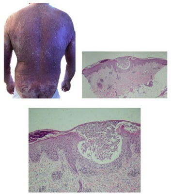
A Sarna crostosa.
B Pustulose exantemática aguda generalizada.
C Impetigo bolhoso.
D Pitiríase rubra pilar.
Questão 17 · Dermatologia · 4000200045Analise o caso clínico a seguir. Paciente do sexo masculino, 63 anos de idade, em uso de medicação biológica prescrita pelo reumatologista, apresenta as lesões a seguir. Levando em consideração o modo de ação dos imunobiológicos e as lesões apresentadas, qual é a classe de imunobiológicos usada pelo paciente?
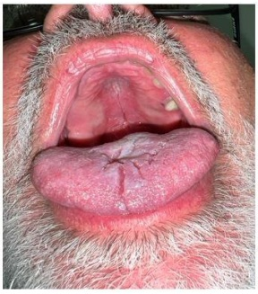
A Anti-p40.
B Anti-TNF alfa.
C Anti-p19.
D Anti-IL17.
Questão 18 · Dermatologia · 4000200044Analise as imagens clínicas a seguir. Em relação ao diagnóstico, assinale a alternativa correta.
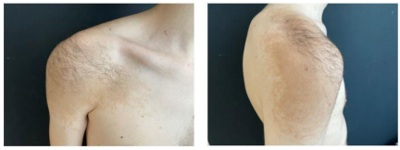
A Acomete mais homens do que mulheres, com uma relação de 5:1.
B Está associado com a neurofibromatose tipo 1.
C Apresenta como complicação a melanocitose neurocutânea.
D É composto por células névicas, histopatologicamente.
Questão 19 · Dermatologia · 4000200043Analise o caso clínico a seguir. Paciente do sexo feminino, 49 anos de idade, apresentando a lesão em destaque com as respectivas imagens dermatoscópica e histopatológicas. Nesse caso, qual é o diagnóstico?
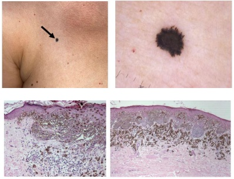
A Nevo de Reed.
B Melanoma.
C Lentigo em "pingo de tinta".
D Nevo combinado.
Questão 20 · Dermatologia · 4000200042Analise as imagens clínica e dermatoscópica apresentadas a seguir. Considerando essas imagens, qual é o diagnóstico?

A Carcinoma de Merkel.
B Doença de Bowen.
C Carcinoma basocelular.
D Acantoma de células claras.
Questão 21 · Dermatologia · 4000200041Analise a sequência de imagens cirúrgicas a seguir. Em relação ao procedimento cirúrgico que está sendo demonstrado, assinale a alternativa correta.
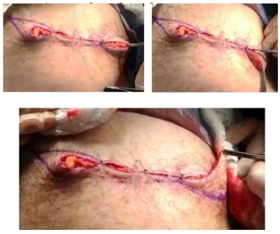
A Trata-se da remoção dos triângulos de Burrow.
B Trata-se da plastia em M utilizada nas extremidades de feridas nos membros.
C O ângulo de incisão do defeito primário deve ter sido menor ou igual 30º.
D Trata-se de retalho V-T na extremidade do defeito.
Questão 22 · Dermatologia · 4000200040Analise as imagens a seguir. Em relação ao quadro clínico e ao agente etiológico demonstrados, assinale a alternativa correta.
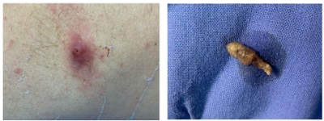
A Acomete indistintamente ambos os sexos e não há predileção por faixa etária ou tipo racial.
B O agente etiológico é do tipo necrobiontófago.
C Trata-se de doença provocada por insetos coleópteros do gênero
D Os hospedeiros naturais da larva são o cão e o gato.
Questão 23 · Dermatologia · 4000200039Analise o caso clínico a seguir. Paciente do sexo masculino, 55 anos de idade, apresentando, ao longo da vida, múltiplas lesões semelhantes à da imagem a seguir. Estudo genético apresentou mutação do gene TGFBR1. Nesse caso, qual é a síndrome apresentada pelo paciente?
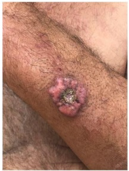
A Bazex.
B Ferguson-Smith.
C Li-Fraumeni.
D Muir-Torre.
Questão 24 · Dermatologia · 4000200038Analise o caso clínico a seguir. Paciente de 73 anos de idade relata surgimento, há cerca de três anos, de lesão ( figura 1) sobre cicatriz de queimadura no tronco que havia ocorrido na infância. A figura 2 se refere ao exame anatomopatológico de biópsia da lesão. Com base nas informações apresentadas, qual é o diagnóstico?
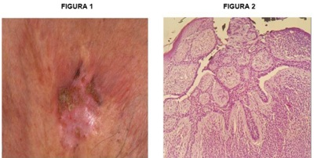
A Carcinoma basocelular.
B Carcinoma espinocelular.
C Melanoma amelanótico.
D Carcinossarcoma.
Questão 25 · Dermatologia · 4000200037Analise o desenho de um retalho programado para correção de um futuro defeito na asa nasal esquerda. Com relação a esse caso, assinale a alternativa correta.

A O desenho do retalho representa um movimento tecidual de rotação.
B O suprimento sanguíneo desse retalho é precário, por isso, ele deve ser longo.
C O aspecto em alçapão ocorre com pequena frequência e não apresenta resolução espontânea.
D A ponta da área demarcada com caneta pode ser dobrada para formar uma nova borda da narina.
Questão 26 · Dermatologia · 4000200036Analise o caso clínico a seguir. Paciente do sexo feminino, 25 anos de idade, procura atendimento dermatológico para remoção de tatuagem na região lombar, apresentada na imagem a seguir. Qual
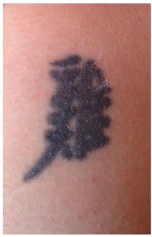
A Dye laser (laser de corante) 510 nm.
B Nd:YAG 1064 nm pulso longo.
C Q-Switched Alexandrita 755 nm.
D Q-Switched Nd:YAG 532 nm.
Questão 27 · Dermatologia · 4000200035Analise o caso clínico a seguir. Criança apresentando lesão assintomática, com inchaço e prurido local quando friccionada, conforme imagem a seguir. Em relação à doença dessa criança, assinale a alternativa correta.

A Ocorre, exclusivamente, na infância.
B Não evolui com formação de bolhas sobre a lesão.
C Não involui espontaneamente.
D O principal diagnóstico diferencial é o xantogranuloma juvenil.
Questão 28 · Dermatologia · 4000200034Analise o caso clínico a seguir. Lactente do sexo feminino, apresentando lesões cutâneas que foram precedidas por vesículas e bolhas, conforme imagens a seguir. Com base nas informações apresentadas, qual é o diagnóstico?
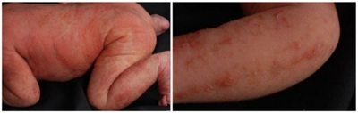
A Epidermólise bolhosa.
B Histiocitose de células de Langerhans.
C Incontinência pigmentar.
D Penfigoide infantil.
Questão 29 · Dermatologia · 4000200033Analise o caso clínico a seguir. Paciente do sexo masculino, cinco anos de idade, compareceu à consulta acompanhado de sua mãe, com queixa de problemas no couro cabeludo. A seguir, as imagens clínica, do exame com lâmpada de Wood e do exame micológico. Nesse caso, o agente etiológico dessa infecção é:

A T. tonsurans
B T. mentagrophytes
C M. canis
D T. rubrum
Questão 30 · Dermatologia · 4000200032Analise o caso clínico a seguir. Criança com seis anos de idade, há oito meses evoluindo com as lesões conforme imagens a seguir. Nesse caso, qual é o diagnóstico clínico?

A Líquen plano.
B Líquen espinuloso.
C Líquen estriado.
D Líquen nítido.
Questão 31 · Dermatologia · 4000200031Analise o caso clinico a seguir. Paciente do sexo feminino, 12 anos de idade, com lesão na mama há quatro meses, conforme apresentado nas imagens clínica e micológica a seguir. Nesse caso, qual é o diagnóstico?
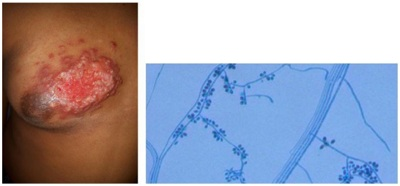
A Cromomicose.
B Esporotricose.
C Histoplasmose.
D Coccidioidomicose.
Questão 32 · Dermatologia · 4000200030Analise o caso clínico a seguir. Paciente do sexo feminino, atualmente com 64 anos de idade. Desde os 34 anos de idade apresenta lesões cutâneas eritematoescamosas. Foi tratada por três semanas com prednisona 1 mg/kg/dia, com regressão das lesões. Após a suspensão da medicação, procurou a emergência de um hospital, com febre, mal-estar e presença de pústulas em todo o tegumento, conforme imagens a seguir. Nesse caso, qual é o diagnóstico?

A Síndrome estafilocócica da pele escaldada (SSSS).
B Pustulose subcórnea.
C Psoríase pustulosa generalizada.
D Pustulose exantemática generalizada aguda.
Questão 33 · Dermatologia · 4000200029Analise o caso clínico a seguir. Paciente do sexo feminino, dois anos de idade, há cinco meses com lesões cutâneas pruriginosas, conforme imagens a seguir. Qual é a droga de escolha para o tratamento dessa doença?

A Colchicina.
B Dapsona.
C Metotrexato.
D Ciclosporina.
Questão 34 · Dermatologia · 4000200028Analise o caso clínico a seguir. Paciente do sexo feminino, 14 anos de idade, com lesões ceratóticas distribuídas pelo tegumento, xas, com graus variáveis de eritema, sem lesões de aspecto folicular, conforme imagens a seguir. Nega história de doença na família. Foi tratada durante dois meses com ciclosporina, sem melhora. Nesse caso, qual é o diagnóstico?

A Ictiose linear circunflexa.
B Eritroceratodermia simétrica progressiva.
C Psoríase em placa.
D Dermatite atópica.
Questão 35 · Dermatologia · 4000200027Analise o caso clínico a seguir. Mulher, 25 anos de idade, gestante (18 semanas). Apresenta lesão dolorosa no dorso da mão esquerda há três meses, conforme imagens a seguir. Com base no quadro clínico e nos exames apresentados, qual é a indicação terapêutica para essa paciente?
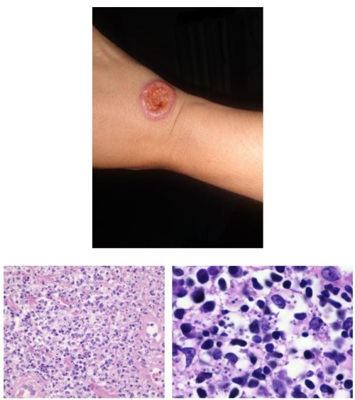
A Antimoniato de meglumina.
B Anfotericina B.
C Estibogluconato de sódio.
D Miltefosina.
Questão 36 · Dermatologia · 4000200026Analise o quadro clínico a seguir. Paciente do sexo masculino, um ano de idade, com lesões no couro cabeludo e no tronco há oito meses, conforme imagens a seguir. Com base nesse quadro clínico, histopatológico e imunohistoquímico, qual é o diagnóstico?
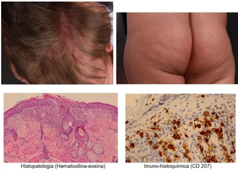
A Leucemia cútis.
B Dermatite seborreica.
C Histiocitose de células de Langerhans.
D Telangiectasia macular eruptiva
Questão 37 · Dermatologia · 4000200025Analise o quadro clínico a seguir. Paciente do sexo feminino, 34 anos de idade, com lesões assintomáticas no dorso há três anos, conforme imagens a seguir. Com base nesse quadro clínico e histopatológico, qual é o diagnóstico?
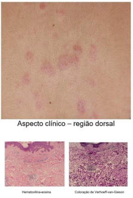
A Anetodermia.
B Urticária-vasculite.
C Síndrome de Sweet.
D Eritema nodoso hansênico.
Questão 38 · Dermatologia · 4000200024Analise o quadro clínico a seguir. Paciente do sexo feminino, 28 anos de idade, refere lesões pouco pruriginosas, conforme imagens a seguir, em todo o tegumento há um mês. As lesões vêm aumentando em número progressivamente. Com base nesse quadro clínico e histopatológico, qual é o diagnóstico?
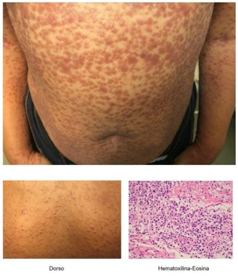
A Sífilis secundária.
B Urticária pigmentosa.
C Hanseníase virchowiana.
D Pitiríase liquenoide crônica.
Questão 39 · Dermatologia · 4000200023Analise o quadro clínico a seguir. Paciente do sexo feminino, dois anos de idade, com lesões no membro inferior direito, conforme imagens a seguir, desde o nascimento. Com base nesse quadro clínico, qual é o diagnóstico?

A Eritema ab igne.
B Mancha vinho do Porto.
C Síndrome de Klippel-Trenaunay.
D Cútis marmorata telangiectásica congênita.
Questão 41 · Dermatologia · 4000200021Analise o quadro clínico a seguir. Paciente HIV+, com CD4 de 110 céls/mm³. Refere lesões cutâneas assintomáticas há cinco meses, conforme imagens a seguir. Com base no quadro clínico e nos exames apresentados, qual é o diagnóstico?

A Paracoccidioidomicose.
B Histoplasmose.
C Criptococose.
D Fusariose.
Questão 42 · Dermatologia · 4000200020Analise o quadro clínico a seguir. Paciente do sexo masculino, 48 anos de idade, evoluindo há seis meses com lesões no tronco e membros. Quadro clínico e histopatológico representados nas imagens a seguir. Com base nesse quadro, qual é o diagnóstico?

A Molusco contagioso.
B Neurofibromatose.
C Dermatofibromas múltiplos.
D Hanseníase.
Questão 43 · Dermatologia · 4000200019Analise o quadro clínico a seguir. Paciente do sexo feminino, 33 anos de idade, há oito meses com lesão pruriginosa localizada na perna esquerda, conforme imagens clínica e histopatológicas apresentadas a seguir. Com base nesse quadro, qual é o diagnóstico?
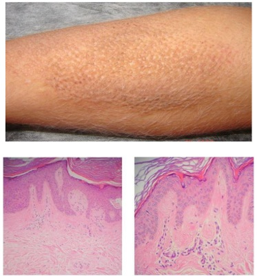
A Prurigo nodular.
B Líquen amiloidótico.
C Mucinose.
D Líquen simples.
Questão 44 · Dermatologia · 4000200018Analise o quadro clínico a seguir. Paciente do sexo feminino, 36 anos de idade, há dois anos com múltiplas lesões na região mamária, abdome e dorso, que aumentaram de tamanho nos últimos seis meses, conforme imagens clínica e histopatológica representadas a seguir. Com base nesse quadro, qual é o diagnóstico?
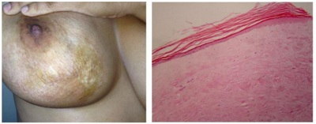
A Lúpus eritematoso cutâneo crônico.
B Esclerodermia em placas.
C Escleromixedema.
D Xantogranuloma necrobiótico.
Questão 45 · Dermatologia · 4000200017Analise o quadro clínico a seguir. Paciente do sexo feminino, 33 anos de idade, com lesões nos membros inferiores e superiores, intensamente pruriginosas, conforme imagens clínicas e histopatológica a seguir, em uso de corticoide tópico com pouca melhora, há dois anos. Diante desse quadro, qual é o diagnóstico?
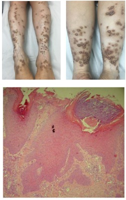
A Colagenose reativa perfurante.
B Prurigo nodular.
C Doença de Kyrle.
D Penfigoide nodular.
Questão 46 · Dermatologia · 4000200016Analise o quadro clínico a seguir. Paciente do sexo feminino, 30 anos de idade, procurou atendimento devido à dor na região plantar há um mês. Quadro dermatoscópico apresentado a seguir. Considerando esse quadro, qual é o diagnóstico?
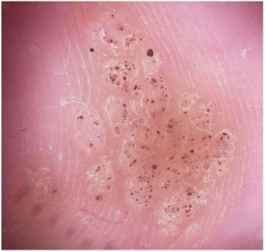
A Trauma mecânico.
B Melanoma amelanótico.
C Mirmécia.
D Poroma écrino.
Questão 47 · Dermatologia · 4000200015Analise o quadro clínico a seguir. Paciente do sexo masculino, 45 anos de idade, referindo lesões na perna há um ano, após pescar em um rio no Centro-Oeste do Brasil. Quadro clínico e microcultivo apresentados a seguir. Considerando esse quadro, assinale a alternativa que apresenta a correlação correta.
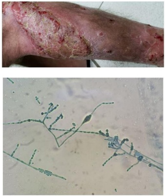
A Cromoblastomicose, microcultivo com frutificação tipo
B Granuloma tricofítico, microcultivo com
C Granuloma das piscinas, microcultivo com
D Paracoccidioidomicose, microcultivo a 25 ºC, forma filamentosa.
Questão 48 · Dermatologia · 4000200014Analise o quadro clínico a seguir. Paciente do sexo masculino, 24 anos de idade, internado em decorrência de transplante de medula óssea, com febre acima de 38,5ºC, estado geral comprometido e aparecimento de manchas purpúricas e equimóticas na pele. Quadro clínico e microcultivo apresentados a seguir. Considerando esse quadro, qual é o diagnóstico?

A Aspergilose.
B Sepse por Malassezia spp..
C Fusariose.
D Dermatofitose invasiva.
Questão 49 · Dermatologia · 4000200013Analise o quadro clínico a seguir. Paciente do sexo feminino, 26 anos de idade, atleta pro ssional, procura atendimento médico devido à transpiração excessiva nos pés há vários meses, após troca do modelo de tênis. Quadro clínico apresentado a seguir. Considerando esse quadro, qual é o diagnóstico e o tratamento indicado?
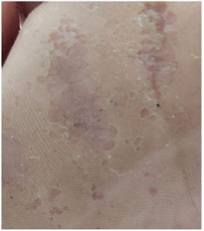
A Verrugas virais plantares, crioterapia com nitrogênio líquido.
B Tinha do pé, ciclopirox olamina 1% em creme.
C Disidrose, betametasona 0,01% em creme.
D Ceratólise plantar sulcada, eritromicina tópica.
Questão 50 · Dermatologia · 4000200012Analise o quadro clínico a seguir. Paciente do sexo feminino, 58 anos de idade, refere surgimento de lesões nas mãos e pés há dois anos, sem qualquer acometimento sistêmico, como apresentado nas imagens a seguir. Com base nesse quadro, qual é o diagnóstico?

A Dermatite herpetiforme.
B Epidermólise bolhosa adquirida.
C Lúpus eritematoso bolhoso.
D Porfiria cutânea tardia.
Questão 51 · Dermatologia · 4000200011Analise o quadro clínico e histopatológico a seguir. Considerando essas imagens, qual é o diagnóstico?

A Micose fungoide.
B Pitiríase rubra pilar.
C Pitiríase liquenoide.
D Psoríase em placa.
Questão 52 · Dermatologia · 4000200010Analise o quadro clínico a seguir. Paciente do sexo feminino, 29 anos de idade, refere surgimento de lesão na coxa direita, conforme imagens a seguir, há oito meses, assintomática. Considerando esse quadro, qual é o diagnóstico?
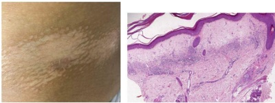
A Líquen escleroso.
B Hanseníase indeterminada.
C Micose fungoide hipocromiante.
D Vitiligo segmentar.
Questão 53 · Dermatologia · 4000200009Analise o quadro clínico a seguir. Paciente do sexo feminino, 54 anos de idade, com artrite reumatoide diagnosticada há 10 anos e controlada com imunobiológico há dois anos, passou a apresentar lesões palmoplantares, conforme imagens a seguir, mesmo com a troca de medicamentos. Considerando que há vários medicamentos aprovados para uso na artrite reumatoide que não se relacionam a esse evento adverso, analise os medicamentos a seguir. I. Adalimumabe II. Etanercepte III. Certolizumabe pegol IV. Tofacitinibe V. Baricitinibe Com base nos dados da história e na apresentação clínica das lesões, é(são) medicamento(s) que poderia(m) ser opção(ões) para evitar a recidiva:

A I e II, apenas.
B III, apenas.
C IV e V, apenas.
D V, apenas.
Questão 54 · Dermatologia · 4000200008Analise o quadro clínico a seguir. Paciente do sexo masculino, 50 anos de idade, trabalhador rural, apresenta essa lesão de crescimento rápido no dorso do pé direito e no espaço interdigital, conforme imagens a seguir. Com base nas informações clínicas e no exame anatomopatológico, qual é o diagnóstico?

A Cromomicose.
B Carcinoma espinocelular.
C Micetoma.
D Dermatofibrossarcoma.
Questão 55 · Dermatologia · 4000200007Analise o quadro clínico a seguir. Paciente do sexo masculino, 12 anos de idade, apresenta alterações nas unhas e cabelos, conforme imagens a seguir, há seis meses. Com base nas informações clínicas e da dermatoscopia, os elementos encontrados nas imagens que apoiam o diagnóstico são
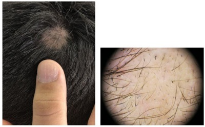
A coiloníquia e fios em vassoura.
B depressões cupuliformes e pontos vermelhos.
C sulco de Beau e cilindros capilares.
D traquioníquia e fios em ponto de exclamação.
Questão 56 · Dermatologia · 4000200005Paciente do sexo masculino, 32 anos, apresentou dor e vermelhidão na perna direita associadas a febre, calafrios e queda do estado geral. Ao exame, há uma placa eritematosa bem delimitada na perna direita com algumas bolhas. Com base no caso, assinale a alternativa correta.
A A presença de bolhas corrobora o diagnóstico de penfigoide bolhoso.
B Um dos agentes etiológicos mais comuns é
C O diagnóstico é de celulite na perna direita.
D O tratamento deve ser feito com aminoglicosídeos.
Questão 57 · Reumatologia · 4000200004Mulher de 27 anos procura atendimento por queixas de inchaço, febre, mal-estar e dores nas mãos e nos punhos. Relata que o inchaço se iniciou nesta semana e que os demais sinais e sintomas, há cerca de 2 meses. Ao exame físico, apresenta úlcera indolor em palato duro, artrite de punhos e metacarpofalangeanas, pressão arterial = 150 x 100 mmHg e edema compressível de membros inferiores 3+/4+ até as coxas. Solicitados exames complementares que mostraram hemoglobina = 9,5 g/dL; leucócitos = 3.200/mm³; plaquetas = 110.000/mm³ ; creatinina = 2,8 mg/dL; ureia = 90 mg/dL; FAN = 1/640 padrão nuclear homogêneo; urina 1 com eritrócitos 10.000/campo; leucócitos 20.000/campo; presença de cilindros hemáticos e albumina 3+/4+; relação proteína/creatinina urina amostra isolada = 2 (VR < 0,2). Tendo em vista a principal hipótese diagnóstica, qual é o melhor tratamento para a paciente nesse momento?
A Pulsoterapia com metilprednisolona 1 g/dia por 3 dias consecutivos e micofenolato de mofetila.
B Prednisona 1 mg/kg via oral associada à ciclofosfamida endovenosa.
C Pulsoterapia com metilprednisolona 1 g/dia por 3 dias consecutivos e metotrexato.
D Solicitar biópsia renal e, após, definir o melhor tratamento baseado em seus achados.
Questão 58 · Pneumologia · 4000200003Uma mulher de 55 anos de idade, ex-tabagista (cessou o tabagismo há 10 anos e tem carga tabágica de 30 maços/ano), procura atendimento médico devido à presença de tosse crônica e dispneia progressiva nos últimos meses. Ao realizar a anamnese e o exame físico, o médico suspeita de doença pulmonar obstrutiva crônica (DPOC). Para confirmar o diagnóstico de DPOC:
A A carga tabágica deve ser de pelo menos 40 maços/ano.
B O diagnóstico da doença é apenas clínico e já está confirmado.
C A espirometria é necessária e deve mostrar um VEF1 < 70%.
D A prova broncodilatadora positiva não descarta a DPOC.
Questão 59 · Cardiologia · 4000200002Homem, 55 anos, hipertenso, apresentou perda de consciência enquanto estava se barbeando. Foi levado ao pronto-socorro por familiares logo após o evento. O primeiro exame indicado nesse caso é:
A Eletrocardiograma.
B Holter de 24 horas.
C Teste ergométrico.
D Tilt test.
Questão 60 · Hematologia · 4000200001Menino de 5 anos de idade é atendido na Unidade Básica de Saúde com quadro de surgimento abrupto de manchas arroxeadas difusas por todo o corpo há 1 dia. Duas semanas antes, apresentou quadro de resfriado comum. Ao exame físico, a criança está em bom estado geral, anictérica, acianótica, afebril, com petéquias e equimoses em membros superiores e inferiores. Os exames laboratoriais mostram hemoglobina de 13 g/dL, leucócitos de 5.500/mm³, contagem de plaquetas de 35.000/mm³ e creatinina de 0,5 mg/dL. Qual é a principal suspeita diagnóstica?
A Síndrome hemolítico-urêmica.
B Púrpura de Henoch-Schönlein.
C Púrpura trombocitopênica trombótica.
D Trombocitemia imune.
Questão 61 · Inf ectologia · 4000200000Paciente do sexo masculino, 65 anos, com história de febre, tosse produtiva e dor ventilatório-dependente há quatro dias, apresenta-se à emergência com febre, taquicardia, hipotensão e sonolência. A pressão arterial é de 80/50 mmHg, a frequência cardíaca é de 120 bpm, a temperatura é de 39 °C e o peso corporal é de 60 kg. Após a administração de 2.000 mL de solução cristaloide, a pressão arterial não se normaliza. Os exames laboratoriais revelam leucocitose, acidose metabólica e lactato arterial de 3 mmol/L (normal: até 2 mmol/L). Qual é a classificação mais adequada para esse caso?
A Infecção sem sepse.
B Sepse.
C Sepse grave.
D Choque séptico.
Questão 62 · Neurologia · 4000199999Um homem de 66 anos é atendido no pronto-socorro de um hospital. Seu acompanhante relata que, há cerca de 20 minutos, ele escorregou enquanto andava no quintal, caiu e bateu a cabeça. Não houve perda da consciência, vômito nem cefaleia. Ao exame físico, paciente apresenta abertura ocular espontânea, responde de forma orientada e obedece às ordens solicitadas, movimentando corretamente os membros superiores e inferiores; as pupilas encontram-se isocóricas e fotorreagentes. Considerando a história clínica do paciente e os dados do exame físico, assinale a opção que apresenta, respectivamente, a principal hipótese diagnóstica e a conduta adequada ao caso.
A Traumatismo leve; radiografia de crânio.
B Traumatismo moderado; tomografia de crânio e avaliação clínica seriada.
C Traumatismo leve; alta com orientações de sinais de alerta.
D Traumatismo leve; TC de crânio.
Questão 63 · Nef rologia · 4000199998Mulher, 27 anos, previamente hígida, procura atendimento médico por queixa de cansaço progressivo nos últimos 10 dias, associado a edema de membros inferiores e tosse seca há 3 dias. Ao exame, apresenta temperatura subfebril (37,3 °C) – PA de 174 x 86 mmHg – taquicardia – palidez cutânea 2+ - presença de estertores crepitantes em 1/3 médio hemitórax direito – edema de membros inferiores 2+. Exames laboratoriais evidenciam: creatinina 4,7 mg/dL – ureia 83mg/dL – Na 135 mEq/L – K 5,6 mEq/L – Hb 8,3 g/dL – leucócitos 7.600 – plaquetas 113.000. Urina: leucócitos 113.000 – hemácias 894.000 – dismor smo presente – proteína 2+. Assinale a alternativa verdadeira sobre a síndrome clínica apresentada pela paciente.
A A biópsia renal é mandatória, e a imunofluorescência auxilia no diagnóstico diferencial.
B Os níveis de complemento sérico não ajudam nessa situação, pois estarão consumidos nas principais hipóteses diagnósticas.
C O quadro clínico é típico e dispensa a realização de biópsia renal. Devemos focar o tratamento com pulsoterapia + ciclofosfamida.
D O quadro clínico é de sepse de foco pulmonar com necessidade de início imediato de antibioticoterapia.
Questão 64 · Gastroenterologia · 4000199997Júlia, 32 anos, tem quadro de distensão abdominal e diarreia eventualmente, especialmente após a ingestão de massas. Procura a UBS queixando-se do surgimento de vesículas pruriginosas joelhos e cotovelos e joelhos nos últimos 6 meses, com períodos de piora e melhora intermitentes. Júlia tem hipotireoidismo há 5 anos, em uso de levotiroxina 88 µg pela manhã. Sobre esse caso, marque a opção ERRADA:
A O diagnóstico do distúrbio gastrointestinal pode ser confirmado por meio de colonoscopia com biópsias.
B O hipotiroidismo, assim como o diabetes tipo I, pode estar associado à principal hipótese diagnóstica.
C Os sintomas gastrointestinais e cutâneos provavelmente apresentam o mesmo agente causal.
D A dosagem dos autoanticorpos antitransglutaminase fração IgA e antiendomísio fração IgA pode auxiliar na investigação diagnóstica.
Questão 65 · Gastroenterologia · 4000199956Sr. Jurandir tem 76 anos, é etilista, tabagista e tem queixas dispépticas há mais de 2 anos. Porém, procurou a UBS por emagrecimento importante nos últimos 3 meses, aumento do volume abdominal, além de astenia e eliminação de fezes enegrecidas nas últimas 2 semanas. Foi solicitada a endoscopia digestiva alta (EDA), q ue revelou úlcera in ltrativa e necrótica, medindo 4 cm, localizada no antro gástrico, com sinais de sangramento recente. O histopatológico revelou adenocarcinoma indiferenciado, e a tomogra a de abdome exibe múltiplos nódulos hipodensos e hipovasculares no parênquima hepático, além de líquido livre de moderado volume. Qual é a conduta mais apropriada nesse caso?
A Gastrectomia total com linfadenectomia a D2.
B Gastrectomia subtotal (dois terços distais do estômago) com linfadenectomia a D2.
C Biópsia hepática e paracentese para fazer diagnóstico diferencial entre neoplasia e cirrose.
D Tratamento paliativo, podendo incluir paracentese de alívio e radioterapia hemostática.
Questão 66 · Dermatologia · 4000199934Criança de 5 anos é levada pela mãe à Unidade Básica de Saúde com queixa de bolinhas vermelhas que coçam nas pernas e nos braços. Ao exame, há pápulas eritematosas escoriadas e seropápulas localizadas nos braços e nas pernas. Com base no caso clínico, a hipótese diagnóstica é:
A Tinea corporis.
B Dermatite atópica.
C Psoríase.
D Prurigo estrófulo.
Questão 67 · Reumatologia · 4000199928Mulher de 45 anos, costureira, procura a Unidade Básica de Saúde com queixas de dor e inchaço em mãos e punhos há 6 meses. Quando questionada, refere rigidez com duração superior a uma hora pela manhã. Faz uso frequente de ibuprofeno com melhora parcial. Nega comorbidades e uso de medicações contínuas. É tabagista 30 maços/ano. Ao exame físico: artrite de punhos, 2ª e 3ª metacarpofalangeanas bilateralmente, 2ª interfalangeana proximal à direita e 3ª e 4ª interfalangeanas proximais à esquerda. Diante do diagnóstico mais provável, assinale a alternativa correta:
A O tabagismo não tem relação direta com a artropatia apresentada pela paciente.
B O fator reumatoide é o anticorpo mais sensível e específico para esse diagnóstico.
C O uso contínuo de anti-inflamatório não esteroidal ou glicocorticoide pode evitar o surgimento de erosões e progressão da doença.
D A radiografia de mãos e punhos poderá mostrar osteopenia periarticular e erosão marginal.
Questão 68 · Cardiologia · 4000199927Um homem de 62 anos de idade, em tratamento regular para hipertensão arterial e hipercolesterolemia, procurou a Unidade Básica de Saúde (UBS) com queixa de fortes dores musculares. Ele acredita que o novo quadro tenha relação com uma medicação prescrita na sua última visita, quando foram constatadas alterações em seus exames laboratoriais. Assinale a opção que indica o fármaco recentemente introduzido no esquema terapêutico do paciente e que provavelmente está relacionado com o quadro atual:
A Ômega-3.
B Ezetimibe.
C Genfibrozila.
D Ácido nicotínico.
Questão 69 · Neurologia · 4000199926Uma mulher de 70 anos é levada à consulta com médico da Saúde da Família por queixa de tremores em membros superiores. A lha refere que, nos últimos 3 meses, a paciente iniciou quadro de tremor em repouso associado à lenti cação dos movimentos voluntários. É portadora de HAS e diabetes e está em uso de losartana, hidroclorotiazida, metformina e cinarizina. Ao exame físico, apresenta tremor moderado e simétrico em ambos os membros superiores com franco predomínio no repouso. Há, ainda, rigidez bilateral e bradicinesia. Assinale o diagnóstico e a respectiva conduta:
A Tremor essencial; iniciar propranolol.
B Doença de Parkinson; iniciar prolopa.
C Parkinsonismo secundário; ajustar esquema medicamentoso.
D Doença de Parkinson; iniciar pramipexol.
Questão 71 · Clínica Médica · 4000199251Paciente masculino, 72 anos, internado na enfermaria para realização de artroplastia de quadril eletiva. Hoje, no 2º pós-operatório, evolui com discurso desconexo em diversos momentos do dia, além de referir que vai para casa pois já terminou o que tinha que fazer naquele ambiente, aparentemente não reconhecendo estar em um hospital. Tais momentos são contornados verbalmente pela esposa e lha. Era previamente funcional, independente e sem problemas cognitivos aparentes. Fazia uso crônico de losartana 50mg/dia para hipertensão arterial e alopurinol 300mg/dia para hipeuricemia, além de clonazepam 0,5mg/dia para dormir, estando em uso de tais medicações durante a internação. Qual medida deve ser tomada para melhor controle do quadro?
A Suspender clonazepam em uso.
B Iniciar risperidona em dose baixa.
C Manter controle verbal da agitação.
D Prescrever contenção física nas exacerbações.
Questão 72 · Clínica Médica · 4000199250Paciente feminina, 58 anos, vem à consulta de retorno apresentando queixa de dispneia aos médios esforços, além de episódios de acordar à noite pelo desconforto para respirar. Atualmente, em uso de losartana 150mg/dia + espironolactona 25mg/dia + metoprolol 100mg/dia + furosemida 40mg/dia. Traz exames que mostram pro-BNP 700 pg/ml (VR: até 125pg/ml), Cr: 0,9 mg/dL (VR: 0,7-1,3mg/dL), glicemia de jejum: 85mg/dL. Hb glicada: 5,2%, hemograma sem alterações e ecocardiograma mostrando fração de ejeção de 38%, com dilatação de câmaras esquerdas. Ao exame, apresenta edema de membros inferiores discreto, pressão arterial: 120 x 70mmhg e frequência cardíaca de 56 batimentos por minuto. Considerando benefícios quanto a mortalidade e hospitalização, qual o ajuste medicamentoso mais apropriado?
A Adicionar dapaglifozina e sacubitril valsartana.
B Trocar losartana por ramipril e aumentar dose de furosemida.
C Trocar losartana por sacubitril/valsartana + associar dapaglifozina.
D Adicionar ivabradina e dapaglifozina + aumentar dose de furosemida.
Questão 73 · Clínica Médica · 4000199249Paciente masculino, 75 anos, ex-professor universitário, comparece à consulta de retorno trazendo exames d e investigação de queixa cognitiva solicitados por colega externo. Paciente e esposa relatam esquecimentos corriqueiros, com impacto em atividades diárias mais complexas, como dirigir, e no manejo nanceiro. Apresenta Mini-exame do estado mental com escore de 25 pontos. Escala de Lawton com prejuízo leve e Escala de Katz com escore normal. Exame físico sem maiores achados. Ressonância de encéfalo mostra atro a cortical e de hipocampos, sem outros achados de importância. Hemograma, per l glicêmico, função renal, tireoidiana e hepática normais; dosagens de vitamina B12 e ácido fólico normais e sorologias negativas. Nega comorbidades prévias ou uso de medicamentos. Qual conduta farmacológica está indicada?
A Manter sem medicação e reavaliar cognição no retorno.
B Prescrever donepezila agora e memantina no retorno.
C Prescrever memantina em dose progressiva.
D Prescrever rivastigmina em dose progressiva.
Questão 74 · Clínica Médica · 4000199248Paciente masculino, 45 anos, diabético tipo 1 em uso de insulina – trazido ao PS com quadro de convulsões tônico-clônica generalizadas há cerca de 15 minutos após uso de bolus de insulina regular, segundo familiares. Vinha em tratamento de depressão grave com ideação suicida e início recente de sertralina. Qual a conduta imediata, após garantir proteção de vias aéreas?
A Glicose 50% endovenoso.
B Midazolam intramuscular.
C Diazepam endovenoso.
D Fenitoína endovenosa.
Questão 75 · Clínica Médica · 4000199247Paciente masculino, 60 anos, portador de hipertensão arterial, dislipidemia e asma. Em uso de anlodipino 10mg/dia, rosuvastatina 20mg/dia e formoterol + budesonida inalatório. Comparece com queixa de tremor que notou há cerca de 6 meses e vem incomodando-o. Ao exame, apresenta tremor de intenção, bilateral e simétrico em mãos, além de leve tremor cefálico. Pesquisas de bradicinesia e rigidez negativas. Considerando a causa mais provável, qual a terapêutica apropriada a ser instituída?
A Primidona.
B Levodopa.
C Pramipexol.
D Propranolol.
Questão 76 · Clínica Médica · 4000199246Paciente feminina, 45 anos, comparece à consulta para reavaliação 3 semanas após suspensão de tratamento para tuberculose pulmonar com esquema quádruplo (RIPE) por ter apresentado mal-estar e anorexia após início do mesmo, além de episódios esporádicos de vômitos. Exames prévios mostravam: TGO: 360 U/L (VR: até 45). TGP: 350 U/L (VR: até 40). Gama-GT: 180 U/L (VR: 9-36) Bilirrubinas: 1,8 mg/dL (VR: até 1,2 mg/dL). Restante da bioquímica sem alterações, hemograma normal. Traz novos exames que mostram TGO: 60U/L. TGP: 60U/L Gama-GT: 50 U/L e bilirrubinas: 1,0mg/dL e relata estar sem sintomas dispépticos náuseas ou vômitos. Quanto à reintrodução sequencial dos medicamentos para tuberculose, a melhor ordem é reiniciar:
A rifampicina e etambutol e depois isoniazida + pirazinamida.
B esquema com rifampicina, isoniazida e pirazinamida somente.
C rifampicina + etambutol, depois pirazinamida e por último isoniazida.
D rifampicina + etambutol, depois isoniazida e por último pirazinamida.
Questão 77 · Clínica Médica · 4000199245Homem de 60 anos, tabagista há 42 anos (40 cigarros/dia), chega à emergência com queixa de dispneia que vem piorando há cerca de 7 dias, além de tosse e expectoração amarelada. Relata crises prévias de dispneia, sem expectoração, mas que logo melhoravam. Radiogra a de tórax mostra reti cação de cúpulas diafragmáticas, com sinais de hiperinsu ação pulmonar, sem imagens sugestivas de consolidações. Ao exame, PA: 130x80mmHg, frequência cardíaca: 88bpm, frequência respiratória: 22ipm, Saturação de O2: 95%. Ausculta pulmonar com roncos e sibilos esparsos. Qual a conduta farmacológica indicada?
A Ipatrópio e levofloxacina.
B Prednisona e salbutamol somente.
C Levofloxacina e salbutamol somente.
D Moxifloxacina, prednisona e salbutamol.
Questão 78 · Clínica Médica · 4000199244Paciente feminina, 70 anos, portadora de hipertensão, diabetes tipo 2 e insu ciência cardíaca. Em uso de carvedilol 25mg/dia, metformina 1000mg/dia, losartan 100mg/dia e hidroclorotiazida 25mg/dia (iniciada h á 10 dias para melhor controle pressórico). Há cerca de 5 dias, passou a apresentar sonolência que foi se exacerbando e hoje trazida ao pronto-socorro. Não ocorreram outros sinais ou sintomas. Chega letárgica, c o m PA: 130 x 90mmhg. FC: 90. SatO2: 96%. Exames mostram Na: 122mmol/L. K: 4,5 mmol/L. Ca: 9mg/dL, glicemia: 122 mg/dL, hemograma, função renal e função tireoidiana normais. Quanto à osmolaridade sérica, osmolaridade urinária e sódio urinário neste paciente, esperemos que estejam respectivamente:
A baixa, alta e baixo.
B baixa, alta e alto.
C alta, baixa e alto.
D alta, alta e alto.
Questão 79 · Clínica Médica · 4000199243Paciente feminina, 38 anos, comparece ao atendimento com queixa de dores articulares e inchaço em mãos há cerca de 2 meses. Relata que o quadro é pior pela manhã, ao acordar, e que após cerca de 1 hora começa a melhorar. Ao exame, você nota calor e edema em interfalangeanas proximais do 1o ao 4o dedos bilateralmente, além de punhos. É hipertensa e portadora de hiperuricemia, além de tabagista desde os 2 0 anos (15 cigarros/dia) e etilista de nal de semana. Não pratica atividade física. Paciente relata que a mãe tem “reumatismo” desde jovem que causou deformidades nas mãos. Considerando a hipótese mais provável, qual fator de risco pode estar associado ao quadro?
A Etilismo.
B Tabagismo.
C Hipeuricemia.
D Sedentarismo.
Questão 80 · Clínica Médica · 4000199242Paciente feminina, 58 anos, portadora de HAS, obesidade e diabetes de difícil controle. Comparece para reavaliação relatando que na última consulta foi iniciada medicação para o diabetes que tanto controlou melhor os níveis medidos em domicílio, quanto causou perda ponderal de cerca de 2,5Kg (70kg > 67,5Kg). Traz exames com melhora do controle glicêmico após tal mudança. Esqueceu receita e não lembra quais medicações está tomando. Considerando o relato da paciente, qual a provável terapêutica instituída na última consulta?
A Dapaglifozina.
B Pioglitazona.
C Saxagliptina.
D Metformina.
Questão 81 · Clínica Médica · 4000199241Homem de 58 anos foi trazido à emergência sudorético, pálido e sonolento. Segundo acompanhante, ele referiu queixa de palpitação há aproximadamente 20 minutos e que o quadro se iniciou após noti cação d e ritmo irregular pelo smartwatch. Nega episódios semelhantes anteriormente. Na avaliação inicial, a frequência cardíaca estava de aproximadamente 120bpm, com ritmo irregular, pressão arterial de 70x40mmHg, SatO2 84% e escala de coma de Glasgow de 13. ECG revelou o ritmo cardíaco sem ondas P e intervalos RR irregulares. Neste momento, a melhor conduta é:
A ablação por cateter.
B anticoagulação oral.
C cardioversão elétrica.
D cardioversão farmacológica.
Questão 82 · Clínica Médica · 4000199240Homem de 45 anos, com histórico crônico de consumo excessivo de álcool de longa data, atualmente c o m consumo diário, foi trazido ao hospital com icterícia, astenia e desconforto abdominal. Exames laboratoriais revelam elevação das enzimas hepáticas, de bilirrubinas e da creatinina. A ultrassonogra a abdominal mostrou aumento da ecogenicidade do fígado, ausência de dilatação de vias biliares e ausência de líquido na cavidade peritoneal. Foi calculado o MELD que foi de 22. Neste momento, a conduta mais adequada é:
A indicar transplante hepático de urgência.
B iniciar prednisona 40mg/dia por 4 semanas.
C prescrever ceftriaxona + metronidazol por 7 dias.
D administrar ácido ursodesoxicólico 150mg após refeições.
Questão 83 · Clínica Médica · 4000199239Homem de 55 anos, com histórico de consumo crônico de álcool, procurou o pronto-socorro com dor abdominal na região epigástrica com irradiação para o dorso de início há 24 horas. Relatou também náuseas e vômitos. Ao exame físico, estava com pressão arterial de 70x40mmHg, frequência cardíaca de 110bpm com pulso liforme, além de distensão e dor abdominal difusa à palpação. Exames laboratoriais revelaram amilase de 500U/L (referência até 125U/L) e lipase de 300U/L (referência até 60 U/L). Tomografia computadorizada abdominal com contraste mostrou edema pancreático, sem áreas de necrose. Houve melhora da dor abdominal com mor na intravenosa. Neste caso, a conduta mais adequada é expansão volêmica com:
A solução salina e programar nutrição parenteral após estabilização.
B solução de Ringer com lactato e programar alimentação oral após estabilização.
C albumina humana 20% e programar nutrição enteral com sonda na posição jejunal.
D solução de hidroxietilamido e programar nutrição enteral com sonda na posição gástrica.
Questão 84 · Clínica Médica · 4000199238Mulher de 62 anos, portadora de hipertensão arterial, diabetes mellitus tipo II, dislipidemia e queixas subjetivas de memória, retornou para consulta com TSH atual de 8mU/L e T4 livre de 1,5ng/dL (referência: 0,7 a 1,8ng/dL). No exame anterior, colhido há 6 meses, o resultado do TSH foi 7,5mU/L. Na consulta atual, a melhor recomendação quanto a conduta é:
A não iniciar levotiroxina, pois o TSH foi inferior a 10mU/L.
B considerar tratamento com levotiroxina devido a queixa cognitiva.
C não iniciar levotiroxina, pois o risco de isquemia miocárdica é elevado.
D considerar tratamento com levotiroxina devido ao alto risco cardiovascular.
Questão 85 · Clínica Médica · 4000199237Homem de 28 anos, admitido na UTI com insu ciência respiratória aguda, no momento sob analgesia e sedação contínua, em ventilação mecânica controlada à pressão (modo PCV) com sensibilidade à pressão. Os gráficos do ventilador estão abaixo. Qual tipo de assincronia está ocorrendo e qual ajuste deve ser realizado?
A Esforço inefetivo, aumentar a sensibilidade à pressão.
B Ciclagem precoce, diminuir a sensibilidade à pressão.
C Assincronia de fluxo, aumentar o fluxo inspiratório.
D Ciclagem tardia, diminuir o tempo inspiratório.
Questão 86 · Clínica Médica · 4000199236Homem de 70 anos, internado na UTI no pós-operatório de colectomia à Hartmann por neoplasia c o m obstrução e sofrimento de alça, evoluiu com redução da pressão arterial média (PAM) para 50mmHg, frequência cardíaca de 115bpm (sinusal), lactato de 4,0mg/dl, saturação venosa central de oxigênio (SVcO2) de 60% e débito urinário de 0,1ml/Kg/h. Está sob bloqueio neuromuscular e ventilação mecânica m o d o controlado com volume corrente de 10ml/Kg e PEEP de 8cmH2O. A monitorização hemodinâmica identi cou uma variação de volume sistólico de 20%. Qual a conduta mais adequada nesse momento?
A Introdução de dobutamina.
B Introdução de noradrenalina.
C Reanimação volêmica com solução de Ringer.
D Infusão de hidrocortisona na dose de 200mg/dia.
Questão 87 · Clínica Médica · 4000199235Homem de 35 anos, com diagnóstico prévio de HIV em tratamento antirretroviral irregular, apresenta-se com cefaleia intensa, febre e rigidez de nuca. A punção lombar revela pleocitose linfocítica e presença d e leveduras encapsuladas com formas em brotamento na coloração com tinta da China. Qual das seguintes opções de tratamento é considerada a terapia de escolha inicial para este paciente?
A Monoterapia com fluconazol.
B Monoterapia com caspofungina.
C Terapia combinada com caspofungina e fluconazol.
D Terapia combinada com anfotericina B desoxicolato e flucitosina.
Questão 88 · Clínica Médica · 4000199234Homem de 70 anos, sem histórico de tabagismo, realizou TC de tórax com cortes nos, sendo identi cado nódulo pulmonar solitário de 5mm de caráter semissólido e com padrão em vidro fosco puro, localizado no ápice do lobo inferior direito. Neste caso, a melhor conduta quanto à investigação é:
A Não realizar nenhum seguimento.
B Realizar nova TC de tórax após 3 meses.
C Realizar nova TC de tórax após 12 meses.
D Realizar PET-TC com contraste dinâmico.
Revisar: possível letra faltando em enunciado
Questão 89 · Clínica Médica · 4000199233Homem de 60 anos de idade, com história de doença renal crônica em diálise e diabetes mellitus tipo 2 e m uso de insulina, veio ao hospital com queixa de dor e massa dolorosa, aparentemente calci cada em braço esquerdo, que surgiu nos últimos meses (imagem abaixo). O exame radiológico revelou calci cação de partes moles. A restrição alimentar necessária para prevenir esta complicação é de:

A carboidratos.
B potássio.
C fósforo.
D cálcio.
Questão 90 · Clínica Médica · 4000199232Homem de 32 anos, procurou atendimento no serviço de Atenção Primária à Saúde devido a lesão que surgiu há cerca de 3 meses, do tipo placa, com bordas nítidas, elevadas, eritematosa e micropapulosa, com cent ro hipocrômico, em região anterior do tórax. Nega contato com outras pessoas com lesões semelhantes. Segue abaixo o aspecto da lesão. Qual deve ser o próximo passo na investigação diagnóstica deste paciente?

A Sorologia anti-PGL-1.
B Teste de sensibilidade tátil e térmica da lesão.
C Baciloscopia direta para bacilos álcool-ácido resistentes da lesão.
D Teste molecular para detecção de M. leprae (qPCR) em biópsia de pele.
Questão 91 · Clínica Médica · 4000199223Paciente masculino, 72 anos, internado na enfermaria para realização de artroplastia de quadril eletiva. Hoje, no 2o pós-operatório, evolui com discurso desconexo em diversos momentos do dia, além de referir que vai para casa pois já terminou o que tinha que fazer naquele ambiente, aparentemente não reconhecendo estar em um hospital. Tais momentos são contornados verbalmente pela esposa e lha. Era previamente funcional, independente e sem problemas cognitivos aparentes. Fazia uso crônico de losartana 50mg/dia para hipertensão arterial e alopurinol 300mg/dia para hipeuricemia, além de clonazepam 0,5mg/dia para dormir, estando em uso de tais medicações durante a internação. Qual medida deve ser tomada para melhor controle do quadro?
A Suspender clonazepam em uso.
B Iniciar risperidona em dose baixa.
C Manter controle verbal da agitação.
D Prescrever contenção física nas exacerbações.
Questão 92 · Clínica Médica · 4000199222Paciente feminina, 58 anos, vem à consulta de retorno apresentando queixa de dispneia aos médios esforços, além de episódios de acordar à noite pelo desconforto para respirar. Atualmente, em uso de losartana 150mg/dia + espironolactona 25mg/dia + metoprolol 100mg/dia + furosemida 40mg/dia. Traz exames que mostram pro-BNP 700 pg/ml (VR: até 125pg/ml), Cr: 0,9 mg/dL (VR: 0,7-1,3mg/dL), glicemia de jejum: 85mg/dL. Hb glicada: 5,2%, hemograma sem alterações e ecocardiograma mostrando fração de ejeção de 38%, com dilatação de câmaras esquerdas. Ao exame, apresenta edema de membros inferiores discreto, pressão arterial: 120 x 70mmhg e frequência cardíaca de 56 batimentos por minuto. Considerando benefícios quanto a mortalidade e hospitalização, qual o ajuste medicamentoso mais apropriado?
A Adicionar dapaglifozina e sacubitril valsartana.
B Trocar losartana por ramipril e aumentar dose de furosemida.
C Trocar losartana por sacubitril/valsartana + associar dapaglifozina.
D Adicionar ivabradina e dapaglifozina + aumentar dose de furosemida.
Questão 93 · Clínica Médica · 4000199221Paciente masculino, 60 anos, portador de hipertensão arterial, dislipidemia e asma. Em uso de anlodipino 10mg/dia, rosuvastatina 20mg/dia e formoterol + budesonida inalatório. Comparece com queixa de tremor que notou há cerca de 6 meses e vem incomodando-o. Ao exame, apresenta tremor de intenção, bilateral e simétrico em mãos, além de leve tremor cefálico. Pesquisas de bradicinesia e rigidez negativas. Considerando a causa mais provável, qual a terapêutica apropriada a ser instituída?
A Primidona.
B Levodopa.
C Pramipexol.
D Propranolol.
Questão 94 · Clínica Médica · 4000199220Paciente feminina, 45 anos, comparece à consulta para reavaliação 3 semanas após suspensão de tratamento para tuberculose pulmonar com esquema quádruplo (RIPE) por ter apresentado mal-estar e anorexia após início do mesmo, além de episódios esporádicos de vômitos. Exames prévios mostravam: TGO: 360 U/L (VR: até 45). TGP: 350 U/L (VR: até 40). Gama-GT: 180 U/L (VR: 9-36) Bilirrubinas: 1,8 mg/dL (VR: até 1,2 mg/dL). Restante da bioquímica sem alterações, hemograma normal. Traz novos exames que mostram TGO: 60U/L. TGP: 60U/L Gama-GT: 50 U/L e bilirrubinas: 1,0mg/dL e relata estar sem sintomas dispépticos, náuseas ou vômitos. Quanto à reintrodução sequencial dos medicamentos para tuberculose, a melhor ordem é reiniciar:
A rifampicina e etambutol e depois isoniazida + pirazinamida.
B esquema com rifampicina, isoniazida e pirazinamida somente.
C rifampicina + etambutol, depois pirazinamida e por último isoniazida.
D rifampicina + etambutol, depois isoniazida e por último pirazinamida.
Questão 95 · Clínica Médica · 4000199219Homem de 60 anos, tabagista há 42 anos (40 cigarros/dia), chega à emergência com queixa de dispneia que vem piorando há cerca de 7 dias, além de tosse e expectoração amarelada. Relata crises prévias de dispneia, sem expectoração, mas que logo melhoravam. Radiogra a de tórax mostra reti cação de cúpulas diafragmáticas, com sinais de hiperinsu ação pulmonar, sem imagens sugestivas de consolidações. A o exame, PA: 130x80mmHg, frequência cardíaca: 88bpm, frequência respiratória: 22ipm, Saturação de O₂: 95%. Ausculta pulmonar com roncos e sibilos esparsos. Qual a conduta farmacológica indicada?
A Ipatrópio e levofloxacina.
B Prednisona e salbutamol somente.
C Levofloxacina e salbutamol somente.
D Moxifloxacina, prednisona e salbutamol.
Questão 96 · Clínica Médica · 4000199218Paciente feminina, 70 anos, portadora de hipertensão, diabetes tipo 2 e insu ciência cardíaca. Em uso de carvedilol 25mg/dia, metformina 1000mg/dia, losartan 100mg/dia e hidroclorotiazida 25mg/dia (iniciada h á 10 dias para melhor controle pressórico). Há cerca de 5 dias, passou a apresentar sonolência que foi s e exacerbando e hoje trazida ao pronto-socorro. Não ocorreram outros sinais ou sintomas. Chega letárgica, com PA: 130 x 90mmhg. FC: 90. SatO2: 96%. Exames mostram Na: 122mmol/L. K: 4,5 mmol/L. Ca: 9mg/dL, glicemia: 122 mg/dL, hemograma, função renal e função tireoidiana normais. Quanto à osmolaridade sérica, osmolaridade urinária e sódio urinário neste paciente, esperemos que estejam respectivamente:
A baixa, alta e baixo.
B baixa, alta e alto.
C alta, baixa e alto.
D alta, alta e alto.
Questão 97 · Clínica Médica · 4000199217Paciente feminina, 38 anos, comparece ao atendimento com queixa de dores articulares e inchaço em mãos há cerca de 2 meses. Relata que o quadro é pior pela manhã, ao acordar, e que após cerca de 1 hora começa a melhorar. Ao exame, você nota calor e edema em interfalangeanas proximais do 1o ao 4o dedos bilateralmente, além de punhos. É hipertensa e portadora de hiperuricemia, além de tabagista desde os 2 0 anos (15 cigarros/dia) e etilista de nal de semana. Não pratica atividade física. Paciente relata que a mãe tem “reumatismo” desde jovem que causou deformidades nas mãos. Considerando a hipótese mais provável, qual fator de risco pode estar associado ao quadro?
A Etilismo.
B Tabagismo.
C Hipeuricemia.
D Sedentarismo.
Questão 98 · Clínica Médica · 4000199216Paciente feminina, 58 anos, portadora de HAS, obesidade e diabetes de difícil controle. Comparece para reavaliação relatando que na última consulta foi iniciada medicação para o diabetes que tanto controlou melhor os níveis medidos em domicílio, quanto causou perda ponderal de cerca de 2,5Kg (70kg > 67,5Kg). Traz exames com melhora do controle glicêmico após tal mudança. Esqueceu receita e não lembra quais medicações está tomando. Considerando o relato da paciente, qual a provável terapêutica instituída na última consulta?
A Dapaglifozina.
B Saxagliptina.
C Pioglitazona.
D Metformina.
Questão 99 · Clínica Médica · 4000198835Mulher, 35 anos, com diabetes tipo 1, queixa fadiga, ganho de peso, queda capilar, dor articular, cãimbras e rouquidão. Realizou ultrassonogra a, demonstrando tireoide com ecotextura heterogênea com hipoecogenicidade difusa. Em relação aos exames laboratoriais, qual o exame mais específico para confirmação da hipótese diagnóstica?
A Anti-Tg
B Anti-TPO
C Anti-Ro/SSA
D Anti-La/SSB
Questão 100 · Clínica Médica · 4000198834Mulher, 45 anos, chegou ao pronto-socorro trazida pelo SAMU em parada cardiorrespiratória. Realizado RCP sem sucesso, sendo constatado o óbito. Foi encaminhada à necropsia para investigação da causa do óbito. O exame macroscópico do coração evidenciou estenose de valva mitral com fusão das comissuras e dilatação de átrio esquerdo. À microscopia do miocárdio, foram visualizados nódulos de Ascho nas bras musculares cardíacas. Qual achado semiológico poderia ser encontrado nessa paciente antes do seu óbito?
A Murmúrio de Carey-Coombs
B Sopro de Austin-Flint
C Fenômeno de Gallavardin
D Sopro circular de Miguel Couto
Questão 101 · Clínica Médica · 4000198833Mulher, 28 anos, vem à consulta com queixa de galactorreia há 6 meses. Refere que seu ciclo menstrual é irregular e está há 8 meses tentando engravidar, sem sucesso. Há poucos dias vem sentindo dor de cabeça frequente e acredita que a causa seja porque a visão está embaçada. Foram solicitados exames laboratoriais e uma RNM de crânio, que evidenciou uma lesão expansiva em região selar com compressão do quiasma óptico. Qual alteração espera-se encontrar no exame de campimetria visual dessa paciente?
A Visão em túnel
B Perda da visão central
C Diplopia
D Hemianopsia bitemporal
Questão 102 · Clínica Médica · 4000198832Um homem de 72 anos chega ao pronto atendimento com tosse produtiva, expectoração clara e dispneia há 5 dias. Tabagista de longa data e hipertenso. Ao exame físico, apresenta tiragem intercostal e batimento de asa nasal, PA = 160 x 100mmHg, FC = 120bpm, FR = 26irpm, Tax = 36,8°C, SatO2 = 88%. Ausculta pulmonar revela sibilos difusos e murmúrio vesicular diminuído. Exames laboratoriais mostram Hb de 16,1g/dL, Ht de 42% e leucócitos = 7.300/mm³. Gasometria arterial mostra pH = 7,27, PaO2 = 54, PaCO2 = 70 e HCO3 = 26. Raio X do tórax com sinais de hiperinsu ação pulmonar. Qual conduta inicial deve ser realizada nesse paciente?
A Administrar corticosteroides sistêmicos e iniciar broncodilatadores.
B Iniciar ventilação mecânica invasiva e administrar antibióticos de amplo espectro.
C Administrar oxigênio suplementar e iniciar broncodilatadores.
D Iniciar terapia anticoagulante para tromboembolismo pulmonar.
Questão 103 · Clínica Médica · 4000198831Mulher, 45 anos, tabagista, chega ao pronto-socorro com queixa de dor torácica súbita e intensa iniciada há cerca de 1 hora. Sem história de doença cardiovascular. Ao exame físico, apresenta-se ansiosa, pálida com sudorese fria, PA = 140 x 90mmHg, FC = 110bpm, SatO2 = 92%. ECG evidencia um supradesnivelamento do segmento ST em V1 a V4. Qual o diagnóstico mais provável para essa paciente?
A Pneumotórax espontâneo
B Tromboembolia pulmonar
C Infarto agudo do miocárdio
D Pericardite aguda
Questão 104 · Clínica Médica · 4000198830Homem, 26 anos, usuário de drogas ilícitas injetáveis, queixa de tosse há 2 meses, febre vespertina, emagrecimento de 20kg em 2 meses. Foram realizados os seguintes exames: teste rápido molecular para tuberculose – positivo; teste rápido para sí lis – negativo; teste rápido para hepatite B e C – negativos e teste rápido para HIV – positivo. Em relação ao tratamento deste paciente, a TARV deve ser iniciada
A após a 2ª semana do início do tratamento para TB.
B imediatamente após o diagnóstico de HIV.
C somente após o tratamento da tuberculose.
D após contagem de linfócitos T CD4+.
Questão 105 · Clínica Médica · 4000198829Homem, 16 anos, retorna em consulta na UBS com os seguintes resultados dos exames laboratoriais coletados devido à suspeita clínica de hepatite B: HBsAg positivo, Anti-HBs negativo, Anti-HBc positivo, HBeAg positivo e Anti-HBe negativo. É correto concluir que o paciente encontra-se na fase
A resolutiva da infecção, com baixa carga viral e ainda não adquiriu imunidade.
B replicativa da infecção, com alta carga viral e já adquiriu imunidade.
C resolutiva da infecção, com alta carga viral e já adquiriu imunidade.
D replicativa da infecção, com alta carga viral e ainda não adquiriu imunidade.
Questão 106 · Clínica Médica · 4000198828Mãe traz o lho de 18 anos para consulta, pois notou mudança em seu comportamento. Não tem mais interesse em realizar atividades que antes eram agradáveis, tem se isolado em casa, escuta vozes com comentários depreciativos sobre ele. Apresenta di culdade em iniciar ou manter uma conversa, fala monótona e sem entonação. Além disso, se o almoço atrasa para car pronto, o lho ca extremamente irritado. Diante do diagnóstico de esquizofrenia, qual alternativa apresenta um sintoma positivo dessa doença?
A Alucinações auditivas
B Apatia e falta de motivação
C Baixa tolerância ao estresse
D Lentificação psicomotora
Revisar: possível letra faltando em enunciado
Questão 107 · Clínica Médica · 4000198827Homem, 28 anos, iniciou quadro de fraqueza muscular progressiva, inicialmente em membros inferiores há 3 dias, evoluindo para membros superiores, de forma simétrica, associada à parestesia. O exame físico neurológico revelou abolição dos reflexos tendíneos de membros inferiores. O exame do líquor apresentou aumento de proteínas e a eletroneuromiogra a demonstrou redução da amplitude dos potenciais de ação nervosa. Qual a hipótese diagnóstica para esse quadro clínico?
A Esclerose lateral amiotrófica
B Síndrome de Guillain-Barré
C Miopatia inflamatória
D Miastenia gravis
Questão 108 · Clínica Médica · 4000198826Mulher, 25 anos, com queixa de dor epigástrica, fadiga, di culdade em concentração e dormência em mãos e pés. Foi realizado um hemograma que mostrou Hb de 9,8g/dL, Ht de 33%, VCM de 105fL, RDW de 16%. Quais exames complementares são necessários para o diagnóstico definitivo e qual o tratamento indicado para essa paciente?
A Dosagem de ferro sérico, ferritina e capacidade total de ligação ao ferro; suplementação oral de ferro.
B Dosagem de vitamina B12 sérica e endoscopia digestiva alta; injeção mensal de vitamina B12.
C Dosagem de vitamina B12 e ultrassonografia abdominal; suplementação oral de vitamina B12.
D Dosagem de reticulócitos, bilirrubinas, LDH, coombs direto e indireto; suplementação oral de ferro.
Questão 109 · Dermatologia · Pediatria · 4000198814Lactente, 18 meses, comparece à consulta, acompanhado pela mãe, que relata irritabilidade noturna, choro e di culdade para dormir há 10 dias. Concomitante relata aparecimento de lesões na cabeça, axilas, umbigo, cintura pélvica, nádegas, plantas e dorso dos pés, além de coceira intensa, principalmente à noite. Nega alergias, uso de medicação e doenças prévias. Vacinas em dia. Alimentação adequada para a idade. Relata que a irmã de 5 anos também está com coceira no corpo à noite que piora a noite. Crescimento e desenvolvimento normais. Ao exame: pele com lesões avermelhadas, algumas secas, outras com conteúdo líquido de diferentes aspectos e associados a crostas. A análise pela dermatoscopia de algumas lesões lineares (túneis) permite a visualização de um achado típico – o sinal de “asa-delta” ou “rastro de avião”. Diante desse caso clínico, qual a principal hipótese diagnóstica?
A Larva migrans cutânea.
B Escabiose
C Impetigo
D Prurigo estrófulo
Questão 110 · Transmissão vertical do HIV · 4000198807Gestante, 30 anos de idade, G3P2(1N1C)A0, dá entrada em maternidade do Hospital Universitário, já em pródromos de trabalho de parto. Trata-se de gestação com 38 semanas e 3 dias, pré-natal realizado com 7 consultas e sem intercorrências obstétricas. A paciente possui diagnóstico de HIV desde o terceiro trimestre da segunda gestação e seu lho do meio recebeu a confirmação da transmissão vertical do HIV nos primeiros meses de vida. Desde que descobriu a terceira gestação, fez todo o possível para evitar que seu caçula recebesse o mesmo diagnóstico do irmão. Faz uso de TARV regularmente desde o diagnóstico e apresenta carga viral indetectável sustentada há 1 ano, sendo o último exame realizado há cerca de 3 semanas. A equipe de obstetrícia optou pela evolução do parto normal e após 4 horas de trabalho de parto nasceu uma criança do sexo masculino. É realizado o clampleamento imediato do cordão umbilical e a criança é entregue para os devidos cuidados à equipe assistente. Recém-nascido apresenta choro vigoroso, tônus exor e frequência cardíaca maior do que 100bpm, não sendo indicadas manobras de reanimação neonatal. É realizado o banho em água corrente para a limpeza de secreções e a criança é colocada em contato pele a pele com a mãe e ambos são liberados para a rotina do alojamento conjunto. Para esse RN, qual a conduta correta a ser instituída?
A Aleitamento permitido em livre demanda e quimioprofilaxia AZT via oral por 28 dias.
B Aleitamento contraindicado e quimioprofilaxia AZT, 3TC e RAL por 28 dias.
C Aleitamento permitido em livre demanda e quimioprofilaxia AZT, 3TC e RAL via oral por 28 dias.
D Aleitamento contraindicado e quimioprofilaxia AZT via oral por 28 dias.
Questão 113 · Neurologia · 4000198662Homem, 40 anos, comparece ao atendimento com queixa de hipersonolência diurna e fadiga. Tem antecedente de HAS refratária em uso de 2 classes de anti-hipertensivos, além de obesidade grau III. A esposa refere roncos frequentes e incômodo acentuado durante a noite. Indique o exame complementar mais adequado para a investigação do quadro e um achado que permite o diagnóstico no caso apresentado:
A Eletroencefalograma e IAH ≥ 10.
B Polissonografia e IAH ≥ 20.
C Polissonografia e IAH ≥ 5 .
D Eletroencefalograma e IAH ≥ 5.
Questão 114 · Dermatologia · 4000198661Paciente de 24 anos trabalha como técnico de enfermagem, queixa de coceira e vermelhidão nas mãos há meses. Refere que, no último mês, quando estava de férias, as lesões apresentaram uma leve melhora. No exame físico, você visualiza eritema, vesiculações, descamação e liqueni cação nas mãos. Diante do exposto, a principal hipótese diagnóstica é:
A Dermatite atópica.
B Psoríase palmar.
C Dermatite de contato.
D Intertrigo.
Questão 115 · Inf ectologia · 4000198660Um homem de 32 anos, sexualmente ativo e sem histórico de infecções sexualmente transmissíveis, apresenta-se ao serviço de saúde com queixa de lesões cutâneas disseminadas no corpo e febre. Durante a anamnese, o paciente relata ter tido contato sexual desprotegido há três meses com uma parceira de quem desconhece o histórico de saúde. O exame físico mostra várias lesões cutâneas eritematosas com bordas elevadas, algumas apresentando crostas, localizadas na região genital, no tronco, nos braços e nas pernas, incluindo regiões palmar e plantar. Apresenta também linfadenopatia generalizada, com linfonodos fibrelásticos de até 1,5 cm de diâmetro. Com base no caso clínico apresentado, assinale a alternativa com o teste diagnóstico a ser realizado e com o tratamento recomendado.
A VDRL e penicilina benzatina 1.200.000 U intramuscular em dose única.
B Teste rápido para sífilis e penicilina benzatina 2.400.000 U intramuscular em dose única.
C RPR e penicilina benzatina 2.400.000 U intramuscular com três doses semanais.
D Cultura para
Questão 116 · Reumatologia · 4000198658Mulher, 58 anos, refere dor nas mãos e punhos há 6 meses. Nota que, pela manhã, tem di culdade em realizar movimentos com essas articulações e que isso melhora com o passar das horas. Quando questionada, relata sensação de areia nos olhos com melhora após início de colírios lubri cantes. Ao exame físico, nota-se dor à palpação articular em metacarpofalangeanas, interfalangeanas proximais e punhos, sem sinais de artrite. Aumento de volume em região de parótidas, bilateral. Exames laboratoriais mostraram hemograma com leucopenia discreta, VHS 45 mm/hora (VR: até 20 mm/hora), fator reumatoide reagente, anticorpo antipeptídeo citrulinado cíclico (anti-CCP) não reagente e FAN nuclear pontilhado fino 1/320. Diante desse quadro clínico, a principal hipótese diagnóstica é:
A Esclerose sistêmica.
B Lúpus eritematoso sistêmico.
C Artrite reumatoide.
D Síndrome de Sjögren.
Questão 117 · Nef rologia · 4000198657Homem de 58 anos, portador de diabetes melito e doença renal crônica estágio IIIB, é internado devido a angina instável. Após dois dias de internação, optou-se por cateterismo cardíaco devido a dor persistente, sem sinais de instabilidade hemodinâmica ou elétrica. Dois dias após o procedimento, evoluiu para piora de função renal progressiva. Exame físico: bom estado geral, bem perfundido, eupneico em ar ambiente, sem edemas, sem alterações cutâneas e no aparelho cardiopulmonar. Exames laboratoriais mostram apenas elevação de ureia e creatinina, sem alterações em hemograma, eletrólitos e provas inflamatórias. Assinale a hipótese diagnóstica correta:
A Síndrome cardiorrenal.
B Lesão renal associada ao contraste iodado.
C Choque cardiogênico.
D Ateroembolismo.
Questão 118 · Gastroenterologia · 4000198656Paciente do sexo feminino, 30 anos, procurou gastroenterologista por apresentar diarreia há cerca de oito meses, sem sangue ou muco. Descreve as fezes como volumosas, pastosas, de odor fétido e amareladas. Refere perda de 6 kg no período. Ao exame físico, mucosas hipocrômicas e perda de massa muscular evidente. Superfícies extensoras de joelhos e cotovelos exibindo vesículas e pápulas com escoriações associadas. Diante da hipótese diagnóstica principal, que exame o gastroenterologista deveria solicitar?
A Ileocolonoscopia com biópsia.
B Tomografia computadorizada de abdome com contraste.
C Endoscopia digestiva alta com biópsia de duodeno.
D Cápsula endoscópica.
Questão 119 · Hematologia · 4000198655Paciente de 40 anos, sexo masculino, comparece ao pronto atendimento relatando manchas puntiformes próximas aos pés, bilateralmente, há cerca de um dia. Nega traumatismos e outras patologias associadas. Ao exame físico, apresenta-se em bom estado geral, com petéquias em membros inferiores. O hemograma foi de pronto realizado e constatou uma hemoglobina 13,2 g/dl, leucócitos de 7.600 mm³ e plaquetas de 5.000 mm3. Qual é o diagnóstico mais provável?
A Leucemia aguda.
B Púrpura trombocitopênica trombótica.
C Púrpura trombocitopênica imunológica.
D Coagulação intravascular disseminada.
Questão 120 · Pneumologia · 4000198654Um paciente de 65 anos de idade, ex-tabagista 40 maçosano, com história de DPOC, é internado com queixa de febre, tosse produtiva e dispneia há 7 dias. Ao exame físico, apresenta-se em estado febril, com FR de 28 irpm, PA de 130 x 80 mmHg, FC de 110 bpm, temperatura axilar de 39,0 °C e SatO₂ de 92%. Ao exame torácico, há presença de ruídos adventícios crepitantes na ausculta pulmonar e macicez à percussão na base do hemitórax direito. A radiogra a de tórax evidencia derrame pleural à direita e um in ltrado pulmonar associado. Com base nos dados do caso clínico, indique qual seria o procedimento indicado nesse momento:
A Toracocentese diagnóstica para avaliar a natureza do derrame pleural.
B Antibioticoterapia empírica de amplo espectro por 28 dias.
C Drenagem torácica em selo d'água.
D Realização de tomografia de tórax para diferenciar derrame complicado e não complicado.
Questão 121 · Cardiologia · 4000198653Mulher de 88 anos, hipertensa e diabética, chega à emergência após episódio de tontura que motivou queda da própria altura. Não houve relato de pródromos. Faz uso regular de enalapril 20 mg/dia, hidroclorotiazida 25 mg/dia, glibenclamida 5 mg/dia e metformina 2.000 mg/dia. Paciente está sonolenta e responde apenas a comandos simples. Glicemia capilar normal, PA de 84 x 48 mmHg. ECG realizado na emergência demonstrado abaixo: Fonte ECG: Prova SCMA-SP 2017. Qual é o diagnóstico eletrocardiográfico e a conduta imediata?
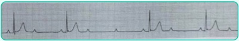
A BAV 2º grau Mobitz II. Atropina.
B BAV 2º grau Mobitz II. Marca-passo provisório.
C BAV 3º grau. Atropina.
D BAV 3º grau. Marca-passo definitivo.
Questão 122 · Gastroenterologia · 4000198647Paciente do sexo masculino, 1 ano, é levado ao prontosocorro por apresentar evacuação com sangue vivo e coágulos, em grande quantidade, cerca de 5 episódios nas últimas 24 horas. Não apresentava nenhum outro sintoma como febre, náuseas, vômitos, artralgias, lesões cutâneas ou quaisquer outros comemorativos. Ao exame físico, hipocorado 2+, FC de 150 bpm e PA de 80 x 60 mmHg. Toque retal revelou sangue em dedo de luva. A respeito da hipótese diagnóstica mais provável, assinale a alternativa incorreta:
A Paciente provavelmente tem uma anomalia embrionária que ocorre por fechamento incompleto do ducto onfalomesentérico.
B A causa do sangramento é a presença de mucosa gástrica heterotópica.
C Obstrução intestinal também pode ser observada em pacientes com tal diagnóstico.
D Trata-se de condição rara, que afeta menos de 1% da população.
Questão 123 · Neurologia · 4000198622Homem, 35 anos, procura a UBS após ter sofrido crise epiléptica tônico-clônica generalizada associada à liberação es ncteriana e à sialorreia. No momento da avaliação, já está em seu estado basal de consciência, sem queixas objetivas. Na noite anterior, dormiu tarde por sobrecarga de trabalho. Não apresenta antecedentes patológicos nem uso de medicações ou substâncias psicoativas. Também não tem antecedente de crises epilépticas. Sobre o quadro em questão, assinale a alternativa incorreta.
A O quadro, necessariamente, envolveu ambos os hemisférios cerebrais.
B O paciente deve receber o diagnóstico de epilepsia e tratamento com droga antiepiléptica.
C A realização de RM de encéfalo e de EEG está indicada na investigação desse quadro.
D A privação de sono é um gatilho em potencial nos pacientes com predisposição para a ocorrência de uma crise epiléptica.
Questão 124 · Dermatologia · 4000198621Dra. Joana está atendendo um paciente na unidade básica de saúde quando, durante o exame físico, nota uma mancha hipocrômica no abdome. Faz um teste de sensibilidade e percebe que o paciente tem hipoestesia no local. Decide então despir o paciente e fazer um exame mais minucioso, identi cando 5 lesões semelhantes pelo corpo. Não há espessamento neural. Pensando no diagnóstico e na classificação, qual o tratamento que a Dra. Joana deve prescrever?
A É obrigatório o encaminhamento para o especialista para a realização da biópsia cutânea e para o diagnóstico definitivo do paciente.
B O tratamento preconizado terá duração prevista de 3 meses com dapsona 100 mg/dia (autoadministrada) + clofazimina 50 mg/dia (autoadministrada) e 300 mg/mês (supervisionada) + rifampicina 600 mg/mês (supervisionada).
C O tratamento preconizado terá duração prevista de 6 meses com dapsona 100 mg/dia (autoadministrada) + rifampicina 600 mg/mês (supervisionada).
D O tratamento preconizado terá duração prevista de 6 meses com dapsona 100 mg/dia (autoadministrada) + clofazimina 50 mg/dia (autoadministrada) e 300 mg/mês (supervisionada) + rifampicina 600 mg/mês (supervisionada).
Questão 125 · Clínica Médica · 4000198619Homem, 47 anos, procura a unidade básica de saúde por dor e inchaço no joelho direito há 24 horas com piora progressiva. Nega trauma e quadro prévio semelhante. Antecedentes: hipertensão e diabetes em uso de hidroclorotiazida 25 mg/dia, enalapril 10 mg/dia e metformina 850 mg 2 vezes ao dia. Ao exame físico, apresenta dor e edema de joelho direito, com sinal da tecla positivo e limitação à flexoextensão. Diante do caso clínico descrito acima, a conduta mais adequada, neste momento, consiste em:
A Cefalexina.
B Dosagem de ácido úrico sérico, colchicina e alopurinol.
C Punção articular com análise do líquido sinovial.
D Encaminhar o paciente para serviço terciário a fim de realizar ressonância magnética de joelho direito.
Questão 126 · Clínica Médica · 4000198613Homem de 58 anos de idade é acompanhado na Unidade de Saúde da Família (USF) por hipertensão arterial sistêmica e dislipidemia. Há cerca de 4 meses, a PA estava em 172 x 108 mmHg. Nega sintomas e outras comorbidades. Faz uso regular de anlodipino 10 mg/dia e clortalidona 25 mg ao dia, há cerca de 8 meses. Ao exame, encontra-se em bom estado geral, com FC = 84 bpm, PA = 156 x 92 mmHg em ambos os membros superiores. Sem outras alterações ao exame. Indique a classificação para a pressão desse paciente na primeira visita à Unidade de Saúde da Família.
A Pré-hipertensão.
B Hipertensão arterial sistêmica estágio 1.
C Hipertensão arterial sistêmica estágio 2.
D Hipertensão arterial sistêmica estágio 3.
Questão 127 · Inf ecção do trato urinário de repetição · Cistite · Ginecologia · 4000197057Mulher, 29 anos de idade, apresenta infecções do trato urinário de repetição (4 episódios no último ano). Vida sexual ativa. Em uso de diafragma. Nega outras comorbidades. O último episódio de cistite bacteriana foi tratado com norfloxacino por 7 dias. Qual das alternativas abaixo apresenta a conduta mais adequada?
A Prescrição diária definitrofurantoína 150mg por 90 dias por via oral.
B Orientações higiênico-dietéticas suspendendo o consumo de frutas cítricas.
C Sugerir mudança de método contraceptivo para método hormonal.
D Prescrição de lisado de E. coli nos dias que tiver relação sexual.
Questão 128 · Cistite · Ginecologia · 4000196274Mulher, 67a, G3PN3FV3, menopausada com 47 anos, sem terapia hormonal, assintomática, retorna com exames laboratoriais de rotina: Exame de urina: leucocitúria e nitrito positivo. É CORRETO AFIRMAR:
A Apresenta bacteriúria por gram positiva e necessita de tratamento.
B Apresenta bacteriúria por gram negativa e não necessita tratamento.
C Apresenta bacteriúria por gram negativa e necessita tratamento.
D Apresenta bacteriúria por gram positiva e não necessita tratamento.
Questão 129 · Dermatologia · 4000195043Mulher de 57 anos procura ambulatório de dermatologia com queixa de lesões nas pálpebras (foto). Ela refere que as lesões surgiram há alguns anos e estão crescendo. Nega sintomas no local ou qualquer sintoma sistêmico. Diante do quadro clínico apresentado, assinale a alternativa correta.

A O mais provável é que essa paciente apresente amiloide sistêmica.
B Devemos solicitar um lipidograma da paciente.
C O tratamento é feito com prednisona em doses imunossupressoras.
D É imperativa a realização de ressonância magnética de órbitas.
Questão 130 · Neurologia · 4000195042Menina, 6 anos de idade, é levada ao PS por seus pais em decorrência de crise epiléptica tônico-clônica generalizada. Logo na chegada ao hospital, recebe os primeiros cuidados clínicos e é monitorizada, contudo não é possível a aquisição de acesso intravenoso. Qual é a alternativa correta sobre a conduta nesse momento?
A Administrar midazolam IM.
B Administrar fenobarbital IM.
C Administrar diazepam IM.
D Administrar midazolam via tubo orotraqueal.
Questão 131 · Cardiologia · 4000195041Homem de 58 anos, hipertenso há 10 anos, em tratamento regular, é admitido na emergência com quadro de edema agudo de pulmão hipertensivo. Vinha em uso regular de anlodipina 10 mg/dia, hidroclorotiazida 25 mg e enalapril 20 mg 12/12h. Após melhora clínica, paciente informou que a pressão arterial está elevada nos últimos meses. Realizou o seguinte eletrocardiograma após estabilização ( figura). Considerando que a função renal da paciente era normal, a principal hipótese diagnóstica e o exame a ser solicitado são:
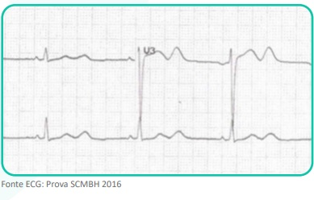
A Doença de Cushing – Dosagem de cortisol sérico.
B Hiperaldosteronismo primário - Dosagem de renina e aldosterona.
C Estenose da artéria renal - Doppler de artéria renal.
D Feocromocitoma - Dosagem de metanefrinas urinárias.
Questão 132 · Nef rologia · 4000195040Jovem, 23 anos, é atendido no pronto atendimento por quadro de edema progressivo há 2 semanas, associado à redução progressiva da diurese. Paciente previamente hígido, apresenta-se ao exame físico hipertenso (PA 180 x 110 mmHg) e com edema generalizado 3+. Foram coletados exames iniciais que demonstram: creatinina 3,7 mg/dL – ureia 184 mg/dL – Na 133 mEq/L – K 5,2 mEq/L – hemoglobina 10,8 g/dL – leucócitos 7.800 – plaquetas 238.000 – C3 e C4 dentro da normalidade - urina 1: leucócitos 5.000 – hemácias 988.000 – dismor smo eritrocitário presente - proteína 2+/4+. Fez ultrassom renal que demonstra rins de tamanho normal, sem sinais de cronicidade ou obstrução. Qual dos exames a seguir seria mais útil na avaliação da etiologia do processo?
A ANCA.
B FAN.
C ASLO.
D Crioglobulinas.
Questão 133 · Inf ectologia · 4000195039Um menino de 7 anos de idade é levado ao pronto-socorro por seus pais devido a quadro de febre, cefaleia, otalgia à direita e vômitos. Os pais relatam que, há cerca de 6 dias, o lho passou a se queixar de dor de ouvido, quadro que se intensi cou com o passar do tempo. Há dois dias, surgiu a cefaleia intensa, associada a náuseas e vômitos. Ao exame físico, a médica plantonista notou os seguintes achados: mau estado geral, febre, taquicardia, taquipneia, hipotensão e rigidez de nuca. A otoscopia revelou a presença de otite média supurativa à direita. Com base nos dados anteriores, descreva os achados esperados na análise do liquor e o provável agente etiológico.
A Celularidade aumentada, glicorraquia normal, proteínas elevadas; vírus herpes simples.
B Celularidade aumentada, glicorraquia reduzida, proteínas elevadas;
C Celularidade aumentada, glicorraquia reduzida, proteínas elevadas;
D Celularidade aumentada, glicorraquia reduzida, proteínas elevadas;
Questão 134 · Reumatologia · 4000195038Homem, 24 anos, procura o pronto atendimento com dor e inchaço no punho direito há 3 dias. Quando questionado, refere que, antes desse quadro, apresentou dores em ombro direito e joelho esquerdo. Fez uso de anti-inflamatório por conta e apresentou melhora parcial. Nega comorbidades. Exame físico: artrite de punho direito e tenossinovite em mão direita, presença de lesões pustulosas com centro necrótico em face palmar, bilateral. Tendo em vista a principal hipótese diagnóstica, a conduta é:
A Oxacilina.
B Prednisona.
C Ceftriaxona.
D Colchicina.
Questão 135 · Pneumologia · 4000195037Ao atender um paciente com queixa de dispneia, você depara-se com a radiografia a seguir: Dos dados do exame físico, qual você espera encontrar devido à imagem apontada pela seta?

A Frêmito toracovocal aumentado.
B Timpanismo à percussão.
C Pectorilóquia afônica.
D Retração torácica.
Questão 136 · Gastroenterologia · 4000195036Paciente, 45 anos, masculino, procura clínico geral para elucidação de diagnóstico. Refere que, há pelo menos 6 meses, vem apresentando diarreia aquosa episódica associada a crises de vermelhidão intensa na face e no pescoço. Antecedentes pessoais: asma de início recente. Exame físico: sibilos discretos bilateralmente, placas eritematosas na face anterior das pernas. Diante da hipótese diagnóstica principal, que exame o médico deveria solicitar?
A Pesquisa quantitativa de gordura nas fezes.
B Excreção urinária de 5-HIAA na urina de 24 horas.
C Colonoscopia.
D Biópsia de pele no momento de rubor
Questão 137 · Hematologia · 4000195035Homem de 18 anos, portador de anemia falciforme, apresenta quadro de febre e tosse há 1 dia. Ao exame clínico, está em regular estado geral, levemente descorado, FR 28, FC 86, saturação de oxigênio 88%, temperatura 38°C. A conduta mais adequada é:
A Tratamento ambulatorial com amoxicilina.
B Radiografia de tórax, oxigenoterapia, transfusão de hemácias simples, antibioticoterapia endovenosa com ceftriaxone e azitromicina.
C Radiografia de tórax, oxigenoterapia, transfusão de hemácias filtradas e fenotipadas, antibioticoterapia endovenosa com ceftriaxone e azitromicina.
D Radiografia de tórax, oxigenoterapia, transfusão de hemácias filtradas e fenotipadas e antibioticoterapia endovenosa com vancomicina.
Questão 138 · Clínica Médica · 4000195034Homem, 56 anos, sem história de tabagismo, é encaminhado ao ambulatório de pneumologia após achado incidental de nódulo pulmonar sólido no lobo superior direito, de 5mm, com margens bem definidas e regulares, calci cado. Tem antecedente prévio de infecção hospitalar por pneumonia. A melhor conduta, nesse contexto, é:
A Seguimento ambulatorial com nova tomografia de tórax em 3 meses.
B Biópsia pulmonar percutânea.
C Seguimento ambulatorial com nova tomografia de tórax em 1 ano.
D Não há necessidade de acompanhamento de nódulo pulmonar sólido menor que 6 mm, uma vez que esses nódulos, em populações de baixo risco, são, em sua maioria, benignos.
Revisar: possível letra faltando em enunciado
Questão 139 · Gastroenterologia · 4000195025Paciente, 20 anos, procura cirurgião do aparelho digestivo para aconselhamento. Refere que vários dos seus familiares já foram acometidos por neoplasias malignas, principalmente câncer colorretal, incluindo seu pai, com câncer de cólon sigmoide aos 50 anos, e seu irmão, recentemente diagnosticado com câncer de reto aos 28 anos. Orientado pelo gastroenterologista, foi submetido a colonoscopia que revelou mais de 100 pólipos intestinais, dos quais três foram biopsiados. Anatomopatológico revelou tratar-se de adenomas tubulares. Antecedentes pessoais: refere “problema na retina” em acompanhamento oftalmológico. Qual é a conduta ideal para o paciente?
A Tranquilizar paciente e fazer colonoscopia a cada 5 anos.
B Iniciar imunobiológico.
C Indicar colectomia total.
D Indicar proctocolectomia total com anastomose ileoanal.
Questão 140 · Dermatologia · 4000194955Uma paciente de 27 anos procura a unidade básica de saúde com queixa de manchas no dorso (foto). Refere que as lesões surgiram após retornar da praia e que há discreto prurido associado. Quando você examina e faz um estiramento da lesão, há surgimento de descamação na. Qual é o sinal semiológico que essa doença apresenta?

A Sinal de Zileri.
B Sinal do orvalho sangrante.
C Sinal de Nikolsky.
D Sinal de Romaña.
Questão 141 · Neurologia · 4000194953Mulher de 75 anos de idade é hipertensa em uso de enalapril 20 mg, 2 vezes ao dia, e diabética em uso de metformina. Apresentou, há 5 horas, hemiparesia direita associada com desvio de rima para a esquerda e di culdade de falar. No exame clínico: bom estado geral, consciente, desorientada temporal e espacialmente, afebril, acianótica e anictérica. Pressão arterial = 180 x 100 mmHg; pulso = 110 bpm, irregular. Ausculta cardíaca com bulhas arrítmicas e normofonéticas em dois tempos, sem sopros. Apresenta hemiparesia completa e desproporcionada à direita, disartria, afasia motora e hemi-hipoestesia completa. O restante do exame clínico está sem alterações. Foi realizado ECG de 12 derivações que confirma a impressão de brilação atrial e TC de crânio (a seguir). A angioTC revela oclusão da artéria cerebral média esquerda. Sobre o quadro em questão, qual das alternativas está correta?

A O quadro é de AVC isquêmico em janela para reperfusão, estando indicado o início imediato da trombólise EV.
B Nesse momento, a pressão arterial deve ser reduzida com alvo de PAS < 140 mmHg.
C A paciente pode ser elegível para a craniectomia descompressiva profilática.
D A trombectomia mecânica deve ser indicada imediatamente.
Questão 142 · Cardiologia · 4000194951Mulher de 58 anos, obesa, sedentária, diabética, tabagista e dislipidêmica, procura Unidade Básica de Saúde porque vem apresentando elevação da pressão arterial. Está assintomática e faz uso regular de sinvastatina 40 mg/dia e metformina 1.500 mg/dia. Na consulta, foi identi cada PA = 152 x 96 mmHg. Qual deve ser o tratamento inicial e a meta pressórica dessa paciente?
A Mudança de estilo de vida; PA < 140 x 90 mmHg.
B Mudança de estilo de vida; PAS entre 120 a 129 mmHg e PAD entre 70 e 79 mmHg.
C Tratamento medicamentoso; PA < 140 x 90 mmHg.
D Tratamento medicamentoso; PAS entre 120 a 129 mmHg e PAD entre 70 e 79 mmHg.
Questão 143 · Reumatologia · 4000194944Mulher, 44 anos, procura a unidade básica de saúde referindo dores no corpo todo há cerca de 6 meses. Quando questionada, relata que a intensidade da dor varia ao longo dos dias e tende a piorar nos períodos de estresse. Ela diz também que já acorda com sensação de cansaço. Ao exame físico, apresenta dor à palpação de pontos na musculatura do tronco, membros superiores e inferiores e articulações, sem sinais inflamatórios. Sobre o quadro clínico descrito e tendo em vista a principal hipótese diagnóstica, assinale a alternativa
A Diagnósticos diferenciais, como hipotireoidismo e hiperparatireoidismo, devem ser considerados.
B Neste caso, esperamos PCR e VHS normais.
C Entre as opções de tratamento medicamentoso, temos duloxetina, pregabalina, amitriptilina e, em casos refratários, metadona.
D A prática de exercícios físicos aeróbicos e a higiene do sono devem ser recomendadas a todos os pacientes.
Questão 144 · Dermatologia · Autoanticorpos · Lúpus eritematoso · 4000194745Sobre os autoanticorpos associados ao lúpus eritematoso, analise as afirmativas a seguir. I. O achado de anticorpo anti-DNA nativo de hélice dupla em paciente com lúpus se relaciona com nefrite lúpica. II. O achado de anticorpo anti-rRNP em paciente com lúpus se relaciona com psicose lúpica. III. O achado de anticorpo anti-U1RNP em paciente com lúpus se relaciona com doença mista do tecido conjuntivo associada. Está(ão) correta(s) a(s) afirmativa(s)
A I, apenas.
B II, apenas.
C III, apenas.
D I, II e III.
Questão 145 · Dermatologia · Dermatomiosite · Autoanticorpos · 4000194744Analise o caso clínico a seguir. Paciente do sexo feminino, 55 anos de idade, apresenta sutis lesões edematosas violáceas em torno dos olhos associadas à poiquilodermia nas áreas expostas da região cervical e máculas e placas róseo-violáceas nas faces extensoras dos quirodáctilos. Refere, também, leve di culdade para se levantar da posição sentada. Considerando esse contexto, analise as afirmativas e a relação proposta entre elas. I. Quando disponível a pesquisa de autoanticorpos, deve-se solicitar Anti-Mi2. PORQUE II. Existe associação da doença descrita no caso clínico com neoplasia de órgãos internos em adultos. Assinale a alternativa correta.
A As afirmativas I e II são verdadeiras, e a II é uma justificativa da I.
B As afirmativas I e II são verdadeiras, mas a II não é uma justificativa da I.
C A afirmativa I é verdadeira, e a II é falsa.
D A afirmativa I é falsa, e a II é verdadeira.
Questão 146 · Dermatologia · Sarcoidose · 4000194743Analise o caso clínico a seguir. Paciente do sexo masculino, negro, 30 anos de idade, apresenta lesão em placa sobre tatuagem feita há 30 dias no ombro direito e lesões eritemato-amarronzadas, distribuídas principalmente sobre as áreas de pigmento amarelo e vermelho. A diascopia foi prejudicada pela intensa pigmentação da pele. O exame histopatológico da lesão mostrou granulomas epitelioides super ciais e profundos com in ltrado linfocitário pouco exuberante e sem necrobiose do colágeno. Os histiócitos gigantes apresentam inclusões eosinofílicas estreladas. Nesse caso, qual é o diagnóstico?
A Granuloma de corpo estranho.
B Granuloma anular.
C Sarcoidose.
D Dermatite intersticial granulomatosa.
Questão 147 · Histiocitoma eruptivo generalizado · Dermatologia · 4000194742Analise o caso clínico a seguir. Paciente do sexo masculino, quatro anos de idade, apresenta pápulas eritemato-acastanhadas distribuídas simetricamente pelo corpo e nas mucosas oral e genital há 10 meses.Estado geral preservado. Foirealizada biópsia, com exame histopatológico evidenciando in ltrado monomór co e denso de histiócitos, caracteristicamente vacuolados, ocupando papila e porção média da derme com poucos linfócitos. Os histiócitos marcam-se positivamente, na imunoistoquímica, para CD14b, lisozima, CD163, Mac387, CD68 e fator XIIIa. Nesse caso, qual é o diagnóstico?
A Histiocitoma eruptivo generalizado.
B Histiocitose cefálica benigna.
C Xantogranuloma juvenil.
D Retículo-histiocitose multicêntrica.
Revisar: possível letra faltando em enunciado
Questão 148 · Dermatologia · Doença de Crohn cutânea · 4000194741Analise o caso clínico a seguir. Paciente do sexo masculino, branco, 50 anos de idade, apresenta intenso edema indurado da pele do escroto e do pênis, associado a úlceras lineares na região da dobra inguinal e intensa dor. Paciente refere diarreia com evacuações dolorosas com muco e sangue nos últimos seis meses, apresenta dosagem de calprotectina fecal elevada e vem em uso de adalimumabe. O exame histopatológico mostra granulomas não epitelioides com linfócitos circundantes na derme profunda e subcutâneo. Nesse caso, qual é o diagnóstico?
A Psoríase paradoxal.
B Doença de Reiter.
C Doença de Crohn cutânea.
D Linfogranuloma venéreo.
Questão 149 · Dermatologia · Granulomas não inf ecciosos · 4000194740Sobre a necrobiose lipoídica, analise as afirmativas a seguir. I. O controle do diabete melito melhora a doença cutânea, quando associados. II. A doença é causada por depósitos de polissacarídeos na derme. III. O uso do psoraleno tópico associado à radiação UVA é opção terapêutica. Está(ão) correta(s) a(s) afirmativa(s)
A I, apenas.
B II, apenas.
C III, apenas.
D I, II e III.
Questão 150 · Dermatologia · Lipodermatoesclerose · Outras paniculites · 4000194739Com relação às doenças do tecido subcutâneo, assinale com V as afirmativas verdadeiras e com F as falsas. ( ) Na paniculite pós-esteroide ocorre involução espontânea das lesões. ( ) A paniculite lúpica ocorre somente na forma sistêmica do lúpus eritematoso. ( ) Na histopatologia da paniculite pancreática são encontradas as “células fantasma”. ( ) A aparência da perna de “garrafa invertida” é característica do esclerema neonatal. Assinale a sequência correta.
A V F V F
B F V F V
C V F F V
D F V V F
Questão 151 · Dermatologia · Lipodistrof ias · 4000194738Com relação à lipodistrofia ligada ao HIV, assinale a alternativa correta.
A Lipoatrofia é revertida com a substituição do esquema antirretroviral.
B Cursa com lipoatrofia e não com lipohipertrofia.
C O uso de inibidores da transcriptase reversa é possível fator causal.
D Alterações metabólicas dos lipídios sanguíneos são infrequentes.
Questão 152 · Dermatologia · Preenchimento cutâneo · 4000194737Analise o caso clínico a seguir. Paciente do sexo feminino, 42 anos de idade, hígida, foi submetida a preenchimento da região da glabela. Imediatamente após o procedimento, referiu dor intensa no olho direito e diminuição da acuidade visual. Nesse caso, qual é o mecanismo mais provável para essa complicação?
A Compressão pelo produto do ramo lacrimal do nervo oftálmico.
B Embolização do produto para ramos da artéria carótida interna.
C Hematoma levando a compressão do ramo infraorbital do nervo maxilar.
D Embolização do produto para ramos da artéria carótida externa.
Questão 153 · Dermatologia · Cirurgia de Mohs · 4000194736Com relação às técnicas cirúrgicas para o tratamento do câncer da pele, assinale a alternativa correta.
A Na técnica de excisão ampla com análise peroperatória por congelação, 100% das margens laterais são analisadas.
B Na técnica de Munique, o número de cortes histológicos a serem examinados é maior do que nas técnicas periféricas.
C Na técnica de Mohs, em geral, são necessários mais estágios de cirurgia do que na técnica de Munique.
D A técnica da torta de Tübingen é um método que permite a avaliação tridimensional do tumor excisado.
Questão 154 · Técnicas de biópsia e excisões básicas · Dermatologia · Eletrocirurgia · 4000194735Analise o caso clínico-cirúrgico a seguir. Paciente do sexo masculino, 55 anos de idade, cardiopata com história prévia de infarto agudo do miocárdio há cinco anos. Compareceu à consulta, na qual foi diagnosticada uma lesão melanocítica altamente suspeita de melanoma, de cerca de 2 cm, situada no braço direito. Há dois meses, foi submetido a colocação de marca-passo e encontra-se em uso de atenolol e clopidogrel. Com relação à conduta nesse caso clínico, assinale a alternativa correta.
A Realizar biópsia excisional e administrar amoxicilina 2,0 g uma hora antes do procedimento.
B Aguardar a interrupção do uso do clopidogrel para realização da biópsia.
C Realizar a biópsia incisional devido ao risco de sangramento.
D Realizar a biópsia excisional e usar a pinça de coagulação bipolar, se necessário.
Questão 155 · Instrumentos e materiais para o f echamento de f eridas cirúrgicas · Dermatologia · 4000194734Sobre as características dos materiais de sutura, assinale com V as afirmativas verdadeiras e com F as falsas. ( ) Os materiais de sutura compostos por polidioxanona são mono lamentosos e apresentam prolongada força tensora. ( força original em quatro semanas. ( ) A seda é um lamento de proteína natural que pode gerar considerável reação tecidual e possui baixa força tensora. ( ) O polipropileno é um material de sutura multi lamentoso, que possui alto coe ciente de fricção e baixa plasticidade. Assinale a sequência correta.
A V F V F
B F V F V
C V F F V
D F V V F
Revisar: possível letra faltando em enunciado
Questão 156 · Dermatologia · Nevo azul e variantes · 4000194733Com relação ao nevo azul e suas variantes, assinale com V as afirmativas verdadeiras e com F as falsas. ( ) O nevo azul epitelioide pode ser esporádico ou estar associado ao complexo de Carney. ( ) A localização mais frequente do nevo azul maligno é a região sacra. ( ) Lesões situadas na região lombossacra, com diâmetro maior do que 1 cm, devem ser excisadas. ( ) As mutações somáticas GNA11 e GNAQ são encontradas em 50-85% dos nevos azuis. Assinale a sequência correta.
A V F F F
B F V F V
C V F V V
D F V V F
Questão 157 · Dermatologia · Micose f ungoide · 4000194732Analise o caso clínico a seguir. Paciente do sexo masculino, 65 anos de idade, queixando-se de prurido na região frontal. Ao exame clínico, apresenta pápulas eritematosas foliculares e pústulas agrupadas na região frontal e placa in ltrada na região da sobrancelha ipsilateral, com madarose. Foi submetido à biópsia e o exame histopatológico revelou denso in ltrado inflamatório linfocitário dérmico perivascular e perianexial com células pequenas e núcleos hipercromáticos e cerebriformes, poupando a epiderme, degeneração mucinosa do epitélio folicular e presença de eosinófilos e poucos plasmócitos. Nesse caso, qual é a melhor conduta terapêutica?
A Iniciar radioterapia.
B Tratar com solução alcóolica de minoxidil 5%.
C Instituir poliquimioterapia (rifampicina, dapsona e clofazimina).
D Aplicar penicilina benzatina 2400000 UI via intramuscular.
Questão 158 · Mastocitose · Dermatologia · 4000194731Analise o caso clínico a seguir. Paciente do sexo feminino, três anos de idade, apresentando múltiplas lesões monomór cas maculosas e papulosas acastanhadas distribuídas principalmente no tronco. A mãe refere piora das lesões após o banho com água quente, que faz com que fiquem mais eritematosas e pruriginosas. Considerando o quadro clínico do paciente, assinale a alternativa correta.
A O tratamento dever ser sintomático para o prurido e o prognóstico é favorável com provável desaparecimento até a adolescência.
B As principais células envolvidas na etiopatogenia são CD34-.
C Nessa forma da doença é frequente a associação com malformações esqueléticas.
D Essa forma da doença acomete mais pacientes do sexo feminino do que do sexo masculino.
Revisar: possível letra faltando em enunciado
Questão 159 · Melanoma e gravidez · Dermatologia · 4000194730Sobre o melanoma e gravidez, analise as afirmativas a seguir e a relação proposta entre elas. I. Uma mulher com história prévia de melanoma de alto risco deve ser orientada a retardar a gravidez pelo menos dois anos. PORQUE II. As alterações hormonais durante a gravidez aumentam as chances de recorrência e ocasionam um pior prognóstico do melanoma. Assinale a alternativa correta.
A As afirmativas I e II são verdadeiras, e a II é uma justificativa da I.
B As afirmativas I e II são verdadeiras, mas a II não é uma justificativa da I.
C A afirmativa I é verdadeira, e a II é falsa.
D A afirmativa I é falsa, e a II é verdadeira.
Questão 160 · Dermatologia · Tumor de células granulares · 4000194729Analise o quadro clínico a seguir. Paciente do sexo feminino, 43 anos de idade, apresentando lesão papulosa com bordas mal delimitadas, superfície lisa, situada na língua, com evolução de aproximadamente seis meses, assintomática. Foi submetida à biópsia incisional, cujo exame histopatológico revelou a presença de células poligonais com citoplasma abundante levemente eosinofílico, granuloso, com núcleos redondos e pequenos grânulos eosinofílicos maiores envoltos por halo claro no citoplasma. Ao exame imunoistoquímico, foi observada a positividade para S100, antígeno CD68 e enolase neuronal específica (ENS). Considerando esse quadro clínico , qual é o diagnóstico?
A Carcinoma espinocelular.
B Tumor de Merkel.
C Tumor de células granulosas.
D Carcinoma adenocístico.
Questão 161 · Dermatologia · Neoplasias e prolif erações com dif erenciação écrina · 4000194728Neoplasias e prolif erações com dif erenciação apócrina Correlacione os achados histopatológicos das neoplasias anexiais da COLUNA II com os respectivos diagnósticos da COLUNA I. COLUNA I 1 . Proliferação circunscrita lobulada composta por células claras, com paliçada periférica de pequenos queratinócitos basais. Observa-se conexão com a superfície da epiderme que apresenta hiperplasia verrucosa com hipergranulose. 2 . Proliferação restrita à derme super cial composta por numerosos ductos revestidos por duas ou mais camadas de células claras, por vezes interconectados, em meio a um estroma esclerótico. 3. Tumor bem circunscrito situado na derme revestido por cápsula fibrosa sem conexão com a epiderme. No seu interior observam-se estruturas tubulares e císticas em arranjo labiríntico. 4 . Numerosas ilhas de células epiteliais separadas por escasso estroma encaixando-se em formato de quebra-cabeça, circundadas por membrana hialina. COLUNA II ( ) Siringoma ( ) Triquilemoma ( ) Hidradenoma papilífero ( ) Cilindroma Assinale a sequência correta.
A 2 1 3 4
B 1 2 4 3
C 4 3 1 2
D 1 2 3 4
Questão 162 · Dermatologia · Reações mucocutâneas aos agentes quimioterápicos imunoterapia e terapia alvo · 4000194727Com relação às neoplasias cutâneas queratinocíticas, assinale a alternativa correta.
A Em pacientes transplantados renais, o uso deinibidores da via mTOR (
B Em pacientes em uso de inibidores seletivos do BRAF V600, a associação com inibidores da via MEK aumenta a incidência de carcinomas espinocelulares e ceratoacantomas.
C Em pacientes em uso de inibidores da via Hedgehog, os principais efeitos colaterais são disgeusia, espasmos musculares e alopecia.
D Em pacientes transplantados hepáticos, o uso de capecitabina está associado a um aumento da incidência de carcinomas espinocelulares.
Questão 163 · Outros medicamentos · Dermatologia · 4000194726Com relação às psicodermatoses, analise as afirmativas a seguir. I. Nas escoriações neuróticas, o paciente nega que as lesões são autoinfligidas. II. A tricotilomania em adultos ocorre mais frequentemente em mulheres. III. A pimozida está indicada para o tratamento do delírio de parasitose. Está(ão) correta(s) a(s) afirmativa(s)
A I, apenas.
B II, apenas.
C II e III, apenas.
D I, II e III.
Questão 164 · Dermatologia · Prurido anogenital · 4000194725Com relação ao prurido anal, analise as afirmativas a seguir. I. Acomete mais homens do que mulheres. II. Na sua forma primária (idiopática), pode estar relacionado a fatores dietéticos. III. Quando de origem neuropática, pode estar relacionado à compressão de nervos lombossacros. Está(ão) correta(s) a(s) afirmativa(s)
A I, apenas.
B II, apenas.
C II e III, apenas.
D I, II e III.
Questão 165 · Ef lúvio anágeno · Dermatologia · Ef lúvio telógeno · 4000194724Com relação aos eflúvios telógeno e anágeno, assinale a alternativa correta.
A O mecanismo de indução do eflúvio telógeno na queda por uso de medicamentos é a liberação anágena retardada.
B Uma mesma droga, dependendo da dose, frequência e tempo de uso, pode desencadear eflúvio telógeno ou anágeno.
C Os achados dermatoscópicos do eflúvio telógeno são semelhantes aos do eflúvio anágeno: presença de fios finos em crescimento e múltiplas unidades foliculares com hastes únicas.
D A repilação após o eflúvio anágeno demora cerca de um a dois meses após interrupção do uso da droga causadora, e os pacientes recuperam completamente a densidade inicial.
Questão 166 · Anormalidades da haste do cabelo · Dermatologia · Genodermatoses · 4000194723Com relação às doenças com alterações do formato da haste capilar, correlacione a COLUNA I com a COLUNA II, associando o distúrbio das hastes com a(s) respectiva(s) síndromes ou doença. COLUNA I 1. Tricorrexe invaginata 2. Tricorrexe nodosa congênita 3. Tricotiodistrofia 4. Cabelos lanosos COLUNA II ( ) Síndrome PIBIDs ( ) Síndrome de Netherton ( ) Síndrome de Noonan ( ) Doença de Menkes Assinale a sequência correta.
A 2 1 3 4
B 3 1 4 2
C 2 3 4 1
D 4 2 3 1
Questão 167 · Dermatologia · Hipertricose e hirsutismo · 4000194722Com relação à hipertricose, assinale a alternativa correta.
A A hipertricose localizada adquirida pode ser causada por traumas repetidos, fricções, irritações e inflamações de uma área localizada da pele.
B A hipertricose congênita universal tem herança autossômica recessiva e apresenta acentuação dos pelos no tronco e membros, caracteristicamente.
C A hipertricose generalizada adquirida é mais frequentemente associada às doenças sistêmicas.
D A hipertricose lanuginosa adquirida é um fenômeno paraneoplásico que acontece durante ou após o surgimento da neoplasia, não podendo precedê-la.
Questão 168 · Dermatologia · Inf ecções · 4000194721Com relação às afecções ungueais em pacientes que vivem com HIV, analise as afirmativas a seguir. I. O principal agente de onicomicose, nesse grupo de pacientes, é a II. A onicomicose subungueal proximal, nesse grupo de pacientes, é causada principalmente pelo Trichophyton mentagrophytes III. As verrugas periungueais de longa evolução, nesse grupo de pacientes, devem sempre levantar a suspeita de carcinoma de células escamosas. Está(ão) correta(s) a(s) afirmativa(s)
A I, apenas.
B II, apenas.
C III, apenas.
D I, II e III.
Questão 169 · Tipos de melanomas primários · Dermatologia · 4000194720Com relação ao melanoma ungueal, assinale com V as afirmativas verdadeiras e com F as falsas. ( ) O paciente refere, muitas vezes, a história de um traumatismo prévio. ( ) Os indivíduos acima da sétima década de vida são acometidos mais frequentemente. ( ) O tumor é amelanótico em cerca de 10% dos casos. ( ) A melanoníquia longitudinal, de cor marrom escura ou preta, com margens borradas e largura de 3 mm ou mais, levanta suspeita clínica. Assinale a sequência correta.
A V F V F
B F V F V
C V F F V
D F V V F
Questão 170 · Hemangioma congênito · Hemangioendotelioma kaposif orme · Dermatologia · 4000194719Analise a tabela a seguir, em que estão presentes as características clínicas, a evolução e o resultado imunoistoquímico das crianças 01, 02 e 03, portadoras de hemangiomas não tratados. Com base nesses dados, assinale a alternativa correta.

A A criança 01 pode apresentar insuficiência cardíaca, trombocitopenia e fibrinogênio baixo.
B A criança 02 encontra-se em risco de desenvolver o fenômeno de Kasabach-Merritt.
C A criança 02 pode apresentar, em mais de 50% dos casos, anomalias espinhais.
D A criança 03 apresenta um tumor vascular que responde bem ao tratamento com propranolol.
Questão 171 · Síndrome de SturgeWeber · Dermatologia · 4000194718Analise as afirmativas a seguir e a relação proposta entre elas. I. A síndrome de Sturge-Weber é uma doença neurocutânea esporádica na qual a mancha vinho do Porto facial está associada com malformações vasculares homolaterais ocular e das leptomeninges. PORQUE II. A síndrome de Sturge-Weber é um mosaicismo com mutação somática no gene GNAQ. Assinale a alternativa correta
A As afirmativas I e II são verdadeiras, e a II é uma justificativa da I.
B As afirmativas I e II são verdadeiras, mas a II não é uma justificativa da I.
C A afirmativa I é verdadeira, e a II é falsa.
D A afirmativa I é falsa, e a II é verdadeira.
Questão 172 · Dermatologia · Úlceras venosas · 4000194717Com relação às úlceras de perna, assinale a alternativa correta.
A As úlceras arteriais podem ser avaliadas pelo índice sistólico tornozelo-braquial (ITB) e um ITB maior que 1,0 é indicativo de doença arterial periférica.
B A úlcera hipertensiva de Buerger é um tipo de úlcera isquêmica relacionada a alterações da microcirculação que ocorre em pacientes com hipertensão arterial de difícil controle por longo período.
C A úlcera plantar diabética tem como principais fatores etiológicos o trauma e a infecção.
D As úlceras venosas são tratadas com métodos de compressão, e pressões externas em torno de 35 a 40 mmHg são necessárias, ao nível do tornozelo, quando o objetivo é a cicatrização das úlceras.
Questão 173 · Dermatologia · Livedo reticular e racemoso · 4000194716Analise os dois padrões de livedo, apresentados nas figuras 01 e 02 a seguir. Com base nessas figuras, analise as afirmativas a seguir. I. A figura 01 demonstra um tipo de livedo que geralmente é indicativo de uma doença vaso-oclusiva mais grave. II. A figura 01 demonstra um tipo de livedo encontrado na cútis marmorata telangiectásica congênita. III. A figura 02 demonstra um tipo de livedo encontrado nas formas primárias e idiopáticas. Está(ão) correta(s) a(s) afirmativa(s)
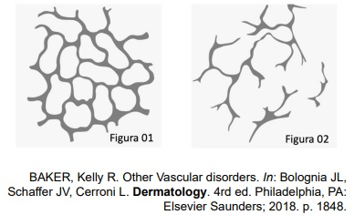
A I, apenas.
B II, apenas.
C III, apenas.
D I, II e III.
Questão 174 · Fototerapia UVB · Dermatologia · Fototerapia com psoralenos PUVA · 4000194715Com relação aos efeitos adversos da fototerapia, assinale com V as a rmativas verdadeiras e com F as falsas. ( ) A fototerapia PUVA apresenta um aumento de 15 vezes no risco de desenvolvimento de melanoma. ( ) A fototerapia UVB parece apresentar potencial menor de carcinogênese para câncer de pele não melanoma quando comparada à fototerapia PUVA. ( ) A fototerapia PUVA associada ao retinoide oral tem um efeito bené co por reduzir o risco de câncer de células escamosas. ( ) A fototerapia PUVA apresenta risco de pigmentação difusa da retina. Assinale a sequência correta.
A V F V F
B F V F V
C V F F V
D F V V F
Revisar: possível letra faltando em enunciado
Questão 175 · Outras teconologias aplicadas na Cosmiatria · Dermatologia · 4000194714Analise o caso clínico a seguir. Paciente do sexo feminino, 35 anos de idade, procura atendimento dermatológico para remoção de tatuagem cosmética de coloração branca nas pálpebras. Após avaliação, o dermatologista indica e realiza um laser Q- azulada. A alteração da cor da tatuagem decorre da mudança do estado oxidado para o estado reduzido de qual das substâncias existentes na tatuagem?
A Cromo.
B Titânio.
C Chumbo.
D Cádmio.
Questão 176 · Dermatologia · Pseudoxantoma elástico · 4000194713Analise o quadro clínico a seguir. Mulher de 28 anos de idade foi admitida na emergência com hemorragia digestiva. Ao ser examinada, foram observadas lesões papulosas amareladas dispostas em leira, na região cervical, axilas e dobras cubitais. O exame histopatológico de uma das lesões demonstrou alteração das fibras elásticas com depósito de cálcio. Qual órgão apresenta alterações patológicas associadas a esse quadro?
A Mamas.
B Ovários.
C Olhos.
D Pulmões.
Questão 177 · Dermatologia · Ictioses · 4000194712Entre as formas de ictiose, qual está relacionada com a deficiência da enzima esteroide sulfatase?
A Ictiose vulgar.
B Ictiose epidermolítica.
C Ictiose lamelar.
D Ictiose ligada ao sexo.
Questão 178 · Reação à droga com eosinof ilia e sintomas sistêmicos DRESS · Dermatologia · 4000194711O quadro caracterizado por exantema e edema de face associado a linfonodomegalia, febre, eosino lia periférica e hepatite, após uso de anticonvulsivante, corresponde ao diagnóstico de
A pustulose exantemática generalizada aguda.
B reação de hipersensibilidade a droga.
C urticária vasculite.
D síndrome de Stevens-Johnson.
Questão 179 · Dermatologia · Doença de Darier · 4000194709Analise o quadro clínico a seguir. Paciente com dermatose caracterizada por alterações ungueais como fenda em V e faixas longitudinais eritematosas e brancas além de lesões cutâneas. O exame histopatológico da pele demonstra acantólise suprabasal, corpos redondos e grãos. Nesse caso, qual é o diagnóstico?
A Doença de Hailey-Hailey.
B Pênfigo foliáceo.
C Doença de Darier.
D Pênfigo vegetante.
Questão 180 · Síndrome de Gardner · Dermatologia · Esclerose tuberosa · 4000194708Relacione a COLUNA I com a COLUNA II, associando as genodermatoses aos seus respectivos achados. COLUNA I 1. Esclerose tuberosa 2. Neurofibromatose tipo 1 3. Síndrome de Rendu-Osler-Weber 4. Síndrome de Gardner COLUNA II ( ) Telangiectasias, malformações arteriovenosas, epistaxe. ( ) Cistos epidérmicos, pólipos intestinais, adenocarcinoma do cólon. ( ) Máculas hipocrômicas, angiofibromas, placa de Shagreen. ( ) Manchas café com leite, escoliose, hamartomas da íris. Assinale a sequência correta.
A 2 4 3 1
B 1 3 4 2
C 3 4 1 2
D 4 3 2 1
Questão 181 · Dermatologia · Vasculite cutânea de pequenos vasos · 4000194707Com relação à púrpura de Henoch-Schönlein, assinale com V as afirmativas verdadeiras e com F as falsas. ( ) O acometimento articular não faz parte do quadro clínico. ( ) Ocorre após infecção de vias aéreas superiores. ( ) Caracteriza-se por lesões cutâneas de púrpura palpável. ( ) Nas crianças, não há acometimento renal. Assinale a sequência correta.
A V V V F
B F F F V
C F V V F
D V F F V
Questão 182 · Doenças das glândulas surodíparas écrinas e apócrinas · Dermatologia · 4000194706Sobre a hidradenite supurativa, assinale com V as afirmativas verdadeiras e F as falsas. ( ) Ocorre por infecção estafilocócica das glândulas apócrinas. ( ) Obesidade e tabagismo são fatores de risco. ( ) A ocorrência é frequente antes da puberdade. ( ) É comum a associação com os demais componentes da tríade de oclusão folicular. Assinale a sequência correta.
A V V V F
B F V F V
C F F V F
D V F F V
Questão 183 · Terapia clínica · Dermatologia · 4000194705Com relação às formulações farmacêuticas utilizadas na terapêutica tópica, assinale a alternativa correta.
A As pomadas são misturas ricas em água.
B As emulsões formam uma mistura heterogênea.
C Os géis creme contêm óleos, água e agentes gelificantes.
D As soluções são indicadas para fases crônicas dos eczemas.
Questão 184 · Dermatologia · Glicocorticoides · 4000194704Com relação ao uso da corticoterapia sistêmica de longo prazo e osteoporose, analise as a rmativas a seguir. I. Ocorre um rápido declínio da densidade mineral óssea nos primeiros seis meses da corticoterapia, e, em um ano, atinge-se o pico desse declínio. II. Os ossos longos são mais propensos à desmineralização do que os ossos do esqueleto axial. III. O aumento da excreção urinária e a redução da absorção do cálcio são mecanismos de ação que, de forma indireta, levam à perda óssea. Está(ão) correta(s) a(s) afirmativa(s)
A I e II, apenas.
B II, apenas.
C III, apenas.
D I, II e III.
Questão 185 · Imunomoduladores e imunossupressores · Dermatologia · 4000194703Sobre a talidomida, analise as afirmativas a seguir e assinale com V as verdadeiras e com F as falsas. ( ) A neuropatia periférica relacionada à droga pode ser definitiva. ( ) É lipofílica e atinge o pico plasmático duas a seis horas após a administração. ( ) Homens vasectomizados que tomam a medicação devem usar preservativo nas relações sexuais. ( ) Sua ação terapêutica é diminuída quando há ingesta concomitante de álcool. Assinale a sequência correta
A V F V V
B F V F F
C V V V F
D F F F V
Questão 186 · Dermatologia · Doenças perf urantes · 4000194702Com relação à elastose serpiginosa perfurante, analise as afirmativas a seguir e assinale com V as verdadeiras e com F as falsas. ( ) Associa-se com doenças genéticas e com o uso de penicilamina. ( ) Inicia-se mais frequentemente na infância e na adolescência. ( ) Ocorre preferencialmente no tronco e pernas. ( ) Acomete outros órgãos além da pele. Assinale a sequência correta.
A V F V V
B F V F V
C V V F F
D F F V F
Questão 187 · Anetodermia · Dermatologia · 4000194701Analise o caso clínico a seguir. Homem, 45 anos de idade, apresenta lesões deprimidas, atró cas, circunscritas, de 1 cm de diâmetro, localizadas no tronco, há dois anos. O estudo anatomopatológico mostrou uma fragmentação e diminuição focal de fibras elásticas na derme papilar e reticular. O quadro clínico e laboratorial descrito é secundário
A à rosácea ou à acropustulose infantil.
B à dermatomiosite ou à doença de Still do adulto.
C à hanseníase virchowiana ou à tuberculose cutânea.
D ao carcinoma basocelular ou ao carcinoma de células de Merkel.
Revisar: possível letra faltando em enunciado
Questão 188 · Síndrome de EhlersDanlos · Dermatologia · 4000194700Os pseudotumores moluscoides fazem parte do quadro clínico da
A síndrome de Marfan.
B síndrome de Loeys-Dietz.
C síndrome de Ehlers-Danlos.
D síndrome de Weill-Marchesani.
Questão 189 · Cicatrizes hipertróf icas e queloides · Dermatologia · 4000194699São importantes diagnósticos diferenciais clínico e histopatológico dos queloides, respectivamente:
A Xantoma disseminado e melanoma desmoplásico.
B Hanseníase tuberculoide e pênfigo vegetante.
C Carcinoma de Merkel e eumicetoma.
D Espiroadenoma écrino e sarcoidose.
Questão 190 · Dermatologia · Fibromatoses · 4000194698Analise o caso clínico a seguir. Homem, 70 anos de idade, refere que tinha um nódulo, o qual cresceu formando uma lesão linear na palma d a mão esquerda associada a uma contratura em exão de alguns dedos. Foi realizada uma biópsia da lesão, cujo exame anatomopatológico revelou proliferação de miofibroblastos. A doença relacionada ao quadro clínico e laboratorial descrito é mais comumente localizada na região
A ulnar.
B radial.
C do punho.
D do segundo dedo das mãos.
Questão 191 · Dermatologia · Pápulas piezogênicas · 4000194697Analise o quadro clínico a seguir. Homem, 30 anos de idade, apresenta pápulas normocrômicas, de 2 mm a 5 mm de diâmetro, localizadas na face lateral dos dois calcanhares que desaparecem quando a perna é levantada. Refere dor local quando faz atividade física. Sobre a doença relacionada ao quadro clínico descrito, analise as a rmativas a seguir e assinale com V as verdadeiras e com F as falsas. ( ) Acomete até 10% a 20% da população. ( ) Associa-se à síndrome de Bazex. ( ) Faz diagnóstico diferencial o fibroma aponeurótico juvenil. ( ) É resultante da herniação do tecido conjuntivo dérmico. Assinale a sequência correta.
A V F V F
B F V F V
C V V F V
D F F V F
Questão 192 · Dermatologia · Bioestimuladores de colágeno injetáveis · 4000194696Analise as afirmativas a seguir sobre as propriedades do ácido poli-L-láctico injetável. I. Há um resultado imediato devido ao depósito do ácido poli-L-láctico. II. É um preenchedor cujos metabólitos são eliminados por via renal. III. Estimula a neocolagênese, sendo indicado para sulcos e lipodistrofias. Está(ão) correta(s) a(s) afirmativa(s)
A I e III, apenas.
B II, apenas.
C III, apenas.
D I, II e III.
Questão 193 · Toxina botulínica · Doenças das glândulas surodíparas écrinas e apócrinas · Dermatologia · 4000194695Analise o caso clínico a seguir. Homem, 37 anos de idade, apresenta queixa de aumento da sudorese na região palmar há anos, a qual piora quando está ansioso. Realizou diversas tentativas terapêuticas sem sucesso. Foi proposta a terapia com toxina botulínica. Caso ocorra, qual o principal efeito adverso da terapêutica com toxina botulínica nesse paciente?
A Linfedema.
B Fenômeno de Raynaud.
C Fraqueza muscular transitória.
D Hiperidrose compensatória em outra área.
Questão 194 · Dermatologia · Sinais ungueais · 4000194694O aspecto de “unha em vidro de relógio” pode ocorrer na doença
A tinha do couro cabeludo.
B ascaridíase.
C urticária crônica.
D vitiligo.
Questão 195 · Dermatologia · Síndrome do choque tóxico estaf ilocócico e estreptocócico · 4000194693Com relação à síndrome do choque tóxico, a manifestação clínica mais frequente, tanto nos casos provocados pelo estafilococo como pelo estreptococo, é
A dor localizada nas extremidades.
B infecção de partes moles.
C hipotensão.
D erupção maculosa difusa.
Questão 196 · Dermatologia · Escabiose · 4000194692Com relação aos pacientes com sarna norueguesa infectados pelo HIV, assinale a alternativa correta.
A As lesões crostosas ocorrem, em geral, quando os linfócitos T CD4+ < 200 células/mm³.
B A cabeça e pescoço são usualmente poupados pela infestação.
C As lesões cutâneas não são habitadas pelos ácaros.
D O curso da escabiose se complica com fusariose disseminada com frequência.
Questão 197 · Dermatologia · Doenças linf oprolif erativas · 4000194691A granulomatose linfomatoide, o carcinoma nasofaríngeo, a síndrome linfoproliferativa ligada ao X e o hidroa vaciniforme estão relacionados ao agente infeccioso
A papilomavírus humano.
B poxvírus.
C herpesvirus 6.
D Epstein-Barr vírus.
Questão 198 · Dermatologia · Dermatoviroses · 4000194690Qual agente de infecção congênita é o responsável pela hematopoiese extramedular na pele?
A Lassa vírus.
B Herpesvirus 5.
C Papilomavírus humano (HPV).
D Poliomavírus.
Questão 199 · Doença da mãopéboca · Dermatologia · 4000194689Qual o enterovírus mais frequentemente relacionado a manifestações tegumentares acrais na infância?
A Parvovírus.
B Citomegalovírus.
C Coxsackievirus.
D Adenovírus.
Questão 200 · Dermatologia · Síf ilis · 4000194688O que é o sinal de Higouménakis?
A Palato em ogiva na esclerose tuberosa.
B Malformação da escápula na neurofibromatose.
C Afinamento dos dentes na porfiria eritropoiética.
D Espessamento da clavícula medial na sífilis.
Questão 201 · Dermatologia · Doenças cutâneas ambientais e relacionados com o esporte · 4000194687Com relação à dermatite por lã de vidro, assinale a alternativa correta.
A A dor é o principal sintoma referido pelo doente.
B As pápulas eritematosas com acentuação folicular são comuns.
C A histopatologia demonstra infiltrado neutrofílico dérmico.
D A paroníquia é uma manifestação incomum.
Questão 202 · Características clínicas · Dermatologia · 4000194686Com relação às urticárias de contato, qual substância apresenta risco de 10% de reação cruzada com compostos proteicos presentes no kiwi, abacate e banana?
A Lidocaína.
B Lodopovidona.
C Mononylon.
D Látex.
Questão 203 · Sistêmico · Imunomoduladores e imunossupressores · Dermatologia · 4000194685Sobre os medicamentos imunobiológicos usados na psoríase, analise as afirmativas a seguir. I. O ustequinumabe bloqueia as vias Th1 e Th17 na psoríase. PORQUE II. O ustequinumabe é um anticorpo monoclonal humanizado que se liga à subunidade p19 comum às interleucinas IL-23 e IL-17. A respeito dessas afirmativas, assinale a alternativa correta.
A As afirmativas I e II são verdadeiras, e a II é uma justificativa da I.
B As afirmativas I e II são verdadeiras, mas a II não é uma justificativa da I.
C A afirmativa I é verdadeira, e a II é falsa.
D A afirmativa I é falsa, e a II é verdadeira.
Questão 204 · Fisiopatologia · Dermatologia · 4000194684Sobre a patogênese da psoríase, analise as afirmativas a seguir. I. Drogas podem ser desencadeantes como lítio, interferon, antimaláricos e terbinafina. II. Fenômeno de Koebner pode ocorrer após queimaduras solares e exantemas virais. III. Colonização das lesões por Está(ão) correta(s) a(s) afirmativa(s)
A I, apenas.
B II, apenas.
C I e II, apenas.
D I, II e III.
Questão 205 · Dermatologia · Características clínicas · Fisiopatologia · 4000194683Sobre a dermatite das fraldas, assinale com V as afirmativas verdadeiras e com F as falsas. ( ) É causada pelo pH ácido da urina. ( ) Corresponde a um quadro de eritema, maceração e descamação que poupa as dobras inguinocrurais. ( ) Ocorre perda da integridade da barreira epidérmica por ação de enzimas produzidas pela albicans ( ) O atrito prolongado com a fralda age como irritante primário. Assinale a sequência correta.
A V F V F
B F V F V
C V F F V
D F V V F
Questão 206 · Dermatologia · Pitiríase liquenoide variolif orme aguda · Pitiríase liquenoide crônica · 4000194682Sobre as diferenças entre a pitiríase liquenoide e varioliforme aguda (PLEVA) e a crônica (PLC), assinale com V as afirmativas verdadeiras e com F as falsas. ( e PLEVA por lesões úlcero-necróticas que deixam cicatrizes varioliformes. ( ) PLC apresenta infiltrado de linfócitos T com predominância de CD8+ e PLEVA de CD4+. ( ) PLC não apresenta sinais sistêmicos e PLEVA pode ter uma forma febril aguda com lesões necróticas e envolvimento pulmonar e gastrointestinal. ( ) PLC é associada a doenças linfoproliferativas e PLEVA a infecções como hepatite C. Assinale a sequência correta.
A V F V F
B F V F V
C V F F V
D F V V F
Questão 207 · Penf igoide bolhoso · Dermatologia · 4000194681Analise o quadro clínico a seguir. Uma mulher de 72 anos de idade, com demência senil, apresenta prurido intenso há seis meses e, ao exame, placas eritematosas e edematosas, urticariformes, no tronco, abdome, coxas e braços. O exame histopatológico mostra edema na derme, espongiose com presença de polimorfonucleares. Um teste ELISA mostrou autoanticorpos BP180 circulantes. Sobre o quadro clínico apresentado, assinale com V as afirmativas verdadeiras e com F as falsas. ( ) O infiltrado inflamatório dérmico é predominantemente composto por neutrófilos. ( ) A imuno uorescência direta da pele perilesional mostra depósitos de IgG e C3 na zona da membrana basal. ( ) O tratamento do fragmento de biópsia com cloreto de sódio causa clivagem na zona da membrana basal e o depósito de IgG é visto na porção superior da clivagem. ( ) O depósito na zona da membrana basal é do tipo u-serrilhado. Assinale a sequência correta.
A V F V F
B F V F V
C V F F V
D F V V F
Questão 208 · Dermatologia · Endocrinologia · 4000194680Analise o caso clínico a seguir. Um homem de 78 anos de idade, com diabete tipo II há mais de 20 anos e hipertensão arterial, procurou atendimento devido ao surgimento de uma grande bolha na face anterior da perna esquerda há uma semana. A lesão é uma bolha tensa, de conteúdo claro a hemorrágico, de 5 cm de diâmetro. Relata que é o terceiro episódio no mesmo local, e que as primeiras desapareceram espontaneamente após algumas semanas. Faz uso de captopril, metformina e insulina NPH. O exame histopatológico mostrou bolha subepidérmica e a imunofluorescência foi negativa. Nesse caso, qual é o diagnóstico?
A Epidermólise bolhosa adquirida.
B Penfigoide bolhoso pré-tibial.
C Bullosis diabeticorum.
D Porfiria cutânea tardia.
Questão 209 · Dermatologia · Apresentação clínica · 4000194679Analise o quadro clínico a seguir. Um homem de 62 anos de idade procurou atendimento dermatológico apresentando eritrodermia de início na cabeça e no pescoço e progressão craniocaudal. Negava doenças prévias ou uso de medicações. Ao exame físico, apresentava ceratose folicular sobre base eritematosa no tronco e membros, coalescendo em placas amarelo-alaranjadas com áreas de pele poupada, ceratodermia palmoplantar e unhas espessadas d e coloração amarelada. O exame histopatológico mostrou dermatite psoriasiforme com hiperceratose irregular, folículos pilosos preenchidos com tampão de ceratina, e paraceratose ao redor da abertura folicular. Considerando o quadro clínico e histopatológico descritos, qual é o diagnóstico?
A Psoríase eritrodérmica.
B Pitiríase rubra pilar.
C Micose fungoide.
D Reação exantemática à droga.
Questão 210 · Fisiopatologia · Dermatologia · 4000194678Sobre a imunologia da dermatite atópica, assinale a alternativa correta.
A A subunidade p19 dos receptores para IL-4 e IL-13 é o alvo do anticorpo monoclonal dupilumabe.
B A ativação da via intracelular STAT1 promove a diferenciação de células T
C Os linfócitos Th17 são encontrados apenas na fase aguda da doença.
D A IL-31 é uma citocina Th2 relacionada ao prurido.
Questão 211 · Dermatologia · Outras dermatoses neutrof ílicas · 4000194677Analise o caso clínico a seguir. Um lactente de três meses apresenta vesículas e pústulas recorrentes nas palmas, plantas e dorso dos pés, com duração de 10 dias e resolução espontânea. Já havia tido episódio parecido há um mês. A pesquisa de Sarcoptes numerosos neutrófilos e eosinófilos e a cultura foi negativa. Nesse caso, qual é o diagnóstico?
A Acropustulose da infância.
B Síndrome de Job.
C Foliculite pustulosa eosinofílica da infância.
D Incontinência pigmentar.
Questão 212 · Dermatologia · Eritema indurado de Bazin · 4000194676Com relação ao eritema indurado, assinale a alternativa correta.
A Caracteriza-se por paniculite septal sem ocorrência de vasculite.
B Ocorre com maior frequência no sexo feminino.
C As lesões são eritematosas, induradas e indolores.
D A presença de necrose na histopatologia exclui o diagnóstico.
Questão 213 · Anatomia f isiologia e embriologia · Dermatologia · 4000194675Com relação à estrutura da pele, analise as afirmativas a seguir. I. A camada basal é composta por uma única fileira de queratinócitos justapostos lado a lado. II. A zona da membrana basal não possui componentes de origem dérmica. III. A derme reticular é composta principalmente por feixes densos de fibras colágenas do tipo I. Esta
A I, apenas.
B I e III, apenas.
C I e II, apenas.
D II e III, apenas.
Questão 214 · Escleredema · Dermatologia · Mucinoses eritematosa reticular · 4000194674Sobre as mucinoses, assinale a alternativa correta.
A Gamopatia monoclonal por IgA e progressão para mieloma sintomático são comuns no escleromixedema
B Mucinose folicular em indivíduos mais velhos associa-se aos linfomas cutâneos do tipo B.
C Mucinose eritematosa reticulada acomete mulheres de meia idade e tem boa resposta com uso de antimaláricos.
D Escleredema pós-infeccioso é comumente precedido de infecção estafilocócica.
Questão 215 · Amiloidose cutânea · Dermatologia · 4000194673Com relação às amiloidoses, analise as afirmativas a seguir. I. Na amiloidose cutânea primária, os depósitos de fibrilas amiloides derivam da necrose dos queratinócitos. II. Na amiloidose cutânea, o depósito de amiloide está limitado à parte superior da epiderme. III. Na amiloidose nodular, os depósitos amiloides derivam de imunoglobulinas de cadeia leve. Esta
A I, apenas.
B II e III, apenas.
C I e III, apenas.
D I e II, apenas.
Questão 216 · Dermatologia · Porf iria cutânea tarda · 4000194672Com relação à por ria cutânea tarda esporádica (tipo I), assinale com V as a rmativas verdadeiras e com F as falsas. ( ) O distúrbio enzimático tem início, em geral, na vida adulta. ( ) Os medicamentos e infecções são fatores desencadeantes. ( ) O defeito enzimático está presente em todos os tecidos. ( ) Aherança autossômica recessiva de penetrância é variável. Assinale a sequência correta.
A F V F V
B V V F F
C V F V V
D F F V F
Questão 217 · Dermatologia · Xantomas · 4000194671Com relação aos xantomas, analise as afirmativas a seguir. I. Xantomas eruptivos ocorrem nos casos de hipercolesterolemia primária ou secundária. II. Xantomas tuberosos são classicamente associados ao aumento dos níveis de triglicerídeos. III. Xantelasma é a forma mais comum de xantoma e pode ocorrer em pacientes normolipêmicos. Está(ão) correta(s) a(s) afirmativa(s)
A II, apenas.
B II e III, apenas.
C I e III, apenas.
D III, apenas.
Questão 218 · Dermatologia · Doença do enxerto versus hospedeiro · 4000194670Sobre a doença enxerto falsas. ( extremidades. ( ) DEVH aguda apresenta-se como exantema escarlatiniforme com predileção inicial pela face e raiz dos membros. ( ) Dor à pressão palmoplantar e coloração violácea nos pavilhões auriculares são sugestivos da DEVH crônica. ( ) Fígado e trato gastrointestinal são outros órgãos envolvidos na DEVH aguda. Assinale a sequência correta.
A V F F V
B F V F V
C F V V F
D V F V F
Questão 219 · Dermatologia · Hipomelanoses hereditárias · 4000194669Sobre a hipomelanose macular progressiva, assinale com V as afirmativas verdadeiras e com F as falsas. ( ) As lesões são muito pruriginosas e geralmente precedidas de processo inflamatório. ( ) As lesões acometem principalmente o tronco e raramente a face. ( ) O exame com lâmpada de Wood revela fluorescência avermelhada nos óstios foliculares. ( ) A patogênese está associada à proliferação de Assinale a sequência correta.
A F V V V
B V F V F
C F F F V
D V V F F
Questão 220 · Dermatologia · Dermatoscopia · 4000194668Sobre a dermatoscopia das lesões melanocíticas da região palmoplantar, analise as afirmativas a seguir. I. A maioria das lesões benignas apresenta o padrão em sulcos paralelos. II. O padrão globular é encontrado em adultos e sugere malignidade. III. O padrão mais sugestivo de melanoma é o de cristas paralelas. Está(ão) correta(s) a(s) afirmativa(s)
A III, apenas.
B I, apenas.
C I e III, apenas.
D I, II e III.
Questão 221 · Imunologia da hanseníase · Dermatologia · 4000194667Acerca dos aspectos genéticos da hanseníase, analise as afirmativas a seguir. ( ) A resistência natural à hanseníase ocorre em cerca de 50% dos indivíduos. ( ) Os polimorfirmos do gene PARK2 são fatores de risco para hanseníase. ( ) A variabilidade genética do bacilo da hanseníase é muito baixa. ( ) A resposta da imunidade inata do hospedeiro à hanseníase tem influência genética. Assinale a sequência correta.
A F V V V
B V F F F
C F F F V
D V V V F
Questão 222 · Dermatologia · Estados reacionais · 4000194666Sobre as reações hansênicas, analise as afirmativas a seguir. I. As lesões cutâneas da reação tipo 2 em geral são assimétricas e acometem a superfície exora das extremidades. II. A vasculopatia é marcante no fenômeno de Lúcio, com trombose dos vasos super ciais e profundos, e hemorragia. III. As células T reguladoras CD4+, CD25+, Foxp3+(T-reg) fazem parte da patogênese da reação tipo 1. Está(ão) correta(s) a(s) afirmativa(s)
A I e II, apenas.
B III, apenas.
C II e III, apenas.
D I, II e III.
Questão 223 · Dermatologia · Leishmaniose tegumentar americana · 4000194665Sobre os testes diagnósticos para leishmaniose tegumentar americana, assinale com V as afirmativas verdadeiras e com F as falsas. ( ) A reação intradérmica com antígenos de o resto da vida. ( ) A sorologia é usada para diagnóstico, pois tem alta especi cidade e sensibilidade, e correlaciona-se com a positividade parasitológica. ( ) O exame direto deve ser feito de material raspado do fundo da úlcera, mas tem baixa sensibilidade nas fases iniciais da doença. ( ) Acultura é feita a partir do exsudato sanguinolento da borda da lesão, pode levar mais de três semanas para positivar e contribui para definição da espécie. Assinale a sequência correta.
A V F V F
B F V F V
C V F F V
D F V V F
Questão 224 · Cardiologia · 4000194664Um homem de 51 anos de idade, com histórico de hipertensão arterial, diabetes e dislipidemia, deu entrada no pronto-socorro com queixas de mal-estar inespecífico, dor torácica ventilatório-dependente, em pontada, de moderada intensidade, em região retroesternal e epigástrio. Além disso, relata dispneia aos grandes esforços e episódios de febre (T = 39,4°C) surgidos na última semana. O exame físico revelou que o paciente está em regular estado geral eupneico, corado e orientado. Ausculta cardíaca com ritmo regular, em 2 tempos, sem sopros. A ausculta pulmonar estava normal. A dosagem laboratorial de troponina foi de 1.800 ng /mL (VR < 0,04 ng/mL) e o eletrocardiograma foi o seguinte: Qual dos exames a seguir deverá ser solicitado nesse caso?
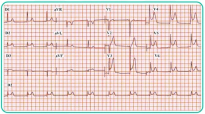
A Cateterismo cardíaco.
B Angiotomografia de coronárias.
C Cintilografia do miocárdio.
D Ecocardiograma.
Questão 225 · Dermatologia · 4000194662Uma paciente de 34 anos, obesa e com diabetes do tipo II queixa-se de manchas escuras nas axilas e nas virilhas. Ao exame, observam-se placas hipercrômicas, de superfície aveludada localizada nas áreas relatadas. Assinale a alternativa correta quanto ao diagnóstico.
A Dermopatia diabética.
B Intertrigo.
C Hidradenite supurativa.
D Acantose
Questão 226 · Diagnóstico · 4000194661Dezesseis dias após retornar de viagem ao interior do Estado do Amazonas, um engenheiro de 32 anos de idade apresentou quadro súbito de febre elevada, mal-estar, cefaleia intensa e mialgia. A médica que o atendeu na unidade básica de saúde em seu município (Porto Alegre - RS) suspeitou de malária. O paciente nega ter tido malária no passado. Assinale a alternativa correta.
A O agente etiológico provável, nesse caso, é o
B A notificação desse caso suspeito é compulsória, mas não imediata.
C A médica deve solicitar o exame de gota espessa.
D Como esse é o primeiro episódio de malária desse paciente, a chance de malária grave é menor. A cada episódio de malária, a possibilidade de malária grave aumenta.
Questão 227 · Pneumologia · 4000194659Você está atendendo um paciente de 28 anos, com história de febre, tosse e expectoração há 5 dias, em uso de azitromicina, que relata prostração no último dia, dor torácica ventilatório-dependente e piora da dispneia. Ao realizar uma radiogra a de tórax, foi constatado um derrame pleural à esquerda e realizada a toracocentese diagnóstica. Após a toracocentese, decidiu-se por drenagem pleural. A análise do líquido pleural desse paciente provavelmente era:
A relação proteína líquido pleural/proteína sérica < 0,5.
B nfiltrado linfocítico com raras células mesoteliais.
C PH: 7,1 e LDH: 1200 UI/L.
D ADA > 60.
Questão 228 · Esôf ago de Barrett · Tratamento Farmacológico · Inibidores da Bomba de Prótons IBP · 4000194658Homem, 53 anos, tabagista e obeso, com diagnóstico de doença do re uxo há mais de 5 anos, em uso irregular de omeprazol, queixando-se de pirose intermitente. Realiza endoscopia digestiva alta que revela esofagite péptica moderada e área circunferencial de metaplasia intestinal sem displasia. Qual é a orientação mais adequada para esse paciente?
A Indicar, neste momento, a fundoplicatura total de Nissen.
B Indicar esofagectomia distal.
C Orientar o uso contínuo de omeprazol, além de medidas não farmacológicas, como abandonar o tabagismo e perder peso. O controle endoscópico não está indicado.
D Orientar o uso contínuo de omeprazol, além de medidas não farmacológicas, como abandonar o tabagismo e perder peso. O controle endoscópico está indicado.
Questão 229 · Reumatologia · 4000194656Homem, 47 anos, procura o pronto atendimento referindo dor intensa no tornozelo direito há 24 horas. Relata que a dor vem em piora e que está com muita di culdade para andar. Nega trauma. Já apresentou quadro prévio semelhante no 1º pododáctilo à esquerda há cerca de 6 meses e teve melhora espontânea. Antecedentes: hipertensão e diabetes mellitus. Está em uso de hidroclorotiazida 25 mg, losartana 50 mg e metformina 850 mg duas vezes ao dia. Ao exame físico: bom estado geral, corado, hidratado, acianótico, anictérico, afebril, eupneico, fácies de dor. IMC: 28 kg/m². Dextro: 89 mg/dL. PA: 128 x 80 mmHg. Dor, calor e edema em tornozelo direito com limitação da amplitude de movimento. Exames laboratoriais: hemoglobina 14,1 g/dL, hematócrito 43%, leucócitos 7.800/mm³, plaquetas 260.000/mm³, creatinina 0,9 mg/dL, ureia 32 mg/dL, PCR 8,2 mg/L (VR < 3 mg/L). Realizada punção articular e análise do líquido sinovial mostra celularidade de 38.000/mm³ com 60% de polimorfonucleares, presença de cristais em formato de agulha e birrefringência negativa, Gram e culturas em andamento. Tendo em vista a principal hipótese diagnóstica, qual das medicações abaixo não está indicada para melhora sintomática do paciente?
A Naproxeno.
B Colchicina.
C Alopurinol.
D Prednisona.
Questão 230 · Nef rologia · 4000194655Em que situação abaixo não há indicação de início de diálise?
A Paciente com quadro de choque séptico de foco pulmonar com uso de droga vasoativa em doses altas, redução progressiva do débito urinário a despeito de uso de furosemida e reposição de bicarbonato de sódio que apresenta os seguintes exames: creatinina 1,6 mg/dL – ureia 110 mg/dL – pH 7,08 – PCO2 52 mmHg – bicarbonato 8,3 mEq/L– Potássio 4,3 mEq/L.
B Jovem com área de queimadura extensa com adequada ressuscitação volêmica inicial que evolui com oligúria a despeito de todas as medidas clínicas e apresenta os seguintes exames: creatinina 4,2 mg/dL – ureia 122 mg/dL – pH 7,32 – bicarbonato 18,3 mEq/L – Potássio 7,3 mEq/L.
C Idoso que dá entrada no PS com dispneia, dessaturação, crise hipertensiva associada a edema, hepatomegalia e estertores crepitantes bilaterais em todo hemitórax. Feito morfina, suplementação de oxigênio e diurético de alça com apenas 150 mL diurese em 4 horas.
D Jovem com quadro de síndrome nefrótica apresenta quadro de anasarca: edema em membros inferiores até raiz de coxa, ascite, estertores bibasais e edema periorbitário. Apresenta os seguintes exames: creatinina 4,6 mg/dL – ureia 110 mg/dL – pH 7,38 – bicarbonato 22,3 mEq/L– Potássio 4,3 mEq/L.
Questão 231 · Carcinoma de Células Escamosas CEC · Adenocarcinoma de Esôf ago · 4000194653Homem, 72 anos, tabagista e etilista de longa data, apresenta-se com disfagia progressiva e perda de 12 kg em 3 meses. Diante da suspeita clínica, o médico da UBS solicitou esofagograma baritado, que revelou área de estenose irregular no terço médio do esôfago. Aponte o diagnóstico mais provável e o exame complementar indicado para confirmação diagnóstica.
A Adenocarcinoma de esôfago médio, endoscopia digestiva alta com biópsias.
B Divertículo mesoesofágico, tomografia computadorizada.
C Carcinoma escamoso de esôfago, endoscopia digestiva alta com biópsias.
D Acalásia, manometria de esôfago.
Questão 232 · Cardiologia · 4000194624A respeito d a hipertensão arterial, d e acordo com a Diretriz Brasileira de Hipertensão Arterial de 2020, assinale a alternativa correta.
A Os acidentes vasculares cerebrais (AVC) são frequentes nos hipertensos, e cerca de 85% são hemorrágicos.
B O controle terapêutico da hipertensão pode regredir ou reverter a hipertrofia ventricular esquerda e reduzir o risco de cardiopatia.
C Os betabloqueadores são uma excelente opção para o tratamento da hipertensão sistólica isolada do idoso.
D Pacientes pré-hipertensos não apresentam risco com relação ao dano vascular.
Questão 233 · Neurologia · 4000194623Mulher, 18 anos, procura atendimento por queixa de cerca de 3 episódios de cefaleia nos últimos 15 dias. A paciente não tem antecedente de cefaleia nem de outras patologias e faz uso apenas de anticoncepcional oral combinado. Refere que a cefaleia é de forte intensidade, pulsátil, unilateral, associada a foto e fonofobia, náuseas e vômitos, piora com o esforço e não melhora mesmo com o uso de analgésicos. Ao exame físico, a paciente apresenta PA 120 x 80 mmHg, FC 80 bpm, FR 18 irpm. Está consciente e orientada, e não há dé cit de força ou sensibilidade, os reflexos estão preservados, rigidez de nuca ausente e a marcha sem alterações. É obesa, IMC 35 kg/m². Considerando o caso clínico, qual é sua principal hipótese diagnóstica e conduta?
A Enxaqueca sem aura e uso de topiramato.
B Hemorragia subaracnóidea e TC de crânio. Caso o exame seja normal, a punção liquórica estará indicada.
C Enxaqueca sem aura e TC de crânio.
D Cefaleia tensional e propranolol.
Questão 234 · Dermatologia · 4000194622Paciente do sexo masculino, 22 anos, procura a unidade básica de saúde com queixa de coceira na virilha. Ao exame físico, há placas com bordas eritematosas e descamativas, anulares, localizadas nas virilhas. Com base no caso clínico, assinale a alternativa correta.
A A terbinafina, administrada por via oral ou tópica, está adequada.
B Provavelmente se trata de uma micose, e o gênero mais comum é a cândida.
C O exame de escolha nesse momento é uma biópsia cutânea.
D Podemos administrar pomada de aciclovir para tratar esse quadro de herpes simples.
Questão 235 · Reumatologia · 4000194615Mulher, 65 anos, comparece à consulta na unidade básica de saúde referindo dor em quadril e joelho há 6 meses. Refere que as dores pioram ao longo do dia, principalmente em dias nos quais o trabalho como empregada doméstica é mais pesado. Relata melhora durante pausas no trabalho e durante à noite, quando se deita para dormir. Pela manhã, nota rigidez nessas articulações com duração de 20 minutos. Foi orientada pela vizinha a tomar ibuprofeno e apresentou melhora da dor. Como as dores estão piorando progressivamente e interferindo diretamente em seu trabalho, gostaria de um tratamento que a zesse melhorar. Antecedentes pessoais: hipertensão, dislipidemia. Em uso: hidroclorotiazida 25 mg, enalapril 10 mg de 12/12 horas e sinvastatina 20 mg. Ao exame físico: IMC 31 kg/m², PA = 130 x 80 mmHg, dor e limitação de amplitude de movimento em quadril direito, especialmente com a abdução e rotação interna, dor e aumento de volume em joelho esquerdo com crepitações e limitação parcial à exo-extensão, hipotro a de quadríceps bilateral. Tendo em vista a principal hipótese diagnóstica, que medida não está indicada para essa paciente?
A Prescrição de prednisona via oral.
B Perda de peso e fortalecimento muscular.
C Prescrição de anti-inflamatório não esteroidal tópico.
D Prescrição de dipirona via oral.
Questão 237 · Trombólise Endovenosa · 4000194559O Acidente Vascular Cerebral (AVC) é a principal causa de morbidade e a segunda de mortalidade no Brasil. Quanto mais rápido for a identi cação e, nos casos de AVC isquêmico, a definição de tratamento, melhor será o prognóstico do paciente. Quanto a esse assunto, assinale a alternativa correta:
A A escala NIHSS prediz a gravidade do evento, que é mais grave quanto maior for a pontuação. Um paciente em coma deverá receber a pontuação máxima, de 44 pontos.
B A presença de cefaleia e vômitos recorrentes podem diferenciar com precisão entre um AVC isquêmico e um hemorrágico, preterindo a indicação de neuroimagem em casos selecionados.
C A trombólise endovenosa estará indicada para todos os casos de síndrome neurovascular com menos de 3 horas de início dos sintomas, mas só para alguns casos entre 3 e 4,5 horas
D O AVC no contexto de endocardite infecciosa não poderá ser submetido à trombólise.
E Pacientes com AVC isquêmico sem oclusão de vaso proximal (artéria carótida e artéria cerebral média) poderão ser elegíveis para trombectomia, contudo apenas até 16 horas.
Questão 238 · Reação medicamentosa com eosinof ilia e sintomas sistêmicos DRESS · 4000194558Um paciente de 32 anos deu entrada no hospital queixando-se de inchaço no rosto e vermelhidão na pele. Ao exame físico, apresenta um eritema difuso, um edema de face e linfonodomegalias axilares. Frequência cardíaca e respiratória estão normais. Exames laboratoriais indicam uma linfocitose atípica, eosino lia, e aumento de TGO e TGP. O paciente refere que, há 2 meses, teve um acidente automobilístico, evoluiu com convulsões e está usando, desde então, carbamazepina. Diante do quadro clínico exposto, qual é o diagnóstico?
A Síndrome do homem vermelho
B DRESS
C Escarlatina
D Hepatite viral
E Erupção fixa à droga
Questão 239 · Reumatologia · 4000194557Em relação à osteoartrite, é correto afirmar que:
A Cotovelos, punhos e tornozelos são articulações classicamente acometidas em sua forma primária.
B A presença de rigidez matinal afasta seu diagnóstico.
C Os nódulos de Heberden ocorrem nas interfalangeanas proximais e os nódulos de Bouchard nas interfalangeanas distais.
D Dissociação clínico-radiológica é frequente.
E O uso de colágeno, condroitina e glicosamina é capaz de modificar o curso natural da doença, aliviando sintomas e evitando progressão.
Questão 240 · Pneumologia · 4000194556Ao atender o senhor Manoel, 62 anos, tabagista 40 maços/ano, portador de DPOC, com queixa de tosse crônica seca e dispneia para subir escadas ou morros, que refere ter tido uma exacerbação da doença no último ano e que foi tratada em casa. Você percebe que, em sua espirometria, após o uso de broncodilatador, a relação VEF1/CVF encontra-se 0,5 e o VEF1 está 40%. Você classifica esse paciente como sendo portador de DPOC:
A GOLD 3B.
B GOLD 2E.
C GOLD 3A.
D GOLD 2B.
E GOLD 4E.
Questão 241 · Nef rologia · 4000194555A glomeruloesclerose segmentar e focal (GESF) é um padrão histológico de lesão glomerular que pode se manifestar de várias formas. É uma das glomerulopatias mais diagnosticadas no Brasil e no mundo. Sobre a GESF, assinale a alternativa correta.
A A forma primária acomete tipicamente pacientes idosos.
B Condições como infecção pelo HIV, uso de anabolizantes, drogas ilícitas como a heroína, obesidade e rim único podem levar à GESF secundária.
C A presença da APOL-1 (Apolipoproteína-1) é um fator atenuador da gravidade da condição.
D A apresentação clássica envolve a presença de hematúria glomerular isolada.
E A forma primária é tratada inicialmente com inibidores de calcineurina.
Questão 242 · Inf ectologia · 4000194553Qual dos procedimentos abaixo pode ser classificado como cirurgia limpa?
A Revascularização do miocárdio.
B Colecistectomia eletiva.
C Colectomia.
D Apendicectomia por apendicite com peritonite generalizada.
E Gastrectomia.
Questão 243 · Cardiologia · 4000194552Um homem de 65 anos procura o serviço de urgência com queixa dor precordial há 2 horas com irradiação para ombro direito, diaforese e náuseas. Exame físico: estertores pulmonares basais, Sat O₂: 91%, sem outras alterações; FC = 134 bpm, PA = 170 x 90 mmHg. Eletrocardiograma (ECG) abaixo. Qual é a melhor conduta para esse caso?
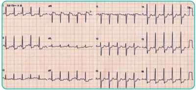
A Iniciar nitroprussiato endovenoso para controle da pressão arterial.
B Monitorar o paciente na sala de emergência e solicitar avaliação do cardiologista.
C Seriar eletrocardiograma, troponina e encaminhar para a angiotomografia de tórax.
D Encaminhar o paciente para a intervenção coronariana percutânea.
E Cardioversão elétrica sincronizada.
Questão 244 · Hematologia · 4000194551Você está de plantão no hospital e presencia uma transfusão de concentrado de plaquetas (por plaquetopenia severa) em um homem de 74 anos, que possui leucemia aguda em suporte transfusional exclusivo. O paciente relata mal-estar associado à febre e hipertensão. Qual é a conduta adequada diante de reação transfusional aguda?
A Interromper a transfusão, coletar amostra de sangue do paciente e enviar para análise em conjunto com a bolsa transfusional.
B Manter a transfusão, mas coletar material do paciente e da bolsa para análise assim que o hemocomponente encerrar.
C Manter a transfusão e observar o aparecimento de sintomas como hipotensão ou dispneia, suspendendo, nesse caso, a transfusão (visto a plaquetopenia importante).
D Interromper a transfusão e medicar com dipirona, retornando a transfusão assim que normalizar a febre.
E Interromper a transfusão, coletando amostra do paciente, não da bolsa, pois ela foi previamente testada.
Questão 245 · Gastroenterologia · 4000194550Analise as alternativas e assinale a correta a respeito das doenças inflamatórias intestinais.
A A retocolite ulcerativa piora com o tabagismo.
B O uso de mesalazina é a primeira escolha para indução de remissão em pacientes com doença de Crohn moderada a grave.
C A presença de granulomas não caseosos na biópsia de paciente com doença inflamatória intestinal favorece o diagnóstico de doença de Crohn.
D A colangite esclerosante primária é uma manifestação extraintestinal mais comum na doença de Crohn.
E Diante de paciente com megacólon tóxico, é mandatória a realização de colonoscopia.
Questão 246 · Gastroenterologia · 4000194540Homem, 45 anos, procurou ambulatório de gastrocirurgia para acompanhamento após a sua terceira internação por hemorragia digestiva alta secundária a úlceras gastroduodenais. Refere usar omeprazol diariamente, porém mantém dispepsia e pirose. Está preocupado com a possibilidade de ter novo episódio de sangramento e vem para avaliação por recomendação pós-alta. Refere também episódios de diarreia cada vez mais frequentes. Assinale a alternativa que contempla o diagnóstico compatível com o caso.
A Glucagonoma
B Síndrome de Whipple
C Síndrome de Werner-Morrison
D Síndrome de Zollinger-Ellison
E Somatostatinoma
Questão 247 · Exacerbação Aguda da DPOC EADPOC · Farmacológico · Tratamento · 4000194509Sobre a exacerbação de doença pulmonar obstrutiva crónica (DPOC), é correto afirmar que:
A o tratamento precoce reduz o risco de novas exacerbações
B recomenda-se o uso de corticoterapia oral nos primeiros 5 a 7 dias de tratamento
C a antibioticoterapia é útil na melhora sintomática, mas não tem impacto sobre mortalidade
D deve-se evitar o uso de corticoides sistémicos dado o risco de piora na resposta imunológica
Questão 248 · Características dos sopros cardíacos · 4000194508Ao exame físico, a alteração que sugere um sopro cardíaco patológico é:
A sopro grau 2/6
B sopro diastólico
C sopro supraclavicular que desaparece após abdução do ombro
D sopro mais audível entre a borda esquerda do esterno e ápice cardíaco
Questão 249 · Clínica Médica · 4000194506Pacientes com insu ciência cardíaca são comuns na Atenção Primária à Saúde e o(a) médico(a) de família e comunidade deve estar preparado(a) para manejar essa condição de saúde em seu dia a dia. Em relação à abordagem inicial do paciente com suspeita de Insuficiência Cardíaca, podemos afirmar que:
A as informações obtidas peia anamnese não são úteis para o diagnóstico da insuficiência cardíaca, já que dependem da capacidade dos pacientes contarem seus sintomas de forma confiável
B os achados classicamente descritos para o exame físico de pacientes com insuficiência cardíaca tem alta sensibilidade, sendo sua ausência um critério confiável para se excluir a possibilidade de insuficiência cardíaca
C o ecocardiograma não é necessário para o diagnóstico de Insuficiência Cardíaca, mas deve ser solicitado na abordagem inicial desses pacientes para diferenciar entre as formas com e sem fração de ejeção preservada
D o eletrocardiograma e a radiografia de tórax não tem utilidade para a abordagem da suspeita de insuficiência cardíaca por serem exames com baixa especificidade, devendo ser substituídos pelo ecocardiograma
Questão 250 · Clínica Médica · 4000194505Em uma tarde de trabalho na Clínica da Família você atende Oswaldo, um homem de 34 anos de idade, sem comorbidades, com queixa de dor epigástrica há alguns meses, acompanhada de sensação de plenitude e náuseas. O paciente não apresenta sinais de alerta para doenças graves. Você suspeita de um diagnóstico de dispepsia e inicia a abordagem da dor epigástrica de Oswaldo naquela mesma consulta. A abordagem inicial para o manejo do caso é;
A solicitar endoscopia digestiva alta para a pesquisa de úlceras gastroduodenais antes de iniciar o tratamento
B solicitar endoscopia digestiva alta para exclusão de lesões estruturais concomitantemente ao inicio do tratamento com Inibidor de Bomba de Prótons
C iniciar tratamento empírico para erradicação de
D iniciar tratamento com Inibidor de Bomba de Prótons por quatro semanas e, caso não haja melhora após esse período, tratar empiricamente para
Questão 251 · Clínica Médica · 4000194504Pacientes adultas não grávidas com bacteriúria assintomática, em geral, não devem ser tratadas com antibióticos para erradicação da bactéria colonizadora do trato urinário. No entanto, em algumas situações especi cas, esse tratamento pode trazer benefícios à paciente. Está indicado o tratamento da bacteriúria assintomática em:
A pacientes diabéticas com hemoglobina glicosilada acima do alvo de tratamento
B pacientes que vão ser submetidas a procedimentos que envolvem instrumentação do trato urinário
C pacientes que apresentam infecção recorrente do trato urinário, com mais de cinco episódios nos últimos 12 meses
D pacientes, nas quais a bactéria identificada na urocultura apresenta resistência aos antibióticos de primeira linha para o tratamento
Revisar: possível letra faltando em enunciado
Questão 252 · Clínica Médica · 4000194503No cuidado ofertado ao paciente com diagnóstico de Herpes Zoster, pode ser considerado o uso de antivirais sistémicos como parte do tratamento. Está indicado o uso de antivirais sistémicos em:
A pacientes com dor moderada a grave associada às le¬sões cutâneas
B pacientes com cometimento da região do tronco
C pacientes portadores de diabetes
D pacientes entre 30 e 50 anos de idade
Questão 253 · Clínica Médica · 4000194502Durante a avaliação da queixa de epistaxe e definição da conduta a ser seguida, deve-se fazer a diferenciação entre epistaxe anterior e posterior. Sobre essas duas formas de apresentação da epistaxe, pode-se afirmar que:
A no manejo inicial da epistaxe anterior, é recomendado que o paciente mantenha-se sentado, com a cabeça fletida para trás
B a epistaxe posterior é a forma mais comum, sendo frequentemente encontrada em pacientes na atenção primária à saúde
C uma forma eficiente de confirmar a origem anterior da epistaxe é encontrar o foco de sangramento na mucosa nasal por meio de exame especular das narinas
D em caso de suspeita de epistaxe posterior, deve-se fazer o tamponamento posterior e observação ambulatorial do paciente com retorno em 24 a 48 horas
Questão 254 · Clínica Médica · 4000194501Na abordagem a pacientes com linfonodomegalia na Atenção Primária à Saúde, é correto afirmar que:
A a biópsia é necessária para confirmar o diagnóstico etiológico e definir o manejo inicial do quadro
B entre as causas mais comuns de linfonodomegalias localizadas está a linfonodomegalia reacional
C a investigação com ultrassonografia deve ser solicitada em todos os casos de linfonodomegalia localizada para a pesquisa de neoplasias
D linfonodomegalia localizada em cadeia supraclavicular pode ser observada por até quatro semanas até resolução espontânea, antes de se iniciar investigação etiológica
Questão 255 · Clínica Médica · 4000194500O medicamento utilizado em terapias antirretrovirais com maior associação a eventos adversos relacionados com sintomas neuropsiquiátricos como distúrbios do sono, sonolência, pesadelos, irritabilidade, euforia, depressão e agitação é:
A lamivudina (3TC)
B raltegravir (RAL)
C atazanavir (ATZ)
D efavirenz (RFZ)
Questão 256 · Clínica Médica · 4000194499Sobre as paralisias faciais periféricas em adultos, é correto afirmar que:
A recomenda-se conduta expectante, limitando-se as intervenções à proteção ocular e fisioterapia precoce
B caracterizam-se pela ausência de acometimento da musculatura periocular
C recomenda-se a corticoterapia oral com prednisona 60mg/dia por 7 dias
D decorrem de processo inflamatório no nervo trigêmeo
Questão 257 · Clínica Médica · 4000194498Sobre o manejo da abstinência alcoólica, está correto afirmar que:
A para pacientes com hepatopatia grave, o lorazepam é a melhor opção de benzodiazepínico para alivio dos sintomas
B a escala CIWA-Ar permite determinar se o paciente necessita de suplementação de tiamina
C a reposição de tiamina deve ser realizada com 1Q0mg/ dia por via intramuscular por 30 dias
D deve ser realizado exclusivamente em centros de atenção psicossocial - álcool e outras drogas
Questão 258 · Clínica Médica · 4000194449Homem de 56 anos queixa-se de emagrecimento apesar de estar se alimentando muito bem. Relata polaciúria com micções de grande volume, porém nega disúria, algúria ou alteração do jato urinário. É obeso (IMC: 38,9kg/m²), tabagista, portador de HAS e insu ciência cardíaca isquêmica, em uso de enalapril 20mg ao dia, AAS 100mg ao dia e atorvastatina 40mg ao dia. O exame físico não apresenta anormalidades. Exames de laboratório: glicemia de jejum 276mg/dL; HgA1C 10,7%; creatinina 1,2mg/dL. Assinale a alternativa que apresenta a prescrição inicial MAIS adequada nesse caso.
A Metformina.
B Insulina NPH e metformina.
C Empagliflozina.
D Insulina regular pré-prandial.
Questão 259 · Clínica Médica · 4000194448Homem de 66 anos retornou de viagem em um cruzeiro marítimo apresentando febre (38,6oC) e tosse produtiva com escarro amarelado. A radiogra a do tórax apresentou consolidação pulmonar no hemitórax esquerdo. Está em uso de amoxicilina-clavulanato 500/125mg de 8/8h por via oral há 4 dias, sem melhora clínica. Realizou teste de antígeno para 142x88mmHg, FC: 72bpm, FR: 17ipm, SpO2 96% (aa). Sem outras alterações. Assinale a alternativa que apresenta o tratamento
A Trocar o tratamento para levofloxacino (VO).
B Manter amoxicilina-clavulanato(VO) e acrescentar doxiciclina (VO).
C Manter amoxicilina-clavulanato em dose dobrada (IV).
D Trocar o tratamento para ceftriaxona (IV) e azitromicina (VO).
Questão 260 · Clínica Médica · 4000194447Mulher de 27 anos queixa-se de dor na região cervical anterior e febre há 8 dias. Nega comorbidades conhecidas e não faz uso de medicamentos. Ao exame físico, PA: 140x86mmHg, FC: 118bpm, FR: 18ipm, SPO² 98% (aa), Tax: 37,9°C. Apresenta tireoide de volume aumentado, quente e dolorosa a palpação. Os exames respiratório, cardiovascular e abdominal não revelam outras anormalidades. O exame neurológico revela tremor postural e cinético das extremidades superiores e hiperreflexia difusa. Exames de laboratório: TSH 0,03mU/L (VR 0,4 a 4,5mU/L); T4L 2,7ng/dL (VR 0,7 a 1,8ng/dL); leucócitos 15.980/mm3 (VR 4.000 a 11.000/mm³); neutró los 11.540 (VR 1.500-7.600/mm³); VHS 84mm (VR > 20mm). Assinale a alternativa que apresenta a prescrição MAIS adequada para essa paciente
A Metimazol e dipirona.
B Antibiótico e anti-inflamatório não esteroidal.
C Propiltiouracil e betabloqueador.
D Anti-inflamatório não esteroidal e betabloqueador.
Questão 261 · Clínica Médica · 4000194446Mulher de 27 anos vai ao PS queixando-se de lombalgia direita muito intensa, náuseas e vômitos. É portadora de lúpus eritematoso sistêmico e está em uso de prednisona 10mg ao dia e hidroxicloroquina 400mg ao dia. Nega internações recentes. Ao exame físico, PA: 100x60mmHg, FC: 128bpm, FR: 26ipm, SpO² 94% (aa). Apresentase alerta e orientada. O exame cardiovascular revela ritmo cardíaco taquicárdico; as extremidades estão aquecidas e apresentam o enchimento capilar imediato. O exame respiratório revela taquipnéia, sem esforço e ausculta normal. O exame do abdome não revela anormalidades. A punho-percussão revela dor na região lombar direita. Exames de laboratório: Hemoglobina: 8,3g/dL (VR 12-16d/dL); Leucócitos: 14.780/mm3 (4.000-11.000/mm3 ); neutró los: 10.890/mm³ (1.500-7.000/mm³); plaquetas: 78.000/mm³ (150.000- 450.000mm³); creatinina: 2,2mg/dL; ureia: 54mg/dL; bilirrubina total: 3,4mg/dL (<1,2mg/dL); bilirrubina direta: 2,0mg/dL (<0,4mg/dL). Assinale a alternativa que apresenta uma conduta
A Prescrever transfusão de concentrado de hemácias.
B Solicitar TC abdominal total na urgência.
C Prescrever antibiótico parenteral de espectro adequado.
D Prescrever hidrocortisona parenteral.
Questão 262 · Clínica Médica · 4000194445Homem de 68 anos se queixa de tontura ao se levantar. É portador de DM-2 e HAS, e faz uso de metformina, clortalidona e enalapril. Ao exame físico, PA/FC: (deitado) 190x96mmHg/62bpm; PA/FC: (em pé) 90x46mmHg/61bpm; PA/FC: (após 3 minutos de ortostatismo) 82x40mmHg/64bpm. Hemoglobina glicada 8,9%. Assinale a alternativa que apresenta uma conduta INCORRETA para esse paciente:
A Prescrever dapagliflozina.
B Orientar o aumento da ingestão de água e sal.
C Orientar dormir com a cabeceira elevada (30 a 45 graus).
D Substituir clortalidona e enalapril por captopril uma vez ao dia antes de dormir.
Questão 263 · Clínica Médica · 4000194444Mulher de 28 anos vai ao consultório para seguimento de lúpus eritematoso sistêmico. A manifestação ao diagnóstico foi nefropatia renal classe 2, artrite, FAN 1/320 padrão nuclear homogêneo e anti-DNA 1/80 (reduziu para 1/10 após o tratamento inicial). A última consulta ocorreu 1 ano atrás. Está assintomática. Faz uso regular de hidroxicloroquina 400mg/dia e prednisona 5mg MID. O exame físico não apresenta anormalidades. Assinale a alternativa que apresenta um exame propedêutico que dessa paciente.
A Anti-DNA.
B Campimetria visual automática.
C Fator Antinúcleo (FAN).
D Relação albumina-creatinina na urina.
Questão 264 · Clínica Médica · 4000194443Homem de 21 anos apresenta múltiplas sufusões pelo corpo de início há 3 dias. Nega traumas, outras manifestações clínicas, comorbidades conhecidas, uso de medicamentos e de drogas lícitas ou ilícitas. Não possui história familiar significativa. Ao exame físico, PA: 110X70mmHg, FC: 68bpm, Tax: 36,5°C. Apresenta sufusões nos membros superiores, inferiores e tronco. Sem outras anormalidades quaisquer (incluindo linfonodomegalias ou visceromegalias abdominais). Exames de laboratório: Hemoglobina: 15,3g/dL (VR 12-16g/dL); Leucócitos: 5.840/mm³ (4000-11.000/mm³); Neutró los: 2.580/mm³ (1500-7000/mm³); Linfócitos: 1.250/mm3 (1.000-4.000/mm³); Plaquetas: 9.000/mm³ (150.000 - 450.000/mm³); Hematoscopia do sangue periférico: presença de macroplaquetas, sem outras anormalidades; Creatinina: 0,7mg/dL; Bilirrubina total: 0,4mg/dL (<1,2mg/dL); PCR: 1,2mg/L (<5mg/L); TSH: 1,560mUI/L (0,5-5,0mUI/L); RNI 1,1; PTTa 25/25; Exame de urina sem alterações. Assinale a alternativa que apresenta um exame diagnóstico propedêutica desse caso.
A Fibrinogênio.
B Anticorpos anti-HIV.
C Mielograma.
D TC de pescoço, tórax e abdome total.
Questão 265 · Clínica Médica · 4000194442Homem de 72 anos queixava-se de epigastralgia em queimação há 3 semanas. É portador de HAS e faz uso de enalapril, sinvastatina e AAS para prevenção primária de eventos cardiovasculares. Realizou EDA. Após o resultado, recebeu a prescrição de omeprazol 20mg em jejum por 4 semanas, com resolução completa dos sintomas. Endoscopia Digestiva Alta (EDA): gastrite endoscópica enantematosa moderada do antro; úlcera na transição do corpo para o antro na curvatura menor, de fundo limpo, bordas regulares e planas, de 8mm, sem sinais de sangramento recente. Teste da urease negativo. Bx: gastrite crônica do antro; sem sinais de malignidade. Assinale a alternativa que apresenta a conduta
A Repetir a EDA.
B Suspender o uso do AAS.
C Substituir o AAS por prasugrel.
D Manter o uso do omeprazol por tempo indeterminado.
Questão 266 · Clínica Médica · 4000194409Mulher de 25 anos comparece a consulta médica para exame admissional. Goza de boa saúde, pratica exercícios físicos regularmente, não é tabagista e nem etilista. Sem passado mórbido de importância. Seu pai faleceu há dois anos, vítima de infarto agudo do miocárdio. Estatura = 1,72m; peso = 66Kg; pressão arterial = 110/70mmHg; frequência de pulso = 70ppm; frequência respiratória: 16ipm. O exame físico não apresenta alterações à exceção de estalido mesossistólico identificado à ausculta cardíaca. Qual das seguintes condições é a causa
A Estenose pulmonar congênita
B Prolapso de valva mitral
C Regurgitação tricúspide
D Válvula aórtica bicúspide
Questão 267 · Clínica Médica · 4000194408Em uma jovem com hipertro a gengival, qual das seguintes condições é a causa achado?
A Bulimia
B Uso de difenilhidantoína
C Uso de tetraciclina
D Uso excessivo de flúor
Questão 268 · Clínica Médica · 4000194407Estudante do sexo masculino, 23 anos, que pratica esportes regularmente e tem como único problema de saúde “pé de atleta”. Desenvolveu subitamente febre acompanhada de dor no pé e perna esquerdos. Ao exame, observou-se que o dorso do pé e a parte distal da região anterior da perna encontravam-se endurados, eritematosos e quentes. A área endurada tinha margens nítidas e segundo informação do estudante estava se estendendo. Ao exame, observou-se ainda, linfadenomegalia inguinal dolorosa. Dentre os micro-organismos relacionados abaixo, qual é o agente etiológico responsável pelo quadro apresentado pelo paciente?
A Bastonetes Gram negativos
B Clostridium spp
C Streptococcus beta-hemolítico
D Tinea pedis
Questão 269 · Clínica Médica · 4000194406Marque a opção abaixo que é vesiculopustulares e poliartralgia sem artrite purulenta:
A Doença de Lyme
B Infecção gonocócica disseminada
C Infecção por
D Infecção por
Questão 270 · Clínica Médica · 4000194405Em se tratando da malária, assinale a alternativa
A A gravidade da doença correlaciona-se sobretudo com a porcentagem de eritrócitos infectados e com a presença de pigmento malárico em mais de 5% dos neutrófilos.
B A infecção por
C Na vigência da deficiência de glicose-6-fosfato desidrogenase, a primaquina, uma das drogas utilizadas no tratamento da protozoose, pode provocar, em seus usuários, hemólise decorrente de estresse oxidativo sobre os eritrócitos.
D Os pacientes com traço falciforme (hemoglobina AS) são particularmente suscetíveis à infecção por Plasmodium falciparum
Questão 271 · Clínica Médica · 4000194404Homem de 72 anos, diabético e hipertenso queixa-se de perda súbita da visão no olho direito, acompanhada de cefaléia. A fundoscopia evidencia edema e hiperemia da papila óptica que apresenta também pequenas hemorragias em “chama de vela” e telangectasias. Dentre as opções abaixo, qual é o diagnóstico
A Glaucoma agudo
B Neuropatia óptica isquêmica
C Retinopatia diabética
D Retinopatia hipertensiva
Questão 272 · Clínica Médica · 4000194403Paciente de 22 anos, do sexo feminino, portadora de diabetes mellitus do tipo 1, deu entrada em serviço de pronto atendimento com quadro de cetoacidose diabética devido à descontinuação do uso da insulina e transgressão dietética. Exames laboratoriais evidenciaram elevação significativa dos níveis séricos de glicose e o pH do sangue arterial era 7,27. Qual dos achados relacionados abaixo se espera encontrar no traçado eletrocardiográfico dessa paciente?
A Aumento da amplitude da onda P
B Ondas T apiculadas
C Ondas U
D Redução da duração do intervalo PR
Questão 273 · Clínica Médica · 4000194402Homem de 42 anos, procurou auxílio médico com quadro de artrite aguda no tornozelo direito. Nega história de trauma e nunca apresentou quadro semelhante anteriormente. É hipertenso e faz uso de hidorclorotiazida. Qual seria a
A Iniciar alopurinol se os níveis séricos de ácido úrico estiverem elevados.
B Iniciar antiinflamatóiro e antibiótico de amplo espectro.
C Iniciar colchicina e antibiótico de amplo espectro.
D Realizar artrocentese propedêutica.
Questão 274 · Clínica Médica · 4000194401Homem de 65 anos com obesidade central, dislipidemia e hiperglicemia de jejum apresenta hipertransaminasemia persistente há mais de um ano. Traz consigo resultados de exames que mostram HBsAg positivo, HBeAg positivo, antiHBe negativo e níveis elevados de HBV DNA. Acerca destas informações, assinale a alternativa CORRETA:
A Este paciente apresenta critérios de hepatite crônica pelo vírus B (VHB).
B Lamivudina é droga de primeira escolha por apresentar maior barreira genética.
C Na maioria destes pacientes o HBsAg negativa a longo prazo.
D Síndrome metabólica não é fator de risco adicional para hepatocarcinoma.
Questão 275 · Clínica Médica · 4000194400Homem de 54 anos estava em uso de clavulanato de amoxicilina para tratamento de sinusite. Houve melhora inicial, mas sete dias após o início do tratamento, ele voltou a apresentar febre associada a diarréia, com cerca de sete dejeções diárias. Dentre as opções abaixo, assinale o exame laboratorial provável do quadro de febre e diarréia:
A Identificação de toxina de
B Isolamento de
C Pesquisa de leucócitos fecais
D Pesquisa de IgG e IgM anti-C. difficile no soro
Questão 276 · Clínica Médica · 4000194399Mulher de 32 anos é avaliada no consultório após um episódio de brilação atrial. Ela foi submetida a cirurgia de correção de Tetralogia de 110x70mmHg, o pulso é 75bpm, regular e a frequência respiratória é 20irpm. A pressão venosa jugular é normal. Há um impulso paraesternal na borda cardíaca esquerda. A ausculta cardíaca revela um sopro protosistólico no segundo espaço intercostal esquerdo e um sopro grau 2/6, diastólico, em decrescente, na borda esternal esquerda, que aumenta com a inspiração. Qual é o diagnóstico
A Comunicação interventricular recorrente.
B Regugirtação tricúspide.
C Regurgitação aórtica.
D Regurgitação pulmonar.
Questão 277 · Clínica Médica · 4000194398A encefalite herpética costuma acometer, preferencialmente:
A O lobo occipital
B O lobo temporal
C O verme cerebelar
D Os hemisférios cerebelares
Questão 278 · Doença de Wilson DW · 4000194381Criança de oito anos é levada ao serviço de pronto atendimento com quadro de insu ciência hepática aguda. Dentre exames complementares realizados, chama a atenção valores muito altos de bilirrubinas e de cobre sérico e um discreto aumento das aminotransferases, com uma relação AST/ALT igual a 5. Os pais são primos em primeiro grau e um irmão da criança de 26 anos apresenta quadro neurológico caracterizado por alterações na fala com tremores e distonia. Considerando os dados fornecidos, marque o diagnóstico PROVÁVEL
A Deficiência de alfa-1 -antitripsina
B Doença de Wilson
C Forma grave de hepatite A
D Hepatite autoimune
Questão 279 · Tratamento · Outras taquiarritmias · 4000194349Um paciente com 54 anos, em acompanhamento há 4 meses em função de cardiopatia isquêmica dilatada, foi admitido na unidade de emergência com queixas de súbitas palpitações e dispneia há cerca de 3 horas. O paciente nega dor precordial, informando ser portador, de longa data, de hipertensão arterial sistêmica e diabetes melito, em uso de carvedilol, enalapril, furosemida, espironolactona, dapagli ozina e insulina NPH (dose apenas noturna). Ao exame físico, o paciente se encontra em moderado desconforto respiratório, sudorese presente, pressão arterial de 80 × 62 mmHg, frequência cardíaca de 120 batimentos por minuto, com ritmo cardíaco irregular e com estertoração bolhosa bibasal. É realizado um eletrocardiograma (ECG) que evidencia padrão irregular, com existência de ondas f, sendo caracterizada brilação atrial paroxística com elevada resposta ventricular; fora a presença de ondas Q patológicas na parede anterior, não há distúrbios de ST-T no ECG. A médica que o atende opta por realizar um procedimento que exige prévia aplicação de sedação e analgesia ao paciente, passando a explicar-lhe o que será realizado em seguida. Diante da situação apresentada, o procedimento que será realizado no paciente é
A cineangiocoronariografia com angioplastia coronária.
B cateterismo cardíaco com estudo eletrofisiológico.
C implante de marca-passo provisório transvenoso.
D aplicação de cardioversão elétrica.
Questão 280 · Carência nutricional do ácido f ólico · 4000194347Uma lactente com 6 meses, nascida a termo, sem doenças prévias, encontra-se em consulta médica de puericultura. A mãe refere uso de leite de cabra in natura exclusivo na alimentação da criança desde o nascimento. Ao exame físico, a criança apresenta palidez cutâneo-mucosa importante e língua lisa. Foi solicitado hemograma, que apresentou anemia macrocítica, neutropenia com hipersegmentação de neutrófilos e plaquetopenia. Ampliada a investigação, o mielograma apresentou-se normal. Considerando-se a hipótese diagnóstica mais provável, além de adequação dietética, o tratamento medicamentoso indicado para reverter essa situação é a administração de
A vitamina E e iodo.
B vitamina B12 e folato.
C zinco e ácido ascórbico.
D sais de ferro e vitamina A
Questão 281 · Quadro clínico · Endocrinologia · Diagnóstico dif erencial · 4000194346Uma paciente com 21 anos, nuligesta, comparece à consulta em um centro de saúde com queixa de amenorreia há 6 meses, acne com pústulas, aumento de pelos, principalmente na face e nos membros inferiores. Relata di culdade em perder peso e ciclos menstruais irregulares e longos desde a menarca. A rma ser sexualmente ativa. É realizado, durante o atendimento, teste rápido para gravidez, com resultado negativo. Ao exame físico, apresenta índice de massa corpórea de 30 kg/m², pressão arterial de 120 × 70 mmHg. Considerando-se o quadro clínico da paciente, qual é a conduta inicial mais adequada no momento desse atendimento?
A Dosar TSH, T4 livre, prolactina e 17 hidroxiprogesterona, para descartar patologias sistêmicas.
B Dosar cortisol livre, dehidroepiandrosterona e perfil metabólico, para confirmar perfil androgênico.
C Prescrever etinilestradiol 10 mg 1 vez ao dia, por 10 dias, para descartar causas uterinas de amenorreia.
D Iniciar espironolactona 50 mg 2 vezes ao dia e solicitar ultrassonografia, para confirmar diagnóstico de síndrome dos ovários policísticos.
Questão 282 · Neurologia · Doença de Parkinson · Quadro Clínico · 4000194344Um paciente com 65 anos faz acompanhamento na unidade básica de saúde devido a doença de Parkinson e evolui com quadro de sonolência diurna excessiva, anosmia, fadiga e apatia. Os familiares referem que o paciente faz uso regular dos seguintes medicamentos: levodopa, dipirona, losartana e ácido acetilsalicílico. Ele é, então, encaminhado para internação hospitalar para investigação diagnóstica do quadro relatado. O exame físico revela presença de rigidez muscular importante com sinal da roda dentada presente e tremores nas extremidades. O paciente apresenta-se muito sonolento, respondendo às solicitações, com perda do olfato, cansaço importante e apatia. Foram realizados exames laboratoriais que se mostraram dentro dos parâmetros da normalidade. Nesse caso, a provável evolução do quadro clínico do paciente está relacionada a
A quadro infeccioso com exames laboratoriais dentro dos parâmetros da normalidade.
B distúrbios neurodegenerativos não relacionados à doença de Parkinson.
C manifestação neuropsiquiátrica e não motora da doença de Parkinson.
D parkinsonismo secundário associado a medicamentos.
Questão 283 · Diagnóstico da púrpura trombocitopênica imunológica PTI · 4000194339Uma paciente com 30 anos, branca, procura serviço de emergência devido a sangramento gengival e ao aparecimento de pontos avermelhados nos membros inferiores há 15 dias, com piora progressiva das lesões e fadiga. Nega febre, uso de medicamentos e ingesta de bebidas à base de quinino. Foram solicitados exames que mostraram: Ao exame clínico, notou-se a presença de lesões na pele, com petéquias no dorso do pé e no tornozelo (sola dos pés sem lesões) e hemorragia bolhosa na mucosa bucal. Com base nas informações descritas, a principal hipótese diagnóstica é
A síndrome hemolítico-urêmica (SHU).
B púrpura trombocitopênica trombótica.
C trombocitopenia induzida por fármaco.
D púrpura trombocitopênica imunológica grave.
Questão 284 · Tratamento Medicamentoso das Epilepsias · Distúrbios metabólicos do período neonatal · 4000194337Um recém-nascido de 12 dias de vida foi levado à unidade de pronto-socorro por apresentar vômitos, anorexia, irritabilidade, desconforto respiratório e convulsões. O hemograma completo mostrou anemia. A análise do líquido cefalorraquidiano mostrou pleocitose discreta com predomínio de células mononucleares, hiperproteinorraquia e glicorraquia normal. Na admissão, ainda em crise convulsiva, foi medicado com fenobarbital, com dose de ataque de 20 mg/kg, porém permaneceu com crises epilépticas subentrantes. Considerando-se como a principal etiologia uma infecção do sistema nervoso central, para o manejo da condição apresentada pelo paciente deverá ser administrado
A diazepam, fenitoína, tiopental.
B fenitoína, midazolam, tiopental.
C fenitoína, lorazepam, piridoxina.
D nitrazepam, fenitoína, piridoxina.
Questão 285 · Dermatologia · Hidradenite supurativa · 4000194336Uma adolescente de 17 anos procura atendimento médico, com queixa de lesões vulvares recorrentes dolorosas e com drenagem de secreção. No exame da genitália externa da paciente, evidenciam-se múltiplos abscessos e cicatrizes profundas nos lábios, acompanhadas de secreção de odor fétido à expressão. Ela também refere nódulos persistentes e doloridos que costumam durar semanas ou meses. A paciente relata o aparecimento ocasional de lesões similares na axila. Para esse caso, o diagnóstico é compatível com
A sífilis primária.
B vulvite herpética.
C hidradenite supurativa.
D linfogranuloma venéreo.
Questão 286 · Medicina Preventiva · Saúde do Trabalhador · Dermatologia · 4000194335Um paciente com 32 anos, enfermeiro em hospital de referência em urgência e emergência, queixa-se de eritema, descamação e pápulas na face, principalmente na região malar. Ele relata ter percebido que esse quadro clínico, compatível com eczema de contato na face, manifestou-se após o uso constante de certo tipo de máscara de proteção. Apesar do risco de contágio pelo novo Covid-19 já ter diminuído, os pro ssionais da área de saúde continuam a usar com frequência seus equipamentos de proteção individual, entre eles, as máscaras N95. Considerando-se a situação descrita, assinale a opção correta.
A Os medicamentos tópicos, como pomadas compostas por corticoide e antibiótico, são de prescrição obrigatória na condução clínica desse paciente.
B Os testes epicutâneos constituem ferramenta diagnóstica confirmativa, podendo ser utilizados amplamente na Atenção Primária à Saúde.
C O afastamento, temporário ou permanente, desse trabalhador deve ser avaliado, a partir da confirmação ou suspeita de doença relacionada ao trabalho.
D O diagnóstico de dermatose ocupacional, frequente entre profissionais dessa área, possui prevalência real registrada elevada, existindo baixa prevalência de sub-registros depois das notificações realizadas na Atenção Primária à Saúde.
Questão 287 · Fator V Leiden · Síndrome do anticorpo antif osf olipídeo SAAF · 4000194334Uma paciente com 40 anos, branca, encaminhada da unidade básica de saúde, é atendida para investigação de trombose venosa profunda (TVP). Conta que apresentou um segundo episódio de TVP do membro inferior esquerdo há 30 dias. Informa que faz uso de anticoncepcional oral desde os 18 anos e que a primeira TVP ocorreu aos 36 anos, quando foi tratada com varfarina por 6 meses, sem intercorrências. Conta que teve 3 gestações, a primeira delas, aos 22 anos, resultou em um aborto espontâneo, as outras 2 foram a termo. Ela informa ainda que sua mãe também já apresentou TVP. Relata também que atualmente vem fazendo uso de rivaroxabana. Para investigação de TVP na paciente nesse momento, deve-se solicitar
A anticorpos anti-beta-2 glicoproteina 1 IgG e IgM.
B anticorpos anticardiolipina IgG e IgM.
C proteína C e proteína S livre.
D PCR para fator V Leiden.
Questão 288 · Pneumonia adquirida na comunidade PAC · Inf ectologia · Pneumologia · 4000194329Um paciente com 20 anos, previamente hígido, é recebido em pronto atendimento referindo que iniciou, há cinco dias, tosse produtiva acompanhada de astenia e febre diária entre 38 e 39 °C e que evoluiu com dor no hemitórax direito, que piorava com inspiração profunda e dispneia progressiva. Conta que procurou médico há 3 dias, o qual lhe prescreveu analgésicos e anti-inflamatórios, não tendo obtido melhora significativa do quadro. Ao exame físico, o paciente encontra-se em regular estado geral, com expansibilidade da caixa torácica reduzida à direita, frêmito toracovocal reduzido, com submacicez e murmúrio vesicular abolido em base pulmonar à direita. Com base na situação apresentada, a hipótese diagnóstica mais provável é
A pneumonia viral complicada com atelectasia.
B neoplasia de pulmão complicada com atelectasia.
C tuberculose pulmonar complicada com pneumotórax.
D pneumonia bacteriana complicada com derrame pleural.
Questão 289 · Clínica Médica · Dermatoses eczematosas · Dermatologia · 4000194327Uma adolescente com 16 anos procura a unidade básica de saúde para avaliação de uma mancha na pele. Relata que, há cerca de 1 mês, desenvolveu uma lesão caracterizada como uma placa eritematosa, liqueni cada e pruriginosa, localizada acima da região umbilical, próxima ao local onde colocou um piercing. Ao ser examinada, a lesão foi confirmada e constatou- se também que o desenvolvimento puberal era M1P1, conforme os critérios de Tanner. A adolescente também apresentava baixa estatura, pescoço alado e implantação baixa de orelhas. Ao ser questionada sobre o uxo menstrual, ela informou que ainda não tinha menstruado. Considerando-se o quadro clínico e o exame físico descritos, os diagnósticos mais prováveis são
A tinea corporis
B dermatite atópica; síndrome de Noonan.
C dermatite de contato; síndrome de Turner.
D dermatite seborreica; síndrome de Carpenter.
Questão 290 · Tratamento · 4000194323Uma paciente com 40 anos identi cou nódulo em região cervical anterior. Ao exame físico, palpa-se nódulo rme, de cerca de 1 cm, em região cervical anterior e móvel à deglutição. Foram solicitados exames de função tireoidiana, que indicaram normalidade, e ultrassonogra a, que mostrou nódulo sólido de 1,3 cm em lobo esquerdo da tireoide. Realizada punção aspirativa com agulha na, o exame citopatológico mostrou lesão de classificação Bethesda V. Nesse caso, qual é a conduta mais adequada?
A Encaminhar para cirurgia da tireoide.
B Repetir punção aspirativa com agulha fina.
C Solicitar cintilografia de tireoide com Iodo 131.
D Realizar ultrassonografia a cada 6 meses para acompanhamento.
Questão 291 · Nef rologia · Diálise Peritoneal · Doença Renal Crônica · 4000194319Uma paciente com 54 anos, portadora de nefropatia diabética em estágio 5 da KDIGO (do inglês Disease: Improving Global Outcomes seguimento de sua terapia por diálise peritoneal ambulatorial contínua (CAPD) instituída há alguns meses. A paciente relata certo desconforto abdominal e aspecto turvo do líquido que é drenado de sua cavidade peritoneal. Nega febre ou outros sintomas e refere aumento de peso nas últimas semanas. Ao exame físico, a paciente se mostra normotensa, afebril, com dor leve à palpação abdominal difusamente. Exames laboratoriais que recentemente realizou revelam hiperglicemia e hipoalbuminemia. É coletado material da cavidade peritoneal, através do cateter de CAPD, para análise citológica e cultura para germes comuns. Acerca da condição que afeta essa paciente, assinale a opção correta.
A O quadro clínico mais comum é o descrito, sendo rara a presença de febre e de outros sintomas constitucionais.
B O diagnóstico provável do caso é sustentado apenas se estiverem presentes mais de 250 polimorfonucleares/mm3 no líquido analisado.
C A ocorrência de hiperglicemia e hipoalbuminemia é explicada pelo processo infeccioso, não podendo ser causadas tão somente pela CAPD.
D O tratamento do caso envolve a retirada do cateter de CAPD, caso a cultura para germes comuns isole um bastonete Gram-negativo hidrofílico, como a
Questão 292 · Derrame Pleural · Pneumologia · 4000194318Uma paciente com 54 anos apresenta tosse com expectoração e astenia há 5 dias, acompanhada de dispneia aos médios esforços e um pico febril. Ao exame físico, encontra-se consciente, contatuante, descorada (+2/+4), desidratada (+2/+4), com pressão arterial de 90 × 60 mmHg, frequência respiratória de 23 incursões respiratórias por minuto, frequência cardíaca de 120 batimentos por minuto, saturação O2 de 90% em ar ambiente, murmúrio vesicular presente em hemitórax direito e diminuído em hemitórax esquerdo, abolido em base esquerda, sem ruídos adventícios; radiogra a de tórax demonstrou derrame pleural à esquerda. Foi realizada toracocentese, seguida de drenagem pleural fechada à esquerda. O líquido, de aspecto turvo, foi encaminhado para análise, sendo confirmado empiema pleural. Acerca do líquido analisado, infere-se que
A o pH foi maior que 7,2.
B a dosagem de LDH foi superior a 1.000 UI.
C a dosagem de glicose foi superior a 60 mg/dL.
D a dosagem de proteínas foi inferior a 3 g/100 ml.
Questão 293 · Diabetes · Cetoacidose diabética · Endocrinologia · 4000194317Um escolar com 8 anos, acompanhado da mãe, chega à unidade básica de saúde com queixa de estar muito cansado e sonolento. A mãe refere que, há aproximadamente 20 dias, ele vem perdendo peso (cerca de 5 kg). Ela relata ainda que o lho, embora tenha controle es ncteriano noturno desde os 5 anos, tem agora apresentado enurese noturna, desde o início do quadro. Conta também que, no mesmo período, passou a demonstrar apetite exagerado e que, há 5 dias, começou a apresentar dor abdominal de moderada intensidade, sem localização especí ca, intermitente, associada a náuseas e vômitos (1 vez ao dia). Ao exame físico, a criança se apresenta em regular estado geral, hipocorado (+1/+4), afebril, acianótico, mucosas secas, hipoativo, fácies de dor, normotenso. À ausculta pulmonar, não há ruídos adventícios; frequência respiratória de 50 incursões respiratórias por minuto, com movimentos respiratórios amplos; ausculta cardíaca sem alterações, frequência cardíaca de 90 batimentos por minuto; abdome doloroso à palpação profunda, com ruídos hidroaéreos presentes, sem massas ou visceromegalias. Após o manejo inicial, qual das opções a seguir apresenta o seguimento a longo prazo adequado para essa doença?
A O apoio familiar é fundamental para que o problema possa ser controlado, evitando-se as complicações, uma vez que se trata de uma doença crônica.
B O uso ambulatorial farmacológico com análogo sintético da vasopressina, associado ao tratamento psicológico com alarme, costuma levar à remissão do processo por volta dos 15 anos.
C Os pacientes apresentam, com frequência, períodos de remissão que geralmente duram décadas, conhecidos por lua de mel, sendo desnecessária reposição hormonal ao término desses períodos.
D A adoção de um estilo de vida saudável, alimentação balanceada e prática de exercícios físicos regulares, é considerada um pilar do tratamento, sendo desnecessária terapia farmacológica a longo prazo.
Revisar: possível letra faltando em enunciado
Questão 294 · Trombof ilia · 4000194316Paciente secundigesta, pesando 70 kg, é encaminhada ao pré-natal de alto risco, em razão de história de abortamento espontâneo na 8ª semana, na gestação anterior. Traz consigo um exame de mutação homozigótica do gene da enzima metilenotetrahidrofolato redutase. A paciente nega história pessoal ou familiar de trombose. Nesse caso, a conduta imediata deve ser
A dar seguimento de pré-natal habitual.
B solicitar exames laboratoriais para o diagnóstico de trombofilia gestacional.
C prescrever ácido acetilsalicílico, 100 mg/dia, associado à enoxparina, 40 mg/dia.
D solicitar exames laboratoriais: anticoagulante lúpico, anticardiolipina e anti-beta 2 glicoproteína 1.
Questão 295 · Tratamento da Hipertensão arterial · 4000194315Um paciente com 68 anos, branco, previamente hígido, é atendido em consulta agendada na atenção primária, com diagnóstico recente de hipertensão arterial estágio 2, sem comorbidades. Seus exames físico e laboratoriais não mostram lesões de órgãos-alvo. O paciente relata não fazer uso de medicamentos e foi classificado como portador de fragilidade leve pela escala de fragilidade clínica, apresentando risco cardiovascular baixo pelo escore global de risco. No projeto terapêutico para esse paciente, além da mudança de estilo de vida, incluem-se terapêutica medicamentosa e metas da pressão arterial (PA) e de seguimento mais adequadas. Nesse contexto, a conduta recomendada é iniciar
A tratamento não medicamentoso, para se atingir a meta pressórica (pressão arterial sistólica de 130 a 139 mmHg e pressão arterial diastólica de 70 a 79 mmHg) por um período de 3 a 6 meses.
B terapia medicamentosa com bloqueador do canal de cálcio associado a inibidor da enzima conversora da angiotensina em doses baixas e marcar retorno em até 30 dias, para aferir se a meta pressórica (PA menor que 140 × 90 mmHg) foi atingida.
C monoterapia com espironolactona, metildopa ou clonidina, marcando retorno em até 30 dias, para aferir se a meta pressórica (pressão arterial sistólica de 130 a 139 mmHg e pressão arterial diastólica de 70 a 79 mmHg) foi atingida.
D uso de betabloqueador, em monoterapia ou associado a diurético em baixa dose, reforçando mudança de estilo de vida e recomendando consultas anuais no caso de a meta pressórica (PA menor que 140 × 90 mmHg) ter sido atingida.
Questão 296 · Síndromes Dolorosas Crônicas · Reumatologia · Fibromialgia · 4000194314Uma mulher com 52 anos comparece à consulta médica na unidade básica de saúde com queixa de dores musculoesqueléticas crônicas, mal localizadas, difusas, acima e abaixo da cintura. Refere que o quadro tem cerca de 4 meses de evolução, tendo surgido aparentemente após episódio de dengue (não grave). A paciente também refere fadiga e quadro depressivo há longa data, além de transtorno da articulação temporomandibular e síndrome do intestino irritável. Relata apetite preservado. Seu exame físico é normal, salvo por dor à compressão e palpação muscular difusa. Digno de nota é que a simples insu ação do es gmomanômetro leva a dor significativa em ponto localizado cerca de 2 centímetros distais do epicôndilo lateral do membro superior avaliado. Além disso, há dor à compressão digital bilateral nos pontos de inserção dos músculos subocciptais, no ponto médio da borda superior de ambos os músculos trapézios, sobre a borda medial das escápulas, nos quadrantes superiores externos das nádegas, posteriormente às eminências trocantéricas dos fêmures, sobre a 2ª articulação condroesternal direita e sobre as partes moles localizadas superior e medialmente a ambos os joelhos. Não há alterações no hemograma completo, nem na dosagem de proteína C reativa, T4 livre, TSH e velocidade de hemossedimentação. No caso apresentado, qual o diagnóstico dessa paciente?
A Fibromialgia
B Hipotireoidismo subclínico.
C Transtorno psicossomático.
D Transtorno depressivo maior.
Questão 297 · Clínica Médica · Inf ectologia · Diagnóstico · 4000194309Uma paciente com 24 anos, estudante de medicina, procura atendimento no ambulatório de uma universidade com história de febre não aferida e mal-estar generalizado iniciados há cerca de 48 horas. Conta que hoje começou a apresentar cefaleia intensa, motivo de sua procura por assistência. Informa ter tido varicela e rubéola quando criança. Refere ter sido vacinada na infância e que, quando entrou na faculdade, tomou uma dose de dT e da vacina para hepatite B, mas não completou o esquema. Nega vacinação em campanhas, pois teve rubéola na infância. Ao exame físico, apresenta frequência respiratória de 24 incursões respiratórias por minuto, frequência cardíaca de 100 batimentos por minuto, pressão arterial de 120 × 80 mmHg, temperatura axilar de 38,8 °C; mucosas normocoradas, hipohidratadas (+1/+4), escleróticas anictéricas; aparelho respiratório: murmúrio vesicular universalmente audível, ausência de ruídos adventícios; aparelho cardiovascular: ritmo cardíaco regular em dois tempos, bulhas normofonéticas, sem sopros ou atritos; abdome: ácido, peristáltico, sem visceromegalias. No exame neurológico está acordada, lúcida, movimenta os quatro membros, sem dé cit focal aparente, com rigidez de nuca (+3/+4), sinal de Kernig e sinal de Brudzinski presentes. Não foram observadas lesões cutâneas ou mucosas. Na fundoscopia ocular: nervos óticos bem visualizados, sem alterações. Com relação à abordagem diagnóstica, assinale a opção correta.
A A coleta de líquido cefalorraquidiano deverá ser realizada através de punção suboccipital, pois há contraindicação para realização de punção na região lombar.
B O exame microscópico do líquido cefalorraquidiano, utilizando-se a coloração de Gram, que evidencie bastonetes Gram negativos, confirma o diagnóstico de meningite pneumocócica.
C A punção liquórica com exame da bioquímica do líquido cefalorraquidiano deverá ser realizada, pois permitirá a distinção entre infecção bacteriana e viral, o que orientará a conduta terapêutica.
D A paciente deverá ser submetida a um exame de imagem antes da realização da coleta de líquido cefalorraquidiano para exame diagnóstico, pois há contraindicação para realização de punção lombar.
Questão 298 · Distúrbios do equilíbrio acidobásico DHE · Nef rologia · 4000194307Um paciente desnutrido, com 6 meses, deu entrada no pronto-socorro, acompanhado por familiares que relatam diarreia abundante e piora progressiva do nível de consciência, que vem ocorrendo há 2 dias. Ao exame, o paciente encontra--se desidratado, hipocorado, sonolento, comatoso e sem sinais localizatórios. Mantido em ar ambiente, colheu-se uma gasometria arterial, que revelou pH = 7,22; pressão parcial de CO2 de 48 mmHg; pressão parcial de O2 de 75 mmHg; saturação de O2 de 94%; bicarbonato de 12,5 mEq/L e excesso de bases (BE) = -13. Considerando o quadro descrito, assinale a opção que apresenta o diagnóstico correto para o caso.
A Acidose mista, respiratória e metabólica.
B Acidose metabólica compensada por hiperventilação alveolar.
C Alcalose respiratória compensada por uma acidose metabólica.
D Acidose metabólica compensada por uma alcalose respiratória.
Questão 299 · Políticas de Saúde do Sistema Único de Saúde · Medicina Preventiva · Endocrinologia · 4000194305Em reunião de equipe de saúde de uma unidade básica de saúde (UBS) localizada em cidade de médio porte com líderes de organizações sociais defensoras dos direitos da população de lésbicas, gays, bissexuais, travestis e transexuais, queer, intersexo, assexuais (LGBTQIA+), foram levantados alguns problemas, como: di culdade no acesso das mulheres lésbicas à realização de exame de papanicolau, falta de acesso a tratamento transexualizador para travestis e transexuais, não utilização do nome social dessa população pelos funcionários da UBS, falta de oferta de serviços e/ou ações voltados para a saúde mental dessa população. Diante dos problemas descritos e com base na Política Nacional de Saúde Integral de lésbicas, gays, bissexuais, travestis e transexuais, o médico da equipe de saúde deve, nessa ocasião, esclarecer que
A a adoção do uso do nome social das pessoas LGBTQIA+, apesar de indicado pela legislação brasileira, é uma prerrogativa de cada UBS.
B são previstas políticas públicas específicas relativas à saúde mental, álcool e outras drogas, para a população LGBTQIA+ na rede de atenção psicossocial.
C a dificuldade no acesso ao exame papanicolau é equivocada, visto que a cobertura de realização do exame é maior para as mulheres lésbicas e bissexuais do que para os outros grupos mencionados.
D ainda não há legislação que assegure a oferta do processo transexualizador pelo Sistema Único de Saúde (SUS), apesar de essa demanda ser reconhecida como válida e procedente.
Questão 300 · Inf ectologia · Sepse · 4000194304Um homem com 78 anos, acamado há meses em função de quadro demencial avançado, chega à unidade de emergência com quadro de rebaixamento do nível de consciência, febre e hipotensão arterial. Segundo familiares, o paciente vem apresentando tosse desde a ocorrência, há 3 dias, de episódio compatível com broncoaspiração durante tentativa de alimentação por via oral. Relatam que, nos últimos 2 dias, ele passou a se mostrar mais apático, não interagindo minimamente com os familiares, nem aceitando alimentação e que, no dia de hoje, surgiu febre e a acompanhante aferiu pressão arterial de 90 × 60 mmHg, uma queda de cerca de 40 mmHg na pressão sistólica em relação ao parâmetro habitual do paciente. Ao exame físico, é confirmada hipotensão arterial sistêmica (88 × 48 mmHg), além de sonolência (escore de coma de Glasgow de 9 pontos), desidratação (+2/+4), descoramento de mucosas (+1/+4), taquicardia (120 batimentos por minuto), taquipneia (26 incursões respiratórias por minuto) e presença de roncos difusos, com estertores crepitantes na base direita. Exames laboratoriais iniciais revelam anemia (hemoglobina de 8,5 g/dL - valor de referência [VR]: 13- 17 g/dL), elevação de creatinina (2,3 mg/dL - VR: 0,8- 1,2 mg/dL), ureia (102 mg/dL - VR: 20-40 mg/dL) e lactato (5,1 mmol/L - VR: <= 2,0 mmol/L), além de acidose metabólica e hipoxemia. São colhidas hemoculturas. O paciente é monitorizado adequadamente, submetido a oferta suplementar de oxigênio, e inicia-se o tratamento indicado para o quadro clínico que apresenta. Além da antibioticoterapia de amplo espectro adequada, a conduta prioritária a ser adotada para esse paciente ainda nas primeiras horas de abordagem é
A iniciar terapia de substituição renal com hemodiálise.
B administrar cristaloides intravenosos para resgate volêmico.
C proceder a hemotransfusão com 2 concentrados de hemácias.
D administrar glicocorticoide devido à possibilidade de insuficiência adrenal.
Questão 301 · Clínica Médica · Cistite · Nef rologia · 4000194299Uma paciente com 25 anos chega para consulta na unidade básica de saúde devido a quadro de disúria e polaciúria há 5 dias, que se agravou, tendo se iniciado hematúria nas últimas 24 horas. Ela relata que é a primeira vez que apresenta os sintomas descritos, que é sexualmente ativa, negando ter quaisquer outras queixas. O exame físico é normal, exceto por dor à palpação profunda em hipogástrio. Nessa situação, a conduta médica adequada para o caso é
A solicitar urocultura.
B prescrever empiricamente antibiótico.
C prescrever empiricamente antifúngico.
D solicitar bacterioscopia do conteúdo vaginal.
Questão 302 · Clínica Médica · Gastroenterologia · Cirurgia · 4000194298Uma paciente com 70 anos, diabética, com dor em anco esquerdo, de início insidioso e piora progressiva há 72 horas, chega ao pronto-socorro acompanhada de familiares. Eles relatam que, nos últimos 3 meses, observaram a ocorrência de episódios de sangramento retal vermelho-vivo, anorexia e perda ponderal de 10 Kg. Ao exame físico, a paciente apresenta-se em mau estado geral, torporosa, com frequência respiratória de 24 incursões respiratórias por minuto, frequência cardíaca de 116 batimentos por minuto, pressão arterial de 90 × 50 mmHg, abdome globoso, doloroso à palpação, com sinais de irritação peritoneal difusa. O resultado de radiografia simples evidencia pneumoperitôneo volumoso. Após discussão do caso com a família, deve ser proposto pelo cirurgião geral plantonista a realização de uma laparotomia, de uma
A enterectomia segmentar e de uma ileostomia.
B colectomia segmentar e de uma coloanastomose.
C limpeza e de uma drenagem da cavidade abdominal.
D colectomia segmentar e de uma colostomia de Hartmann.
Questão 303 · Hemorragia Digestiva Alta Não Varicosa HDA Nâo Varicosa · 4000194294Um homem com 45 anos, em uso de anti-inflamatório não hormonal há 20 dias devido a tendinite de ombro esquerdo, chega ao pronto-socorro com quadro de melena há 24 horas, de moderado volume, associado a epigastralgia intensa e mal-estar. Nega doenças preexistentes. Ao exame físico, apresenta-se em bom estado geral, consciente, orientado, com mucosas anictéricas, hidratadas e hipocoradas (+1/+4), fácies atípica, tempo de enchimento capilar de 2 segundos, frequência cardíaca de 90 batimentos por minuto, pressão arterial de 120 × 80 mmHg, abdome ácido, com ruídos hidroaéreos aumentados, dor à palpação de epigástrio. Os resultados de seus exames complementares apresentaram: hemácias: 4.500.000; hemoglobina: 13%; hematócrito: 39%; leucócitos: 4.400; plaquetas: 220.000; INR: 1,2 (valor de referência [VR]: 1-1,4); ureia: 45 mg/dl (VR: 16-40), creatina: 1,2 mg/dL (VR: 0,7-1,3); Potássio: 5,4 mEq/L (VR: 3,5-5,5); tipagem sanguínea: A+, endoscopia digestiva alta com erosões agudas de mucosa gástrica em região de antro e bulbo. A conduta inicial mais adequada ao caso seria dieta zero e
A transfusão de plaquetas e de plasma fresco congelado.
B transfusão de concentrado de hemácias em até duas horas.
C reposição volêmica com cristaloides e uso de inibidores da bomba protônica (IBP).
D reposição volêmica com cristaloides e transfusão de concentrado de hemácias e plaquetas.
Questão 304 · Neoplasias Malignas do Esôf ago · Neoplasias do Esôf ago · Cirurgia · 4000194293Um paciente com 65 anos apresenta quadro de disfagia a sólidos que evoluiu rapidamente para líquidos, acompanhado de tosse, rouquidão e perda ponderal de 20 kg nos últimos 90 dias. O paciente é tabagista (consumo de 1 a 2 maços de cigarro/dia) há 40 anos e etilista de bebida destilada há 30 anos. Realizada endoscopia digestiva alta, confirmou-se o diagnóstico d e neoplasia d e e s ôf a g o cervical. A traqueobroncoscopia demonstrou doença avançada, com paralisia das cordas vocais e invasão da árvore traqueobrônquica. Nesse caso, entre as seguintes opções de tratamento paliativo, a mais adequada é a realização de
A esofagectomia trans-hiatal.
B tunelização cirúrgica.
C esofagostomia.
D gastrostomia.
Questão 305 · Neurologia · Intoxicação pelo chumbo · 4000194285Um paciente com 10 anos, pertencente a uma comunidade ribeirinha na região do Tapajós, é atendido em unidade básica de saúde uvial por médico de família e comunidade, queixando-se de parestesia e fraqueza em membros inferiores, desequilíbrio, tremores, além de di culdade de aprendizagem, tonturas e irritabilidade. Os pais relatam que, mais recentemente, a criança vem apresentando também di culdade para falar. Durante a avaliação dos hábitos da criança, os pais também informam que consomem basicamente mandioca, plantada por eles, e peixes do rio. Referem, ainda, que residem em uma área que já vem sendo ocupada por grupos de garimpeiros ilegais há alguns anos, o que tem alterado as características das águas do rio. Qual é o principal diagnóstico para o caso desse paciente?
A Poliomielite.
B Intoxicação por mercúrio.
C Síndrome de Guillain-Barré.
D Intoxicação por organofosforados.
Questão 306 · Nef rologia · 4000194284Após dois dias de árduos treinamentos militares sob sol intenso, um recruta com 18 anos queixa-se de mal- estar, fraqueza generalizada, relatando urina avermelhada e em pequeno volume. Levado a uma unidade de emergência, apresenta-se, no momento da consulta, em regular estado geral, levemente taquipneico e hemodinamicamente estável, com ausculta cardíaca e pulmonar normais e sem edemas. Exames complementares revelam: creatinina: 4,2 mg/dL (valor de referência [VR]: 0,7-1,2 mg/dL); ureia: 189 mg/dL (VR: 20-40 mg/dL); potássio: 6,2 mEq/L (VR: 3,5-5,5 mEq/L) e acidose metabólica moderada (gasometria arterial com bicarbonato: 14 mmol/L - VR: 24 +/- 2 mmol/L), além de um teste de ta apresentar resultado falso-positivo para hemoglobinúria. Feito eletrocardiograma, o resultado mostra a presença de "ondas T em tenda", e o paciente recebe administração de gluconato de cálcio intravenoso (IV). Além disso, diante da hipótese principal, cuja etiologia provável parece ser rabdomiólise, o paciente é inicialmente tratado por via IV com reposição hídrica, oferta de bicarbonato de sódio 8,4% e glicoinsulinoterapia, além de nebulização regular com beta-2 agonista. Algumas horas depois, o paciente mantém-se estável, sem sinais de uremia ou congestão pulmonar. Seus exames de então revelam: creatinina: 3,9 mg/dL; ureia: 165 mg/dL: potássio: 6,1 mEq/L; e bicarbonato: 20 mmol/L. Nesse momento, o médico opta pela instituição de terapia de substituição renal (TSR). Considerando-se o caso descrito, é correto afirmar que a indicação de TSR foi baseada na presença de
A hipercalemia refratária.
B elevação refratária da ureia.
C acidose metabólica refratária.
D elevação refratária da creatinina.
Questão 307 · Febre maculosa brasileira e doença de lymesímile · 4000194280Uma paciente com 26 anos de idade procura a unidade de saúde da família com quadro de febre de 39 °C há 3 dias, associada a cefaleia, intensa mialgia, náuseas e vômitos. Relata que não havia procurado atendimento antes, pois suspeitava de que fosse um quadro gripal, ou alguma intoxicação alimentar, porém, no dia da consulta, apareceu um exantema, principalmente em membros inferiores. Ao exame físico, a paciente encontra-se em regular estado geral, com temperatura de 38,5 °C, anictérica, acianótica, sem alterações às auscultas cardíaca e pulmonar, abdome sem alteração, apresentando exantema maculopapular no dorso, no abdome e mais intenso nos membros inferiores, acometendo a planta dos pés, em que se notam edema (+1/+4), além da presença de picadas em região de tornozelos e panturrilhas. Durante a investigação epidemiológica, a paciente a rma ter ido realizar trilha com o namorado na semana anterior em uma região de cachoeiras, onde acamparam. Considerando-se a principal suspeita diagnóstica, além de noti car o caso, por ser suspeita de doença de noti cação compulsória, o médico deverá solicitar, em relação à paciente, reação de imuno uorescência indireta (Rifi)
A imediatamente e repetir exame entre 14 e 21 dias; iniciar tratamento com doxiciclina imediatamente; orientar o namorado a observar aparecimento de sintomas.
B imediatamente e repetir exame entre 14 e 21 dias; iniciar tratamento com ceftriaxona imediatamente; iniciar tratamento profilático com ceftriaxona para o namorado.
C imediatamente, sem necessidade de repetição do exame; iniciar tratamento com doxiciclina após confirmação do resultado; iniciar tratamento profilático com doxiciclina para o namorado.
D a partir do sétimo dia do início dos sintomas e repetir exame entre 14 e 21 dias; iniciar tratamento com ceftriaxona imediatamente; orientar namorado a observar aparecimento de sintomas.
Questão 308 · Meningites · 4000194279Um homem com 38 anos foi encaminhado ao ambulatório de referência em infectologia do seu município devido a episódios de cefaleia, confusão mental e febre (até 38,5 °C) ocorridos há cerca de uma semana, tendo havido perda de peso no último mês (peso habitual = 70 kg). Ele relata que, no dia anterior, iniciou com rebaixamento do nível de consciência, encontrando-se letárgico no momento da consulta. Nega tosse ou diarreia. Os familiares contam que o paciente é tabagista e que faz consumo excessivo de bebida alcoólica. Os exames iniciais mostraram leucócitos: 3.200/mm3, com 69% de neutró los, 21% de linfócitos e 10% de eosinó los; anemia hipocrômica, microcítica, com anisocitose; plaquetas normais; velocidade de hemossedimentação: 120 mm na 1ª hora; ureia, creatinina, TGO/AST, TGP/ALT, eletrólitos normais. Foi realizada a análise do líquido cefalorraquidiano (LCR), que mostrou 200 leucócitos/mm3, com 78% de linfócitos, níveis elevados de proteína, baixos níveis de glicose e tinta nanquim negativa. Considerando-se o quadro descrito, a hipótese diagnóstica pertinente ao caso é de
A meningite tuberculosa.
B meningite bacteriana.
C neurocriptococose.
D meningite viral.
Questão 309 · Clínica Médica · Tireotoxicose · 4000194274Uma mulher com 35 anos iniciou quadro de tremores, irritabilidade, aumento de apetite com perda de peso de 8 kg em 2 meses. Notou que houve aumento da região cervical e que os olhos ficaram mais evidentes. No mesmo período, relata palpitações e aumento do número de evacuações diárias. No exame físico, apresenta fácies basedowniana, pele aveludada e com sudorese profusa, frequência cardíaca de 120 batimentos por minuto, tremores de extremidades, pressão arterial de 140 × 70 mmHg e tireoide aumentada cerca de 3 vezes o tamanho normal, com superfície lisa e presença de frêmito. Nos exames complementares, observou- se T4 livre: 5,6 ng/dL (valor de referência [VR]: 0,9-1,8), TSH < 0,01 mU/L (VR: 0,4 - 4,5). Diante do diagnóstico de hipertiroidismo, qual seria a melhor terapêutica para esse caso?
A Levotiroxina 75 mg ao dia e Atenolol 25 mg de 12/12 horas.
B Metimazol (tiamazol) 30 mg ao dia e Propanolol 40 mg de 12/12 horas.
C Atenolol 25 mg de 12/12 horas e Radioiodoterapia com I131.
D Propanolol 40 mg de 12/12 horas e Radioiodoterapia com I131.
Questão 310 · Dermatologia · Apresentação clínica · 4000194272Um lactente com 30 dias de vida apresentou, há 3 dias, lesões na cabeça, com escamas gordurosas, espessas e aderentes, semelhantes a uma crosta láctea. As lesões se estendiam para a região retroauricular e a área das sobrancelhas. Seguindo orientação da pediatra, a mãe aplicou óleo de uva nas lesões uma hora antes do banho para a retirada das crostas. Considerando-se o quadro apresentado, são características dessa dermatose
A exudação e vesículas.
B liquenificação e eritema.
C descamação e aumento da IgE sérica.
D ausência de prurido e ausência de eosinofilia.
Questão 311 · Hiperparatireoidismo primário · Endocrinologia · 4000194269Uma paciente com 57 anos, assintomática, foi submetida a exames complementares iniciais de check-up que revelaram a presença de hipercalcemia leve a moderada (11,5 mg/dL – valor de referência [VR]: 8,0-10,5 mg/dL), sendo referenciada para ambulatório de endocrinologia de um hospital terciário. Ao ser atendida nesse serviço, foi solicitada a dosagem de PTH (paratormônio), cujo resultado revelou-se aumentado (189 pg/mL - VR: 10-65 pg/mL). Considerada a hipótese diagnóstica principal, foram realizados outros exames complementares que revelaram os seguintes achados: ultrassonogra a abdominal com cálculos em cálices renais e aspecto de nefrocalcinose bilateral, além da presença de colelitíase em vesícula biliar; densitometria óssea com escore-T menor que - 2,5 em coluna lombar e colo femural; calciúria de 600 mg em 24 horas. Com vistas a possível ressecção cirúrgica minimamente invasiva de lesão adenomatosa, é feito um exame de SPECT com Tc-sestamibi, que revela hipercaptação nodular de cerca de 2,5 cm na base do pescoço, à direita. Considerando-se esse contexto, que dado é indicativo de intervenção cirúrgica, mesmo estando a paciente assintomática?
A O desenvolvimento de colelitíase.
B A idade superior a 50 anos da paciente.
C O tamanho do nódulo cervical ao exame SPECT.
D O escore T menor que -2,5 na densitometria óssea.
Questão 312 · Diagnóstico dos linf omas clínico laboratorial citogenética e biologia molecular · 4000194267Um menino com 13 anos, previamente saudável, foi avaliado no ambulatório de pneumologia, por causa de uma história de 20 dias de febre (> ou = 38 °C), mal-estar, sudorese noturna profusa e tosse seca, que não foram modi cados pelo tratamento prévio com amoxicilina. Ao exame físico, foram observados no paciente múltiplos linfonodos de consistência endurecida, xos, indolores, em cadeia cervical e supraclavicular esquerda, com diâmetro entre 2 a 5 cm cada um. Foi realizada radiogra a de tórax, que mostrou in ltrados pulmonares bilaterais, arredondados, e adenopatia hilar bilateral. Diante do caso descrito, assinale a opção que apresenta, respectivamente, a principal hipótese diagnóstica e a conduta correta para a sua confirmação.
A Mononucleose; solicitar biópsia aspirativa de gânglio e sorologias específicas.
B Tuberculose; solicitar hemograma, hemocultura e tomografia computadorizada de alta resolução de corpo inteiro.
C Pneumonia comunitária; solicitar hemograma, hemocultura e tomografia computadorizada por emissão de pósitrons de tórax.
D Linfoma de Hodgkin; solicitar biópsia excisional de gânglio e tomografia computadorizada por emissão de pósitrons de corpo inteiro.
Questão 313 · Esclerose sistêmica · 4000194264Uma paciente com 35 anos faz tratamento em um ambulatório de referência em reumatologia devido a esclerose sistêmica, forma difusa. Faz uso regular de medicações como prednisona e metotrexato. Há 3 meses, ela apresenta dor torácica em queimação, retroesternal, associada à sensação de regurgitação, disfagia e episódios de tosse seca principalmente ao deitar. O diagnóstico e a conduta para esse caso são, respectivamente,
A pleurite; radiografia de tórax.
B angina instável; cateterismo coronariano.
C dismotilidade esofágica; manometria esofágica.
D doença intersticial pulmonar; tomografia computadorizada de tórax.
Questão 314 · Tratamento Sintomático · Enxaqueca · Tratamento Prof ilático · 4000194259Uma mulher com 40 anos é encaminhada da unidade básica de saúde para o ambulatório de referência em neurologia devido a cefaleia. Relata que apresenta episódios de cefaleia hemicraniana, acompanhada de náuseas e escotomas visuais, desde a adolescência, e que, aos 30 anos, fez tratamento com propranolol por 1 ano, o que reduziu significativamente o número de crises de cefaleia, que passaram a ocorrer 1 a 2 vezes no mês. Acrescenta que, no entanto, há 3 meses, a frequência dos episódios aumentou; tornaram-se diários, com despertares noturnos devido a dor, aumento da intensidade e, no momento, descreve a cefaleia como holocraniana. Nessa situação, a conduta adequada para o caso deve ser
A realizar punção lombar.
B reiniciar o uso de propranolol.
C solicitar ressonância magnética de encéfalo.
D iniciar tratamento com amitriptilina ou outro tricíclico.
Questão 315 · Câncer Colorretal · 4000194258Em visita domiciliar da estratégia de saúde da família, é atendido um homem com 53 anos, ex-tabagista (consumo de 20 cigarros/dia) que parou de fumar há 15 anos. Ele relata que foi submetido a colonoscopia há 3 meses, em razão de diarreia prolongada, quando se evidenciou uma lesão polipoide com 0,5 cm no reto, tendo sido realizada polipectomia, cujo laudo anatomopatológico revelou um pólipo hiperplásico. A rma não haver história de câncer colorretal na família. A classificação de risco para câncer colorretal nesse paciente e a estratégia de acompanhamento, visando o rastreamento desse tipo de neoplasia conforme as diretrizes brasileiras, são, respectivamente,
A risco baixo; colonoscopia anual.
B risco moderado; colonoscopia anual.
C risco baixo; pesquisa anual de sangue oculto nas fezes.
D risco moderado; pesquisa anual de sangue oculto nas fezes.
Questão 316 · Traqueostomia · Pneumologia · 4000194254Um homem com 22 anos, pesando 75 kg, sofreu múltiplas fraturas e contusão pulmonar em acidente automobilístico, evoluindo com SARA (Síndrome da Angústia Respiratória do Adulto), estando em ventilação mecânica há 7 dias. Apresenta escala de coma de Glasgow < 8. À ausculta pulmonar, observa-se murmúrio vesicular presente, diminuído em bases, associado a estertores nos em bases. A radiogra a de tórax mostra imagens sugestivas de consolidações difusas em pulmão direito e esquerdo, típicas de SARA, com in ltrado intersticial difuso. A tomogra a de crânio demonstra imagem compatível com hematoma subdural à direita. O paciente apresenta, ainda, pH: 7,35 (valor de referência [VR]: 7,35-7,45); pressão parcial de CO²: 45 mmHg (VR: 35- 45 mmHg); pressão parcial de O2: 85 mmHg (VR: 80 a 100 mmHg); bicarbonato: 24 mmol (VR: 22 a 26 mmol). Nesse caso, de acordo com a Associação de Medicina Intensiva Brasileira (AMIB) – Diretrizes Brasileiras de Ventilação Mecânica, recomenda-se
A realizar traqueostomia após 14 dias de entubação orotraqueal.
B realizar traqueostomia precoce até 7 dias de entubação orotraqueal.
C realizar cricotireoidostomia de demora até 7 dias de entubação orotraqueal.
D extubar e iniciar ventilação não invasiva após 14 dias de entubação orotraqueal.
Questão 320 · Clínica Médica · 4000194244Apesar de a doença HAM (mielopatia associada ao HTLV-1) em geral progredir lentamente, sem apresentar remissões, pode-se afirmar que:
A Há um subgrupo de pacientes com progressão rápida e outro subgrupo com progressão muito lenta. A rápida progressão na fase inicial da doença é um importante fator de mau prognóstico.
B Não existe subgrupo de pacientes com progressão rápida, e sim subgrupo com progressão muito lenta. A rápida progressão na fase inicial da doença é um importante fator de mau prognóstico.
C Há um subgrupo de pacientes com progressão rápida e outro subgrupo com progressão muito lenta. A rápida progressão na fase inicial da doença não é um fator de mau prognóstico.
D Há um subgrupo de pacientes com progressão rápida e outro subgrupo com progressão muito lenta. A rápida progressão na fase inicial da doença é um importante fator de bom prognóstico.
Questão 321 · Clínica Médica · 4000194243Takotsubo, se refere a disfunção ventricular, sendo:
A Esquerda aguda não reversível, em que 30% dos pacientes são mulheres, especialmente pós- menopausa.
B Esquerda aguda reversível, em que 90% dos pacientes são mulheres, especialmente pré- menopausa.
C Esquerda aguda reversível, em que 90% dos pacientes são mulheres, especialmente pós- menopausa.
D Direita aguda reversível, em que 90% dos pacientes são mulheres, especialmente pós-menopausa.
Questão 322 · Clínica Médica · 4000194242Foi solicitado sua avaliação para JFG, feminina de 67 anos referente ao uso de pioglitazona e a saxagliptina, pela paciente ser portadora de DM2 e insuficiência cardíaca, sendo correto:
A São recomendadas para tratamento da hiperglicemia em pessoas com DM2 com IC ou em risco de IC.
B Não são recomendadas para tratamento da hiperglicemia em pessoas com DM2 com IC ou em risco de IC.
C São recomendadas para tratamento da hiperglicemia em pessoas com DM2 com IC, mas não para em risco de IC.
D Não são recomendadas para tratamento da hipoglicemia em pessoas com DM2 com IC ou em risco de IC.
Questão 323 · Clínica Médica · 4000194241Cardiomiopatia periparto, é:
A Definida como disfunção ventricular direita no final da gravidez ou nos primeiros meses pós-parto, sem outra causa evidente.
B Definida como disfunção ventricular esquerda no final da gravidez ou nos primeiros meses pós- parto, com outra causa evidente.
C Definida como disfunção ventricular esquerda no final da gravidez ou nos primeiros meses pós- parto, sem outra causa evidente.
D Definida como disfunção atrial esquerda no final da gravidez ou nos primeiros meses pós-parto, sem outra causa evidente.
Questão 324 · Clínica Médica · 4000194240Triagem para risco de DM tipo 1 (DM1) com dosagem de autoanticorpos:
A Nunca deve ser considerada para familiares de primeiro grau de pessoas acometidas apenas se houver possibilidade de inserir pessoas de risco em estudos clínicos visando prevenção do DM.
B Deve ser considerada para familiares de primeiro grau de pessoas acometidas apenas se houver possibilidade de inserir pessoas de risco em estudos clínicos visando prevenção do DM.
C Deve ser considerada para familiares de segundo grau de pessoas acometidas apenas se houver possibilidade de inserir pessoas de risco em estudos clínicos visando prevenção do DM.
D Deve ser considerada para familiares de primeiro grau de pessoas acometidas apenas se houver possibilidade de inserir pessoas de risco em estudos clínicos, nunca visando prevenção do DM.
Questão 325 · Clínica Médica · 4000194239No carcinoma hepatocelular (CHC) relacionado à infecção crônica pelo vírus da hepatite B, podemos indicar que:
A A terapia antiviral nunca apresenta benefícios clínicos como a redução da recorrência e o aumento da sobrevida após o tratamento local com intenção curativa do CHC relacionado à infecção crônica pelo vírus da hepatite B.
B A terapia antiviral pode apresentar benefícios clínicos como a redução da recorrência e não aumento da sobrevida após o tratamento local com intenção curativa do CHC relacionado à infecção crônica pelo vírus da hepatite B.
C A terapia antiviral pode apresentar benefícios clínicos como a redução da recorrência e o aumento da sobrevida após o tratamento local com intenção curativa do CHC não relacionado à infecção crônica pelo vírus da hepatite B.
D A terapia antiviral pode apresentar benefícios clínicos como a redução da recorrência e o aumento da sobrevida após o tratamento local com intenção curativa do CHC relacionado à infecção crônica pelo vírus da hepatite B.
Questão 326 · Clínica Médica · 4000194238É recomendado fazer rastreamento para diabetes nos pacientes que apresentem:
A Comorbidades relacionadas ao diabetes secundário, como endocrinopatias e doenças pancreáticas, ou com condições frequentemente associadas ao DM, como infecção por HIV, doença periodontal e esteatose hepática.
B Comorbidades relacionadas ao diabetes secundário, como endocrinopatias e doenças pancreáticas, ou com condições frequentemente associadas ao DM, como infecção por HIV, doença periodontal e não esteatose hepática.
C Comorbidades relacionadas ao diabetes secundário, como endocrinopatias e não doenças pancreáticas, ou com condições frequentemente associadas ao DM, como infecção por HIV, doença periodontal e esteatose hepática.
D Comorbidades relacionadas ao diabetes secundário, como endocrinopatias e doenças pancreáticas, ou com condições frequentemente não associadas ao DM, como infecção por HIV, doença periodontal e esteatose hepática.
Questão 327 · Clínica Médica · 4000194237Os principais fatores de risco para carcinoma hepatocelular (CHC) são:
A Cirrose hepática, infecções pelos vírus da hepatite C e não da B, contaminação de alimentos por aflatoxinas, ingestão alcoólica abusiva, diabetes, obesidade, doença hepática gordurosa não alcoólica e hemocromatose hereditária.
B Cirrose hepática, infecções pelos vírus da hepatite C e B, contaminação de alimentos por aflatoxinas, ingestão alcoólica abusiva, diabetes, obesidade, doença hepática gordurosa não alcoólica e nunca a hemocromatose hereditária.
C Cirrose hepática, infecções pelos vírus da hepatite C e B, contaminação de alimentos por aflatoxinas, mas não a ingestão alcoólica abusiva, diabetes, obesidade, doença hepática gordurosa não alcoólica e hemocromatose hereditária.
D Cirrose hepática, infecções pelos vírus da hepatite C e B, contaminação de alimentos por aflatoxinas, ingestão alcoólica abusiva, diabetes, obesidade, doença hepática gordurosa não alcoólica e hemocromatose hereditária.
Questão 328 · Clínica Médica · 4000194236MJS, feminina de 63 anos, hipertensa mal controlada e que evoluiu com Insu ciência Cardíaca. O Mastologista pediu sua opinião por que a paciente deteriorou rapidamente no tratamento oncológico. Indique a fundamentação correta para a piora do quadro cardiovascular.
A A cardiotoxicidade é um desafio no tratamento dos cânceres na mulher, especialmente o de mama, por ser um dos mais frequentes e por levar à incidência reduzida de eventos cardiovasculares e de mortalidade cardiovascular e por todas as causas em comparação a mulheres sem neoplasia.
B A cardiotoxicidade é um desafio no tratamento dos cânceres na mulher, especialmente o de mama, por ser um dos mais frequentes e por levar à incidência aumentada de eventos cardiovasculares e de mortalidade cardiovascular e por todas as causas em comparação a mulheres sem neoplasia.
C A cardiotoxicidade é um desafio no tratamento dos cânceres na mulher, especialmente o de mama, por ser um dos mais frequentes e por levar à incidência aumentada de eventos cardiovasculares e não de mortalidade cardiovascular e por todas as causas em comparação a mulheres sem neoplasia.
D A cardiotoxicidade é um desafio no tratamento dos cânceres na mulher, exceto o de mama, por ser um dos mais frequentes e por levar à incidência aumentada de eventos cardiovasculares e de mortalidade cardiovascular e por todas as causas em comparação a mulheres sem neoplasia.
Questão 329 · Clínica Médica · 4000194235O efeito do avental branco, está de acordo com o item correto:
A Caracterizado por PA de consultório elevada em relação à média de pressão de vigília no MAPA ou à média semanal do monitoramento residencial da pressão arterial MRPA, sem haver alteração do diagnóstico, sejam de hipertensão ou normotensão.
B Caracterizado por PA de consultório baixa em relação à média de pressão de vigília no MAPA ou à média semanal do monitoramento residencial da pressão arterial MRPA, sem haver alteração do diagnóstico, sejam de hipertensão ou normotensão.
C Caracterizado por PA de consultório elevada em relação à média de pressão de vigília no MAPA ou à média semanal do monitoramento residencial da pressão arterial MRPA, com alteração do diagnóstico, sejam de hipertensão ou normotensão.
D Caracterizado por PA de consultório baixa em relação à média de pressão de vigília no MAPA ou à média semanal do monitoramento residencial da pressão arterial MRPA, sem haver alteração do diagnóstico, sejam e hipertensão, mas nunca de normotensão.
Questão 330 · Clínica Médica · 4000194234O ECG é um exame simples, barato e não invasivo
A Mas não permite uma ideia da condição cardíaca do indivíduo e pode eventualmente identificar situações de risco de morte súbita.
B Permite uma ideia da condição cardíaca do indivíduo, mas se mostra incapaz de identificar situações de risco de morte súbita.
C Permite uma ideia da condição cardíaca do indivíduo e pode eventualmente identificar situações de risco de morte súbita.
D Permite uma ideia da condição cardíaca do indivíduo e sempre identifica todas as situações de risco de morte súbita.
Questão 331 · Clínica Médica · 4000194233A Cirrose, independentemente da etiologia, está de acordo com o item:
A É o mais frequente fator de risco para a desenvolvimento de carcinoma hepatocelular CHC, exceto nos pacientes portadores de hepatite C.
B É o mais frequente fator de risco para a desenvolvimento de carcinoma hepatocelular CHC, principalmente nos pacientes portadores de hepatite C.
C É o mais raro fator de risco para a desenvolvimento de carcinoma hepatocelular CHC, principalmente nos pacientes portadores de hepatite C.
D Não é o mais frequente fator de risco para a desenvolvimento de carcinoma hepatocelular CHC, principalmente nos pacientes portadores de hepatite C.
Questão 332 · Clínica Médica · 4000194232Os riscos Doença cardiovascular e câncer variam de acordo com o tratamento do câncer. Sendo assim, está correto que:
A Esse nunca pode agredir o sistema cardiovascular levando a disfunção ventricular, desde assintomática e reversível até IC sintomática e irreversível, síndrome coronariana aguda, pericardite, miocardite, arritmias ventriculares, HAS, doença vascular periférica, entre outras.
B Esse pode agredir o sistema cardiovascular levando a disfunção ventricular, de quadro assintomática e reversível, mas não IC sintomática e irreversível, síndrome coronariana aguda, pericardite, miocardite, arritmias ventriculares, HAS, doença vascular periférica, entre outras.
C Esse pode agredir o sistema cardiovascular levando a disfunção ventricular, desde assintomática e reversível até IC sintomática e irreversível, síndrome coronariana aguda, pericardite e miocardite, não levando a arritmias ventriculares, HAS, doença vascular periférica, entre outras.
D Esse pode agredir o sistema cardiovascular levando a disfunção ventricular, desde assintomática e reversível até IC sintomática e irreversível, síndrome coronariana aguda, pericardite, miocardite, arritmias ventriculares, HAS, doença vascular periférica, entre outras.
Questão 333 · Clínica Médica · 4000194231O paciente com Hipertensão Arterial Resistente (HAR) apresenta comumente algumas características:
A Que não o distinguem daqueles com a não resistente, tais como: idade mais avançada; obesidade; perfil de alta ingestão de sal; DRC; diabetes; presença de LOA, como a hipertrofia ventricular esquerda; sexo feminino e raça negra.
B Que o distinguem daqueles com a não resistente, tais como: idade mais avançada; obesidade; perfil de alta ingestão de sal; DRC; diabetes; presença de LOA, como a hipertrofia ventricular esquerda; sexo feminino e raça negra.
C Que o distinguem daqueles com a não resistente, tais como: idade menos avançada; obesidade; perfil de alta ingestão de sal; DRC; diabetes; presença de LOA, como a hipertrofia ventricular esquerda; sexo feminino e raça branca.
D Que o distinguem daqueles com a não resistente, tais como: idade mais avançada; obesidade; perfil de alta ingestão de sal; DRC; diabetes; presença de LOA, como a hipotrofia ventricular esquerda; sexo feminino e raça negra.
Questão 334 · Clínica Médica · 4000194230O achado de um ECG dentro dos limites da normalidade:
A Permite antecipar que a função ventricular deve estar normal ou próxima disto, fato importante no primeiro contato com o paciente.
B Nunca permite antecipar que a função ventricular deve estar normal ou próxima disto, fato importante no primeiro contato com o paciente.
C Permite antecipar que a função ventricular deve estar normal ou próxima disto, fato nunca importante no primeiro contato com o paciente.
D Permite antecipar que a função ventricular deve estar anormal, mas nunca próxima disto, fato importante no primeiro contato com o paciente.
Questão 335 · Clínica Médica · 4000194229Em relação ao Carcinoma Hepatocelular no adulto, entre os pacientes cirróticos, aqueles com idade mais avançada:
A Do sexo masculino, com menor atividade inflamatória hepática ou gravidade da cirrose estão sob risco ainda maior para o desenvolvimento desta neoplasia.
B Do sexo masculino, com maior atividade inflamatória hepática ou gravidade da cirrose estão sob risco menor para o desenvolvimento desta neoplasia.
C Do sexo feminino, com maior atividade inflamatória hepática ou gravidade da cirrose estão sob risco ainda maior para o desenvolvimento desta neoplasia.
D Do sexo masculino, com maior atividade inflamatória hepática ou gravidade da cirrose estão sob risco ainda maior para o desenvolvimento desta neoplasia.
Questão 336 · Clínica Médica · 4000194228Hoje de manhã você recebeu a ligação do dentista de JMD, referente a uma paciente, sexo feminino, 32 anos, gestante, sua paciente ambulatorial, o dentista responsável pelo atendimento estava preocupado com um procedimento de extração dentária complicada que teria que fazer e precisava de sua orientação médica. É correto afirmar que:
A As indicações de profilaxia de endocardite infecciosa na gravidez são: mulheres portadoras de valvopatia reumática, próteses valvares, cardiopatia congênita cianogênica e sem passado de endocardite infecciosa.
B As indicações de profilaxia de endocardite infecciosa na gravidez são: mulheres portadoras de valvopatia reumática, próteses valvares, mas não cardiopatia congênita cianogênica e passado de endocardite infecciosa.
C As indicações de profilaxia de endocardite infecciosa na gravidez são: mulheres portadoras de valvopatia reumática, próteses valvares, cardiopatia congênita cianogênica e passado de endocardite infecciosa.
D As indicações de profilaxia de endocardite infecciosa na gravidez são: mulheres portadoras de valvopatia reumática e próteses valvares, apenas.
Questão 337 · Clínica Médica · 4000194227O papel da proteína HBZ, associado à sua localização nuclear ou citoplasmática:
A Está relacionado ao menor risco de desenvolvimento de ATLL ou HAM (mielopatia associada ao HTLV-1).
B Está relacionado ao maior risco de desenvolvimento de ATLL ou HAM (mielopatia não associada ao HTLV-1).
C Não está relacionado ao maior risco de desenvolvimento de ATLL ou HAM (mielopatia associada ao HTLV-1).
D Está relacionado ao maior risco de desenvolvimento de ATLL ou HAM (mielopatia associada ao HTLV-1).
Questão 338 · Clínica Médica · 4000194226A possibilidade de transmissão dos exames através da internet permitiu:
A A não difusão da tecnologia por diversas regiões carentes do nosso país e um melhor padrão de atendimento assistencial.
B A difusão da tecnologia por diversas regiões carentes do nosso país e um melhor padrão de atendimento assistencial.
C A difusão da tecnologia por diversas regiões carentes do nosso país e uma grande piora do padrão de atendimento assistencial.
D A difusão da tecnologia por diversas regiões somente ricas do nosso país e um melhor padrão de atendimento assistencial.
Questão 339 · Clínica Médica · 4000194225O rastreamento do carcinoma hepatocelular (CHC) é indicado em pacientes cirróticos:
A Independentemente da etiologia; para os portadores de hepatite C com fibrose avançada e para os portadores de hepatite B, independentemente da função hepática.
B Independentemente da etiologia; para os portadores de hepatite C sem fibrose avançada e para os portadores de hepatite B, independentemente da função hepática.
C Independentemente da etiologia; para os portadores de hepatite C com fibrose avançada e para os portadores de hepatite B, dependentemente da função hepática.
D Independentemente da etiologia; para os portadores de hepatite C com fibrose avançada e para os portadores de hepatite B, dependentemente da renal.
Questão 340 · Clínica Médica · 4000194162Para indivíduos que receberam uma primeira dose da vacina ChAdOx1 nCoV-19 e não desenvolveram VITT (vaccine-induced immune thrombotic thrombocytopenia), a recomendação é completar o esquema vacinal com duas doses. Sendo correto que:
A Há evidências de que a segunda dose, ou mesmo o reforço (booster), aumente o risco de complicações trombóticas.
B Não há evidências de que a segunda dose, e sim o reforço (booster), aumente o risco de complicações trombóticas.
C Não há evidências de que a segunda dose, ou mesmo o reforço (booster), aumente o risco de complicações trombóticas.
D Há evidências de que a segunda dose, ou mesmo o reforço (booster), reduza o risco de complicações trombóticas.
Questão 341 · Clínica Médica · 4000194161Em relação à prescrição de exercício, principalmente em pacientes com maior risco cardiovascular, o TE - Teste de Esforço submáximo é mais eficiente quando associado à análise de gases expirados.
A A realização do teste cardiopulmonar de exercício (TCPE), que impossibilita a determinação dos índices de limitação funcional e limiares ventilatórios, tornando a prescrição mais precisa, segura e objetiva.
B A realização do teste cardiopulmonar de exercício (TCPE), que possibilita a determinação dos índices de limitação funcional e limiares ventilatórios, tornando a prescrição mais precisa, segura e não objetiva.
C A realização do teste cardiopulmonar de exercício (TCPE), que possibilita a determinação dos índices de limitação funcional e limiares ventilatórios, tornando a prescrição mais precisa, segura e objetiva.
D A realização do teste cardiopulmonar de exercício (TCPE), que possibilita a determinação dos índices de limitação funcional e limiares ventilatórios, tornando a prescrição mais precisa, insegura e objetiva.
Questão 342 · Clínica Médica · 4000194160Não existe boa correlação entre carga de esforço e FC para avaliação de gestantes, sendo:
A O TCPE teste cardiopulmonar de exercício realizado nas cardiopatas grávidas em situações específicas (exceto doença valvar e cardiopatias congênitas), após exclusão das contraindicações clínicas e obstétricas absolutas e em nível submáximo.
B O TCPE teste cardiopulmonar de exercício realizado nas cardiopatas grávidas em situações específicas (doença valvar e cardiopatias congênitas), após exclusão das contraindicações clínicas e obstétricas absolutas e em nível apenas máximo.
C O TCPE teste cardiopulmonar de exercício nunca realizado nas cardiopatas grávidas em situações específicas (doença valvar e cardiopatias congênitas), após exclusão das contraindicações clínicas e obstétricas absolutas e em nível submáximo.
D O TCPE teste cardiopulmonar de exercício realizado nas cardiopatas grávidas em situações específicas (doença valvar e cardiopatias congênitas), após exclusão das contraindicações clínicas e obstétricas absolutas e em nível submáximo.
Questão 343 · Clínica Médica · 4000194159Os vírus cardiotrópicos mais prevalentes são: enterovírus, parvovírus B19 (PVB19), adenovírus, vírus influenza A, herpes-vírus humano (HHV), vírus Epstein-Barr, citomegalovírus, vírus da hepatite C e vírus do HIV.
A Algumas evidências sugerem que possa haver diferenças regionais em relação à prevalência dos diferentes agentes virais, com predomínio de adenovírus, parvovírus e herpes na população europeia e não preponderância de enterovírus na população americana.
B Algumas evidências sugerem que possa haver diferenças regionais em relação à prevalência dos diferentes agentes virais, com predomínio de adenovírus, parvovírus e herpes na população europeia e preponderância de enterovírus na população americana.
C Algumas evidências sugerem que possa haver diferenças regionais em relação à prevalência dos diferentes agentes virais, raramente adenovírus, parvovírus e herpes na população europeia e preponderância de enterovírus na população americana.
D Algumas evidências sugerem que possa haver diferenças regionais em relação à prevalência dos diferentes agentes virais, com predomínio de adenovírus, parvovírus e herpes na população europeia e nunca os enterovírus na população americana.
Questão 344 · Clínica Médica · 4000194158Quando avaliadas técnicas para a baciloscopia do escarro na tuberculose, pode-se afirmar que:
A A microscopia de fluorescência pode reduzir a capacidade de detecção do bacilo em 10%, quando comparada à microscopia com luz convencional.
B A microscopia de fluorescência pode incrementar a capacidade de detecção do bacilo em 90%, quando comparada à microscopia com luz convencional.
C A microscopia de fluorescência pode incrementar a capacidade de detecção do bacilo em 10%, quando comparada à microscopia com luz convencional.
D A microscopia de fluorescência não pode incrementar a capacidade de detecção do bacilo, quando comparada à microscopia com luz convencional.
Questão 345 · Clínica Médica · 4000194157Entre os fatores de risco para Doenças Cardiovasculares (DCV) em brasileiras, podemos indicar como correto:
A Destacam-se HAS, riscos dietéticos, obesidade, redução do colesterol sérico e glicemia de jejum elevada.
B Nunca destacam-se HAS, riscos dietéticos, obesidade, aumento do colesterol sérico e glicemia de jejum elevada.
C Destacam-se HAS, riscos dietéticos, obesidade, aumento do colesterol sérico e não glicemia de jejum elevada.
D Destacam-se HAS, riscos dietéticos, obesidade, aumento do colesterol sérico e glicemia de jejum elevada.
Questão 346 · Clínica Médica · 4000194156O HCV é um vírus cujo genoma é constituído por uma única molécula de RNA de polaridade positiva, que possui, aproximadamente, 9.600 bases.
A O genoma viral é traduzido via IRES para produzir uma poliproteína, que é clivada durante e após a tradução por proteases celulares e virais em dez produtos gênicos. A região amino-terminal não codifica as proteínas estruturais, que são aquelas incorporadas na partícula viral: a proteína do capsídeo e as glicoproteínas de envelope (E1 e E2).
B O genoma viral é traduzido via IRES para produzir uma poliproteína, que é clivada durante e após a tradução por proteases celulares e virais em dez produtos gênicos. A região amino-terminal codifica as proteínas estruturais, que são aquelas incorporadas na partícula viral: a proteína do capsídeo e as glicoproteínas de envelope (E1 e E2).
C O genoma viral é traduzido via IRES para produzir uma poliproteína, que é clivada durante e após a tradução por proteases celulares e virais em dez produtos gênicos. A região amino-terminal codifica as proteínas estruturais, que são aquelas nunca incorporadas na partícula viral: a proteína do capsídeo e as glicoproteínas de envelope (E1 e E2).
D O genoma viral é traduzido via IRES para produzir uma poliproteína, que é clivada durante e não após a tradução por proteases celulares e virais em dez produtos gênicos. A região amino-terminal codifica as proteínas estruturais, que são aquelas incorporadas na partícula viral: a proteína do capsídeo e as glicoproteínas de envelope (E1 e E2).
Questão 347 · Clínica Médica · 4000194155Diferenças epidemiológicas de Miocardites podem ser decorrente de surtos de infecções virais especí cas ocorrendo ao longo dos anos nas diversas regiões do mundo.
A Mas não diferenças nas técnicas de detecção viral, permanecendo o debate acerca da real influência da distribuição geográfica quanto às infecções virais cardiotrópicas.
B Bem como a diferenças nas técnicas de detecção viral, permanecendo o debate acerca da real influência da distribuição geográfica quanto às infecções virais não cardiotrópicas.
C Bem como a diferenças nas técnicas de detecção não viral, permanecendo o debate acerca da real influência da distribuição geográfica quanto às infecções virais cardiotrópicas.
D Bem como a diferenças nas técnicas de detecção viral, permanecendo o debate acerca da real influência da distribuição geográfica quanto às infecções virais cardiotrópicas.
Revisar: possível letra faltando em enunciado
Questão 348 · Clínica Médica · 4000194154A glicemia de jejum:
A Não sofre interferências decorrentes de condições agudas e tem menor taxa de reprodutibilidade quando comparadas à HbA1c.
B Sofre interferências decorrentes de condições agudas e tem menor taxa de reprodutibilidade quando comparadas à HbA1c.
C Sofre interferências decorrentes de condições agudas e tem maior taxa de reprodutibilidade quando comparadas à HbA1c.
D Sofre interferências decorrentes de condições agudas e não tem menor taxa de reprodutibilidade quando comparadas à HbA1c.
Questão 349 · Clínica Médica · 4000194153Refere-se à ocorrência de um novo episódio de Tromboembolismo Venoso em indivíduo com história de evento prévio:
A Em se tratando de trombose de membros inferiores, a recorrência da trombose nunca pode se manifestar por trombo em nova localização (propagação para segmento proximal ou distal ao evento inicial, segmento diferente do mesmo membro, membro diferente) ou em segmento previamente acometido.
B Em se tratando de trombose de membros inferiores, a recorrência da trombose pode se manifestar por trombo em nova localização (propagação para segmento proximal ou distal ao evento inicial, segmento diferente do mesmo membro, membro diferente), mas nunca em segmento previamente acometido.
C Em se tratando de trombose de membros inferiores, a recorrência da trombose somente pode se manifestar por trombo em nova localização.
D Em se tratando de trombose de membros inferiores, a recorrência da trombose pode se manifestar por trombo em nova localização (propagação para segmento proximal ou distal ao evento inicial, segmento diferente do mesmo membro, membro diferente) ou em segmento previamente acometido.
Questão 350 · Clínica Médica · 4000194152JSD, masculino de 45 anos obeso com poliúria e diversas lesões dentarias e mal-estar. Durante consulta apresenta exames laboratoriais para sua avaliação e diagnostico. Na presença de sintomas inequívocos de hiperglicemia, podemos indicar como correto o item:
A Não é recomendado que o diagnóstico seja realizado por meio de glicemia ao acaso ≥ 200 mg/dl.
B É recomendado que o diagnóstico seja realizado por meio de glicemia ao acaso ≥ 100 mg/dl.
C É recomendado que o diagnóstico seja realizado por meio de glicemia ao acaso ≥ 200 mg/dl.
D É recomendado que o diagnóstico seja realizado por meio de glicemia ao acaso ≥ 300 mg/dl.
Questão 351 · Clínica Médica · 4000194151Existe associação entre pré-diabetes e risco cardiovascular. Podemos indicar como correto o item:
A Os níveis de HbA1c e glicemia de jejum característicos de pré-diabetes estão associados a maior risco cardiovascular, o que justifica o rastreamento para identificar indivíduos de maior risco que devam ser alvo de avaliação e intervenção.
B Os níveis de HbA1c e não glicemia de jejum característicos de pré-diabetes estão associados a maior risco cardiovascular, o que justifica o rastreamento para identificar indivíduos de maior risco que devam ser alvo de avaliação e intervenção.
C Os níveis de HbA1c e glicemia de jejum característicos de pré-diabetes nunca estão associados a maior risco cardiovascular, o que justifica o rastreamento para identificar indivíduos de maior risco que devam ser alvo de avaliação e intervenção.
D Os níveis de HbA1c e glicemia de jejum característicos de pré-diabetes nunca estão associados a maior risco cardiovascular, o que justifica o rastreamento para identificar indivíduos de maior risco que devam ser alvo de avaliação e intervenção.
Questão 352 · Clínica Médica · 4000194150Importante ressaltar que os indivíduos infectados pelo Sars-Cov2:
A Têm risco aumentado para outras condições cardiovasculares que não só aquelas descritas como eventos adversos da vacinação (trombose e miocardite ou miopericardite).
B Têm risco reduzido para outras condições cardiovasculares que não só aquelas descritas como eventos adversos da vacinação (trombose e miocardite ou miopericardite).
C Têm risco aumentado para outras condições cardiovasculares que só aquelas descritas como eventos adversos da vacinação (trombose e miocardite ou miopericardite).
D Têm risco aumentado para outras condições cardiovasculares que não só aquelas descritas como eventos adversos da vacinação (trombose e miocardite, mas não miopericardite).
Questão 353 · Clínica Médica · 4000194149A detecção de anticorpos e antígenos do vírus B por meio de imunoensaios:
A Nunca pode indicar diferentes estágios da infecção pelo HBV: infecção aguda, infecção crônica, resposta vacinal, ausência de contato prévio com o vírus.
B Pode indicar diferentes estágios da infecção pelo HBV: infecção aguda, infecção crônica, resposta vacinal, ausência de contato prévio com o vírus.
C Pode indicar diferentes estágios da infecção pelo HBV: infecção aguda, infecção crônica e não resposta vacinal.
D Pode indicar somente estágios da infecção pelo HBV da infecção aguda.
Questão 354 · Clínica Médica · 4000194148A capacidade aeróbica, também conhecida como VO2:
A Não reflete a habilidade do sistema cardiovascular em transportar e entregar O2 para os músculos esqueléticos, além da eficiência muscular de extraí-lo da corrente sanguínea e utilizá-lo como fonte de energia para executar o exercício.
B Reflete a habilidade do sistema cardiovascular em transportar e entregar O2 para os músculos esqueléticos, além da eficiência muscular de não extraí-lo da corrente sanguínea e utilizá-lo como fonte de energia para executar o exercício.
C Reflete a habilidade do sistema cardiovascular em transportar e entregar O2 para os músculos esqueléticos, além da eficiência muscular de extraí-lo da corrente sanguínea e não utilizá-lo como fonte de energia para executar o exercício.
D Reflete a habilidade do sistema cardiovascular em transportar e entregar O2 para os músculos esqueléticos, além da eficiência muscular de extraí-lo da corrente sanguínea e utilizá-lo como fonte de energia para executar o exercício.
Questão 355 · Clínica Médica · 4000194147Para indivíduos com suspeita de infecção pelo HBV e que não possuem reatividade nos testes que detectam o HBsAg, é recomendada a utilização de um teste molecular de alta sensibilidade (capacidade de detecção de pelo menos 100 UI/mL) para a confirmação diagnóstica de um caso de IOB (infecção oculta pelo HBV). Sendo correto que:
A Os indivíduos com maior probabilidade de apresentarem IOB (infecção oculta pelo HBV) são pessoas que usam drogas injetáveis, portadores de HCV, hemodialisados e indivíduos residentes em áreas endêmicas para a infecção pelo HBV que apresentarem o HBsAg não reagente.
B Os indivíduos com menor probabilidade de apresentarem IOB (infecção oculta pelo HBV) são pessoas que usam drogas injetáveis, portadores de HCV, hemodialisados e indivíduos residentes em áreas endêmicas para a infecção pelo HBV que apresentarem o HBsAg não reagente.
C Os indivíduos com maior probabilidade de apresentarem IOB (infecção oculta pelo HBV) são pessoas que não usam drogas injetáveis, portadores de HCV, hemodialisados e indivíduos residentes em áreas endêmicas para a infecção pelo HBV que apresentarem o HBsAg não reagente.
D Os indivíduos com maior probabilidade de apresentarem IOB (infecção oculta pelo HBV) são pessoas que usam drogas injetáveis, não os portadores de HCV, hemodialisados e indivíduos residentes em áreas endêmicas para a infecção pelo HBV que apresentarem o HBsAg não reagente.
Questão 356 · Clínica Médica · 4000194146Vacinação com a BNT162b2 tem e cácia de 91% contra Síndrome In amatória Multissistêmica em Crianças (MIS-C) em adolescentes com idades entre 12 e 18 anos, sendo correto que:
A Não protege contra os cursos clínicos mais graves da síndrome.
B Induz os cursos clínicos mais graves da síndrome.
C Protege contra os cursos clínicos mais graves da síndrome.
D Protege contra os cursos clínicos somente mais leves da síndrome.
Questão 357 · Clínica Médica · 4000194145O Ecocardiograma Transtorácico é o método de imagem:
A Preferido quando se suspeita de DCV; trata-se de modalidade diagnóstica invasiva, de fácil execução e amplamente disponível.
B Preferido quando se suspeita de DCV; trata-se de modalidade diagnóstica não invasiva, de fácil execução e amplamente disponível.
C Contraindicado quando se suspeita de DCV; trata-se de modalidade diagnóstica não invasiva, de fácil execução e amplamente disponível.
D Preferido quando se suspeita de DCV; trata-se de modalidade diagnóstica não invasiva, de difícil execução e amplamente disponível.
Questão 358 · Clínica Médica · 4000194144O ecocardiograma sob estresse físico em bicicleta ergométrica pode melhorar a especi cidade do diagnóstico da doença arterial coronariana:
A Por agregar a imagem aos achados do TE submáximo, sendo indicado o uso do estresse farmacológico com dobutamina durante a gravidez.
B Por não agregar a imagem aos achados do TE submáximo, sendo contraindicado o uso do estresse farmacológico com dobutamina durante a gravidez.
C Por não agregar a imagem aos achados do TE submáximo, sendo indicado o uso do estresse farmacológico com dobutamina durante a gravidez.
D Por agregar a imagem aos achados do TE submáximo, sendo contraindicado o uso do estresse farmacológico com dobutamina durante a gravidez.
Questão 359 · Clínica Médica · 4000194022Paciente feminina com 27 anos, apresentando dor torácica ventilatório-dependente e di culdade para respirar. Notou, há 2 dias, que a perna direita estava inchada e muito dolorida, com sensação de peso. Ao exame físico, presença de livedo racemoso em membros, ausculta pulmonar reduzida difusamente, presença de empastamento e sinal de Homans positivo em membro inferior direito, restante sem alterações. Diante do caso clínico, qual o diagnóstico mais provável e o exame mais especifico para esse diagnóstico:
A Síndrome do anticorpo antifosfolipideo e anticoagulante lúpico.
B Artrite reumatoide e FR.
C Lupus eritematoso sistêmico e FAN.
D Lupus eritematoso sistêmico e antiSM.
E Síndrome do anticorpo antifosfolipideo e FAN.
Questão 360 · Clínica Médica · 4000194021Paciente masculino com 48 anos, com queixa de artrite simétrica de mãos, punhos, e joelhos há 3 meses, emagrecimento de 6 kg e astenia; há 2 semanas iniciou quadro de tosse seca e urina espumosa. Refere que iniciou quadro de rinite e asma de difícil controle desde a adolescência, com períodos de melhora, outros de piora, mas sempre em uso de corticoide inalatório e oral na tentativa de controle. Ao exame físico, presença de livedo racemoso em membros, ausculta pulmonar reduzida difusamente com sibilos, restante sem alterações. Os exames laboratoriais apresentavam anemia, leucocitose com hipereosino lia (45% dos leucócitos) e plaquetose; VHS e PCR aumentados; HiperIgE. Diante do caso clinico, qual sua hipótese diagnóstica e exame a ser solicitado:
A Vasculite por IgA e dosagem de IgA sérica.
B Lupus Eritematoso Sistêmico e FAN.
C Poliangeite granulomatosa eosinofilica e ANCA.
D Poliangeite granulomatosa e ANCA.
E Artrite Reumatoide e antiCCP.
Questão 361 · Clínica Médica · 4000194020Paciente masculino com 52 anos, com Infarto agudo do miocárdio de repetição (IAM com Supra ST), sendo o primeiro em 2019 e o segundo que se repetiu no mesmo ano, 15 dias depois, mesmo com a terapêutica corretamente empregada, e o terceiro em 2022. Não tem comorbidades, fator de risco associado ou mesmo história familiar. Na revisão dos CATEs, foi percebido que não havia placas de ateroma, somente trombos locais e havia irregularidades das coronárias, com presença de microaneurismas. Diante do caso clínico acima, qual sua hipótese diagnóstica?
A Vasculite por IgA.
B Poliangeite Microscópica.
C Vasculite pelo anticorpo antimembrana basal glomerular.
D Lupus eritematoso sistêmico.
E Poliarterite nodosa.
Questão 362 · Clínica Médica · 4000194019Um paciente de 65 anos, com história de cirrose por hepatite C crônica e encefalopatia hepática persistente, é admitido com ascite grau 3, tensa. Esta é a terceira hospitalização em um mês, com o mesmo quadro. Em cada admissão prévia, foi submetido a paracenteses de alívio, com retirada de 2 a 3 litros de líquido ascítico. Tem sido tratado com dieta hipossódica (88 mEq de sódio/dia), espironolactona (400 mg/dia) e furosemida (160 mg/dia). Dosagem de sódio urinário foi de 40 mEq/24 horas. As dosagens séricas de sódio e potássio mostraram 129 mEq/L e 4,4 mEq/L, respectivamente. Outros Clínica Médica exames complementares: albumina sérica 3,1 g/dL, bilirrubina total 4,0 mg/dL (normal até 1,2 mg/dL), RNI 1,80 e creatinina sérica 1,2 mg d/L. (basal de 0,6mg d/L) A partir dos dados acima, assinale a conduta INCORRETA:
A Deve-se suspender os diuréticos desse paciente devido à presença de encefalopatia hepática persistente, pois o uso de diuréticos pode desencadear essa condição.
B O paciente apresenta ascite refratária ao tratamento clínico. Em casos de ascite refratária, o TIPS está indicado.
C A avaliação do sódio urinário de 24h é um exame muito importante no manejo das ascites em cirróticos.
D Devido a hiponatremia e à presença de alteração neurológica, deve-se fazer reposição de sódio imediatamente, além de restrição hídrica.
E Deve-se sempre encaminhar pacientes com ascite refratária para centros de transplante hepático, mesmo se MELD baixo.
Questão 363 · Clínica Médica · 4000194018Ainda sobre o caso acima, considerando que o paciente apresente peritonite bacteriana espontânea (PBE), assinale a alternativa CORRETA:
A Todos os pacientes com PBE devem receber profilaxia de síndrome hepatorrenal com infusão de albumina 20% nas primeiras 24h e após as 72h do início do antibiótico. (1,5g/kg e 1g/kg, respectivamente).
B Deve-se fazer tratamento empírico com Ceftriaxona endovenosa na suspeita de PBE, mesmo sem realização de paracentese diagnóstica.
C É possível que a causa da piora da função renal esteja relacionada à infecção e, por esse motivo, não é mais necessária a infusão de albumina 20% endovenosa.
D Não é necessário puncionar, novamente, o líquido peritoneal após o início do antibiótico para avaliar resposta ao tratamento.
E PBE faz parte das variáveis utilizadas nos escores de gravidade, pontuando, portanto, no MELD e no Child-Pugh.
Questão 364 · Clínica Médica · 4000194017Um paciente, de 25 anos de idade, apresenta queixa de dor abdominal difusa do tipo cólica, poliartralgia e diarreia com cerca de 10 evacuações por dia, inclusive durante a noite, fezes com muco e, eventualmente, sangue e perda de cerca de 5 kg no período. Os sintomas surgiram há 2 meses. O paciente associa o início do quadro a uma crise ansiosa devido a problemas emocionais. Ele nega contato com alimentos possivelmente contaminados ou uso de qualquer medicamento precedendo o quadro. Sobre os dados acima, assinale a alternativa CORRETA
A Este paciente apresenta diarreia do tipo alta (delgado), devido à perda de peso.
B Primeira hipótese para explicar esse quadro é a Síndrome do Intestino Irritável, devido à idade do paciente e o quadro ter iniciado após uma crise ansiosa.
C O exame de Calprotectina fecal elevado pode excluir a presença de Colite Ulcerativa.
D É esperado encontrar na colonoscopia desse paciente: inflamação colônica superficial difusa, pseudopólipos e úlceras rasas.
E A presença de poliartralgia não tem relevância nesse quadro de diarreia crônica.
Questão 365 · Clínica Médica · 4000194016Paciente de 32 anos, portador de doença inflamatória intestinal mal controlada, apresentando hematoquezia, é encaminhado ao hematologista para tratamento de anemia ferropriva. Queixa-se de cansaço importante e tonturas. Relata previsão de cirurgia por fístula anal, assim que melhorar do quadro de anemia. Faz uso prévio de ferro, via oral, com piora de diarreia e sangramento. Frente ao descrito nesse caso, podemos inferir:
A Mesmo diante de ferropenia importante, só devemos realizar reposição de ferro após melhora completa do quadro inflamatório.
B Devido à anemia sintomática, necessidade de cirurgia breve e efeitos colaterais prévios com a reposição via oral, a reposição endovenosa de ferro é uma boa opção.
C Os efeitos gastrointestinais podem ser reduzidos com a reposição de ferro, via oral, dividida em mais tomadas ao longo do dia.
D A anemia inflamatória deve ser tratada antes da reposição de ferro, usando eritropoetina recombinante humana.
E A transfusão de concentrado de hemácias seria a melhor opção, para evitar os efeitos colaterais da reposição de ferro.
Questão 366 · Clínica Médica · 4000194015Paciente de 28 anos, procura atendimento por manchas em membros inferiores há 1 dia e gengivorragia. Nega trauma local, nega alergias e patologias. Ao exame físico, nota-se apenas petéquias em membros. Hemograma inicial, de alteração, observou-se plaquetopenia de 7 mil/ mm³, que foi confirmada. Quanto ao caso, pode-se afirmar:
A O tratamento de escolha é imunoglobulina, em caso de Púrpura Trombocitopênica Trombótica.
B Devido à gengivorragia, deve-se transfundir plaquetas e iniciar Imunoglobulina.
C O tratamento de escolha é corticoterapia em dose imunossupressora, em caso de Tombocitopenia imune primária.
D O mais importante nesses casos é afastar outras patologias com provas reumatológicas completas e tomografias.
E A transfusão de plaquetas é contraindicada por piorar o quadro e plasmaferese deve ser considerada.
Questão 367 · Clínica Médica · 4000194014Paciente feminina, 25 anos, queixa de cansaço aos esforços, fraqueza e dor nas pernas. Ao exame está descorada, com taquicardia discreta, sem outras alterações. Traz consigo hemograma alterado, com hemoglobina de 8,4 g/dl; VCM 72 ; HCM 24 pg. Baseado em sua hipótese diagnóstica, qual(ais) o(s) seguinte(s) questionamento(s) na anamnese dirigida que
A Teor da dieta e ingestão de carnes.
B Hábito intestinal e aspecto das fezes.
C Ciclo menstrual e volume médio do mesmo.
D Sangramentos recentes e ingestão de café ou laticínios após refeições principais.
E Ingesta de hortaliças verde escuras.
Questão 368 · Clínica Médica · 4000194013Um homem de 85 anos apresenta história de quedas recorrentes nos últimos 6 meses (foram relatadas 5 quedas com intervalos de 1 mês), sem complicações clínicas. HPP:HAS e ansiedade em tratamento regular e acompanhamento médico. Com relação à instabilidade postural e às quedas, podemos a rmar corretamente que
A não devemos nos preocupar com o uso de anti-hipertensivos e ansiolíticos, pois o paciente faz tratamento regular e raramente causam efeitos colaterais.
B devemos ter atenção à fatores ambientais, como: presença de pisos escorregadios, presença de degraus, tapetes soltos e iluminação inadequada de seu domicílio.
C alterações sensoriais não interferem no equilíbrio do indivíduo idoso.
D se as quedas ocorreram sem consequências físicas, não há motivos para preocupações com complicações futuras, como fraturas.
E a funcionalidade dos indivíduos que caem nunca é comprometida.
Questão 369 · Clínica Médica · 4000194012Paciente do sexo feminino, 35 anos, com diagnóstico de hipotiroidismo primário autoimune desde os 30 anos de idade. Em uso correto de levotiroxina sódica 100mcg em jejum, diariamente. Refere que há quatro meses vem apresentando adinamia, perda de peso, cansaço e perda de apetite. Nega outros antecedentes patológicos prévios. Ao exame físico: corada, hidratada e eupneica, peso 55kg, altura 160cm, PA 100x50mmHg, FC 72 bpm, tiroide não palpável, demais aparelhos nada digno de nota. Trouxe resultado recente de TSH e T4livre, ambos dentro da normalidade. Sobre o quadro acima, assinale a alternativa CORRETA
A Solicitar cortisol sérico, sódio, potássio, hemograma e glicemia de jejum.
B Mesmo com exames de função tireoidiana dentro da normalidade, devido ao quadro clínico, a conduta correta é aumentar levotiroxina sódica para 125mcg ao dia.
C Solicitar novos exames de TSH e T4livre e, se confirmar a normalidade, iniciar pesquisa para rastreamento de câncer.
D Manter medicações e introduzir polivitamínico.
E Solicitar colonoscopia para rastreamento de câncer de intestino.
Questão 370 · Clínica Médica · 4000194011Paciente do sexo feminino, 55 anos, deu entrada no serviço de emergência com quadro de dor abdominal, poliúria e náusea. Antecedentes patológicos: diabetes mellitus tipo 1, desde 11 anos de idade. Medicações em uso: insulina degludeca 30 unidades ao dia, e insulina asparte, conforme contagem de carboidratos. Exame físico: desidratada, acianótica, taquipneica, corada. PA: 100x60mmHg, FC: 120bpm, demais aparelhos nada digno de nota. Sobre o quadro acima, assinale a alternativa CORRETA.
A A hipótese diagnóstica mais provável é cetoacidose diabética, embora pela idade o principal diagnóstico diferencial é estado hiperglicêmico hiperosmolar e solicitar urina 1 para auxiliar no diagnóstico diferencial.
B A hipótese diagnóstica mais provável é o estado hiperglicêmico hiperosmolar e deve-se iniciar o tratamento com ajuste das insulinas que a paciente já utilizava em casa.
C Em emergências hiperglicêmicas, as insulinas que devem ser usadas são os análogos de longa duração, para evitar hipoglicemias.
D Confirmada que a Cetoacidose diabética é a principal hipótese diagnóstica, assim, deve-se instituir hidratação e insulinoterapia conforme resultado do potássio.
E Os análogos de insulina de ação curta devem ser utilizados imediatamente, tanto no diagnóstico de cetoacidose diabética como no estado hiperglicêmico hiperosmolar, independente da hidratação e do potássio.
Questão 371 · Clínica Médica · 4000194010Mulher, branca, 49 anos apresenta, há 3 meses, sintomas de cansaço, desanimo, ganho de peso, constipação e queda de cabelos. Sem outras queixas. Ao exame físico: IMC: 25 kg/m2 , PA: 130x100mmHg, FC 60bpm, tiroide não palpável, demais aparelhos sem alterações. Sobre o quadro acima, assinale a alternativa CORRETA.
A Solicitar TSH, T4livre, Tireoglobulina e os autoanticorpos: TRAB e anti-tireoglobulina, bem como ultrassonografia de tireoide.
B Iniciar tratamento com metimazol logo após coleta do exame de sangue.
C Solicitar TSH, T4livre, os autoanticorpos: anti-TPO e anti-tireoglobulina, bem como ultrassonografia de tireoide.
D Assim que o exame for colhido, iniciar, imediatamente, levotiroxina sódica 100mcg em jejum diariamente e, com o resultado, ajustar a dose.
E Solicitar TSH, T3 livre, T3 reverso, T4livre, T3 total e T4 total e, de acordo com o resultado, introduzir levotiroxina.
Questão 372 · Clínica Médica · 4000194009Homem, 54 anos, branco, portador de diabetes mellitus tipo 2 e HAS há 10 anos. Sem queixas especí cas. Nega etilismo e tabagismo. Medicações em uso: metformina XR 1000mg, duas vezes ao dia; losartana potássica 50mg, duas vezes ao dia; hidroclorotiazida 25mg, uma vez ao dia. Nega etilismo e tabagismo. Exame físico: IMC 31kg/m2 , PA: 140x90mmHg, FC: 72 bpm, demais aparelhos dentro da normalidade. Exames laboratoriais: glicemia de jejum 150mg/dL, HbA1c: 7,7%, TFGe (CKD-EPI): 42 mL/min/1,73m2 , eletrólitos dentro da normalidade, ácido úrico 7,7mg/dL, colesterol HDL 52mg/dL e LDL 65mg/dL. Sobre o quadro acima, assinale a alternativa CORRETA:
A Reduzir metformina XR para 1000mg/dia; introduzir semaglutida, por via oral, 3mg/dia por 1 mês, depois 7mg/dia; suspender hidroclorotiazida e introduzir anlodipino, 10mg uma vez ao dia, e manter losartana potássica.
B Introduzir semaglutida, por via subcutânea, 0,25mg/semana por 1 mês e, depois, 0,5mg/semana; suspender hidroclorotiazida e introduzir anlodipino 10mg, uma vez ao dia, e manter demais medicações.
C Manter medicações atuais e introduzir dulaglutida 1,5mg/semana, por via subcutânea.
D Suspender metformina XR e introduzir a associação de dapagliflozina e metformina no mesmo comprimido, na dose de 5/1000mg, duas vezes ao dia e acrescentar a associação de degludeca com liraglutida na mesma ampola, iniciando com dose de 10 unidades ao dia, por via subcutânea.
E Acrescentar a associação de saxagliptina com dapagliflozina no mesmo comprimido 5/10mg uma vez ao dia e manter demais medicações.
Revisar: possível letra faltando em enunciado
Questão 373 · Clínica Médica · 4000194008Paciente de 60 anos, gênero feminino, portadora de insu ciência cardíaca com fração de ejeção reduzida de etiologia isquêmica, diabetes tipo 2 e dislipidemia em tratamento clínico otimizado. Deu entrada em unidade de emergência após um episódio de síncope. Durante sua permanência na unidade, foi observado episódio de rebaixamento do nível de consciência. PA:50/30 mmHg; SO2 92%; Glicemia capilar 120 mg/dL, sendo documentado o eletrocardiograma abaixo. Qual das condutas abaixo é a indicada?

A Cardioversão elétrica não sincronizada
B Betabloqueador endovenoso
C Adenosina endovenosa
D Verapamil endovenosa.
E Cardioversão elétrica sincronizada
Questão 374 · Clínica Médica · 4000194007Paciente de 29 anos, gênero feminino, relata início de palpitação súbita, que persiste até o momento de seu atendimento. Nega ser portadora de doenças de base. Nega uso de medicamentos. Ao exame físico, FC 160 bpm; PA 120/75 mmHG. Seu eletrocardiograma da admissão está representado abaixo. Qual das condutas abaixo é indicada?
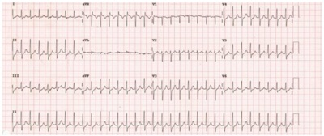
A Cardioversão elétrica sincronizada.
B Adenosina endovenosa.
C Cardioversão elétrica não sincronizada.
D Amiodarona endovenosa.
E Uso combinado de betabloqueador e bloqueador dos canais de cálcio endovenoso.
Questão 375 · Clínica Médica · 4000193946Homem, 47 anos, previamente hipertenso em uso irregular das medicações, foi admitido no pronto atendimento com quadro de dor torácica intensa com irradiação para dorso. Alega parestesia de membro superior esquerdo associada. A dor teve início no momento em que trabalhava como mecânico. Apresentava PA em MSE de 185 x 120 mmHg e em MSD de 225 x 135 mmHg. Realizado Ultrassom à beira leito, sendo notada linha de dissecção intimal em aorta ascendente e arco aórtico. Sobre o caso clínico acima, diagnóstico e tratamento, assinale a alternativa correta.
A A dissecção de aorta é uma emergência hipertensiva e o seu tratamento inicial é idealmente realizado com medicação endovenosa como nitroglicerina. A queda da PA deve ser gradual, de até 25% na primeira hora.
B A dissecção de aorta é uma urgência hipertensiva, o seu tratamento inicial é idealmente realizado com Nitroglicerina. A queda da PA deve ser gradual, de até 20 mmHg na primeira hora.
C A dissecção de aorta é uma emergência hipertensiva e o seu tratamento inicial é idealmente realizado com nitroprussiato de sódio e betabloqueador endovenosos. A queda da PA deve ser mais rápida, tendo como objetivo PAS<120 mmHg em 20 minutos.
D A dissecção de aorta é considerada uma pseudocrise hipertensiva, com o aumento da PA decorrente da dor torácica. A PA deve ser controlada a partir do controle da dor, podendo utilizar morfina como tratamento.
E A dissecção de aorta é uma urgência hipertensiva, podendo a PA ser controlada com medicamentos orais, como anlodipino. A queda da PA deve ser gradual, de até 25% na primeira hora.
Questão 376 · Clínica Médica · 4000193945Mulher, 22 anos, previamente hígida, procura o PSF com história de cefaleia, febre e mialgia intensa há 2 dias. Realizados exames, tendo como diagnóstico dengue. A respeito dessa doença, qual desses não é um sinal de alerta?
A Hipotensão arterial.
B Dor abdominal difusa.
C Redução significativa do débito urinário.
D Alteração do nível de consciência.
E Redução do hematócrito a despeito de hidratação
Questão 377 · Clínica Médica · 4000193944Pacientes portadores de insu ciência cardíaca com fração de ejeção reduzida possuem grandes benefícios de alguns medicamentos, dentre eles, alguns betabloqueadores, que salvo exceções, devem ser indicados a esses pacientes. Qual betabloqueador é Beta-1 seletivo, porém não é indicado nos casos de Insu ciência Cardíaca com fração de ejeção reduzida?
A Atenolol.
B Carvedilol.
C Bisoprolol.
D Metoprolol.
E Propranolol
Questão 378 · Clínica Médica · 4000193943A pericardite é caracterizada por in amação do pericárdio, podendo levar a um importante derrame pericárdico e sintomas como dor torácica e dispneia. O exame físico pode ser caracterizado pela presença de atrito pericárdico à ausculta cardíaca e o seu prognóstico depende do acometimento e da causa. Sabendo disso, marque a alternativa que apresenta a causa mais comum de pericardite.
A Doença bacteriana.
B Doença fúngica.
C Neoplasias.
D Doença viral.
E Lúpus eritematoso sistêmico.
Questão 379 · Clínica Médica · 4000193942Mulher, 56 anos, portadora de doença de Chagas, hipertensão arterial sistêmica, em uso regular de anti- hipertensivos, foi admitida no Box de emergência do pronto atendimento devido síncope. Alega que apresenta os sintomas cerca de duas vezes ao mês, com início há cerca de seis meses, sem procura médica anteriormente. O quadro é súbito, com duração em média de 30 segundos, não dando tempo de apoiar-se, o que sempre leva a paciente a machucar. No momento, a paciente alega sonolência e dor torácica leve, porém nega tontura, vertigem, dispneia. PA: 140 x 90 mmHg em ambos braços. Realizado eletrocardiograma: De acordo com o caso clínico, é correto afirmar que:

A É um caso de taquicardia ventricular com pulso pelos critérios de Brugada e Vereckei. A paciente deve ser submetida à cardioversão elétrica sincronizada como conduta inicial.
B É um caso de taquicardia ventricular com pulso pelos critérios de Brugada. A paciente deve ser submetida à cardiodesfibrilação como conduta inicial.
C É um caso de taquicardia ventricular do tipo torsades points. A paciente deve ser submetida à cardiodesfibrilação como conduta inicial.
D É um caso de taquicardia supraventricular com aberrância de condução pelos critérios de Brugada e Vereckei. A paciente deve ser submetida à cardioversão elétrica sincronizada como conduta inicial.
E É um caso de taquicardia supraventricular com aberrância de condução pelos critérios de Brugada e Vereckei. A paciente deve ser submetida inicialmente à manobra vagal como tentativa de reversão do ritmo. Caso não haja resposta, deve ser realizada Adenosina endovenosa.
Questão 380 · Clínica Médica · 4000193941Idosa, 74 anos, previamente portadora de hipertensão arterial, em uso regular de medicamentos, foi admitida no pronto atendimento com quadro de tosse, dispneia e febre termometrada. À ausculta pulmonar, foram notados estertores creptantes em base direita, além de febre (Tax: 38,1°C) e taquipneia (FR: 29 irpm). Foi diagnosticada com pneumonia adquirida na comunidade. De acordo com o diagnóstico mencionado, qual dos parâmetros abaixo não é utilizado nos critérios de internação?
A Ureia sérica.
B Pressão arterial.
C Insuficiência cardíaca.
D Frequência respiratória.
E Idade.
Questão 381 · Clínica Médica · 4000193940O tratamento de tuberculose pulmonar é longo, e requer acompanhamento para avaliação de progressão da doença, assim como efeitos colaterais dos medicamentos utilizados. À respeito desses medicamentos, qual aquele mais relacionado com o efeito adverso de artralgia e rabdomiólise?
A Rifampcina.
B Isoniazida.
C Pirazinamida.
D Etambutol.
E Etionamida.
Questão 382 · Clínica Médica · 4000193939Hipotireoidismo subclínico é caracterizado por valor sérico de TSH acima do valor de referência e níveis de hormônio tireoideano dentro do valor de referência. Raramente apresenta sinais e sintomas. De acordo com o hipotireoidismo subclínico, assinale a alternativa que não representa uma necessidade de tratamento com levotiroxina.
A TSH ≥ 10 mIU/L.
B Anticorpos antitireoideanos positivos.
C Dislipidemia.
D Doença arterial coronariana.
E Idade > 65 anos.
Questão 383 · Clínica Médica · 4000193938Mulher, 43 anos, hipertensa e obesa, em uso regular de Losartana 50mg, duas vezes ao dia, e hidroclorotiazida 25mg, uma vez ao dia, realizou rotina laboratorial, sendo evidenciada hemoglobina glicosilada de 7%, portanto foi diagnosticada com diabetes mellitus. Das classes de hipoglicemiantes abaixo, qual aquela com maior capacidade de levar a eventos de hipoglicemia?
A Sulfonilureia.
B Inibidores da SGLT2.
C Inibidores da DPP4.
D Análogos da GLP-1.
E Biguanida.
Questão 384 · Clínica Médica · 4000193937Manifestações cutâneas, serosites, alopécia, manifestações neurológicas e outras, podem ser sintomas do lúpus eritematoso sistêmico. Qual o anticorpo mais sensível e o mais específico dessa patologia, respectivamente?
A Anti-Ro e FAN.
B FAN e Anti-SM.
C Anti-CCP e FAN.
D FAN e Anti-CCP.
E FAN e Anti-Ro.
Questão 385 · Clínica Médica · 4000193936C.M.A, 13 anos, sexo feminino, procurou atendimento no PSF após admissão hospitalar na qual, segundo a paciente, apresentou diagnóstico de febre reumática. Critérios de Jones foram criados para realizar o diagnóstico dessa patologia. De acordo com esses critérios, a paciente deve possuir faringoamigdalite documentada ou ASLO em ascensão, além de manifestações que podem ser classificadas como critério menor ou maior. Das manifestações descritas abaixo, qual a considerada um critério menor?
A Cardite.
B Nódulo subcutâneo.
C Cefaleia.
D Poliartrite migratória.
E Febre.
Questão 386 · Clínica Médica · 4000193935Mulher, 29 anos, hipertensa, obesa e com história de procuras em pronto-atendimentos por crises álgicas devido nefrolitíase, procura atendimento com quadro de cefaleia. Refere que tem característica latejante, frontotemporal, associada à fotofobia e à fonofobia, além de náuseas. Alega sono satisfatório e nega sintomas como ansiedade e depressão. Apresenta cerca de 07 (sete) episódios ao mês. Nesse caso, das alternativas abaixo, qual a medicação melhor indicada para o tratamento profilático?
A Amitriptilina.
B Nortriptilina.
C Propranolol.
D Flunarizina.
E Topiramato.
Questão 387 · Dermatologia · 4000193898Marcelo, um homem de 32 anos, procurou atendimento na Unidade Básica de saúde referindo caroços no braço direito. Ele a rma que, há 1 mês, surgiu uma lesão na mão direita e, posteriormente, cresceram outros nódulos pelo antebraço ipsilateral. No exame físico, você percebe nódulos, em trajeto linear, pelo antebraço direito. Pensando na principal hipótese diagnóstica, assinale a alternativa correta.
A A doença pode ser transmitida por gatos e o agente etiológico é
B O tratamento deve ser realizado com penicilina benzatina por três semanas
C Por se tratar de uma infecção fúngica, o itraconazol faz parte da primeira linha de tratamento.
D A hemocultura pode ajudar na confirmação diagnóstica.
Questão 388 · Neurologia · 4000193897Mulher, 30 anos, procura atendimento por queixa de cefaleia há 8 horas. A paciente não tem antecedente de cefaleia, nem de outras patologias, e faz uso apenas de anticoncepcional oral combinado. Refere que a cefaleia é de forte intensidade e atingiu máxima intensidade em poucos segundos. No momento da avaliação apresenta dor pulsátil, unilateral, associada a foto e fonofobia, náuseas e vômitos com intensidade 8/10. Ao exame físico, a paciente apresenta PA 120 x 80 mmHg, FC 80 bpm, FR 18 irpm. Está consciente e orientada, sem dé cit visual ou de nervos cranianos. Não há dé cit de força ou sensibilidade, os reflexos estão preservados e a marcha, sem alterações. Há rigidez de nuca à avaliação. Considerando o caso clínico, quais são a principal hipótese diagnóstica e a conduta?
A Enxaqueca sem aura e uso de topiramato.
B Hemorragia subaracnóidea e TC de crânio.
C Meningite viral e iniciar aciclovir imediatamente.
D Enxaqueca sem aura e uso de sumatriptano.
Questão 389 · Reumatologia · 4000193896Mulher de 31 anos procura a unidade básica de saúde com relato de mal-estar e dor nas mãos e punhos há 2 meses. Nega comorbidades prévias. Ao exame físico: úlcera indolor em palato duro e artrite de 2ª e 3ª metacarpofalangeanas bilaterais e punhos. Foram solicitados exames laboratoriais que mostram: Hb 12,1 mg/dL, leucócitos 2.500/mm³, plaquetas 112.000/ mm³, creatinina 0,8 mg/dL, ureia 30 mg/dL, PCR 7 mg/L (VN = 5 mg/L), VHS 36 mm (VN = 20 mm), fator reumatoide reagente, FAN padrão nuclear pontilhado grosso 1/320. Qual é o anticorpo esperado nessa paciente?
A Anti-CCP.
B Anti-Ro.
C Anti-Sm.
D Anti-Scl-70.
Questão 390 · Cardiologia · 4000193895Uma paciente de 64 anos foi encaminhada ao ambulatório de cardiologia para ajuste de seus medicamentos. Iniciou o tratamento de hipertensão há 10 anos, após internação por um episódio de urgência hipertensiva, quando apresentou níveis pressóricos de 190 x 110 mmHg. Também faz tratamento para dislipidemia, descoberta na ocasião. Está em uso de enalapril 20 mg/dia, anlodipina 10 mg/dia e sinvastatina 40 mg/dia. Seus exames de sangue revelam um colesterol total = 180 mg/dl; HDL colesterol = 57 mg/dl; LDL colesterol = 102 mg/dl; VLDL colesterol = 70 mg/dl e triglicerídeos = 105 mg/ dl. Exame físico: PA =141 x 92 mmHg, FC: 78 bpm. O eletrocardiograma mostra sobrecarga de câmaras esquerdas. Ausculta cardíaca e pulmonar sem alterações. Assinale a melhor conduta para esse caso:
A Manter os anti-hipertensivos nas doses atuais. Aumentar a dose da sinvastatina para 80 mg/dia.
B Associar hidroclorotiazida 25 mg e trocar sinvastatina por rosuvastatina 10 mg.
C Aumentar a dose do enalapril para 40 mg/dia e trocar a sinvastatina por ezetimibe 10 mg.
D Aumentar a dose do enalapril para 40 mg/dia e trocar a sinvastatina por rosuvastatina 40 mg.
Questão 391 · Gastroenterologia · 4000193894Paciente do sexo feminino, 25 anos, procurou atenção básica por apresentar, há 4 meses, diarreia com muco e sangue. Refere perda de 8 kg no período, associado à dor lombar, pior no início do dia com melhora progressiva ao longo do tempo. Usuária de anticoncepcional oral e levotiroxina. Refere ser sedentária e fumar de 2-3 cigarros/dia. Trouxe alguns exames que evidenciaram: Hb = 10 mg/dL; leucócitos = 18000/mm³ ; plaquetas: 400000/mm³; PCR = 100 mg/ dL; VHS = 50mm. A respeito da hipótese diagnóstica mais provável, assinale a alternativa correta.
A O hábito de fumar é um fator de risco para o diagnóstico em questão.
B A paciente está fora da faixa etária mais comumente afetada pela doença.
C O uso de anticoncepcional oral teoricamente seria um fator protetor para o diagnóstico em questão.
D A doença em questão afeta de maneira muito similar ambos os gêneros.
Questão 392 · Inf ectologia · 4000193893Um menino de cinco anos de idade é levado ao hospital por apresentar febre elevada, mialgia, cefaleia e vômitos. Seus pais informam que o início dos sintomas ocorreu há dois dias. O exame físico evidenciou os seguintes achados: mau estado geral, apatia, frequência cardíaca = 129bpm, pressão arterial = 60x25mmHg, saturação periférica de oxigênio = 88%, sinal de Brudzinski presente e petéquias em membros inferiores. Não havia icterícia e a ausculta cardiopulmonar era normal. Assinale a alternativa com a melhor hipótese diagnóstica e o tratamento.
A Dengue e hidratação intravenosa com soro fisiológico.
B Meningite meningocócica e ceftriaxona.
C Influenza
D Leptospirose e penicilina cristalina.
Questão 393 · Hematologia · 4000193892Paciente do sexo masculino, 41 anos, previamente hígido, procurou UBS por queixa de astenia a alguns meses. Além disso, queixa-se de indisposição gástrica intermitente, acompanhada de parestesia em extremidades. No hemograma, apresenta uma Hb 7,8g/dl, acompanhada de VCM: 120, sem outras alterações. Qual é o diagnóstico mais provável dessa paciente?
A Falta de fator intrínseco
B Deficiência de ácido fólico
C Deficiência de ferro
D Síndrome mielodisplásica
Questão 394 · Nef rologia · 4000193891Mulher, 23 anos, hígida, é atendida por queixa de febre, calafrios, disúria e dor lombar direita há 3 dias, com piora progressiva. Ao exame, apresenta-se subfebril (T 37,5oC) – PA 124x72mmHg – FC 88bpm – FR 15ipm – Sat 98% - Ausculta pulmonar e cardíaca sem alterações – Dor a punhopercussão lombar direita. Coletados exames laboratoriais que evidenciam: Creatinina 0,8mg/dL – Ureia 34mg/dL – Na 141 mEq/L – K 4,4mEq/L – Hb 13,5 g/dL – Leucócitos 13.500 (Neutró los 8.200 - Linfócitos 2.300 - Eosinó los 870) – Urina: Leucócitos 45.000 – Hemácias 6.000 – Proteína ausente – Urocultura: coletada. Paciente foi liberada com tratamento ambulatorial com uso de ciprofloxacino. Após 5 dias, ela retorna com recrudescência da febre que havia cessado, associada a rash cutâneo eritematoso. São coletados novos exames laboratoriais que evidenciam: Creatinina 2,3mg/dL – Ureia 86mg/dL – Na 140 mEq/L – K 4,6mEq/L – Hb 13,0 g/dL – Leucócitos 12.600 (Neutró los 6.200 - Linfócitos 1.980 - Eosinó los 2.970) – Urina: Leucócitos 24.000 – Hemácias 6.000 – Proteína ausente – Urocultura (coletada na visita anterior): E. coli sensível a ciprofloxacino, nitrofurantoína, sulfametoxazol-trimetoprim. Qual é a hipótese diagnóstica para o quadro clínico?
A Infecção urinária
B Glomerulonefrite difusa aguda
C Nefrite intersticial aguda
D Necrose tubular aguda
Questão 395 · Pneumologia · 4000193890Paciente de 60 anos, tabagista 50 maços/ano, queixa-se de dispneia para caminhar 100 metros. Possui uma espirometria que evidencia uma relação VEF1/CVF pós-broncodilatador < 0,7. Ao avaliar as possibilidades terapêuticas, são medidas capazes de reduzir a mortalidade na doença pulmonar obstrutiva crônica, EXCETO?
A Oxigenoterapia domiciliar.
B Cessação tabágica.
C Antimuscarínico de ação longa.
D Cirurgia de redução volumétrica pulmonar.
Questão 397 · Crise Única e Crise Sintomática Aguda Provocada · Complicações e Prognóstico · Convulsão · 4000193714Mulher, 20 anos de idade, dá entrada na Unidade de Pronto Atendimento duas horas após episódio de crise tônico-clônica generalizada. Refere ser o segundo episódio, tendo o primeiro ocorrido há dois meses. Nega comorbidades, trauma, uso de álcool, tabaco ou drogas ilícitas. Faz uso apenas de contraceptivo oral. Ao exame, apresenta-se em bom estado geral, sinais vitais estáveis. Exame segmentar e neurológico sem achados. Realizada tomografia computadorizada de crânio sem alterações. Diante do caso clínico, com relação ao diagnóstico mais provável, pode-se afirmar:
A Durante ou após uma crise, pode ocorrer morte súbita inesperada decorrente de apneia ou arritmia.
B As crises sempre ocorrem após um fator desencadeante, como a estimulação luminosa intermitente.
C Apesar de haver interferência na qualidade de vida a mortalidade é equiparável à da população geral.
D As crises geralmente deixam sequelas neurológicas, levando a déficit cognitivo.
Questão 398 · Neuroimagem em Epilepsia · Eletroencef alograma · 4000193713Mulher, 20 anos de idade, dá entrada na Unidade de Pronto Atendimento duas horas após episódio de crise tônico-clônica generalizada. Refere ser o segundo episódio, tendo o primeiro ocorrido há dois meses. Nega comorbidades, trauma, uso de álcool, tabaco ou drogas ilícitas. Faz uso apenas de contraceptivo oral. Ao exame, apresenta-se em bom estado geral, sinais vitais estáveis. Exame segmentar e neurológico sem achados. Realizada tomografia computadorizada de crânio sem alterações. Com base no quadro descrito, indique o exame complementar mais adequado neste momento:
A Ressonância nuclear magnética de crânio.
B Eletroencefalograma.
C Angiotomografia computadorizada de crânio.
D Exame de líquor.
Questão 399 · Interações Medicamentosas e Associações · 4000193712Mulher, 20 anos de idade, dá entrada na Unidade de Pronto Atendimento duas horas após episódio de crise tônico-clônica generalizada. Refere ser o segundo episódio, tendo o primeiro ocorrido há dois meses. Nega comorbidades, trauma, uso de álcool, tabaco ou drogas ilícitas. Faz uso apenas de contraceptivo oral. Ao exame, apresenta-se em bom estado geral, sinais vitais estáveis. Exame segmentar e neurológico sem achados. Realizada tomografia computadorizada de crânio sem alterações. Indique a melhor conduta terapêutica a ser realizada, neste momento, na paciente:
A Aguardar a realização do exame complementar para prescrição de fármaco.
B Expectante, sendo prescindível o início de medicação anticonvulsivante.
C Prescrever diazepam 10mg, via intravenosa, como primeira escolha medicamentosa.
D Iniciar anticonvulsivante, considerando o uso do contraceptivo oral na escolha do fármaco.
Questão 400 · Arterite de Células Gigantes · Cef aleias Secundárias · Diagnóstico · 4000193711Mulher, 70 anos de idade, procura atendimento clínico por quadro de cefaleia intensa em região temporal, há 4 meses. Queixa-se ainda de fadiga importante, perda da acuidade visual e perda ponderal não aferida. Ao exame, apresentase em regular estado geral, emagrecida, subfebril; demais sinais vitais estáveis. Apresenta alodínia em região de couro cabeludo e claudicação de mandíbula. Considerando o caso clínico descrito, indique o diagnóstico mais provável para o paciente:
A Neuromielite óptica.
B Arterite de células gigantes
C Cefaleia em salvas.
D Nevralgia do nervo trigêmeo.
Questão 401 · Arterite de Células Gigantes · Diagnóstico · 4000193710Mulher, 70 anos de idade, procura atendimento clínico por quadro de cefaleia intensa em região temporal, há 4 meses. Queixa-se ainda de fadiga importante, perda da acuidade visual e perda ponderal não aferida. Ao exame, apresentase em regular estado geral, emagrecida, subfebril; demais sinais vitais estáveis. Apresenta alodínia em região de couro cabeludo e claudicação de mandíbula. Indique o exame padrão-ouro para o diagnóstico mais provável:
A Ressonância magnética de crânio.
B Tomografia computadorizada de crânio.
C Biópsia da artéria temporal.
D Eletroencefalograma.
Questão 402 · Arterite de Células Gigantes · Manif estações clínicas · Tratamento · 4000193709Mulher, 70 anos de idade, procura atendimento clínico por quadro de cefaleia intensa em região temporal, há 4 meses. Queixa-se ainda de fadiga importante, perda da acuidade visual e perda ponderal não aferida. Ao exame, apresentase em regular estado geral, emagrecida, subfebril; demais sinais vitais estáveis. Apresenta alodínia em região de couro cabeludo e claudicação de mandíbula. Frente ao caso, indique a opção terapêutica mais adequada:
A Tramadol e oxigenioterapia.
B Analgésico comum e escalonar para opioides, conforme resposta.
C Carbamazepina, oxcarbamazepina ou gabapentina.
D Corticoterapia, imunossupressores e/ou imunobiológicos.
Questão 403 · Animais peçonhentos · 4000193708Mulher, 24 anos de idade, é atendida na Unidade de Pronto Atendimento 20 minutos após acidente na praia com um animal hidrozoário conhecido como caravela-portuguesa ( extensas placas urticariformes lineares em região posterior do tórax. Diante do caso e considerando as orientações do Ministério da Saúde, Indique a substância mais adequada a ser usada sobre a área afetada, ainda no local do acidente:
A Água mineral.
B Urina.
C Água de coco.
D Água do mar.
Questão 404 · Animais peçonhentos · 4000193707Mulher, 24 anos de idade, é atendida na Unidade de Pronto Atendimento 20 minutos após acidente na praia com um animal hidrozoário conhecido como caravela-portuguesa ( extensas placas urticariformes lineares em região posterior do tórax. Diante do caso e considerando as orientações do Ministério da Saúde, Identi que complicações que mais comumente se associam ao acidente com o animal peçonhento envolvido no caso:
A Convulsões e hemólise.
B Paraplegia e diarreia.
C Arritmia e anafilaxia.
D Necrose e insuficiência renal aguda.
Questão 405 · Animais peçonhentos · 4000193706Mulher, 24 anos de idade, é atendida na Unidade de Pronto Atendimento 20 minutos após acidente na praia com um animal hidrozoário conhecido como caravela-portuguesa ( extensas placas urticariformes lineares em região posterior do tórax. Diante do caso e considerando as orientações do Ministério da Saúde, Indique a conduta mais adequada, neste momento:
A Usar ácido acético a 5% tópico.
B Aplicar soro heterólogo intravenoso.
C Aplicar sulfadiazina de prata tópica.
D Aplicar glicerina líquida tópica.
Questão 406 · Cistite · Exame de urina · 4000193705Homem, 81 anos de idade, internado em enfermaria de hospital secundário por quadro de pneumonia, em uso de ceftriaxona. No 5o dia de internação, evoluiu com delirium hipoativo, hipotensão e febre. Foi realizado novo rastreio infeccioso, sendo diagnosticada infecção do trato urinário. A urocultura foi entregue ao médico com um problema de impressão, mas era possível ler “ESBL positivo”. Considerando o caso clínico descrito, indique, entre as bactérias citadas a que, mais provavelmente, cresceu na urocultura:
A Staphylococcus aureus.
B Proteus mirabilis.
C Klebsiella pneumoniae.
D Enterococcus sp.
Questão 407 · Mecanismos de resistência · 4000193704Homem, 81 anos de idade, internado em enfermaria de hospital secundário por quadro de pneumonia, em uso de ceftriaxona. No 5o dia de internação, evoluiu com delirium hipoativo, hipotensão e febre. Foi realizado novo rastreio infeccioso, sendo diagnosticada infecção do trato urinário. A urocultura foi entregue ao médico com um problema de impressão, mas era possível ler “ESBL positivo”. Identifique o significado de ESBL
A Enterobactéria produtora de betalactamase.
B Betalactamase de espectro estendido.
C Enterobactéria sensível à betalactamase.
D Betalactamase de baixo espectro.
Questão 408 · Inativação enzimática · Carbapenêmicos · 4000193703Homem, 81 anos de idade, internado em enfermaria de hospital secundário por quadro de pneumonia, em uso de ceftriaxona. No 5o dia de internação, evoluiu com delirium hipoativo, hipotensão e febre. Foi realizado novo rastreio infeccioso, sendo diagnosticada infecção do trato urinário. A urocultura foi entregue ao médico com um problema de impressão, mas era possível ler “ESBL positivo”. Indique à conduta mais adequada em relação à antibioticoterapia, neste momento:
A Manter apenas ceftriaxona.
B Associar vancomicina à ceftriaxona.
C Escalonar para piperacilina-tazobactam.
D Escalonar para meropenem.
Questão 409 · Diagnóstico · Apresentação Clínica · 4000193696Homem, 65 anos de idade, é levado ao Ambulatório de Cirurgia Geral com história de dor em epigástrio, de moderada intensidade, com piora à alimentação há dois meses. O paciente refere, também, hiporexia, alguns episódios de náuseas e vômitos e perda de peso (não mensurada) neste mesmo período. Relata tabagismo 30 cigarros/dia e etilismo social há 30 anos. Ao exame físico, regular estado geral, descorado +2/+4, ictérico +1/+4, FC: 72bpm, PA: 110x74mmHg; ausculta cardíaca e respiratória sem alterações; abdome um pouco distendido; ruídos hidroaéreos presentes, ácido; dor à palpação profunda de epigástrio, sem sinais de irritação peritoneal; palpado nódulo em região umbilical, medindo cerca de 1,0cm. Os exames laboratoriais iniciais apresentaram Hb: 10g/dL, Ht: 32%, Leucócitos totais: 9500células/mm³, Ureia: 35mg/dL, Creatinina: 1,0mg/dL, Na: 142mEq/L, K:4,0mEq/L, Bilirrubinas totais 3,5mg/dL (direta: 2,5mg/dL e indireta: 1,0mg/dL). Diante do caso clínico e dos exames complementares, indique a principal suspeita diagnóstica que justi que o quadro clínico do paciente:
A Hepatite crônica alcoólica.
B Pancreatite crônica alcoólica.
C Linfoma não-Hodgkin.
D Câncer gástrico.
Questão 410 · Diagnóstico · 4000193695Homem, 65 anos de idade, é levado ao Ambulatório de Cirurgia Geral com história de dor em epigástrio, de moderada intensidade, com piora à alimentação há dois meses. O paciente refere, também, hiporexia, alguns episódios de náuseas e vômitos e perda de peso (não mensurada) neste mesmo período. Relata tabagismo 30 cigarros/dia e etilismo social há 30 anos. Ao exame físico, regular estado geral, descorado +2/+4, ictérico +1/+4, FC: 72bpm, PA: 110x74mmHg; ausculta cardíaca e respiratória sem alterações; abdome um pouco distendido; ruídos hidroaéreos presentes, ácido; dor à palpação profunda de epigástrio, sem sinais de irritação peritoneal; palpado nódulo em região umbilical, medindo cerca de 1,0cm. Os exames laboratoriais iniciais apresentaram Hb: 10g/dL, Ht: 32%, Leucócitos totais: 9500células/mm³, Ureia: 35mg/dL, Creatinina: 1,0mg/dL, Na: 142mEq/L, K:4,0mEq/L, Bilirrubinas totais 3,5mg/dL (direta: 2,5mg/dL e indireta: 1,0mg/dL). Com base no quadro, indique o exame complementar mais adequado para a confirmação do diagnóstico:
A Punção por agulha grossa do fígado guiada por ultrassonografia.
B Tomografia computadorizada do abdome.
C Endoscopia digestiva alta.
D Videolaparoscopia diagnóstica.
Questão 411 · Apresentação Clínica · 4000193694Homem, 65 anos de idade, é levado ao Ambulatório de Cirurgia Geral com história de dor em epigástrio, de moderada intensidade, com piora à alimentação há dois meses. O paciente refere, também, hiporexia, alguns episódios de náuseas e vômitos e perda de peso (não mensurada) neste mesmo período. Relata tabagismo 30 cigarros/dia e etilismo social há 30 anos. Ao exame físico, regular estado geral, descorado +2/+4, ictérico +1/+4, FC: 72bpm, PA: 110x74mmHg; ausculta cardíaca e respiratória sem alterações; abdome um pouco distendido; ruídos hidroaéreos presentes, ácido; dor à palpação profunda de epigástrio, sem sinais de irritação peritoneal; palpado nódulo em região umbilical, medindo cerca de 1,0 cm. Os exames laboratoriais iniciais apresentaram Hb: 10g/dL, Ht: 32%, Leucócitos totais: 9500células/mm³, Ureia: 35mg/dL, Creatinina: 1,0mg/dL, Na: 142mEq/L, K:4,0mEq/L, Bilirrubinas totais 3,5mg/dL (direta: 2,5mg/dL e indireta: 1,0mg/dL). Identifique, entre os achados da história clínica e do exame físico do paciente, o fator de pior prognóstico:
A Anemia.
B Nódulo palpável em região umbilical.
C Icterícia.
D Perda de peso.
Questão 412 · Investigação diagnóstica admissional · 4000193672Menino, 5 anos de idade, é trazido à Emergência com relato de que estava na escola, apresentou dor abdominal, vomitou e passou a manifestar sonolência e letargia importantes. A professora assustou-se ao observar respirações longas e profundas. Ao interrogatório sistemático, a genitora informou que tem observado cansaço e alguma perda de peso há, aproximadamente, um mês. No momento, Peso: 16,8Kg. Ao exame, Escore de Glasgow (modi cado para crianças): 11; Oximetria de pulso: 99% em uso de O₂ sob máscara; tempo de enchimento capilar: 3s; FC: 140bpm; PA: 90x50mmHg. Considerando o caso clinico, indique os exames essenciais que devem ser realizados de imediato, ainda na Emergência:
A Hemograma e Estudo do Líquor.
B Hemograma e Sumário de Urina.
C Glicemia capilar, Cetonúria e Hemogasometria.
D Glicemia capilar, Hemograma e Hemoculturas.
Revisar: possível letra faltando em enunciado
Questão 413 · Apresentação clínica · 4000193671Menino, 5 anos de idade, é trazido à Emergência com relato de que estava na escola, apresentou dor abdominal, vomitou e passou a manifestar sonolência e letargia importantes. A professora assustou-se ao observar respirações longas e profundas. Ao interrogatório sistemático, a genitora informou que tem observado cansaço e alguma perda de peso há, aproximadamente, um mês. No momento, Peso: 16,8Kg. Ao exame, Escore de Glasgow (modi cado para crianças): 11; Oximetria de pulso: 99% em uso de O₂ sob máscara; tempo de enchimento capilar: 3s; FC: 140bpm; PA: 90x50mmHg. Indique o dado de história clinica que, se presente, reforçaria a principal suspeita diagnóstica por sua especificidade:
A Febre.
B Poliúria.
C Inapetência.
D Hiperatividade
Revisar: possível letra faltando em enunciado
Questão 414 · Tratamento nas crianças e adolescentes · 4000193670Menino, 5 anos de idade, é trazido à Emergência com relato de que estava na escola, apresentou dor abdominal, vomitou e passou a manifestar sonolência e letargia importantes. A professora assustou-se ao observar respirações longas e profundas. Ao interrogatório sistemático, a genitora informou que tem observado cansaço e alguma perda de peso há, aproximadamente, um mês. No momento, Peso: 16,8Kg. Ao exame, Escore de Glasgow (modi cado para crianças): 11; Oximetria de pulso: 99% em uso de O₂ sob máscara; tempo de enchimento capilar: 3s; FC: 140bpm; PA: 90x50mmHg. Especifique as condutas terapêuticas essenciais para esse paciente, imediatamente após a avaliação inicial:
A Reposição volêmica e administração de dobutamina.
B Oxigenoterapia e administração de dobutamina.
C Reposição volêmica e administração de insulina.
D Monitorização do ECG e antibioticoterapia empírica.
Revisar: possível letra faltando em enunciado
Questão 415 · Quadro clínico · 4000193660Jovem, 15 anos de idade, é acompanhado na UBS com história de diarreia intermitente há 8 meses. Tem episódios de até 6 dejeções dia, com muco e sangue, durando, no máximo, 2 dias, cando até 15 dias sem diarreia. Nega correlação com consumo de determinados alimentos. Morador de zona rural, costuma tomar banho no pequeno açude próximo da sua casa. Consome água fervida e usa fossa seca para as dejeções. Apresenta ao exame físico discreta hepatomegalia sem outras alterações. Fez tratamento empírico com albendazol, sem melhora. Realizou parasitológico de fezes que evidenciou ovos de Considerando a descrição do caso, indique, entre as outras parasitoses, a que poderia ser responsável pelo quadro:
A Giardíase.
B Tricuríase.
C Amebíase.
D Estrongiloidiase.
Questão 416 · Tratamento · 4000193659Jovem, 15 anos de idade, é acompanhado na UBS com história de diarreia intermitente há 8 meses. Tem episódios de até 6 dejeções dia, com muco e sangue, durando, no máximo, 2 dias, cando até 15 dias sem diarreia. Nega correlação com consumo de determinados alimentos. Morador de zona rural, costuma tomar banho no pequeno açude próximo da sua casa. Consome água fervida e usa fossa seca para as dejeções. Apresenta ao exame físico discreta hepatomegalia sem outras alterações. Fez tratamento empírico com albendazol, sem melhora. Realizou parasitológico de fezes que evidenciou ovos de Indique o fármaco disponível, atualmente no Brasil, para tratamento de primeira linha por seu per l de segurança quanto aos efeitos colaterais:
A Oxamniquine.
B Praziquantel.
C Nitazoxanida.
D Benzonidazol.
Questão 417 · Paralisia Facial Perif érica · Paralisia f acial perif érica · 4000193654Mulher de 42 anos acorda com uma sensação de "dormência" facial à esquerda. Após cerca de 2 horas, ela desenvolve otalgia do lado esquerdo, hiperacusia e desconforto facial. O quadro seguiu-se com paralisia facial do lado esquerdo da face, com desvio da rima labial, fraqueza facial e assimetria progredindo para paralisia ácida completa no início da noite. Ao exame físico, a aparência de repouso da face esquerda demonstra ptose do supercílio, ssura palpebral alargada, apagamento do sulco nasolabial esquerdo e mau posicionamento inferior da comissura oral esquerda. Há completa ausência de movimento da sobrancelha, fechamento incompleto do olho com esforço total e perda de sorriso, rosnado e franzimento do lábio no lado afetado. Sem outras alterações no exame físico e a paciente não apresenta comorbidades ou faz uso de medicações. Ao comparecer ao serviço de pronto atendimento, a medicação que deve ser prescrita é a(o)
A prednisona.
B alteplase.
C heparina.
D ácido acetil salicílico.
E tenecteplase.
Questão 418 · Insônia · Transtornos do Humor · Transtornos Ansiosos · 4000193651Paciente do sexo feminino, 45 anos, procura atendimento médico devido à di culdade de iniciar o sono. Ela fez tratamento para depressão no passado e está na perimenopausa. Ela relata que bebe sua última xícara de café às 21h, antes de se deitar às 22h, e ca vendo os minutos passarem no relógio por cerca de uma hora até dormir. Seu exame físico e exames laboratoriais estão normais. Além de orientar medidas de higiene do sono e técnicas de relaxamento, o médico pode considerar a prescrição de
A diltiazem.
B diazepam.
C difenidramina.
D zolpidem.
E zolendronato.
Revisar: possível letra faltando em enunciado
Questão 419 · Rastreamento · Drogas antidiabéticas não insulina · Patogênese e evolução da doença · 4000193650Homem de 55 anos está em acompanhamento no serviço de saúde devido à preocupação em ter diabetes. Apresenta histórico familiar com pai e tios diabéticos, sendo que o pai sofreu amputação de membro inferior devido à doença. O paciente é completamente assintomático, não toma medicamentos de uso contínuo e não apresenta comorbidades. Apresenta índice de massa corpórea de 37 kg/m², sem quaisquer outros achados relevantes no exame físico. Trouxe os seguintes exames: Segundo as recomendações da Sociedade Brasileira de Diabetes, este paciente apresenta
A diabetes e deve se iniciar metformina.
B diabetes e pode ser considerada a introdução de insulina.
C pré-diabetes e pode ser considerada a introdução de metformina.
D pré-diabetes e deve ser encaminhado para cirurgia bariátrica.
E exames normais e não há necessidade de medicação.
Questão 420 · Tratamento · 4000193648Homem de 40 anos vai ao médico devido a crise de artrite em tornozelo esquerdo há 1 dia. Relata 3 episódios prévios, o primeiro acometendo o joelho esquerdo, o segundo acometeu o tornozelo direito e o último a primeira articulação metatarsofalangeana esquerda. Os episódios anteriores foram tratados com automedicação de formulação de corticoide intramuscular, mas como soube, por meio de amigos, que estas injeções poderiam causar sérios efeitos colaterais, decidiu procurar atendimento no episódio atual. O paciente relata fazer uso frequente de carne vermelha e bebida alcoólica, além de ser hipertenso, em uso de hidroclorotiazida 25mg/dia. Nega outras comorbidades. Seu estado geral é bom e o exame físico é normal, exceto pela presença de artrite em tornozelo esquerdo. A medicação que pode ser útil no quadro atual é a(o)
A cloroquina.
B colchicina.
C metotrexato.
D azatioprina.
E penicilamina.
Questão 421 · Dor · 4000193647Paciente do sexo feminino, 60 anos, fraturou seu punho esquerdo (escafoide e rádio distal) em uma queda. Um mês após a aplicação do gesso, ela desenvolveu dor em queimação na face radial do punho e dores agudas na palma da mão esquerda, que aumentavam com os movimentos do punho. A paciente também se queixa de sensibilidade excessiva a estímulos não nocivos e a estímulos nocivos na região volar e lateral do punho com inchaço moderado e eritema local. Ela teve di culdade para reconhecer os dedos tocados com os olhos fechados e sentia que sua mão tinha o dobro do tamanho real. O diagnóstico a ser considerado é
A gota.
B pseudogota.
C síndrome de dor complexa regional.
D mononeuropatia múltipla.
E doença de Behçet.
Questão 422 · Disf unção erétil · Redução da libido · 4000193646Paciente do sexo masculino, 53 anos, apresenta queixa de redução da libido iniciada há 6 meses, com perda gradual das ereções matinais. Ele é casado há 20 anos e tem 3 lhos. Ele nega lesões ou traumas testiculares, assim como nega ginecomastia ou galactorreia. Não faz uso de medicações e não apresenta comorbidades ou anormalidades no exame físico. O médico assistente poderia solicitar, como exame inicial nesta investigação,
A ressonância magnética de glândulas adrenais.
B ultrassonografia testicular.
C ultrassonografia com doppler de vasos penianos.
D estrona total sérica.
E testosterona total sérica.
Questão 423 · Tratamento · Diagnóstico · 4000193645Homem de 70 anos, residente em asilo, procurou atendimento médico devido à história de 2 meses de pápulas eritematosas intensamente pruriginosas em seu tronco, virilha e membros. Relata que o prurido piora à noite. Ele foi tratado com esteroides tópicos e anti-histamínicos orais sem apresentar melhora. Outros residentes da instituição asilar apresentam queixas semelhantes. Considerando a principal hipótese diagnóstica, o tratamento indicado para a situação descrita é a(o)
A permetrina tópica.
B cetoconazol tópico.
C prednisona oral.
D fluconazol oral.
E colchicina oral.
Questão 424 · Prof ilaxia TEVTEP · Principais doenças associadas a plaquetose e plaquetopenia · 4000193644Paciente de 73 anos com adenocarcinoma de pâncreas metastático em tratamento, interna por pneumonia. Está no sexto dia de antimicrobiano venoso quando apresenta plaquetas de 60.000. Previamente apresentava plaquetas normais. A medida mais importante a ser tomada neste momento é
A suspender profilaxia química de TEV e manter sem profilaxia química.
B suspender profilaxia de TEV e indicar filtro de veia cava.
C manter profilaxia química de TEV sem alterações.
D suspender profilaxia química de TEV e solicitar antiPF4.
E iniciar warfarina.
Questão 425 · Biomarcadores · Exames Laboratoriais · 4000193643Paciente feminino de 35 anos, internada para cirurgia plástica, apresenta dor torácica e pontada em região precordial. Paciente faz uso de anticoncepcional oral há 5 anos. Nega outras comorbidades. Exame físico inalterado. ECG sem alterações. Troponina I com resultado de 0,09ng/mL (VR < 0,04ng/mL). A conduta mais apropriada no momento é
A considerar o resultado um falso positivo e observar.
B seguir seriando marcadores de necrose miocárdica para definição de conduta definitiva.
C proceder à anticoagulação, à antiagregação e ao cateterismo em 48 horas.
D proceder à estabilização clínica e ao teste de esforço assim que possível.
E proceder à anticoagulação e à angiotomografia.
Questão 426 · Cápsula Endoscópica · 4000193639Paciente do sexo masculino, de 63 anos, é internado por anemia. Exames mostram Hb 5,8g/dL VCM 65fL. ferritina de 3ng/mL. O paciente está clinicamente estável, normocárdico e eupneico. Refere já ter feito tratamento com ferro previamente, com melhora apenas temporária. Realizou endoscopia digestiva alta e baixa sem anormalidades. Não refere ter conseguido identi car melena nas fezes. Neste momento, o manejo adequado inclui
A iniciar reposição de ferro venoso, evitar transfusão de sangue, programar cápsula endoscópica.
B realizar transfusão de 2 concentrados de hemácias, iniciar ferro venoso e programar cápsula endoscópica.
C iniciar reposição de ferro venoso, evitar transfusão de sangue e pesquisar síndromes associadas à redução da absorção de ferro.
D realizar transfusão de 2 concentrados de hemácias, iniciar ferro venoso e pesquisar síndromes associadas à redução da absorção de ferro.
E iniciar ferro venoso e transfusão de 2 CH. Repetir EDA e EDB quando estável.
Questão 427 · Tratamento Neoadjuvante e Adjuvante · Tratamento Neoadjuvante · 4000193634Assinale a alternativa que corresponde à definição de tratamento neoadjuvante.
A Tratamento contra o câncer, complementar ao tratamento principal, realizado após este com intuito de melhorar a qualidade de vida dos pacientes.
B Tratamento oncológico oferecido antes do tratamento principal, que objetiva paliar os pacientes considerados incuráveis.
C Consiste no tratamento oncológico oferecido antes do tratamento principal, com objetivo de tratar micrometástases previstas e contribuir com uma maior efetividade do tratamento principal, muitas vezes permitindo a preservação de órgãos / estruturas importantes.
D Consiste no tratamento oncológico oferecido após o tratamento principal, com objetivo de tratar micrometástases previstas e contribuir com uma maior efetividade do tratamento principal, aumentando as chances de cura do paciente.
E Consiste no tratamento da doença prevista por alguma mutação, identificada antes mesmo de a doença existir.
Questão 428 · Tumor Estromal Gastrointestinal GIST · 4000193633Em relação às linfadenectomias, é correto afirmar:
A No câncer gástrico, recomenda-se, na maior parte do mundo, a realização de linfadenectomias a D3, por maiores evidências de aumento de sobrevida global sem maiores morbidades pósoperatórias.
B Nos tumores malignos de reto, deve-se proceder à linfadenectomia correspondente aos linfonodos da arcada dos vasos mesentéricos inferiores desde sua origem, bem como à linfadenectomia pélvica bilateralmente para todos os casos.
C A excisão total do mesorreto corresponde à linfadenectomia prevista para os tumores malignos do sigmoide e cólon esquerdo.
D Nas neoplasias de mama, deve-se proceder às linfadenectomias axilares ipsilaterais, independentemente do resultado da análise do linfonodo sentinela.
E Nos tumores estromais gastrointestinais (GIST) do estômago, por exemplo, não há necessidade de linfadenectomia de rotina.
Questão 429 · Patogêntese do Câncer Esporádico · 4000193632Assinale o exame que não deve ser utilizado com intuito de diagnóstico nas neoplasias de pâncreas.
A Tomografia computadorizada de abdome com contraste EV.
B Ultrassonografia de abdome total.
C Ultrassonografia endoscópica.
D Ressonância nuclear magnética de abdome superior.
E Marcador sérico Ca 19-9.
Questão 430 · Gastrinoma · Gastrinoma · 4000193631Das neoplasias endócrinas do pâncreas, a relacionada com a Síndrome de Zollinger Ellison é
A somatostatinoma.
B insulinoma.
C glucagonoma.
D gastrinoma.
E vipoma.
Questão 431 · Tratamento do Câncer Colônico · Tratamento das Metástases Hepáticas do CCR · 4000193630Em relação às metástases de neoplasias colorretais, é correto afirmar:
A Na presença de metástases hepáticas, a finalidade do tratamento passa a ser paliativa, mesmo que as metástases possam ser ressecadas.
B A ressecção de metástases hepáticas só deve ser indicada se estiverem localizadas em um dos lobos hepáticos e se os nódulos não extrapolarem o número de 3 e o tamanho de 5 cm.
C A ressecção de metástases hepáticas, quando factível, sempre deve ser tentada após o tratamento dos tumores primários e após os devidos ciclos de quimioterapia.
D As metástases ósseas de tumores colorretais seguem as mesmas recomendações de ressecção das metástases hepáticas.
E No tratamento cirúrgico das metástases hepáticas, o porte da hepatectomia é variável e deve respeitar apenas a obrigatoriedade de ressecção completa das lesões em 1 ou 2 tempos, associado à manutenção de parênquima funcionante que atenda às demandas metabólicas dos pacientes.
Questão 432 · Pancreatite Aguda · 4000193629Em relação à pancreatite aguda, é correto afirmar:
A A CPRE está indicada em todos os casos de pancreatite aguda grave, mesmo sem evidência de coledocolitíase, pois a papilotomia ajuda na drenagem da bile.
B A passagem de sonda nasoenteral deve ser realizada precocemente na maioria dos casos para dar repouso ao pâncreas, mesmo em casos de pancreatite aguda leve.
C Nos pacientes com pancreatite aguda grave a via de alimentação preferencial é a nutrição parenteral total.
D Nas necroses pancreáticas infectadas, cujo diagnóstico é dado por PAAF, o tratamento é cirúrgico, enquanto em necroses estéreis o tratamento é conservador.
E Todos os pacientes devem ser tratados em unidade de terapia intensiva.
Questão 433 · Controle Álgico · 4000193628Em relação à pancreatite crônica, é correto afirmar:
A A etiologia alcoólica não é a mais comum.
B O uso de IBP e enzimas pancreáticas de liberação intestinal estão indicados no tratamento da dor e da esteatorreia.
C O tratamento cirúrgico está indicado na dor abdominal crônica refratária ao uso de analgésicos.
D O tratamento cirúrgico não está indicado em pacientes com IMC acima de 30kg/m².
E Está indicada nutrição enteral para pacientes com dor crônica.
Questão 434 · Cólon · 4000193622Ponto de Gri th é uma região anatômica de suprimento vascular do cólon onde a circulação colateral é menos abundante. Assinale a alternativa que corresponde ao Ponto de Griffith.
A Linha pectínea.
B Ângulo hepático do cólon.
C Ângulo esplênico do cólon.
D Transição colorretal.
E Junção ileocecocólica.
Questão 435 · Artrite séptica · Artrite Séptica · 4000193611Criança de 7 anos de idade, com história de trauma em joelho direito há 3 dias durante jogo de futebol, evolui com febre e dor intensa no joelho, com edema, calor e rubor locais há 24 horas. Sobre o caso descrito, é correto afirmar:
A Deve-se investigar artrite idiopática juvenil solicitando fator reumatoide e FAN para definição do subtipo de doença.
B A principal hipótese diagnóstica é fratura, devendo-se imobilizar o membro e prescrever anti- inflamatório não hormonal e protetor gástrico.
C Deve ser realizada a punção articular e iniciada a antibioticoterapia parenteral com cobertura para estafilococo.
D Deve-se considerar o diagnóstico de artrite séptica e iniciar o tratamento com cefalexina oral por 4 semanas.
E Trata-se de artrite pós-traumática, devendo ser realizada ultrassonografia de joelho e iniciado anti- inflamatório não hormonal.
Questão 436 · Síndrome torácica aguda · 4000193604Escolar de 8 anos de idade, portador de anemia falciforme, apresenta dor em braço esquerdo há dois dias, de forte intensidade, que não melhora com analgésicos comuns. Há 3 dias com tosse produtiva. Ao exame, regular estado geral, hidratado, com palidez cutâneo-mucosa, ictérico (+/4+). Edema difuso em braço esquerdo, sem sinais ogísticos. Ausculta pulmonar com estertores creptantes em terço médio de hemitórax direito, saturação de 98% em ar ambiente, frequência respiratória 40 irpm. Em relação ao caso descrito, é correto afirmar:
A O paciente apresenta sinais de síndrome torácica aguda, devendo receber expansão venosa e analgesia.
B Trata-se de crise álgica desencadeada por pneumonia e o tratamento inclui hidratação, antibioticoterapia e analgésicos potentes.
C Deve-se iniciar antibiótico com boa cobertura para germes gram-positivos, hidratação venosa e analgésicos potentes.
D O paciente apresenta sinais de síndrome torácica aguda, devendo receber oxigênio suplementar e analgesia com opioides.
E Trata-se de crise álgica provavelmente desencadeada por artrite séptica, devendo ser iniciada a antibioticoterapia oral e reavaliação em 24 horas.
Questão 437 · Diagnóstico da púrpura trombocitopênica imunológica PTI · 4000193603Introdução à púrpura trombocitopênica imunológica PTI Sobre púrpura trombocitopênica imune, é correto afirmar:
A A presença de febre baixa e infarto ganglionar é comum, devendo ser excluídas doenças infecciosas.
B É caracterizada pela presença de trombocitopenia ou bicitopenia sem outras alterações sistêmicas.
C A transfusão de plaquetas é medida paliativa, estando indicada a contagem de plaquetas menor que 20 mil.
D Corticoterapia está indicada para todos os pacientes, independentemente da contagem de plaquetas, pois diminui o risco de complicações.
E É caracterizada pela presença de trombocitopenia isolada, sem outras manifestações sistêmicas.
Questão 438 · Imunodef iciências primárias · 4000193601Ao discutir o caso de um lactente com 60 dias de vida, admitido em unidade de terapia intensiva com sépsis secundária a abscesso cutâneo pós-picada de inseto, o preceptor questiona a seus residentes sobre os sinais de alerta para erro inato da imunidade em crianças. A resposta correta é
A duas ou mais otites por ano.
B quatro ou mais pneumonias por ano.
C candidíase oral em recém-nascidos.
D história de imunodeficiência na família.
E diarreia aguda.
Questão 439 · Quadro clínico · Tratamento · 4000193599Menina de 10 anos de idade levada à unidade de saúde com queixa de dor abdominal tipo cólica e diarreia com sangue e muco há 2 dias, com sensação de evacuação incompleta e febre baixa. A criança está ativa e ao exame físico encontra-se hidratada, eutró ca, corada, com abdome plano, normotenso, sem massas e com ruídos hidroaéreos discretamente aumentados. O diagnóstico mais provável com o respectivo tratamento é
A giardíase / albendazol por 5 dias.
B tricuríase / albendazol por 3 dias.
C cólera / ciprofloxacino por 3 a 5 dias.
D enterobíase/ nitazoxinida por 3 dias.
E amebíase intestinal / secnidazol dose única.
Revisar: possível letra faltando em enunciado
Questão 440 · Tuberculose urogenital · 4000193597Adolescente de 11 anos de idade é encaminhada ao ambulatório de nefrologia pediátrica por apresentar piúria persistentemente presente em exames de urina realizados de forma correta, com uroculturas negativas, associada à febre baixa. A causa provável para esse caso é
A tuberculose renal.
B cistite.
C pielonefrite.
D glomerulonefrite pós-estreptocócica.
E bacteriúria assintomática.
Questão 441 · Cistite · 4000193569Marcela Costa, 20 anos, em bom estado geral, comparece à consulta referindo disúria, polaciúria e dor pélvica há 2 dias, com cessação dos sintomas no momento da consulta. É sexualmente ativa, com parceiro xo há 2 anos. Teve 2 episódios de cistite na vida, um há 2 anos, e outro há 5 anos. O seguimento adequado para o caso de Marcela é
A solicitar urocultura após tratamento.
B orientar ingestão regular de água.
C orientar retorno, se recidiva dos sintomas.
D proceder à profilaxia com antibiótico.
E solicitar urina tipo 1.
Questão 442 · Baciloscopia · 4000193568Sintomático respiratório é toda pessoa que apresenta tosse produtiva, ou não, por três semanas ou mais. Nesse caso, o primeiro exame a ser solicitado é
A Rx de tórax.
B histopatológico.
C baciloscopia de escarro.
D cultura.
E teste rápido molecular.
Questão 443 · Quadro clínico · 4000193567A tuberculose pulmonar continua prevalente com grande índice de morbidade e mortalidade no país. O principal sintoma de tuberculose pulmonar é
A emagrecimento.
B febre.
C adinamia.
D vômito.
E tosse.
Questão 444 · Avaliação inicial do paciente em choque · Etiologia do Choque · 4000193566Sr. Giovane Silva, 65 anos, é obeso, diabético tipo 2 e hipertenso há mais de 10 anos. A hipertensão é controlada, porém a hemoglobina glicada segue maior que 9. Infartou há 8 anos. Atualmente faz uso de metformina, aas e atenolol. Trabalha como motorista de van e almoça em casa quando está por perto. Após o almoço, sentiu náusea e procurou a unidade básica de saúde antes de voltar ao trabalho. Assinale o sinal de alerta que indica urgência.
A Idade superior a 55 anos.
B Perda de peso não intencional.
C Disfagia progressiva.
D Desidratação grave.
E Êmese.
Questão 445 · Medidas Comportamentais · 4000193532Quanto à doença do refluxo gastroesofágico, muito comum na atenção primária à saúde, é correto afirmar:
A Pirose retroesternal e regurgitação geralmente são suficientes para fundamentar diagnóstico.
B A endoscopia digestiva alta é considerada padrão ouro.
C Tosse é o principal sintoma associado.
D É necessário realizar exames complementares para concluir o diagnóstico.
E Deve-se indicar mudanças obrigatórias no estilo de vida como primeiro passo a ser seguido.
Questão 446 · Tratamento medicamentoso das dislipidemias · Tratamento não medicamentoso das dislipidemias · 4000193530Abordagem das dislipidemias e estratif icação de risco cardiovascular João Mendes, 58 anos, hipertenso, sem histórico significativo de comorbidades na família, retorna para consulta com os seguintes resultados de exames: CT 220 mg/dL, HDL 50 mg/dL, triglicerídeos 150 mg/dL, glicemia de jejum 82 mg/dL, creatinina 0,7, urina tipo 1 sem alterações, ECG normal. O melhor plano terapêutico para esse caso é
A iniciar estatina e reavaliação laboratorial em 3 meses.
B orientar mudanças no estilo de vida e reavaliação laboratorial em 3 meses.
C orientar mudanças no estilo de vida, prescrever estatina e reavaliação laboratorial em 6 meses.
D referenciar para o cardiologista devido ao alto risco cardiovascular.
E iniciar estativa e reavaliação laboratorial em 1 ano.
Questão 447 · Diagnóstico · 4000193528A hanseníase é uma doença infecciosa crônica causada pelo Mycobacterium leprae. A predileção e nervos periféricos lhe confere características peculiares, tornando seu diagnóstico simples. Em relação ao diagnóstico de hanseníase, é correto afirmar:
A É sempre necessária a baciloscopia de pele para confirmação do diagnóstico.
B A sensibilidade térmica é a primeira a ser perdida nas lesões hansênicas.
C Toda lesão com perda de sensibilidade deve ser biopsiada.
D Em todo paciente com alteração de nervos, deve ser feita eletroneuromiografia.
E A sensibilidade dolorosa é a primeira a ser perdida nas lesões hansênicas.
Questão 448 · Investigação · Avaliação Cognitiva · 4000193525Demência é um grupo de sintomas caracterizados pela disfunção de, pelo menos, duas funções do cérebro, como a memória e o discernimento. Na suspeita de demência, o médico de família e comunidade procede da seguinte forma:
A Solicita tomografia de crânio e vitamina B12.
B Ouve a pessoa e o cuidador e faz o miniexame do estado mental.
C Escuta as queixas da pessoa e referência ao neurologista.
D Solicita ressonância magnética e exame neuropsíquico.
E Encaminha ao geriatra para melhor seguimento.
Questão 449 · Tipos e classif icação · 4000190763São vários os mecanismos fisiopatológicos que podem gerar Hipertensão Pulmonar (HP):
A Redução da pressão hidrostática do sistema vascular pulmonar, como na estenose mitral; perda do leito vascular associado à vasoconstrição hipóxica, como nas doenças do parênquima pulmonar; remodelamento vascular pulmonar com proliferação endotelial e da camada média, como na hipertensão arterial pulmonar (HAP) idiopática; ou ainda obstrução mecânica do leito vascular.
B Aumento da pressão hidrostática do sistema vascular pulmonar, como na estenose mitral; perda do leito vascular associado à vasoconstrição hipóxica, como nas doenças do parênquima pulmonar; remodelamento vascular pulmonar com proliferação endotelial e da camada média, como na hipertensão arterial pulmonar (HAP) idiopática; ou ainda obstrução mecânica do leito vascular.
C Aumento da pressão hidrostática do sistema vascular pulmonar, como na estenose mitral; perda do leito vascular associado à vasoconstrição hipóxica, como nas doenças do parênquima pulmonar; remodelamento vascular pulmonar com proliferação endotelial e da camada adventícia, como na hipertensão arterial pulmonar (HAP) idiopática; ou ainda obstrução mecânica do leito vascular.
D Aumento da pressão hidrostática do sistema vascular não pulmonar, como na estenose mitral; perda do leito vascular associado à vasoconstrição hipóxica, como nas doenças do parênquima pulmonar; remodelamento vascular pulmonar com proliferação endotelial e da camada média, como na hipertensão arterial pulmonar (HAP) idiopática; ou ainda obstrução mecânica do leito vascular.
Questão 450 · Manif estações clínicas · 4000190762Doenças sistêmicas autoimunes associadas com a Miocardite:
A A síndrome de Churg-Strauss e não a síndrome hipereosinofílica estão associadas à miocardite eosinofílica.
B A síndrome de Churg-Strauss e a síndrome hipereosinofílica nunca estão associadas à miocardite eosinofílica.
C A síndrome de Churg-Strauss e a síndrome hipereosinofílica estão associadas à miocardite não eosinofílica.
D A síndrome de Churg-Strauss e a síndrome hipereosinofílica estão associadas à miocardite eosinofílica.
Questão 451 · Tuberculose extrapulmonar · 4000190761Na Tuberculose Extrapulmonar:
A O diagnóstico é frequentemente presuntivo por se tratar de uma forma paucibacilar.
B O diagnóstico nunca é presuntivo por se tratar de uma forma paucibacilar.
C O diagnóstico é frequentemente presuntivo por não se tratar de uma forma paucibacilar.
D O diagnóstico é frequentemente presuntivo por se tratar de uma forma raramente paucibacilar.
Questão 452 · Miocardite · Manif estações clínicas · 4000190759A miocardite de células gigantes e a sarcoidose, embora raras, revestem-se de especial importância clínica:
A Se diagnosticadas precocemente, não têm tratamento específico, o que pode garantir melhora do prognóstico.
B Se diagnosticadas precocemente, têm tratamento específico, o que pode garantir piora do prognóstico.
C Se diagnosticadas precocemente, têm tratamento específico, o que pode garantir melhora do prognóstico.
D Se diagnosticadas precocemente, têm tratamento específico, o que nunca pode garantir melhora do prognóstico.
Questão 453 · Manif estações clínicas · 4000190758Na Leishmaniose Mucosa, a avaliação clínica deve ser realizada, sendo indicativo de cicatrização das lesões mucosas a ausência de hiperemia, de úlcera, de vegetação ou de aspecto granulomatoso. Sendo correto que:
A As lesões das mucosas cicatrizam, geralmente, até seis meses após o término do tratamento.
B As lesões das mucosas cicatrizam, geralmente, até seis dias após o término do tratamento.
C As lesões das mucosas cicatrizam, geralmente, até seis meses antes do término do tratamento.
D As lesões das mucosas nunca cicatrizam.
Questão 454 · Miocardite · 4000190757Miocardite Autoimune pode ocorrer:
A Como acometimento orgânico isolado, mas nunca se manifestar no contexto de doenças autoimunes com manifestações sistêmicas, sendo as mais frequentes: sarcoidose, síndrome hipereosinofílica, esclerodermia e lúpus eritematoso sistêmico.
B Como acometimento orgânico isolado ou manifestar-se no contexto de doenças autoimunes com manifestações sistêmicas, sendo as mais frequentes: sarcoidose, síndrome hipereosinofílica, esclerodermia e lúpus eritematoso sistêmico.
C Como acometimento orgânico isolado ou manifestar-se no contexto de doenças autoimunes com manifestações sistêmicas, sendo as mais frequentes: sarcoidose, síndrome hipereosinofílica, esclerodermia e não por lúpus eritematoso sistêmico.
D Como acometimento orgânico isolado ou manifestar-se no contexto de doenças autoimunes com manifestações sistêmicas, sendo as mais raras: sarcoidose, síndrome hipereosinofílica, esclerodermia e lúpus eritematoso sistêmico.
Questão 455 · COVID 19 · Fatores de risco · 4000190756A pandemia do novo Coronavírus (Covid-19) acrescentou um novo e crucial papel para a ecocardiografia. Sendo correto que:
A Até o momento, os achados registrados em publicações indicam que o vírus causa redução significativa no risco de trombose venosa (traduzida por elevação do D-dímero) e, consequentemente, da ocorrência de Tromboembolismo Pulmonar (TEP).
B Até o momento, os achados registrados em publicações não indicam que o vírus causa aumento significativo no risco de trombose venosa (traduzida por elevação do D-dímero) e, consequentemente, da ocorrência de Tromboembolismo Pulmonar (TEP).
C Até o momento, os achados registrados em publicações indicam que o vírus causa aumento significativo no risco de trombose venosa (traduzida por redução do D-dímero) e, consequentemente, da ocorrência de Tromboembolismo Pulmonar (TEP).
D Até o momento, os achados registrados em publicações indicam que o vírus causa aumento significativo no risco de trombose venosa (traduzida por elevação do D-dímero) e, consequentemente, da ocorrência de Tromboembolismo Pulmonar (TEP).
Questão 456 · Tuberculose pulmonar · 4000190755A Tuberculose Pleural é a forma mais comum de Tuberculose Extrapulmonar, exceto em PVHIV. Pode-se afirmar que:
A Os pacientes podem apresentar tosse seca, dor torácica ventilatório-dependente (dor pleurítica) e não a dispneia dependendo do volume de líquido pleural.
B Os pacientes não podem apresentar tosse seca, dor torácica ventilatório-dependente (dor pleurítica) e dispneia dependendo do volume de líquido pleural.
C Os pacientes podem apresentar tosse seca, e não dor torácica ventilatório-dependente (dor pleurítica) e dispneia dependendo do volume de líquido pleural.
D Os pacientes podem apresentar tosse seca, dor torácica ventilatório-dependente (dor pleurítica) e dispneia dependendo do volume de líquido pleural.
Questão 457 · Miocardite · 4000190754Novos imunoterápicos para tratamento do câncer:
A Podem estar associados ao risco de miocardite, sendo mais recentemente reconhecidos os casos vinculados ao uso dos inibidores de checkpoint imunológico, como Nivolumab e não o Ipilimumab.
B Podem estar associados ao risco de miocardite, sendo mais recentemente reconhecidos os casos vinculados ao uso dos inibidores de checkpoint imunológico, exceto Nivolumab e Ipilimumab.
C Podem estar associados ao risco de miocardite, sendo mais recentemente reconhecidos os casos vinculados ao uso dos inibidores de checkpoint imunológico, como Nivolumab e Ipilimumab.
D Podem estar associados a proteção de miocardite, sendo mais recentemente reconhecidos os casos vinculados ao uso dos inibidores de checkpoint imunológico, como Nivolumab e Ipilimumab.
Questão 458 · Ecodopplercardiograma · 4000190753Sinais de sobrecarga pressórica de VD no ecocardiograma:
A Ajudam a diferenciar hipocinesia ou acinesia de parede livre decorrente de Tromboembolismo Pulmonar (TEP) daquela causada por infarto agudo de ventrículo direito.
B Não ajudam a diferenciar hipocinesia ou acinesia de parede livre decorrente de Tromboembolismo Pulmonar (TEP) daquela causada por infarto agudo de ventrículo direito.
C Ajudam a diferenciar hipocinesia, mas não acinesia de parede livre decorrente de Tromboembolismo Pulmonar (TEP) daquela causada por infarto agudo de ventrículo direito.
D Ajudam a diferenciar hipocinesia ou acinesia de parede livre decorrente de Tromboembolismo Pulmonar (TEP) daquela causada por infarto agudo de ventrículo esquerdo apenas.
Questão 459 · Tuberculose ganglionar · 4000190752A Tuberculose Ganglionar:
A É mais frequente em crianças e não mulheres e é a forma extrapulmonar mais comum em PVHIV.
B É mais frequente em crianças e mulheres e é a forma extrapulmonar mais comum em PVHIV.
C É mais rara em crianças e mulheres e é a forma extrapulmonar mais comum em PVHIV.
D É mais frequente em crianças e mulheres e é a forma pulmonar mais comum em PVHIV.
Questão 460 · Miocardite · 4000190751Na miocardite induzida por drogas, a resposta de sensibilidade pode variar de horas a meses. Sendo correto que:
A Parte da justificativa da hipersensibilidade se dá em resposta a componentes quimicamente reativos que se ligam a proteínas promovendo modificações estruturais.
B Parte da justificativa da hipersensibilidade se dá em resposta a componentes quimicamente reativos que se desligam a proteínas promovendo modificações estruturais.
C Parte da justificativa da hipersensibilidade se dá em resposta a componentes quimicamente reativos que se ligam a proteínas, nunca promovendo modificações estruturais.
D Parte da justificativa da hipersensibilidade se dá em resposta a componentes quimicamente reativos que se ligam a proteínas promovendo modificações não estruturais.
Questão 461 · Tuberculose ganglionar · 4000190750Na Tuberculose Ganglionar, as cadeias ganglionares mais afetadas são:
A Cervical, unilateral apenas, supraclavicular e mediastinal.
B Cervical, unilateral ou bilateralmente nunca assimétrica, supraclavicular e mediastinal.
C Cervical, unilateral ou bilateralmente (e geralmente assimétrica), supraclavicular e nunca mediastinal.
D Cervical, unilateral ou bilateralmente (e geralmente assimétrica), supraclavicular e mediastinal.
Questão 462 · Manif estações clínicas · Etiopatogenia · 4000190749A Sarcoidose tem caráter multissistêmico:
A Não envolvendo o pulmão em 90% dos casos, associada a acúmulo de linfócitos T, fagócitos mononucleares e granulomas não caseosos nos tecidos envolvidos.
B Envolvendo o pulmão em 90% dos casos, associada a acúmulo de linfócitos T, fagócitos mononucleares e granulomas não caseosos nos tecidos envolvidos.
C Envolvendo o pulmão em 90% dos casos, associada a acúmulo de linfócitos T, fagócitos mononucleares e granulomas caseosos nos tecidos envolvidos.
D Envolvendo o pulmão em 90% dos casos, associada a acúmulo de linfócitos T, fagócitos mononucleares e nunca granulomas não caseosos nos tecidos envolvidos.
Questão 463 · Ecodopplercardiograma · 4000190748O único achado ecocardiográfico patognomônico de Tromboembolismo Pulmonar (TEP) é a:
A Presença de trombos móveis em cavidades direitas, tronco e/ ou ramos de artéria pulmonar.
B Presença de trombos imóveis em cavidades direitas, tronco e/ ou ramos de artéria pulmonar.
C Presença de trombos móveis em cavidades direitas, tronco e nunca nos ramos de artéria pulmonar.
D Ausência de trombos móveis em cavidades direitas, tronco e/ ou ramos de artéria pulmonar.
Questão 464 · Transplante Cardíaco · Inotrópicos · 4000190745O fármaco vasoativo que apresenta metabólitos com maior meia-vida, constantemente usado em pacientes em la de transplante cardíaco que, por necessidade de suporte inotrópico, devem permanecer hospitalizados, é o(a):
A Levosimedan.
B Epinefrina.
C Norepinefrina.
D Nitroprussiato de sódio.
Questão 465 · Farmacocinética das insulinas · 4000190744As aplicações dos bólus devem ser feitas cerca de 15 a 20 minutos antes das refeições para os análogos rápidos e:
A 15 minutos para a insulina regular.
B 30 minutos para a insulina regular.
C 45 minutos para a insulina regular.
D 55 minutos para a insulina regular.
Questão 466 · Def inição e Etiologias · 4000190743A fisiopatologia do Status Epileticus (SE), assinale a alternativa correta.
A Nos primeiros momentos do SE, ocorre queda progressiva da PA, perfusão cerebral, oxigenação cerebral e glicemia.
B A lesão cerebral secundária aos eventos do SE está mais ligada à hipóxia cerebral durante o SE por si só do que à falha dos mecanismos compensatórios.
C As crises convulsivas prolongadas estão associadas a alterações na fisiologia, as quais incluem mudanças em PA, FC, função respiratória, concentrações de eletrólitos, glicemia e temperatura corporal.
D As evidências mais recentes mostram que a esclerose do hipocampo é a causa do SE.
Questão 467 · Tratamento · Tratamento do hipotireoidismo clínico · 4000190742Assinale a alternativa incorreta sobre o uso de beta bloqueadores no tratamento do hipotireoidismo sintomático na criança.
A É recomendado em todos os pacientes sintomáticos, principalmente para crianças com FC superior a 100 bpm.
B Os beta-bloqueadores podem ser úteis em casos de ICC e arritmias cardíacas.
C Em pacientes com hiper reatividade brônquica, o uso de beta bloqueadores é contra indicado.
D O atenolol é o fármaco de escolha, pois é capaz de inibir parte da conversão periférica de T4 em T3.
Questão 468 · Manejo inicial e pacotes · Choque séptico · 4000190741Quanto às soluções de reposição volêmica para crianças em choque séptico, assinale a alternativa correta.
A A albumina é o líquido de expansão mais útil, mas não deve ser a primeira escolha em razão do elevado custo.
B A utilização de soluções de cristaloides balanceados está associado a menor taxa de mortalidade.
C Os cristaloides balanceados e coloides são a primeira escolha para reposição de volume.
D O uso de amidos e gelatinas é recomendado.
Questão 469 · Diabetes Mellitus tipo 1A · 4000190738A orientação nutricional tem papel fundamental no controle metabólico do paciente com diabetes melito (DM) tipo 1. Assinale a alternativa correta sobre as orientações a serem dadas a esses pacientes.
A Ingerir dieta com quantidade excessivamente restrita de carboidratos.
B Nunca ingerir sacarose.
C Consumir nutrientes suficientes para o adequado desenvolvimento.
D Aplicar o bólus alimentar de insulina somente após a refeição.
Questão 470 · Drogas específ icas · 4000190736O melhor fármaco vasoativo a ser iniciado para manejo de hipertensão pulmonar no pós-operatório de cirurgia cardíaca e na hipertensão pulmonar do RN é:
A A vasopressina.
B A dobutamina.
C O óxido nítrico.
D A prostaglandina (PGE2).
Questão 471 · Complicações · 4000190733São prováveis complicações da tireoidectomia total, exceto:
A Hipertireoidismo.
B Hipocalcemia.
C Hematoma.
D Lesão do nervo laríngeo recorrente.
Questão 472 · Hipoglicemia · 4000190732No caso de um paciente com hipoglicemia significativa, sem causa definida e com muita di culdade para coleta de exames séricos, qual a melhor conduta?
A Insistir na coleta de exames, pois são fundamentais para o diagnóstico.
B Administrar glicose EV imediatamente.
C Solicitar consulta com endocrinologista imediatamente.
D Inserir cateter de oxigênio.
Questão 473 · Síndrome de Polipose Hamartomatosa Hereditária · 4000190730Os pólipos do tipo hamartosos são mais frequentemente encontrados em qual síndrome?
A Peutz Jeghers
B Gardner
C Rigler
D Polipose Adenomatosa Familiar
Questão 474 · Tratamento do choque hipovolêmico · 4000190729Paciente 70 anos, admitido em terapia intensiva após esofagectomia subtotal transhiatal convencional por carcinoma espinocelular de terço médio. Está sedado, em ventilação mecânica, com doses de analgésico otimizadas apresentando frequência cardíaca de 135 bpm, pressão arterial média de 55 mmHg, Sat O2 99% com FiO₂ a 40%. Pressão venosa central de 3 cmH₂0. Gasometria arterial: pH: 7,30; pO₂: 90; pCO₂: 35; HCO₃: 14; Sat 99%. A melhor conduta neste caso é:
A Expansão com albumina humana 10%.
B Prescrever noradrenalina (0,3 mcg/kg/min).
C Administrar bicarbonato de sódio 8,4%.
D Expansão volêmica com Ringer Lactato ou Cloreto de Sódio 0,9%.
Questão 475 · Tratamento das taquicardias de QRS estreito · 4000190727Paciente feminina, 35 anos, sem comorbidades, admitida em leito de terapia intensiva após laparotomia exploradora por cisto de ovário roto. Após 12 horas de observação clínica, apresenta dor torácica de forte intensidade, palpitações, associada a dispneia súbita e hipotensão. Sem alterações neurológicas. Realizado eletrocardiograma abaixo. A conduta mais adequada neste caso é:
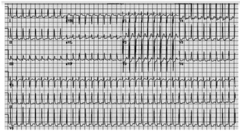
A Amiodarona 300mg em bolus.
B Amiodarona 150mg em bolus.
C Metoprolol 25mg via oral.
D Cardioversão elétrica.
Questão 476 · Inf ecção por C dif f icile · 4000190726Paciente de 70 anos, em internação prolongada por fratura exposta de fêmur, apresentando quadro de disenteria, com presença de toxinas para Clostridium A e B em fezes presente. Está em tratamento com metronidazol via oral, sem melhora. A melhor opção terapêutica nesse caso é:
A Dobrar dose de metronidazol, por mais 14 dias.
B Substituir metronidazol por vancomicina via oral.
C Mantem metronidazol em associação com ciprofloxacino.
D Substituir metronidazol por vancomicina endovenosa.
Questão 477 · Câncer do Cólon · 4000190724Sobre o câncer colorretal e seu estadiamento, assinale a correta:
A Apenas Rx de tórax é necessário, uma vez que o tratamento é sempre cirúrgico.
B É necessário apenas ultrassonografia de abdome total.
C Realização de CT de crânio para todos se faz necessário.
D Realização de tomografia de abdome, pelve e tórax são necessárias para evidenciar a presença de lesões secundárias.
Questão 478 · Fases do empiema · 4000190723Sobre Empiemas Pleurais, assinale a correta.
A Fase I - Fibrosante: há intensa fibrose da pleura parietal, com necrose de liquefação local, causando na maioria das vezes fístula aérea de alto débito.
B Fase II – Proliferativa: Caracterizada por líquido fluido e livre na cavidade pleural, sem formar septações. No início, o líquido pode estar estéril e assim permanecer por algum tempo.
C Na Fase III – Crônica: há proliferação mais acentuada de fibroblastos, forma-se uma membrana envoltória mais espessa e consistente, capaz de restringir a reexpansão do pulmão. O tratamento com melhor resultados é a decorticação pulmonar.
D Fase IV – Fibrinopurulenta: A secreção já é purulenta, espessa, com presença de fibrina e grande número de células, em que predominam os polimorfonucleares.
Questão 479 · Sequência Rápida de Intubação SRI · 4000190721Sobre a "Sequência Rápida de Intubação", atualmente chamada de "Intubação Assistida por Drogas", assinale a correta.
A É sempre utilizada em situações eletivas, em que o paciente se apresenta estável, com jejum adequado.
B É utilizada em casos em que se necessita acesso a via aérea quando há risco de broncoaspiração. O protocolo utiliza 3 classes de drogas: analgésico, hipnótico e bloqueador neuromuscular de ação rápida.
C É utilizado na garantia de via aérea em urgências, e sempre utilizamos 4 classes de drogas: hipnóticos, bloqueadores neuromusculares, analgésicos e anticonvulsivantes.
D É uma opção para acesso a via aérea, sendo totalmente contra indicada em pacientes instáveis.
Questão 480 · Epidemiologia e f atores de risco · 4000190706O perfil da paciente climatérica com maior tendência a desenvolver perda de massa óssea é:
A branca, magra, tabagista.
B branca, obesa, não tabagista.
C negra, magra, tabagista.
D negra, magra, não tabagista.
Questão 481 · Manif estações e características clínicas · 4000190699O Escore Cálcio Arterial Coronariano (CACS) deve representar uma forma de segregar indivíduos diabéticos:
A Com menor carga aterosclerótica e provavelmente aqueles que foram submetidos por tempo mais prolongado aos efeitos vasculares da resistência à insulina em conjunto com a endoteliopatia, que se inicia nos estágios mais precoces do pré-diabetes.
B Com maior carga aterosclerótica e provavelmente aqueles que foram submetidos por tempo mais prolongado aos efeitos vasculares da resistência à insulina em conjunto com a endoteliopatia, que se inicia nos estágios mais tardios do pré-diabetes.
C Com maior carga aterosclerótica e provavelmente aqueles que não foram submetidos por tempo mais prolongado aos efeitos vasculares da resistência à insulina em conjunto com a endoteliopatia, que se inicia nos estágios mais precoces do pré-diabetes.
D Com maior carga aterosclerótica e provavelmente aqueles que foram submetidos por tempo mais prolongado aos efeitos vasculares da resistência à insulina em conjunto com a endoteliopatia, que se inicia nos estágios mais precoces do pré-diabetes.
Questão 482 · Rastreamento · 4000190697A decisão de rastrear o indivíduo com DM2 assintomático:
A Para a presença de doença antes de iniciar um programa de exercícios dependerá da presença de estratificadores de risco, da presença de sintomas cardiovasculares e da intensidade do exercício prescrito.
B Para a presença de doença antes de iniciar um programa de exercícios não dependerá da presença de estratificadores de risco, da presença de sintomas cardiovasculares e da intensidade do exercício prescrito.
C Para a presença de doença antes de iniciar um programa de exercícios dependerá da presença de estratificadores de risco, da presença de sintomas cardiovasculares e nunca da intensidade do exercício prescrito.
D Para a presença de doença antes de iniciar um programa de exercícios dependerá da presença de estratificadores de risco, não da presença de sintomas cardiovasculares e sim da intensidade do exercício prescrito.
Questão 483 · Transmissão vertical · Hepatites na gestação · 4000190695A infecção crônica pelo HBV ocorre, primariamente, por transmissão vertical ou pela infecção na infância. Está correto que:
A A infecção do feto ou do neonato pelo HBV é dependente do estado imune e da carga viral da mãe. Situações que levam à mistura do sangue da mãe e do feto também possibilitam a infecção.
B A infecção do feto ou do neonato pelo HBV não é dependente do estado imune e da carga viral da mãe. Situações que levam à mistura do sangue da mãe e do feto também possibilitam a infecção.
C A infecção do feto ou do neonato pelo HBV é dependente do estado imune e nunca da carga viral da mãe. Situações que levam à mistura do sangue da mãe e do feto também possibilitam a infecção.
D A infecção do feto ou do neonato pelo HBV é dependente do estado imune e da carga viral da mãe. Situações que levam à mistura do sangue da mãe e do feto não possibilitam a infecção.
Questão 484 · Fatores de risco para hipertensão arterial · 4000190693Os resultados heterogêneos do efeito do álcool no desenvolvimento da Hipertensão Arterial:
A Ocorrem devido a influência do tipo de bebida ingerida, não do volume da ingesta, estilo de vida, padrão de consumo e nível socioeconômico da população estudada.
B Ocorrem devido a influência do tipo de bebida ingerida, volume da ingesta, estilo de vida, padrão de consumo e nunca do nível socioeconômico da população estudada.
C Ocorrem devido a influência do tipo de bebida ingerida, volume da ingesta, estilo de vida, padrão de consumo e nível socioeconômico da população estudada.
D Ocorrem devido a influência do tipo de bebida ingerida, volume da ingesta, mas não estilo de vida, padrão de consumo e nível socioeconômico da população estudada.
Questão 485 · COVID 19 · 4000190692Para rastreamento dos contatos, é importante que seja realizada uma investigação detalhada dos casos de Covid-19 que são captados pelos sistemas de informação (e-SUS Noti ca ou SIVEPGripe). Sendo correto que:
A Para esta etapa, durante o atendimento do caso pelo serviço de saúde, deve ser utilizada a Ficha para Rastreamento de Contatos, com o objetivo de identificar as pessoas que estiveram em contato com um caso confirmado não no período de transmissibilidade da doença, ou seja, até 48 horas antes do início dos sintomas (para os casos sintomáticos) ou até 48 horas antes da data da coleta do exame (para os casos assintomáticos).
B Para esta etapa, durante o atendimento do caso pelo serviço de saúde, deve ser utilizada a Ficha para Rastreamento de Contatos, com o objetivo de identificar as pessoas que estiveram em contato com um caso confirmado no período de transmissibilidade da doença, ou seja, até 48 horas antes do início dos sintomas (para os casos sintomáticos) ou até 48 horas antes da data da coleta do exame (para os casos assintomáticos).
C Para esta etapa, durante o atendimento do caso pelo serviço de saúde, nunca deve ser utilizada a Ficha para Rastreamento de Contatos, com o objetivo de identificar as pessoas que estiveram em contato com um caso confirmado no período de transmissibilidade da doença, ou seja, até 48 horas antes do início dos sintomas (para os casos sintomáticos) ou até 48 horas antes da data da coleta do exame (para os casos assintomáticos).
D Para esta etapa, durante o atendimento do caso pelo serviço de saúde, deve ser utilizada a Ficha para Rastreamento de Contatos, com o objetivo de identificar as pessoas que estiveram em contato com um caso não confirmado no período de transmissibilidade da doença, ou seja, até 48 horas antes do início dos sintomas (para os casos sintomáticos) ou até 48 horas antes da data da coleta do exame (para os casos assintomáticos).
Revisar: possível letra faltando em enunciado
Questão 486 · Fatores de risco para hipertensão arterial · 4000190690O excesso de peso é reconhecidamente um fator relacionado à elevação da PA, sendo que:
A Quanto maior o IMC, menor o risco de Hipertensão Arterial - HA.
B Quanto menor o IMC, maior o risco de Hipertensão Arterial - HA.
C Quanto maior o IMC, maior o risco de Hipertensão Arterial - HA.
D Quanto maior o IMC, não é maior o risco de Hipertensão Arterial - HA.
Questão 487 · COVID 19 · 4000190689Em lugares que há poucos casos de COVID-19 ou os casos são esporádicos:
A É fortemente recomendada a realização do rastreamento e não o monitoramento de contatos para todos os casos de COVID-19.
B É fortemente não recomendada a realização do rastreamento e o monitoramento de contatos para todos os casos de COVID-19.
C É fortemente recomendada a não realização do rastreamento e o monitoramento de contatos para todos os casos de COVID-19.
D É fortemente recomendada a realização do rastreamento e o monitoramento de contatos para todos os casos de COVID-19.
Questão 488 · Fatores de risco para hipertensão arterial · 4000190687A obesidade central e o ganho de peso:
A Ao longo do tempo têm se destacado como importantes fatores para o desenvolvimento de Hipertensão Arterial - HA.
B Ao longo do tempo não têm se destacado como importantes fatores para o desenvolvimento de Hipertensão Arterial - HA.
C Ao longo do tempo têm se destacado como importantes fatores para a proteção da Hipertensão Arterial - HA.
D Ao longo do tempo têm se destacado como pouco importante fator para o desenvolvimento de Hipertensão Arterial - HA.
Questão 489 · COVID 19 · 4000190685Em relação a identi car, capacitar e manter uma equipe de investigadores prontos para iniciar o rastreamento de contatos a partir do primeiro caso de coronavírus identificado, podemos afirmar que:
A Nesta situação, sugere-se que todos os contatos próximos sejam identificados rapidamente, avaliados por uma equipe de saúde, testados, isolados e monitorados por até 30 dias.
B Nesta situação, sugere-se que todos os contatos próximos não sejam identificados rapidamente, avaliados por uma equipe de saúde, testados, isolados e monitorados por até 10 dias.
C Nesta situação, sugere-se que todos os contatos próximos sejam identificados rapidamente, avaliados por uma equipe de saúde, testados, isolados e monitorados por até 10 dias.
D Nesta situação, sugere-se que todos os contatos próximos sejam identificados rapidamente, não avaliados por uma equipe de saúde, testados, isolados e monitorados por até 10 dias.
Questão 490 · Redução do peso corporal · Aspectos nutricionais · 4000190684A perda de peso como medida não medicamentosas reduz PA em normotensos e pode prevenir o desenvolvimento de Hipertensão Arterial (HÁ).
A Mudanças no estilo de vida não são fundamentais para a perda de peso e concentram-se na adoção de uma dieta hipocalórica e atividade física regular.
B Mudanças no estilo de vida são fundamentais para a perda de peso e concentram-se na adoção de uma dieta hipocalórica e não na atividade física regular.
C Mudanças no estilo de vida são fundamentais para a perda de peso e concentram-se na adoção de uma dieta hipocalórica e atividade física irregular.
D Mudanças no estilo de vida são fundamentais para a perda de peso e concentram-se na adoção de uma dieta hipocalórica e atividade física regular.
Questão 491 · Avaliação laboratorial da icterícia · 4000190680O quadro clínico de icterícia pode ser secundário ao aumento das bilirrubinas conjugadas, das não conjugadas ou de ambas. Em pacientes nos quais a icterícia tem predomínio de bilirrubinas conjugadas, é correto aventar como hipóteses diagnósticas
A Tumores periampulares, coledocolitíase e cirrose avançada.
B Tumores periampulares, coledocolitíase e hemólise.
C Colangite biliar primária, coledocolitíase e cirrose avançada.
D Ascaris lumbricoides, tumores periampulares e hemólise.
E Ascaris lumbricoides, tumores periampulares e colangite biliar primária.
Questão 492 · Etiologia · 4000190679A pancreatite aguda é uma condição inflamatória do pâncreas, caracterizada por dor abdominal e níveis elevados de enzimas pancreáticas no sangue. A pancreatite aguda é uma causa frequente de hospitalização, com mortalidade geral de aproximadamente 5%. Várias condições estão associadas à pancreatite aguda, entre as quais é correto citar.
A álcool, cálculo na via biliar e hipercolesterolemia.
B álcool, cálculo na via biliar e trauma pancreático.
C álcool, medicamentosa e hipercolesterolemia.
D cálculo na via biliar, medicamentosa e hipercalemia.
E cálculo na via biliar, trauma pancreático e hipercalemia.
Questão 493 · Tratamento Cirúrgico do Megaesôf ago NãoAvançado · 4000190675REZENDE J. M.; LAUAR K. M.; OLIVEIRA. A. R. Aspectos clínicos e radiológicos da aperistalse do esôfago. Revista Brasileira de Gastroenterologia. 1960; 12: 247 – 62. No tratamento da doença representada nesse exame radiológico contrastado, podem ser usadas determinadas técnicas cirúrgicas. Assinale a alternativa que indica essas técnicas.

A Cardioplastia à Thal-Hatafuku e operação de Duhamel
B Operação de Duhamel e esofagectomia
C Cardiomiotomia à Heller e operação de Frey
D Cardioplastia à Thal-Hatafuku e esofagectomia
E Cardiomiotomia à Heller e operação de Whipple
Questão 494 · Def inição e Sintomas · 4000190673Uma paciente de 40 anos de idade procura serviço de emergência queixando-se de dor em queimação localizada na região anterior do tórax, que se irradia para o pescoço e tem a alimentação e a posição supina como fatores de precipitação. A paciente negou que o esforço desencadeie o sintoma. O eletrocardiograma (ECG) seriado e os biomarcadores cardíacos se mostraram sem alterações. Com base no exposto, assinale a alternativa que indica o próximo passo a ser seguido nesse caso.
A Solicitar teste ergométrico.
B Solicitar parecer da psiquiatria.
C Prescrever inibidor de bomba de próton.
D Solicitar tomografia de tórax.
E Prescrever ácido acetilsalicílico.
Questão 495 · Pico de f luxo expiratório · 4000190672Uma paciente de 25 anos de idade procurou atendimento ambulatorial para mostrar o resultado da monitorização do exame de peak- ow semanal, o qual revelou variações diárias acima de 30% quando no trabalho, e nenhuma variação quando afastada do trabalho. Na cha médica da paciente, havia a informação de quadro de tosse associada a chiados no peito e dispneia há 1 mês. A paciente trabalhava há 6 meses como cabeleireira. Nunca fumou. Nada foi encontrado no exame físico. A prova de função pulmonar revelou- se sem alterações. A respeito desse caso clínico, assinale a alternativa correta.
A Faz-se necessária a realização da prova de broncoprovocação para a confirmação do diagnóstico.
B Os sintomas e as alterações funcionais são transitórios e desaparecerão uma vez instituído o tratamento.
C O mecanismo fisiopatológico da presente doença é diferente do observado na asma alérgica.
D Pode-se confiar no resultado do exame de peak-flow, o qual define o diagnóstico.
E Deve-se iniciar o uso preventivo de broncodilatadores de curta duração 30 minutos antes do horário de entrada no trabalho.
Questão 496 · Inibidores da enzima conversora de angiotensina e bloqueadores dos receptores AT1 da angiotensina II · 4000190671Um paciente de 60 anos de idade com diagnóstico de insu ciência cardíaca congestiva é submetido a exame ecocardiográfico que mostra diminuição da fração de ejeção sistólica do ventrículo esquerdo. Nesse caso, visando a reduzir o risco de mortalidade, a medicação mais apropriada a ser prescrita é
A ácido acetilsalicílico.
B digoxina.
C diurético.
D bloqueador de cálcio.
E inibidor da enzima conversora de angiotensina.
Questão 497 · Quadro clínico · 4000190670Um paciente de 20 anos de idade, previamente saudável, procurou o pronto-socorro informando apresentar, há dois dias, quadro clínico constituído por febre de 38 ºC, associada a dor torácica respiratório-dependente à esquerda e tosse com eliminação de secreção amarelada. A radiogra a de tórax mostrou consolidação em língula. O exame físico revelou crepitações inspiratórias em região axilar esquerda, pressão arterial de 80 mmHg x 40 mmHg, SatO2 = 90%, FR = 32 irpm e FC = 110 bpm. Acerca do caso clínico, assinale a alternativa correta.
A O tratamento desse paciente só deve ser iniciado após o resultado do teste rápido do exame de escarro para bactérias e vírus.
B Há necessidade de serem feitos exames complementares para melhor estabelecer a gravidade do quadro clínico do paciente.
C Os dados obtidos com a história clínica, o exame físico e a radiografia de tórax são suficientes para o estabelecimento do diagnóstico.
D O uso de corticoide sistêmico deve ser evitado, pois pode agravar a condição clínica do paciente.
E Os critérios clínicos identificados indicam que o tratamento deve ocorrer em ambiente de unidade de terapia intensiva pela necessidade de se iniciar ventilação mecânica.
Questão 498 · Nef rite intersticial aguda · 4000190669Uma paciente de 20 anos de idade apresenta perda aguda da função renal, associada a automedicação com anti-inflamatório, sendo feito o diagnóstico de nefrite intersticial aguda. Acerca dessa condição nefrológica, assinale a alternativa correta.
A Eosinofilia constitui manifestação clínica sugestiva do referido diagnóstico.
B O exame sumário de urina (EAS) dessa paciente costuma mostrar-se normal.
C O aumento difuso dos rins, visto na tomografia computadorizada, representa a confirmação de certeza do diagnóstico de afecção renal.
D A maioria dos pacientes nos quais o citado diagnóstico é confirmado evolui para insuficiência renal crônica terminal.
E Cerca de 75% dos casos estão relacionados a comprometimento associado de outros órgãos, como pele e pulmão.
Questão 499 · Neurotoxoplasmose · 4000190667Um paciente de 36 anos de idade procurou o pronto-socorro apresentando episódio de convulsão há 30 minutos. Informou ter o diagnóstico de síndrome da imunode ciência humana. A tomogra a computadorizada de crânio revelou lesões múltiplas localizadas nos gânglios da base. A causa mais provável da lesão neurológica descrita é
A meningite viral.
B tuberculose.
C tumor maligno cerebral.
D neurocisticercose.
E toxoplasmose.
Questão 500 · Hipertireoidismo subclínico · 4000190666Um paciente de 35 anos de idade, assintomático, procurou atendimento médico para realizar seu exame anual periódico exigido pela empresa em que trabalha. No exame físico, identi cou-se tireoide palpável com consistência lisa e elástica, não havendo relato de dor à palpação. A avaliação da função tireoidiana mostrou TSH aumentado com T4 livre normal. Que achado laboratorial confirma o provável diagnóstico desse paciente?
A Leucocitose com desvio à esquerda.
B Nível de T3 aumentado.
C Nódulo hipocaptante de tireoide.
D Presença de anticorpo antitireoperoxidase.
E Aumento do colesterol total.
Questão 501 · Tratamento · 4000190665Um paciente de 40 anos de idade, com diagnóstico de leucemia mieloide aguda e neutropenia, apresenta quadro de febre de 39 ºC, em uso de esquema antimicrobiano constituído por vancomicina e carbapenêmico há cinco dias. O exame físico não mostra evidência clínica que justi que a persistência da febre, e o hemograma realizado tem resultado semelhante ao feito quando do início do tratamento do paciente. Assinale a alternativa que indica a medida mais adequada nesse caso.
A Suspender o esquema antimicrobiano.
B Realizar uma punção liquórica.
C Acrescentar um fármaco antifúngico ao esquema prescrito.
D Solicitar uma transfusão de sangue.
E Indicar o transplante de medula.
Questão 502 · Diagnóstico eletrocardiograf ico do IAMCSST · 4000190664Um paciente de 61 anos de idade, sedentário, obeso e tabagista, há duas horas iniciou epigastralgia em queimação de forte intensidade após o almoço. O exame físico mostrou uma frequência cardíaca igual a 60 bpm, frequência respiratória = 25 irpm, SatO2 = 92% e PA = 100 mmHg x 60 mmHg, com ausculta cardíaca e pulmonar normais e sem edema de membros inferiores. Na admissão em uma unidade de pronto atendimento, ele realizou o eletrocardiograma (ECG) a seguir. Qual é a principal hipótese de diagnóstico?

A Bloqueio de ramo direito.
B Infarto agudo do miocárdio.
C Síndrome de Wolf Parkinson White.
D Hipertonia vagal.
E Fibrilação atrial.
Questão 503 · Ventilação · Compressões torácicas · 4000190654A parada cardiorrespiratória (PCR) é a cessação da atividade mecânica cardíaca e caz, confirmada pela tríade inconsciência, ausência de pulso central e de respiração. Muitas vezes, na infância, ela está associada a uma condição reversível; dessa forma, o seu tratamento precoce e bem conduzido pode melhorar o prognóstico do atendimento da criança. O atendimento da PCR inicia-se com o suporte básico de vida (SBV). Quanto às recomendações de SBV em pediatria, assinale a alternativa correta.
A O evento cardíaco primário é causa mais comum de PCR em lactentes e crianças do que por hipoxemia grave.
B Deve-se atrasar o uso de epinefrina na PCR pediátrica, com o objetivo de aguardar a resposta às compressões torácicas.
C Em lactentes até 1 ano de idade, o socorrista deve realizar as compressões torácicas com a mão espalmada em todo o tórax e com o braço estendido.
D As compressões torácicas e a ventilação devem ser sincronizadas. Em crianças, devem ser 2 compressões para 15 ventilações.
E A sequência do SBV deve ser C-A- B (compressão – via aérea – respiração) ao invés de de A-B-C (via aérea – respiração – circulação/compressão).
Questão 504 · Etiopatogenia · 4000190641John Snow é considerado por muitos o pai da epidemiologia. Seu feito foi ter conseguido relacionar a epidemia de uma doença que assolou Londres nos anos de 1850 com o consumo de água contaminada, e não em razão das explicações apresentadas pela teoria miasmática, vigente à época. O fato mais impressionante é que foi somente após algumas décadas deste evento que a humanidade conseguiu desenvolver seus conhecimentos a respeito de microbiologia e comprovar que esta determinada doença estava relacionada a um microrganismo presente na água consumida pelos humanos. As informações mencionadas referem-se à
A hepatite A.
B leptospirose.
C cólera.
D esquistossomose.
E febre tifoide.
Questão 505 · Diagnóstico · Manif estações clínicas · 4000190631Os principais fatores de risco para carcinoma hepatocelular (CHC) são:
A Cirrose hepática, infecções pelos vírus da hepatite C e não da B, contaminação de alimentos por aflatoxinas, ingestão alcoólica abusiva, diabetes, obesidade, doença hepática gordurosa não alcoólica e hemocromatose hereditária.
B Cirrose hepática, infecções pelos vírus da hepatite C e B, contaminação de alimentos por aflatoxinas, ingestão alcoólica abusiva, diabetes, obesidade, doença hepática gordurosa não alcoólica e nunca a hemocromatose hereditária.
C Cirrose hepática, infecções pelos vírus da hepatite C e B, contaminação de alimentos por aflatoxinas, mas não a ingestão alcoólica abusiva, diabetes, obesidade, doença hepática gordurosa não alcoólica e hemocromatose hereditária.
D Cirrose hepática, infecções pelos vírus da hepatite C e B, contaminação de alimentos por aflatoxinas, ingestão alcoólica abusiva, diabetes, obesidade, doença hepática gordurosa não alcoólica e hemocromatose hereditária.
Questão 506 · Agente etiológico · Epidemiologia · 4000190629A disseminação HTLV-1/2 pelo organismo humano determina também a possibilidade de transmissão dos vírus:
A Por transfusão de sangue e hemocomponentes, pelo uso de drogas injetáveis, pelo transplante de órgãos e por relações sexuais, do que decorre a grande variabilidade de manifestações clínicas associadas à infecção, acometendo diversos órgãos-alvo no corpo humano.
B Por transfusão de sangue e hemocomponentes, pelo uso de drogas injetáveis, pelo transplante de órgãos e por relações sexuais, do que decorre a grande invariabilidade de manifestações clínicas associadas à infecção, acometendo diversos órgãos-alvo no corpo humano.
C Por transfusão de sangue e hemocomponentes, pelo uso de drogas injetáveis, pelo transplante de órgãos e nunca por relações sexuais, do que decorre a grande variabilidade de manifestações clínicas associadas à infecção, acometendo diversos órgãos-alvo no corpo humano.
D Por transfusão de sangue e não por hemocomponentes, pelo uso de drogas injetáveis, pelo transplante de órgãos e por relações sexuais, do que decorre a grande variabilidade de manifestações clínicas associadas à infecção, acometendo diversos órgãos-alvo no corpo humano.
Questão 507 · Cardiomiopatia de Takotsubo · 4000190627Takotsubo, se refere a disfunção ventricular, sendo:
A Esquerda aguda não reversível, em que 30% dos pacientes são mulheres, especialmente pósmenopausa.
B Esquerda aguda reversível, em que 90% dos pacientes são mulheres, especialmente prémenopausa.
C Esquerda aguda reversível, em que 90% dos pacientes são mulheres, especialmente pósmenopausa.
D Direita aguda reversível, em que 90% dos pacientes são mulheres, especialmente pósmenopausa.
Questão 508 · Classif icação clínica · 4000190626Para a denominação da resposta ventricular, num ECG com FA:
A Deve-se calcular a FC (bpm) a partir de um traçado de 6 s (número de QRS neste período multiplicado por 10).
B Deve-se calcular a FC (bpm) a partir de um traçado de 6 s (número de QRS neste período multiplicado por 100).
C Deve-se calcular a FC (bpm) a partir de um traçado de 56 s (número de QRS neste período multiplicado por 10).
D Deve-se calcular a FC (bpm) a partir de um traçado de 6 s (número de QRS neste período dividido por 10).
Questão 509 · Cardiomiopatia periparto · 4000190625Cardiomiopatia periparto, é:
A Definida como disfunção ventricular direita no final da gravidez ou nos primeiros meses pósparto, sem outra causa evidente.
B Definida como disfunção ventricular esquerda no final da gravidez ou nos primeiros meses pósparto, com outra causa evidente.
C Definida como disfunção ventricular esquerda no final da gravidez ou nos primeiros meses pósparto, sem outra causa evidente.
D Definida como disfunção atrial esquerda no final da gravidez ou nos primeiros meses pós-parto, sem outra causa evidente.
Questão 510 · Diabetes Mellitus tipo 1B · Critérios diagnósticos · Diabetes Mellitus tipo 1A · 4000190624Triagem para risco de DM tipo 1 (DM1) com dosagem de autoanticorpos:
A Nunca deve ser considerada para familiares de primeiro grau de pessoas acometidas apenas se houver possibilidade de inserir pessoas de risco em estudos clínicos visando prevenção do DM.
B Deve ser considerada para familiares de primeiro grau de pessoas acometidas apenas se houver possibilidade de inserir pessoas de risco em estudos clínicos visando prevenção do DM.
C Deve ser considerada para familiares de segundo grau de pessoas acometidas apenas se houver possibilidade de inserir pessoas de risco em estudos clínicos visando prevenção do DM.
D Deve ser considerada para familiares de primeiro grau de pessoas acometidas apenas se houver possibilidade de inserir pessoas de risco em estudos clínicos, nunca visando prevenção do DM.
Questão 511 · Tratamento não medicamentoso · 4000190621Assinale a alternativa correta sobre a contagem de carboidratos no paciente com diabetes melito.
A Consiste em conhecer a quantidade de alimentos que se deve ingerir em cada refeição.
B Consiste em conhecer a quantidade de alimentos que não se deve ingerir em cada refeição.
C Consiste em fazer refeições isentas de carboidratos.
D Consiste em conhecer a quantidade de alimentos que será ingerida e aplicar a quantidade de insulina necessária para cada refeição.
Questão 512 · Manif estações clínicas · Classif icação · 4000190620Sobre o diagnóstico de encefalite, de acordo com o International Encephalitis Consortium (IEC), assinale a alternativa correta.
A Se houver três critérios menores, não é necessário que haja alteração do estado mental para o diagnóstico de encefalite.
B Apenas com a presença de alteração do estado mental mais três ou mais sinais menores pode-se confirmar o diagnóstico de encefalite.
C A presença de alteração do estado mental e a febre confirmam o diagnóstico de encefalite.
D A presença de mais de cem leucócitos no líquor é critério menor para diagnóstico de encefalite.
Questão 513 · Hepatoesplenomegalias crônicas · 4000190619Com relação às infecções bacterianas consideradas diagnósticos diferenciais de hepatoesplenomegalias febril, assinale a alternativa incorreta.
A Brucelose
B Endocardite
C Abscesso cutâneo
D Tuberculose
Questão 514 · Outros tratamentos · 4000190617Assinale a alternativa que contém uma indicação de ECMO VV.
A Arritmias refratárias e com instabilidade hemodinâmica.
B Suporte ventilatório mecânico invasivo por menos de 14 dias.
C Ponte para transplante cardíaco ou VAD.
D PCR.
Questão 515 · Miocardite · 4000190616Assinale a alternativa incorreta sobre o diagnóstico da miocardite.
A O ECG apresenta alterações em quase todos os casos de miocardite, sendo a inversão da onda T a principal alteração.
B A biopsia endomiocárdica é o padrão ouro para o diagnóstico, porém tem baixa sensibilidade.
C A sorologia viral deve ser solicitada na suspeita de miocardite, visto que a etiologia viral é a mais comum.
D A RNM cardíaca é capaz de avaliar sinais de inflamação e fibrose miocárdica, porém é incapaz de detectar a presença do vírus no miocárdio.
Questão 516 · Ceco e Apêndice Vermif orme · Outros · 4000190613Assinale a alternativa correta sobre o apêndice cecal/vermiforme.
A O apêndice vermiforme é um divertículo intestinal com fundo cego (de aproximadamente 10 cm de comprimento) que contém massas de tecido linfóide. Da forma mais habitual origina-se na face posteromedial do ceco, inferiormente à junção ileocecal.
B O apêndice vermiforme é desprovido de mesentério e tem sua irrigação a partir da artéria ileocecal, ramo direito da artéria mesentérica inferior.
C A posição do apêndice vermiforme é fixa e geralmente é anterior ao ceco.
D A artéria apendicular, um ramo da artéria ileocólica, irriga o apêndice vermiforme. A drenagem venosa do ceco e do apêndice vermiforme segue por uma tributária da veia mesentérica inferior, a veia ileocólica.
Questão 517 · Manif estações Clínicas · Tratamento · 4000190611Sobre o divertículo de Meckel, assinale a correta.
A É uma anomalia congênita que ocorre em 1 a 2% da população. Um remanescente da parte proximal do ducto onfalomesentérico embrionário (pedículo vitelino), o divertículo geralmente apresenta-se como uma bolsa digitiforme. Está no local de fixação do ducto onfalomesentérico na margem mesentérica do jejuno.
B O divertículo geralmente está localizado a 30 a 60 cm da junção ileocecal em lactentes e a 50 cm em adultos. Pode estar livre ou fixado ao umbigo. Embora sua túnica mucosa seja principalmente do tipo ileal, também pode incluir áreas de tecido gástrico produtor de ácido, tecido pancreático, ou mucosa jejunal ou colônica.
C Um divertículo ileal pode inflamar e causar dor semelhante àquela causada pela apendicite. Apresenta bons resultados quando tratado clinicamente em processos inflamatórios agudos perfurados.
D Sua inflamação é a causa mais comum de abdome agudo inflamatório em adultos.
Questão 518 · Jejuno e Íleo · Duodeno · 4000190605As artérias da região glútea originam-se, direta ou indiretamente da:
A A. ilíaca externa.
B A. ilíaca interna.
C A. ilíaca superficial.
D A. femoral.
Questão 519 · Anatomia e Fisiologia do Intestino Delgado e Grosso · 4000190604Sobre a anatomia do intestino delgado, assinale a alternativa correta.
A O duodeno, a primeira e mais curta parte do intestino delgado, também é a mais estreita e mais móvel. O duodeno segue um trajeto em formato de C ao redor da cabeça do pâncreas; começa no piloro no lado esquerdo do abdome e termina na flexura (junção) duodenojejunal no lado direito.
B As artérias do duodeno originam-se do tronco celíaco e da artéria mesentérica inferior. O tronco celíaco, por intermédio da artéria gastroduodenal e seu ramo, a artéria pancreaticoduodenal superior, supre a parte do duodeno proximal à entrada do ducto colédoco na parte descendente do duodeno.
C A segunda parte do intestino delgado, o jejuno, começa na flexura duodenojejunal, onde o sistema digestório volta a ser intraperitoneal. A terceira parte do intestino delgado, o íleo, termina na junção ileocecal, a união da parte terminal do íleo e o ceco.
D O mesentério é uma prega de mucosa em forma de leque que fixa o jejuno e o íleo à parede anterior do abdome. A origem ou raiz do mesentério tem direção oblíqua, inferior e para a esquerda.
Questão 520 · Baciloscopia · 4000190593Quando avaliadas técnicas para a baciloscopia do escarro na tuberculose, pode-se afirmar que:
A A microscopia de fluorescência pode reduzir a capacidade de detecção do bacilo em 10%, quando comparada à microscopia com luz convencional.
B A microscopia de fluorescência pode incrementar a capacidade de detecção do bacilo em 90%, quando comparada à microscopia com luz convencional.
C A microscopia de fluorescência pode incrementar a capacidade de detecção do bacilo em 10%, quando comparada à microscopia com luz convencional.
D A microscopia de fluorescência não pode incrementar a capacidade de detecção do bacilo, quando comparada à microscopia com luz convencional.
Questão 521 · COVID 19 · 4000190592Há evidências de que a incidência de trombose da veia cerebral em pacientes hospitalizados com COVID-19 foi de 207 por milhão de casos, sendo:
A Muito superior à incidência de casos induzidos por vacina (0,9 a 3,8 por milhão).
B Muito inferior à incidência de casos induzidos por vacina (0,9 a 3,8 por milhão).
C Igual à incidência de casos induzidos por vacina (0,9 a 3,8 por milhão).
D Inferior à incidência de casos induzidos por vacina.
Questão 522 · Introdução · 4000190591O HCV é um vírus cujo genoma é constituído por uma única molécula de RNA de polaridade positiva, que possui, aproximadamente, 9.600 bases.
A O genoma viral é traduzido via IRES para produzir uma poliproteína, que é clivada durante e após a tradução por proteases celulares e virais em dez produtos gênicos. A região amino-terminal não codifica as proteínas estruturais, que são aquelas incorporadas na partícula viral: a proteína do capsídeo (C) e as glicoproteínas de envelope (E1 e E2).
B O genoma viral é traduzido via IRES para produzir uma poliproteína, que é clivada durante e após a tradução por proteases celulares e virais em dez produtos gênicos. A região amino-terminal codifica as proteínas estruturais, que são aquelas incorporadas na partícula viral: a proteína do capsídeo (C) e as glicoproteínas de envelope (E1 e E2).
C O genoma viral é traduzido via IRES para produzir uma poliproteína, que é clivada durante e após a tradução por proteases celulares e virais em dez produtos gênicos. A região amino-terminal codifica as proteínas estruturais, que são aquelas nunca incorporadas na partícula viral: a proteína do capsídeo (C) e as glicoproteínas de envelope (E1 e E2).
D O genoma viral é traduzido via IRES para produzir uma poliproteína, que é clivada durante e não após a tradução por proteases celulares e virais em dez produtos gênicos. A região aminoterminal codifica as proteínas estruturais, que são aquelas incorporadas na partícula viral: a proteína do capsídeo (C) e as glicoproteínas de envelope (E1 e E2).
Questão 523 · Miocardite · 4000190590Diferenças epidemiológicas de Miocardites podem ser decorrente de surtos de infecções virais especí cas ocorrendo ao longo dos anos nas diversas regiões do mundo.
A Mas não diferenças nas técnicas de detecção viral, permanecendo o debate acerca da real influência da distribuição geográfica quanto às infecções virais cardiotrópicas.
B Bem como a diferenças nas técnicas de detecção viral, permanecendo o debate acerca da real influência da distribuição geográfica quanto às infecções virais não cardiotrópicas.
C Bem como a diferenças nas técnicas de detecção não viral, permanecendo o debate acerca da real influência da distribuição geográfica quanto às infecções virais cardiotrópicas.
D Bem como a diferenças nas técnicas de detecção viral, permanecendo o debate acerca da real influência da distribuição geográfica quanto às infecções virais cardiotrópicas.
Revisar: possível letra faltando em enunciado
Questão 524 · Miocardite · COVID 19 · 4000190589A taxa de miocardite associada à COVID-19 excede a taxa observada com as vacinas na maioria dos levantamentos populacionais. Sendo correto que:
A A exceção ainda são homens mais velhos, nos quais o risco de miocardite associada às vacinas excede a taxa de miocardite por COVID-19 na mesma faixa etária.
B A exceção ainda são homens mais jovens, particularmente adolescentes, nos quais o risco de miocardite associada às vacinas não excede a taxa de miocardite por COVID-19 na mesma faixa etária.
C A exceção ainda são homens mais jovens, particularmente adolescentes, nos quais o risco de miocardite associada às vacinas excede a taxa de miocardite por COVID-19 na mesma faixa etária.
D A exceção ainda são homens mais jovens, particularmente adolescentes, nos quais o risco de miocardite associada às vacinas excede a taxa de miocardite por COVID-19 na outra faixa etária.
Questão 525 · Baciloscopia · 4000190588Para a coleta da baciloscopia do escarro para diagnóstico de Tuberculose:
A Duas a três amostras de escarro devem ser enviadas para baciloscopia, com pelo menos uma coleta no início da manhã para a otimização dos resultados da baciloscopia. O volume de escarro deve ser maior que 3 mL, sendo o volume ideal de 5-10 mL.
B Duas a três amostras de escarro devem ser enviadas para baciloscopia, com pelo menos uma coleta no início da noite para a otimização dos resultados da baciloscopia. O volume de escarro deve ser maior que 3 mL, sendo o volume ideal de 5-10 mL.
C Duas a três amostras de escarro devem ser enviadas para baciloscopia, com pelo menos uma coleta no início da manhã para a otimização dos resultados da baciloscopia. O volume de escarro deve ser menor que 3 mL.
D Dez amostras de escarro devem ser enviadas para baciloscopia, com pelo menos uma coleta no início da manhã para a otimização dos resultados da baciloscopia. O volume de escarro deve ser maior que 3 mL, sendo o volume ideal de 5-10 mL.
Questão 526 · COVID 19 · 4000190587Para indivíduos que receberam uma primeira dose da vacina ChAdOx1 nCoV-19 e não desenvolveram VITT (vaccine-induced immune thrombotic thrombocytopenia), a recomendação é completar o esquema vacinal com duas doses. Sendo correto que:
A Há evidências de que a segunda dose, ou mesmo o reforço (booster), aumente o risco de complicações trombóticas.
B Não há evidências de que a segunda dose, e sim o reforço (booster), aumente o risco de complicações trombóticas.
C Não há evidências de que a segunda dose, ou mesmo o reforço (booster), aumente o risco de complicações trombóticas.
D Há evidências de que a segunda dose, ou mesmo o reforço (booster), reduza o risco de complicações trombóticas.
Questão 527 · Teste ergométrico · 4000190586Em relação à prescrição de exercício, principalmente em pacientes com maior risco cardiovascular, o TE - Teste de Esforço submáximo é mais eficiente quando associado à análise de gases expirados.
A A realização do teste cardiopulmonar de exercício (TCPE), que impossibilita a determinação dos índices de limitação funcional e limiares ventilatórios, tornando a prescrição mais precisa, segura e objetiva.
B A realização do teste cardiopulmonar de exercício (TCPE), que possibilita a determinação dos índices de limitação funcional e limiares ventilatórios, tornando a prescrição mais precisa, segura e não objetiva.
C A realização do teste cardiopulmonar de exercício (TCPE), que possibilita a determinação dos índices de limitação funcional e limiares ventilatórios, tornando a prescrição mais precisa, segura e objetiva.
D A realização do teste cardiopulmonar de exercício (TCPE), que possibilita a determinação dos índices de limitação funcional e limiares ventilatórios, tornando a prescrição mais precisa, insegura e objetiva.
Questão 528 · Miocardite · 4000190584Os vírus cardiotrópicos mais prevalentes são: enterovírus, parvovírus B19 (PVB19), adenovírus, vírus influenza A, herpes-vírus humano (HHV), vírus Epstein-Barr, citomegalovírus, vírus da hepatite C e vírus do HIV.
A Algumas evidências sugerem que possa haver diferenças regionais em relação à prevalência dos diferentes agentes virais, com predomínio de adenovírus, parvovírus e herpes na população europeia e não preponderância de enterovírus na população americana.
B Algumas evidências sugerem que possa haver diferenças regionais em relação à prevalência dos diferentes agentes virais, com predomínio de adenovírus, parvovírus e herpes na população europeia e preponderância de enterovírus na população americana.
C Algumas evidências sugerem que possa haver diferenças regionais em relação à prevalência dos diferentes agentes virais, raramente adenovírus, parvovírus e herpes na população europeia e preponderância de enterovírus na população americana.
D Algumas evidências sugerem que possa haver diferenças regionais em relação à prevalência dos diferentes agentes virais, com predomínio de adenovírus, parvovírus e herpes na população europeia e nunca os enterovírus na população americana.
Questão 529 · Quadro clínico · 4000190580Paciente de 5 anos, feminino apresenta corrimento vaginal persistente, levemente amarelado e às vezes transparente, acompanhando de prurido vulvar importante. A mãe relata que a criança está muito irritada, tem dormido mal e frequentemente reclama de dor abdominal. Diante dos dados apresentados, assinale a alternativa com o provável diagnóstico.
A Enterobíase
B Toxocaríase
C Ascaridíase
D Candidíase
Questão 530 · Impetigo não bolhoso crostoso · 4000190578Paciente de 5 anos, vem à consulta ambulatorial para avaliação de lesão cutânea em membro inferior direito (Figura abaixo). Diante do provável diagnóstico, assinale a alternativa com as corretas orientações a serem dadas para seguimento e conduta terapêutica da criança.
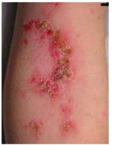
A Os principais agentes responsáveis por este tipo de lesão são o Staphylococcus aureus e o Streptococcus pyogenes beta-hemolítico do grupo A.
B As complicações mais comuns deste tipo de lesão são a febre reumática e a glomerulonefrite pós- estreptocócica.
C Antibióticos sistêmicos devem ser utilizados no lugar das medicações tópicas para o tratamento de lesão única para evitar a sua disseminação.
D A cultura da lesão é útil para a definição da terapêutica e deve ser realizada em pacientes imunocompetentes.
Questão 531 · Tratamento nas crianças e adolescentes · 4000190574Paciente de 10 anos de idade, masculino, saudável e ativo teve o desfralde aos 2 anos. Há 15 dias nasceu a 1a irmã e há 7 dias passou a ingerir água com frequência molhando a própria roupa e apresentando enurese noturna. Sempre que a irmã recebe aleitamento, ele refere fome, apesar disso, está perdendo peso. Durante a visita dos avós para conhecer a neta, o menino apresentou vômitos, cou ofegante e pálido sendo levado ao PS. Ao exame físico está emagrecido, anictérico, acianótico, afebril e desidratado grave e taquipneico. De acordo com a hipótese diagnóstica, assinale a alternativa correta sobre a conduta imediata.
A Infundir fase rápida de soro fisiológico 0,9% endovenoso, manter hidratação, monitorar sinais vitais e administrar antibioticoterapia. Solicitar urina tipo 1 e urocultura e ultrassonografia de vias urinárias.
B Infundir fase rápida com soro fisiológico 0,9% endovenoso na 1ª hora, administrar insulina rápida, controle de glicemia capilar de hora em hora e monitorar sinais vitais. Solicitar gasometria venosa, glicemia, sódio e potássio.
C Infundir fase rápida com soro fisiológico 0,9% endovenoso e glicosado 5% com Dramin B6DL manter a hidratação. Solicitar gasometria arterial e coletar eletrólitos.
D Infundir fase rápida com soro fisiológico 0,9% e glicosado 5% com Dramin B6DL
Questão 532 · Doença por lesões mínimas · 4000190573Criança de 3 anos de idade, masculino é levado ao PS com queixa de inchaço nos olhos e edema de membros inferiores há 3 dias com piora progressiva. A mãe relata urina espumosa. Nega alergias e conhecimento de comorbidades. Ao exame físico está em bom estado geral, edema bipalpebral 2+/4, edema de membros inferiores 2+/4, normotenso e sem alterações na ausculta cardiorrespiratória. Exame de urina com proteinúria 3+/4. Ao confirmar o diagnóstico descartando causas secundárias, assinale a alternativa com a primeira escolha de tratamento.
A Furosemida
B Adrenalina
C Prednisona
D Ciclosporina
Questão 533 · Tratamento da púrpura trombocitopênica imunológica PTI · 4000190572Criança de 4 anos, feminino, previamente hígida com quadro de epistaxe há um dia e sem outras queixas. Nega uso de medicamentos, traumatismo craniano ou doenças hematológicas na família. Mora em sítio longe do hospital. Ao exame físico está em bom estado geral, corada, hidratada, anictérica, acianótica, afebril, eupneica e normocárdica. Sangramento nasal ativo. Restante do exame físico sem particularidades. O hemograma normal exceto pela plaquetopenia de 8.000/mm³ e esfregaço de sangue periférico com plaquetas maiores. Diante do quadro, assinale a alternativa com a conduta correta.
A Internar e iniciar imediatamente terapia com imunoglobulina.
B Internar, iniciar dexametasona associada a imunoglobulina e preparar para esplenectomia.
C Orientar observação domiciliar e retorno em 24 horas para repetir o hemograma.
D Internar, observar e avaliar a possibilidade de corticoterapia.
Questão 534 · Tratamento · Classif icação de risco · 4000190571Escolar de 8 anos, feminino, com queixa de febre de início súbito de 39°C associado a cefaleia, mialgia e prostração há 2 dias. Nega vômitos, diarreia ou outros sintomas. Ao exame físico está normotensa, pulsos periféricos cheios e simétricos com tempo de enchimento capilar de 2 segundos. Apresenta exantema maculopapular em tronco e face, além de petéquias em membros inferiores e superiores, e sem sinais meníngeos. Sem outros achados ao exame físico. Com base na principal hipótese diagnóstica, assinale a alternativa que contenha a melhor conduta inicial.
A Coletar líquor e iniciar antibioticoterapia endovenosa.
B Coletar sorologia e dar alta para o tratamento domiciliar.
C Coletar hemograma e iniciar hidratação oral na unidade de saúde.
D Coletar hemocultura, medicar com antitérmico e observar em pronto socorro.
Questão 535 · Manejo clínico e diagnóstico · Diagnóstico laboratorial · 4000190565Paciente de 10 anos, feminino, previamente hígida, apresenta tosse e coriza há 7 dias e febre há 5 dias, prostração e dor abdominal há 2 dias. Nega trauma ou qualquer lesão ou infecção prévia ao quadro atual. Ao exame físico está em regular estado geral, pálida, com FC: 120 bpm, FR: 31 ipm, discreta tiragem de fúrcula sem outros sinais de desconforto respiratório. Ausculta cardíaca sem alterações, ausculta pulmonar com crepitações, diminuição de murmúrio vesicular e da ausculta da voz em base esquerda. Abdome ácido, levemente doloroso à palpação profunda. Oximetria de 95% em ar ambiente. Solicitado teste rápido para in uenza A positivo. Hemograma e proteína C reativa (abaixo) e hemocultura (em andamento) e Raio X de tórax em pé e decúbito lateral esquerdo (abaixo). Considerando o quadro descrito e questões epidemiológicas, assinale a alternativa que descreve o diagnóstico e agente(s) etiológico(s) mais provável.

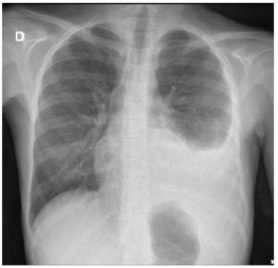
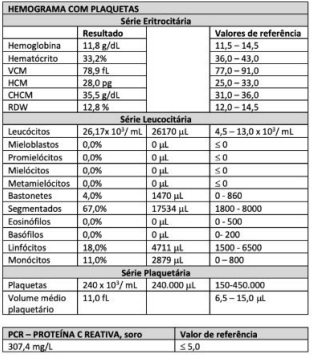
A Pneumonia com derrame parapneumônico, infecção por influenza A e pneumonia bacteriana associada por Streptococcus pneumoniae.
B Pneumonia com derrame parapneumônico, infecção por influenza A e pneumonia bacteriana associada por Staphylococcus aureus.
C Síndrome respiratória aguda grave por influenza A com derrame parapneumônico extenso a esquerda.
D Pneumonia com abcesso pulmonar, infecção por influenza A, pneumonia bacteriana associada por Staphylococcus aureus.
Questão 536 · Quadro clínico · 4000190554A dengue vem ocorrendo no Brasil de forma continuada, intercalando-se com a ocorrência de períodos de epidemias. Entre os objetivos da vigilância epidemiológica está definir o caso suspeito de dengue clássico. Assinale a alternativa correta que descreve o quadro clínico suspeito.
A Todo indivíduo que, independente da idade e situação vacinal, apresentar febre e exantema maculopapular, acompanhados de um ou mais dos seguintes sinais e sintomas: tosse, coriza e conjuntivite.
B Todo indivíduo que apresentar febre e exantema maculopapular, acompanhado de linfoadenopatia retroauricular, occipital e cervical.
C Todo indivíduo que apresentar febre, com tosse com expectoração por três ou mais semanas, acompanhada de perda de peso e apetite.
D Todo indivíduo que tenha doença febril aguda, com duração máxima de 7 dias, acompanhada de pelo menos dois dos seguintes sintomas: cefaleia, dor retro orbital, mialgia, artralgia, prostração, exantema.
Questão 537 · Prof ilaxia pósexposição PEP · 4000190546Mulher de 27 anos trabalha como técnica de enfermagem há 5 anos no PS de clínica médica. Durante o plantão sofre um acidente com agulha que provocou um ferimento perfurocortante em polpa digital do 1o quirodáctilo esquerdo enquanto realizava uma punção venosa em um paciente. Em relação a este acidente de trabalho, assinale a alternativa correta sobre a indicação de pro laxia antiretroviral pós-exposição de risco à infecção pelo vírus da imunodeficiência humana (HIV).
A Independe do status sorológico para HIV da trabalhadora exposta ao material biológico.
B Deve se iniciar em 72 horas do episódio se a sorologia para HIV da paciente for desconhecida.
C É compulsória para a trabalhadora e de início imediato, pois visa prevenir a soroconversão.
D Depende da confirmação de estado gestacional da trabalhadora, pois é sempre indicada nesses casos.
Questão 538 · Fasciíte necrotizante · 4000190523Paciente, sexo masculino, 55 anos, diabético em uso irregular de insulina e metformina é admitido na emergência toxemiado, febril, instável hemodinamicamente, com queixa de aumento e endurecimento do escroto há 7 dias com dor que piorou nos últimos 3 dias quando iniciou febre e saída de secreção purulenta e fétida. A conduta inicial foi protocolo de sepse e procedimento cirúrgico de drenagem de 150 mL de secreção purulenta e desbridamento de grande área necrótica que se estendia do escroto para a região perineal até a borda anal. Diante do quadro, assinale a alternativa com a sequência recomendada para o seguimento.
A Curativo a vácuo programado com desbridamento da área necrótica, realização de colostomia em alça para derivação do trânsito intestinal e enxertia posteriormente.
B Curativo a vácuo programado com desbridamento cirúrgico da área necrótica, realização de colostomia terminal para derivação do trânsito intestinal e enxertia posteriormente.
C Desbridamento cirúrgico e químico utilizando pomada com hialuronidase e corticoide diário e curativo, programação de enxertia precoce.
D Desbridamento da área necrótica e enxertia na zona desvitalizada para cobertura dos testículos, curativo a vácuo da área de enxertia e colostomia em alça.
Questão 539 · Indicações de PAAF · 4000190522Paciente de 45 anos, feminino, apresenta um nódulo em região mediana do pescoço há um ano, palpável com di culdade, sem outros sintomas. A ultrassonogra a descreve: nódulo sólido de 1,2 cm em lobo direito da tireoide de aspecto hipoecóico, lobulado e com microcalcificações. Diante da história clínica e da ultrassonografia, assinale a alternativa com conduta adequada.
A Complementar a investigação do nódulo solicitando uma cintilografia.
B Repetir a ultrassonografia em 6 meses e indicar punção se o nódulo crescer até 1,5cm.
C Indicar uma punção aspirativa por agulha fina guiada por ultrassonografia.
D Indicar a lobectomia à direita para a remoção do nódulo, seguida de iodo radioativo.
Questão 540 · Abordagem Inicial · 4000190508Paciente de 50 anos, masculino foi trazido à Emergência pelos familiares devido a um episódio de vômito com sangue vivo, em moderada quantidade, junto a fezes enegrecidas. Ao exame clínico, encontra-se torporoso, despertando brevemente aos chamados. FC:110bpm; PA sistólica:80mmHg; FR: 14 ipm, SpO2: 97% (em ar ambiente). A ausculta cardíaca e pulmonar não mostra alterações. Abdome globoso, ascítico, com esplenomegalia palpável a cerca de 3cm do rebordo costal esquerdo. Familiares relatam diagnóstico conhecido de cirrose hepática por álcool há cinco anos, mas não fazer seguimento médico regular. Além de prescrever jejum e reserva de hemoderivados, assinale a alternativa com a melhor conduta a se tomar neste momento.
A Considerar intubação orotraqueal para proteção de vias aéreas e priorizar a estabilização hemodinâmica, evitando expansão volêmica agressiva.
B Encaminhar o paciente para realizar endoscopia digestiva alta imediatamente, para permitir a ligadura elástica das varizes de esôfago.
C Iniciar o atendimento coletando exames laboratoriais e de rastreio infeccioso para definir início da aplicação de vasoconstritor esplâncnico.
D Instalar balão de
Questão 541 · Preparo para a intubação traqueal · 4000190506Paciente masculino, 29 anos, 180 kg, 1,70 m será submetido a cirurgia bariátrica sob anestesia geral. Antes da indução anestésica, o paciente é posicionado para alinhamento dos eixos da via aérea e submetido a pré- oxigenação com FiO2 100%. Após administração do fentanil, propofol e rocurônio não foi possível a ventilação com máscara facial. Realizada a tentativa da intubação orotraqueal, sem sucesso. Diante do quadro, assinale a alternativa com a 1ª conduta a ser realizada.
A Realização da cricotireoidostomia.
B Utilização do broncofibroscópio.
C Utilização da máscara laríngea.
D Realização da traqueostomia.
Questão 542 · Tratamento do Adenocarcinoma Gástrico · 4000190504Paciente de 55 anos, masculino, admitido no PS com quadro de hematêmese, enterorragia e melena. Após estabilização do quadro clínico foi submetido a endoscopia digestiva alta e colonoscopia, evidenciando lesão gástrica ulcerada, sem sangramento ativo no momento do exame, que se localizava na “incisura angulares” se estendendo pela pequena curvatura até o corpo gástrico proximal. Realizada biópsia que evidenciou neoplasia gástrica por adenocarcinoma com células em anel de sinete. Qual a melhor conduta para procedimento cirúrgico:
A Gastrectomia total com anastomose esôfago-jejunal término-terminal.
B Gastrectomia Billrott I com anastomose término terminal.
C Gastrectomia Billrott II com epiplectomia e anastomose pré-colica, “oralis-totalis”.
D Gastrectomia total com esofagectomia e anastomose esôfago-ileal término terminal.
Questão 543 · Tratamento medicamentoso · 4000190503Homem de 42 anos, procura o Ambulatório relatando dispneia progressiva a esforços com início há 8 meses; atualmente presente ao andar dois quarteirões no plano. Há três meses, a dispneia é acompanhada por opressão retroesternal de leve intensidade, que desaparece em poucos minutos com o repouso. Há uma semana, ao subir uma ladeira, teve perda de consciência durante alguns segundos, precedida por escurecimento visual. Nega outras comorbidades. Não fuma. Está muito preocupado, pois um de seus irmãos teve morte súbita durante esforço, aos 35 anos. Usa Metoprolol 25 mg ao dia há 6 meses. Ao exame físico, tem FC: 90 bpm e PA 140x80mmHg. Os pulsos carotídeos têm ascenso inicial rápido. À ausculta cardíaca, as bulhas são normofonéticas, com presença de quarta bulha, e ouve-se um sopro mesotelessistólico ejetivo no quarto espaço intercostal, junto ao bordo esternal esquerdo. O ECG mostra sobrecarga de câmaras esquerdas. A radiografia de tórax mostra área cardíaca normal. Em relação ao uso de Metoprolol neste caso, assinale a alternativa correta.
A A dose deve ser aumentada, o que deve ocasionar provável melhora parcial dos sintomas.
B Deveria ser substituído por associação de valsartana e sacubitril, visando impacto na sobrevida.
C Deveria ser suspenso pois muito provavelmente foi a causa da síncope apresentada pelo paciente.
D A dose atual deve ser mantida, porém associada a diurético, estatina e antiagregante plaquetário.
Questão 544 · Tratamento · Tratamento medicamentoso · 4000190502Julia tem 48 anos de idade e procura atendimento no Ambulatório relatando dor em mãos e pés há quatro meses. Ao exame físico, há artrite em punhos e tornozelos, além de metacarpofalangeanas proximais das mãos. Ela veio à consulta acompanhada de sua amiga Marlene, de 52 anos, que tem a mesma queixa, mas ao exame apresenta também lesões cutâneas eritêmato-descamativas em cotovelos, dorso e couro cabeludo, além de distrofia ungueal e artrite em interfalangeanas distais. Em relação aos casos das amigas, assinale a alternativa correta.
A Júlia parece ter artrite reumatoide e Marlene, osteoartrite. Portanto, somente Júlia deverá ser tratada com metotrexato.
B Ambas parecem sofrer de artrite reumatoide, mas apenas Marlene deve iniciar imunobiológico, pois tem acometimento distal.
C Ambas têm quadros de espondiloartrite periférica e têm indicação de tratamento com metotrexato ou sulfassalazina.
D Apesar de as duas terem diagnósticos diferentes, seus tratamentos podem ser feitos com os mesmos medicamentos.
Questão 545 · Classif icação conf orme controle · Etapas do tratamento steps · 4000190501Mulher de 30 anos, asmática em tratamento irregular com Beclometasona inalatória retorna em consulta no Ambulatório relatando dispneia diária ao caminhar e ao subir escadas e despertar noturno com chiados cerca de três vezes por semana. Usa Salbutamol spray todos os dias e pontua 12 na ACT (Teste de Controle de Asma). Nega limitações em suas atividades. Em relação a seu status de controle à conduta adequada, de acordo com o GINA (Global Initiative for Asthma Management and Prevention), assinale a alternativa correta.
A Como não se apresenta clinicamente controlada e está no Step 2 de tratamento, devemos prosseguir para o Step 3 nesta consulta.
B Apesar de a asma da paciente não estar controlada, não se deve prosseguir o Step de tratamento, pois a adesão terapêutica está incorreta.
C Como a paciente tem asma parcialmente controlada e se encontra no Step 1 de tratamento, devemos passar ao Step 2 ou 3 e reforçar adesão.
D Apesar de a aderência terapêutica não estar adequada, a falta de controle e o risco de hospitalização e morte pelo ACT baixo indicam passar ao Step 3.
Questão 546 · Manejo da Hipertensão arterial · Estratégias preventivas · 4000190500Paciente masculino, 58 anos, negro, comparece a consulta ambulatorial, estando assintomático. É hipertenso há 15 anos e diabético há oito anos, mas fez sua última consulta regular há mais de três anos. Utiliza regularmente Metformina 1000mg/dia, Hidroclorotiazida 25mg/dia e Amlodipino 5mg/dia. O exame físico não apresenta alterações, exceto por medida de PA: 150x90mmHg, simétrica entre os membros superiores. Exames laboratoriais colhidos na semana passada: Creatinina: 1,7mg/dL (taxa de ltração glomerular pelo CKD-EPI = 46ml/minuto); Potássio: 4,3mEq/L; Glicemia: 124mg/mL; HbA1c: 8,5%; albuminúria em amostra isolada: 425mg/g de creatinina. Tendo em vista retardar progressão de doença renal crônica, assinale a alternativa com a melhor conduta a adotar neste momento.
A Associar inibidor de enzima conversora de angiotensina.
B Trocar metformina por glimepirida em baixa dose.
C Trocar hidroclorotiazida por furosemida 2x ao dia.
D Associar hidralazina e mononitrato de isossorbida.
Questão 547 · Drogas antidiabéticas não insulina · 4000190498Paciente masculino de 58 anos, branco, em acompanhamento ambulatorial devido a síndrome metabólica. Já teve um infarto do miocárdio há três anos. Na consulta atual, está assintomático usando regularmente Metformina 1000mg/dia, Gliclazida 60mg/dia, Losartana 100mg/dia, Atenolol 100mg/dia e Atorvastatina 20mg/dia. Ao exame físico, encontra-se com IMC: 30kg/m2, PA: 127x85mmHg, FC:66bpm, sem alterações ao exame cardiopulmonar, abdominal ou de extremidades. Últimos exames laboratoriais, colhidos dez dias antes da consulta: Glicemia (jejum) :125mg/dl; HbA1c: 6,8%; Creatinina: 1,3mg/dl; LDL-colesterol: 49mg/dl. Assinale a alternativa com a melhor conduta a tomar em relação à medicação na consulta de hoje.
A Manter a medicação pois está nas metas terapêuticas.
B Substituir Gliclazida por Empaglifozina ou Liraglutida.
C Associar Sitagliptina para otimizar controle glicêmico.
D Trocar atenolol e metformina por sacubitril e Sitagliptina
Questão 548 · Diagnóstico · 4000190497Paciente masculino, 50 anos, trazido ao PS pelos vizinhos, que o encontraram perambulando pela rua, confuso. O paciente mora sozinho e é etilista. Os acompanhantes sabem informar apenas que ele tem algum problema no fígado, mas não sabem detalhes nem se vem em acompanhamento atualmente. Ao exame, o paciente se encontra sonolento, despertando ao chamado. Obedece a comandos simples e está desorientado em tempo e espaço, desatento, porém, colaborativo. Apresenta tremores grosseiros de membros superiores. FC: 96bpm; PA: 104x70mmHg. T: 36,8°C. Glicemia capilar:125mg/dl. Ausculta pulmonar reduzida nas bases, sem ruídos adventícios. Ausculta cardíaca sem alterações. Abdome globoso, tenso, difusamente doloroso à palpação, descompressão brusca negativa, ruídos hidroaéreos presentes. Assinale a alternativa que contém apenas exames que devem ser realizados neste momento da avaliação.
A Função renal e paracentese para citologia e cultura.
B Endoscopia digestiva alta e coagulograma.
C Tomografia de crânio e análise da urina tipo 1.
D Hemograma e ultrassonografia de abdome.
Questão 549 · Pielonef rite · 4000190496Mulher de 79 anos, com antecedente de demência de Alzheimer em estágio leve e DM não insulino- dependente, bem controlado. Trazida ao PS pois há dois dias tem estado sonolenta, com momentos de confusão mental. Não está aceitando alimentos, relatou náuseas e a urina está mais escurecida e fétida. Não houve queixa de disúria nem polaciúria, não teve febre. Desconhece alergia a qualquer medicamento, vem em uso de Metformina apenas. Coletados hoje hemograma (Hb= 13,1g/dl; leucócitos = 15.000/mm³ sem desvio; plaquetas = 220.000/mm³) e urina tipo 1 (glicose ausente; hemácias = 8.000/ml; leucócitos = 750.000/ml; nitrito negativo). Assinale a alternativa com a hipótese diagnóstica adequada e a conduta necessária.
A Cistite com indicação de tratamento com fosfomicina trometamol 3g, dose única, via oral.
B Infecção urinária alta não complicada e pode ser tratada com sulfametoxazol + trimetoprima por 5 dias.
C Bacteriúria assintomática e não há indicação de tratamento com anitibióticos neste momento.
D Infecção urinária complicada, deve receber ceftriaxone endovenoso em internação hospitalar.
Questão 550 · Diagnóstico e avaliação de gravidade · 4000190495Homem de 38 anos, procura A UPA relatando lesões de pele e prostração há dez dias. O quadro cutâneo se iniciou com placas eritematosas que foram aumentando progressivamente, agora acometendo quase todo o corpo. Há 30 dias, fez extração dentária e foi medicado com Amoxicilina por 7 dias, dipirona e prednisona. Tem antecedentes de hipertensão arterial, dislipidemia e psoríase, é ex-etilista (parou há três anos). Ao exame clínico, apresenta eritema esfoliativo difuso acometendo mais de 80% da superfície corpórea. Assinale a alternativa com o provável diagnóstico e o(s) exame(s) indicado(s) para sua confirmação.
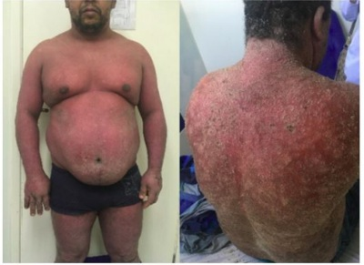
A Farmacodermia. RAST para amoxicilina e dipirona.
B Linfoma cutâneo. Mielograma e biopsia de pele.
C Pênfigo foliáceo. Imunofluorescência direta e indireta.
D Psoríase eritrodérmica. Biopsia de pele em três pontos.
Questão 551 · Conduta na taquiarritmia instável · 4000190491Paciente masculino, 72 anos de idade, trazido à sala de emergência após avaliação inicial pela enfermagem em protocolo de estrati cação de risco. Relata dor retroesternal em aperto, iniciada em repouso, há cerca de duas horas. Acompanha dispneia e tontura importante, com incapacidade para andar. Relata antecedente de miocardiopatia isquêmica em tratamento ambulatorial, e traz ecocardiograma recente com fração de ejeção de 30%. Ao exame físico, está vígil, orientado, sudoreico, pálido, com PA:70x40mmHg, SpO2:86%, pulsos nos e de difícil palpação. Ausculta sugere congestão pulmonar e o monitor mostrava QRS largo, com frequência cardíaca de 215bpm, registrado abaixo. Nesta situação, assinale a alternativa com a conduta adequada.
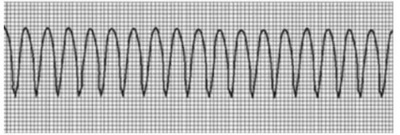
A Sedação com Propofol e cardioversão elétrica com 100J.
B Sedação com Propofol e cardioversão elétrica com 300J.
C Sedação com Etomidato e cardioversão elétrica com 300J.
D Sedação com Etomidato e cardioversão elétrica com 100J.
Questão 552 · Quadro clínico · Manejo inicial e pacotes · 4000190490Homem de 34 anos, sem antecedentes mórbidos, trazido ao PS por familiares relatando dois dias de cefaleia holocraniana inicialmente leve, com piora progressiva. Hoje a dor tinha forte intensidade, associada a vômitos e febre medida de 39°C. Ao exame inicial, encontra-se com FC:113bpm; PA:80x62mmHg; FR:18ipm; SpO2:96% em ar ambiente. Exame cardiopulmonar e abdominal sem alterações. Abertura ocular aos chamados, verbaliza por sons incompreensíveis e localiza estímulo doloroso, sem dé cits neurológicos focais. Rigidez nucal presente. A equipe de plantão indicou isolamento respiratório para gotículas e preencheu a noti cação na suspeita, iniciou o protocolo sepse, realizou coleta de líquor e culturas, iniciou expansão volêmica e pesquisa de disfunções orgânicas, além da prescrição de corticoterapia. Assinale a alternativa com as condutas a serem tomadas a seguir.
A Prescrever Vancomicina e Meropenem e suspender o isolamento respiratório após 48 horas do início do tratamento.
B Administrar Ceftriaxone e suspender o isolamento respiratório após 24h do início do tratamento com antibióticos.
C Aguardar resultados de culturas para iniciar antibioticoterapia e suspender o isolamento em 24 horas do início do tratamento guiado.
D Prescrever Ceftriaxone e Ampicilina e manter o paciente em isolamento respiratório até o final do tratamento com antibióticos
Questão 553 · Ventilação Não Invasiva VNI · 4000190489Paciente masculino, 62 anos, tabagista é trazido ao PS por serviço de ambulância particular. Familiar relata história de quatro dias de tosse produtiva, dispneia progressiva, sibilância e queda progressiva do estado geral, sem febre. É tabagista de 60 anos-maço e faz seguimento médico, usando beta-2- agonista de longa ação em uso contínuo e inalações conforme necessário. À entrada na sala de emergência, encontra-se sonolento, Glasgow: 10, FC:132bpm; PA: 110x70mmHg; FR:18ipm; SpO2:82% em máscara não-reinalante. Coletada gasometria arterial: pH:7,20; paO2:80mmHg; paCO2:80; bicarbonato:30mEq/L; base excess: +4mEq/L. Raio X abaixo: Em relação ao suporte ventilatório adequado para este paciente neste momento, assinale a alternativa com a melhor conduta.
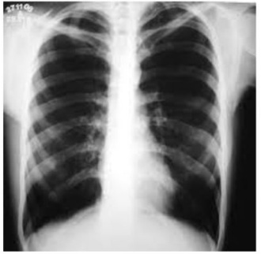
A Troca da máscara não-reinalante por cateter nasal de oxigênio visando SpO2entre 88 e 92%.
B Manter oxigenioterapia pela máscara não-reinalante visando manutenção da SpO2>94%.
C Indicar intubação orotraqueal e ventilação mecânica devido ao rebaixamento de consciência atual.
D Substituir a máscara por ventilação não-invasiva (VNI) e monitorar consciência, SpO2 e paCO2.
Questão 554 · Quimioprof ilaxia · 4000190488Homem de 28 anos, procurou o PS no início do plantão noturno, relatando um dia de coriza, dor de garganta, mialgia, cefaleia e febre medida de 38,5°C. Como antecedentes, relatava apenas pós-operatório tardio (mais de dois anos) de cirurgia bariátrica, com IMC atual de 31kg/m2. Apesar de se encontrar normotenso e normocárdico à chegada, o plantonista notou hipoxemia (SpO2:90%), e instalou cateter nasal de oxigênio, com melhora inicial e colocação do paciente em leito de observação na retaguarda do PS, onde estava aguardando realização de radiogra a de tórax e exames laboratoriais. Entretanto, ao longo da noite evoluiu com piora da hipoxemia e crescente necessidade de oxigênio suplementar. A radiogra a mostrou in ltrado pulmonar bilateral difuso ainda discreto, o que levantou hipótese de H1N1. Com menos de 12 horas de observação, desenvolveu hipotensão. O plantonista do período matinal introduziu antibióticos empiricamente, instalou um acesso venoso central e iniciou vasopressores e encaminhou à UTI. Ao chegar à unidade, houve rebaixamento de consciência e necessidade de intubação orotraqueal. Após 8 horas da admissão à UTI, o choque mostrou-se refratário e o paciente foi a óbito. No dia seguinte, a equipe recebe o resultado parcial das hemoculturas colhidas no PS, com diplococos Gramnegativos em identificação. Assinale a alternativa que indica quem deve receber quimioprofilaxia.
A Todos os profissionais que tiveram contato com o paciente, tanto no PS como na UTI.
B Os profissionais que fizeram procedimentos invasivos sem equipamento de proteção.
C Os profissionais que cuidaram do paciente antes do início da antibioticoterapia.
D Todos os profissionais que tiveram contato com o paciente antes da intubação.
Questão 555 · Controle de comorbidades · 4000190487Paciente masculino de 37 anos, retorna no ambulatório de Clínica Médica onde faz acompanhamento devido a asma diagnosticada há doze anos. Apesar de ter sido aumentada a dose de medicação na última consulta para Beclometasona 500mcg a cada 12 horas + Formoterol 12mcg a cada 12 horas, permanece com sintomas diários de sibilância e tosse seca, além de despertar noturno por broncoespasmo pelo menos duas vezes por semana, embora não tenha necessidade de buscar atendimentos médicos de emergência. A técnica de uso dos dispositivos inalatórios está adequada, assim como as medidas ambientais. Assinale a alternativa com o passo mais adequado a realizar nesta consulta.
A Encaminhar para especialista em tratamento de asma grave.
B Investigar a possibilidade de diagnóstico diferencial com fibrose cística.
C Buscar ativamente e tratar comorbidade que perpetue os sintomas.
D Associar prednisona 0,5mg/kg contínua e aumentar dose do Formoterol.
Questão 556 · Trombólise Endovenosa · 4000190486Paciente feminina de 60 anos, hipertensa mal controlada e tabagista. Trazida à emergência pois há 4 horas caiu da própria altura enquanto se vestia e não conseguiu se levantar. Familiares a encontraram caída e trouxeram ao serviço, onde à chegada apresentava-se alerta, com pupilas isocóricas e fotorreativas, sem rigidez nucal, com hemiparesia direita e disartria; NIHSS:8; FC: 88bpm; PA:164x100mmHg; glicemia capilar: 164mg/dl. Realizada TC de crânio representada pela imagem abaixo: Assinale a alternativa com a melhor conduta terapêutica no momento.
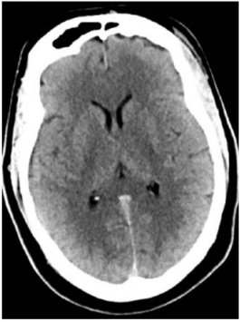
A Aplicar Alteplase, desde que não haja contraindicação à realização de trombólise.
B Prescrever insulina e avaliar novamente o déficit após controle metabólico.
C Iniciar Nitroprussiato em bomba de infusão contínua até reduzir 25% da pressão arterial.
D Administrar Aspirina 300mg e manter em observação hospitalar por 48 horas.
Questão 557 · Diagnóstico da anemia megaloblástica · 4000190484Paciente feminina de 50 anos, em seguimento no ambulatório de Clínica Médica, procurou o atendimento para fazer um check -up de rotina, com queixa apenas de insônia e estresse por sobrecarga de trabalho e retorna hoje para checar exames. Como antecedentes, tem hipotireoidismo em uso de levotiroxina 75mcg/dia e vitiligo. Pratica atividade física (180 minutos de atividade aeróbica semanal), sem intolerância. Nega tabagismo ou etilismo. Ao exame clínico na primeira consulta, estava normotensa, normocárdica, descorada 1 a 2+/4, hidratada, eupneica. IMC: 24kg/m² , sem alterações ao exame de cabeça e pescoço, cardiopulmonar ou abdominal, com manchas hipocrômicas em joelhos, cotovelos e mãos, sem adenomegalias palpáveis. Na primeira consulta foram pedidos alguns exames direcionados, trazidos hoje pela paciente: Indique o(s) exame(s) adequado para a confirmação da principal suspeita diagnóstica e o tratamento inicial a ser instituído:

A Teste de Coombs direto e indireto e pesquisa de FAN; prescrever pulsoterapia com corticosteroide após uso de Mebendazol por três dias.
B Índice de segmentação de neutrófilos; prescrever cobalamina 1.000mcg intramuscular semanal por quatro semanas e mensal após.
C Mielograma com coloração de Pearls; realizar transfusão de hemácias e plaquetas hoje e periodicamente conforme necessário.
D Biopsia de medula óssea com imunofenotipagem; iniciar quimioterapia com metotrexato e ácido folínico semanal.
Questão 558 · Esteroidogênese · Índices hematimétricos · Hemograma · 4000190482Um homem de 29 anos, passado de competições de cross t, deixou de competir há 8 meses devido a lesão importante em músculos da coxa. Ele vem à consulta com a esposa alegando não conseguirem gerar lhos, apesar de relações sexuais frequentes 3x por semana e sem contracepção há 1 ano e seis meses. Suspeitando do uso de esteroides anabolizantes (EAS), qual alternativa está correta em relação ao uso de EAS?
A A observação do aumento do hematócrito no hemograma rotineiro aumenta a suspeita do abuso de EAS.
B Os usuários de EAS possuem a mesma mortalidade da população geral.
C O aumento do hormônio luteinizante e a supressão do hormônio folículo estimulante constituem dados indiretos do uso abusivo de EAS.
D O aumento do volume testicular é um sinal comum do abuso de EAS.
E Os frequentes ensaios clínicos randomizados duplo cegos e as metanálises sobre o uso abusivo de EAS fornecem à comunidade médica muitas informações sobre o tema do uso abusivo de EAS.
Questão 559 · Eosinóf ilos · Síndrome hipereosinof ílica · 4000190479Homem de 44 anos, com dor leve contínua em hipocôndrio esquerdo, não aliviada por analgésicos comuns, associada à queimação epigástrica importante, sem melhora após medidas higiênico-dietéticas e antiácidos há 2 anos. Há 8 meses apresenta lesões úlcero-crostosas, eritematosas em lábios e ulceradas em mucosa jugal, dolorosas, sangrantes e máculas eritematosas que evoluíram rapidamente para lesões úlcero-crostosas, eritematosas, não pruriginosas, não dolorosas, não sangrantes, difusas em face, pescoço e membros superiores, piores em áreas expostas ao sol. Nenhum antecedente familiar, social, patológico ou laboral relevante, sem história de alergias ou atopia. Exame físico: normocorado, baço palpável a 5cm da borda costal esquerda, ausência de linfonodomegalia e lesões mucocutâneas já descritas. Hemograma: hemoglobina 10 mg/dL, leucócitos 18,2x109 /L, eosinó los 9,1x109 /L (sem anormalidades morfológicas), plaquetas 177x109 /L. Desidrogenase láctica, ferritina, albumina, vitamina B12 e IgE séricas normais. Sorologias para HIV e hepatites virais, provas reumatológicas e inflamatórias negativas. Pesquisas negativas para ovos e parasitas nas fezes, com persistência da eosino lia após cursos de albendazol e ivermectina. Ecodopplercardiograma com espessamento mitral, ultrassonogra a abdominal com esplenomegalia homogênea (16 cm) e tomogra as (tórax/abdome) sem achados relevantes. Endoscopia digestiva demonstrou gastrite enantematosa leve e biópsia de mucosa gástrica com gastrite crônica moderada, sem evidência de infecção pelo helicobacter pilory. Biópsia de pele com ectasia vascular inespecí ca e biópsia de mucosa jugal com ulceração mucosa e infiltrado coriônico difuso por mononucleares, neutrófilos e eosinófilos. Aspirado MO: hipercelular, relação G/E: 5/1, série granulocítica hipercelular, com escalonamento maturativo preservado (blastos 2%) e presença de eosino lia (30%). Biópsia MO: celularidade 100%, 90% da qual representada por eosinó los e precursores. Cariótipo MO (banda G): 46, XY em 20 metáfases. Pesquisa BCR-ABL (RT-PCR): negativa. Hibridação in situ por uorescência (FISH) para anormalidade de CHIC₂, testado com sonda 4q12 (FIP1L1, CHIC₂, PDGFR PDGFR queixas gastrointestinais após 15 dias e desaparecimento dos sinais de esplenomegalia após 30 dias de tratamento. Com base no caso descrito acima, qual a alternativa correta?
A O diagnóstico dessa patologia não requer exclusão de outras causas de eosinofilia.
B A apresentação é clássica com esplenomegalia presente em mais de 90% dos casos.
C Manifestações cutâneas com as descritas são raras e acometem menos de 10% dos casos.
D A fisiopatologia dessa condição é à custa de vasculite na microcirculação e depósitos de eosinófilos nas paredes vasculares.
E A maior causa de morbimortalidade é a cardiopatia, que acontece em até 50% dos casos.
Revisar: possível letra faltando em enunciado
Questão 560 · Miocardite · 4000190478Homem, 35 anos, tabagista, procurou pronto-socorro com queixa de dor torácica típica de Síndrome Coronariana Aguda (SCA), sem história de pródromos virais associados. Exame físico sem alterações. Eletrocardiograma (ECG) com inversão de onda T em toda parede anterior. Troponina elevada. Submetido à estrati cação invasiva com cineangiocoronariogra a, com achado de coronárias normais. A Ressonância Nuclear Magnética (RNM) cardíaca mostrou hipertro a medioapical com maior espessura de 14mm e edema miocárdio nas sequências ponderadas de T2 em segmentos ântero-lateral anterior, anterosseptal e inferoseptal médios e segmentos anterior e septal apicais. Nestas mesmas paredes, observado realce tardio mesocárdico. Na ocasião é orientado o uso de betabloqueador, restrição de atividade física intensa e pesquisa de familiares. Dois anos após, em atendimento ambulatorial, seu ECG era normal, feita uma nova RNM, que evidenciou ausência de sinais sugestivos de hipertro a miocárdica; presença de brose mesocárdica acometendo os segmentos inferior e inferolateral basais; ausência de edema. Com base no caso descrito acima qual a alternativa correta?
A Trata-se de miocardiopatia hipertrófica com melhora clínica e na imagem após medidas recomendadas.
B O cardiodesfibrilador implantável é recomendado pelo risco de arritmias e morte súbita.
C Displasia arritmogênica de ventrículo direito é a principal hipótese diagnóstica.
D Miocardite é um provável diagnóstico, já que apresentou melhora com seguimento.
E Amiloidose miocárdica é provável pelo espessamento das paredes por provável depósito de substância amiloide.
Questão 561 · Lesões por exposição ao f rio · 4000190477Uma mulher moradora de rua da grande São Paulo foi resgatada para uma hospital após uma noite fria e verificação de que seu pé esquerdo está entorpecido e parecer como “morto”. Ao exame, o pé apresenta vesículas hemorrágicas distribuídas em toda região distal do pé até o tornozelo. O pé está frio e perdeu a sensibilidade à dor ou à temperatura. O pé direito está hiperemiado, mas não apresenta vesículas e sua sensibilidade está normal. O restante do exame físico está dentro da normalidade. Qual alternativa traz a afirmação correta em relação ao tratamento desse distúrbio?
A Não se deve tentar o reaquecimento ativo do pé.
B Uma dor intensa será antecipada durante o período de reaquecimento e precisará de narcóticos.
C Foi constatada que a heparina melhora os desfechos nesse distúrbio.
D Amputação imediata está indicada.
E A sensação normal tende a voltar totalmente com o reaquecimento.
Questão 562 · Diagnóstico · Apresentação clínica · Hipopituitarismo · 4000190475Paciente do sexo masculino, 60 anos, pardo, portador de brilação atrial, em uso de rivaroxabana 20mg/dia, com antecedente de derrame pericárdico importante com realização de janela pericárdica 03 meses antes da atual internação, com drenagem de líquido citrino gelatinoso, que após análise bioquímica revelou tratar-se de um transudato. Apresentou quadro de desorientação e alteração do nível de consciência, sendo internado para investigação. À anamnese, paciente apresentava sintomas inespecí cos, como fadiga, insônia, labilidade emocional e indisposição para realização de atividades diárias. Ao exame físico, paciente euvolêmica, sem alterações evidentes. Nos exames admissionais, evidenciado sódio sério de 119 mg/d (135-145), com resposta sintomática parcial à reposição de salina hipertônica a 3%. Na tomogra a de crânio, sem sinais sugestivos de acidente vascular encefálico (AVC), somente evidenciado sinais de manipulação prévia cirúrgica com alterações na calota craniana adjacente devido a cirurgia para retirada de tumor benigno, o qual não soube especi car, há 18 anos. Durante internação, manteve os sintomas inespecí cos, sem alteração do nível de consciência, com hiponatremia mantida apesar da restrição hídrica. Na investigação laboratorial, anemia normocrômica e normocítica, leve eosino lia , sódio sérico variando entre 121-129 mg/dl, TGP 21 e TGO 36, sem alteração na função renal, potássio limite superior da normalidade, sendo encontrado TSH 4.0 mg/dl( 0,5-5,5) e T4L 0.21 mg/dl( 0,6-1,9) , cortisol matinal 2.4 mcg/dl ( 5-23), testosterona total de 23.8 mg/dl( 300-800).Na ressonância magnética de crânio, apresentando glândula hipo sária de volume bastante reduzida, notando-se insinuação da cisterna supra selar na sela turca, determinando compressão da hipó se contra o assoalho da sela. Com base no caso, qual a alternativa com a resposta correta?
A Paciente deverá repetir os exames pois não existe explicação para essa correlação TSH e T4 livre.
B Trata-se de um pan-hipopituitarismo secundários a uma sela vazia, e a hiponatremia poderá ser explicada tanto pelo hipotireoidismo central como pelo hipocortisolismo.
C Hiponatremia é secundária à doença neoplasia recidivante em sela túrcica.
D O derrame pericárdico e a hiponatremia são secundários a um quadro de insuficiência cardíaca congestiva.
E O tumor benigno operado no passado tratava-se de um prolactinoma, pois é o adenoma benigno mais comum e a cirurgia é a terapêutica de escolha.
Revisar: possível letra faltando em enunciado
Questão 563 · Diagnóstico dif erencial de dor torácica na emergência · 4000190474Paciente do sexo masculino de 62 anos de idade, hipertenso e dislipidêmico, chega ao serviço de emergência do Hospital Nova Esperança com dor torácica; surgiu no repouso e já dura mais de 1 hora. A dor é retroesternal com irradiação para ambos os ombros. A dor é descrita como pressão difusa, associada também a náusea e sudorese fria. Um fator de melhora da dor é se encolher em decúbito lateral esquerdo. Ao exame físico é observado a diaforese, frequência cardíaca de 105 bpm, pressão arterial 150x 88 mmHg. Com base na história do paciente, qual dado tem menos correlação com síndrome coronariana aguda?
A Sudorese.
B Náusea.
C Melhora com decúbito lateral esquerdo.
D Dor retroesternal e como pressão difusa.
E Irradiação para ambos os ombros.
Questão 564 · Tratamento Prof ilático · 4000190473Mulher de 24 anos é atendida em consulta de rotina. Ela se queixa de episódios de cefaleia, associada a náuseas, sintomas visuais e sensibilidade à luz. A dor é latejante, pulsátil e unilateral. O sono melhora os sintomas. Refere que o quadro tem atrapalhado sua vida diária. Uma vez decidido iniciar uma medida profilática para o quadro descrito, a conduta inicial de escolha é
A escitalopram.
B fluoxetina.
C gabapentina.
D propranolol.
E rizatriptano.
Questão 565 · Exame f ísico · 4000190472Mulher de 75 anos com diabete melito tipo 2 e hiperlipidemia se queixa de períodos de dor torácica aos esforços físico há 2-3 anos. No dia anterior, ela relata que sentiu a dor no peito ao subir uma escada e em seguida desmaiou. Ao exame físico: no momento está bem, sem sintomas; pressão arterial: 132 x 98 mmHg; frequência cardíaca: 82 bpm; ausculta cardíaca: sopro sistólico em crescendo-decrescendo áspero, melhor audível no segundo espaço intercostal da borda esternal direita. O diagnóstico mais provável é
A aneurisma de aorta.
B estenose aórtica.
C insuficiência mitral.
D miocardiomiopatia hipertrófica.
E miocardiomiopatia restritiva.
Questão 566 · Secreção Inapropriada de Hormônio Antidiurético SIADH · 4000190471Mulher de 76 anos com história de câncer de pulmão chega ao pronto-socorro com fraqueza 2 dias após tratamento quimioterápico ambulatorial. Os sinais vitais são notáveis para pulso: 80/min; pressão arterial: 110 x 70 mmHg; frequência respiratória: 18 ipm. Exames séricos: sódio: 120 mEq/L. Ela recebe 2 litros de soro siológico durante 1 hora e evolui com uma crise convulsiva. Novo sódio coletado é de 116 mEq/L. A etiologia mais provável do quadro clínico dessa paciente é
A liberação inapropriada de hormônio antidiurético (ADH).
B metástase no sistema nervoso central.
C neutropenia febril com sepse.
D pseudohiponatremia.
E toxicidade pela quimioterapia.
Questão 567 · Diagnóstico e tratamento de erisipela e celulite · 4000190470Em relação à celulite, é correto afirmar que
A a avaliação ultrassonográfica não é útil para descartar a presença de um abscesso extenso.
B a tomografia computadorizada é útil para descartar fasciíte necrotizante.
C a aspiração por agulha da celulite não complicada raramente é capaz de identificar um organismo causador da infecção.
D o acometimento bilateral das extremidades inferiores é muito frequente.
E febre e leucocitose são fundamentais para o diagnóstico.
Questão 568 · Doença de Graves · 4000190469Mulher de 31 anos apresenta quadro de taquicardia, ansiedade, irritabilidade, tremores, palpitações, intolerância ao calor e perda de peso. Ela não está grávida. Na região cervical, nota-se bócio à inspeção (grau III) e não há oftalmopatia. O hormônio estimulante da tireoide está suprimido e o T4 livre aumentado (3,3 ng/dL). A cintilogra a da tireoide mostra uma absorção aumentada difusamente. A pesquisa de imunoglobulina estimulante da tireoide é positiva (3,1 UI/L). O melhor tratamento para doença de base dessa paciente é
A -bloqueador. β
B cirurgia.
C iodo radioativo.
D lítio.
E propiltiouracil.
Questão 569 · Quadro clínico da síndrome hemolítico urêmica SHU · 4000190468Mulher de 38 anos é admitida com dor abdominal e febre na última semana. A creatinina sérica é de 3,1 mg/dL (era de 1,0 mg/dL há 6 meses) além de plaquetopenia. Sorologias e autoanticorpos foram coletados e estão pendentes. A biópsia renal é feita e revela lesão endotelial e deposição de trombos/ brina nos capilares glomerulares e arteríolas. O diagnóstico mais provável nessa paciente é
A glomerulonefrite proliferativa focal.
B síndrome hemolítico-urêmica.
C síndrome de Goodpasture (doença antimembrana basal glomerular).
D vasculite de hipersensibilidade.
E vasculite por anticorpo anticitoplasma de neutrófilo.
Questão 570 · Espirometria · 4000190467Homem de 40 anos é avaliado 10 dias após uma visita ao pronto-socorro com tosse, desconforto torácico, chiado e falta de ar. Ele foi tratado com salbutamol nebulizado e prednisona por 5 dias. Desde o término do corticoide, refere que tem se sentido bem, sem sintomas e sem necessidade de uso do salbutamol. Ao exame físico, os sinais vitais são normais. A saturação de oxigênio é de 98% em ar ambiente. O exame cardiopulmonar não é digno de nota. A espirometria é normal. Nesse paciente, o manejo mais adequado é
A iniciar budesonida-formoterol.
B iniciar fluticasona.
C solicitar um hemograma e dosagem de IgE sérica.
D solicitar a dosagem de óxido nítrico exalado.
E solicitar o teste de provocação com metacolina.
Questão 571 · Quadro clínico · Febre e Febre de origem indeterminada FOI · Febre de origem indeterminada FOI · 4000190465Paciente de 40 anos de idade, sexo masculino, com doença de Crohn, em uso de in iximab nos últimos 6 meses. Chega em ambulatório do Centro de Saúde Nova Esperança no meio do ano com tosse persistente e febre de 38,4ºC. Ele refere não ter feito imunização contra influenza no corrente ano. Em relação à abordagem da febre nesse paciente, qual a afirmativa verdadeira?
A Paciente possuía PPD negativo antes do infliximab, mesmo assim, deve-se considerar tuberculose ativa como causa da febre e tosse.
B Devido à época do ano e na ausência de imunização deve-se pensar em infeção viral de vias aéreas.
C É rara a associação entre febre com infecção e uso de infliximab.
D É prudente evitar antitérmicos nesses casos, existem evidências de que a febre atua como adjuvante no sistema imune, e os antipiréticos retardam a resolução de infecções virais e bacterianas.
E A dosagem da interleucina 1 seria importante para determinar se a febre é de etiologia infecciosa.
Questão 572 · Síndrome de MalloryWeiss · 4000190464Homem de 21 anos de idade, previamente hígido, sem comorbidades, é atendido após consumo excessivo de bebida alcoólica durante a noite anterior. Ele apresentou vários episódios de vômitos reentrantes, evoluindo com o aparecimento de estrias de sangue vermelho vivo na êmese. Após hidratação uida e antieméticos, o paciente encontra-se em repouso confortável e hemodinamicamente estável. O teste do guaiaco fecal é negativo e o abdome é flácido e indolor. A causa mais provável do sangramento é
A doença ulcerosa péptica.
B esofagite erosiva aguda.
C gastrite aguda induzida pelo álcool.
D laceração de Mallory-Weiss.
E varizes esofágicas.
Questão 573 · Hipoaldosteronismo · 4000190463Uma mulher de 22 anos portadora de diabetes desde os 10 anos queixa-se de fadiga progressiva há 1 mês. Durante os últimos 10 dias, ela também tem apresentado febre, náusea e diarreia. Os exames laboratoriais mostram hematócrito de 44%, sódio de 122 mEq/L, potássio de 5,5 mEq/L, cloreto de 98 mEq/L, bicarbonato de 20 mEq/L, glucose de 105 mg/dl e corpos cetônicos na urina +. O exame físico deverá mostrar
A xantomas eruptivos.
B hiperpigmentação de mucosas.
C acantose nigricans.
D hálito cetônico.
E baixa estatura e ausência de caracteres sexuais secundários.
Questão 574 · Carência nutricional de vitamina B12 · 4000190462Homem de 59 anos procura a unidade de saúde se queixando de fraqueza, fadiga e tontura há 3-4 meses. Ele é vegano e pratica a ioga, mas notou recentemente um agravamento do desequilíbrio durante as atividades. Os exames laboratoriais são notáveis para hemoglobina de 9,8 g/dL; volume corpuscular médio de 111 fL; bilirrubina indireta de 2,2 mg/dL; desidrogenase lática de 662 U/L. O esfregaço periférico mostra hipersegmentação de neutró los e macro-ovalócitos. Considerando a principal hipótese diagnóstica, constitui uma complicação frequente da doença:
A demência tratável.
B degeneração cerebelar.
C hemólise intravascular.
D miopatia.
E oftalmoplegia.
Questão 575 · Apresentação clínica · Reação medicamentosa com eosinof ilia e sintomas sistêmicos DRESS · 4000190460Paciente de 22 anos de idade, sexo feminino, apresenta história prévia de crises convulsivas, com o primeiro episódio em setembro de 2021. Em janeiro de 2022 iniciou o uso contínuo de carbamazepina via oral. Em 07 de fevereiro do mesmo ano deu entrada no pronto socorro apresentando mal estado geral, com di culdade em falar, trazida em cadeira de rodas, febre de 39°C, linfadenomegalia dolorosa, icterícia (++/4), edema generalizado e exantemas por todo o corpo com descamação precoce. O hemograma traz contagem de leucócitos: neutrófilos 72%, linfócitos 10%, eosinófilos 17%, monócitos 1% e nenhum basófilo. Qual o diagnóstico mais provável?
A Reação medicamentosa com eosinofilia e sintomas sistêmicos (DRESS).
B Linfoma de Hodgkin eosinofílica com síndrome de Sweet.
C Eritema multiforme.
D Síndrome do choque tóxico estafilocócica.
E Síndrome de Stevens-Johnson.
Questão 576 · Abordagem Inicial · 4000190458Homem 71 anos, natural de Águas Claras, residente em São Paulo, divorciado, com história de apresentar fezes nas com sangramento há 4 meses, acompanhada de emagrecimento significativo, desconforto abdominal em hipogástrio, procurou serviço médico de emergência por ter tido um episódio de sangramento anal de grande monta há 1 dia, acompanhado de tontura e sensação de desfalecimento. Ao EF, apresenta-se com instabilidade hemodinâmica e confusão mental. Assinale a alternativa que melhor descreve o atendimento inicial.
A Deve-se dirigir a atenção para o histórico clínico e para o exame físico, pois a história ajuda a fazer uma avaliação preliminar do local e da causa do sangramento e das condições clínicas significativas que possam determinar ou alterar o curso da terapia e, consequentemente, conduzir ao melhor tratamento, independente do tempo que isso leve
B Encaminhar o paciente para colonoscopia é o procedimento diagnóstico inicial de escolha, uma vez que o local da hemorragia é detectado, tendo a vantagem de ser também terapêutico, o que reduz os riscos para o paciente e os custos para o hospital.
C Encaminhar o paciente para endoscopia precoce com terapia dirigida, o que pode reduzir a necessidade de transfusão sanguínea, indicação de cirurgia e a permanência hospitalar, sendo altamente positiva para identificar uma lesão GI alta e, se negativa, para direcionar a atenção para uma fonte GI baixa.
D Uma avaliação inicial rápida possibilita a determinação da urgência da situação que demanda imediata reanimação volêmica, com a estabilização das condições hemodinâmicas do paciente e o estabelecimento de um meio para a monitoração da perda sanguínea ativa.
E Indicação de laparotomia exploradora de urgência com o propósito de elucidar com mais rapidez o diagnóstico e proporcionar uma terapêutica efetiva para o caso, o que reduz os riscos para o paciente e os custos para o hospital.
Questão 577 · Sangramento por Tumor Colorretal · 4000190457Homem 71 anos, natural de Águas Claras, residente em São Paulo, divorciado, com história de apresentar fezes nas com sangramento há 4 meses, acompanhada de emagrecimento significativo, desconforto abdominal em hipogástrio, procurou serviço médico de emergência por ter tido um episódio de sangramento anal de grande monta há 1 dia, acompanhado de tontura e sensação de desfalecimento. Ao EF, apresenta-se com instabilidade hemodinâmica e confusão mental. Qual o diagnóstico mais provável nesse caso?
A Doença inflamatória intestinal.
B Doença hemorroidária.
C Neoplasia de cólon esquerdo.
D Colite isquêmica.
E Fissura anal.
Questão 578 · Sangramento por Angiodisplasias · 4000190456Mulher, 27 anos, obstipada crônica, sem comorbidades ou antecedentes familiares de doenças neoplásicas, apresentou sangramento ao evacuar, que tingiu a água do vaso sanitário, fazendo-a procurar serviço médico. Paciente encontrava-se estável hemodinamicamente. Foi realizado exame proctológico, no qual se evidenciaram alterações. Com base nessas informações, qual é o diagnóstico mais provável?
A Doença hemorroidária.
B Neoplasia de cólon direito.
C Angiodisplasia.
D Diverticulose.
E Colite.
Questão 579 · Diagnóstico dos linf omas clínico laboratorial citogenética e biologia molecular · 4000190454Um paciente de 50 anos, sexo masculino, veio para consulta com queixa de febre e perda de peso. Os sintomas surgiram há 3 meses, a febre é diária e os valores chegam a 39,4° C com sudorese noturna, fadiga intensa e perda de 22kg no período. Nega exposição a pacientes com alguma doença, nega histórico de viagens, única parceira sexual há 25 anos, nega transfusões sanguíneas. Ao exame não foi identi cado nada relevante. No laboratório revelou leucócitos 15 700/µL, com 80% de polimorfonucleados, 15% linfócitos, 3% eosinó los e 2% monócitos e níveis de cálcio de 11,2 g/dl (8, 8-10, 4). O esfregaço do sangue periférico é normal e o VHS é de 57 mm/h. O painel reumatológico é normal, o nível de ferritina é de 550 ng/ml. Função hepática e renal sem anormalidades. Eletroforese de proteínas séricas demonstra gamopatia policlonal. Os testes para vírus HIV, hepatite B, hepatite C, Epstein-Barr e citomegalovírus foram negativos. O antígeno urinário de Histoplasma é negativo. As hemoculturas colhidas na hora da febre em 3 amostras, radiogra a do tórax e PPD foram todos negativos. A tomogra a de tórax, abdômen e pelve revelam aumento limítrofe de linfonodos no abdômen e retroperitônio de 1,3cm. Qual deve ser e o melhor passo seguinte na investigação desse caso?
A Tratamento empírico com corticosteroides em dose imunossupressora.
B Tratamento empírico para mycobacterium tuberculosis.
C Punção biópsia por agulha dos linfonodos aumentados.
D Tomografia por emissão de pósitrons (PET)-TC.
E Dosar níveis séricos de enzima conversora de angiotensina.
Revisar: possível letra faltando em enunciado
Questão 580 · Abordagem Inicial · 4000190450Mulher de 76 anos dá entrada no PS com história de melena há duas horas, acompanhada de desconforto abdominal difuso, náuseas e sinais de instabilidade hemodinâmica, referindo ser portadora de úlcera péptica gástrica. A abordagem inicial dessa paciente deverá ser:
A via aérea definitiva com ventilação assistida e reposição volêmica.
B passagem de sonda de Sengstaken-Blakemore.
C realização de endoscopia digestiva alta imediata.
D indicar colonoscopia na primeira hora do atendimento.
E encaminhar o paciente para realização de TIPSS.
Questão 581 · Síndrome do Neurônio Motor Inf erior · 4000190441Um homem de 48 anos de idade procura ambulatório de clínica médica no Centro de Saúde Nova Esperança com queixa de fraqueza progressiva há 6 meses. Relata tropeçar com os dedos dos pés enquanto caminha; em certa ocasião deixou cair um copo cheio de água por se sentir muito fraco para tolerar o peso dele. Suspeitamos de um distúrbio acometendo o neurônio motor inferior. Dos achados abaixo, qual deles não possui uma manifestação de acometimento de neurônio motor inferior?
A Diminuição do tônus muscular.
B Fraqueza distal maior que a proximal.
C Fasciculações.
D Reflexos tendíneos negativos.
E Atrofia muscular grave.
Questão 582 · Cardiopatia hipertróf ica · Cardiomiopatia hipertróf ica · 4000190438Um homem de 60 anos de idade chega ao ambulatório de cardiologia do Hospital Nova Esperança com queixa de dor torácica ao esforço moderado e dispneia leve quando sobe ladeiras. Ao exame verificamos sopro messosistólico. Após ausculta cuidadosa temos certeza de trata-se de sopro estenose aórtica ou da forma obstrutiva de miocardiopatia hipertró ca. Qual manobra está adequadamente associada a achado clínico que sugere que esse sopro é devido à miocardiopatia hipertró ca obstrutiva, em oposição à estenose de valva aórtica?
A Manobra de preensão da mão – diminuição da intensidade do sopro.
B Iniciar a administração venosa de milrinona – aumento do sopro sistólico.
C Palpação de pulso carotídeo – pulso carotídeo diminuído e tardio.
D Agachamento – aumento da intensidade do sopro.
E Manobra de valsava – aumento da intensidade do sopro.
Revisar: possível letra faltando em enunciado
Questão 583 · Tratamento da hiponatremia · 4000190435Uma mulher de 63 anos de idade chega à emergência do Hospital Nova Esperança com história de diarreia há 4 dias de duração. Ao exame físico ela apresenta taquicardia leve, mucosas secas. No laboratório, o nível de sódio é de 132 mEq/L (135-145), e a concentração de sódio urinário está indetectavelmente baixa. Qual a conduta na correção da hiponatremia dessa paciente?
A Prescrever furosemida para promover perda de água livre.
B Prescrever hidroclorotiazida para promover perda de água livre.
C Prescrever hidratação venosa para reduzir os níveis séricos de hormônio antidiurético (ADH) e possibilitar uma diurese aquosa livre.
D Prescrever terapia com tolvaptana com antagonista do ADH.
E Oferecer uma quantidade extra de sódio para corrigir a deficiência corporal total de sódio.
Questão 584 · Doença por lesões mínimas · 4000190433Escolar do sexo masculino, 7 anos de idade, apresenta obstrução nasal, coriza clara e dor de garganta há 6 dias. Fez uso de anti-inflamatório nos últimos 2 dias. Apresentou, há 4 dias, aumento da frequência das evacuações e fezes amolecidas, quadro que melhorou em cerca de 48 horas. Apresenta, nas últimas 24 horas, edema periorbitário. Mãe refere diminuição do volume urinário, com aspecto mais escurecido da urina. Ao exame físico, apresenta-se com FR de 25 irpm, FC de 124 bpm e PA: 100 x 60 mmHg (valores menores que o percentil 90 para a idade, sexo e altura). Há edema periorbitário bilateral. Exames laboratoriais: Urina tipo 1 com densidade 1025, pH de 5, proteínas de 500 mg/dL, 3 leucócitos por cam- po, 20 hemácias por campo. A relação proteína/creatinina urinária em amostra única foi de 2,1. A dosagem de albu- mina é de 2,5 mg/dL, ureia 50 mg/dL e creatinina sérica de 0,6 mg/dL. O diagnóstico mais provável é
A glomerulonefrite aguda pós-infecciosa.
B síndrome hemolítico-urêmica.
C síndrome nefrótica.
D nefrite tubulointersticial por droga.
E infecção do trato urinário.
Questão 585 · Tratamento · 4000190431Paciente de 50 anos, sexo masculino e com câncer de pulmão de pequenas células submetido à quimioterapia. É levado à emergência do Hospital Nova Esperança para avaliação do rebaixamento do nível de consciência. Na avaliação laboratorial, o cálcio sérico é de 11,5 mg/dl, com nível sérico de albumina de 2,5g/dl. Ao exame físico observamos uma frequência cardíaca de 132 bpm, pressão arterial 90 x 55 mmHg, frequência respiratória de 18 incursões/min., temperatura de 37,8ºC. Qual é a primeira resposta terapêutica apropriada para a hipercalcemia desse paciente?
A Furosemida venosa, 80 mg.
B Hidratação agressiva com solução salina intravenosa.
C Hidrocortisona 100 mg ao dia.
D Não há necessidade de terapia, pois o nível de cálcio corrigido pela albumina está normal.
E Ácido zoledrônico, 4 mg via intravenosa.
Questão 586 · Acidose metabólica · 4000190430Um homem de 50 anos de idade, com história de diabetes melitus, hipertensão e abuso anterior de narcóticos chega à emergência do Hospital Nova Esperança com alteração do estado mental. Na apresentação, o paciente encontra-se obnubilado. Os valores dos exames laboratoriais colhidos na emergência são o seguinte: pH= 7,21; PaCO₂ =26; HCO₃ = 12; Na+ = 145; cloreto = 100 e glicose = 180 mg/dl. Qual é o distúrbio metabólico acidobásico desse paciente?
A Acidose metabólica e acidose respiratória combinados.
B Acidose metabólica.
C Alcalose metabólica.
D Acidose respiratória.
E Alcalose respiratória.
Questão 587 · Manif estações Clínicas · Condições Associadas · Diagnóstico · 4000190429Uma mulher de 24 anos de idade procura o ambulatório de clínica médica no Centro de Saúde Nova Esperança com exantema de distribuição difusa no dorso, nas nádegas, cotovelos e joelhos. O exantema começou de forma súbita com prurido intenso e sensação de queimação. A biopsia da lesão revela dermatite neutrofílica nas papilas dérmicas, enquanto a imuno uorescência mostra depósito granuloso de IgA na derma papilar e ao longo da membrana basal epidérmica. Os exames de laboratório são todos normais, exceto por uma deficiência de vitamina D e uma ferritina baixa que não responderam à reposição oral. Qual o provável diagnóstico do caso em questão?
A Anemia perniciosa com dermatite esfoliativa.
B Doença de Whipple com dermatite atópica.
C Anemia perniciosa com exantema súbito.
D Doença celíaca com dermatite herpetiforme.
E Linfangiectasia intestinal com linfedema pruriginoso.
Questão 588 · Tratamento da Doença Metastática · 4000190420Paciente de 65 anos, bom estado geral, portador de neoplasia maligna de cólon direito (adenocarcinoma), sem sinais de obstrução, sangramento ou perfuração, e apresentando metástase isolada de 4cm de diâmetro no segmento III do fígado. Qual o tratamento mais adequado para esse paciente?
A Quimioterapia pré-operatória, seguida de colectomia direita e hepatectomia segmentar no mesmo tempo cirúrgico.
B Colectomia direita, seguida de quimioterapia pós-operatória e hepatectomia segmentar no terceiro tempo.
C Colectomia direita e hepatectomia segmentar no mesmo tempo cirúrgico, seguida de quimioterapia pós-operatória.
D Hepatectomia esquerda, seguida de quimioterapia pós-operatória e colectomia direita no terceiro tempo.
E Apenas quimioterapia paliativa.
Questão 589 · Síndrome do Intestino Curto · Outros Diagnósticos · 4000190405Paciente portador de isquemia mesentérica aguda é submetido à laparotomia com achado intraoperatório de trombose da artéria ileocecocólica e necrose do segmento intestinal por ela irrigado. Na síndrome do intestino curto que este paciente desenvolverá após ressecção do segmento comprometido, quais serão os principais nutrientes que sofrerão déficit de absorção?
A Ferro, magnésio e cálcio, vitamina A.
B Ferro e monossacarídeos.
C Sais biliares e vitamina B12.
D Sais biliares e ácido fólico e vitamina D.
E Proteínas, sais biliares, cálcio e magnésio.
Questão 590 · Vacina contra Haemophilus inf luenza tipo B · Vacinas pneumocócicas · Autoesplenectomia · 4000190399Paciente de 16 anos será submetido à esplenectomia total para tratamento de anemia falciforme. Umas das medidas para prevenção da sepse fulminante pós-esplenectomia é vacinação contra germes encapsulados, que deve oferecer proteção para quais patógenos:
A Streptococcus pneumoniae, neisseria meningitidis e haemophilus influenzae.
B Stafilococcus aureus, streptococcus pneumoniae e neisseria meningitidis.
C Stafilococcus epidermidis, haemophilus influenzae e proteus mirabilis.
D Streptococcus pneumoniae, haemophilus influenzae e pseudomonas aeruginosa.
E Streptococcus pneumoniae, neisseria meningitidis e klebisella pneumoniae.
Questão 591 · Etiologia · 4000190398De acordo com as recentes diretrizes do manejo da pancreatite aguda (PA), são consideradas recomendações nível IA de evidência, exceto:
A Antibióticos profiláticos em pacientes com PA não estão associados a uma diminuição significativa na mortalidade ou morbidade. Assim, antibióticos profiláticos de rotina não são mais recomendados para todos os pacientes com pancreatite aguda.
B Colangiopancreatografia retrógrada endoscópica (CPRE) de rotina em PA por cálculos biliares não é indicada.
C Na necrose pancreática infectada, a drenagem percutânea como primeira linha de tratamento (abordagem step-up) retarda o tratamento cirúrgico para um momento mais favorável, ou mesmo resulta na resolução completa da infecção em 25-60% dos pacientes e é recomendada como primeira linha de tratamento.
D A colecistectomia laparoscópica durante a admissão é recomendada na PA leve por cálculos biliares.
E Na ausência de cálculos biliares ou história significativa de uso de álcool, os níveis séricos de triglicérides e cálcio devem ser medidos. Níveis séricos de triglicerídeos acima de 1000 mg/dl indicam a hipertrigliceridemia como causa da PA.
Questão 592 · Tumores benignos do intestino delgado · 4000190396Os adenomas de Brunner são pequenos nódulos submucosos observados principalmente em:
A estômago.
B cólon direito.
C sigmóide.
D duodeno.
E cólon esquerdo.
Questão 593 · Tratamento · Manif estações clínicas e complicações · 4000190395Homem de 59 anos de idade é admitido na unidade de emergência devido a dor retroesternal de início súbito, de forte intensidade e sem irradiação, há cerca de uma hora. Relata ainda que não consegue sentir ou movimentar sua perna esquerda. Tem antecedente de hipertensão arterial sistémica mal controlada e tabagismo. Ao exame, tem pressão arterial de 210x130mmHg, frequência cardíaca de 110bpm, frequência respiratória de 22irpm, estando afebril. Apresenta sopro aórtico diastólico, aspirativo, de intensidade 4/6 e com irradiação para foco mitral. O membro inferior esquerdo apresenta pulsos ausentes, com força muscular grau 2/5 e com sensibilidade reduzida Sem outras alterações. Glicemia capilar de 122mg/dL. Foi realizado o eletrocardiograma que pode ser visto na imagem a seguir: Não há serviço de hemodinâmica na unidade e o mais próximo ca a três horas de distância. Considerando a hipótese diagnóstica mais provável, qual é a conduta neste momento?

A Iniciar ácido acetilsalicílico e clopidogrel em dose de ataque, anticoagulação endovenosa com heparina de baixo peso molecular e proceder à trombólise química.
B Iniciar ácido acetilsalicílico e clopidogrel em dose de ataque, solicitar tomografia de crânio de urgência e proceder à trombólise química, se não houver contraindicação.
C Solicitar radiografia de tórax e aguardar resultado da dosagem de troponina e d-dímero antes de indicar ou contraindicar trombólise química.
D Solicitar angiotomografia de aorta e grandes vasos de urgência e não proceder com a trombólise química, reavaliando sua indicação após o resultado do exame.
Revisar: possível letra faltando em enunciado
Questão 594 · Tratamento · Diagnóstico · 4000190391Homem de 58 anos de idade comparece em consulta ambulatorial com queixa de que, há cerca de um mês, apresenta cefaleia unilateral em peso, intermitente, de moderada intensidade, que piora ao se alimentar e irradia para a mandíbula. Refere ainda fadiga e sensação de febre, não aferida. Exame físico sem alterações. Os exames evidenciaram: proteína C reativa 45mg/L (VR < 5mg/L); velocidade de hemossedimentação 110mm/h (VR < 15mm/h); creatinina 1,0mg/dL (VR 0,7 - 1,2mg/dL); ureia 42mg/dL (VR 10 - 50mg/dL); sódio 138mEq/L (VR 135 - 145mEq/L); potássio 4,2mEq/L (VR 3,5 - 5,0mEq/L); hemoglobina 11,0g/dL (VR 13,5 - 17,5g/dL); leucócitos 9mil/mm (VR 4,00 - 11,00mil/mm³) e plaquetas 350mil/mm³ (VR 150 - 400mil/mm³). Tomogra a computadorizada do crânio sem alterações. Quais são as condutas diagnóstica e terapêutica que devem ser adotadas neste momento?
A Tomografia computadorizada de seios da face e iniciar antibioticoterapia.
B Biopsia de artéria temporal unilateral e iniciar corticoterapia.
C Ressonância magnética da coluna cervical e iniciar anti-inflamatório não esteroidal.
D Ressonância magnética do crânio, além de iniciar antiagregante plaquetário e estatina.
Questão 595 · Tratamento cirúrgico · 4000190390A complicação mais comumente associada à cirurgia de Warren é:
A trombose da veia porta.
B encefalopatia hepática.
C icterícia.
D recidiva hemorrágica.
E ascite.
Questão 596 · Tratamento da trombocitopenia induzida pela heparina HIT · 4000190387Homem de 56 anos de idade, portador de doença renal crônica dialítica, encontra-se no 8º dia de internação hospitalar por infecção de corrente sanguínea associada a cateter. Ele iniciou a hemodiálise há 2 meses, em virtude de doença glomerular idiopática. Após a admissão na unidade de terapia intensiva, necessitou de droga vasoativa, sendo feita a troca do cateter de longa por um de curta permanência. Evoluiu com melhora gradual do quadro, recebendo alta para a enfermaria há 1 dia, para completar o período de antibioticoterapia. No momento, queixa-se de incômodo e surgimento de uma lesão na região abdominal. Está afebril há mais de 48 horas. Ao exame, está clinicamente estável, sem drogas vasoativas há mais de 24 horas. Apresenta pressão arterial de 115x64mmHg. frequência cardíaca de 80bpm, frequência respiratória de 14irpm e saturação de oxigênio de 97% em ar ambiente. No abdome, foi observada lesão necrótica em anco e fossa ilíaca direita. Está em uso de daptomicina, dipirona, metoclopramida e heparina não- fracionada (HNF) Mantém a terapia dialítica três vezes por semana Exames evidenciaram hemoglobina 9,0g/dL (VR 13 - 17g/dL); leucócitos 8.700/mim (VR 4.500 10.000/mm), plaquetas 35.000/mm (VR 150.000 - 450.000/mm); creatinina 5,2mg/dl (VR 0,6 - 1.3mg/dl) e ureia 81mg/dL (VR 10 - 50mg/dl). As plaquetas na admissão eram de 160.000/mm³. Qual é a conduta que deve ser adotada neste momento?
A Suspender o uso de HNF e iniciar fondaparinux em dose profilática.
B Suspender o uso de HNF e iniciar apixabana em dose profilática.
C Fazer uso de protamina e, posteriormente, trocar HNF por enoxaparina 20mg/dia.
D Manter o uso de HNF e indicar transfusão de plaquetas.
Questão 597 · Diagnóstico da trombocitopenia induzida pela heparina HIT · 4000190384Homem de 56 anos de idade, portador de doença renal crônica dialítica, encontra-se no 8º dia de internação hospitalar por infecção de corrente sanguínea associada a cateter. Ele iniciou a hemodiálise há 2 meses, em virtude de doença glomerular idiopática. Após a admissão na unidade de terapia intensiva, necessitou de droga vasoativa, sendo feita a troca do cateter de longa por um de curta permanência. Evoluiu com melhora gradual do quadro, recebendo alta para a enfermaria há 1 dia, para completar o período de antibioticoterapia. No momento, queixa-se de incômodo e surgimento de uma lesão na região abdominal. Está afebril há mais de 48 horas. Ao exame, está clinicamente estável, sem drogas vasoativas há mais de 24 horas. Apresenta pressão arterial de 115x64mmHg. frequência cardíaca de 80bpm, frequência respiratória de 14irpm e saturação de oxigênio de 97% em ar ambiente. No abdome, foi observada lesão necrótica em anco e fossa ilíaca direita. Está em uso de daptomicina, dipirona, metoclopramida e heparina não- fracionada (HNF) Mantém a terapia dialítica três vezes por semana Exames evidenciaram hemoglobina 9,0g/dL (VR 13 - 17g/dL); leucócitos 8.700/mim (VR 4.500 10.000/mm), plaquetas 35.000/mm (VR 150.000 - 450.000/mm); creatinina 5,2mg/dl (VR 0,6 - 1.3mg/dl) e ureia 81mg/dL (VR 10 - 50mg/dl). As plaquetas na admissão eram de 160.000/mm³. Qual é o próximo passo para confirmar a principal hipótese diagnóstica?
A Dosagem de anticorpo específico.
B Solicitação de sorologias virais.
C Dosagem de fibrinogênio e d-dímero.
D Análise de esfregaço do sangue periférico.
Questão 598 · Diagnóstico e investigação adicional · 4000190381Mulher de 42 anos de idade comparece em consulta ambulatorial com queixa de fadiga, sonolência, lentidão de raciocínio, vertigem, pele ressecada, queda de cabelos e artralgias há três meses. Fez uso de polivitamínicos, sem melhora do quadro. Sem histórico de doenças prévias. Qual é o diagnóstico e como estarão os resultados dos exames solicitados para a paciente?
A Deficiência de iodeto. TSH e T4 livre aumentados.
B Tireoidite de Hashimoto. TSH aumentado e T4 livre reduzido.
C Tireoidite de Riedel. TSH normal e T4 livre reduzido.
D Hipofisite linfocítica. TSH e T4 livre reduzidos.
Questão 599 · Fatores desencadeantes · 4000190374Homem de 68 anos de idade comparece ao ambulatório com queixa de que está apresentando alteração do ciclo sono-vigília e, esporadicamente, comportamentos inadequados em situações sociais. Adicionalmente, relata que o ritmo intestinal está mais lento, passando de duas para uma evacuação ao dia. Nega outros sintomas. Tem história de cirrose hepática Child B (8) por hepatite C, a qual foi previamente tratada, com resposta virológica sustentada. Apresentava ascite, que melhorou com dieta hipossódica, furosemida 80mg/dia e espironolactona 200mg/dia. Ao exame físico, apresenta pressão arterial de 100x60mmHg, frequência cardíaca de 75bpm, frequência respiratória de 14irpm e saturação de oxigênio de 96%, em ar ambiente. Está lúcido, orientado, colaborativo e levemente hipoativo. Apresenta mucosas secas e icterícia (+/4). Tem discreto tremor de extremidades e asterixis. O abdome está globoso, ácido e indolor, sem sinais clínicos de ascite. Os exames evidenciaram: hemoglobina 10.0g/dL (VR 13,0 - 16,9g/dL); leucócitos 8.000/mm³ (VR 4500 - 10000/mm³) plaquetas 70.000/mm³ (VR 150.000 - 450.000/mm³); creatinina 1,4mg/dL (VR 0,6 - 1,3mg/dL); ureia 60mg/dL (VR 10 - 50mg/dL); potássio 3,1mEq/L (VR 3,5 - 5,0mEq/L); bicarbonato 30mEq/L (VR 22 - 26mEq/L); bilirrubina total 2,7mg/dL (VR < 1,2mg/dL); INR 1.5 (VR 0,8 1,0); albumina 3,3g/dL (VR 3,5-5,0g/dL) e alfafetoproteína normal. Ultrassonogra a de abdome com doppler sem alterações. Qual foi o fator que precipitou o quadro neurológico do paciente?
A Dieta sem restrição proteica
B Uso de diuréticos
C Anemia de etiologia multifatorial
D Lesão renal aguda
Questão 600 · Tratamento Cirúrgico do Megaesôf ago Avançado · 4000190371O procedimento de Thal Hatafuku é utilizado no tratamento de
A doença do refluxo gastroesofágico.
B câncer esofágico.
C acalasia do esôfago.
D varizes esofágicas.
E câncer gástrico.
Questão 601 · Lactulose · 4000190370Homem de 68 anos de idade comparece ao ambulatório com queixa de que está apresentando alteração do ciclo sono-vigília e, esporadicamente, comportamentos inadequados em situações sociais. Adicionalmente, relata que o ritmo intestinal está mais lento, passando de duas para uma evacuação ao dia. Nega outros sintomas. Tem história de cirrose hepática Child B (8) por hepatite C, a qual foi previamente tratada, com resposta virológica sustentada. Apresentava ascite, que melhorou com dieta hipossódica, furosemida 80mg/dia e espironolactona 200mg/dia. Ao exame físico, apresenta pressão arterial de 100x60mmHg, frequência cardíaca de 75bpm, frequência respiratória de 14irpm e saturação de oxigênio de 96%, em ar ambiente. Está lúcido, orientado, colaborativo e levemente hipoativo. Apresenta mucosas secas e icterícia (+/4). Tem discreto tremor de extremidades e asterixis. O abdome está globoso, ácido e indolor, sem sinais clínicos de ascite. Os exames evidenciaram: hemoglobina 10.0g/dL (VR 13,0 - 16,9g/dL); leucócitos 8.000/mm³ (VR 4500 - 10000/mm³) plaquetas 70.000/mm³ (VR 150.000 - 450.000/mm³); creatinina 1,4mg/dL (VR 0,6 - 1,3mg/dL); ureia 60mg/dL (VR 10 - 50mg/dL); potássio 3,1mEq/L (VR 3,5 - 5,0mEq/L); bicarbonato 30mEq/L (VR 22 - 26mEq/L); bilirrubina total 2,7mg/dL (VR < 1,2mg/dL); INR 1.5 (VR 0,8 1,0); albumina 3,3g/dL (VR 3,5-5,0g/dL) e alfafetoproteína normal. Ultrassonogra a de abdome com doppler sem alterações. Qual é a conduta terapêutica que deve ser adotada neste momento, além do controle dos precipitantes?
A Aumentar a dose da furosemida e espironolactona.
B Corrigir hipocalemia e iniciar uso de lactulose por via oral.
C Iniciar uso de bisacodil e prescrever metronidazol por via oral.
D Iniciar uso de L-ornitina-L-aspartato e rifaximina.
Questão 602 · Necrose Pancreática Murada · 4000190368Na pancreatite aguda, o termo WOPN se refere a:
A neoplasia pancreática associada.
B cisto pancreático.
C resolução satisfatória da pancreatite.
D pseudocisto pancreático.
E necrose pancreática.
Questão 603 · Colite Isquêmica · 4000190367A colite isquêmica é uma doença principalmente observada em:
A transverso.
B ceco.
C cólon esquerdo.
D cólon ascendente.
E reto.
Questão 604 · Prof ilaxia pósexposição PEP · 4000190366Um médico residente comparece à unidade de saúde ocupacional após acidente perfurante com agulha de gasometria arterial de um paciente internado na unidade de terapia intensiva. O acidente ocorreu há 16 horas, com perfuração da palma da mão esquerda e com saída de sangue pelo ferimento. Foi inicialmente feita lavagem abundante com água e sabão, além de compressão local. O paciente-fonte está internado há 5 dias por pneumonia, estando intubado, sedado e sem acompanhantes. Também não possui sorologias conhecidas. O paciente exposto possui 3 doses de vacina para hepatite B, com último anti-HBs 10UI/mL, e sorologias prévias para vírus da imunode ciência humana (HIV), hepatites B e C negativas. Assinale a alternativa que contém uma conduta correta que deve ser adotada neste momento:
A É necessária a realização de teste rápido para HIV no paciente exposto.
B A profilaxia pós-exposição para HIV é feita com emtricitabina e tenofovir
C Há indicação de imunoglobulina humana anti-hepatite B (IGHAIB).
D Não há indicação de profilaxia pós-exposição para HIV.
Questão 605 · Tratamento do Adenocarcinoma Gástrico · 4000190365Na realização de uma gastrectomia oncológica a D2, os linfonodos do grupamento número 10 correspondem a:
A tronco celíaco.
B esplâncnicos.
C artéria esplênica.
D pancreáticos.
E hepáticos.
Questão 606 · Fatores de Risco · Classif icação Histológica de Lauren · 4000190364Paciente de 35 anos, sexo masculino, portador de lesão ulcerada de corpo gástrico, cuja biópsia demonstrou tratar-se de adenocarcinoma, grau III de diferenciação celular. Todas as particularidades clínicas citadas abaixo suscitam a possibilidade do subtipo “difuso” do câncer gástrico pela classificação de Lauren, exceto:
A Ter caráter familiar.
B Ter disseminação transmural e linfática.
C Ser mais comum em homens.
D Ocorrer em pacientes do grupo sanguíneo B e em indivíduos mais jovens.
E Apresentar na microscopia células pouco diferenciadas e em anel de sinete.
Questão 607 · Inf ecção aguda pelo HIV · 4000190363Homem de 24 anos de idade apresenta quadro de febre, erupção cutânea e artralgia há 3 dias. Ele relata múltiplas exposições sexuais desprotegidas nos últimos meses. As investigações revelam: leucócitos: 6 900/mm³ ; linfócitos: 2 600/mm³ ; anti-HIV: positivo; contagem de células CD4: 950/mm³ . Nesse paciente, é correto afirmar
A o quadro pode representar doença de soroconversão.
B ele apresenta uma doença definidora de AIDS.
C ele está na janela imunológica.
D trata-se de uma sorologia falso positiva.
E "o tratamento com antirretrovirais deve começar quando a contagem de CD4 for < 200 células/mm³."
Questão 608 · Endoscopia Digestiva Alta EDA · 4000190360Mulher, 45 anos de idade, sem comorbidades prévias, internada em Unidade de Terapia Intensiva (UTI) por queimadura extensa (50% da superfície corpórea queimada) Encontra-se intubada, sob ventilação mecânica em traqueostomia, Evoluiu com um episódio de enterorragia franca em grande quantidade. Ao exame clínico, encontra-se em regular estado geral, sedada, Rass -3, descorada 2+/4+, desidratada +/4+. Apresenta pressão arterial 90x50mmHg, frequência cardíaca 120bpm, em uso de noradrenalina 10mL/h. Exame abdominal sem alterações e toque retal com presença de sangue vivo, sem lesões tocáveis, sem doença ori cial. Os exames laborat oriais evidenciaram hemoglobina 8.5g/dL (VR 11,5 - 11,9g/dL), restante normal. O procedimento indicado para essa paciente é:
A Passagem de balão de Sangstaken-Blakemore
B Endoscopia digestiva alta
C Arteriografia
D Colonoscopia
Questão 609 · Aumentos cavitários · 4000190359Homem de 21 anos é avaliado antes de participar de um evento de esporte universitário. Ele não tem histórico de nenhuma doença. Nega palpitações, dor torácica ou dispneia incomum, e não há história familiar de morte súbita cardíaca ou cardiomiopatia. Ao exame físico: pressão arterial: 110 x 70 mmHg; frequência cardíaca: 52 bpm; IMC: 22 kg/m²; cardiopulmonar: normal. O ECG mostra: bradicardia sinusal; presença de critérios de voltagem para hipertro a do ventrículo esquerdo (VE); intervalo QT corrigido de 400 ms; repolarização precoce. O ecocardiograma mostra cavidade do VE levemente dilatada, fração de ejeção superior a 55%, sem anormalidade regional; observa-se hipertro a simétrica de VE, com espessura da parede do VE de 12 mm; demais achados (enchimento diastólico de VE, tamanho do átrio esquerdo e a estrutura e função valvares) são normais. O diagnóstico mais provável é
A cardiomiopatia hipertrófica não obstrutiva.
B coração de atleta.
C cardiomiopatia restritiva.
D doença de Fabry.
E cardiopatia hipertensiva.
Questão 610 · Tratamento · 4000190357Mulher de 35 anos de idade é avaliada em consulta de retorno por um diagnóstico recente de espondilite anquilosante. Apesar do uso de três anti-inflamatórios não hormonais diferentes e sioterapia, ela continua sintomática, desconfortável, com dor noturna e rigidez/dor matinal com duração superior a 1 hora. Ao exame físico: sinais vitais são normais; há dor nas articulações sacroilíacas à exão do quadril, abdução e rotação externa; a amplitude de movimento da coluna lombar é levemente limitada; as articulações periféricas são normais. A radiogra a anteroposterior inicial da pelve mostrou sacroileíte bilateral. Nesse momento, o tratamento correto é
A etanercepte (anti-TNF).
B sulfassalazina.
C prednisona.
D azatioprina.
E metotrexato.
Questão 611 · Exames complementares · 4000190356Mulher de 57 anos é avaliada por uma história de 4 meses de dispneia de esforço progressiva, dor torácica e palpitações ocasionais. Ela tem esclerose sistêmica cutânea limitada com fenômeno de Raynaud e doença do re uxo gastroesofágico, em uso de omeprazol e diltiazem. Ao exame físico: pressão arterial: 107 x 74 mmHg; frequência cardíaca: 90 bpm; oximetria de pulso com saturação de oxigênio normal; achados cutâneos característicos de esclerose sistêmica limitada; novos achados cardíacos incluem distensão venosa jugular, desdobramento persistente de segunda bulha (B2) e sopro sistólico 2+/6 na borda esternal inferior esquerda, que aumenta com a inspiração; pulmões estão normais. Eletrocardiograma sem alteração relevante. A radiogra a de tórax é normal. O ecocardiograma realizado há 12 meses foi normal. Considerando a principal hipótese diagnóstica, o exame complementar de maior poder diagnóstico é
A ECG de esforço (ergométrico).
B ecocardiografia.
C teste de função pulmonar.
D tomografia de tórax de alta resolução.
E angiotomografia de tórax.
Questão 612 · Bloqueadores dos canais de cálcio BCC · 4000190354Mulher de 52 anos de idade é avaliada durante uma consulta de acompanhamento para hipertensão. Enalapril (40 mg/dia) e hidroclorotiazida (25 mg/dia) foram iniciadas há 1 mês, com boa aderência ao tratamento. Não há outros problemas médicos. Eletrocardiograma, exame de urina e resultados de um per l metabólico abrangente são normais. Ao exame físico: pressão arterial (em 3 medidas diferentes): 148 x 88 mmHg; frequência cardíaca: 70 bpm; o restante do exame não é digno de nota. Creatinina sérica de 0,8 mg/dL e potássio de 3,6 mEq/L; demais exames séricos são normais. O próximo passo correto é
A manter o tratamento atual, observação e retorno em 1 ano.
B associar anlodipino.
C trocar a hidroclorotiazida por clortalidona.
D associar hidralazina.
E trocar o enalapril por losartana.
Questão 613 · Sintomas neurológicos · 4000190352Mulher de 42 anos de idade relata história de 2 meses de dormência e formigamento nos pés e em ambos os membros inferiores. Refere ter doença celíaca e enxaqueca. Ao exame neurológico: ela tem força normal; hiperre exia generalizada; sensação de toque leve e vibração diminuídas nos tornozelos; propriocepção prejudicada nos dedos dos pés e respostas plantares extensoras. Hemograma completo, painel de química do sangue, glicemia, vitamina B12, ácido metilmalônico, anticorpos antinucleares e anticorpos da síndrome de Sjögren são todos normais. Os anticorpos da transglutaminase tecidual estão levemente elevados e os níveis séricos de cobre estão diminuídos. Em que parte do sistema nervoso se localizam os sintomas dessa paciente?
A Colunas dorsais e tratos corticospinais.
B Região parassagital do cérebro.
C Tronco cerebral.
D Raízes nervosas espinhais.
E Sistema nervoso periférico.
Questão 614 · Pneumonite de Hipersensibilidade PH · 4000190351Homem de 59 anos de idade é hospitalizado com quadro de 5 dias de tosse não produtiva e febre. A história médica não é contributiva e não faz uso de medicamentos. Ele nega qualquer viagem nos últimos anos e refere que cria pombos. Ao exame físico: temperatura: 39,1 ºC; pressão arterial: 136 x 72 mmHg; frequência cardíaca: 110 bpm; frequência respiratória: 20 ipm; oximetria de pulso com saturação de 92% em ar ambiente. A radiogra a de tórax mostra in ltrados intersticiais bilaterais. A etiologia mais provável para o quadro desse paciente é
A Rhodococcus equi.
B Coxiella burnetii.
C Legionella pneumophila.
D Influenza A tipo H7N9.
E Chlamydia psittaci.
Questão 615 · Hiperaldosteronismo primário · 4000190350Homem de 51 anos é avaliado para hipertensão resistente. Ele foi diagnosticado com hipertensão há 10 anos e sua pressão arterial tem sido cada vez mais difícil de controlar. Os medicamentos em uso atual são anlodipino, clortalidona e metoprolol. Ao exame físico, sua pressão arterial é de 164 x 82 mmHg; o restante do exame é normal. Testes laboratoriais para causas secundárias de hipertensão revelam aldosteronisrno primário. A tomografia computadorizada mostra uma massa adrenal esquerda de 1 cm. A amostragem da veia adrenal não revela elevações unilaterais nos níveis de aldosterona. Nesse momento, o tratamento mais adequado é
A associar espironolactona.
B adrenalectomia esquerda.
C associar enalapril.
D adrenalectomia bilateral.
E trocar a clortalidona por losartana.
Questão 616 · Tratamento da hipotensão ortostática e disautonomia · 4000190344Mulher de 89 anos de idade é internada após uma queda em casa, sem perda da consciência. Há histórico de hipertensão e cardiopatia isquêmica crônica, em uso de aspirina (75 mg/dia), anlodipino (5 mg/dia), atorvastatina (20 mg/dia), bisoprolol (5 mg/dia), furosemida (40 mg/dia) e lisinopril (5 mg/dia). Ela mora sozinha e se mobiliza com uma estrutura de duas rodas dentro de casa. Ao exame físico, pressão arterial deitada de 96 x 62 mmHg e 83 x 49 em ortostase; frequência cardíaca: 86 bpm; pulmonar normal; extremidades sem edema. Exames séricos: hemoglobina: 12,8 g/dL; sódio: 142 mEq/L; potássio: 4,4 mEq/L; ureia: 18 mg/dL; creatinina: 0,84 mg/dL; glicemia: 120 mg/dL. ECG: ritmo sinusal. Nessa paciente, o primeiro medicamento que deve ser descontinuado é
A bisoprolol.
B furosemida.
C anlodipino.
D lisinopril.
E atorvastatina.
Questão 617 · Estratif icação do risco cardiovascular adicional · Angina Instável AI · 4000190343Abordagem das dislipidemias e estratif icação de risco cardiovascular Homem de 71 anos é avaliado por uma história de 6 meses de dor torácica aos grandes esforços. A dor vem aumentando em frequência e agora ocorre aos moderados esforços, sendo aliviada com o uso definitroglicerina sublingual. Ele foi submetido à cirurgia de revascularização do miocárdio há 4 anos. O histórico também é significativo para hipertensão e hiperlipidemia, em uso de atenolol, losartana, rosuvastatina e aspirina em baixa dose. Os achados do exame físico, incluindo sinais vitais, são normais. O ECG mostra ritmo sinusal com bloqueio de ramo esquerdo. O próximo passo de escolha é
A ECG de esforço (teste ergométrico).
B angiografia coronariana percutânea.
C tomografia por emissão de prótons com vasodilatador.
D ecocardiografia com dobutamina.
E angiotomografia de coronárias.
Questão 618 · Quadro clínico · Fisiopatologia · 4000190337Homem, 70 anos de idade, internado há 60 dias por acidente vascular encefálico. Encontra-se em leito de enfermaria, em uso de traqueostomia, gastrostomia para alimentação e sondagem vesical de demora por bexiga neurogênica. Após os primeiros 21 dias de internação, o paciente desenvolveu lesão por pressão em região sacral, sendo avaliado pela equipe de Cirurgia, que orientou alternância de decúbito, nutrição adequada e cuidados locais com a ferida. Há dois dias, o paciente passou a apresentar episódios de febre de 38°C, associados a calafrios, evoluindo hoje com sonolência e hipotensão arterial. Foi solicitada nova avaliação da equipe de Cirurgia. A lesão sacral é mostrada a seguir. Em relação ao caso apresentado, é correto afirmar:

A A lesão não é o provável foco infeccioso, devendo-se realizar investigação de outros sítios.
B A lesão é o provável foco infeccioso, devendo-se realizar radiografia convencional do osso sacro, para avaliar osteomielite associada.
C A lesão é o provável foco infeccioso, devendo-se realizar tratamento não-operatório e administrar antibioticoterapia de amplo espectro, devido ao longo período de internação hospitalar.
D A lesão é o provável foco infeccioso, devendo-se realizar desbridamento cirúrgico e colocação de curativo a vácuo.
Questão 619 · Tomograf ia computadorizada · 4000190322Homem de 24 anos de idade é avaliado com o quadro de 3 horas de dor intensa no anco direito que se irradia para a virilha, associado a náuseas, sudorese e disúria, sem febre ou calafrios. A história médica é de outra forma normal. Ele não toma remédios. Ao exame físico: frequência cardíaca: 104 bpm; outros sinais vitais são normais; o paciente parece desconfortável, com dor; o exame abdominal revela sensibilidade costovertebral direita; o restante do exame não é digno de nota. Analgesia parenteral é iniciada. Exames séricos: cálcio: 9,8 mg/dL; creatinina: 0,8 mg/dL. Exame de urina: gravidade especí ca de 1,020; pH: 5,0; proteína: ausente; esterase leucocitária negativa; nitrito: negativo; hemácias: 30/campo; leucócitos: normais. O exame diagnóstico de imagem de maior sensibilidade que deve ser solicitado é
A ultrassonografia renal e de vias urinárias.
B ressonância magnética de coluna.
C tomografia multidetector de abdome e pelve sem contraste.
D radiografia abdominal.
E pielografia intravenosa.
Revisar: possível letra faltando em enunciado
Questão 620 · Tratamento da síndrome do anticorpo antif osf olipídeo SAAF · 4000190321Mulher de 33 anos de idade com história de lúpus eritematoso sistêmico apresenta quadro de falta de ar. Pressão arterial, frequência cardíaca e oximetria de pulso são normais. A angiotomogra a de tórax revela dois êmbolos pulmonares segmentares. Exames laboratoriais e ecocardiograma à beira do leito não são dignos de nota. A revisão do prontuário revela títulos positivos de anticorpos anticardiolipina e anti- glicoproteína I .O próximo passo mais apropriado na terapia para essa paciente é
A tenecteplase.
B varfarina com aspirina.
C bivalirudina.
D dabigatrana.
E enoxaparina.
Questão 621 · Etiologia Pósrenal · 4000190317Homem de 79 anos de idade é atendido em serviço de saúde após um declínio acentuado do estado geral nos últimos cinco dias, junto com confusão, vômitos e agitação. Sua ingestão oral foi reduzida, nesse período, e ele foi encontrado no chão do quarto antes de ser levado ao prontosocorro. Ao exame físico: desidratado, sonolento, confuso e incapaz de fornecer qualquer história verbal; pressão arterial: 94 x 57 mmHg; frequência cardíaca: 95 bpm; frequência respiratória: 16 ipm; temperatura: 36,4 C; pulmonar normal; extremidades sem edema. Exames séricos de hoje: ureia: 186 mg/dL (há 1 mês era 38 mg/dL); creatinina: 3,4 mg/dL (há 1 mês era 1,1 mg/dL). Expansão volêmica com cristaloide é iniciada. A investigação mais útil a ser realizada nesse momento é
A tomografia de abdome e pelve.
B urografia intravenosa.
C urocultura.
D ultrassonografia de rins e vias urinárias.
E eletroforese de proteínas.
Questão 622 · Etiopatogenia · 4000190315Mulher de 63 anos é atendida com o relato de 4 dias de diarreia, mas já resolvida. Seus sintomas eram leves, com fezes aquosas e não sanguinolentas. Relata que teve cólicas abdominais leves, mas sem febre, náuseas ou vômitos. Ela nega qualquer contato recente com pessoas doentes e não fez nenhuma viagem nos últimos anos. O exame de fezes que ela havia feito há 4 dias veio positivo para Blastocystis hominis. No momento, ela encontra-se em bom estado geral, sem sintomas. Em relação à infecção pelo Blastocystis hominis, é correto afirmar:
A o tratamento com nitazoxanida deve ser prescrito.
B controle de cura deve ser feito após 6 semanas do tratamento.
C trata-se de uma infecção restrita a países subdesenvolvidos.
D está associada a outras infecções não reconhecidas em mais de 50% dos casos.
E existe uma associação com doença inflamatória intestinal.
Questão 623 · Bisf osf onatos · 4000190312Mulher de 66 anos é avaliada em acompanhamento para osteoporose. O tratamento inicial com alendronato resultou em sintomas gastrointestinais altos que se resolveram com a descontinuação do medicamento. Após receber ácido zoledrônico intravenoso há 1 ano, ela apresentou dores leves no corpo, náuseas e cefaleia, com pico no dia seguinte à infusão e resolução no dia 3. Exames séricos atuais: cálcio: 10,1 mg/dL; nível de creatinina sérica é de 0,9 mg/dL. A paciente está preocupada com uma reação mais grave com a próxima infusão de ácido zoledrônico. Em relação à próxima administração do ácido zoledrônico parenteral, é correto sugerir:
A recomendar a mudança para denosumabe.
B indicar pré-tratamento com prednisona e difenidramina.
C proceder à infusão e tranquilizar a paciente.
D indicar pré-tratamento com cálcio oral.
E cancelar o tratamento.
Questão 624 · Manejo das crises álgicas · 4000190311Criança do sexo masculino de 4 meses e 15 dias de vida é levada à emergência por edema dos dedos da mão esquerda, associado a um episódio de febre, choro fácil e irritabilidade há 1 dia. Mantém ingestão hídrica, diurese e evacuações habituais. O paciente teve resfriado comum há 5 dias, mas já está sem sintomas respiratórios. Ao exame clínico, encontra-se em regular estado geral, hidratado, hipocorado 1+/4+, afebril, eupneico, com fácies de dor (escala facial - dor intensa). Apresenta pressão arterial de 78x50mmHg, frequência cardíaca de 140bpm, frequência respiratória de 30irpm e saturação de oxigênio 96% em ar ambiente. Nota-se mão esquerda com edema, rubor e calor em dedos, sem alterações nos demais sistemas. Traz o seguinte resultado da triagem neonatal: Hemoglobinopatia SS. A criança nasceu de termo, sem intercorrências neonatais. Não faz uso de medicamentos. Os genitores negam acompanhamento médico regular e relatam vacinação desatualizada, recebendo as vacinas programadas até 3 meses. Em relação ao quadro clinico apresentado, qual é a conduta inicial para esse paciente?
A Analgesia endovenosa com morfina, suporte com oxigênio e transfusão de concentrado de hemácias.
B Analgesia endovenosa com dipirona, associada a anti-inflamatório não-esteroidal e hidratação endovenosa com cristaloide.
C Analgesia endovenosa com morfina, associada a anti-inflamátorio não esteroidal.
D Analgesia endovenosa com dipirona, suporte com oxigênio e hidratação endovenosa com cristaloide.
Questão 625 · Quadro clínico · 4000190305Mulher de 73 anos de idade com doença de Parkinson é atendida com o relato de falta de ar que começou após episódios de vômitos. Considerando a hipótese de pneumonia por aspiração, é correto afirmar:
A mais comumente causada por organismos anaeróbios.
B cerca de 75% dos casos de pneumonia comunitária em idosos seja causada por aspiração.
C detectar aspiração de pequenos volumes durante o sono é altamente preditivo do desenvolvimento de pneumonia.
D a aspiração em decúbito dorsal tem maior chance de afetar o lobo inferior superior ou lobo superior posterior.
E normalmente apresenta um padrão de pneumonia lobar.
Questão 626 · Ataque Isquêmico Transitório · 4000190304Homem de 65 anos de idade refere história de longa data de diabete melito e hipertensão arterial e apresenta início súbito de diplopia persistente, que começou algumas horas antes da chegada. Relata desconforto retro-orbitário esquerdo, e seu exame é notável por um olho esquerdo desviado lateralmente e para baixo, com paralisia de movimento medial e superior. Ele também tem ptose do lado esquerdo, mas sem injeção conjuntival, quemose ou proptose. Suas pupilas são de tamanho igual em 4 mm, redondas e igualmente reativas à luz em ambos os reflexos direto e consensual. Os sinais vitais são normais. Não há outros déficits neurológicos. A causa mais provável da diplopia é
A aneurisma cerebral.
B tumor cerebral.
C síndrome de hipertensão intracraniana.
D acidente vascular cerebral.
E isquemia microvascular.
Questão 627 · Perf il de f erro na anemia f erropriva · 4000190299Homem de 60 anos está em acompanhamento para quadro de fadiga, fraqueza e intolerância ao exercício. A avaliação laboratorial revela: hemoglobina: 9,1 g/dL (VCM: 74 fL); ferritina: 5 ng/mL (normal: 20-150); ferro sérico: 36 mcg/dL (normal: 65-175) e capacidade total de ligação de ferro: 626 mcg/dL (normal: 70-240). A etiologia de maior probabilidade nesse paciente é
A anemia perniciosa.
B doença crônica.
C absorção inadequada.
D pobre nutrição.
E perda de sangue.
Questão 628 · Tuberculose pulmonar secundária · Diagnóstico · 4000190285Homem de 48 anos de idade comparece à unidade básica de saúde com queixa de tosse há um mês, que tem piorado progressivamente. O paciente já teve acessos de tosse mais fortes, que vieram com um pouco de sangue, e também se queixa de que à noite tem sentido "um suador e uma quentura", além de ter notado que sua calça está mais frouxa, pois teve que apertar a cinto. É etilista (2-3 latas de cerveja nos ns de semana), mas nega tabagismo ou uso de outras drogas. Ao exame físico, apresentava redução do murmúrio vesicular em ápice pulmonar esquerdo. Qual é a conduta diagnóstica que deve ser adotada neste momento?
A Teste rápido molecular para tuberculose e radiografia de tórax.
B Prova tuberculínica (PPD) e sorologia para vírus da imunodeficiência humana (HIV).
C Tomografia computadorizada de tórax e broncoscopia diagnóstica.
D Prova de função pulmonar completa, com prova de broncodilatador.
Questão 629 · Glomerulonef rite pósinf ecciosa · 4000190280Fernando, 7 anos, vem ao pronto-socorro de pediatria com queixa de edema, oligúria, urina de cor escura, amaurose e hipertensão arterial. Relata infecção em pele com pústulas há 10 dias. No caso desse paciente, qual a principal hipótese diagnóstica e conduta mais adequada para o caso?
A Síndrome nefrótica complicada por meningoencefalite por pneumococo. Deve-se internar o paciente, colher LCR, solicitar albumina sérica e proteinúria de 24h e iniciar ceftriaxona e furosemida na urgência.
B Glomerulonefrite pós-infecciosa complicada com encefalopatia hipertensiva. Deve-se internar, iniciar anti-hipertensivo venoso, diurético de alça e solicitar sumário de urina, função renal e C3.
C Infecção do trato urinário complicada, provavelmente por malformação renal. Colher urocultura, iniciar antibioticoterapia parenteral e solicitar USG renal.
D Glomerulonefrite pós-infecciosa não complicada. Acompanhamento ambulatorial. Deve-se solicitar C3, exames de urina para confirmar a hematúria e fazer penicilina benzatina.
E Injúria renal aguda pré-renal. Internar, solicitar função renal, fazer expansão volêmica com soro fisiológico e iniciar diurético de alça.
Questão 630 · Tratamento · Diagnóstico · 4000190278Mulher de 32 anos de idade comparece à unidade básica de saúde com queixa de corrimento vaginal. Ela relata que, há 10 dias, iniciou com quadro de leucorreia esbranquiçada, grumosa e com odor desagradável, associada a prurido vaginal. Tem vida sexual ativa, sem parceiro xo e com uso irregular de preservativo. Também notou o surgimento de algumas placas esbranquiçadas em mucosa oral. Há 5 dias procurou a unidade de emergência, onde foi prescrito uso de uconazol oral e nistatina creme vaginal. Dois dias após o início das medicações, evoluiu com as lesões que podem ser vistas nas imagens a seguir. Fez uso de medicação antialérgica por conta própria sem melhora. Não possui outros antecedentes relevantes e não apresentou cartão vacinal, referindo não ter feito uso de vacinas desde a infância. No momento, mantém o quadro clínico. Foi realizado um teste rápido para sí lis, que foi positivo. Qual é a conduta que deve ser indicada neste momento?
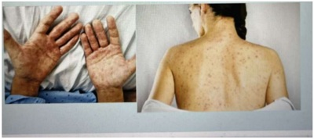
A Solicitar VDRL e agendar retorno em 7 dias. Se o teste for positivo, tratar para sífilis.
B Solicitar VDRL e indicar que o tratamento para sífilis seja feito neste momento.
C Solicitar FTA-Abs e agendar retorno em 7 dias. Se o teste for positivo, tratar para sífilis.
D Solicitar FTA-Abs e indicar que o tratamento para sifilis seja feito neste momento.
Questão 631 · Tratamento · 4000190273Mulher de 32 anos de idade comparece à unidade básica de saúde com queixa de corrimento vaginal. Ela relata que, há 10 dias, iniciou com quadro de leucorreia esbranquiçada, grumosa e com odor desagradável, associada a prurido vaginal. Tem vida sexual ativa, sem parceiro xo e com uso irregular de preservativo. Também notou o surgimento de algumas placas esbranquiçadas em mucosa oral. Há 5 dias procurou a unidade de emergência, onde foi prescrito uso de uconazol oral e nistatina creme vaginal. Dois dias após o início das medicações, evoluiu com as lesões que podem ser vistas nas imagens a seguir. Fez uso de medicação antialérgica por conta própria sem melhora. Não possui outros antecedentes relevantes e não apresentou cartão vacinal, referindo não ter feito uso de vacinas desde a infância. No momento, mantém o quadro clínico. Foi realizado um teste rápido para sí lis, que foi positivo. Qual é o tratamento de primeira linha que seria indicado para a forma clínica de sifilis apresentada pela paciente?

A Penicilina cristalina 24.000.000UI por dia, em infusão intravenosa contínua, por 14 dias.
B Penicilina G benzatina 2.400.000UI, por via intramuscular, em dose única.
C Penicilina G benzatina 2.400.000UI, intramuscular, uma dose semanal, por 3 semanas.
D Ceftriaxona 2g, por via intravenosa, uma vez ao dia, por 10 a 14 dias.
Questão 632 · Inf ecções sexualmente transmissíveis · 4000190267Mulher de 32 anos de idade comparece à unidade básica de saúde com queixa de corrimento vaginal. Ela relata que, há 10 dias, iniciou com quadro de leucorreia esbranquiçada, grumosa e com odor desagradável, associada a prurido vaginal. Tem vida sexual ativa, sem parceiro xo e com uso irregular de preservativo. Também notou o surgimento de algumas placas esbranquiçadas em mucosa oral. Há 5 dias procurou a unidade de emergência, onde foi prescrito uso de uconazol oral e nistatina creme vaginal. Dois dias após o início das medicações, evoluiu com as lesões que podem ser vistas nas imagens a seguir. Fez uso de medicação antialérgica por conta própria sem melhora. Não possui outros antecedentes relevantes e não apresentou cartão vacinal, referindo não ter feito uso de vacinas desde a infância. No momento, mantém o quadro clínico. Foi realizado um teste rápido para sí lis, que foi positivo. Que outros exames devem ser solicitados neste momento para a prevenção combinada de infecções sexualmente transmissíveis?

A Anti-HBe HBeAg, anti-HPV 16 e 18, anti-HBs e anti-HAV.
B Anti-HSV 1 e 2, anti-HPV 16 e 18, anti-HCV, Anti-HBe e HBsAg.
C Anti-HIV 1 e 2, HBsAg, anti-HBc, anti-HBs e anti-HCV.
D Anti-HIV 1 e 2, anti-HSV 1 e 2, anti-HBc, HBeAg e anti-HAV.
Questão 633 · Diagnóstico · 4000190260Sérgio, 13 anos, é levado à emergência por cefaleia intensa, vômitos em jato há dois dias e febre (38,5°C) que não cede com antitérmicos. Exame físico: desidratado, febril, sinais de irritação meníngea, escala de Glasgow de 15. Punção lombar: pleocitose, com 570 células/mm³, 20.000 hemácias/mm³, com predomínio de linfomononucleares; proteína: 45mg/dL; glicorraquia: 66mg/ dL (glicemia: 90mg/dL). Qual a principal hipótese diagnóstica?
A Meningite viral.
B Trauma de punção.
C Meningite bacteriana.
D Hemorragia subaracnoide.
E Exames dentro do padrão de normalidade.
Questão 634 · Apresentação clínica · 4000190258Mulher de 28 anos de idade procura a unidade básica de saúde com queixa de mancha esbranquiçada no ombro há 4 meses. No inicio do quadro, pensou que era uma micose, fazendo uso de cetoconazol tópico por 7 dias, sem resposta. Depois disso, como a mancha em questão não ardia, coçava ou descamava, ela acabou se esquecendo da lesão. Há 15 dias, percebeu que a mancha estava cando maior, com aumento progressivo da sua largura, além de ter a sensação de que a mancha estava cando dormente. Em relação ao caso, assinale a alternativa correta:
A A paciente não pode ser considerada como um caso suspeito de hanseníase, pois não há evidência eletroneuromiográfica de comprometimento nervoso.
B A paciente não pode ser considerada um caso de hanseníase, pois não há história de contatos com outros portadores da doença para reforçar essa hipótese.
C A lesão de pele e suspeita para hanseníase, sendo necessário pesquisar a sensibilidade térmica, dolorosa e tátil na mancha, no momento do exame físico.
D A paciente pode ser considerada como um caso de hanseníase e deve ter sua carteira vacinal verificada quanto à aplicação de vacina BCG na infância.
Questão 635 · Tratamento · 4000190245Kaique, 8 anos, é levado à Unidade Básica de Saúde apresentando há uma semana prurido anal diário na madrugada, que o faz perder o sono. Seu irmão mais novo teve o mesmo sintoma, melhorando após uso de medicação. Exame físico: sem alterações. Quais das medicações são possíveis para o quadro em questão?
A Levamizol e ivermectina.
B Tiabendazol e mebendazol.
C Pamoato de pirantel e secnidazol.
D Albendazol e pamoato de pirvínio.
E Secnidazol e levamizol.
Questão 636 · Epidemiologia · 4000190243Assinale a alternativa correta sobre a AIDS.
A AAIDS é considerada uma doença da comunidade LGBTQIA+.
B Os grupos religiosos de uma maneira geral combateram o preconceito contra soropositivos desde o início.
C A vacina contra a AIDS deve ser adquirida logo pelo Brasil.
D O combate à AIDS conta com vários medicamentos que proporcionam controle da doença.
E AAIDS atingiu sempre populações pobres e vulneráveis.
Questão 637 · Quimioprof ilaxia · 4000190204Mãe de um lactente de 22 meses, preocupada com caso recentemente diagnosticado de meningite bacteriana em sua creche, em um bebê de 15 meses. O agente isolado foi Neisseria meningitidis. O médico deve:
A indicar rifampicina, por 2 dias.
B indicar rifampicina, por 4 dias.
C indicar ceftriaxone, por 2 dias.
D não indicar quimioprofilaxia pela idade da criança.
E indicar ciprofloxacina, dose única.
Questão 638 · Tratamento da Doença Localizada · Apresentação Clínica e Estadiamento · 4000190179Homem, 65 anos, foi submetido a apendicectomia videolaparoscópica por apendicite aguda com peritonite. Recebeu alta após 7 dias. Retorna no ambulatório com resultado de exame anatomopatológico que mostra em adenocarcinoma invasivo mucinoso do apêndice, sem presença de linfonodo positivo. Nesse caso, assinale a alternativa que apresenta o tratamento ADEQUADO complementar para esse paciente.
A Quimioterapia seguida de observação clínica e dosagem de antígeno carcinoembrionário (CEA).
B Seguimento clínico, pois não teve linfonodos positivos na peça retirada na cirurgia.
C Hemicolectomia direita e peritoniectomia com quimioterapia citoredutora.
D Hemicolectomia direita.
Questão 639 · Escore Meld · 4000190178Paciente em la de transplante hepático cujo escore prognóstico utilizado para avaliar gravidade de doença hepática é o Model for End Stage Liver Disease (MELD): SIGLAS: RNI = RAZÃO NORMALIZADA INTERNACIONAL, ALT = ALANINAAMINO TRANSFERASE; Nesse contexto, é CORRETO a rmar que os critérios de base do MELD são:
A Bilirrubina sérica, creatinina sérica e o RNI.
B Bilirrubina sérica, RNI e albumina sérica.
C Bilirrubina sérica, fosfatase alcalina, ureia sérica e o INR.
D Fosfatase alcalina, ALT, albumina e o INR.
Questão 640 · Síndromes Pósgastrectomia · 4000190177Homem, 71 anos, tem história de cirurgia de gastrectomia parcial e reconstrução a Billroth II por úlcera gástrica estenosante. Procura atendimento com queixa de episódios de dor abdominal associada a náuseas e distensão, com alívio imediato após vômitos biliares. Em relação ao diagnóstico e tratamento desse paciente, analise as afirmativas a seguir: I - A principal hipótese é de gastrite alcalina e deve ser solicitada impedâncio-Phmetria. II - O quadro clínico é compatível com a síndrome da alça aferente. III - O tratamento para este caso deve ser o de fazer a Bilroth II em um Y de Roux. IV - A principal hipótese é de obstrução da alça eferente, e a melhor conduta é converter para uma Bilroth I. Está(ão) CORRETA(S) as afirmativas:
A IV apenas.
B II e III apenas.
C I apenas.
D I e IV apenas.
Questão 641 · Exames laboratoriais · 4000190173Paciente 66 anos, sexo masculino, previamente hipertenso em uso de captopril apenas, procura atendimento devido a piora da fadiga nos últimos 6 meses. Informa que o quadro começou há aproximadamente 4 anos com di culdade de subir o morro de sua casa e correr com os netos. Ao exame físico foi observado: Paciente hipocorado, anictérico, afebril, hidratado, com jugular ingurgitada à 30°, edema de membros inferiores bilateral 2+ ACV: Ritmo cardíaco irregular, PA: 100x60mmHg, FC: 90bpm, ictus palpável, sem sopros. AR: MVF sem ruídos adventícios, de esforço. Paciente retorna em próxima consulta com resultado de ECG e ECO conforme imagem a seguir: Ecocardiograma: ventrículos espessados, com FEVE normal, átrio aumentado e sem derrame pericárdico. Exames gerais do paciente - Hb: 9,0g/dL Ht: 26% GL: 5400/mm³, Ureia: 44mg/dL, Cr: 2,2mg/dL Alb: 2,1 AST: 69U/L ALT: 74U/L. Considerando a possibilidade mais provável para esse caso, assinale a alternativa que apresenta CORRETAMENTE o próximo exame que você solicitaria para esse paciente, a fim de auxiliar no diagnóstico.
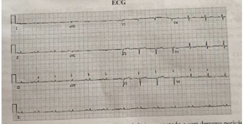
A Ferritina e IST.
B Eletroforese de proteínas séricas e urinárias.
C Dosagem de metanefrinas de 24horas.
D Dosagem sérica de IECA.
Questão 642 · Hipertireoidismo clínico · Decisão de tratamento · 4000190172Paciente 70 anos, sexo feminino, procura atendimento com quadro de piora do estado geral há alguns meses, informa que tem observado perda de peso, mesmo com aumento do apetite. Relata que tem apresentado tremor de extremidades ocasionalmente. E o que tem mais lhe incomodado são as palpitações que tem se tornado mais frequentes, principalmente nas últimas 2 semanas atrapalhando suas atividades da vida diária. Informa ser apenas hipertensa em uso de hidroclorotiazida. Nega outras comorbidades. Você observa os exames solicitados em última consulta em UBS que ainda não haviam sido avaliados e opta por realizar um ECG de 12 derivações. Ao exame: PA: 145x90mmHg, Sat.99%, FR: 18irmp, FC:144bpm, Hb: 10,1g/dL, Ht: 29%, GL: 4500, Plaq: 129.000mm³, TSH: 0,001 e T4L: 5,4. Considerando o caso descrito, assinale a alternativa que apresenta a conduta MAIS adequada.
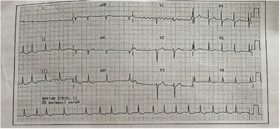
A Realizar cardioversão sincronizada seguido de anticoagulação, encaminhar para realização de tireoidectomia.
B Iniciar amiodarona ou propafenona para controle de ritmo seguido de anticoagulação com enoxaparina, solicitar TRAB e iniciar metimazol.
C Iniciar metoprolol para controle de frequência e rivaroxabana como anticoagulante, encaminhar para ultrassom de tireoide.
D Iniciar atenolol para controle de frequência, warfarina como anticoagulante e iniciar metimazol.
Questão 643 · Medicamentos utilizados no tratamento da doenças reumáticas · Tratamento medicamentoso · 4000190171Paciente sexo feminino, 45 anos, relata que foi diagnosticada com artrite reumatoide há alguns anos devido a uma dor nos punhos e um fator reumatoide positivo. Não retornou ao médico e não realizou demais exames solicitados. Hoje encontra-se com piora da dor sendo considerada incapacitante pela paciente. Acorda pela manhã com dor em punhos e pés bilateralmente. Informa não conhecer outras comorbidades. Ao exame não há sinovite, porém observa leve edema articular. Membros inferiores apresentam um padrão de hiperpigmentação heterogênea. Apresenta-se claramente hipocorada. Exames: Hb:6,2, Ht:18%, GL: 3400, Plaq: 94000mm³, FR: 46, PCR: 28, VHS: 95mmHg, LDH:1450, reticulocíto: 210.000, Coombs negativo, Haptoglobina < 1,0, TGO: 102U/L, TGP: 132U/L, Cr: 0,08mg/dL, Ur: 32mg/dL, EAS: 3+ proteína sem outras anormalidades. Considerando o caso descrito, assinale a conduta CORRETA a ser adotada para essa paciente:
A Solicitar sorologia para hepatites e dosagem de IgM.
B Iniciar hidroxicloroquina para artrite reumatoide.
C Iniciar metotrexato e corticoide devido ao quadro agudo para artrite reumatoide.
D Iniciar prednisona 1mg/kg.
Questão 644 · Tratamento Sintomático · 4000190170Paciente sexo masculino, 32 anos, procurou atendimento no pronto atendimento referindo que iniciou há cerca de uma semana com uma dor de cabeça importante, unilateral, intermitente e predominantemente à noite. Relata ainda que apresenta corrimento nasal e ocular associados. Sem comorbidades nem uso de medicações, informa que não apresentou melhora com dipirona. Assinale a alternativa que apresenta CORRETAMENTE a principal hipótese diagnóstica e conduta.
A Cefaleia por abuso de analgésicos e iniciar naproxeno.
B Migrânea como áurea e iniciar triptanos.
C Hemorragia subaracnoidea e pedir TC de crânio.
D Cefaleia em salvas e oxigenoterapia.
Questão 645 · Def inição das síndromes talassêmicas · 4000190168Paciente 27 anos, sexo feminino, procura atendimento com queixa de piora da fadiga e da dispneia, apresentando cansaço as atividades moderadas. Informa que não lembra quando iniciaram os sintomas. Refere que não tem outras comorbidades, nem faz uso de medicamentos. Informa não conhecer sua história familiar, pois é adotada. Informa que foram solicitados exames no interior e hoje os trouxe a consulta. No exame físico não há alterações exceto por estar intensamente hipocorada. Exames: Hb: 6,0g/dL, VCM: 56, CHCM: 19, GL: 7300, Plaq: 161.000mm³ Reticulócitos: 5800, LDH:168. Ferritina: 100ng/mL, IST: 30%, Ferro sérico: 100mcg/dL. Eletroforese por Capilaridade - Hemoglobina: A1: 96,7% a 97,8% A2: 2,7% Fetal: 0,4% S, C. e outras 0%. A partir do caso apresentado, assinale a conduta MAIS adequada.
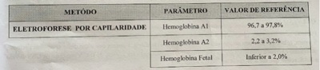
A Solicitar teste genético de alfa-talassemia e transfundir a paciente.
B Solicitar avaliação de medula óssea e iniciar ferro parenteral.
C Solicitar teste de hemólise e não transfundir a paciente devido o risco de precipitação maior na hemólise.
D Solicitar teste de fragilidade osmótica e considerar possibilidade de esferocitose e considerar esplenectomia.
Questão 646 · Hipoglicemia · 4000190165Durante o ajuste das doses de insulina pode ser comum a ocorrência do efeito Somogyi. Nesse contexto, a medida clínica mais recomendada para DIMINUIR a sua ocorrência será:
A A dose de NPH deve ser diminuída pela manhã.
B A dose de NPH deve ser aumentada pela manhã.
C A dose de NPH deve ser diminuída à noite.
D A dose de NPH deve ser aumentada à noite.
Questão 647 · Laboratório · Quadro clínico · Diagnóstico e classif icação · 4000190161Paciente do sexo feminino, 53 anos, procura atendimento por apresentar quadro de re uxo importante nos últimos 6 meses, relata que isso tem atrapalhado a rotina de sua vida diária. Informa que além disso apresenta períodos de diarreia alternada com constipação intestinal e que recentemente iniciou uso de IECA prescrito na UBS devido a HAS, refere que até 6 meses atrás não era hipertensa. Ao exame físico é observado cianose em três dedos da mão direita e pequenas ulcerações digitais, e ainda telangiesctasias ungueais e esclerose cutânea. Sobre o diagnóstico dessa paciente, assinale a alternativa INCORRETA:
A Comumente pode apresentar hipertensão pulmonar.
B Trata-se de paciente que apresenta maior risco de neoplasia.
C Apresenta elevada positividade de anti-Ro.
D FAN é positivo em aproximadamente 95% dos pacientes com esclerose sistêmica.
Questão 648 · Diagnóstico · Manif estações clínicas · 4000190159Sobre a meningite bacteriana, é INCORRETO afirmar que:
A As duas causas mais importantes na comunidade são Streptococcus pneumoniae e Neiserria meningitidis.
B O sintoma mais comum é a cefaleia.
C Na meningococcemia muito raramente pode cursar com manifestações cutâneas como petéquias e púrpuras palpáveis, rash e artrite.
D São indicações de TC ao diagnóstico: imunocomprometidos, crise convulsiva associada, papiledema e alteração do nível de consciência.
Questão 649 · Tratamento · Manif estações clínicas · 4000190157Paciente sexo masculino, 22 anos, do interior do estado, procura atendimento em pronto atendimento com história de início súbito de diplopia, ptose palpebral e sangramento nasal importante associado a hematúria macroscópica. Paciente previamente hígido sem uso de medicações. Ao exame físico além dos achados descritos observa-se a seguinte lesão cutânea: Os exames iniciais solicitados: Hb: 9,8, GL: 6500, Plaq: 150.000mm³, RNI: 2,8, TTPa: 48/25₈, Creatinina: 2,4, Ureia: 110, CPK: 4500 e LDH: 1450. Quanto a possibilidade de acidente com animais peçonhentos, assinale a alternativa CORRETA:
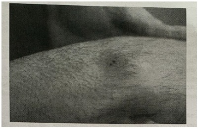
A Trata-se de um provável acidente botrópico, comumente causado por jararaca, sendo este o mais comum no Brasil predominando sintomas sistêmicos causados por nefrotoxicidade e miotoxicidade.
B Trata-se de provável acidente crotálico, comumente causado por cascavel, a ação do veneno é neurotóxica, miotóxica e nefrotóxica levando a rabdomiólise e paralisia neural. Deve se manter alto débito urinário.
C Trata-se de um provável acidente botrópico mais letal que o acidente crotálico, deve-se iniciar hidratação para evitar IRA.
D Trata-se de um provável acidente crotálico, mais comum no Brasil, sendo um dos exemplos a cobra coral, seu veneno faz bloqueio neuromuscular e a morte ocorre por insuficiência respiratória.
Questão 650 · Parasitoses · 4000190152As parasitoses intestinais ainda são um grave problema de saúde, principalmente nos países em desenvolvimento. Sobre as parasitoses intestinais, é CORRETO afirmar que:
A O Ascaris lumbricoides, causador da ascaridíase, geralmente gera sintomas inespecíficos, como diarreia, náuseas, vômitos, dor abdominal inespecífica, distensão abdominal, má absorção e desnutrição. Sobre essa desnutrição, seu mecanismo se deve as lesões que o parasita causa na mucosa intestinal, prejudicando a absorção de nutrientes.
B Um dos anti-helmínticos mais clássicos é o mebendazol. Além de baixo custo, ele tem o seu uso consagrado de polivalência na maioria das helmintíases; porém, sem ação na estrongiloidíase.
C O método de exame direto das fezes a fresco pode determinar qualquer parasitose, mas com baixos níveis de sensibilidade. Para resultados mais apurados, um exemplo de exame que pode ser solicitado é o método de Kato Katz na suspeita de contaminação pela Entamoeba histolytica.
D Apesar de ser uma prática comum, a OMS desincentiva o uso profilático dos antiparasitários pela alta toxicidade dos medicamentos utilizados.
Questão 651 · Doença por lesões mínimas · 4000190151Na infância, a maioria dos casos de síndrome nefrótica correspondem á síndrome nefrótica idiopática, sendo sua principal variante a lesão histológica mínima. A síndrome nefrótica é mais comum no sexo masculino, entre as idades de 2 a 6 anos, sendo pouco prevalente em lactentes. Sobre a síndrome nefrótica, é CORRETO afirmar que:
A A síndrome nefrótica caracteriza-se essencialmente pela presença de proteinúria maciça e hipoalbuminemia, enquanto o quadro completo inclui edema, hipolipidemia e lipidúria.
B A principal manifestação clínica da síndrome nefrótica, embora sua presença não seja essencial para o diagnóstico, é o edema, que, em lesão histologicamente mínima, geralmente é intenso, mole, frio e depressível.
C A tendência atual pela dificuldade de coleta na urina na faixa pediátrica é a de utilizar a relação proteína/creatinina em amostra isolada, sendo definida como proteinúria nefrótica quando essa relação é > 1mg/mg (U P/Cr>1).
D O tratamento inicial durante as fases de edema ou quando houver hipertensão é feito através da associação de diuréticos com a recomendação de uma dieta hipossódica ou assódica.
Questão 652 · Dose inf ectante · COVID 19 · Virulência · 4000190150O surgimento da nova subvariante _______________ do coronavírus desencadeou uma alteração inesperada desse padrão: houve aumento expressivo do número de casos da doença no verão. Entretanto, o número de casos graves e a de mortes pela doença foi substancialmente menor quando comparado aos anos anteriores, mostrando que apesar da nova cepa ter maior_______________, ela não foi mais _______________, naquele período. Assinale a alternativa que preenche correta e respectivamente as lacunas.
A Delta / patogenicidade / letal
B Ômicron / infectividade / virulenta
C Delta / virulência / infecciosa
D Ômicron / patogenicidade / invasiva
Questão 653 · Mecanismo Fisiopatológico · 4000190145De acordo com a Organização Mundial da Saúde (OMS), 13,2% dos óbitos na infância estão relacionados à doença diarreica. Sobre a diarreia crônica, é CORRETO afirmar que:
A A diarreia osmótica é causada por nutrientes não absorvidos no lúmen intestinal, como por exemplo em pacientes com doença celíaca.
B O gastrinoma (síndrome de Zollinger-Ellison) caracteriza-se fundamentalmente por distensão abdominal e extrema dificuldade evacuatória decorrente da ausência dos gânglios mioentéricos.
C As fezes volumosas, de aspecto brilhante, odor pútrido e que boiam no vaso sanitário caracterizam a esteatorreia, frequentemente observada em pacientes com intolerância à lactose.
D A diarreia crônica é definida como perda entérica fecal de pelo menos 20g/kg/dia em lactentes e 100g/dia para crianças maiores, pelo prazo superior a 7 dias de duração.
Questão 654 · Metabolismo do ácido f ólico · 4000190139Mulher de 25 anos, G2 P1 A0, queixa-se de náuseas e vômitos nos primeiros três meses da gravidez. Observa-se que seu nível de hemoglobina é de 9,7g/dL e VCM de 108fL (referência de 90-105fL). Diante desse quadro, assinale a alternativa que apresenta a etiologia MAIS provável da anemia.
A Deficiência de ferro.
B Deficiência de cianocobalamina.
C Alteração fisiológica da gravidez em decorrência da hemodiluição.
D Deficiência de vitamina B9.
Questão 655 · Insulinoterapia · Insulinoterapia no tratamento do diabetes mellitus tipo 2 · 4000190136Homem de 55 anos, com 70kg e diabetes mellitus tipo 2, sem outras comorbidades, retorna para reavaliação uma semana após ter iniciado uso de insulina basal noturna. Relata estar bem adaptado ao uso do medicamento e nega sintomas sugestivos de hipoglicemia. Antes da introdução da insulina, os seus exames complementares (realizados há 30 dias) evidenciavam hemoglobina glicosilada (HbA1c) de 8,8% e glicemia de jejum de 180mg/dL. As aferições de glicemia capilar em jejum desde a introdução da insulina foram: 162 – 154 – 158 – 149 – 137 – 148 – 139mg/dL. No momento, sua prescrição consiste em Metformina 2.550mg/dia e 10UI de insulina NPH ao deitar, além de manter a dieta equilibrada e prática regular de atividades físicas. Diante do quadro descrito, a conduta mais adequada é:
A solicitar aferições de glicemia capilar em jejum e pós-prandial por 1 semana para definição terapêutica
B solicitar nova dosagem sérica de hemoglobina glicosilada e glicemia de jejum para definição terapêutica
C manter a prescrição inalterada e reavaliar glicemias capilares em jejum dentro de 1 a 2 semanas
D aumentar dose da insulina em 2UI e reavaliar glicemias capilares em jejum em 1 a 2 semanas
Questão 656 · Avaliação clínica e exames complementares · Estratif icação do risco cardiovascular adicional · 4000190134Exames complementares Diante de um paciente recém-diagnosticado com hipertensão arterial, faz-se necessário conhecer alguns aspectos de sua história e avaliar exames físico e complementares para determinar as possíveis causas da doença, o risco cardiovascular e a existência de complicações. Em casos como esse, a conduta recomendada e a justificativa para a sua realização, respectivamente, são:
A palpação e ausculta dos rins e suprarrenais, buscando identificar massas e/ou sopros nessa topografia, o que sugere hipertensão secundária a hiperaldosteronismo primário
B exame de fundo de olho, para identificação de repercussões vasculares da hipertensão arterial que modifiquem a estratificação do prognóstico do paciente
C pesquisa de queixas como cefaleia e epistaxe, que sugerem picos hipertensivos prévios, denotando aumento do risco de eventos cardiovasculares agudos
D dosagem de hemoglobina glicada para investigação de diabetes mellitus, comorbidade que potencializa o risco cardiovascular do paciente hipertenso
Questão 657 · Apresentação Clínica e Avaliação Inicial · Manejo dos Nódulos Tireoidianos · 4000190132Mulher de 50 anos comparece à consulta muito preocupada após ter percebido um caroço em região cervical anterior há uma semana. Nega sintomas associados, história de radiação em região cervical ou história de neoplasias em familiares de primeiro grau. Ao exame, detecta-se a presença de nódulo palpável de 1,5cm em lobo direito da tireoide, móvel, de consistência broelástica, e a ausência de linfonodos palpáveis em cadeias cervicais. O próximo passo na abordagem dessa paciente será:
A encaminhar a paciente ao endocrinologista, considerando que o manejo de nódulos tireoidianos deve ser realizado pelo especialista focal
B indicar a realização de punção aspirativa por agulha fina (PAAF), exame considerado padrão-ouro para diferenciar nódulos benignos e malignos
C solicitar dosagem de hormônio tireoestimulante (TSH) e ultrassonografia de tireoide, para melhor caracterização morfofuncional do nódulo
D tranquilizar a paciente e realizar reavaliação clínica em 4 a 8 semanas, uma vez que não há características sugestivas de malignidade
Questão 658 · Inf ecções sexualmente transmissíveis · Úlceras inf ecciosas de causa sexualmente transmissível · 4000190131Sobre o tema Infecções Sexualmente Transmissíveis (ISTs), analise as afirmativas a seguir: I - Segundo estimativas da OMS (2013), mais de um milhão de pessoas adquirem uma IST diariamente. A maioria das pessoas com IST não buscam tratamento porque são assintomáticas ou têm sinais e sintomas leves e não percebem as alterações. II - O diagnóstico das ISTs deve ser realizado sempre tendo como base o quadro clínico da paciente, evitando-se o uso precoce de antibióticos que poderiam levar à resistência aos antimicrobianos. III - O atendimento imediato de uma IST não é apenas uma ação curativa, mas também visa à interrupção da cadeia de transmissão e à prevenção de outras IST e complicações decorrentes das infecções. IV - Os agentes etiológicos infecciosos mais comuns nas úlceras genitais são: T. pallidum; N. gonorrhoeae; HSV-1 e HSV; HIV; C. trachomatis; K. granulomatis (donovanose). Estão CORRETAS as afirmativas:
A I, III e IV apenas.
B I e IV apenas.
C I e III apenas.
D I, II, III e IV.
Questão 659 · Tratamento · Esporotricose · 4000190130Sabe-se que atualmente há um grande foco de esporotricose zoonótica no Rio de Janeiro, com acometimento de um número importante de cuidadores de gatos e cães. O tratamento indicado para os casos confirmados irá depender da forma clínica da doença e do per l do paciente. Nesse caso, a prescrição mais adequada é:
A iodeto de potássio para casos de esporotricose cutâneo-linfática em pacientes imunocompetentes
B anfotericina B para casos de esporotricose cutânea fixa em pacientes imunocompetentes
C itraconazol para casos de esporotricose cutânea fixa em pacientes idosos
D terbinafina para casos de esporotricose cutâneo-linfática em gestantes
Questão 660 · Antieméticos · Tratamento da Diarreia Aguda · Sintomáticos · 4000190129Nas unidades de Atenção Primária, um motivo frequente de procura de pacientes por demanda espontânea é a de vômitos geralmente associados a náuseas. Em quadros agudos, na maioria das vezes, o tratamento sintomático é su ciente para manejar o caso. A respeito da abordagem terapêutica desse sintoma, uma recomendação adequada é:
A definir a etiologia do quadro antes de optar pela prescrição de antieméticos
B evitar o soro caseiro, que deve ser reservado para casos de perdas líquidas por diarreia
C manter uma hidratação vigorosa e uma dieta sem alimentos sólidos até alívio dos vômitos
D estimular o consumo de líquidos pelo paciente, dividido em pequenas quantidades ao longo do dia
Revisar: possível letra faltando em enunciado
Questão 661 · Síf ilis primária · Herpes genital · Doença Inf lamatória Pélvica · 4000190126Correlacione as definições da COLUNA I com seus respectivos agentes etiológicos e/ou IST da COLUNA II. COLUNA I 1. A primeira manifestação é caracterizada por uma úlcera, geralmente única, que ocorre no local de entrada da bactéria (pênis, vulva, vagina, colo uterino, ânus, boca, ou outros locais do tegumento), indolor, com base endurecida e fundo limpo. 2. Em geral, é uma manifestação mais severa caracterizada pelo surgimento de lesões eritemato-papulosas de um a três milímetros de diâmetro, que rapidamente evoluem para vesículas sobre base eritematosa, muito dolorosas e de localização variável na região genital. 3. É uma síndrome clínica atribuída à ascensão de microrganismos do trato genital inferior, espontânea, comprometendo o endométrio, trompas de Falópio, anexos uterinos e/ou estruturas contínuas. 4. A transmissão ocorre, preferencialmente, por via sexual. O tempo de latência viral e os fatores associados não são conhecidos, e o vírus pode permanecer quiescente por muitos anos até o desenvolvimento de lesões. COLUNA II ( ) Herpes genital. ( ) Infecção pelo Papiloma Vírus Humano (HPV). ( ) Doença Inflamatória Pélvica (DIP). ( ) Cancro duro ou sífilis primária. Assinale a alternativa CORRETA:
A 3 4 1 2.
B 2 4 3 1.
C 1 4 3 2.
D 2 3 1 4.
Questão 662 · Vertigem Posicional Paroxística Benigna · 4000190125Mulher de 45 anos comparece à unidade para consulta por demanda espontânea devido a queixa de tontura. Diz que sente “tudo girando” em crises esporádicas ao longo do dia que duram poucos segundos. Conta que o quadro iniciou há cerca de uma semana, mas que, há alguns anos atrás, apresentou um problema parecido que se resolveu sozinho. Perguntada sobre os movimentos que desencadeiam a crise, disse que sente sempre que vira a cabeça de um lado para o outro no travesseiro, quando está deitada, mas que em outros momentos a tontura aparece também. Levando em consideração a prevalência das principais causas de vertigem na Atenção Primária à Saúde, bem como os sinais de alerta para esse tipo de quadro, é uma conduta inicial adequada:
A realizar manobras de reposicionamento canalicular
B solicitar ressonância magnética de crânio
C prescrever antivertiginosos
D aferir a glicemia capilar
Questão 663 · Epizootias · Indicadores epidemiológicos · 4000190113Sobre vigilância epidemiológica, analise as proposições abaixo e assinale (V) para Verdadeiro ou (F) para Falso. ( ) Agravo é qualquer dano à integridade física ou mental do indivíduo provocado por circunstâncias nocivas ou por lesões decorrentes de violência interpessoal ou autoprovocada. ( ) Epizootia se refere à doença ou morte de animal ou grupo de animais que possa apresentar riscos à saúde pública. ( ) Noti cação compulsória negativa é a comunicação semanal realizada pelo responsável pelo estabelecimento de saúde à autoridade de saúde, informando que na semana epidemiológica não foi identi cada nenhuma doença, agravo ou evento de saúde pública constante da lista de noti cação compulsória. ( ) Vigilância sentinela é o modelo de vigilância realizada diretamente pelas autoridades de saúde de forma compulsória em pontos estratégicos da nação, com noti cação para a Organização Mundial da Saúde (OMS). Assinale a alternativa que apresenta a sequência correta.
A V / V / F / F
B V / F / F / V
C F / F / V / V
D V / V / V / F
Questão 664 · Tratamento · 4000190099A Tuberculose (TB) é uma doença que pode ser prevenida e curada, mas ainda prevalece nas condições de pobreza e contribui para a perpetuação da desigualdade social. Sobre o tratamento da tuberculose, assinale a alternativa INCORRETA:
A Em geral, após duas a três semanas de tratamento com esquema anti TB que contenham fármacos com atividade bactericida precoce, ocorre significativa diminuição da capacidade de transmissão de bacilos pelos indivíduos doentes.
B Para a prevenção da seleção de bacilos resistentes e a efetiva cura da doença, é necessária a utilização de esquemas terapêuticos com associação de diferentes medicamentos que agirão sobre os bacilos sensíveis e nos naturalmente resistentes.
C O tratamento de formas extrapulmonares tem a duração de seis meses, mas no caso do tratamento de TB em pacientes com HIV, a duração se prolonga para oito meses.
D O esquema de tratamento da tuberculose é padronizado, deve ser realizado de acordo com as recomendações do Ministério da Saúde e compreende duas fases: a intensiva ( ou de ataque ), e a de manutenção.
Questão 665 · Carência nutricional de vitamina B12 · Vegetarianismo e veganismo na inf ância · 4000190091Criança do sexo feminino, 6 meses de idade, em aleitamento materno exclusivo e lha de mãe vegetariana (não ingere quaisquer produtos de origem animal). Nos exames laboratoriais realizados, foi evidenciada a presença de anemia megaloblástica. Assim, assinale a alternativa que apresenta a provável etiologia para a anemia dessa criança.
A Deficiência de vitamina B9.
B Deficiência de cianocobalamina.
C Deficiência de vitamina A.
D Anemia perniciosa não associada a qualquer hipovitaminose.
Questão 666 · Agente etiológico · 4000190090Sobre a dengue, assinale a alternativa INCORRETA:
A O agente etiológico é um vírus DNA, sendo conhecidos 3 sorotipos.
B A transmissão se faz pela picada dos mosquitos A.aegypti (vetor).
C A imunidade é permanente para um mesmo sorotipo (homóloga).
D O tratamento baseia-se principalmente em hidratação adequada.
Questão 667 · Apresentação clínica · Tratamento · 4000190089O Brasil é o segundo país com mais casos de hanseníase no mundo, conforme pesquisa realizada pela Organização Mundial da Saúde (OMS) em 2017. Sobre a hanseníase, é INCORRETO afirmar que:
A É uma doença crônica, infectocontagiosa, causada pelo bacilo Mycobacterium leprae.
B O homem é reconhecido como a única fonte de infecção, embora tenham sido identificados animais naturalmente infectados.
C Estima-se que 90% da população tenha defesa natural que confere imunidade contra o M. leprae.
D O tratamento inicial da hanseníase é hospitalar, dando seguimento em unidades próprias de tratamento (atenção secundária)
Questão 668 · Endoscopia Digestiva Alta EDA · 4000190078Paciente de 70 anos, masculino, portador de doença do re uxo gastroesofágico, diagnosticado há cerca de 5 anos, é referenciado para a realização de nova endoscopia digestiva alta devido à presença de "sinal de alarme". Assinale a alternativa que apresenta um possível "sinal de alarme" que possa justi car a solicitação do exame endoscópico.
A Dor epigástrica em queimação que ocorre mais de 2 vezes, no intervalo de 1 mês.
B Disfagia.
C Dor epigástrica em queimação que ocorre mais de 2 vezes, no intervalo de 15 dias.
D Sintomas de refluxo que ocorrem, principalmente, no período noturno.
Questão 669 · Diagnóstico da leucemia linf oide crônica LLC · 4000190077Paciente masculino, 59 anos de idade, procura atendimento médico para consulta de rotina. O paciente encontra-se assintomático e nos exames laboratoriais foi evidenciado linfocitose > 5000/mm³ no sangue periférico. Diante disso, assinale a alternativa que apresenta a principal hipótese diagnóstica.
A Gamopatia monoclonal de significado indeterminado.
B Leucemia promielocítica.
C Leucemia linfoide crônica.
D Tricoleucemia.
Questão 670 · Hiperparatireoidismo primário · 4000190073Assinale a alternativa que apresenta a forma clínica mais comum de apresentação do hiperparatireoidismo primário.
A Hipercalcemia assintomática.
B Calculose renal.
C Fraturas ósseas espontâneas.
D Calcificação de partes moles.
Questão 671 · Classif icação do Choque · 4000190064Causado por uma diminuição crítica do volume intravascular. O retorno venoso (précarga) diminuído resulta em diminuição do preenchimento ventricular e redução do volume de ejeção. Se não for compensado por aumento da frequência cardíaca, o débito cardíaco diminui. São características de.
A Choque anafilático.
B Choque cardiogênico.
C Choque hipovolêmico.
D Choque distributivo.
Questão 672 · Tratamento Inicial · 4000190063Qual das drogas abaixo seria primeira escolha para tratamento de crise convulsiva.
A Midazolan.
B Fenobarbital.
C Diazepam.
D Fenitoina.
Questão 673 · Quadro clínico · 4000190062Qual das doenças abaixo e caracterizada por ter início abrupto, com febre alta, cefaleia, mialgias, artralgias, linfadenopatia generalizada e um exantema que aparece com uma 2ª elevação de temperatura após um período afebril. Sintomas respiratórios, como tosse, faringite e rinorreia, podem estar presentes.
A Zika.
B Dengue.
C Malária.
D Covid19.
Questão 674 · Testes Específ icos Para Avaliação das Funções Cognitivas · 4000190061MiniExame do Estado Mental e Outros Testes de Rastreio Os questionários: Mini-Exame do Estado Mental (MEEM), Teste do desenho do relógio (TDR), Fluência verbal (FV), Avaliação Cognitiva de Montreal (MoCA), são utilizados para triagem de:
A Diabetes Mellitus.
B Traumatismo Craniano.
C Demência.
D Alcoolismo.
Questão 675 · Aplicação Clínica · 4000190060Uma vez o paciente em ventilação não invasiva, devemos monitorar adequadamente durante sua utilização os seguintes fatores.
A Volume Corrente e frequência respiratória.
B Saturação periférica de oxigênio (SpO2).
C Redução ou cessação da utilização de musculatura acessória e melhora da PaO2 e redução da PaCO2.
D Todas as opções.
Questão 676 · Diagnóstico · 4000190058O teste de Intradermorreação de Montenegro (IDRM) avalia a resposta tardia de hipersensibilidade celular e representa o principal exame complementar para o diagnóstico de:
A Hanseníase
B Tuberculose
C Leishmaniose
D Pênfigo
Questão 677 · Tratamento · 4000190055Tratamento farmacológico de primeira linha para tratamento da escabiose.
A Benzoato de Benzila.
B Enxofre precipitado.
C Ivermectina.
D Permetina 1%.
Questão 678 · Tratamento da anemia f alcif orme · 4000190053Paciente portador de anemia falciforme, qual seria a melhor escolha de tratamento?
A Reposição de sulfato ferroso.
B Reposição de ácido fólico.
C Reposição de vitamina B12.
D Carbonato de Cálcio.
Questão 679 · Esquema básico para tuberculose pulmonar · 4000190052No Brasil, o esquema mais utilizado para todos os casos novos de qualquer forma de tuberculose. Exceto para meningite concomitante.
A Rifampicina Isoniazida Pirazidamina e etambutol por um mês e Rifampicina e Isoniazida por 3 meses.
B Rifampicina, Isoniazida, Pirazinamida e Etambutol por dois meses e de rifampicina e isoniazida por quatro meses.
C Apenas Isoniazida por 6 meses.
D Rifampicina, Isoniazida, Pirazinamida e Etambutol por três meses e de rifampicina e isoniazida por três meses.
Questão 680 · Diagnóstico de obesidade · 4000190051A obesidade é determinada pelo índice de Massa Corporal (IMC). Qual dos seguintes parâmetros seria o valor para diagnóstico de obesidade.
A Entre 25 e 29,9.
B < 18,5.
C > 30.
D Entre 18,5 e 24,9.
Questão 681 · Exame f isico · 4000190050Sopro holossistólico, melhor audível com o diafragma em foco mitral. O sopro pode irradiar para a axila e região infraescapular esquerda. Após a realização de esforço isométrico ocorre aumento da intensidade do sopro, é característico em:
A Estenose aórtica.
B Insuficiência mitral.
C Estenose Mitral.
D Insuficiência Aórtica.
Questão 682 · Tratamento do hipotireoidismo clínico · 4000190048Qual dos seguintes medicamentos seria sua escolha para iniciar tratamento de Hipotiroidismo primário.
A Tiamazol.
B Propiltioracil.
C Levotiroxina Sodica.
D Atenolol.
Questão 683 · Tratamento medicamentoso · 4000190047Diante de um paciente com Hipertensão Arterial sinalize alternativa errada.
A Diurético Tiazídico.
B Diurético tiazídico + Bloqueador canais de cálcio.
C Inibidores da enzima conversora de angiotensina.
D Bloqueadores do receptor de angiotensina II +inibidores da enzima conversora de angiotensina.
Questão 684 · Manif estações Clínicas · 4000190036Homem de 45 anos tabagista refere uso de álcool os nais de semana, chega ao PS com dor abdominal epigástrica e quadrante superior esquerdo, náuseas e vômitos. A dor é descrita como constante, com irradiação para a região dorsal tórax ou ancos. Ao exame físico, alguns sinais cutâneos estão presentes sinal de Grey-Turner, sinal de Cullen, paniculite e sinal de Fox. Qual seria sua primeira Hipóteses Diagnóstica?
A Apendicite Aguda.
B Hepatite Viral.
C Pancreatite Aguda.
D Oclusão Intestinal.
Questão 685 · Carcinoma Medular · 4000190035Paciente assiste na sua consulta ambulatorial com possível nódulo da tireoide do tipo carcinoma medular. Qual exame indicaria para corroborar o diagnóstico?
A Calcitonina.
B Tireoglobulina.
C Anti-TPO.
D TSH.
Questão 686 · Introdução · 4000190033Tipo de tumor benigno do fígado, relacionado a níveis alterados de hormônios, mais comum em mulheres entre os 20 e os 50 anos, após uma gravidez ou devido ao uso prolongado de anticoncepcional oral, seria característico de:
A Adenoma hepático.
B Hiperplasia nodular focal.
C Hamartoma mesenquimal.
D Cistoadenoma biliar intra-hepático.
Questão 687 · Síf ilis secundária · 4000189997A sí lis é uma Infecção Sexualmente Transmissível (IST), curável e exclusiva do ser humano, causada pela bactéria Treponema pallidum. Pode apresentar várias manifestações clínicas e diferentes estágios. Em geral manifesta-se entre seis e oito semanas após o desaparecimento espontâneo do cancro duro. As manifestações são: roséolas (exantema), sifílides papulosas, pápulas cutâneas, alopecia e condiloma sinais e sintomas como manchas no corpo, que geralmente não coçam, incluindo palmas das mãos e plantas dos pés, febre, mal-estar, dor de cabeça, ínguas pelo corpo caracterizam qual estágio da doença?
A Primário.
B Latente.
C Secundário.
D Terciário.
Questão 688 · Sinais de alarme · 4000189918Escolar de 7 anos, sexo masculino, apresentando febre alta, e presença de petequéias difusamente em face, tronco e membros. Considerando a possibilidade diagnóstica de dengue qual seria um sinal de alerta.
A Disúria.
B Hiperglicemia.
C Dor abdominal intensa e contínua.
D Elevação dos níveis pressóricos.
Questão 689 · Síndrome de West · Tratamento · 4000189914Em relação as crises convulsivas na infância, sinalize alternativa INCORRETA.
A Recomendado uso continuo de drogas anticonvulsivantes na primeira crise convulsiva febril simples.
B Nas crises convulsivas refratárias aos benzodiazepínicos os medicamentos de escolha seriam Fenitoína ou Fenobarbital.
C A Síndrome de West caracteriza-se pela tríade de espasmos infantis, involução ou interrupção do desenvolvimento neuropsicomotor e EEG com padrão de hipsarritmia.
D O fármaco de escolha no tratamento das crises convulsivas no período neonatal é o fenobarbital.
Questão 690 · Intolerância à Lactose · 4000189905Paciente de 12 anos, masculino, apresentando há 1 ano fezes amolecidas, atulência uma necessidade súbita de evacuar 30 minutos a duas horas depois do café da manhã acompanhado de distensão abdominal e dor abdominal. Curva de crescimento adequada. Fez uso de Albendazol por 5 dias sem melhora. Levando em consideração os dados apresentados, qual seria seu diagnóstico inicial?
A Retocolite ulcerativa.
B Giardíase.
C Gastroenterite.
D Intolerância à lactose.
Questão 691 · Clínica Médica · 4000189885Uma mulher de 75 anos é atendida no setor de emergência devido a um quadro sistêmico que vem se deteriorando nos últimos dias após o uso de paracetamol e codeína por uma lesão ulcerada em membro inferior direito. A paciente é admitida confusa e letárgica, embora com relato de recente agitação, com alucinações nos dias anteriores. Ao exame apresenta-se com Tax abaixo de 35C, confirmada por aferição oral. PA 90/50mmHg. FC 50 (ritmo sinusal), FR 10/min com incursões pouco amplas. Glicemia capilar 60mg/dL. Apresenta face e extremidades com edema não depressível, bem como lábios espessos e língua aumentada de volume. Qual das alternativas a seguir confirmaria o diagnóstico?
A Hemograma, PCR.
B TSH, T4 livre.
C Urina tipo I e urocultura.
D Rx de tórax e hemoculturas seriadas.
E TC de crânio contrastada.
Questão 692 · Clínica Médica · 4000189884Um paciente de 58 anos em tratamento de endocardite infecciosa de válvula nativa por Streptococcus bovis deve prosseguir investigação, após a cura da endocardite, inicialmente com
A PET-CT de corpo inteiro.
B RNM de coração.
C Endoscopia digestiva alta.
D Colangiopancreatografia endoscópica retrógrada.
E Colonoscopia.
Questão 693 · Clínica Médica · 4000189883Sobre a prevenção da hepatite fulminante após o envenenamento por paracetamol, avalie as asserções seguintes e assinale a alternativa correta: I. Carvão ativado está indicado até 12 horas após a ingestão do paracetamol. II. Hemodiálise é a abordagem mais eficaz. III. N-acetilcisteina endovenosa é a abordagem padrão.
A todas estão corretas.
B todas estão erradas.
C apenas I e III são corretas.
D apenas III é correta.
E apenas II é correta.
Questão 694 · Clínica Médica · 4000189882Mulher, 56 anos, vai ao posto de saúde devido a queixa de disfagia para sólidos há 3 meses e é verificada nodulação tireoidiana ao exame físico. Qual alternativa descreve o nódulo com maior risco de malignidade, considerando características ao ultrassom de tireoide?
A nódulo hipoecoico, margens irregulares, com fluxo central na vascularização.
B nódulo anecoico, diâmetro ântero-posterior maior que o transverso, margens regulares.
C nódulo hiperecoico, com microcalcificações centrais, cístico.
D nódulo isoecoico, sólido, linfonodo cervical menor que 5 mm.
E nódulo hipoecoico, cístico, diâmetro transverso maior que ântero-posterior.
Questão 695 · Clínica Médica · 4000189881Paciente de 57 anos, diabético e hipertenso com tratamento irregular, iniciou hemodiálise (HD) por síndrome urêmica. Após 8 sessões de HD, interrompeu indevidamente o tratamento. Dez dias depois procurou atendimento devido a quadro de astenia e palpitações. Dosagem de potássio sérico de 9,2 mEq/l. Traçado do ECG abaixo. Não apresentava congestão pulmonar. A sequência correta de tratamento é:
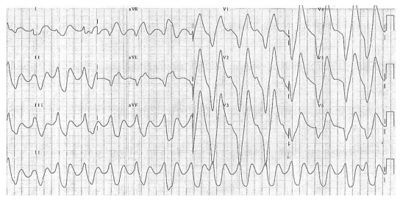
A HD, gluconato de cálcio e solução polarizante.
B solução polarizante, HD, beta 2 agonista e sorcal.
C gluconato de cálcio e HD.
D beta 2 agonista e gluconato de cálcio.
E HD, solução polarizante e sorcal.
Questão 696 · Clínica Médica · 4000189880Mulher de 53 anos, com tosse produtiva há 3 meses, procura atendimento médico para investigação. Não é tabagista. Realizou uma tomogra a de tórax que está representada na sequência. Dentre os itens listados abaixo, qual não é uma causa da condição evidenciada na imagem?
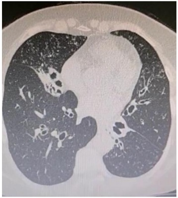
A fibrose cística.
B tuberculose pulmonar.
C deficiência de imunoglobulinas.
D silicose.
E artrite reumatoide.
Questão 697 · Clínica Médica · 4000189879Ana Clara, 52 anos, interna na enfermaria de clínica médica com o diagnóstico de cirrose hepática por vírus da hepatite B e tratamento com Entecavir 0,5mg VO ao dia. Apresenta episódio de hematêmese no mesmo dia da internação. Foi optado por realizar estabilização clínica e endoscopia digestiva. Nega histórico de sangramentos prévios. Qual a conduta terapêutica mais correta nesta situação?
A prescrever dopamina 0,5 a 2mcg/kg/min EV em bomba de infusão contínua.
B prescrever octreotide 50mcg/h EV em bomba de infusão contínua associado à norfloxacino 400mg VO 12/12h por 7 dias.
C prescrever bromoprida 10 mg VO a cada 8 horas.
D prescrever amoxicilina 1000mg, claritromicina 500mg e omeprazol 20mg a cada 12 horas por 14 dias.
E solicitar a avaliação da cirurgia do aparelho digestivo para realização de transplante em caráter de urgência.
Questão 698 · Clínica Médica · 4000189878Paciente de 50 anos, hipertenso com tratamento irregular, chega na sala de urgência com intensa cefaleia, PA = 240 x 160 mmHg, exame neurológico sem sinais localizatórios. Enquanto aguarda exames apresenta confusão mental seguida de crise convulsiva generalizada tônico-clônica. Após uma hora paciente está vigil, exame neurológico normal. O resultado da tomogra a computadorizada de crânio é normal, assim como exames séricos de rotina. Qual o diagnóstico mais provável?
A hemorragia subaracnoideia.
B hemorragia intraparenquimatosa.
C infarto bulbar.
D hemorragia intraparenquimatosa que rompeu para ventrículo.
E encefalopatia hipertensiva.
Questão 699 · Clínica Médica · 4000189877Homem de 55 anos, obeso grau III, esteatohepatite não alcoolica, é encaminhado devido a hiperferritinemia encontrada em exame de rotina (1650ng/mL). TIBC 350ug/dL e ferro sérico 120ug/dL. Sobre este caso, avalie as asserções seguintes e assinale a alternativa correta: I. Trata-se de um caso de sobrecarga de ferro, provável hemocromatose II. Obesidade central e esteatohepatite não alcoolica são causas muito comuns de hiperferritinemia III. Não há evidência de sobrecarga de ferro neste caso
A todas estão corretas.
B todas estão incorretas.
C apenas I é correta.
D apenas III é correta.
E apenas II e III são corretas.
Questão 700 · Clínica Médica · 4000189876Ricardo, 24 anos, previamente hígido, está internado por febre alta recorrente (39C). Apresenta leucocitose e neutro lia sem desvio à esquerda e aumento discreto de enzimas hepáticas. O quadro já dura mais de dez dias e as hemoculturas seriadas são negativas, bem como as tomogra as de tórax e abdome. É observado um rash salmon pink evanescente e vespertino. O quadro sugere
A doença de Still do adulto.
B endocardite infecciosa.
C abscesso profundo.
D piomiosite tropical.
E síndrome de Munchausen.
Questão 701 · Clínica Médica · 4000189875Homem de 55 anos é encaminhado para investigação de plaquetopenia. Hb 15g/dL, GB 6500 com diferencial normal e plaquetas 80.000/uL. Não apresenta púrpura ou outros sangramentos. Sobre este caso, avalie as asserções e assinale a alternativa correta: I. Púrpura trombocitopênica imune é a causa mais provável, estando indicada corticoterapia sistêmica. II. Pseudoplaquetopenia é possível, especialmente se agregados plaquetários são observados. III. Doença hepática deve ser investigada.
A todas estão corretas.
B todas estão erradas.
C apenas I está correta.
D apenas II e III estão corretas.
E apenas III está correta.
Questão 702 · Clínica Médica · 4000189874Paciente masculino, 19 anos, sem passado mórbido, atendido em emergência por fratura pélvica e choque hipovolêmico após acidente com motocicleta. Durante uma cirurgia ortopédica bem-sucedida recebe duas unidades de concentrado de hemácias e ressuscitação volêmica com cristaloides. É encaminhado estável para recuperação, mas após 30 minutos desenvolve quadro de intensa dispneia com hipoxemia, precisando ser entubado e levado a UTI. PA 110/70mmHg, enchimento capilar normal. Rx de tórax revela edema pulmonar bilateral difuso. Assinale o diagnóstico mais provável neste caso.
A embolia gordurosa.
B embolia gasosa.
C tromboembolismo pulmonar.
D injúria pulmonar relacionada a transfusão (TRALI).
E sobrecarga circulatória relacionada a transfusão (TACO).
Questão 703 · Clínica Médica · 4000189873Paciente de 45 anos, mulher, é encaminhada para investigação de anemia. Hb 8,1g/dL, VCM 125fL, GB 3200 com 2100 neutró los e plaquetas 135.000/uL. Neutró los hipersegmentados são visualizados. Histórico de seguimento com reumatologista por artrite psoriática. Sobre este caso, avalie as asserções e assinale a alternativa correta: I. Artrite psoriática e anemia perniciosa podem estar relacionadas. II. Endoscopia digestiva alta deve ser solicitada para confirmação da etiologia da anemia megaloblástica. III. Reposição com ácido fólico é urgente por conta do tratamento reumatológico.
A todas estão corretas.
B todas estão erradas.
C apenas I e II estão corretas.
D apenas III está correta.
E apenas I e III estão corretas.
Questão 704 · Clínica Médica · 4000189872Mulher de 78 anos em tratamento de diabete melito tipo 2 com metformina 1g de 12/12h, dapaglifozina 10mg 1x ao dia e glibenclamida 10mg 1x ao dia é levada a emergência desacordada após ser encontrada inconsciente no chão. Glicemia capilar 40mg/dL. Função renal preservada. Sobre este caso, avalie as asserções e assinale a alternativa correta: I. Hipoglicemia é efeito colateral comum da metformina. II. Hipoglicemia é comum com o uso de sulfonilureias e pode ser prolongada. III. Hipoglicemia não é um efeito esperado dos inibidores de SGLT2.
A apenas II e III são corretas.
B apenas I e III são corretas.
C todas são corretas.
D todas são erradas.
E apenas I e II são corretas.
Questão 705 · Clínica Médica · 4000189871Sobre o tratamento da cetoacidose diabética em adultos, avalie as asserções e assinale a alternativa correta: I. A única condição para iniciar reposição de potássio nos primeiros momentos do atendimento é que o nível sérico esteja abaixo de 5,3mEQ/L. II. Análogos de ação ultrarrápida devem ter preferência a insulina regular nas primeiras horas de tratamento. III. Reposição de bicarbonato geralmente está indicada se o pH da admissão for menor que 7,1 (na gasometria arterial)
A todas são corretas.
B todas são erradas.
C apenas I é correta.
D apenas I e II são corretas.
E apenas I e III são corretas.
Questão 706 · Clínica Médica · 4000189870Uma mulher de 28 anos é trazida para atendimento emergencial por agitação, psicose e sudorese nas últimas horas, e perda de peso nas últimas semanas. Apresenta bócio e proptose ocular e mãos quentes e úmidas. Está em ritmo de brilação atrial com resposta ventricular de 165/min. PA 170/100mmHg e Tax 39,5C. Marque a alternativa que apresenta uma intervenção que habitualmente não está indicada neste cenário.
A glicocorticoide endovenoso.
B haloperidol decanoato intramuscular.
C propranolol via oral.
D propiltiouracil via oral.
E solução de Lugol via oral.
Questão 707 · Clínica Médica · 4000189869Homem de 38 anos, portador de prolapso da válvula mitral, é admitido com febre e queda do estado geral. Há crescimento de Staphylococcus aureus em três hemoculturas sucessivas e ele está em tratamento com oxacilina e gentamicina. No sétimo dia de tratamento, apresenta-se hemodinamicamente estável, mas sua creatinina aumenta de 0,9mg/dL (admissional) para 1,5mg/dL, e o exame de urina I demonstra hematúria 2+ e proteinúria 2+; com cilindros granulares e piócitos. Dosados C3 e C4 que se apresentaram normais. Apresenta eosinofilia e eosinofilúria. O quadro deve ser devido a:
A glomerulonefrite pós infeciosa.
B nefrite intersticial aguda.
C necrose tubular aguda por isquemia.
D sepse.
E trombose de veia renal.
Questão 708 · Clínica Médica · 4000189868Paciente masculino, 60 anos, tabagista, diabético e hipertenso, em uso de Hidroclorotiazida 25mg 1x ao dia, Anlodipino 10mg 1x ao dia, Atenolol 50mg 1x ao dia e Metformina 1g 2x ao dia. Relata em consulta de rotina um quadro de dor torácica iniciada há 6 meses, do tipo aperto, desencadeada atualmente ao deambular 100 metros com melhora ao repouso, associada ao quadro dispneia, e nega irradiações. Ao exame físico, PA: 150x90 mmHg, FC:85bpm, sem alterações do aparelho respiratório e cardiovascular. Realizada cintilogra a miocárdica com teste de esforço, a qual evidenciou isquemia de 15% em região de domínio de artéria coronária descendente anterior. Qual a classificação CCS (Canadian Cardiovascular Society)? Quais medicações devem ser prescritas para redução de mortalidade? Qual o próximo passo?
A CCS II, introduzir sinvastatina e nitrato, realizar angiotomografia de coronárias.
B CCS III, introduzir atorvastatina, enalapril e ácido acetilsalicílico (AAS), solicitar cateterismo cardíaco.
C CCS II, introduzir atorvastatina, enalapril e ácido acetilsalicílico (AAS), solicitar cateterismo cardíaco.
D CCS III, introduzir aotrvastatina, ácido acetilsalicílico (AAS) e nitrato, solicitar angiotomografia de coronárias.
E CCS II, introduzir atorvastatina, enalapril e ácido acetilsalicílico (AAS), solicitar ressonância cardíaca.
Questão 709 · Clínica Médica · 4000189867CRC, masculino, 50 anos, tabagista, diabético e dislipdêmico, em tratamento com Metformina 1,5g/dia e sinvastatina 20mg/dia. Procura atendimento médico por orientação do farmacêutico, com relato de pressão alta. Traz anotadas as medidas realizadas em farmácia do bairro: 160/90 mmHg. Nega queixas além da pressão alterada em consulta. Ao exame físico: obeso, PA: 160/100mmHg, FC: 85bpm, cardiovascular com ictus desviado e propulsivo, ausência de sopros, sem alterações ao exame respiratório e demais aparelhos. Refere ter realizado exames no posto de saúde há 4 meses com resultados seguintes: Laboratoriais: - Hba1c: 6,5%. - Glicemia de jejum: 190 mg/dL. - Colesterol total: 220 mg/dL. - Triglicerídeos: 190 mg/dL. - HDL: 32 mg/dL. Conforme o exposto, qual diagnóstico do paciente? Qual a melhor conduta nesse momento?
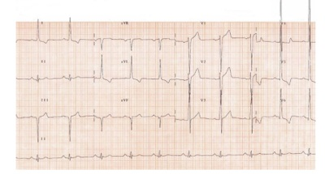
A hipertensão arterial sistêmica estágio I, iniciar terapia anti-hipertensiva em monoterapia com diurético tiazídico e manter sinvastatina devido a risco cardiovascular baixo e LDL dentro da meta.
B hipertensão arterial sistêmica estágio I, iniciar terapia anti-hipertensiva combinada com betabloqueador e diurético tiazídico, aumentar dose de sinvastatina devido a risco cardiovascular alto e meta de LDL menor que 70.
C hipertensão arterial sistêmica estágio II, iniciar terapia anti-hipertensiva em monoterapia com IECA ou BRA e aumentar dose de sinvastatina devido a risco cardiovascular moderado e meta de LDL menor que 100.
D hipertensão arterial sistêmica estágio II, iniciar terapia anti-hipertensiva combinada com IECA ou BRA associada a bloqueador de canal de cálcio ou diurético tiazídico. Aumentar sinvastatina devido a risco cardiovascular alto e meta de LDL menor que 70.
E hipertensão arterial sistêmica estágio II, iniciar terapia anti-hipertensiva combinada com bloqueador de canal de cálcio e diurético tiazídico, aumentar sinvastatina devido a risco cardiovascular alto e meta de LDL menor que 70.
Questão 710 · Clínica Médica · 4000189866Homem, 32 anos, há duas semanas com febre, astenia, dor, edema e limitação no joelho direito que evoluiu de forma aditiva para o tornozelo esquerdo há uma semana. Referia HAS e dislipidemia em uso de hidroclorotiazida e sinvastatina. Há 4 semanas teve diarreia líquida durante 5 dias, melhorando após uso de cipro oxacino. Ao exame, apresentava artrite em joelho direito e tornozelo esquerdo, além de lesões hiperceratóticas em pés e mãos. Qual o diagnóstico mais provável?
A artrite gotosa, visto que os antecedentes de uso de tiazídico e de dislipidemia sugerem este diagnóstico.
B artrite reativa, sendo o quadro infeccioso intestinal o fator desencadeante.
C artrite gonocócica, pois em homem adulto jovem é a principal causa de oligoartrite e na maioria dos casos a uretrite é assintomática.
D artrite reumatoide de início recente, devendo-se aguardar a evolução do caso para confirmação diagnóstica.
E artrite psoriática e a biópsia de pele é exame imprescindível para confirmar este diagnóstico
Questão 711 · Traumatismo Cranioencef álico · Traumatismo Cranioencef álico na Criança · 4000189766Traumatismo Craniencef álico Adolescente de 14 anos é trazido ao pronto atendimento pelo professor da escola. A história é de que, durante jogo de futebol, o paciente bateu cabeça com a cabeça de outro adolescente, seguida de perda da consciência, a qual recobrou em segundos. Nega ter apresentado convulsão ou vômitos e refere apenas náuseas e cefaleia. Foi administrada dipirona (40 gotas) na escola, sem melhora. Ao exame: ECG=15, sem crepitações, com edema da região parietal esquerda, sem equimoses, sem outras alterações. A conduta adequada é:
A solicitar radiografia de crânio e cervical.
B prescrever tramadol e observar por 2 a 8 horas.
C solicitar tomografia de crânio sem contraste.
D prescrever ondansetrona, cetoprofeno, e dar alta com orientações.
E prescrever analgesia e observar por até 8 horas.
Questão 712 · Hemorragia Digestiva Alta Varicosa HDA Varicosa · 4000189717Na Síndrome de Hipertensão Portal, a presença de “RED SPOTS” (sinais vermelhos) encontrados através de exame de endoscopia digestiva alta estão relacionados com:
A a indicação absoluta de tratamento cirúrgico por desconexão Ázigo Portal.
B a certeza de que a fisiopatologia é por cirrose hepática alcoólica.
C a provável evolução para insuficiência hepática grave.
D a melhora clínica e indicação absoluta de utilização de Propranolol.
E a hipótese de provável sangramento digestivo recente.
Questão 713 · Tratamento Cirúrgico Da HDA · Hemorragia por Úlcera Péptica HDA por DUP · 4000189716Paciente, 45 anos, 5º pós-operatório de tratamento cirúrgico de fratura de fêmur direito por queda de motocicleta, estava em uso de anti-inflamatório não-hormonal para controle de dor, evoluiu com quadro de dor súbita em abdome, levado à emergência e diagnosticado com úlcera perfurada. Submetido à laparotomia exploradora identi cada úlcera justapilórica, perfurada, de cerca de 0,4 mm. Sobre a decisão cirúrgica a ser tomada, assinale a alternativa correta:
A antrectomia, com vagotomia troncular.
B desbridamento, “ulcerorrafia”.
C gastrectomia subtotal.
D gastrectomia total.
E “ulcerorra a” e bio
Questão 714 · Hemorragia por Úlcera Péptica HDA por DUP · 4000189696A endoscopia digestiva alta é uma ferramenta poderosa para o manejo da hemorragia digestiva alta. Existe uma classificação endoscópica para essas hemorragias. A presenc corresponde a:
A I A de Sakita.
B I A de Forrest.
C II A de Sakita.
D II A de Forrest.
E III de Sakita.
Questão 715 · Clínica Médica · 4000189612Paciente do sexo masculino, 27 anos, estava jogando uma partida de futebol pro ssional quando, em uma dividida de bola, teve uma colisão do ombro de um adversário contra o seu tórax, caindo ao solo logo em seguida e apresentando uma parada cardiorrespiratória. Atendimento médico inicial a beira campo, com a utilização de um des brilador externo automático (DEA), identi cou um ritmo de brilação ventricular. Qual o provável mecanismo que deflagrou a arritmia?
A Miocardiopatia hipertrófica não diagnosticada previamente.
B Impacto que ocorreu durante a fase precoce da repolarização ventricular.
C Ruptura de cordoalhas miocárdicas.
D Arritmia desencadeada pela síndrome de Brugada.
Questão 716 · Clínica Médica · 4000189610Paciente do sexo feminino, 66 anos, previamente portadora de hipertensão arterial sistêmica, apresentou um episódio de síncope enquanto estava no supermercado, em um ambiente abafado. Relata que tal quadro ocorreu após começar a andar carregando uma sacola pesada, com a paciente sentindo-se mal antes do quadro, com escurecimento visual, sem relato de dor torácica, palpitações, cefaleia, abalos corporais e liberação es ncteriana. Eletrocardiograma da admissão demonstra sinais de sobrecarga de câmaras esquerdas. Coletadas troponinas, sem alterações.Qual deve ser a próxima conduta?
A Internação hospitalar.
B Acompanhamento ambulatorial.
C Cateterismo cardíaco em até 24 horas.
D Holter de 24 horas.
Questão 717 · Clínica Médica · 4000189608Paciente do sexo masculino, 47 anos, hígido, apresenta quadro de tosse seca e rinorreia há 4 dias, com progressão para tosse produtiva, com aspecto amarelado e dispneia. Previamente hígido, comparece ao pronto-socorro em regular estado geral, 31 incursões respiratórias/minuto, saturação de oxigênio de 93% em ar ambiente, lúcido e orientado em tempo e espaço, com radiogra a de tórax demonstrando consolidação em lobo inferior direito, sem demais alterações de sinais vitais. Qual o local de tratamento e o esquema antibiótico proposto mais adequados?
A Hospitalar; ceftriaxone e levofloxacino.
B Hospitalar; ceftriaxone e azitromicina.
C Ambulatorial; ceftriaxone e levofloxacino.
D Ambulatorial; ceftriaxone e azitromicina.
Questão 718 · Clínica Médica · 4000189607Paciente do sexo masculino, 72 anos, previamente independente para atividades básicas e instrumentais de vida diária, comparece ao pronto-socorro com queixa de há 3 horas ter iniciado disartria, desvio de rima bucal e hemiplegia à esquerda, enquanto almoçava. Avaliação da neurologia demonstra escore NIHSS ( National Institute of Health Stroke Scale último sangramento (Forrest IIA) há 3 semanas, hipertensão arterial e acidente vascular cerebral isquêmico há 4 meses. Tomogra a de crânio sem sinais de sangramento ativo, com hipodensidade em topogra a de artéria cerebral média à direita. Sinais vitais: PA 220 x 120mmHg, FC = 87bpm, oximetria = 95% em ar ambiente, 24 incursões respiratórias por minuto. Qual o próximo passo?
A Trombólise química imediata.
B Trombectomia mecânica.
C Suporte clínico com tratamento conservador.
D Trombólise química após controle pressórico.
Questão 719 · Clínica Médica · 4000189605Paciente do sexo feminino, 70 anos, relata quadro de vertigem há 20 minutos, iniciada após movimentar rapidamente a cabeça ao se levantar da cama. Refere episódios prévios semelhantes, com duração de até 30 minutos, com muitas náuseas e vômitos associados, além de uma di culdade para deambular. Nega cefaleia, plenitude auricular, zumbido. Exame físico sem alterações neurológicas. Realizadas manobras do HINTS (
A Tomografia de crânio.
B Coleta de líquor.
C Ressonância Nuclear Magnética de crânio.
D Manobra de Dix-Hallpike.
Questão 720 · Clínica Médica · 4000189604Paciente do sexo feminino, 47 anos, usuária de drogas endovenosas, apresenta rebaixamento do nível de consciência com crises convulsivas. Tomogra a de crânio inicial demonstra lesões hipodensas múltiplas com reforço de contraste em anel, edema perilesional, envolvendo gânglios da base, lobos frontal e parietal. Exames laboratoriais demonstram leucocitopenia com linfopenia importante. Qual o próximo passo baseado na principal hipótese diagnóstica neste momento?
A Anfotericina B.
B Esquema RIPE.
C Radioterapia paliativa e corticoterapia.
D Sulfadiazina, pirimetamina e ácido folínico.
Questão 721 · Clínica Médica · 4000189603Paciente do sexo feminino, 20 anos, comparece ao prontoatendimento com queixa de disúria, febre e dor lombar há 2 dias. Apresentava-se em regular estado geral, oximetria 94% em ar ambiente, pressão arterial 90 x 70mmHg (PAM 76mmHg), febril no momento da avaliação, com disúria mantida. Exame de urina demonstra leucocitúria importante, com nitrito positivo e bactérias frequentes. Ultrassom de rins e vias urinárias não demonstrava sinais de complicação. Qual deve ser o esquema antibiótico proposto neste momento?
A Ceftriaxone.
B Sulfametoxazol-Trimetoprim.
C Meropenem.
D Piperacilina-Tazobactan.
Questão 722 · Clínica Médica · 4000189600Paciente do sexo masculino, 38 anos, internado na enfermaria de ortopedia para tratamento de lesão de ligamento cruzado anterior há 3 dias, apresentando febre, dor lombar, rash cutâneo e redução do volume urinário. Exames laboratoriais de hoje demonstram: Cr 2,0 mg/dL (na admissão: 0,8 mg/dL), hemograma com 13.800 leucócitos/mm³ (na admissão: 8.700/mm³). Contam na prescrição itens como dieta geral, trombopro laxia com heparina de baixo peso molecular, antiin amatório não esteroidal, analgésicos simples e antieméticos se necessário. Qual a possível explicação para a lesão renal aguda?
A Descamação de células tubulares formando plugs dentro do lúmen tubular.
B Fibrose difusa do interstício renal e atrofia tubular.
C Infiltração intersticial renal por eosinófilos.
D Descamação das pontas das papilas renais, com fragmentos de tecido necrótico na via urinária.
Questão 723 · Clínica Médica · 4000189597Paciente do sexo masculino, de 40 anos, encaminhado ao ambulatório de clínica médica por quadro de dor lombar, associada à rigidez matinal, nos últimos 3 meses, que melhoram com atividade física e anti- inflamatórios e pioram com repouso. Nega traumas locais, uso de drogas endovenosas e outros sinais de alarme para dor lombar. Qual das opções abaixo é a mais provável de ser considerada como uma manifestação extra-articular da doença?
A Balanite circinada.
B Uveíte anterior.
C Doença celíaca.
D Dactilite.
Questão 724 · Clínica Médica · 4000189587Paciente de 80 anos, previamente portador de hipertensão arterial sistêmica, procura o atendimento médico por queixa de fadiga e dispneia aos esforços moderados, sem outras queixas maiores na anamnese. Exame físico: regular estado geral, hipocorado 2+/4, acianótico, anictérico, afebril. Sem alterações de sinais vitais. Coletado hemograma inicial que demonstrou: Hb 8,5g/dL, Ht 26,5%, VCM 75fL, HCM 26pg, RDW 20%, reticulócitos sem alterações, leucócitos 5.600/mm³ , plaquetas 170 mil/mm3 . Qual exame diferenciaria com maior acurácia uma anemia ferropriva por doença crônica?
A Eletroforese de hemoglobina.
B Perfil de ferro e ferritina.
C Aspirado de medula óssea com corante azul da Prússia.
D Vitamina B12 e ácido fólico.
Questão 725 · Hemorragia por Úlcera Péptica HDA por DUP · 4000189580Com relação à classificação de FORREST, utilizada nas hemorragias digestivas altas, assinale a a rmativa incorreta
A Forrest II representa sinais de hemorragia recente, sendo a presença de coágulo aderido considerada IIb, com risco de ressangramento em torno de 30%.
B Forrest III representa úlcera com fundo limpo, sem sinal de sangramento atual.
C Forrest I representa hemorragia ativa, com risco de ressangramento sempre alto, em torno de 90%.
D Forrest II C é uma úlcera com fundo limpo.
Questão 726 · Complicações · Rastreamento de câncer · 4000189574Paciente feminino, 72 anos, encaminhada da UBS com história de emagrecimento de 15kg nos últimos 3 meses, associado a anorexia e dor abdominal em quadrante superior direito. Antecedente pessoal: hipertensão arterial sistêmica, diabetes mellitus, colelitíase com diagnóstico há 30 anos, sem vontade de cirurgia por opção própria e colangite esclerosante primária. Ao exame físico: regular estado geral, emagrecida, acianótica, ictérica +/4, afebril. Ausculta cardiopulmonar sem alterações dignas de nota. Abdome emagrecido, ácido, doloroso à palpação de hipocôndrio direito. Qual o primeiro exame a ser solicitado nesse caso?
A Laparoscopia.
B Colangioressonância.
C Tomografia computadorizada de abdome.
D Ultrassonografia de abdome.
Questão 727 · Complicações da cirrose · Etiologia da cirrose · 4000189566Paciente previamente portador de insu ciência cardíaca e cirrótico (CHILD 7B, MELD 10) comparece à emergência da cirurgia geral com quadro de dor abdominal há 7 dias, com aumento de volume abdominal neste intervalo. Nega episódios prévios de descompensação da cirrose por ascite, que esta é a primeira vez que seu abdome distende e que agora até o incomoda para respirar. Sinais vitais estáveis. Nega febre, dor abdominal e sangramentos, mas mantém etilismo. Realizada paracentese, com os seguintes resultados: leucócitos: 240 neutró los/mm³ , cultura negativa, albumina sérica: 4,5 g/dL, albumina da ascite: 2,8 g/dL. Demais exames laboratoriais: Hb 10,8 g/dL, Ht 33%, plaquetas 120 x 109 /L, leucócitos 43.700 céls/mm³ , TGO 100 U/L, TGP 34 U/L, fosfatase alcalina 130 U/L, Gama GT 1.800 U/L, bilirrubina total de 3,4 mg/dL. Qual a provável causa da ascite?
A Trombose de veia porta.
B Insuficiência cardíaca.
C Hepatite alcoólica.
D Síndrome de Budd-Chiari.
Questão 728 · Lesões Císticas do Pâncreas · História Clínica · 4000189496O quadro clínico de icterícia pode ser secundário ao aumento das bilirrubinas conjugadas, das não conjugadas ou de ambas. Em pacientes nos quais a icterícia tem predomínio de bilirrubinas conjugadas, é correto aventar como hipóteses diagnósticas
A tumores periampulares, coledocolitíase e cirrose avançada.
B tumores periampulares, coledocolitíase e hemólise.
C colangite biliar primária, coledocolitíase e cirrose avançada.
D Ascaris lumbricoides, tumores periampulares e hemólise.
E Ascaris lumbricoides, tumores periampulares e colangite biliar primária
Questão 729 · Etiologia · 4000189494A pancreatite aguda é uma condição inflamatória do pâncreas, caracterizada por dor abdominal e níveis elevados de enzimas pancreáticas no sangue. A pancreatite aguda é uma causa frequente de hospitalização, com mortalidade geral de aproximadamente 5%. Várias condições estão associadas à pancreatite aguda, entre as quais é correto citar
A álcool, cálculo na via biliar e hipercolesterolemia.
B álcool, cálculo na via biliar e trauma pancreático.
C álcool, medicamentosa e hipercolesterolemia.
D cálculo na via biliar, medicamentosa e hipercalemia.
E cálculo na via biliar, trauma pancreático e hipercalemia.
Questão 730 · Tratamento Cirúrgico do Megaesôf ago NãoAvançado · 4000189487No tratamento da doença representada nesse exame radiológico contrastado, podem ser usadas determinadas técnicas cirúrgicas. Assinale a alternativa que indica essas técnicas.
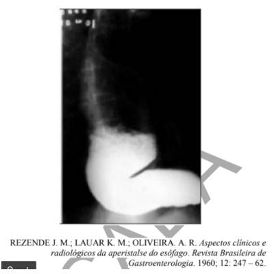
A Cardioplastia à Thal-Hatafuku e operação de Duhamel
B Operação de Duhamel e esofagectomia
C Cardiomiotomia à Heller e operação de Frey
D Cardioplastia à Thal-Hatafuku e esofagectomia
E Cardiomiotomia à Heller e operação de Whipple
Questão 731 · Mecanismo de Ação dos IBPs · Indicações · 4000189484Uma paciente de 40 anos de idade procura serviço de emergência queixando-se de dor em queimação localizada na região anterior do tórax, que se irradia para o pescoço e tem a alimentação e a posição supina como fatores de precipitação. A paciente negou que o esforço desencadeie o sintoma. O eletrocardiograma (ECG) seriado e os biomarcadores cardíacos se mostraram sem alterações. Com base no exposto, assinale a alternativa que indica o próximo passo a ser seguido nesse caso.
A Solicitar teste ergométrico.
B Solicitar parecer da psiquiatria.
C Prescrever inibidor de bomba de próton.
D Solicitar tomografia de tórax.
E Prescrever ácido acetilsalicílico.
Questão 732 · Pico de f luxo expiratório · 4000189483Uma paciente de 25 anos de idade procurou atendimento ambulatorial para mostrar o resultado da monitorização do exame de peak- ow semanal, o qual revelou variações diárias acima de 30% quando no trabalho, e nenhuma variação quando afastada do trabalho. Na cha médica da paciente, havia a informação de quadro de tosse associada a chiados no peito e dispneia há 1 mês. A paciente trabalhava há 6 meses como cabeleireira. Nunca fumou. Nada foi encontrado no exame físico. A prova de função pulmonar revelou- se sem alterações. A respeito desse caso clínico, assinale a alternativa correta.
A Faz-se necessária a realização da prova de broncoprovocação para a confirmação do diagnóstico.
B Os sintomas e as alterações funcionais são transitórios e desaparecerão uma vez instituído o tratamento.
C O mecanismo fisiopatológico da presente doença é diferente do observado na asma alérgica.
D Pode-se confiar no resultado do exame de peak-flow, o qual define o diagnóstico.
E Deve-se iniciar o uso preventivo de broncodilatadores de curta duração 30 minutos antes do horário de entrada no trabalho.
Questão 733 · Inibidores da enzima conversora de angiotensina e bloqueadores dos receptores AT1 da angiotensina II · 4000189481Um paciente de 60 anos de idade com diagnóstico de insu ciência cardíaca congestiva é submetido a exame ecocardiográ co que mostra diminuição da fração de ejeção sistólica do ventrículo esquerdo. Nesse caso, visando a reduzir o risco de mortalidade, a medicação mais apropriada a ser prescrita é
A ácido acetilsalicílico.
B digoxina.
C diurético.
D bloqueador de cálcio.
E inibidor da enzima conversora de angiotensina.
Revisar: possível letra faltando em enunciado
Questão 734 · Quadro clínico · 4000189479Um paciente de 20 anos de idade, previamente saudável, procurou o pronto-socorro informando apresentar, há dois dias, quadro clínico constituído por febre de 38 ºC, associada a dor torácica respiratório-dependente à esquerda e tosse com eliminação de secreção amarelada. A radiogra a de tórax mostrou consolidação em língula. O exame físico revelou crepitações inspiratórias em região axilar esquerda, pressão arterial de 80 mmHg x 40 mmHg, SatO2 = 90%, FR = 32 irpm e FC = 110 bpm. Acerca do caso clínico, assinale a alternativa correta.
A O tratamento desse paciente só deve ser iniciado após o resultado do teste rápido do exame de escarro para bactérias e vírus.
B Há necessidade de serem feitos exames complementares para melhor estabelecer a gravidade do quadro clínico do paciente.
C Os dados obtidos com a história clínica, o exame físico e a radiografia de tórax são suficientes para o estabelecimento do diagnóstico.
D O uso de corticoide sistêmico deve ser evitado, pois pode agravar a condição clínica do paciente.
E Os critérios clínicos identificados indicam que o tratamento deve ocorrer em ambiente de unidade de terapia intensiva pela necessidade de se iniciar ventilação mecânica.
Questão 735 · Nef rite intersticial aguda · 4000189478Uma paciente de 20 anos de idade apresenta perda aguda da função renal, associada a automedicação com anti-inflamatório, sendo feito o diagnóstico de nefrite intersticial aguda. Acerca dessa condição nefrológica, assinale a alternativa correta.
A Eosinofília constitui manifestação clínica sugestiva do referido diagnóstico.
B O exame sumário de urina (EAS) dessa paciente costuma mostrar-se normal.
C O aumento difuso dos rins, visto na tomografia computadorizada, representa a confirmação de certeza do diagnóstico de afecção renal.
D A maioria dos pacientes nos quais o citado diagnóstico é confirmado evolui para insuficiência renal crônica terminal.
E Cerca de 75% dos casos estão relacionados a comprometimento associado de outros órgãos, como pele e pulmão.
Questão 736 · Diagnóstico e investigação adicional · 4000189473Um paciente de 35 anos de idade, assintomático, procurou atendimento médico para realizar seu exame anual periódico exigido pela empresa em que trabalha. No exame físico, identi cou-se tireoide palpável com consistência lisa e elástica, não havendo relato de dor à palpação. A avaliação da função tireoidiana mostrou TSH, aumentado com T4 livre normal. Que achado laboratorial confirma o provável diagnóstico desse paciente?
A Leucocitose com desvio à esquerda
B Nível de T3 aumentado
C Nódulo hipocaptante de tireoide
D Presença de anticorpo antitireoperoxidase
E Aumento do colesterol total
Questão 737 · Tratamento · 4000189472Um paciente de 40 anos de idade, com diagnóstico de leucemia mieloide aguda e neutropenia, apresenta quadro de febre de 39 ºC, em uso de esquema antimicrobiano constituído por vancomicina e carbapenêmico há cinco dias. O exame físico não mostra evidência clínica que justi que a persistência da febre, e o hemograma realizado tem resultado semelhante ao feito quando do início do tratamento do paciente. Assinale a alternativa que indica a medida mais adequada nesse caso.
A Suspender o esquema antimicrobiano.
B Realizar uma punção liquórica.
C Acrescentar um fármaco antifúngico ao esquema prescrito.
D Solicitar uma transfusão de sangue.
E Indicar o transplante de medula.
Questão 738 · Diagnóstico eletrocardiograf ico do IAMCSST · 4000189469Um paciente de 61 anos de idade, sedentário, obeso e tabagista, há duas horas iniciou epigastralgia em queimação de forte intensidade após o almoço. O exame físico mostrou uma frequência cardíaca igual a 60 bpm, frequência respiratória = 25 irpm, SatO2 = 92% e PA = 100 mmHg x 60 mmHg, com ausculta cardíaca e pulmonar normais e sem edema de membros inferiores. Na admissão em uma unidade de pronto atendimento, ele realizou o eletrocardiograma (ECG) a seguir. Qual é a principal hipótese de diagnóstico?
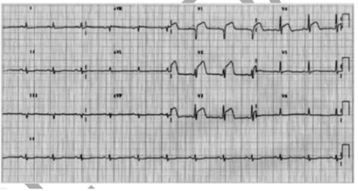
A Bloqueio de ramo direito.
B Infarto agudo do miocárdio
C Síndrome de Wolf Parkinson White
D Hipertonia vagal
E Fibrilação atrial
Questão 739 · Suporte Básico de Vida · Ventilação · Compressões torácicas · 4000189455A parada cardiorrespiratória (PCR) é a cessação da atividade mecânica cardíaca e caz, confirmada pela tríade inconsciência, ausência de pulso central e de respiração. Muitas vezes, na infância, ela está associada a uma condição reversível; dessa forma, o seu tratamento precoce e bem conduzido pode melhorar o prognóstico do atendimento da criança. O atendimento da PCR inicia-se com o suporte básico de vida (SBV). Quanto às recomendações de SBV em pediatria, assinale a alternativa correta.
A O evento cardíaco primário é causa mais comum de PCR em lactentes e crianças do que por hipoxemia grave.
B Deve-se atrasar o uso de epinefrina na PCR pediátrica, com o objetivo de aguardar a resposta às compressões torácicas.
C Em lactentes até 1 ano de idade, o socorrista deve realizar as compressões torácicas com a mão espalmada em todo o tórax e com o braço estendido.
D As compressões torácicas e a ventilação devem ser sincronizadas. Em crianças, devem ser 2 compressões para 15 ventilações.
E A sequência do SBV deve ser C-A- B (compressão – via aérea – respiração) ao invés de de A-B-C (via aérea – respiração – circulação/compressão).
Questão 740 · Etiopatogenia · 4000189441John Snow é considerado por muitos o pai da epidemiologia. Seu feito foi ter conseguido relacionar a epidemia de uma doença que assolou Londres nos anos de 1850 com o consumo de água contaminada, e não em razão das explicações apresentadas pela teoria miasmática, vigente à época. O fato mais impressionante é que foi somente após algumas décadas deste evento que a humanidade conseguiu desenvolver seus conhecimentos a respeito de microbiologia e comprovar que esta determinada doença estava relacionada a um microrganismo presente na água consumida pelos humanos. As informações mencionadas referem-se à
A hepatite A.
B leptospirose.
C cólera.
D esquitossomose.
E febre tifoide.
Questão 741 · Edema Agudo Pulmonar · 4000189430Considerando os tipos dos aspectos do escarro e suas possíveis causas, é CORRETO afirmar:
A Mucopurulento: carcinoma de células alveolares
B Geleia de framboesa: pneumonia estreptocócica.
C Róseo com bolhas de ar: edema pulmonar.
D Sanguíneo: infecção por Klebsiella Pneumoniae.
Questão 742 · Quadro clínico · 4000189429A respiração emite sons que são produzidos por turbulências aéreas e vibrações das estruturas pulmonares. Com base no tema, são sons pleuropulmonares anormais descontínuos:
A Roncos, sibilos e estridor.
B Estertores finos e grossos.
C Atrito pleural.
D Broncofonia, egofonia, pectoriloquia fônica e afônica.
Questão 743 · Fisiopatologia · 4000189428Considerando as manifestações clínicas da asma brônquica, a dispneia e o desconforto torácico se originam diretamente do(a):
A Aumento do trabalho respiratório necessário para superar a elevação da resistência ao fluxo nas vias aéreas.
B Inflamação das vias respiratórias.
C Estreitamento das vias respiratórias.
D Inflamação do parênquima.
Questão 744 · Anamnese e exame f ísico · 4000189427Acerca do manuseio de pacientes com dor torácica, é CORRETO afirmar:
A A pericardite pode ser confundida com angina, pois costuma causar dor precordial em aperto, aliviada pelo repouso e pela nitroglicerina, mas que piora com a respiração profunda.
B A dor torácica que acompanha a pneumonia é bastante variável, tanto em intensidade quanto em característica, refletindo geralmente acometimento pulmonar periférico, com estimulação das terminações nervosas da pleura.
C Os transtornos psiquiátricos não podem e não devem ser diagnosticados como a causa de dor torácica em um paciente, pelo risco de uma desordem orgânica de base ser negligenciada.
D A dor torácica causada por patologia esofágica é localizada na região central do tórax, dura de segundos a poucos minutos, sendo frequentemente descrita pelo paciente como pontada.
Questão 745 · Introdução · Colestase · Avaliação laboratorial da icterícia · 4000189425É definida como coloração amarelada da pele, escleróticas, membranas mucosas e líquidos orgânicos, consequente à deposição, nesses locais, de pigmento biliar - bilirrubina, o qual se encontra em níveis elevados no plasma (hiperbilirrubinemia). É clinicamente detectada quando a concentração sérica de bilirrubina ultrapassa 2-3 mg /100 ml. O trecho se refere a:
A Cirrose.
B Síndrome nefrótica.
C Edema idiopático..
D Icterícia
Questão 746 · Manif estações Motoras · Quadro Clínico · 4000189421Sobre os tipos de disbasia (alteração da marcha), é CORRETO afirmar:
A Marcha espástica: essa é a característica de intoxicação alcoólica ou por barbitúricos. O paciente embriagado titubeia, cambaleia, inclina-se para diante e para trás, parecendo, a cada momento, que está prestes a perder o equilíbrio e cair. O controle sobre o tronco e as pernas fica mais comprometido.
B Marcha vestibular: quando o doente tem paralisia do movimento de flexão do pé ao tentar caminhar, toca com a ponta do pé o solo e tropeça. Para evitar, levanta acentuadamente o membro inferior, lembrando o “passo de ganso”.
C Marcha escavante: o paciente, para caminhar, acentua a lordose lombar e vai inclinando o tronco ora para direita, ora para esquerda, alternadamente, lembrando o andar de um pato. Observada nos pacientes com diminuição da força dos músculos pélvicos e da coxa, e também nas mulheres grávidas.
D Marcha Parkinsoniana: o doente anda como um bloco, enrijecido, sem o movimento automático dos braços. A cabeça permanece inclinada para frente e os passos são curtos e rápidos, dando a impressão de que o doente “corre atrás do seu centro de gravidade” e que vai cair pra frente.
Questão 747 · Hemorragia Digestiva Baixa HDB · Métodos Diagnósticos e Terapêuticos · 4000189420Acerca das hemorragias digestivas, é INCORRETO afirmar:
A De acordo com a intensidade de sangue perdido, a hemorragia digestiva baixa pode ser classificada em sangramento líquido, acelerado e oculto.
B As Úlceras Pépticas são as causas mais frequentes de hemorragia digestiva alta, considerando lesões gástricas e duodenais.
C Nos pacientes com hemorragia digestiva alta persistente com causa não esclarecida ou em casos com evidências de sangramento incontrolável, é realizada a Arteriografia do tronco celíaco e da artéria mesentérica superior.
D A doença diverticular é a principal causa de hemorragia digestiva baixa devido à sua alta prevalência, mesmo com apenas 3% dos pacientes complicando para o sangramento.
Questão 748 · Trombose da veia porta · 4000189419A causa mais comum de hipertensão portal pré-hepática é:
A Síndrome de Budd-Chiari.
B Cirrose hepática.
C Trombose da veia porta.
D Hepatite crônica.
Questão 749 · COVID 19 · 4000189418Sobre a variante Ômicron do SARS Cov 2, é CORRETO afirmar:
A A mortalidade e a transmissibilidade são similares às das outras variantes de importância clínica do vírus SARS Cov 2.
B A mortalidade é menor e a transmissibilidade maior do que as outras variantes de importância clínica do vírus SARS Cov 2.
C A mortalidade é maior e a transmissibilidade menor do que as outras variantes de importância clínica do vírus SARS Cov 2.
D A mortalidade e a transmissibilidade são menores do que as outras variantes de importância clínica do vírus SARS Cov 2.
Questão 750 · Hemorragia Subaracnoidea HSA · 4000189417CMS, sexo feminino, 37 anos, dá entrada no pronto socorro relatando estar com “a pior dor de cabeça da sua vida”. Refere início súbito, associada a náuseas e vômitos. Informou que com frequência apresenta alterações visuais que duram em torno de 15 minutos, com sucessão de dores de cabeça do tipo pulsátil. No exame neurológico, encontrava- se sonolenta, sem sinais focais, reflexos cutâneos plantares exores e com rigidez de nuca (++/4+). O diagnóstico e o exame inicial mais indicados são:
A Hemorragia subaracnóidea por sangramento de aneurisma intracraniano; TC de crânio sem contraste.
B Crise de migrânea com aura; angiorressonância do crânio.
C Crise de migrânea sem aura; punção lombar.
D Estado migranoso; angiografia com subtração digital.
Questão 751 · Glomeruloesclerose f ocal e segmentar · 4000189416Homem, 45 anos, comparece à consulta com queixa de edema na face, braços e pernas e urina espumosa há 2 meses. Ao exame físico: BEG, corado, hidratado, anictérico, acianótico, afebril. Sinal de Godet positivo (+++/4+). PA: 120 x 80 mmHg, sem outras alterações. Exames laboratoriais: creat: 0,9 mg/dl, ureia: 45 mg/dl, potássio: 5 mmol/L, sódio: 139 mmol/L, albumina: 2,5 g/dl, proteinúria: 5200 mg/24h. Além da proteinúria, o achado mais provável na análise de urina é:
A Cilindros Hemáticos.
B Cilindros Leucocitários.
C Lipídios.
D Eritrócitos dismorfos.
Questão 752 · Carcinoma espinocelular e lesões prémalignas · Carcinoma basocelular · 4000189415Mulher, 74 anos, lavradora desde os 15 anos, procurou a UBS de seu bairro referindo lesão cutânea em MSE (conforme figura), com crescimento progressivo há 7 meses. O Tratamento mais indicado para a hipótese diagnóstica é:
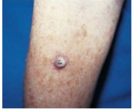
A Curetagem e eletrocoagulação.
B Terapia Fotodinâmica.
C Radioterapia Superficial.
D Exérese com margens de segurança.
Questão 753 · Tratamento no paciente adulto · 4000189414CPB, sexo feminino, 25 anos, foi levada ao pronto-socorro pelo pai com dor abdominal há dois dias e hoje iniciou quadro de rebaixamento do nível de consciência, associado à respiração rápida e profunda. Ao exame físico: REG, desidratada (3+/4+), taquidispneica (ritmo de Kusmaul), Glasgow 14. Exames laboratoriais: hemograma com leucocitose, dextro: 460 mg/dL, pH sérico: 7,18, HCO3: 8 mEq/L, Na: 142 mEq/L K: 3,2 mEq/L. Após iniciar hidratação endovenosa, o próximo passo será:
A Iniciar reposição endovenosa de potássio antes da insulinoterapia, por risco de arritmias.
B Corrigir importante acidose metabólica do paciente com infusão de bicarbonato de sódio.
C Iniciar insulinoterapia endovenosa com NPH.
D Prescrever solução salina hipotônica de NaCl 0,45%, 10 a 14 mL/kg/h.
Questão 754 · Reentrada · Taquicardia por reentrada nodal · 4000189411O nome da arritmia que é um ritmo que o impulso elétrico se origina logo acima do ventrículo, com reentrada por uma via de condução acessória, e o ECG não mostra a onda P, mas ela pode estar presente e com morfologia anormal, nem sempre sendo possível determinar o intervalo PR e o intervalo RR é constante e o QRS estreito, com frequência cardíaca superior a 220 bpm em lactentes e a 180 bpm em crianças maiores é:
A Bloqueio Atrioventricular.
B Bradicardia sinusal.
C Flutter Ventricular.
D Taquicardia Supraventricular.
Questão 755 · Patogênese · Apresentação clínica · 4000189405A Dermatite Atópica (DA), ou eczema atópico, é uma doença de caráter inflamatório, crônico e recidivante, clinicamente caracterizada por eczema associado a prurido intenso, de distribuição peculiar e variável com a idade. Com relação à DA, é INCORRETO afirmar:
A As alergias respiratórias não tem relação com a dermatite atópica, pois são resultantes de mecanismos imunológicos diferentes.
B Os fatores ambientais que podem contribuir para a piora do quadro de DA são alérgenos alimentares (os mais implicados são clara de ovo, leite de vaca e trigo).
C As características clínicas comuns a todos os atópicos são prurido intenso e xerose cutânea.
D Defeitos na barreira lipídica da pele do atópico facilitam a penetração de bactérias, permeando os espaços intercelulares.
Questão 756 · Quimioprof ilaxia · 4000189398Um paciente com meningite meningocócica deixa de transmitir a doença, em geral:
A Após o quinto dia de tratamento com antibióticos.
B Após o período de incubação.
C Após 24 horas do início da antibioticoterapia.
D Após cessarem todos os sintomas.
Questão 757 · Bactérias atípicas · 4000189396Paciente feminino em idade escolar, dá entrada no hospital com história de febre há 3 dias, cansaço, tosse seca, dor de garganta e dores articulares no início dos sintomas. Ao exame físico, encontra-se em bom estado geral, acianótica, afebril e eupneica. Apresenta rash cutâneo difuso. A ausculta pulmonar revela sibilos difusos bilateralmente. Diante do quadro, o pediatra suspeita de infecção por Mycoplasma Pneumoniae. Foi realizado radiogra a de tórax, que evidencia consolidação pulmonar predominando em lobo inferior direito e mínimo derrame pleural. Com relação a este caso, é CORRETO afirmar:
A Os achados radiológicos descartam suspeita de infecção por M. Pneumoniae.
B Os dados clínicos não frequentes encontrados na infecção por M. Pneumoniae.
C O rash cutâneo é uma manifestação extra pulmonar comum dessa infecção.
D A dosagem das crioaglutininas é indicado para realização nessa fase da doença.
Questão 758 · Choque séptico · 4000189391Com relação aos cateteres venosos centrais, é INCORRETO afirmar:
A São cateteres inseridos normalmente por punção percutânea, pela técnica de Seldinger, com anestesia local ou geral e em ambiente cirúrgico.
B A contraindicação é absoluta para acesso venoso a pacientes com impossibilidade de acesso venoso periférico e para obtenção de medidas das pressões venosas centrais.
C As principais indicações são: impossibilidade de se obter acesso venoso periférico, administração de nutrição parenteral prolongada, quimioterapia e hemofiltração ou plasmaférese.
D O uso da ultrassonografia com Doppler pode auxiliar durante o procedimento a localizar a veia e evitar iatrogenias durante a punção.
Questão 759 · Toracocentese · 4000189390A técnica que permite a extração de um líquido anormal, acumulado no espaço pleural, por meio de uma agulha ou um cateter, introduzido percutaneamente pela parede torácica até o espaço pleural, que pode ser utilizada para ns terapêuticos, quando a retirada do líquido da cavidade pleural diminui o quadro de insu ciência respiratória restritiva e com ns diagnósticos, para obter o líquido para análises bioquímica, citológica e microbiológica é a:
A Tapotagem.
B Toracostomia.
C Toracocentese.
D Toracopoiese
Questão 760 · Quadro clínico · 4000189383A Hiponatremia é o distúrbio hidroeletrolítico mais comum nos pacientes hospitalizados e sua ocorrência está associada a desfechos clínicos desfavoráveis. Sobre o exposto, é CORRETO afirmar:
A A concentração sérica de sódio é uma medida acurada da concentração do sódio corpóreo total, mas não reflete um valor relativo da quantidade de água livre no compartimento intravascular
B Na maioria dos casos, a Hiponatremia é sintomática. Mesmo assim, pelo fato de os sintomas serem vagos, o seu diagnóstico não é algo simples.
C A Hiponatremia, quando se estabelece rapidamente, ou seja, em período de tempo inferior a 48 horas, é considerada aguda e pode, por isso, oferecer maior risco de edema cerebral.
D Um paciente com sódio sérico de 128 mEq/L apresenta Hiponatremia leve. Ainda assim, a correção está indicada até que o sódio sérico esteja em torno de 140 mEq/L.
Questão 761 · Diagnóstico · 4000189382Dados os critérios prognósticos na Pancreatite Aguda, está INCORRETO:
A Aumento do hematócrito, após 48h, pois irá avaliar o valor real, já que na admissão pode estar “mascarado”.
B Glicemia, que, se elevada, pode indicar um processo inicial de insuficiência pancreática.
C Idade, que, quanto mais avançada, mais o indivíduo se torna suscetível às complicações graves.
D AST (Aspartato Aminotransferase), que, se elevado, indica lesão orgânica, principalmente hepática.
Questão 762 · Câncer de Cólon NãoPolipoide Hereditário · 4000189378Acerca dos sintomas da Síndrome de Lynch, é INCORRETO afirmar:
A Presença de tumores sincrônicos no cólon.
B Alteração do funcionamento do trato intestinal (diarreia e prisão de ventre alternados).
C Sangue nas fezes.
D Dor ou desconforto abdominal.
Questão 763 · Trauma Crânio Encef álico TCE · 4000189377Adolescente, sexo masculino, 17 anos, é encaminhado ao hospital por ter sofrido coice de cavalo. Apresenta cefaleia leve e Glasgow 14. A TC de crânio sem contraste constatou Traumatismo Crânio Encefálico (TCE) . Após algumas horas no leito, evoluiu com aumento da intensidade da cefaleia, rebaixamento do nível de consciência, náuseas e crise convulsiva e queda na escala de coma de Glasgow para 11. A alteração que revela o pior prognóstico do paciente é:
A Aumento da intensidade da cefaleia.
B Queda na pontuação da escala de coma de Glasgow.
C Crise convulsiva.
D Náusea.
Questão 764 · Def inição · Diagnóstico · 4000189370Acerca da Infecção do Trato Urinário (ITU), é CORRETO afirmar:
A A infecção urinária pode ser sintomática ou assintomática, recebendo na ausência de sintomas a denominação de bacteriúria assintomática.
B A infecção por Chlamydia Trachomatis deve ser considerada principalmente nas mulheres assintomáticas, com uroculturas positivas
C A ITU baixa (cistite) apresenta-se habitualmente com disúria, urgência miccional, polaciúria, nictúria e diminuição da frequência urinária. A febre nas infecções baixas é um sintoma usual.
D Denomina-se ITU complicada quando ocorre em mulheres não grávidas e na ausência de anomalias estruturais ou funcionais do trato urinário.
Questão 765 · Agente etiológico · Agente etiológico · 4000189358A Giardíase e a Amebíase são doenças causadas por protozoários e que possuem a seguinte característica em comum:
A São doenças que podem ser prevenidas através de vacinação.
B São doenças transmitidas pela via fecal-oral.
C São doenças de notificação compulsória nacional.
D São doenças incuráveis e de difícil prevenção.
Questão 766 · Tratamento · 4000189351Mulher, 40 anos, apresenta nódulo em lobo direito da tireoide de 20 mm, cuja PAAF evidenciou carcinoma papilífero. Tendo em vista o diagnóstico obtido pela PAAF e de acordo com seus conhecimentos acerca do tema tumores diferenciados da tireoide, assinale a alternativa correta:
A O tratamento cirúrgico proposto é de tireoidectomia parcial por tratar-se de microcarcinoma papilífero seguida de radioiodoterapia, sendo indicado o seguimento com a USG cervical.
B O tratamento cirúrgico proposto é tireoidectomia total devendo ser solicitado no pós operatório a dosagem da tireoglobulina e deve ser prescrito no pós operatório doses adequadas da levotiroxina a fim de manter o TSH suprimido e o paciente em um quadro de hipertireoidismo subclínico (assintomático).
C O tratamento cirúrgico proposto é de tireoidectomia total e caso haja alteração no proto oncogene RET deve ser pesquisada todos os familiares uma vez que essa alteração evidencia o carcinoma papilífero familiar.
D O tratamento cirúrgico proposto é de tireoidectomia total sendo indicado o seguimento com a USG cervical e a dosagem da calcitonina.
Questão 767 · Causas · Quadro Clínico em Crianças · Causas · 4000189320Menino, 5 anos, chega ao ambulatório com queixa principal de aumento peniano há 1 ano associado ao rápido crescimento de pêlos pubianos e voz grossa. História patológica pregressa de investigação de vômitos esporádicos desde os 2 anos de idade com o gastropediatra sendo descartado re uxo gastro-esofágico. História familiar negativa para casos semelhantes a sua queixa atual. Exame físico: peso 20,5 kg altura 117 cm , testículos de 6 cm3 cada, consistência broelástica, contornos regulares, ausência de sinais ogísticos. Pênis 8 cm ( maior que P 95 para tamanho de pênis para idade). Tanner G3P3. A principal hipótese diagnóstica é:
A Puberdade precoce central idiopática, já que apresenta todos os carácteres sexuais desenvolvidos e este representa o principal diagnóstico de puberdade precoce entre os acometidos do sexo masculino.
B Tumor de sistema nervoso central com secreção de GnRH.
C Neurofibromatose tipo 1, que a criança ainda não apresentou neurofibromas devido a sua pouca idade.
D Hiperplasia suprarrenal congênita forma clássica perdedora de sal já que apresenta história de vômitos.
Questão 768 · Doença meningocócica · Diagnóstico · Tratamento · 4000189319Criança de 7 anos chega ao pronto socorro com relato de cefáleia e febre iniciados há 1 dia. Hoje iniciaram episódios de vômitos associada a prostração. Ao exame: regular estado geral, hipocorado, algo desidratado, acianótico, TAX: 39,2°C, nível de consciência rebaixado, rigidez de nuca, PA: 144x94 mmHg. Qual a conduta mais adequada neste caso?
A Iniciar tratamento com cefalosporina de terceira geração e em seguida, realizar punção lombar.
B Iniciar tratamento com cefalosporina de terceira geração, realizar tomografia de crânio e depois, se possível, punção lombar.
C Realizar punção lombar e iniciar tratamento com cefalosporina de terceira geração
D Realizar punção lombar, colher hemograma e hemocultura e, caso haja alteração, iniciar tratamento com cefalosporina de terceira geração.
Questão 769 · Hipertermia Maligna · 4000189314Menino, 5 anos, internado com pneumonia e derrame pleural esquerda é encaminhado ao centro cirurgico para drenagem de tórax. Realizado procedimento sob sedação inalatória, contudo evoluiu ao nal com TAX: 39,4°C, FC: 192 bpm, FR: 48 irpm e rigidez muscular, sem outras alterações. Diante do quadro clinico, o tratamento adequado é:
A Dantrolene
B Neostigmina
C Atropina
D Biperideno
Questão 770 · Fenitoína · 4000189308Menina, 9 anos, deu entrada no PS em crise convulsiva caracterizada por movimentos tônico clônicos generalizados associados a perda de controle es ncteriano e perda da consciência há 30 minutos. Após realização de 3 doses de diazepam endovenoso, paciente mantinha em crise convulsiva. A próxima medicação a ser feita é:
A Carbamazepina
B Tiopental
C Lorazepam
D Fenitoína
Questão 771 · COVID 19 · 4000189296Dentre as opções a seguir, a que NÃO indica uma vacina disponível para SARS Cov 2 é:
A Vacina de vírus inativado.
B Vacina de vírus atenuado.
C Vacina de vetor viral.
D Vacina de RNA mensageiro.
Questão 772 · Manejo da DRC · Manejo da Hipertensão arterial · 4000189287Homem, 65 anos, portador de hipertensão arterial sistêmica e diabetes melitus, assintomático, em uso regular de losartan 100mg/dia, atenolol 50mg/dia e metformina 85 mg 3x ao dia, vem para consulta de rotina no ambulatorio de nefrologia por doenca renal cronica, onde faz acompanahmento. Traz exames de controle que apresentam elevação da creatinina (creatinina 3,2 mg/dl – TFGe CKD-EPI 50 ml/min) em relação aos exames anteriores (creatinina 1,7 mg/dl – TFGe CKD-EPI 26 ml/min). Ao exame: anicterico, aciantico, afebril, corado e hidratado. PA: 150/90 mmHg FC:64 bpm FR: 12 ipm. Sem outras alterações no exame sico. Outros exames laboratoriais: sodio 140 mEq/l | ureia 40 mg/dl | potassio 4,9 mEq/l, | glicemia em jejum 127 mg/dl hemoglobina glicada 6g%. Qual o melhor conduta para o caso?
A Associar insulinoterapia a noite para controle glicemico
B Iniciar vasodilatador arterial para controle da pressao arterial
C Supender betabloqueador e associar enalapril
D Suspender losartan e iniciar bloqueador de canal de calcio
Questão 773 · Distúrbios de ritmo cardíaco · Desf ibrilação · 4000189286Homem, 74 anos, hipertenso e diabético internado na UTI em pós operatório de debridamento cirúrgico de “pé-diabético” infectado em membro inferior direito. Inicia quadro de sudorese, precordialgia e taquicardia seguida de perda do nível de consciência. Monitor eletrocardiográfico apresenta o traçado abaixo. Qual a conduta imediata?
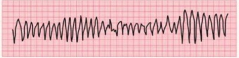
A Cardioversão elétrica
B Amiodarona
C Desfibrilação
D Adenosina
Questão 774 · Diagnostico · Fisiopatologia · 4000189285Mulher, 25 anos, sem comorbidades prévias, chega a emergência com quadro súbito de dispneia em repouso e dor torácica pleurítica de forte intensidade de início há 3 horas. Nega quaisquer antecedentes mórbidos. Ao exame: PA: 120/80 mmHg, FC: 96 bpm e FR: 25 irpm. e SaO2 96%. Como você poderia excluir o diagnóstico de tromboembolismo pulmonar nesta paciente?
A Tomografia de tórax normal
B PaO2 normal na gasometria arterial
C Níveis plasmáticos normais de D-dímero pelo método ELISA
D Ausência de sobrecarga de ventrículo direito no ECG e ultrassom point of care sem aumento de ventrículo direito
Questão 775 · Escala de AVC do NIHSS National Institutes of Health Strole Scale · Trombectomia Mecânica · 4000189283Mulher, 74 anos, 90 Kg, portadora de hipertensão arterial sistêmica, dislipidemia e brilação atrial em uso regular de Losartana, anlodipino, sinvastatina, carvedilol e varfarina relata quadro súbito de afasia e hemiparesia à esquerda há 3 horas. Ao exame: Tax: 36,5°C, ausculta cardíaca com ritmo cardíaco irregular e ausência de sopros, FC: 89 bpm, PA: 190/100 mmHg, TEC < 2 segundos. FR: 23 irpm, SpO2: 96% em ar ambiente. Exame neurológico: hipoestesia e força grau 1 à esquerda em membros superiores e inferiores, desvio de rima labial para a direita. NIHSS: 13 pontos. Tomogra a de crânio obtido na emergência com hiperdensidade em trajeto de artéria cerebral média direita. Exames laboratoriais: Hb 14,0 g/dL| Htc 42% | 9.000 mm3 leucócitos | Plaquetas: 85.000 | TAP (INR): 4,7| Na: 137 mEq/L| K: 4,2 mEq/L. Eletrocardiograma: ritmo cardíaco irregular, ausência de onda P, sem sinais de isquemia aguda, FC: 86 bpm. O tratamento mais adequado indicado para essa paciente neste momento é:
A Trombectomia mecânica
B Heparina de baixo peso molecular
C Trombólise com Alteplase
D AAS + antagonista Vitamina K
Questão 776 · Farmacodermias leves · Introdução · Sulf onamidas · 4000189282Mulher, 29 anos com história de gota procura o pronto socorro devido rash difuso, lesões eritematosas em pele e úlceras orais extensas que impedem a ingestão de líquidos. Relata que está em uso de antibiótico para tratamento de infecção do trato urinário, mas não recorda o nome. O uso de qual medicação é mais compatível como causador das alterações cutâneo-mucosas?
A Ciprofloxacina
B Sulfametoxazol -Trimetoprina
C Macrodantina
D Cefalexina
Questão 777 · Características Ultrassonográf icas dos Nódulos · Apresentação Clínica e Avaliação Inicial · 4000189281Indicações de PAAF Mulher, 50 anos, hipertensa em uso de losartana, refere aparecimento de nódulo em lobo esquerdo da tireóide há 2 anos, de crescimento lento, sem disfonia, disfagia e dispnéia. Nega sintomas de hipertireoidismo, hipotireoidismo e diabetes melitus. Nega história familiar de neoplasias. Tabagista há 30 anos (20 cigarros/semana) e nega etilismo. Exame físico: Oroscopia: ausência de lesões. Laringoscopia: mobilidade normal de pregas vocais, ausência de lesões. À palpação cervical identi cado nódulo de cerca de 4 cm, localizado em lobo esquerdo da tireoide, ausência de linfadenomegalia cervical. Tendo em vista a anamnese e o exame físico desta paciente bem como seus conhecimentos acerca do tema doenças cirúrgica da tireoide é correto afirmar que além de USG cervical, é necessário solicitar:
A Dosagem do TSH. Caso a USG evidencie nódulo cístico com componente sólido associado é necessário a realização da PAAF
B Dosagem de TSH e cintilografia. Caso a USG evidencie nódulo sólido, hipoecoico, com macrocalcificações não é necessário realizar a PAAF.
C Dosagem de TSH. Caso a USG evidencie nódulo cístico com componente sólido associado não está indicado a realização da PAAF.
D Dosagem de TSH e tireoglobulina. Caso a USG evidencie nódulo sólido hipoecoico, com microcalcificações e altura maior que largura estamos diante de características ultrassonográficas de um nódulo benigno.
Revisar: possível letra faltando em enunciado
Questão 778 · Quadro clínico · Manejo inicial e pacotes · Fisiopatologia e alterações inf lamatórias · 4000189280Paciente 70 anos, hipertensa e diabética, portadora de neoplasia no estômago, em quimioterapia com última sessão há 1 semana. Apresenta astenia e febre há 24 horas. Ao exame: confusa, PA: 80/50 mmhg, FC 112 bpm, tempo enchimento capilar lenti cado, sat02 94% em ar ambiente, FR 21 irpm, temp axilar 38,4ºC. Exames laboratoriais: hb 6,5 g/dl/ leucócitos 1000 (70% PMN)/ plaquetas: 44.000 | Cr 1,2 / Ur 68 / K 3,8 / Na 130 / AST 27 / ALT 32 / BT 1,0 (BD 0,2). É correto afirmar:
A Recomenda-se prescrição de salina hipertônica diante da hiponatremia sintomática.
B Recomenda-se a prescrição de plaquetas com alvo de manutenção >50.000.
C Cefepime + Vancomicina é uma opção adequada para esquema antimicrobiano empírico.
D O início de antibioticoterapia deve aguardar investigação complementar pormenorizada dada a ausência de urgência.
Revisar: possível letra faltando em enunciado
Questão 779 · Tratamento · 4000189276Mulher, 52 anos, tabagista, portadora de lúpus eritematoso sistêmico e hipertensão arterial sistêmica, chega no pronto socorro com precordialgia intensa iniciada há 5 horas, espontaneamente, em repouso, que piora durante a inspiração forçada, irradiada para ombros, sem melhora desde então. Ao exame: regular estado geral, corada, acianótica, anictérica, desidratada +/4+, Tax: 38,1°C. Lúcida, orientada em tempo e espaço, pupilas isocóricas e fotorreagentes, sem dé cits focais. Ritmo cardíaco regular, 2 tempos, bulhas hipofonéticas, sem sopros, FC: 106 bpm, PA: 142/80 mmHg, jugulares túrgidas, TEC < 3 segundos. Murmúrio vesicular eletrocardiograma e ultrassonogra a cardíaca point-of-care na admissão, cujas imagens estão abaixo. O diagnóstico e tratamento, deste paciente são, respectivamente:
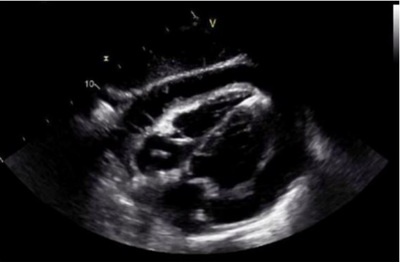
A Miocardite aguda / Prednisona + amoxicilina
B Pericardite aguda / Ibuprofeno + colchicina
C Infarto agudo do miocárdio com supradesnivelamento de ST / Alteplase
D Tamponamento cardíaco / Pericardiocentese imediata
Questão 780 · Apresentação clínica · 4000189270São sintomas de pacientes com hipotireoidismo, EXCETO:
A Distúrbios menstruais.
B Taquicardia.
C Diminuição da libido.
D PA convergente.
E Sonolência excessiva.
Questão 781 · Epidemiologia · 4000189266Carlos decidiu ir com Davi para a casa de uns amigos para a Confraternização de Natal. Ele bebeu muito e estava agitado, durante uma brincadeira, ele abraçou o gato do dono da casa, que arranhou de forma superficial a palma de sua mão. O que fazer?
A Lavar bem a lesão, iniciar a vacinação antirrábica e observar o animal.
B Lavar bem a lesão e observar o animal.
C Lavar bem a lesão, iniciar a vacinação antirrábica, fazer o soro e observar o animal.
D Lavar bem a lesão, iniciar e completar a vacinação antirrábica, pois se trata de uma situação especial.
E Lavar bem a lesão e iniciar soro, pois trata-se de um ferimento grave.
Questão 782 · Classif icação de risco · Quadro clínico · 4000189265Italo, 26 anos, sexo masculino, procedente de João Pessoa chega a UBS Santa Clara com história de febre de início súbito há três dias, associado a cefaleia, artralgia e mialgia. Hoje pela manhã resolveu procurar a UBS por não suportar a dor de cabeça sic. Ao exame físico: REG, desidratado +/4+, T: 39°C, Fr18ipm, FC 100bpm, PA 120x80mmhg em duas posições. Abdome indolor e sem VCM e sem outras alterações no exame. Dr. Mauro achou que trata-se de dengue pela história clínica e epidemiologia da região. Qual seria o estadiamento deste paciente?
A A
B B
C C
D D
E Choque da dengue
Questão 783 · Diagnóstico da púrpura trombocitopênica imunológica PTI · 4000189263Tratamento da púrpura trombocitopênica imunológica PTI Pré-escolar com 3 anos de idade, masculino, comparece ao PA por manchas roxas no corpo há 7 dias e nas últimas 24 horas apresentou uma mancha na boca. A mãe relata que a criança não apresentou mais nenhum outro sinal ou sintoma e que tem histórico de rinite alérgica. Na avaliação o médico identi cou criança com bom estado geral, sem palidez de pele e mucosas, hidratado, eupneico, ausência de icterícia, ativo e reativo. Ausência de linfoadenomegalia e abdome sem visceromegalias. Na pele havia petéquias, púrpuras e equimoses em membros inferiores, abdome e tronco, além de presença de petéquias em palato e pequeno coágulo na gengiva. Solicitou um hemograma e o resultado apresentou os seguintes achados laboratoriais: Hemácias 4.2x 10⁶; Hemoglobina 12.1 g/dl; Hematócrito 36%; leucócitos totais: 8.000/mm³, com segmentados 40%; eosinó los 10%; basó los 0%; linfócitos típicos 46%, linfócitos atípicos 0%; monócitos 4%; plaquetas: 18.000/mm³ ao analisar o quadro clínico e os achados laboratoriais, considerando a hipótese diagnóstica mais plausível, qual a conduta MAIS RECOMENDADA a ser seguida nesse contexto:
A A conduta seria solicitar mielograma para afastar leucemia e após, iniciar tratamento com pulsoterapia com dexametasona.
B A conduta seria prednisona oral na dose de 1 a 3 mg/kg/dia, e acompanhar ambulatorialmente.
C A conduta seria pulsoterapia com metilprednisolona associada a transfusão de concentrado de plaquetas.
D prednisona oral na dose de 1 a 3 mg/kg/dia, associada a transfusão de plaquetas.
E A conduta seria expectante, sem medicamento e se apresentar sangramento, fazer transfusão de plaquetas.
Questão 784 · Síndrome nef rótica · 4000189257Menino de 4 anos, previamente hígido, apresenta uma história de há 5 dias ter tido um quadro de IVAS e, após uma semana, surgiu um edema generalizado. Exame físico: criança ativa, eupneico, com edema periorbitário, edema de parede abdominal e Piparote positivo. Sumário de urina com pH 7,0, densidade urinária 1020, proteinúria +4/+4, hemácias raras. Colesterol sérico 550Mg/dL, albumina 2,1 g/dL, relação proteína/creatinina 0,8, C3 70mg/dL, creatinina 0,3 mg/dL. Qual a CONDUTA INICIAL desta criança:
A Iniciar amoxicilina.
B Iniciar furosemida.
C Iniciar metilprednisolona.
D Indicar biópsia renal.
E Iniciar prednisona oral.
Questão 785 · Anatomia e Fisiologia do Intestino Delgado e Grosso · 4000189252Sobre o ângulo de Treitz é ERRADO afirmar:
A Divide os sangramentos digestivos em hemorragia digestiva alta e baixa.
B É o ângulo de divisão do duodeno para o jejuno.
C Serve como ponto anatômico para medir o comprimento do início do intestino delgado, tendo como final a válvula ileocecal.
D Tem como ponto de referência anatômica a veia mesentérica inferior, à sua esquerda.
E Para localizá-lo devemos procurar sua emergência inferiormente ao colo transverso.
Questão 786 · Vascularização do f ígado · 4000189251Sobre a veia porta hepática é CORRETO afirmar:
A É formada pela união da veia mesentérica superior com a veia esplênica.
B É formada pela união da veia mesentérica superior e da veia mesentérica inferior, e da veia cava inferior.
C É formada pela união da veia cava inferior com a veia mesentérica superior.
D É formada pela união da veia cava inferior com a veia mesentérica inferior.
E É formada pela união da veia esplênica com a veia gastroduodenal.
Questão 787 · Classif icação e f isiopatologia · Tilt Test · 4000189244Homem de 55 anos relata quatro episódios de síncope nos últimos 4 meses que resultaram em trauma facial. Todos os episódios ocorreram no ambiente de trabalho, sempre ao se levantar, precedidos de diaforese e náuseas, sem relato de dor precordial ou palpitações. Familiares referem que um dos episódios apresentou "crise convulsiva". Nega antecedentes de epilepsia e sempre retornou rapidamente ao seu nível de consciência basal. Ao exame físico não apresenta alterações patológicas, aferida a pressão arterial deitado (128/82 mmHg) e em pé (122/76 mmHg). Seus exames laboratoriais, ecocardiograma, eletrocardiograma e monitorização do ritmo em 24 horas (holter) estavam normais. Qual dos seguintes exames é o MAIS APROPRIADO?
A Teste de inclinação (tilt test).
B Teste ergométrico.
C Ultrassom com Doppler dos vasos cervicais (sistema carotídeo e vertebral).
D Implante de monitor de eventos (looper).
E Eletroencefalograma.
Questão 788 · Diagnóstico · Apresentação clínica · Etiologia · 4000189243Mulher de 39 anos apresentando 6 dias de intensa fadiga, tontura e leve cefaleia retro-arbitrária. Há 5 meses, tinha sido diagnosticada em estágio IIIb de melanoma sem metástase de acordo com os exames de imagem na época e iniciou tratamento com ipilimumabe há 1 mês. Além disso, refere hiper-reatividade brônquica em uso esporádico de albuterol inalatório, porém, chegou a fazer uso de prednisona por 7 dias no último ano, sendo a última vez há 3 meses. Laboratorialmente apresenta: sódio: 132 (valor de referência: 135- 145 mEq/I); TSH: 0,8 (valor de referência: 0,5-4,7 µU/ml); tiroxina livre: 0,9 (valor de referência: 0,8-1,8 ng/dl); hormônio adrenocorticotró co: 9 (valor de referência: 10-60 pg/ml); cortisol matinal: 1,2 (valor de referência: 5-25 µg/dl). Qual dos seguintes mecanismos é MAIS PROVÁVEL de causar os sintomas dela:
A Inflamação cerebral paraneoplásica.
B Aumento da metabolização hepática hormonal devido à indução hepática enzimática.
C Regulação hormonal negativa da prednisona.
D Infiltração linfocítica da glândula adrenal.
E Destruição hipofisária mediada pelas células T (hipofisite pelo ipilimumabe).
Revisar: possível letra faltando em enunciado
Questão 789 · Insuf iciência adrenal secundária · 4000189242Mulher de 56 anos com diagnóstico prévio de câncer de mama metastático e retocolite ulcerativa, sendo medicada com mesalazina e 40 mg de prednisona 5 meses atrás para descompensação do quadro intestinal. Vem em processo de desmame da corticoterapia, há dois meses reduziu a dose para 5 mg por dia. Quando a dose é reduzida para 2,5mg a paciente se queixa de náuseas, fadiga, retornando a dose de 5 mg por dia com alívio dos sintomas. Avaliação laboratorial matinal no horário que seria a tomada da prednisona demonstra um cortisol sérico de 1,5 ug/dl (nível de referência:5-25); nível hormônio adrenocorticotró co: 14 pg/dl (nível de referência: 10-60); nível normal de eletrólitos e bicarbonato. Qual dos seguintes passos é o MAIS APROPRIADO para essa paciente?
A Tranquilizar o paciente e reduzir a dose da prednisona para 4 mg.
B Medir a atividade plasmática de renina e nível sérico de aldosterona.
C Iniciar azatioprina e tentar redução da prednisona após 2-4 semanas.
D Ressonância magnética com contraste do encéfalo (protocolo hipofisário).
E Ressonância magnética do abdôme superior para avaliar as adrenais.
Revisar: possível letra faltando em enunciado
Questão 790 · Características dos sopros cardíacos · 4000189239Com relação à classificação dos sopros cardíacos, é INCORRETO afirmar:
A Os sopros fisiológicos mais comuns são: o sopro sistólico pulmonar, o sopro musical de Still, o sopro cardiovascular e o sopro venoso.
B Os sopros de Flint são originados no aparelho cardiovascular por aumento da velocidade do sangue ou por alterações anatômicas dos aparelhos orovalvares.
C Os sopros na anemia originam-se na artéria pulmonar e são decorrentes do aumento da velocidade do sangue, causado pela diminuição de sua viscosidade.
D Os sopros orgânicos ocorrem quando existir uma comunicação anormal entre as várias cavidades cardíacas.
Questão 791 · Hemorragia Digestiva Alta Varicosa HDA Varicosa · 4000189238Hemorragia Digestiva Alta Não Varicosa HDA Nâo Varicosa Entre os fatores utilizados para determinar o prognóstico, morbiletalidade e risco de recidiva da hemorragia, NÃO se destacam:
A Persistência no sangramento.
B Hematêmese e/ou choque inicial.
C Idade avançada (maior de 40 anos).
D Aspecto endoscópico da lesão.
Questão 792 · Tratamento de manutenção da asma · 4000189236Considerando os conhecimentos sobre a asma brônquica, é CORRETO afirmar:
A O sulfato de magnésio deve ser administrado por via endovenosa na crise moderada de asma para prevenir as formas mais graves de asma e evitar a intubação.
B Como doença multifatorial, tem influência genética, ambiental (alérgenos, poluição, drogas), obesidade, idade, sexo (mais comum em crianças do sexo masculino) e raça (mais comum em negros).
C Na patogenia da asma, está envolvida uma variedade de células e mediadores inflamatórios que atuam sobre a via aérea e levam ao desenvolvimento e manutenção dos sintomas.
D A introdução precoce dos medicamentos betabloqueadores reduz os episódios de broncoespasmo, sintoma característico da hiperresponsividade das vias aéreas inferiores.
Questão 793 · Complexo QRS · 4000189235O eletrocardiograma, também chamado de ECG, é o registro gráfico dos fenômenos elétricos do músculo cardíaco ou do coração. Com base no tema, é CORRETO afirmar:
A O complexo QRS representa a despolarização e a condução do impulso nos ventrículos.
B O ECG é registrado em papel gráfico, na velocidade (linha vertical) de 20 mm/s, ou 1mm a cada 0,04 segundos.
C As derivações periféricas são obtidas no plano horizontal, pela colocação de eletrodos no tórax do paciente.
D O posicionamento do eletrodo para derivação precordial V4 deve ser de 4° espaço intercostal à direita, próximo ao esterno.
Questão 794 · Exame Clínico · Morte Encef álica · 4000189234O termo “morte encefálica” pode ser considerado como definição legal de morte. É a completa e irreversível parada de todas as funções do cérebro. Considerando o enunciado, é INCORRETO afirmar:
A O Conselho Federal de Medicina (CFM) determina que a morte encefálica se dividida em três fases: fase preparatória, fase de exame e fase de exame documental, além de ser feita em caráter de urgência.
B Para o diagnóstico adequado de morte encefálica, o paciente não deve estar em hipotermia profunda, visto que prejudica a realização do exame neurológico. Assim, recomenda-se o aquecimento do paciente em até 35° C.
C Na procura da causa mortis é mandatário que sejam excluídos fatores de confusão e de diagnóstico diferencial, assim, causas reversíveis de coma devem ser afastadas, em especial os distúrbios metabólicos.
D A cintilografia cerebral documenta ausência de enchimento das artérias intracranianas na entrada do crânio, em virtude da pressão sistólica não ser elevada o suficiente para forçar o sangue através da árvore vascular intracraniana.
Questão 795 · Quadro clínico · Fisiopatologia e alterações inf lamatórias · 4000189233Paciente, 65 anos, sexo masculino, deu entrada na emergência com queixa de febre, calafrios e tosse há quatro dias. Refere que neste período a temperatura axilar chegou a atingir 40o C, apresentou um episódio de vômito, relata diminuição no volume urinário e prostração, recebe o diagnóstico de sepse e disfunção múltipla de órgãos. Diante da conclusão, uma variável inflamatória para o caso é:
A Redução do enchimento capilar.
B Hiperlactatemia.
C Leucocitose (contagem > 12.000/mm³).
D Índice cardíaco acima de 3,5 L/min/m².
Questão 796 · Semiologia · 4000189229Dispneia é um termo que indica uma experiência subjetiva de di culdade ou desconforto respiratório, que consiste em sensações qualitativamente distintas, de intensidade variável, e é traduzida por diferentes sinais semiológicos. Podem acontecer manifestações de dispneia quando o paciente assume uma posição reclinada, comum em portadores de Insuficiência Cardíaca Congestiva (ICC). Esta afirmação refere-se a:
A Ortopneia.
B Trepopneia.
C Platipneia.
D Disparapneia.
Questão 797 · Etiologia Prérenal · 4000189225Sobre a Insuficiência Renal Aguda (IRA), é CORRETO afirmar:
A A IRA é a interrupção súbita da função renal decorrente de obstrução, circulação aumentada e doença parenquimatosa renal.
B A IRA isquêmica é caracterizada pela presença de glomerulopatias, associada à temperatura acima de 38o C, leucocitose e hemocultura positiva.
C A IRA pré-renal ocorre devido à redução do fluxo plasmático renal e queda da taxa da filtração glomerular.
D A IRA pós-renal é secundária à obstrução extrarrenal, à redução do fluxo plasmático renal e do ritmo da filtração glomerular.
Questão 798 · Febril não hemolítica · 4000189224Paciente com reação febril não hemolítica, reações alérgicas e ana láticas após transfusão de sangue. Considerando a suspeita de uma reação transfusional aguda, NÃO se deve:
A Interromper imediatamente a transfusão.
B Manter o acesso venoso e hidratar paciente com SF.
C Checar as etiquetas de identificação da bolsa.
D Colher amostras de sangue e urina para provas de hemólise, culturas e testes de compatibilidade.
Questão 799 · Quadro clínico · Conceito · 4000189222Paciente, 70 anos, sexo masculino, com dor articular acompanhada de alterações no exame físico na articulação, como edema, calor, eritema, dor espontânea e derrame articular. Dentre os diagnósticos abaixo, o mais apropriado é:
A Febre reumática.
B Artrite reativa.
C Lúpus eritematoso.
D Osteoartrite.
Questão 800 · Diagnóstico · Etiologia · Manif estações clínicas · 4000189221Paciente, 50 anos, sexo feminino, apresenta insu ciência adrenal com acometimento do setor hipo sário corticotró co, com comprometimento da produção de Hormônio Adrenocorticotró co (ACTH) e consequente de ciência de glicocorticoide e andrógenos adrenais, sem comprometer a produção de mineralocorticoide, sem escurecimento da pele e mucosas e nem hiperpotassemia. É um caso de:
A Insuficiência adrenal primária crônica.
B Insuficiência adrenal primária aguda.
C Insuficiência adrenal secundária crônica.
D Insuficiência adrenal secundária aguda.
Revisar: possível letra faltando em enunciado
Questão 801 · Síndrome de West · 4000189216A Síndrome de West é uma síndrome da infância caracterizada pela tríade: I. Espasmos, que podem ser em extensão ou em flexão, com apresentação em salvas. II. Hipsarritmia no EEG, caracterizada pela presença de ondas lentas de alta voltagem. III. Crises epilépticas polimorfas intratáveis (em geral, tônicas, atônicas ou de ausência atípica). Das proposições acima, estão CORRETAS:
A I e II, apenas.
B I e III, apenas.
C II e III, apenas.
D Todas estão corretas.
Questão 802 · Tratamento · Manif estações clínicas · 4000189215Considerando a potencial transmissão da doença, em geral, um paciente com meningite meningocócica deixa de transmitir a doença:
A Após cessarem todos os sintomas.
B Após o quinto dia de tratamento com antibióticos.
C Após o período de incubação.
D Após 24 horas do início da antibioticoterapia.
Questão 803 · Def inição e Etiologias · 4000189197A hemorragia digestiva alta é um problema que vem aumentando por uma série de fatores, como excesso no consumo de bebidas alcoólicas, hábitos alimentares ruins, presença de tumores, e outros. Sobre a hemorragia digestiva alta, é INCORRETO afirmar:
A Idade abaixo de quarenta anos e dispepsia funcional associada são fatores preditivos de hemorragia digestiva alta recorrente ou mais grave.
B A ocorrência da úlcera duodenal pode causar sangramento digestivo alto devido à ruptura de um grande vaso, como a artéria gastroduodenal.
C O tratamento deve incluir, sempre, inibidores da secreção cloridropéptica, evitando-se administrar antiácidos ou sucralfato, que geralmente aderem à parede gástrica.
D A principal causa da hemorragia digestiva alta é a falta de equilíbrio nas mucosas dos órgãos do sistema digestivo, causando sangramentos.
Questão 804 · Câncer de Cólon NãoPolipoide Hereditário · 4000189196Considerando os critérios para o diagnóstico de Síndrome de Lynch, é CORRETO afirmar:
A Critérios de Amsterdam: pelo menos cinco membros da família afetados.
B Critérios de Bethesda: câncer colorretal em idade superior a cinquenta anos.
C Critérios de Amsterdam: pelo menos um membro da família em idade superior a cinquenta anos.
D Critérios de Bethesda: presença de tumores sincrônicos no cólon.
Questão 805 · Paracentese · Paracentese de alívio · 4000189194Com relação à paracentese, é INCORRETO afirmar:
A O uso da albumina em paracentese de grande volume reduz a hiponatremia dilucional.
B É utilizada no tratamento de infecção cutânea ou celulite da parede abdominal.
C O paciente deve ser posicionado de maneira ereta na borda do leito ou em uma cadeira, e em Fowler quando acamado.
D Uma amostra no líquido aspirado deve ser enviada para exames bioquímicos e bacterioscópico.
Questão 806 · Metástases hepáticas · Tratamento das Metástases Hepáticas do CCR · 4000189190Paciente diagnosticado com metástases hepáticas múltiplas de carcinoma colorretal. NÃO con figura fator de mau prognóstico:
A Lesão metastática do fígado que surge no 20° mês.
B Invasão neoplásica de órgão adjacente.
C Ocorrência de lesão sincrônica.
D Razão Neutrófilo-Linfócito (RNL) para inflamação sistêmica de 7.
Questão 807 · Cistos hepáticos · 4000189189Considere a retirada da vesícula biliar em paciente jovem que, durante o procedimento da colecistectomia, são encontradas várias lesões císticas no fígado, sendo constatada função hepática sem alterações ou sintomas decorrentes dos cistos. Nesse caso, o procedimento CORRETO é:
A A fenestração dos cistos.
B Injeção de substância esclerosante.
C Manter observação.
D Ressecção das lesões.
Questão 808 · Fatores de Risco para Doença Grave · 4000189184A pancreatite aguda é um processo inflamatório do pâncreas, geralmente de natureza química, provocado por enzimas produzidas por ele próprio e que tem como resultado a autodigestão da glândula. Com base no tema, são utilizados como critérios prognósticos na pancreatite aguda, EXCETO:
A Idade
B Leucócitos.
C AST.
D Glicemia.
Questão 809 · Indicação · Outros · 4000189183O derrame pleural se caracteriza pela coleção de um volume anormal de líquido no espaço pleural e pode evoluir rapidamente para insu ciência respiratória. Quando do diagnóstico de derrame pleural, o procedimento adequado a ser feito é:
A Toracocentese.
B Paracentese.
C Tapotagem.
D Toracopoiese.
Questão 810 · Tratamento Clínico da DRGE · Manif estações Clínicas · Inibidores da Bomba de Prótons IBP · 4000189182Qual dos seguintes testes é MAIS APROPRIADO para uma mulher de 30 anos com índice de massa corpórea de 22,5 que apresenta queimação retroesternal (azia) sem sinais de complicação, sem história familiar, sem tabagismo, ou outros sintomas?
A Esofagoduodenoscopia.
B Esofograma com bário.
C Monitorização do pH esofágico nas 24 horas.
D Prova terapêutica com inibidor de bomba de próton.
E Manometria esofageana.
Questão 811 · Manif estações Clínicas · Diagnóstico · 4000189181Qual dos seguintes diagnósticos é o MAIS PROVÁVEL para um paciente do sexo masculino de 24 anos com história de 6 meses de dor no joelho esquerdo, perda de peso, diarreia, eritema nodular, úlcera oral, associado a anemia microcítica, hipoalbuminemia, provas inflamatórias elevadas, níveis séricos de ácido úrico dentro da normalidade e teste de Lyme negativo; líquido da articulação com sinais parâmetros inflamatórios, sem cristais ou microorganismos?
A Lúpus eritematoso sistêmico.
B Doença inflamatória intestinal.
C Artrite de Lyme.
D Artrite reumatóide.
E Artrite gotosa.
Questão 812 · Tratamento · 4000189180Qual dos seguintes passos é o MAIS APROPRIADO no caso de um paciente com história de tosse seca nos últimos três meses, fadiga e opacidade persistente na tomogra a de tórax apesar de dois cursos de antibioticoterapia apropriada, presumindo pneumonia adquirida na comunidade?
A Realizar broncoscopia com lavado broncoalveolar e possivelmente biópsia transbrônquica.
B Medir o total de imunoglobulinas.
C Internar o paciente e realizar ceftriaxona e claritromicina intravenosa.
D Obter o escarro para cultura de micobactéria.
E Tratar por 14 dias com levofloxacina.
Questão 813 · TSH · Hipertireoidismo clínico · 4000189177Qual das seguintes perguntas seria MAIS PROVÁVEL em auxiliar para descoberta da causa da tireotoxicose em um paciente com sintomas tireotoxicose com sete meses de duração, níveis de hormônio estimulador da tireoide suprimidos e com baixa captação de iodo marcado (I123) na cintilografia?
A Você tem prurido ocular, olhos secos e edema nos olhos?
B Você tem história familiar de doenças na tireoide?
C Você já foi exposto à radiação ionizante?
D Você geralmente sente alguma dor ou desconforto cervical?
E Você está tomando recentemente algum suplemento que auxilia na perda de peso?
Questão 814 · Transplante renal · 4000189176O procedimento mais indicado para paciente com clearance de creatinina de 10 ml/min, 35 anos, sem comorbidade cardíaca, nem vascular periférica e presença de sintomas de uremia é:
A A realização do transplante de pâncreas isolado buscando salvar a função renal residual, uma vez que há presença de função renal.
B Apresentando-se o paciente em melhores condições, a realização de transplante duplo de rim com o pâncreas antes da falência renal completa.
C A realização de transplante de rim cadavérico associado ao transplante de ilhotas pancreáticas.
D Transplante inter-vivos de pâncreas, não sendo indicado o cadavérico por ser um receptor muito jovem.
Questão 815 · Toracocentese · Quadro clínico · Análise do líquido pleural · 4000189173Paciente, jovem, dá entrada em hospital com dispneia, sendo residente em região de clima muito frio, relata que apresentou há 30 dias tosse seca, dispneia progressiva e temperatura de 37º C. Em exame radiográ co do tórax é constatado velamento do hemitórax direito, com desvio do mediastino contralateralmente. O procedimento CORRETO indicado é:
A Realizar apenas o procedimento para evacuar o conteúdo aéreo ou líquido anômalo da cavidade pleural.
B Realizar apenas a toracotomia de emergência para obter amostras de tecido para exame laboratorial.
C Realizar a videotoracoscopia por se tratar de fase aguda do trauma torácico.
D Realizar a toracocentese conjuntamente com esvaziamento do derrame pleural e biópsia pleural com agulha de Cope.
Revisar: possível letra faltando em enunciado
Questão 816 · Radioterapia · Radioterapia · Radioterapia · 4000189160A radioterapia é a modalidade de tratamento cujo agente terapêutico é a radiação ionizante, ou seja, aquela que, em razão de suas características físicas, tem a capacidade de promover ionização no meio em que incide, agindo sobre o controle da evolução local dos tumores. No que se refere a esse tratamento, é CORRETO afirmar:
A As lesões tardias causadas pela radiação ionizante começam a surgir a partir de um ano após o término do tratamento.
B A radioterapia não é indicada em casos de sangramentos provocados pelo tumor.
C A radiocirurgia é uma teleterapia de alta precisão tecnológica, indicada para tumores gastrintestinais.
D A braquiterapia é uma terapia em que a fonte radioativa é colocada dentro de uma cavidade corporal ou diretamente no corpo, por meio de sementes, fios, agulhas ou fitas.
Questão 817 · Síntese secreção e transporte dos hormônios tireoidianos · 4000189146A glândula tireoide é responsável pela produção de dois importantes hormônios denominados. São eles:
A Tiroxina e prolactina.
B Tri-iodotironina e prolactina.
C Tiroxina e adrenalina.
D Tri-iodotironina e tiroxina.
Questão 818 · Eixo hipotálamohipof isário · 4000189141O hipotálamo é uma estrutura que mantém importantes relações com a hipó se e produz hormônios que serão liberados na neuro-hipófise. São hormônios produzidos no hipotálamo:
A Estrogênio e FSH.
B Ocitocina e estrogênio.
C ADH e ocitocina.
D FSH e ADH.
Questão 819 · Etiologia do Choque · Fisiopatologia do Choque · 4000189139Paciente, 35 anos, apresenta PA de 80/40 mmHg, relata dor abdominal e febre. Pode ser considerado como mecanismo da hipotensão da paciente:
A Vasodilatação.
B Vasoconstrição.
C Disfunção da contratilidade cardíaca.
D Bradicardia cardíaca.
Questão 820 · Clof azimina · 4000189129Houve atualização do tratamento da hanseníase para pacientes paucibacilares, sob orientação do Ministério da Saúde, com embasamento de orientações da OMS, de 2018. Paciente de 34 anos comparece a UBS para acompanhamento do tratamento MH, e relata que iniciou quadro de pigmentação da pele. Neste caso, a orientação deve esclarecer que:
A esta alteração na pele, é relacionada a Clofazimina, o que deverá indicar a substituição da droga, por Minociclina, o qual terá melhor adesão ao tratamento.
B esta pigmentação é relacionada a Clofazimina, e que se não houve melhora em três meses, deverá substituir por Minociclina, então deve manter o acompanhamento.
C estas alterações na pele podem estar relacionadas ao esquema terapêutico da MH, que é benigno, porém pode-se discutir com o paciente sobre a substituição de uma das drogas pela Minociclina, que não tem este efeito.
D a mudança da pigmentação da pele, deve ser sempre feitas aos pacientes, porém, a alteração da pigmentação da pele, deve ser acompanhada, caso haja persistência por três meses, o tratamento deverá ser suspenso.
E esta alteração na pigmentação da pele é relacionada a Clofazimina, que não deve suspender a medicação, deverá hidratar a pele e usar sempre protetor solar.
Questão 821 · COVID 19 · 4000189127Em 28 de janeiro de 2022, a Agência Nacional de Vigilância Sanitária (ANVISA) liberou o uso e a comercialização dos autotestes para detecção da covid-19. Quanto ao assunto, é CORRETO afirmar:
A Os autotestes indicam que alguém não está infectado com o coronavírus.
B O exame deve ser usado como triagem, para permitir o autoisolamento precoce e, assim, quebrar a cadeia de transmissão do vírus o mais rápido possível.
C O autoteste possibilita o diagnóstico efetivo relativizando a necessidade de ser realizado por um profissional de saúde.
D O autoteste é válido como diagnóstico, como documento para viagens ou para licença do trabalho.
Questão 822 · Intoxicação pelo chumbo · 4000189126Paciente de 43 anos, masculino, tabagista, etilista esporádico, trabalha como soldador de portões, sem doenças previas, vem a consulta acompanhado da companheira, que relata agressividade e comportamento alterado, dores abdominais associados a quadros diarreicos, perda de sensibilidade nas pontas dos dedos, fraqueza nos membros superiores e inferiores, instabilidade na locomoção e anemia, já verificada em exame anterior, quadro iniciado há três meses de forma progressiva. Assim a hipótese diagnóstica que mais se enquadraria ao paciente acima, é.
A intoxicação por chumbo.
B intoxicação por prata.
C intoxicação por inseticidas.
D intoxicação por hidrocarboneto.
E intoxicação por mercúrio.
Questão 823 · Miocardite · 4000189117A miocardite é uma doença inflamatória do miocárdio com ampla variedade de apresentações clínicas, podendo abranger formas subclínicas, ou mesmo manifestações clínicas agudas de insu ciência cardíaca descompensada fulminante com quadro de choque cardiogênico. Pode decorrer de diversas causas infecciosas e não infecciosas. O medicamento mais fortemente associado a miocardite é:
A Rosuvastatina.
B Fenitoína.
C Ezetimiba.
D Metformina.
E Vonoprazana.
Questão 824 · Classif icação f enotípica · 4000189115Xantomas e xantelasmas podem ser idiopáticos ou um sinal de anormalidade herdada do metabolismo da lipoproteína (dislipidemia primária), hiperlipidemia secundária a doença sistêmica ou medicação, ou doença hematológica. A lesão cutânea que não representa a manifestação mais característica da patologia especificada acima, é:
A Xantomas eruptivos – Hipertrigliceridemia familiar.
B Xantomas interdigitais– Hipercolesterolemia familiar homozigota.
C Xantoma palmar – Disbetalipoproteinemia familiar.
D Xantomas tuberosos – Hipertrigliceridemia familiar homozigota.
E Xantomas planos – Colangite esclerosante primária.
Questão 825 · Manif estações clínicas de tireotoxicose · Diagnóstico etiológico da tireotoxicose · 4000189113Uma universitária de 28 anos, vem a consulta com queixa de irritabilidade, insônia, perda de peso de 5kg nos últimos 2 meses, apesar de alimentar-se bem. Na última semana teve episódios de palpitações e calor excessivo. Refere também perda de libido e sensação de “corpo estranho” nos olhos. Ao exame físico corada; sem edemas; pele macia e quente; pulso= 104 bpm; tremores nos de extremidades; hiperemia conjuntival e piscar frequente tireoide com aumento difuso e fr mito. o re o prov vel diagn stico da paciente, correto afirmar que:
A a acropatia da tireoide ocorre na maioria dos pacientes.
B a mensuração dos anticorpos anti-TPO e anti-Tg confirmam o diagnóstico.
C a causa mais comum tireoidite granulomatosa subaguda.
D a presença de sopro cervical fala a favor do diagnóstico de tireoidite aguda.
E as provas de função tireoidiana devem ser feitas 3 a 4 semanas após início do tratamento com tionamidas.
Questão 826 · Diagnóstico · 4000189111A alternativa que indica o diagnóstico de polimialgia reumática provavelmente correto, é:
A um homem de 50 anos que apresentava artrite simétrica de mãos e punhos, edema bilateral das mãos formando cacifo piores à noite e aliviadas pelo movimento.
B uma mulher 59 anos com fraqueza muscular proximal, lesões violáceas em pálpebras, fadiga, febre e poliartrite de ombros e punhos.
C um homem de 63 anos que durante os últimos 10 anos, apresenta dorsalgia e lombalgia sem rigidez matinal e oligoartrite assimétrica envolvendo joelho e quadril.
D uma mulher de 70 anos com dor persistente nos ombros e cintura pélvica, fadiga, perda de peso e incapacidade de abduzir os ombros além de 90º.
E uma mulher de 62 anos com dores ósseas, anemia, lombalgia e infecções recorrentes.
Questão 827 · Acidose metabólica com ânion gap aumentado · Tratamento da acidose metabólica · 4000189108Um homem de 54 anos de idade é internado com história de três dias de febre, tosse, odinofagia e diarreia. Na admissão o pulso de 130 batimentos/minuto, pressão arterial de 80/65mmHg e frequência respiratória de 32 respirações/minuto. As mucosas estão secas e são auscultadas crepitações em toda a região inferior do pulmão direito. Na avaliação laboratorial foram obtidos os seguintes resultados: gasometria arterial em ar ambiente (pH- 7.30, pO₂ mEq/l; bicarbonato- 13mEq/l. A interpretação correta desse distúrbio acidobásico, é:
A acidose mista, respiratória e metabólica.
B acidose metabólica com hiato aniônico aumentado e alcalose respiratória.
C acidose metabólica com hiato aniônico aumentado e compensação respiratória apropriada.
D acidose metabólica com hiato aniônico normal.
E acidose metabólica compensada com hiato aniônico normal e alcalose metabólica.
Questão 828 · Cirrose hepática · Síndrome de BuddChiari · Ascite neoplásicas · 4000189104Um homem de 53 anos é internado com quadro de ascite com evolução de 3 meses. No exame físico: aumento do volume abdominal, macicez móvel e leve desconforto à palpação super cial do abdome, sendo realizada paracentese diagnostica. A análise do líquido ascítico mostra, proteína total= 3.5g/dl e albumina 2.2g/dl. A dosagem de albumina sérica é de 3.6g/dl. Esses achados são compatíveis com os seguintes diagnósticos, EXCETO:
A Síndrome de Buddi-Chiari.
B Síndrome de Meigs.
C Cirrose.
D Metástases Hepáticas.
E Síndrome Nefrótica.
Questão 829 · Quadro clínico · Diagnóstico etiológico da hiponatremia · 4000189103Um homem, com 41 anos de idade, com diagnóstico recente de tuberculose pulmonar é trazido ao setor de emergência por um vizinho com quadro de sonolência, náuseas e vômitos. Não há evidências clínicas de depleção de volume. Na avaliação laboratorial foram obtidos os seguintes resultados: sódio sérico= 125mEq/L; osmolalidade plasmática= 260 mOsm/Kg (VR: 285 – 295); excreção renal de sódio aumentada; níveis séricos normais de ureia, creatinina e potássio; ácido úrico baixo. A hipótese diagnóstica mais provável neste caso, é:
A Polidipsia Psicogênica.
B Diabetes Insipidus Nefrogênico.
C Síndrome da Secreção Inapropriada de ADH (SIADH).
D Doença de Addison.
E Hipotireoidismo Central.
Questão 830 · Nef rite intersticial aguda · 4000189101Dentre os casos abaixo, o tratamento com corticosteroides para nefrite intersticial comprovada por biopsia que tem mais probabilidade de influenciar a recuperação renal a longo prazo, é:
A Mulher de 45 anos de idade em uso prolongado de carbonato de lítio.
B Homem de 36 anos de idade com sarcoidose.
C Homem de 60 anos de idade com nefropatia por analgésicos.
D Mulher de 52 anos com nefrite intersticial por chumbo.
E Homem de 30 anos com nefropatia mesoamericana.
Questão 831 · Dermatites alérgicas de contato · Dermatite de contato alérgica · 4000189099Uma sioterapeuta respiratória de 34 anos de idade apresenta asma há 10 anos. A asma tornou-se de difícil controle nos últimos 5 meses. Antes desse período, ela havia apresentado episódios intermitentes de tosse e dispneia uma vez a cada duas semanas, na vigência do tratamento com uticasona 250 de duas vezes por dia, e salmuterol, na dose 50 sintomático obtido nos últimos quatro meses, é necessário acrescentar salbutamol 200 dia, e prednisona 40mg diariamente. Além disso, sempre que a dose de prednisona é reduzida para menos de 30mg, ela desenvolve uma exacerbação grave de asma, que requer consulta no pronto atendimento. Ela nega tabagismo, pirose e não possui animais de estimação. Algumas vezes usa paracetamol para tratar cefaleia frontal. A revisão dos sistemas revela eczema e prurido oral após ingestão de bananas, castanhas e abacates. O exame físico revela um aspecto cushingoide, temperatura de 36,8ºC, pressão arterial de 120/80 mmHg, pulso de 104 bpm, frequência respiratória de 18/min, erupção eczematóide nas mãos e sibilos expiratórios dispersos. A radiogra a do tórax e seios da face (4 posições) são normais. A causa mais provável da dificuldade do controle da asma dessa paciente, é:
A doença do refluxo gastresofágico.
B sensibilidade a Aspirina.
C sensibilidade aos Sulfetos.
D dose inadequada de corticosteroide inalado.
E alergia ao látex.
Questão 832 · Tratamento · Estado Conf usional Agudo Delirium · 4000189098Delirium é uma condição relativamente frequente em pacientes hospitalizados. Sobre essa condição, é correto afirmar que:
A quando indicado, o tratamento pode ser feito com a prescrição de antipsicóticos para o controle de agitação do polo hiperativo.
B em pacientes internados em unidade de terapia intensiva, não há ferramentas validadas para o diagnóstico e rastreamento de pacientes em delirium.
C o diagnóstico deve ser realizado utilizando- se a Richmond Sedation Scale (RASS), sendo recomendada uma pontuação inferior a -2
D não há evidências de medidas recomendadas para se prevenir essa condição
E sendo um estado confusional crônico, o uso de benzodiazepínicos deve ser indicado como primeira escolha no tratamento do delirium hiperativo.
Questão 833 · Miastenia Gravis · Quadro Clínico · 4000189096A queixa de fraqueza muscular aguda na emergência, e mesmo entre pacientes internados, necessita de raciocínio elucidativo para estabelecimento e condutas especí cas. Sobre essa síndrome, é correto a rmar que:
A Piridostigmina está indicada como primeira linha na síndrome de Guillain-Barré.
B Plasmaférese está contraindicada em pacientes com síndrome de Guillain-Barré.
C bloqueadores neuromusculares estão indicados em pacientes com suspeita de Miastenia Gravis.
D Ptose palpebral não é um achado associado à Miastenia Gravis.
E a queixa de dor pode estar presente na síndrome de Guillain-Barré, especialmente na fase de recuperação.
Revisar: possível letra faltando em enunciado
Questão 834 · Trombólise Endovenosa · 4000189094Durante o atendimento de um paciente com rebaixamento súbito do nível de consciência, no departamento de emergência, sua principal suspeita é acidente vascular encefálico. Após realização de tomogra a de crânio e exclusão de hemorragia, foi considerada a indicação de trombólise. Com base nessa hipótese, é correto afirmar que:
A quando indicada, a trombólise não deve ser precedida da medida de glicemia, exceto em pacientes sabidamente diabéticos.
B não é recomendado dosagem de plaquetas ou coagulograma, exceto na suspeita de distúrbio prévio de coagulação.
C após a trombólise, deve-se manter a pressão arterial > 180/105 mmHg para preservação da zona de penumbra.
D hipertermia (temperatura >38°C), quando presente, deve ser mantida, pois é considerada uma adaptação temporária à injúria cerebral.
E o uso prévio de droga antiplaquetária em monoterapia contraindica a trombólise.
Questão 835 · Hipertensão Intracraniana · Hipertensão Intracraniana · 4000189091No manejo de paciente com Hipertensão Intracraniana (HIC) está indicado:
A manter a pressão de Perfusão Cerebral (PPC) abaixo do limite inferior de normalidade (30-40 mmHg).
B deve-se priorizar a infusão de soluções hipotônicas, como glicose a 5%, com a finalidade de diminuir edema cerebral.
C quando indicado, o vasopressor de escolha é a noradrenalina, que deve ser titulada de acordo com a PPC alvo.
D tiopental é droga de primeira escolha na sedação.
E hipotermia terapêutica demonstra benefício no desfecho neurológico em pacientes com HIC, especialmente naqueles por traumatismo cranioencefálico.
Questão 836 · Estado de Mal Epiléptico · 4000189090Sobre o estado de mal epilético é correto afirmar que:
A a retirada de medicamento anticonvulsivante não está entre suas principais causas.
B o eletroencefalograma tem pouco valor no diagnóstico.
C a dosagem sérica de drogas anticonvulsivantes, quando disponível, pode ser recomendada.
D diazepam e midazolam estão proscritos no manejo farmacológico inicial.
E propofol é indicado quando o paciente apresenta alergia à fenitoína em dose de ataque.
Questão 837 · Exames complementares · Osteonecrose da Cabeça do Fêmur · 4000189089Mulher, 28 anos, avaliada por dor em região inguinal esquerda há três semanas, que piora à deambulação. Sem outras queixas. Antecedentes pessoais: lúpus eritematoso sistêmico com nefrite, tratada com pulsos de corticoide nos últimos dez anos e em uso de prednisona 10 mg como manutenção, associada à hidroxicloroquina. Exame físico: PA 120x78 mmHg, FC 80 bpm. Desconforto discreto em região inguinal esquerda com a movimentação da articulação coxofemoral. Restante do exame físico normal. Radiograma de quadril normal. Considerando a hipótese diagnostica de necrose avascular de cabeça de fêmur, é correto:
A O radiograma de quadril normal afasta a hipótese diagnóstica.
B A ressonância nuclear magnética de quadril identifica lesões incipientes.
C O exame padrão-ouro para diagnostico é a cintilografia com leucócitos marcados.
D A substituição da prednisona por prednisolona retarda a progressão da lesão.
Questão 838 · Modos convencionais de Ventilação Mecânica · Ventilação mecânica · 4000189088Na ventilação mecânica em modo Pressão de Suporte (PS) é correto afirmar que:
A tempo inspiratório e sensibilidade são parâmetros ajustáveis no ventilador pulmonar.
B o ciclo inspiratório é iniciado pelo paciente.
C o volume corrente é pré-fixado pelo ventilador pulmonar.
D a frequência respiratória é pré-fixada pelo ventilador pulmonar.
E o modo PS é contraindicado no desmame de ventilação mecânica.
Questão 839 · Classif icação · 4000189087Leia o texto abaixo para responder a questão 37. “Há doenças piores que as doenças, Há dores que não doem, nem na alma Mas que são dolorosas mais que as outras. Há angústias sonhadas mais reais Que as que a vida nos traz, há sensações Sentidas só com imaginá-las Que são mais nossas do que a própria vida.” Trecho de “H doenças piores que as doenças” Fernando Pessoa (Cancioneiro); O poema acima, cujo autor foi vítima de cirrose hepática doença ainda muito estigmatizada, requer avaliação do grau de acometimento secundário da encefalopatia. Neste sentido, o estágio da encefalopatia hepática é melhor graduado através da/do:
A escala de coma de Glasgow.
B escala de Ramsay.
C classificação de West-Haven.
D modelo para Doença Hepática Terminal (do inglês, Model for End-Stage Liver Disease - MELD).
E classificação de Child-Pugh.
Questão 840 · TRALI Lesão Pulmonar Aguda Associada à Transf usão · 4000189085A terapia transfusional requer indicações e cuidados específicos, inclusive com riscos e complicações quando indicada. Nesse sentido, é correto afirmar sobre a TRALI (Transfusion Related Acute Lung Injury):
A TRALI severa é distinguível da Síndrome do Desconforto Respiratório Agudo (SDRA) através da radiografia de tórax.
B o edema pulmonar é unilateral e distinguível pela radiografia de tórax do edema pulmonar cardiogênico
C geralmente ocorre após 5 a 7 dias da transfusão de concentrado de hemácias.
D hipotensão e hipoxemia de início abrupto são marcadores que excluem o diagnóstico.
E fatores de risco para SDRA, quando previamente presentes, impedem o diagnóstico de TRALI, denominando-se “possível TRALI”.
Questão 841 · Escores de avaliação de risco tromboembólico e hemorrágico · 4000189084Mulher, 73 anos, tem diagnóstico de brilação atrial paroxística. Antecedentes pessoais: hipertensão controlada com medicação. Nega diabetes, outras doenças ou internações prévias. Radiograma de tórax: área cardíaca normal, sem calci cações vasculares. Em relação à abordagem terapêutica da brilação atrial nesta paciente, é correto:
A O escore de CHADS-VASC é de 3, sem indicação de terapia antitrombótica, pela ausência de evidência de eventos prévios.
B O escore de CHADS-VASC é de 2, sendo que um ponto é pelo gênero, sem indicação de terapia antitrombótica.
C O escore de CHADS-VASC é de 3, com indicação de terapia antitrombótica.
D O escore de CHADS-VASC não se aplica nessa situação, por se tratar de arritmia paroxística
Questão 842 · Diagnóstico · 4000189083Na suspeita de meningite bacteriana, a alternativa que contém achados na análise do Líquido Cefalorraquidiano (LCR) mais sugestivos de etiologia bacteriana é:
A celularidade e lactato aumentados.
B Hemácias e glicorraquia aumentadas.
C Proteinorraquia e celularidade normais.
D Glicorraquia e hemácias aumentadas.
E Lactato normal e celularidade diminuída.
Questão 843 · Mononeuropatia · 4000189082Mulher, 58 anos, comparece em consulta com queixa de dor em uma área localizada à direita do umbigo, sensível ao toque. Nega febre ou fraqueza. Antecedentes pessoais: hipertensão arterial, diabetes tipo 2 e dislipidemia. Medicações em uso: losartana, atorvastatina, metformina, insulina e aspirina. Exame físico: peso 80 kg; altura 1,6 m; PA 132x84 mmHg; FC 72 bpm; FR 12 irpm. Exame neurológico: área de parestesia e alodínia do lado direito do abdome, que se estende posteriormente, mas não ultrapassa a linha média. O restante do exame neurológico é normal. Exames laboratoriais: creatinina 2,1 mg/dL; hemoglobina glicosilada 7,8%. Exame de urina e eletroforese de proteínas sérica normais. Ressonância de coluna torácica normal. A hipótese diagnóstica é:
A Mononeuropatia diabética.
B Neuropatia urêmica.
C Neuropatia por paraproteinemia.
D Deficiência de vitamina b12.
Questão 844 · Demência Frontotemporal · 4000189080Homem, 65 anos, hipertenso controlado, sem outras doenças, comparece consulta de rotina. O acompanhante refere alteração de comportamento há cerca de cinco anos, com agravamento há dois meses, quando cou mais confuso. Refere que o paciente urina no meio da sala, tira a roupa na rua e estoca comida no guardaroupa. Às vezes come doces compulsivamente. Exame neurológico: sem dé cits focais. A hipótese diagnóstica é:
A Doença de Alzheimer.
B Demência por Corpúsculos de Lewy.
C Demência fronto-temporal.
D Demência vascular.
Questão 845 · Diagnóstico · Tratamento · 4000189078Homem, 30 anos, procura serviço de emergência com cefaleia, febre e vômitos há um dia. Antecedentes pessoais: diabetes tipo 1 desde os sete anos. Exame físico: regular estado geral, eupneico; T 38,2°C; PA 130x80 mmHg; FC 90 bpm. Exame segmentar normal, rigidez de nuca presente. Exames laboratoriais: hemoglobina 13 g/dL; leucocitos 15.600/mm³ (12% bastões, 82% segmentados). Liquor: leucocitos: 1.454/mm³ (88% neutró - los), proteína 140 mg/dL; glicose 34mg/dL. Bacterioscopia: presença de diplococos gram positivos. A conduta é:
A Iniciar ceftriaxone imediatamente, dexametasona em até 12 horas do início do antibiótico.
B Iniciar ceftriaxone e dexametasona imediatamente.
C Iniciar ceftazidime e vancomicina, dexametasona em até 12 horas do início do antibiótico.
D Iniciar vancomicina imediatamente, dexametasona em até 4 horas do início do antibiótico.
Questão 846 · Síndrome de ClaudeBernardHorner · 4000189074Homem de 70 anos, tabagista de longa data, procurou o ambulatório queixando-se de tosse e perda ponderal com evolução de alguns meses. Refere que há alguns dias passou a ter di culdade de a rir o olho direito e “sensação estranha no rosto”. O exame físico revela roncos pulmonares em ambas as bases, ptose palpebral e miose direitas e uma anidrose facial do mesmo lado. Um raio X de tórax demonstrou opacidade de ápice pulmonar direito. O quadro clínico descrito é compatível com:
A Síndrome de Klatskin.
B Síndrome de Ogilvie.
C Síndrome de May-Thurner.
D Síndrome de Horner.
E Síndrome de Leriche.
Questão 847 · Principais trombof ilias hereditárias · Investigação · 4000189073Uma mulher de 22 anos apresentou quadro de cordão endurado e doloroso na face anterolateral do antebraço esquerdo, um ultrassom Doppler confirmou o diagnóstico de trombo ebite de veia basílica. A paciente nega o uso de medicações injetáveis nesta veia ou em qualquer outro sítio e quando questionada sobre medicações em uso refere apenas que há 15 dias iniciou o uso de anticoncepcional oral. Uma hipótese diagnóstica e uma investigação apropriada para a mesma estão descritos na alternativa:
A Doença de Burger; Doppler arterial do membro superior acometido.
B trombofilia; pesquisa de mutação do fator V de Leiden, dosagem de proteínas S e C.
C Síndrome de Cockett.
D embolia paradoxal; angiotomografia pulmonar.
E Síndrome de Raynaud; Doppler arterial do membro superior acometido.
Questão 848 · Principais Lesões Benignas · 4000189072Qual a neoplasia benigna comum do esôfago?
A Lipoma.
B Neurofibroma.
C Papiloma.
D Leiomioma.
Questão 849 · Neuropatia diabética · Def inição e epidemiologia · 4000189070Dentre as complicações abaixo, qual a mais frequentemente encontrada no diabetes mellitus do tipo 2 (DM2)?
A Retinopatia.
B Nefropatia.
C Neuropatia periférica.
D Doença vascular periférica.
E Síndrome do túnel do carpo.
Questão 850 · Tumores na Cabeça do Pâncreas e Processo Uncinado · 4000189068Paciente de 70 anos é internado por síndrome consumptiva; constata-se também que o paciente está ictérico e nota-se uma massa visível, de limites precisos e indolor à palpação, localizada no hipocôndrio direito. O diagnóstico provável neste caso, é:
A Tumor do corpo do Pâncreas.
B Câncer Gástrico.
C Tumor da Cabeça do Pâncreas.
D Tumor da Cauda do Pâncreas.
E Tumor de Ângulo Hepático do Cólon.
Questão 851 · Antiinf lamatórios AINH ou AINE · Etiologia Prérenal · Fatores de risco · 4000189067Homem, 78 anos, avaliado por dor em joelho esquerdo. Antecedentes pessoais: hipertensão arterial, diabetes, cardiopatia isquêmica e doença renal crônica (creatinina 2,1 mg/dL, ureia 70 mg/dL). Exame físico: PA 132x80 mmHg; FC 70 bpm. Medicado com ibuprofeno. Retorna, após 12 dias em tratamento, referindo dispneia e edema de extremidades. PA 178x102 mmHg. Exames laboratoriais: ureia 140 mg/dL; creatinina 4,3 mg/dL; sódio urinário < 20 mEq/L; exame de urina: hemácias 2/campo, leucocitos 3/campo, proteinúria ausente. O mecanismo de injúria renal aguda associada ao uso de anti-inflamatório neste caso é:
A Reação alérgica com nefrite intersticial por droga.
B Necrose aguda de papila renal com obstrução.
C Necrose tubular aguda induzida por droga.
D Vasoconstrição com redução de taxa de filtração glomerular.
Questão 852 · Síndrome de ZollingerEllison · Manif estações Clínicas · 4000189065Paciente feminina, 55 anos, é portadora de diarreia crônica, dor em abdome superior, e com úlceras gástricas de localização atípica e de difícil controle. Durante investigação diagnóstica, aventa-se a hipótese de essa paciente ser portadora da síndrome de Zollinger-Ellison. Nesse caso, o tumor causador tem como localização mais frequente o:
A Antrogástrico.
B Duodeno.
C Figado.
D Pâncreas.
E Colédoco.
Questão 853 · Avaliação da Gravidade · Fatores de Risco para Doença Grave · 4000189064A Pancreatite Aguda (PA) é uma doença que consiste num processo inflamatório do pâncreas, com envolvimento variável de outros tecidos e órgãos regionais ou a distância. A classificação de Atlanta divide em forma não grave e grave. O paciente é considerado com PA grave quando há:
A Apache II > 5.
B Pelo menos cinco critérios de ranson.
C Insuficiência respiratória com pa02 menor ou igual a 60 mmhg.
D Complicações locais como edema, necrose, abscesso e pseudocisto.
E Falência orgânica, mesmo que a resolução se dê em 48 horas.
Questão 854 · Causas · Diagnóstico e investigação adicional · 4000189029Menina de 7 anos - de idade, com história de desenvolvimento mamário há um ano e menarca há um mês. Exame físico: estadiamento puberal pelos critérios de Tanner: M (mamas) 3 e P (pelos) 3, sem sinais de virilização. Idade óssea compatível com cronológica. LH = 1,0mU/ml, FSH = 2,1mU/ml, estradiol = 64pg/ml, 170H Progesterona = 35ng/dl, TSH = 14,2 mUI/L. Qual o diagnóstico?
A Displasia fibrótica poliostótica.
B Puberdade precoce idiopática.
C Deficiência 21-hidroxilase.
D Umor ovariano produtor de estrogênio.
E Hipotireoidismo.
Questão 855 · Pielonef rite · 4000189024Secundigesta, 28 semanas de idade gestacional, queixa-se de dor lombar há 2 dias, associada à febre e polaciúria. Refere ainda calafrios, náuseas e vômitos há 24 horas. Ao exame físico: temperatura axilar = 38,2ºC, dinâmica uterina ausente; Tônus uterino normal, BCF = 146 batimentos por minuto; toque vaginal: colo fechado, grosso e posterior; sinal de Giordano positivo a bilateralmente. A principal hipótese diagnóstica e conduta para este caso são:
A pielonefrite e prescrever nitrofurantoína via oral ambulatorialmente.
B nefrolitíase e preparar paciente para litotripsia.
C pielonefrite e internar com prescrição de ceftriaxona endovenosa.
D trabalho de parto prematuro e prescrever uterolítico.
E nefrolitíase e solicitar ultrassonografia de vias urinárias, não sendo necessário uso de antibiótico.
Questão 856 · História natural da doença · Inf ecção aguda pelo HIV · 4000189010Sobre as crianças expostas ao HIV, é correto afirmar que:
A Nos primeiros seis meses de vida, não devem receber as vacinas oferecidas pelo PNI, mas sim imunológicos especiais no centro de referência.
B O Ministério de Saúde do Brasil recomenda que a coleta da primeira carga viral seja feita na segunda semana de vida do recém-nascido.
C Deve-se iniciar a profilaxia para pneumonia por Pneumocystis jiroveci com o uso de sulfametoxazol + trimetoprim três vezes por semana se a contagem de linfocitos CD4 estiver abaixo de 15%.
D As não infectadas tendem a apresentar mais infecções bacterianas e quadros mais graves se comparadas a crianças não expostas ao HIV.
E Para o diagnóstico de infecção pelo HIV, a recomendação é que o teste anti-HIV seja feito entre o sexto e o 12° mês de vida.
Questão 857 · COVID 19 · Síndrome Inf lamatória Multissistêmica · 4000189001Escolar de 8 anos, sexo masculino, previamente hígido, deu entrada na Unidade de Pronto- atendimento acompanhado do tio relatando que há 6 dias vem apresentando piora progressiva do estado geral, febre persistente (>38,5ºC), conjuntivite não purulenta, “rash” cutâneo, dor abdominal, náuseas e vômitos. Relata que toda a família, inclusive ele, teve sintomas respiratórios há mais ou menos 4 semanas, confirmando COVID-19 em todos. Na ocasião, o menor teve apenas sintomas gripais leves, sem complicações. Quando perguntado ao tio sobre esquema vacinal, não soube informar sobre o calendário básico, mas referiu ter recebido há 1 mês 1 dose da vacina contra o SARS CoV 2. A respeito deste caso, é correto afirmar que:
A trata-se de uma doença exantemática, provavelmente benigna, sendo a conduta mais adequada a administração de medicações sintomáticas, com posterior alta, mas orientando retorno em caso de piora clínica.
B a síndrome inflamatória multissistêmica pediátrica é pouco provável já que o paciente era previamente hígido e recebera 1 dose de vacina contra o SARS CoV 2.
C deve-se solicitar exame que comprove a infecção prévia pelo SARS CoV 2, sendo, nesta situação, o teste antigênico a melhor opção. Caso este seja positivo, a Síndrome Inflamatória Multissistêmica Pediátrica passa a ser o diagnóstico mais provável.
D a ausência de febre alta persistente não exclui o diagnóstico de Síndrome Inflamatória Multissistêmica Pediátrica, já que não faz parte dos critérios diagnósticos da doença.
E os achados clínicos descritos, aliados à comprovação laboratorial da infecção prévia pelo SARS COV 2 falam a favor do diagnóstico de Síndrome Inflamatória Multissistêmica Pediátrica, devendo o paciente passar por cuidadosa triagem de disfunções orgânicas.
Questão 858 · Manif estações Clínicas · Anatomia e Fisiologia do Intestino Delgado e Grosso · 4000188999Sabendo-se que o diagnóstico de constipação intestinal é clínico, assinale um importante sinal de alerta para crianças que apresentam esse problema:
A Déficit de crescimento.
B Vômitos claros.
C Presença do reflexo cremastérico.
D Eliminação meconial precoce.
E Abdome escavado.
Questão 859 · Critérios diagnósticos · 4000188993Diabetes mellitus (DM) é um importante e crescente problema de saúde para todos os países, independentemente do seu grau de desenvolvimento. Portanto, o conhecimento dessa doença por parte da comunidade médica é muito importante. A respeito de DM, assinale a alternativa correta:
A O sobrepeso tem associação com DM tipo 1.
B A acantose nigricans é fator de risco para mDM tipo 1.
C Os autoanticorpos associados a DM tipo 1 só aparecem após os sintomas.
D Se a glicemia ao acaso for 200 mg/dL, o diagnóstico de DM estará estabelecido, com ou sem sintomas.
E Nos casos de glicemia de jejum 100 mg/dL e < 126 mg/dL, está estabelecido o diagnóstico de pré- diabetes.
Questão 860 · Covid na gestação · COVID 19 · 4000188991Gestante com 39 semanas, apresentou quadro gripal leve há quatro dias e evoluiu com coriza, tosse e dor torácica. Hoje recebeu o diagnóstico de Covid-19 e logo a seguir passou a apresentar as dores do parto. Chega em trabalho de parto e dá à luz a recémnascido em bom estado geral, assintomático, pesando 2.700 gramas. Em relação ao RN, a conduta correta é:
A A liberar alojamento conjunto e amamentação ao seio materno, respeitando o distanciamento social de no mínimo dois metros.
B Afastar RN da mãe e deixar com suplementação de fórmula láctea, respeitando o distanciamento social de no mínimo dois metros.
C Liberar alojamento conjunto e amamentação ao seio com máscara, respeitando o distanciamento social de no mínimo dois metros.
D Afastar da mãe por quatro semanas e oferecer leite materno ordenhado no copo, respeitando o distanciamento social de no mínimo dois metros.
Questão 861 · Inf ecção latente pelo Mycobacterium tuberculosis ILTB · Tuberculose Latente · 4000188988Diagnóstico da inf ecção latente pelo Mycobacterium tuberculosis Giovanna, sete anos, recebeu BCG ao nascer, é contactante intradomiciliar de tuberculoso bacilífero, apresenta-se assintomática, raio-x de tórax normal e prova tuberculínica de oito milímetros. Deve receber a orientação de:
A Repetir o PPD em oito semanas.
B Realizar lavado gástrico.
C Tratar infecção latente.
D Revacinar.
Questão 862 · Tratamento · 4000188986Escolar do sexo feminino, 7 anos, retorna com exames à UBS que haviam sido solicitados devido a quadro de dores abdominais recorrentes, náuseas, vômitos eventuais episódios esporádicos de diarreia. Parasitológico das fezes evidenciou infecção por S. stercoralis. Diante do diagnóstico, são opções terapêuticas, EXCETO:
A Tiabendazol
B Mebendazol
C Albendazol
D Cambendazol
E Ivermectina
Questão 863 · Acidente botrópico · 4000188985Em relação aos cuidados no acidente botrópico podemos incluir:
A Atenção às feridas locais que se manifes- tam dolorosas, equimóticas e com edema significativo, podendo evoluir com comprometimento sistêmico com choque, anúria e hemorragias graves.
B Indicação da quantidade de soroterapia específica para o acidente se baseia na classificação da gravidade da sintomatologia, devendo ser aplicada por via intravenosa em período até 72 horas do acidente.
C Soroterapia deve ser sempre específica para o tipo de acidente relatado; por isso a importância de se encontrar o animal responsável, a fim de solicitar o soro recomendado, não havendo recomendação de repetições de doses.
D Escolha do antimicrobiano deve ser instituída o mais precocemente possível devido ao alto risco de infecção local, considerando os agentes patógenos presentes na cavidade oral da cobra.
Questão 864 · Escala de Coma de Glasgow · Escala de Coma de Glasgow · 4000188974Você está num plantão e recebe um paciente vítima de trauma com os seguintes achados: abertura ocular ao comando de voz, resposta verbal confusa e, ao estímulo, localiza a dor. A pontuação da escala de coma de Glasgow é igual a:
A 13.
B 12.
C 11.
D 10.
Questão 865 · Anatomia do Mediastino · Introdução · Aneurisma de Aorta Torácica · 4000188972Na anatomia do arco aórtico, qual a sequência mais comum dos vasos da base (da porção proximal para distal)?
A Carótida comum direita, tronco branquiocefálico e subclávia esquerda.
B Tronco branquiocefálico, carótida comum esquerda e subclávia esquerda.
C Subclávia direita, carótida comum e subclávia esquerda.
D Tronco branquiocefálico, carótida comum direita e carótida comum esquerda.
Questão 866 · Conceito · 4000188971O divertículo de Meckel está localizado:
A No terço proximal do esôfago.
B No terço distal do esôfago.
C Na borda antimesentérica do íleo, 45 a 60 cm proximal à válvula ileocecal.
D No cólon descendente.
Questão 867 · Rastreio Câncer Colorretal · 4000188970Solicita-se uma colonoscopia para screening de câncer colo retal em um homem de 50 anos, previamente hígido, sem histórico de tabagismo ou história familiar de neoplasia. O laudo do exame mostra a presença de 2 pólipos (5 e 7 mm), localizados em sigmoide, com o estudo anatomopatológico mostrando pólipo hiperplásico. Diante do resultado apresentado, qual é a conduta a ser adotada?
A Repetir colonoscopia em 3 meses.
B Repetir colonoscopia em 1 ano.
C Realizar apenas retossigmoidoscopia em 3 meses para reavaliação.
D Repetir colonoscopia preventiva em 5 a 10 anos.
Questão 868 · Colonoscopia · Métodos Diagnósticos e Terapêuticos · 4000188969Paciente de 65 anos, sexo masculino, admitido no PS com quadro de Hemorragia Digestiva Baixa (HDB). Nesse caso, assinale a alternativa que contempla a conduta correta.
A A avaliação inicial compreende o exame proctológico e a pesquisa de sangue oculto fecal.
B A abordagem cirúrgica está indicada no 2º episódio de hemorragia digestiva baixa quando a doença diverticular for a causa.
C A neoplasia colorretal é a principal causa de HDB nessa faixa etária.
D A maioria cessa espontaneamente e a colonoscopia é o exame padrão-ouro.
Questão 869 · Pseudocisto · 4000188967Paciente, sexo masculino, 42 anos, elitista de longa data, deu entrada em unidade de urgência em crise de abstinência alcoólica. Possui pancreatite crônica e apresenta massa abdominal palpável, com um nível sérico de amilase levemente elevado. Nesse caso, qual diagnóstico adequado?
A Pseudocisto de pâncreas.
B Câncer de pâncreas.
C Abcesso pancreático.
D Pancreatite crônica agudizada.
Questão 870 · Tomograf ia Computadorizada · 4000188954Mulher de 54 anos de idade procura o serviço de emergência com queixa de início súbito daquilo que ela descreve como a pior cefaleia de sua vida. Diante da suspeita da possibilidade de hemorragia subaracnóidea, qual é o exame inicial mais adequado?
A Punção lombar
B TC do crânio com contraste intravenoso
C TC do crânio sem contraste intravenoso
D Angiografia cerebral
Questão 871 · Glomerulonef rite membranoprolif erativa · Manif estações extrahepáticas · 4000188952Assinale a alternativa que apresenta Doença Renal Crônica mais comumente associada à Hepatite C.
A Nefropatia membranosa.
B Nefropatia membrano-proliferativa.
C Nefropatia IgM.
D Nefropatia IgA.
Questão 872 · Diagnóstico da púrpura trombocitopênica imunológica PTI · 4000188951Paciente de 30 anos, previamente hígida, nota aparecimento de petéquias em membros inferiores nas últimas 2 semanas, sem qualquer outra queixa. O exame físico é normal e o hemograma mostra apenas plaquetopenia, com 30 mil plaquetas/mm³, sem alterações na série vermelha ou nos leucócitos. Sobre esse quadro clínico, é correto afirmar:
A Diante do alto risco de sangramento grave, a paciente tem indicação de internamento para transfusão de concentrado de plaquetas.
B A principal hipótese diagnóstica é de púrpura trombocitopênica imune (PTI), sendo corroborada por achado de esplenomegalia e biópsia de medula óssea mostrando baixa contagem de megacariócitos.
C Frente à hipótese diagnóstica é de púrpura trombocitopênica imune (PTI), está indicada a pesquisa de infecção pelo HIV, por ser potencial causa de plaquetopenia.
D Está indicada a internação hospitalar para transfusão de concentrado de hemácias e esplenectomia no mesmo internamento, já que, nessa condição, a destruição das plaquetas ocorre no baço.
Questão 873 · Tratamento Prof ilático · 4000188950Mulher de 30 anos, obesa, história prévia de asma brônquica com controle irregular, procura atendimento por quadro de episódios de cefaleia, 1 a 2 vezes por semana, de forte intensidade, hemicrania direita, latejante, com náuseas e fotofobia associadas, com 12 a 24 horas de duração, aliviados com o uso de paracetamol e ibuprofeno associados. As crises têm sido mais frequentes nos últimos meses e que, em algumas situações, a medicação não consegue aliviar completamente o quadro. Nesse contexto, a medicação indicada como tratamento e ação preventiva é:
A Amitriptilina.
B Propranolol.
C Topiramato.
D Paracetamol em uso contínuo.
Questão 874 · Demência com Corpos de Lewy · 4000188949Sobre os sintomas comportamentais nos transtornos neurocognitivos maiores (demência), assinale a alternativa correta.
A A demência frontotemporal é a que menos cursa com alterações de personalidade.
B A ocorrência de ideação suicida em pacientes com doença de Alzheimer faz parte da sua fisiopatologia.
C Mudanças nas características da personalidade do paciente são raras.
D Na demência por corpos de Lewy, o paciente apresenta alucinações visuais acompanhadas por sinais parkinsonianos.
Questão 875 · Delirium Tremens · Estado Conf usional Agudo Delirium · 4000188948Sobre o tratamento da síndrome confusional aguda (delirium), é correto afirmar:
A Óculos e aparelhos auditivos devem ser retirados do alcance do paciente para evitar que ele se machuque com esses objetos.
B O uso de benzodiazepínicos está indicado nos casos de delirium tremens.
C O uso de benzodiazepínicos está indicado nos casos de delirium em idosos.
D As intervenções farmacológicas constituem a primeira etapa no manejo de um paciente com suspeita de delirium.
Questão 876 · Espirométrica · 4000188946Segundo os critérios de GOLD, a doença pulmonar obstrutiva crônica, considerada moderada, deve apresentar o volume expiratório final do primeiro segundo (VEF1):
A < 80%.
B > 80%.
C < 80% e > 50%.
D < 50% e > 30%.
Questão 877 · Disf agia Esof ágica Disf agia de Condução · Sintomas e Investigação Diagnóstica · 4000188945Paciente de 65 anos, tabagista ativo e etilista, com história de di culdade de deglutição de carne vermelha, associada a queixa de pirose e queimação retroesternal. Iniciado inibidor de bomba de prótons e orientada interrupção do tabagismo, ajuste de dieta e medidas antirre uxo. Após dois meses, o paciente retorna com perda ponderal de 8 kg e progressão do distúrbio de deglutição para alimentos pastosos. A conduta preconizada pelas diretrizes atuais, nesse momento, é:
A aumentar ou trocar o inibidor de bomba de prótons.
B realizar um ultrassom hepático.
C realizar uma endoscopia digestiva alta.
D associar vitamina B12 ao tratamento atual.
Questão 878 · Calendário vacinal em adultos e idosos · 4000188932A partir das recomendações atuais do Programa Nacional de Imunização (PNI) e considerando a informação de um paciente masculino de 30 anos, sem ferimentos, sem patologia em curso, que a rma ter perdido a sua carteira de vacinas, a recomendação para atualização de vacinação é:
A uma dose de reforço da vacina dupla tipo adulto, a cada 10 anos.
B três doses de vacina dupla tipo adulto, duas doses de vacina tríplice viral, três doses de vacina contra hepatite B, uma dose de vacina para febre amarela.
C uma dose de vacina dupla tipo adulto, uma dose de vacina tríplice viral, uma dose de vacina contra hepatite B, uma dose de vacina para febre amarela.
D uma dose de reforço com a vacina dupla tipo adulto, duas doses da vacina tríplice viral, três doses de vacina contra a hepatite B.
Questão 879 · Manif estações clínicas · 4000188925Paciente com 14 anos estava fazendo uma trilha em local de mata nativa e foi picado no tornozelo direito. Apresentou imediata e significativa dor local, com edema que rapidamente progrediu pela perna e, após 1 hora, atingiu a coxa, di cultando a deambulação. Apresentou equimoses e pequenas bolhas de conteúdo seroso no local da picada e não foi observada qualquer manifestação neurológica. Essa apresentação clínica caracteriza um acidente:
A Botrópico.
B Elapídico.
C Loxoscélico.
D Escorpiônico.
Questão 880 · Neurotransmissores · 4000188922São nervos colinérgicos, exceto:
A os nervos motores que inervam o músculo esquelético
B os neurônios pré-ganglionares parassimpáticos e simpáticos
C os neurônios colinérgicos centrais
D os neurônios das fibras da dor dos tipos A delta e C
Questão 881 · Drenagem torácica f echada · 4000188918Qual das situações a seguir não representa critério para drenagem torácica "em selo d'água"?
A cardiopata com derrame pleural bilateral, maior à direita, evoluindo com insuficiência respiratória aguda
B paciente assintomático com derrame pleural a esclarecer; submetido a toracocentese diagnóstica com análise: pH = 7,16, DHL = 1.100U1/L, glicose = 5mg/dL, ADA = 50UI/L; celularidade: 70% neutrófilos, 28% linfócitos; sem crescimento no Gram; cultura negativa
C paciente com queixa de dor torácica à esquerda e diagnosticado com derrame pleural esquerdo; submetido a toracocentese diagnóstica: pH = 7,2, DHL = 8000I/L, glicose = 45mg/dL e celularidade com predomínio de neutrófilos; sem crescimento no Gram e com crescimento na cultura de Streptococcus pyogenes
D paciente com história de tosse produtiva, febre e dor torácica há 7 dias; realizou punção pleural sem análise bioquímica, mas com líquido turvo e fétido
Questão 882 · Bactérias gramnegativas · 4000188915Um paciente portador de retocolite ulcerativa será submetido a laparotomia em virtude de perfuração intestinal. A antibioticoterapia inclui cobertura para germes Gram negativos e anaeróbios. Com relação a estes últimos, a principal bactéria relacionada à morbimortalidade pós- operatória e o antibiótico de escolha são:
A Clostridium perfringens; cloranfenicol
B Bifidobacterium; linezolida
C Bacteroides fragilis; metronidazol
D enterococo; vancomicina
Questão 883 · Nervosas · 4000188914Uma paciente submetida a tireoidectomia total por bócio de grandes dimensões evolui com dispneia intensa, cornagem e estridor assim que é retirado o tubo endotraqueal. A laringoscopia mostra cordas vocais paralisadas em adução. Tendo em vista as relações anatômicas entre tireoide, traqueia, vasos e nervos da região cervical anterior, provavelmente que estrutura foi lesada durante o procedimento operatório?
A nervo laríngeo recorrente
B nervo laríngeo superior
C músculo cricofaringeo
D fáscia pré-vertebral
Questão 884 · Terapia Farmacológica · Tratamento Endoscópico das Varizes · 4000188911Em portadores de hipertensão portal, na vigência de hemorragia digestiva alta de etiologia varicosa, com o objetivo de diminuir a chance de ressangramento, a modalidade terapêutica endoscópica e a droga de escolha são, respectivamente:
A ligadura elástica e terlipressina
B escleroterapia e octreotida
C clampeamento metálico e somatostatina
D termoterapia e terlipressina
Questão 885 · Tratamento Endoscópico das Varizes · 4000188910Sobre a hemorragia digestiva alta por varizes esofágicas, pode-se afirmar que:
A shunt intra-hepático transjugular portossistêmico (TIPS) está associado a taxas de ressangramento de até 80% no 1º mês
B o balão de Sengstaken-Blakemore deve ser utilizado na admissão enquanto se aguarda a realização de endoscopia digestiva alta
C vasopressina deve ser utilizada para iniciar a vasodilatação esplâncnica
D o tratamento endoscópico é capaz de controlar a hemorragia em até 90% dos pacientes
Questão 886 · Carcinoma Folicular · Tratamento · 4000188906Uma mulher de 30 anos realiza punção aspirativa de nódulo na tireoide de 2cm. Exame citológico revela neoplasia folicular. A cirurgia melhor indicada para essa paciente é:
A nodulectomia
B lobectomia total com istmectomia
C tireoidectomia total
D lobectomia subtotal
Questão 887 · Hipertermia Maligna · 4000188905Para um paciente com história familiar de hipertermia maligna durante procedimento anestésico, é fundamental a seguinte precaução no pré-operatório:
A realizar o teste de contração à cafeína e ao halotano em amostra de biópsia de músculo da coxa
B ter reserva de dantroleno e utilizar o mesmo no peroperatório
C realizar anestesia com barbitúricos, propofol e opioides
D realizar anestesia com etomidato, cetamina e óxido nitroso
Questão 888 · Esquemas terapêuticos · Inibidores do sistema reninaangiotensinaaldosterona · 4000188903No tratamento da hipertensão arterial, a associação de inibidor da enzima conversora de angiotensina a bloqueador do receptor de angiotensina II:
A pode ser indicada caso o uso de um desses fármacos não tenha promovido o controle adequado da pressão arterial
B está indicada a pacientes com insuficiência cardíaca pós-infarto agudo do miocárdio
C está indicada a pacientes diabéticos que estejam evoluindo com perda da função renal
D não é recomendada, pois, além de não mostrar benefícios em desfechos cardiovasculares, acrescenta riscos de efeitos adversos
Questão 889 · Tratamento geral da crise hipertensiva · Def inição · 4000188902Homem de 49 anos procura atendimento de emergência por cefaleia. Refere história de revascularização miocárdica há 1 ano e nega dor precordial. Ao exame físico apresenta PA = 200x125mmHg sem 3' ou 4' bulha. O exame neurológico é normal. Qual é o diagnóstico mais provável e qual é a melhor conduta terapêutica para o caso?
A emergência hipertensiva; nitroglicerina intravenosa
B urgência hipertensiva; hidralazina intravenosa
C urgência hipertensiva; nitroprussiato de sódio intravenoso e administração de analgésico
D urgência hipertensiva; captopril oral e administração de analgésico
Questão 890 · Fisiopatologia · 4000188901Não se relaciona(m) com a fisiopatologia da insuficiência cardíaca:
A a liberação de renina, o aumento de angiotensina II e a redução de aldosterona em decorrência da estimulação simpática dos rins
B a descarga dos barorreceptores de alta pressão localizados no ventrículo esquerdo, seio carotídeo e arco aórtico
C a liberação de arginina-vasopressina ou hormônio antidiurético pela hipófise posterior
D a ativação das vias eferentes do sistema nervoso simpático
Questão 891 · Gonorreia · Tratamento · 4000188900Atualmente, o tratamento de 1a escolha para infecção por Neisseria gonorrhoeae é:
A penicilina
B vancomicina
C ceftriaxona
D ampicilina e gentamicina
Questão 892 · Manif estações clínicas · Características gerais · 4000188899Com relação aos aspectos relacionados à toxoplasmose, assinale a alternativa correta:
A os cistos teciduais contêm bradizoítas, os quais são altamente sensíveis ao tratamento com sulfadiazina e pirimetamina
B a forma mais comum de contágio é a ingestão dos esporozoítos em carnes mal passadas
C o acometimento ocular é caracterizado por coriorretinite e pode acometer pacientes imunocompetentes
D a forma encefálica (neurotoxoplasmose) se dá mais comumente na primoinfecção, sendo raros os casos por reativação
Questão 893 · Polimiosite · 4000188898Mulher de 55 anos, com cefaléia hemicraniana esquerda, de moderada intensidade associada a desconforto à mastigação, apresenta dor muscular na cintura pélvica e escapular. Qual o tratamento mais indicado:
A prednisona
B ibuprofeno
C amitriptilina
D sumatriptano
Questão 894 · Fisiopatologia · Neuroanatomia Vascular · 4000188897Mulher, 35 anos, com di culdade de movimentar hemicorpo direito é atendida no serviço de emergência. Apresenta-se eupneica, corada, hidratada, torporosa em regular estado geral, PA de 150x100 mmHg, FC de 77bpm (média), bulhas arrítmicas normofonéticas, com sopro holossitólico rude em foco mitral. Percebe-se hemiplegia direita, com sinal de Babinski positivo à direita. No olho esquerdo percebe-se midríase, ptose palpebral, reflexo fotomotor abolido e ausência dos movimentos de abaixamento, elevação e adução, com consequente desvio do olhar para a esquerda. No olho direito não se percebe qualquer alteração. Sobre o caso, o comprometimento do sistema nervoso central se dá em:
A tronco cerebral; lesão protuberancial à esquerda
B lesão mesencefálica peduncular à direita
C lesão bulbar à direita
D lesão capsuloenticular à direita
Questão 895 · Anemia f erropriva · Introdução às anemias microcíticas · 4000188896Considerando-se as anemias microcíticas e hipocrômicas, assinale a alternativa correta:
A têm, como principais diagnósticos diferenciais, a anemia ferropriva, a talassemia e a anemia de doença crônica
B ocorrem com aumento de reticulócitos por se trata de anemias hiperproliferativas
C o diagnóstico definitivo necessita de mielograma
D o tratamento é feito com sulfato ferroso
Questão 896 · Hemodiálise · 4000188895Sobre a nutrição do paciente com doença renal crônica do diabetes, é correto afirmar que:
A o gasto energético de pacientes em hemodiálise é semelhante ao de indivíduos saudáveis e aumenta durante e até 2 horas após a diálise
B está indicada a manutenção da dieta com 0,8g/kg/d de proteína para reduzir a acidose da IRC
C não há necessidade de restituição de sódio no paciente dialítico porque o procedimento retira o sal em excesso
D a oferta de fósforo não é mais preocupação quando o paciente inicia o tratamento dialítico, devendo ser liberada a dieta e dispensado o uso de quelante de fósforo
Questão 897 · Corticoide inalatório · 4000188894Um paciente de 28 anos, portador de asma desde a infância e em uso de salbutamol spray 3x/sem, apresenta quadro de doença leve parcialmente controlada. Descreve despertares noturnos no último mês. Que medicação de uso prolongado é a mais indicada para ser associada ao medicamento atualmente usado pelo paciente para o controle da doença?
A corticoide oral em altas doses
B corticoide inalatório
C beta-2-agonista inalatório de longa duração isoladamente
D beta-2-agonista de longa duração oral
Questão 898 · Epidemiologia · 4000188893A oferta de esquemas terapêuticos com hipoglicemiantes orais ou insulinoterapia para indivíduos diabéticos tem aumentado a sobrevida desses pacientes. Com isso, ocorre a seguinte mudança no per l epidemiológico do diabetes mellitus:
A diminuição da incidência e da prevalência
B aumento da prevalência e manutenção da incidência
C aumento da prevalência e diminuição da incidência
D manutenção da incidência e da prevalência
Questão 899 · Tireotoxicose · Doença de Graves · 4000188892A causa mais frequente de tireotoxicose é:
A adenoma tóxico
B doença de Graves
C tireoidite subaguda
D bócio multinodular tóxico
Questão 900 · Tratamento · Quadro Clínico · 4000188891Um paciente de 65 anos relata tremor progressivo das mãos, de início insidioso, há 3 anos, que di culta a escrita e o manuseio de objetos, particularmente de talheres. Ao exame neurológico, observou-se tremor postural nas mãos à extensão dos membros superiores. A marcha era atípica, e o tônus, normal. Qual é a melhor opção terapêutica para esse paciente?
A agonista dopaminérgico
B betabloqueador
C levodopa
D clonazepam
Questão 901 · Quadro clínico · 4000188890Uma paciente de 62 anos vai à consulta médica referindo tosse produtiva com expectoração clara de aspecto mucoide. Refere história de dispneia aos médios esforços nos últimos 5 anos, com piora nos últimos 15 dias. Nega febre ou alteração característica da tosse habitual. É tabagista de 1 maço/dia há 40 anos. Nega, também, hipertensão arterial sistêmica e diabetes mellitus. A radiogra a de tórax mostra hiperinsu ação pulmonar, hipertransparência e retificação do diafragma. A hipótese diagnóstica provável é:
A Doença Pulmonar Obstrutiva Crônica (DPOC)
B bronquiectasia
C asma agravada por infecção
D DPOC agravada por pneumonia
Questão 902 · Quadro clínico da púrpura trombocitopênica trombótica PTT · 4000188889Um homem de 49 anos apresenta insu ciência renal aguda e diminuição do nível de consciência. Exames laboratoriais revelam leucocitose discreta com neutro lia e trombocitopenia severa (<10.000/mm²). A avaliação do sangue periférico, por sua vez, mostra anemia microangiopática. Os testes de coagulação são normais. O diagnóstico mais provável é:
A anemia hemolítica autoimune
B púrpura trombocitopênica trombótica
C coagulação intravascul lar disseminada
D síndrome do anticorpo antifosfolípide
Questão 903 · Manif estações clínicas · Tratamento · Diagnóstico · 4000188888Um homem de 40 anos apresenta edema e parestesia nos membros inferiores, acompanhados de dispneia e cefaleia diária há 4 semanas. Ao exame, observam-se PA = 220x160mmhHg e congestão pulmonar. Apresenta hemoglobina = 5g/dL, ureia = 230mg/dL, creatinina = 6mg/dL e sedimento urinário com hematúria dismór ca. Em 24 horas, evoluiu com insu ciência respiratória, hemoptise, mesmo após hemodiálise e hemotransfusão. Quais são as principais hipóteses diagnósticas e condutas nesse caso?
A granulomatose com poliangiite; pulsoterapia com metilprednisolona (MP) 1g por 3 dias e ciclofosfamida a e, se possível, plasmaférese
B poliangiite microscópica ou vasculite de Churg-Strauss; pulsoterapia com MP 1g por 5 dias e rituximabe
C glomerulonefrite rapidamente progressiva hemorragia alveolar; imunoglobulina intravenosa, corticosteroide 1 mg/kg/d e ciclofosfamida
D sindrome de Evans; pulsoterapia com MP 1g por 3 dias e prednisona 1 mg/kg/d
Revisar: possível letra faltando em enunciado
Questão 904 · Fase sintomática e f ase AIDS · 4000188887Na evolução da infecção pelo HIV, é comum ocorrer envelhecimento precoce, que pode ser explicado pela associação de:
A processo inflamatório crônico e ativação imune persistente
B controle completo da replicação viral após tratamento e uso tardio de antiretrovirais
C intensa inflamação do início da infecção e controle da ativação imune
D ativação imune persistente e uso precoce de antirretrovirais
Questão 905 · Manif estações clínicas · Diagnóstico · 4000188885Um jovem de 25 anos refere astenia, febre, sudorese noturna e lacrimejamento há 2 meses. Há 3 semanas, sentiu dor torácica pleurítica de início súbito, seguida de tosse seca. Nega doenças prévias ou contato com tuberculose. Ao exame físico, observam-se lesões maculopapulares nos membros superiores. O teste rápido para HIV é negativo, assim como O PPD. Tomogra a Computadorizada (TC) de tórax revela linfonodomegalia hilar bilateral. A principal hipótese diagnóstica é:
A linfoma
B tuberculose
C sarcoidose
D histoplasmose
Questão 906 · Apresentação clínica · 4000188884Um recém-nascido de 10 dias é atendido com quadro de icterícia. A mãe relata que ele permaneceu internado na maternidade durante 5 dias por ter apresentado hipoglicemia e icterícia. O peso e o comprimento ao nascer são 3.000g e 49cm, respectivamente. Ao exame físico, mostrou-se ativo, ictérico, com tônus adequado, micropênis e testículos tópicos. Assinale a alternativa correta, que apresenta o diagnóstico mais provável:
A síndrome de Noonan
B hipotireoidismo congênito
C hipopituitarismo
D síndrome de Silver-Russe
Questão 907 · Filhos de mães com hepatite B · Interpretação dos marcadores sorológicos · 4000188854Durante rotina de 3º trimestre, identi ca-se gestante de 38 semanas com HBsAg positivo, anti- HBe positivo e anti-HBc positivo. Qual é a conduta com relação à profilaxia de transmissão vertical nesse caso?
A cesárea eletiva, vacinação e imunoglobulina no bebê nas primeiras 12 horas após o parto
B parto com a indicação obstétrica, vacinação e imuno-globulina nas primeiras 12 horas após o parto
C parto de acordo com a indicação obstétrica e vacinação do bebê nas primeiras 12 horas; não há indicação de imunoglobulina, pois não há marcador de replicação viral
D cesárea no início do trabalho de parto ou logo após a ruptura da bolsa; após o nascimento, prescrever imunoglobulina e vacinar o bebê nas primeiras 12 horas de vida
Revisar: possível letra faltando em enunciado
Questão 908 · Quimioprof ilaxia · 4000188842Um estudante de 16 anos dá entrada em serviço de pronto atendimento, acompanhado da namorada, com quadro clínico sugestivo de meningite. Não foi realizado nenhum procedimento invasivo no pronto atendimento. Trinta minutos após a entrada, o paciente foi transferido para um hospital de referência, onde foram coletados materiais biológicos para exames laboratoriais, incluindo liquor. Foi iniciado tratamento com ceftriaxona. O exame de liquor foi compatível com meningite bacteriana, e a reação de látex no soro foi positiva para Neisseria meningitidis. Sobre a quimiopro laxia da infecção pela N. meningitidis, assinale a alternativa correta:
A deverá ser iniciada nos contatos somente após a cultura do liquor comprovar o crescimento da N. meningitidis
B deverá ser realizada nos familiares que residem com o paciente, na namorada e nos colegas de turma que mantinham contato próximo, e na equipe do pronto atendimento
C o medicamento indicativo pelo Ministério da Saúde para a quimioprofilaxia dos contatos de casos confirmados ou suspeitos é a rifampicina
D também está indicada para o próprio paciente para erradicação da bactéria de sua orofaringe, evitando assim o estado de portador
Questão 909 · Quimioprof ilaxia · 4000188836Duas crianças estão internadas, num hospital, com meningite: a criança A com meningite meningocócica, e a criança B, com meningite pneumocócica. Qual é a conduta de imediato com relação aos contactantes íntimos das crianças?
A rifampicina para contactantes dos 2 casos
B rifampicina para contactantes do caso A apenas
C rifampicina para contactantes do caso B apenas
D vacina meningocócica C conjugada para crianças do caso A apenas
Questão 910 · Esquemas terapêuticos · Decisão de tratamento · 4000188824A hipertensão arterial (HA) é a doença crônica mais prevalente em todo o mundo, além de ser o principal fator de risco de todas as doenças cardiocerebrovasculares. Baseado nas Diretrizes Brasileiras de Hipertensão Arterial de 2020, sobre o diagnóstico, avaliação e manejo da HA, assinale a alternativa correta.
A A redução da PA, se não atingir as metas, não apresenta nenhum tipo de benefício.
B Investigação laboratorial básica é composta por análise de urina, potássio plasmático, glicemia pós- prandial e hemograma completo.
C Entre os fatores que podem modificar o risco CV estão processos inflamatórios crônicos e frequência cardíaca>100bpm.
D A monoterapia da HA pode ser utilizada nos pacientes pré-hipertensos de risco alto, naqueles em estágio 1 de risco baixo ou nos muito idosos e/ou idosos frágeis.
E As melhores combinações são os fármacos que inibem o sistema renina-angiotensinaaldosterona (IECAs ou BRAs) somados aos antagonistas dos canais de cálcio ou betabloqueadores.
Questão 911 · Prof ilaxia TEVTEP · 4000188823A classe de anticoagulantes é parte fundamental do tratamento agudo de eventos trombóticos arteriais e venosos, representando uma opção para o tratamento em longo prazo e para a prevenção de eventos tromboembólicos venosos e intracavitários. Sobre as indicações clínicas dos anticoagulantes orais, observe as afirmativas a seguir.
A A introdução de anticoagulantes orais de ação direta (DOACs) demonstrou maior segurança e possibilitou a substituição dos antagonistas da vitamina K (AVKs) em muitos cenários clínicos. Entretando, existe situações clínicas não bem estabelecidas com os DOACs, como a FA valvar (estenose mitral moderada/importante ou prótese valvar mecânica), CICr <15mL/min e na presença de gestação.
B A concomitância de dois grupos de doenças trombóticas (FA e doença arterial coronariana aguda recente), apresenta indicação de anticoagulantes orais e também de antiagregação plaquetária após 1 ano pós-síndrome coronariana aguda, sem implicar no aumento do risco de sangramento.
C A anticoagulação oral (ACO) é recomendada para prevenção de AVC em pacientes com FA com pontuação CHA2DS2-VASc=2 em mulheres ou =3 em homens, e deve ser considerada em pacientes com pontuação CHA2DS2-VASc de 1 em mulheres ou 2 em homens, com tratamento individualizado com base no benefício clínico.
D De acordo com as recomendações atuais, o uso de Dabigatrana 150mg, 2x/dia e Apixabana 5mg, 2x/dia, podem prescindir a terapia parenteral inicial, no tratamento de TEV.
E Há recomendação formal de DOACs na rotina pós-síndrome coronária aguda, FA não valvar de alto risco, trombose venosa profunda e profilaxia de TEV em paciente submetido à artroplastia de quadril.
Questão 912 · Mecanismos de resistência · Antibacterianos · 4000188822Considerando que uma amostra de E coli produtora de ESBL apresente o fenótipo clássico, qual antimicrobiano poderia constituir uma opção terapêutica aceitável para o tratamento de pielonefrite não complicada se a sensibilidade in vitro fosse confirmada?
A Piperacilina + tazobactam.
B Ceftriaxona.
C Cefuroxima.
D Aztreonam.
E Nenhuma das respostas.
Questão 913 · Biomarcadores · 4000188821Com relação aos marcadores tumorais, assinale a alternativa correta.
A São úteis no manejo clínico dos pacientes com câncer. Os marcadores podem dificultar os processos de diagnósticos.
B São caracterizados ou quantificados apenas por meios imuno-histoquímicos.
C Não podem ser proteínas, apenas peptídeos e/ou aminoácidos, incluindo antígenos de superfície celular, proteínas citoplasmáticas e enzimas.
D Têm sensibilidade e especificidade determinados, o que permite que todos eles sejam utilizados para rastreamento oncológico.
E Um marcador tumoral ideal deve apresentar, independentemente de sua aplicação um baixo valor preditivo positivo e negativo.
Questão 914 · Metástases · Radiológico · 4000188820Qual alternativa contém dois diagnósticos diferenciais para uma radiogra a de tórax com múltiplos nódulos de baixa densidade (densidade de partes moles) em ambos os pulmões?
A Tuberculose e Histoplasmose.
B Metástases e embolia séptica múltipla.
C Silicose e Blastomicose.
D Varicela e pneumonia por COVID-19.
E Nenhuma das alternativas.
Questão 915 · Manejo inicial e pacotes · Choque séptico · 4000188819Sobre a atual definição de sepse e de choque séptico, assinale a alternativa correta.
A Sepse é definida pela presença de infecção, além do qSOFA igual ou maior do que 4.
B Sepse grave é definida pela presença de infecção documentada, além dos critérios de Sirs e de uma disfunção orgânica.
C Choque séptico é definido pela presença de sepse com hipotensão.
D Sepse é definida pela presença de disfunção orgânica ameaçadora à vida secundária a uma resposta desregulada do hospedeiro à infecção.
E Os critérios do qSOFA incluem apenas FC, alteração no estado mental e PAS igual ou menor do que 100mmHg.
Questão 916 · Balão de SengstakenBlakemore · Condução Clínica · Abordagem Inicial · 4000188818A origem de muitos sangramentos gastrointestinais pode ser suspeitada pela história clínica e pelo exame físico e ser confirmada pela endoscopia superior ou inferior. O tratamento inicial da HDA é focado na reanimação clínica, seguida pelo diagnóstico etiológico (geralmente endoscópico) e por intervenções que visem cessar o sangramento agudo e evitar um sangramento recorrente. A terapia farmacológica está desempenhando um papel de importância crescente no tratamento de sangramentos por úlceras pépticas e varizes. Analise as afirmativas a seguir sobre a HDAV (Hemorragia Digestiva Alta Varicosa): I. O tratamento farmacológico da HDAV com medicamentos vasoconstritores é e caz na contenção do sangramento agudo. II. A erradicação completa das varizes é necessária para evitar recidiva da hemorragia no paciente que já apresentou, pelo menos, um episódio de sangramento varicoso prévio. III. O balão de SengstakenBlakemore pode permanecer insu ado por até 24 horas, como ponte para um tratamento definitivo. IV. O propranolol deve ser iniciado dentro das primeiras 12 horas para reduzir o risco de ressangramento. Qual(is) está(ão) correta(s)?
A Apenas a II.
B Apenas a III.
C Apenas a II e a III.
D Apenas a I, a II e a III.
E Apenas a I, a II e a IV.
Questão 917 · Hipoglicemia em indivíduos não diabéticos · 4000188817Uma paciente de 34 anos procura o atendimento clínico devido a repetidos episódios de hipoglicemia sintomática. Nega história de diabetes, hipertensão arterial, uso de hipoglicemiantes e etilismo. Relata que os episódios ocorrem em qualquer momento do dia, incluindo a madrugada. Por orientação de um estudante de medicina, paciente instalou um sensor de glicemia cutâneo para monitorar a glicemia e durante a presença de sintomas (tontura, cefaleia, mal-estar e palpitações) conseguiu identi car diferentes valores de glicemia capilar em diferentes momentos do dia: 45, 42, 33 e 38 mg/dL. Ginecologista solicitou os seguintes exames após 12 horas de jejum: Glicose = 38 mg/dL; Insulina = 12µUI/L (3 a 25 µUI/mL). Sobre o caso qual é a afirmação incorreta?
A Inibidores da enzima conversora de angiotensina, antagonistas dos receptores da angiotensina, antibióticos quinolonas e indometacina são medicações que podem estar associados à hipoglicemia.
B Pacientes hospitalizados com doenças graves como insuficiência renal, hepática ou cardíaca; sepse; e inanição podem apresentar hipoglicemias.
C Insuficiência adrenal por Doença de Addison e hipopituitarismo podem apresentar hipoglicemia na sua evolução.
D Paciente do caso clínico apresenta níveis normais de insulina, descartando dessa forma, o diagnóstico de insulinoma.
E Pacientes com grandes tumores mesenquimias ou epiteliais podem apresentar hipoglicemias devido a superprodução de uma forma incompletamente processada do fator de crescimento semelhante à insulina II (IGF-II).
Questão 918 · Complicações da cirrose · 4000188816Paciente do sexo masculino, 51 anos, cor branca, proveniente do domicílio, com diagnóstico já estabelecido de cirrose hepática por álcool, abstinente há um ano e meio. O paciente foi levado ao pronto atendimento (PA)médico por apresentar quadro de febre, queda do estado geral, dor abdominal e constipação há três dias, sendo que evoluiu com sonolência e desorientação no tempo e no espaço nas últimas 24 horas. Segundo a esposa, o paciente estava em uso de diuréticos há 15 dias, iniciado após consulta com hepatologista por ascite e edema em membros inferiores. Além dos diuréticos, fazia uso de anti-hipertensivo da classe dos inibidores da enzima conversora da angiotensina (IECAs) por hipertensão arterial (HA) de longa data. O paciente foi recebido em uma cadeira de rodas, em mau estado geral, desidratado, com mucosas hipocoradas +/4, ictérico +/4 e acianótico. Observe as afirmativas a seguir sobre o caso acima: I - O quadro neurológico inicial do paciente é característico de Encefalopatia Hepática. II - Os fatores precipitantes deste quadro de cirrose descompensada com sinais de infecção devem ser investigados, devido ao risco de agravamento e de irreversibilidade do quadro. III - Um diagnóstico a ser considerado neste caso é a possibilidade de PBE. A PBE é sintomática na grande parte dos pacientes, apenas 5% deles são totalmente assintomáticos. IV- O diagnóstico de Necrose Tubular Aguda pode ser sugerido pelos indícios de hipovolemia, principalmente, pelo resgate dos seguintes exames: sódio urinário acima de 40 mEq/L e osmolalidade urinária superior a 350mOsm/kg, embora não sejam achados totalmente específicos. Quais estão corretas?
A Apenas a I, a II e IV.
B Apenas a I, e a III e IV
C Apenas a II e a III.
D Apenas I, a II e a III.
E Nenhuma das alternativas.
Questão 919 · Álcool · Diagnóstico · Litíase biliar · 4000188815J., sexo feminino, 35 anos de idade, parda, natural e procedente de São Paulo/SP, vem ao pronto-socorro (PS) com quadro de dor abdominal difusa há 1 dia, que se tornou mais intensa em região de epigástrico há 6 horas, associada a náuseas e três episódios de vômito. A paciente refere hiporexia e piora da dor ao ter tentado ingerir líquidos. Fez uso de dipirona, sem melhora. Nega febre e alteração do hábito intestinal. Sem comorbidades, nega uso de medicações contínuas e alergias. Sobre cirurgias prévias, relata uma cesárea há 3 anos, sem intercorrências. Nega tabagismo ou etilismo. Observe as afirmativas sobre o caso acima: I - A presença de um nível sérico de amilase elevado (3x o valor de normalidade), no quadro clínico acima pode sugerir pancreatite aguda. E o valor da amilase pode ser proporcional à gravidade da doença. II - A colelitíase é a principal causa dos episódios (40 a 70%) de pancreatite aguda, seguida da causa alcoólica (25 a 35%). III - O espectro de apresentação clínica é amplo, podendo variar de desconforto abdominal até choque. IV - Outras causas de pancreatite aguda, são alimentação rica em sódio, hiperparatireoidismo, medicamentos e tabagismo. V - Os pseudocistos maiores de 6cm, mesmo que assintomáticos, devem ser drenados. Quais estão corretas?
A Apenas a I, a II, a III e V.
B Apenas a II, a III e a V.
C Apenas a I, a II e a III.
D Apenas a III e a IV e a V.
E Apenas a II e a III.
Questão 920 · Introdução · 4000188814Nos países industrializados, o infarto agudo do miocárdio (IAM) é um dos diagnósticos mais comuns em pacientes hospitalizados e a taxa de mortalidade em 1 ano após o IAM é de cerca de 15%. Dessa forma, é incorreto afirmar:
A Os níveis de troponinas podem continuar elevados por 7 a 10 dias após um IAM.
B O infarto do ventrículo direito (VD)acompanhado de insuficiência de VD pode clinicamente ser expresso por distensão das veias jugulares, sinal de Kussmaul e hepatomegalia.
C O cateterismo das câmaras cardíacas direitas costuma revelar um padrão hemodinâmico distinto semelhante à pericardite constritiva.
D Os nitratos são mais eficazes do que os diuréticos na redução da pré-carga por meio de venodilatação, sem diminuir o volume plasmático total.
E A contagem de leucócitos aumenta mais lentamente do que a velocidade de hemossedimentação.
Questão 921 · Tromboembolismo Pulmonar TEP · Introdução · 4000188813O paciente com suspeita de tromboembolismo pulmonar (TEP) sempre deve ser mantido em sala de emergência, monitorado e supervisionado. Com relação ao tratamento do TEP, qual a questão incorreta:
A As duas principais indicações para inserção de filtro na veia cava inferior (VCI) são sangramento ativo e trombose venosa recorrente.
B Os filtros de VCI aumentam a taxa de trombose venosa profunda.
C Não há um antídoto específico a ser usado em caso de sangramento causado por inibidores do fator Xa.
D Alopécia ou calcificação vascular arterial podem ser efeitos colaterais do uso da varfarina.
E Varfarina é um antagonista da vitamina K impede a ativação da carboxilação dos fatores de coagulação II, VIII, X e XI.
Questão 922 · Neoplasias Malignas do Estômago · Tratamento do Adenocarcinoma Gástrico · 4000188802O câncer gástrico precoce pode ser definido como aquela lesão que invade até no máximo a submucosa da parede do estômago (T1b) sem considerar a presença ou ausência de metástase linfonodal. Com relação para a melhor elegibilidade para ressecção endoscópica das lesões de cânceres gástricos precoces, marque, dentre as alternativas abaixo, a mais correta:
A Paciente com lesões polipóides de no máximo 2,0 cm de tamanho, não ulceradas, invadindo no máximo até a mucosa gástrica, com linfonodomegalias perigástricas descartadas por ecoendoscopia.
B Paciente com lesões planas de no máximo 1,0cm de tamanho, não ulceradas, invadindo no máximo até a submucosa gástrica, com linfonodomegalias perigástricas descartadas por ecoendoscopia.
C Paciente com lesões de no máximo 3,0cm de tamanho, não ulceradas, invadindo no máximo até a mucosa gástrica, com linfonodomegalias perigástricas descartada por ecoendoscopia.
D Paciente com lesões ulceradas de no máximo 1,0cm de tamanho, invadindo no máximo até a mucosa gástrica, bem diferenciadas, com linfonodomegalias perigástricas descartada por ecoendoscopia.
E Paciente com lesões polipoides de no máximo 2,0cm de tamanho, não ulceradas, invadindo no máximo até a subserosa gástrica, bem diferenciadas, com linfonodomegalias perigástricas descartadas por ecoendoscopia.
Questão 923 · Estadiamento do Câncer do Cólon e do Reto · Epidemiologia · 4000188801O câncer colorretal ocorre nas formas hereditárias, esporádicas ou familiar. As formas hereditárias têm sido amplamente descritas e caracterizam-se pelo histórico familiar, início da doença nos jovens e presença de outros tumores e defeitos específicos. A polipose adenomatosa familiar (PAF) e o câncer colorretal não poliposo hereditário (CCNPH) têm sido o objeto de inúmeras investigações recentes que proporcionaram hipóteses altamente significativas quanto à patogênese do câncer colorretal. Qual, dentre as alternativas abaixo, é o mais importante fator prognóstico para o câncer colorretal esporádico?
A Número de linfonodos acometidos.
B Envolvimento da serosa do órgão.
C Tamanho do tumor.
D Diferenciação histológica.
E DNA tumoral.
Questão 924 · Tratamento · 4000188792Paciente de 19 anos vem a consulta na USF para ação do outubro Rosa e realiza o teste rápido para sí lis e o resultado é reagente. Quando questionada a paciente relata não ter percebido nenhuma lesão, nega queixas ginecológicas e relata ter relações sexuais apenas com seu esposo, sem proteção, pois usa anticoncepcional. Diante desse resultado, qual a melhor conduta?
A Solicitar teste treponêmico, visto que a paciente não tem queixa de lesão para confirmar o diagnóstico e posterior tratamento para o casal.
B Aguardar a confirmação diagnóstica com VDRL quantitativo para iniciar o tratamento do casal e controle com VDRL mensal.
C Tratar paciente e parceiro com três doses de penicilina benzatina e fazer controle mensal com FTA-ABS.
D Iniciar penicilina benzatina, colher VDRL da paciente, testar e tratar o parceiro sexual se positivo para sífilis.
E Nenhuma das alternativas está correta.
Questão 925 · Quadro clínico · 4000188791A tuberculose é uma doença infecciosa e transmissível, causada pela bactéria Mycobacterium tuberculosis, também conhecida como bacilo de Koch. A doença afeta prioritariamente os pulmões (forma pulmonar), embora possa acometer outros órgãos e/ou sistemas. Sobre esta patologia é correto afirmar que:
A A busca ativa de sintomático respiratório (2 semanas ou mais de tosse produtiva) é uma importante estratégia para o controle da TB, uma vez que permite a detecção precoce das formas pulmonares.
B O exame físico geralmente mostra fácies de doença crônica e emagrecimento, embora indivíduos com bom estado geral e sem perda do apetite também possam ter TB pulmonar.
C A baciloscopia de escarro deve ser realizada em duas amostras: uma no dia seguinte do contato com a pessoa que tosse e outra, independentemente do resultado da primeira, no dia subsequente, com a coleta do material sendo feita preferencialmente ao despertar.
D A sensibilidade do TRM-TB (Teste Rápido Molecular para tuberculose) em amostras de escarro de adultos é de cerca de 80% sendo inferior à da baciloscopia.
E No Brasil, o esquema básico para tratamento da TB em adultos e adolescentes é composto por três fármacos na fase intensiva e dois na fase de manutenção, com duração de 6 meses no total.
Questão 926 · Síndrome torácica aguda · 4000188788Paciente, 5 anos, portador de anemia falciforme, dá entrada em pronto socorro pediátrico. Mãe refere que paciente iniciou com tosse e coriza há 4 dias e, há um dia, passou a apresentar dor torácica, prostração, sonolência e palidez cutânea. Decidiu leválo ao pronto atendimento pois, além dos sintomas descritos, passou a apresentar dessaturação em ar ambiente (88%). Nos exames admissionais, foi observado queda da hemoglobina, reticulocitose e RX de tórax com infiltrado pulmonar. Em relação ao caso acima, assinale a alternativa correta.
A A principal hipótese diagnóstica é de Síndrome Torácica Aguda. A internação hospitalar é indicada, sendo necessário introdução de antibioticoterapia de amplo espectro, incluindo aminoglicosídeos.
B A Síndrome Torácica aguda é a principal causa de internação entre pré-escolares e adolescentes.
C A principal hipótese diagnóstica é de Crise Aplásica, decorrente da infecção pelo parvovírus B19. A internação hospitalar é indicada para que possa ser ofertada transfusão de hemácias até estabilidade clínica e normalização dos níveis de hemoglobina.
D A principal hipótese é de Crise Álgica. Deve-se realizar expansão volêmica e iniciar analgesia com analgésicos opióides e descalonar conforme melhora clínica. Deve-se manter monitorização contínua pois o paciente pode evoluir com Síndrome Torácica Aguda;
E Na suspeita de Síndrome Torácica Aguda, a antibioticoterapia de amplo espectro deve ser iniciada, incluindo macrolídeos, pois pacientes portadores de anemia falciforme são considerados imunodeprimidos e têm elevado risco de intercorrer com septicemia.
Questão 927 · Diagnóstico · 4000188787Nas meningites virais, a análise do líquor revela:
A Glicorraquia diminuída.
B Contagem de proteína normal ou discretamente elevada.
C Predomínio de neutrófilos.
D Aspecto turvo.
E Glicorraquia elevada.
Questão 928 · Osteonecrose da Cabeça do Fêmur · Tratamento · 4000188783Paciente, sexo feminino, 15 anos, portadora de Lúpus Eritematoso Sistêmico, em uso contínuo de prednisona. Vai em consulta com reumatologista que a acompanhada, queixando-se de dor em quadril esquerdo há 02 semanas. Considerando a hipótese diagnóstica, qual o melhor exame de imagem a ser solicitado?
A Ultrassonografia
B Tomografia
C Cintilografia
D Radiografia simples
E Ressonância Magnética
Questão 929 · Quadro clínico · 4000188779Segundo o Ministério da Saúde, deve ser considerado caso suspeito de dengue:
A Criança com quadro de febre aguda, entre 5 e 7 dias, sem foco de infecção aparente, que reside em área endêmica para dengue.
B Criança com quadro de dor abdominal contínua e vômitos persistentes.
C Criança com exantema de surgimento tardio em relação ao início da febre.
D Toda criança proveniente ou residente de área endêmica para dengue, com quadro febril agudo, entre 2 e 7 dias, sem infecção de foco aparente.
E Toda criança com quadro de exantema, dor abdominal e prostração.
Questão 930 · Eixo hipotálamohipof isário · 4000188774João Pedro de 40 anos apresenta macroadenoma hipo sário não funcionante. NÃO é alteração ocasionada por níveis muito reduzidos de ACTH:
A anemia.
B hipercalcemia.
C hiponatremia.
D hipoglicemia.
E hipercalemia.
Questão 931 · Investigação diagnóstica admissional · Crianças e adolescentes · 4000188773Antônio de 16 anos apresenta quadro agudo de poliúria, polidipsia, emagrecimento, dor abdominal e hálito cetônico. Na primeira bateria de exames na sala de emergência é provável encontrar elevação de.
A Anion gap e pH venoso.
B glicose e potássio.
C sódio e fósforo.
D bicarbonato e ureia.
E amilase sérica e pCO₂ arterial.
Questão 932 · Pielonef rite · 4000188771Pielonefrite enfisematosa será encontrada com maior probabilidade em paciente portador de
A Diabetes mellitus.
B AIDS.
C Hipernefroma.
D Trauma abdominal.
E Lúpus eritematoso sistêmico.
Questão 933 · Insulinoterapia no tratamento do diabetes mellitus tipo 2 · 4000188770Joana de 68 anos de idade, com diagnóstico de diabetes mellitus há 12 anos, está em consulta de retorno ambulatorial. Queixa-se que, desde a última consulta, realizada há 1 mês, sente-se ansiosa, principalmente à noite, quando apresenta pesadelos, palpitações e sudorese. Está em uso de metformina 2550 mg/d (dose máxima), insulina NPH 28 U antes do café e 14U antes do jantar, insulina R 8U antes do café e 5U antes do jantar. Traz controles glicêmicos aferidos nas duas últimas semanas, cujas médias estão apresentadas a seguir: Qual é a conduta para a principal hipótese diagnóstica neste momento?
A Solicitar dosagem de Cortisol sérico da meia noite.
B Prescrever lorazepam e acrescentar insulina R no almoço.
C Prescrever amitriptilina e aumentar NPH antes do jantar.
D Reduzir dose da NPH noturna e mudar horário para 22h.
E Eletrocardiograma e dosagem de TSH.
Questão 934 · Diagnóstico · Dif erenças entre peritonite bacteriana espontânea e peritonite bacteriana secundária · 4000188767João, 54 anos, está em acompanhamento no ambulatório de clínica médica por cirrose hepática devido a hepatite B. Vem ao pronto-socorro por dor abdominal e febre baixa (38ºC) há uma semana. No exame clínico, pulso: 98 bpm, pressão arterial: 132 x 71 mmHg, frequência respiratória: 21ipm. Abdome globoso, doloroso difusamente à palpação, com sinais de ascite. A punção do líquido ascítico revelou glicemia: 30 mg/dl, leucócitos: 13200 / mm3 com 98% de polimorfonucleares, ausência de células atípicas e, à coloração de gram, presença de micro-organismos gram positivos. Qual é a conduta para a principal hipótese diagnóstica neste momento?
A Repetir a punção
B Shunt porta-hepático
C Drenagem do líquido ascético.
D Tomografia de abdome.
E Ceftriaxona e metronidazol.
Questão 935 · Tremor Essencial · 4000188766Antônio, 50 anos, empresário, apresenta tremores nas mãos desde a juventude que pioraram nos últimos 2 anos. Os tremores atrapalharam suas atividades profissionais. Os tremores melhoram com o consumo de uma taça de vinho, mas não tem o hábito de ingerir bebidas alcoólicas, especialmente durante o trabalho. Tem di culdade na escrita. Nos últimos meses, notou aparecimento de tremor cefálico e, mais recentemente, voz trêmula. Seu pai e um tio apresentaram tremor semelhante ao longo da vida. No exame neurológico, apresenta tremor de ação, postural e cinético, assimétrico (maior à direita), nos membros superiores. Tem tremor vocal e cefálico. Não há outras alterações do exame neurológico. Qual é a principal hipótese diagnóstica?
A Doença de Parkinson.
B Tremor cerebelar.
C Tremor essencial.
D Ansiedade.
E Abstinência alcoólica.
Questão 936 · Pitiríase versicolor · 4000188764Francisco, 18 anos, apresenta há 2 meses lesões cutâneas sem dor ou prurido. No exame dermatológico, observam-se manchas hipocrômicas, ovaladas, con uentes, com descamação furfurácea, acometendo as faces laterais do pescoço e dorso superior. À extensão das lesões, observa-se acentuação da descamação. Não há alteração da sensibilidade. Apresentou quadro anterior semelhante, que melhorou com medicação tópica (não lembra qual). Qual é a principal hipótese diagnóstica?
A Ptiríase versicolor.
B Dermatite atópica.
C Piodermite gangrenosa.
D Hanseníase indeterminada.
E Micose fungoide.
Questão 937 · Tratamento Sintomático · Tratamento Prof ilático · 4000188763Alfredo de 43 anos procura atendimento em pronto-socorro por crises de cefaleia hemicrânia direita há 6 dias, quando mudou turno de trabalho em sua empresa. A dor é lancinante, de forte intensidade, com até 4 episódios por dia durando até 1 hora cada um. No momento com dor de intensidade 10 (escala 0 a 10). No exame clínico, hiperemia conjuntival e sudorese em hemiface, ambos à direita. Pressão arterial: 157 x 98mmHg, frequência cardíaca: 110 bpm. Qual é a melhor associação de tratamento para controle agudo e crônico para o quadro álgico do paciente?
A Oxigênio e Gabapentina, respectivamente.
B Morfina e pregabalina, respectivamente.
C Dipirona e prednisona, respectivamente.
D Sumatriptano nasal e verapamil, respectivamente.
E Dipirona e haloperidol, respectivamente.
Questão 938 · Doença meningocócica · Meningococemia aguda e crônica · 4000188757Dentre as alternativas abaixo, qual está correta sobre a epidemiologia da doença meningocócica?
A Idosos com mais de 85 anos são a população mais frequentemente assintomática.
B A ocorrência da doença meningocócica é sazonal, predominando nos meses quentes e úmidos.
C A patogenicidade e a infectividade da Neisseria meningitidis são altas.
D A transmissão da Neisseria meningitidis ocorre predominantemente no domicílio.
E Menores de cinco anos de idade são os mais frequentes portadores do agente etiológico na orofaringe.
Questão 939 · Síf ilis primária · 4000188756Eduardo, 24 anos, procura atendimento por apresenta há 9 dias lesão peniana ulcerada indolor de 1,9 cm de diâmetro, com bordas elevadas e in ltradas, fundo granuloso, sem secreção purulenta. Apresenta linfonodo inguinal à direita, indolor, fibro-elástico, de 1,0 cm, sem supuração. Qual é a principal hipótese diagnóstica?
A Sífilis primária.
B Carcinoma epidermoide.
C Condiloma acuminado.
D Cancro mole.
E Herpes simples.
Questão 940 · Estado Conf usional Agudo Delirium · 4000188754Leia as afirmações abaixo e marque a qual tenha a mais característica dos quadros típicos de delirium.
A déficit de memória sem déficit de atenção.
B início insidioso.
C curso flutuante.
D nível de consciência preservado.
E eletroencefalograma geralmente normal.
Questão 941 · Trombólise Endovenosa · 4000188752Francisco, 57 anos, é levado ao pronto-socorro do hospital por apresentar há 90 minutos quadro de hemiplegia esquerda. A PA é de 140 x 90 mmHg, o pulso é de 98 bpm, a glicemia capilar é de 140 mg/dL e a tomografia de crânio é normal. Das afirmações abaixo, o medicamento mais indicado é
A alteplase.
B dexametasona.
C estreptoquinase.
D aspirina.
E clopidogrel.
Questão 942 · Tratamento medicamentoso das dislipidemias · 4000188750Abordagem das dislipidemias e estratif icação de risco cardiovascular Das a rmativas abaixo, qual o medicamento mais e ciente para reduzir o nível sérico de VLDL - Colesterol é
A orlistate.
B ácido nicotínico.
C fibrato.
D estatina.
E ezetimiba.
Revisar: possível letra faltando em enunciado
Questão 943 · Insuf iciência adrenal primária · 4000188749Entre as a rmativas abaixo quais serão encontrados com maior probabilidade num paciente com insuficiência adrenal primária:
A anorexia, hipertensão arterial e hiponatremia.
B astenia, vômito e hipocalemia.
C tontura, hirsutismo e hipercalemia.
D perda de peso, hipernatremia e hipercalemia.
E hiperpigmentação mucocutânea, hipotensão postural e hipercalemia.
Questão 944 · Fisiopatologia · 4000188748De modo geral, em média, nos pacientes com asma severa e perda progressiva de função pulmonar, ao longo do tempo, é
A mais rápida que em indivíduos normais somente em asmáticos fumantes.
B mais rápida que em indivíduos normais.
C mais rápida e mais acentuada que em indivíduos portadores de DPOC.
D igual à de indivíduos normais, se tratados cronicamente com corticoide inalatório.
E semelhante à de indivíduos normais.
Questão 945 · Hipercalemia · Distúrbios eletrolíticos · 4000188746Maria, 66 anos de idade, diabética e hipertensa, em uso de enalapril e metformina, comparece a consulta ambulatorial com queixa de astenia e turvação visual há 2 dias. E encaminhada ao Departamento de Emergência após realizar o seguinte eletrocardiograma. Qual deve ser a conduta imediata?
A Atropina.
B Encaminhar para marcapasso definitivo.
C Trombólise.
D Gluconato de cálcio.
E Marcapasso transcutâneo.
Questão 946 · Mielodisplasias e mieloprolif erações outras alterações da medula óssea · Síndrome de Down · 4000188745Recém Nascido de 8 dias de vida com fenótipo de Síndrome de Down interna para investigação de taquipnéia e hepatoesplenomegalia. Exame físico: BEG, corado, hidratado, evidenciando desconforto respiratório discreto, fígado palpável a 5 cm de RCD e baço há 3 cm de RCE. Exames admissionais com Hemograma Hb 17,5/ HT 52% Leucócitos 105.000 (blastos 20%, Segmentados 20%, linfócitos 58% e Monócitos 3%) Plaquetas: 50.000. TGO 102 TGP80 LDH 8900. Paciente manteve observação clínica. A p ó s 40 dias da admissão repetido hemograma: Hb 15,0 Ht 45% Leucócitos 13.000 (blastos 3%, segmentados 27%, linfócitos 70%) Plaquetas 155.000. A principal hipótese diagnóstica é:
A Aplasia de Medula
B Leucemia Linfóide Aguda
C Leucemia Mielóide Aguda
D Síndrome Mieloproliferativa Transitória
E Infecção Congênita por toxoplasmose
Questão 947 · Traço f alcêmico · 4000188736Paciente de 2 meses de idade vai para consulta de puericultura e família presenta a você resultado de triagem neonatal de hemoglobinopatias com resultado FAS. Qual interpretação mais correta para este achado?
A Triagem sem alterações
B Transfusão sanguínea no período neonatal
C Traço falciforme
D Anemia Falciforme
E Talassemia
Questão 948 · Betatalassemias · 4000188735Paciente de 1 ano faz exame laboratorial de rotina que evidencia anemia leve microcítica e hipocrômica. Fez uso de ferro de forma irregular e exame laboratorial após 3 meses do início do ferro demonstrando persistência da anemia. Família trás eletroforese de hemoglobina evidenciando aumento de hemoglobina A2 4,5% (VR<3,5). Qual o provável diagnóstico?
A Anemia ferropriva
B Alfa Talassemia
C Beta talassemia
D Doença Falciforme
E Mieloma Múltiplo
Questão 949 · Classif icação de Forrest · 4000188720A classificação de Forrest foi desenvolvida para avaliar se o sangramento está ativo ou se já cessou, e/ou se houver risco de ressangramento. Com relação aos achados endoscópicos na classificação de Forrest, podemos afirmar, EXCETO:
A Forrest grau Ia é o sangramento ativo em jato e pulsátil.
B Forrest grau Ib é o sangramento ativo em porejamento não pulsátil.
C Forrest grau IIa é a presença de um vaso visível não sangrante.
D Forrest grau IIb é a úlcera com pontilhado preto.
E Forrest grau III é a úlcera não sangrante com leito limpo.
Questão 950 · Hemorragia Digestiva · 4000188718Qual a causa mais comum de hemorragia gastrointestinal alta?
A Lacerações tipo Mallory-Weiss.
B Laceração ou lesão de Cameron.
C Doença ulcerosa péptica.
D Varizes gastroesofágicas.
E Gastropatia por hipertensão portal.
Questão 951 · Acidose metabólica · Fases da Resposta ao Trauma · 4000188713Paciente vítima de trauma com hemorragia com grande perda sanguínea, evoluindo com PA 9/7 mmHg, pulso filiforme, FC 120 bpm. Entre os distúrbios metabólicos no equilíbrio ácido-base, qual o mais provável?
A Alcalose respiratória.
B Acidose respiratória.
C Alcalose metabólica.
D Acidose metabólica.
E Alcalose metabólica e respiratória.
Questão 952 · O f ígado anatomia e histologia · 4000188706A trissegmentectomia hepática esquerda consiste na ressecção dos segmentos hepáticos:
A somente nos segmentos II e III.
B somente nos segmentos IV, V, VI,VII e VIII.
C somente nos segmentos II, III e IV com ou sem o I.
D somente nos segmentos I, II e III.
E somente nos segmentos II, III, IV, V e VIII com ou sem o I.
Questão 953 · Diagnóstico · 4000188705Em relação ao diagnóstico e tratamento da sífilis, é correto afirmar:
A A sífilis latente tardia é tratada com benzilpenicilina 1,2 milhão UI endovenoso semanal por 5 semanas.
B O exame de líquor é realizado mensalmente na neurossífilis até a sua normalização.
C Na gestante com sífilis latente pode-se prescrever ceftriaxona 2 gramas endovenoso por 7 dias.
D O tratamento alternativo da sífilis primária é com doxiciclina 100mg 12/12 horas por 7 dias.
E Teste não-treponêmico não reagente pode significar cicatriz sorológica.
Questão 954 · Apresentação Clínica · Anatomia e Fisiologia da Via Biliar · Neoplasias do Pâncreas · 4000188704Marque a alternativa que melhor descreve o sinal de Courvoisier-Terrier e seu provável diagnóstico:
A dor à palpação no hipocôndrio direito após a inspiração. Colecistite aguda.
B dor à palpação no ponto cístico à descompressão brusca. Colecistiteempiematosa.
C vesícula biliar palpável associada a icterícia obstrutiva. Carcinoma periampular.
D hipertimpanismo no rebordo costal direito. Úlcera péptica perfurada.
E massa palpável na pelve em paciente com neoplasia gástrica. Carcinomatose peritoneal.
Questão 955 · Anel de Schatzki · 4000188699Marque a alternativa CORRETA.
A A disfagia por doença neoplásica ocorre com mais frequência em idosos, evolui de forma lenta e gradativa, havendo uma perda ponderal acentuada.
B Pacientes com doença do refluxo gastroesofagiano desenvolvem frequentemente disfagia, após longa história de pirose.
C O anel de Schatzki é uma obstrução mecânica da luz esofagiana, cursando com disfagia não progressiva e sem perda de peso.
D Distúrbios esofagianos são a causa mais frequente de dor torácica.
E O esfíncter superior do esôfago é o principal mecanismo antirrefluxo.
Questão 956 · Def inição e Etiologias · Manif estações Clínicas e Exame Físico · 4000188696Os tópicos I, II e III abaixo fazem uma associação entre uma doença e suas manifestações clínicas: I - Úlcera péptica perfurada: rigidez abdominal, ruídos hidroaéreos diminuídos, timpanismo supra- hepático presente. II - Obstrução intestinal: ruídos hidroaéreos ausentes, Blumberg presente, rigidez ou defesa abdominal. III - Hemorragia digestiva severa: choque, palidez, distensão abdominal, melena. Agora marque a resposta CORRETA conforme os tópicos acima.
A Apenas I está correta.
B Apenas II e III estão corretas.
C Apenas I e III estão corretas.
D Apenas I e II estão corretas.
E I, II e III estão corretas.
Questão 957 · Tratamento do Câncer Colônico · 4000188693A ressecção de uma lesão metastática única no fígado ainda pode estar indicada quando o sítio primário é o(a)
A esôfago.
B estômago.
C pâncreas.
D cólon.
E via biliar.
Questão 958 · Exames específ cios · Quadro clínico · 4000188688Sobre Lupus Eritematoso Sistêmico, faça a associação correta entre os autoanticorpos e as possíveis manifestações em órgãos alvos. I. DNA nativo a. Glomerulonefrite proliferativa difusa. II. Anti P b. Manifestações cutâneas subagudas. III. SS-A c. Manifestações em SNC. IV. RNP d. Fenômeno de Raynaud.
A Ia, IIb, IIIc, IVd.
B Ia, IIc, IIIb, IVd.
C Ic, IIa, IIId, IVb.
D Ia, IId, IIIb, IVc.
E Id, IIa, IIIb, IVc.
Questão 959 · Hiponatremia Aguda · Antidepressivos · 4000188684Idoso, 83 anos, antecedente de Doença de Alzheimer moderada, hipertensão arterial sistêmica e dislipidemia. Faz uso de donepezila 10mg/dia, escitalopram10mg/dia, memantina 10mg 12/12h, hidroclorotiazida 25mg/dia, rosuvastatina 10mg/dia. Há 15 dias evoluindo com sonolência, náuseas, vômitos, piora cognitiva importante. De acordo com esse caso clínico, responda as questões 25 e 26. Qual a principal hipótese diagnóstica para o quadro clínico desse paciente?
A Crise hipertensiva.
B Acidente Vascular Encefálico.
C Hiponatremia.
D Progressão da Doença de Alzheimer.
E Depressão.
Questão 960 · Hiponatremia Aguda · Tratamento da hiponatremia sintomática aguda · 4000188682Idoso, 83 anos, antecedente de Doença de Alzheimer moderada, hipertensão arterial sistêmica e dislipidemia. Faz uso de donepezila 10mg/dia, escitalopram10mg/dia, memantina 10mg 12/12h, hidroclorotiazida 25mg/dia, rosuvastatina 10mg/dia. Há 15 dias evoluindo com sonolência, náuseas, vômitos, piora cognitiva importante. De acordo com esse caso clínico, responda as questões 25 e 26. Qual o melhor tratamento para o caso desse paciente?
A Internação para realização de tomografia computadorizada de crânio.
B Ajuste de anti-hipertensivos.
C Trocar donepezila por galantamina.
D Internar para reposição de sódio e suspender escitalopram.
E Associar mirtazapina para controle de sintomas depressivos.
Questão 961 · Indicações de marcapasso def initivo · 4000188680Assinale a alternativa CORRETA para tratamento de pacientes com bradiarritmias.
A Para definir a necessidade de implante de marcapasso permanente em casos de bloqueio atrioventricular no pós-operatório, este não deve se resolver dentro de um período de espera de pelo menos 15dias após o infarto do miocárdio.
B A técnica do marcapasso fisiológico hissiano deve ser considerada uma alternativa à estimulação convencional do VD em pacientes com bloqueio atrioventricular e fração de ejeção do ventrículo esquerdo >55%, que se prevê necessidade >10% de estimulação ventricular.
C O marcapasso cardíaco definitivo é recomendado em pacientes com bloqueio atrioventricular completo ou de alto grau que persiste por pelo menos 5 dias após TAVI.
D O gerenciamento remoto de dispositivos é recomendado para reduzir o número de acompanhamento no consultório em pacientes com marcapasso que têm dificuldades para comparecer às consultas no consultório (por exemplo, devido à mobilidade reduzida ou outros compromissos ou de acordo com a preferência do paciente).
E Em candidatos à terapia de ressincronização cardíaca nos quais o implante do caboeletrodo do seio coronário não foi bem-sucedido, a técnica do marcapasso fisiológico hissiano ainda não deve ser considerada como opção de tratamento, juntamente com outras técnicas, devido ausência de estudos randomizados.
Questão 962 · Dispositivos cardíacos implantáveis · 4000188678No tema de estimulação cardíaca eletrônica implantável, assinale a alternativa CORRETA.
A A administração de profilaxia antibiótica pré-operatória não é recomendada para reduzir o risco de infecção por DCEI.
B Em pacientes com sistemas de marcapasso condicional para ressonância magnética, ainda não existe segurança para a realização dos exames, mesmo seguindo as instruções do fabricante.
C A terapia de ressincronização cardíaca é recomendada para pacientes sintomáticos com insuficiência cardíaca em ritmo sinusal com FEVE = 35%, duração do QRS = 150 ms e morfologia do QRS com BRE, apesar da terapia medicamentosa otimizada, para melhorar os sintomas e reduzir a morbidade e mortalidade.
D Em pacientes anticoagulados, é recomendado realizar ponte com heparina nos procedimentos de estimulação cardíaca artificial.
E Atualmente, não existem ensaios clínicos randomizados que documentem o efeito da terapia de ressincronização cardíaca em pacientes com insuficiência cardíaca tratados com novos medicamentos, incluindo sacubitril/valsartana, ivabradina e inibidores do Cotransportador de Sódio- Glicose 2 (iSGLT2).
Questão 963 · Escores de avaliação de risco tromboembólico e hemorrágico · 4000188676Na avaliação de paciente de 76 anos, do sexo masculino, com diagnóstico prévio de infarto do miocárdio, diabetes e internação recente por brilação atrial não valvar de elevada resposta ventricular e insu ciência cardíaca com fração de ejeção reduzida (fração de ejeção do ventrículo esquerdo de 28%), qual o valor do escore CHA2DS2-VASC e qual o significado da pontuação encontrada?
A Escore CHA2DS2-VASC de 07; elevado risco de sangramento.
B Escore CHA2DS2-VASC de 05; elevado risco tromboembólico.
C Escore HASBLED de 08; elevado risco tromboembólico.
D Escore HASBLED de 09; elevado risco de sangramento.
E Escore CHA2DS2-VASC de 06; elevado risco tromboembólico.
Questão 964 · Pródromo e Aura de Enxqueca · 4000188675Sobre a migrânea (enxaqueca), assinale a alternativa CORRETA.
A Na migrânea com aura o tipo mais comum é a que se manifesta com hemiparesia/hemiplegia que dura no máximo 60 minutos antes do início da dor.
B Segundo os critérios diagnósticos mais recentes para migrânea sem aura, pela terceira classificação internacional das cefaleias, colocam que a dor pode durar até 7 dias.
C Para classificar uma migrânea como crônica, é necessária a frequência de 8 dias/mês (média de 2 por semana) por pelo menos 1 ano e o diagnóstico de enxaqueca há pelo menos 5 anos.
D A terceira classificação internacional das cefaleias traz a denominação de migrânea com aura do tronco cerebral em que a aura pode se manifestar através de diplopia, zumbido e até rebaixamento do nível de consciência, dentre outros sintomas possíveis, substituindo o antigo conceito de migrânea basilar.
E A migrânea crônica raramente leva ao uso excessivo de analgésicos, pois, no decorrer das crises, há aumento do limiar de dor por produção endógena analgésica na substância cinzenta periaquedutal.
Questão 965 · Tratamento da Fase Aguda do Acidente Vascular Cerebral Isquêmico · 4000188674Sobre o tratamento do Acidente Vascular Cerebral isquêmico (AVCi) na fase aguda, assinale a alternativa CORRETA.
A A janela de tempo para trombólise química vem se estendendo, sendo recomendado até 24 horas após início dos sintomas em guidelines mais recentes.
B A maiorias das diretrizes recomendam o controle rigoroso da pressão arterial antes da trombólise, devendo se baixar para valores menores que 140 x 90 mmHg, mesmo que retarde o início do trombolítico, devido ao risco de sangramento cerebral.
C A trombectomia mecânica vem sendo uma alternativa segura para o AVCi com oclusão de grande vasos da circulação anterior, sendo recomendada por diversas diretrizes, pois pode ser uma opção para pacientes selecionados que perderam janela terapêutica para trombólise.
D A estreptoquinase é o trombolítico mais antigo recomendado para tratamento do AVCi, sendo o mais seguro em relação à taxa de sangramento cerebral.
E Estudos mais recentes demonstraram que a alteplase pode ser feita em dose única para o tratamento do AVCi, tendo bom desfecho clínico desde que usada dentro das 3 primeiras horas do início dos sintomas e na dose máxima de 25mg.
Questão 966 · Quadro Clínico · 4000188673O paciente que se apresenta com tremor sempre deve ser muito bem avaliado pela possibilidade de Doença de Parkinson (DP). Assinale a alternativa CORRETA, que contém achados de alta suspeição para DP.
A Tremor de ação bilateral há vários anos com história familiar de quadro similiar em parente de primeiro grau.
B Quadro de declínio cognitivo progressivo, quedas frequentes e tremor de repouso.
C Tremor de repouso, marcha apráxica e exame de imagem revelando dilatação do sistema ventricular.
D Tremor unilateral presente em repouso, exacerbado pela postura e adicionalmente intensificado pela ação, com lesão no mesencéfalo contralateral ao tremor.
E Tremor de repouso unilateral com lentidão de movimentos associados com sintomas não motores como anosmia, constipação intestinal e transtorno comportamental do sono REM; exame de tomografia do encéfalo normal.
Questão 967 · Tratamento medicamentoso · 4000188672Paciente de 58 anos, portador de HAS, neuropatia periférica e diabetes mellitus tipo II há 10 anos, com controle irregular em uso de metformina, evolui com quadro de edema de MMII há 2 meses. Buscou atendimento médico, e exames complementares realizados mostraram algumas alterações (creatinina 1,8 mg/dL, potássio 4,5 mEq/L – normal: 3,5- 5,0 - clearance de creatinina estável em 46 ml/min, proteinúria 2,5g/d). Paciente está usando enalapril 10mg/dia. Baseado nesse caso, assinale a resposta CORRETA.
A Como a evolução não é típica para doença renal diabética, deve realizar biópsia renal e iniciar análogo de GLP1.
B Deve aumentar dose do enalapril, associar losartana e espironolactona; deve realizar tomografia computadorizada para confirmar nefropatia diabética e associar inibidor de fosfolipase A2.
C Deve-se associar inibidor do co-transportador sódio glicose (iSGLT2 - dapaglifozina) e suspender metformina.
D Deve-se aumentar dose do enalapril, associar iSGLT2(deve reduzir outros diuréticos uma vez que essa droga tem efeito diurético).
E Deve-se indicar biópsia renal e iniciar corticoide na forma de pulsoterapia.
Revisar: possível letra faltando em alt C
Questão 968 · Fisiopatologia do mieloma múltiplo MM · Introdução ao mieloma múltiplo MM · 4000188671Paciente de 58 anos, masculino, internado com quadro de dor lombar. Investigação preliminar evidencia fratura e colapso de corpos vertebrais. Apresenta creatinina de 1,5 mg/dL, proteinúria 3,2 g/dia, hipercalcemia (14mg/dL) e sumário de urina (urina tipo I) sem hematúria. Nega hemoptise, atralgia e lesões de pele. Marque a alternativa cujos exames solicitados são compatíveis com a investigação clínica e seus resultados permitem formular hipótese diagnóstica mais apropriada para o caso clínico.
A Exame solicitado: biópsia renal, evidenciou afilamento difuso de membrana basal; hipótese diagnóstica: doença renal diabética.
B Exame solicitado: eletroforese de proteínas séricas, apresentou pico monoclonal de gamaglobulina; hipótese diagnóstica: mieloma múltiplo.
C Exames solicitados: ANCA (positivo) e complemento (normal); hipótese diagnóstica: vasculite de médios vasos.
D Exame solicitado: dosagem de kappa e lambda, estavam elevados; hipótese diagnóstica: nefrite lúpica.
E Exame solicitado: complemento que estava normal e exame de urina que evidenciava hematúria; hipótese diagnóstica: nefropatia IgA.
Questão 969 · Tratamento · 4000188670Sobre nefrite lúpica marque a alternativa CORRETA.
A Biópsia renal deve ser realizada de forma obrigatória para avaliar envolvimento renal nos pacientes com lúpus eritematoso sistêmico.
B Tratamento preferencial para nefrite lúpica, independentemente da classe histológica, deve ser metilprednisolona e ciclofosfamida.
C Micofenolatomofetil é uma excelente alternativa terapêutica para a fase de manutenção do tratamento da doença.
D Espera-se encontrar imunofluorescência negativa, uma vez que se trata de uma doença pauci- imune.
E Os achados compatíveis com nefrite lúpica são protenúria> 1g/d ou hipocelularidade glomerular.
Questão 970 · Doença hepática gordurosa não alcoólica DHGNA Esteatohepatite não alcoólica NASH · 4000188669Fisiopatologia Leia atentamente as seguintes assertivas quanto à esteato hepatite não-alcoólica e marque a alternativa CORRETA. I. Pacientes devem realizar investigação metabólica. II. Embora não seja investigação frequente, a biópsia hepática pode ser ferramenta propedêutica importante em alguns casos. III. A espectroscopia por ressonânciamagnética não é útil para o diagnóstico diferencial entre esteatose e esteatoepatite.
A São verdadeiras apenas as assertivas I e II.
B São verdadeiras apenas as assertivas II e III.
C Apenas a assertiva III é verdadeira.
D Todas as assertivas são falsas.
E Todas as assertivas são verdadeiras.
Questão 971 · AntiHCV · Diagnóstico · 4000188668Sobre hepatite C marque a alternativa CORRETA.
A O anti-HCV é um marcador que indica contato prévio com o vírus.
B Diagnóstico laboratorial de hepatite C pode ser confirmado com um único exame.
C O teste para detectar HCV-RNA circulante é dispensável se anti-HCV for positivo.
D Definição de hepatite C crônica se dá pelo teste anti-HCV reagente por mais de 3 meses.
E Genotipagem e avaliação do grau de fibrose determinam a realização ou não do tratamento.
Questão 972 · Síndrome da Fragilidade · 4000188667Sobre fragilidade em Geriatria, assinale a alternativa INCORRETA.
A A fragilidade é uma condição clinica caracterizada pela vulnerabilidade a complicações clínicas.
B A fisiopatologia da fragilidade no idoso está classicamente sustentada na seguinte tríade: alterações endócrinas, sarcopenia e alterações vasculares.
C Critérios diagnósticos de Linda Fried e Escala FRAIL são instrumentos para o diagnóstico de fragilidade na prática clínica.
D Múltiplas comorbidades podem aumentar risco de fragilização de um paciente idoso.
E Idosos frágeis merecem planejamento terapêutico individualizado.
Questão 973 · Conceito · Artrite séptica · 4000188649Dentre as alternativas abaixo, qual está correta sobre a artrite séptica?
A Acomete principalmente homens de meia idade.
B Ocorre principalmente em articulações do membro inferior.
C O desenvolvimento para osteoartrose é raro.
D Antibioticoterapia é o tratamento inicial de escolha.
E Tratamento expectante frequentemente é o tratamento escolha.
Questão 974 · Nef rolitotomia percutânea · Tratamento Intervencionista · 4000188647Maria de 26 anos procurou atendimento por dor lombar direita, recorrente, há 23 meses. Tem infecções urinárias de repetição, e nesse período foi internada quatro vezes para receber antibioticoterapia endovenosa. O exame clínico na consulta é normal. Traz ultrassonogra a e tomogra a do trato urinário que evidenciam rim direito com parênquima de espessura diminuída e com múltiplos cálculos de até 2,5 cm. O rim esquerdo não tem alterações nesses exames. Qual é a conduta para o caso?
A Analgesia e reavaliação em 6 meses.
B antibioticoterapia de amplo espectro nas recidivas.
C litotripsia por ondas de choque.
D nefrectomia direita.
E nefrolitotripsia percutânea.
Questão 975 · COVID 19 · 4000188641Considerando a atualização das recomendações e orientações sobre a COVID-19 no âmbito da vigilância epidemiológica (Nota Técnica Nº 14/2022), assinale a alternativa INCORRETA.
A A atual definição de caso para síndrome gripal é “indivíduo com quadro respiratório agudo, caracterizado por pelo menos dois (2) dos seguintes sinais e sintomas: febre (mesmo que referida), calafrios, dor de garganta, dor de cabeça, tosse, coriza, distúrbios olfativos ou distúrbios gustativos”.
B Em idosos, deve-se considerar também critérios específicos de agravamento, como a síncope, confusão mental, sonolência excessiva, irritabilidade e inapetência.
C Na suspeita de COVID-19, a febre pode estar ausente e sintomas gastrointestinais (diarreia) podem estar presentes.
D É recomendado confirmar o caso de COVID-19 por critério clínico, mesmo com maior disponibilidade de testes diagnósticos em relação ao início da pandemia.
E É permitido confirmar o caso de COVID-19 por critério clínico-epidemiológico quando este apresenta histórico de contato próximo ou domiciliar nos 07 dias anteriores ao aparecimento dos sinais e sintomas com caso confirmado para COVID-19.
Questão 976 · Fasciíte necrotizante · Antibacterianos · 4000188634Dentre as alternativas abaixo, qual está correta com relação à antibioticoterapia e aos micro-organismos envolvidos nas infecções de tratamento operatório?
A É obrigatório incluir cobertura para S. pyogenis no tratamento empírico dos pacientes com fasceite necrozante do membro inferior.
B Na pancreatite aguda necro-hemorrágica, a antibioticoterapia preventiva por 10 dias evita infecção secundária e melhora o prognóstico em médio prazo.
C Os micro-organismos mais frequentemente envolvidos na colangite aguda por litíase biliar são as bactérias anaeróbias.
D Pacientes com apendicite com necrose e perfuração devem receber antibioticoterapia por no mínimo sete dias após a cirurgia.
E Nenhuma das anteriores.
Questão 977 · Cápsula Endoscópica · Métodos Diagnósticos e Terapêuticos · 4000188628Antônio, 68 anos apresenta repetidos episódios de hematoquezia. Endoscopia digestiva alta e colonoscopia são normais. Idealmente, o próximo passo para investigar a causa do sangramento deveria ser
A tomografia com duplo contraste.
B trânsito intestinal.
C cápsula endoscópica.
D ressonância nuclear magnética.
E laparotomia exploradora.
Questão 978 · Pneumopatias Intersticiais Hipertensão Pulmonar Bronquiectasias e Pneumotórax Espontâneo · 4000188622Joaquim, 35 anos, motorista, procura pronto socorro com queixa de dor em hemitórax esquerdo, de início súbito, associada a dispneia. Tem murmúrio vesicular diminuído à esquerda, mas não tem tiragem nem usa musculatura respiratória acessória. A esquerda, tem timpanismo à percussão. FR: 23 rpm. SatO₂: 94%, em ar ambiente. A radiogra a de tórax mostra pneumotórax, com acometimento de 35% do volume do hemitórax. A melhor conduta para este doente é
A drenar o tórax e solicitar tomografia. Indicar cirurgia se recidivar.
B drenar o tórax e programar toracoscopia.
C fazer toracotomia para ressecar as bolhas pulmonares.
D observar o pneumotórax, com orientação e acompanhamento ambulatorial.
E puncionar no segundo espaço intercostal, drenar e fazer tomografia.
Questão 979 · Tuberculose pulmonar · Quadro clínico · 4000188606Tendo como base o Manual de Recomendações para o Controle da Tuberculose no Brasil, publicado em 2019, pelo Ministério da Saúde do Brasil, sintomático respiratório é o indivíduo que, durante a estratégia programática de busca ativa, apresenta tosse
A com ou sem febre, por 3 semanas ou mais, e radiografia de tórax compatível com tuberculose.
B por 3 semanas ou mais.
C por 2 semanas ou mais.
D por 4 semanas ou mais.
E com ou sem febre por 4 semanas ou mais e radiografia de tórax compatível com tuberculose.
Questão 980 · Prevenção · Vacina contra raiva · 4000188581Luan, 6 anos, é levado à urgência pediátrica do IDTNP após ser mordido na mão esquerda pelo cachorro do vizinho. No exame físico: lesão de cerca de 1 cm, sangrante e não muito profunda. De acordo com os acompanhantes da criança, o animal encontra-se em bom estado e com caderneta vacinal atualizada. Assinale a conduta inicial CORRETA para o caso:
A O ferimento deverá ser lavado com água e sabão, suturado, e o animal deverá ser observado por 10 dias. Caso fuja, morra ou desenvolva sinais de raiva, o esquema vacinal deverá ser iniciado.
B O ferimento deverá ser lavado com água e sabão, e o animal deverá ser observado por 10 dias. Caso fuja, morra ou desenvolva sinais de raiva, o esquema vacinal deverá ser iniciado.
C Após lavagem do ferimento com água e sabão, o esquema vacinal deverá ser iniciado com vacinas no D0 e D3.
D Após lavagem do ferimento com água e sabão, o esquema vacinal deverá ser iniciado com vacinas no D0, D3, D7 e D14.
E O ferimento deverá ser lavado com água e sabão, e a terapia com soro deverá ser iniciada imediatamente.
Questão 981 · Glomerulonef rite pósestreptocócica · 4000188579Lucas, 7 anos, vem a consulta pediátrica devido a edema bipalpebral e em MMII há cerca de 2 dias. Queixa- se também de urina escura. No exame físico: múltiplas cicatrizes em MMII, secundárias piodermites. PA: 140:90 mmHg. Com base no diagnóstico provável da criança, assinale a alternativa INCORRETA.
A Espera-se proteinúria inferior a 50 mg/m2/h.
B Espera-se queda da fração 3 do Complemento.
C De regra, níveis elevados de colesterol e triglicerídeos não deverão estar presentes.
D Em cerca de 90% dos casos, espera-se recuperação completa.
E O tratamento deverá constar de diuréticos, anti-hipertensivos e corticosteroides.
Questão 982 · COVID 19 · 4000188574Mulher, 52 anos; branca; casada; professora; após meses de isolamento social para contingência de propagação do SARS-CoV-2, retomou suas atividades letivas; relatando fazer uso regular das medidas sanitárias para prevenção de sua infecção. Seu marido também retornando as suas atividades laborativas, no terceiro dia de trabalhos sente-se mal em seu ambiente de trabalhos; sendo levado por amigos a um serviço de urgência / emergência médica; foi acolhido, assistido e realizado um teste RT-PCR, cujo resultado foi positivo para Sars-CoV-2. A esposa assintomática também é testada; sendo positivo o seu resultado. O marido evolui com um pouco de tosse seca, pouco cansaço e ocasional febre baixa aferida; sem outras manifestações clínicas; sendo orientado a car em casa por 14 dias. A esposa assintomática foi orientada a ficar afastada por sete dias; depois deveria ser avaliada por um médico, com boa possibilidade de retornar ao seu trabalho. Em face do exposto, assinale a alternativa correta:
A Como é mais provável que a professora tenha infectado seu marido, seu período de transmissibilidade estaria no fim.
B O fato de a professora ter sido infectada significa que ela não usou máscara durante a sua jornada de trabalho.
C Neste caso, descarta-se a COVID-19 como doença relacionada ao trabalho, pois um infectou o outro.
D O fato de ser assintomática não significa que a professora não esteja infectada e possa transmitir o SARS-CoV-2.
Questão 983 · COVID 19 · 4000188573Quanto ao risco de transmissibilidade e infecção pelo Sars-CoV-2 é possível afirmar que:
A A forma de transmissão mais importante é o contato social.
B A transmissão por aerossóis acontece principalmente em ambientes fechados e mal ventilados.
C O uso de máscara N95 protege totalmente bem as pessoas.
D A transmissibilidade entre pessoas independe da umidade relativa do ar de um determinado ambiente.
Questão 984 · Rastreamento · 4000188572São considerados para rastreamento do diabetes tipo 2:
A Antecedente familiar positivo, alimentação rica em carboidratos e ansiedade.
B Obesidade central, hipertensão arterial e sobrepeso.
C Insônia; transtorno do humor; hipertensão e sobrepeso.
D Alteração do sono, antecedente familiar e sedentarismo intermitente.
Questão 985 · Exacerbação Aguda da DPOC EADPOC · 4000188570Homem, 78 anos; viúvo; aposentado; residente em área distante dos serviços de saúde; ex-tabagista (CT 44 anos maço; cessou há 20 anos/SIC); portador de hipertensão arterial, diabetes mellitus com história de febre intermitente há 4 dias sem calafrios ou sudorese, tosse produtiva com secreção espessa e amarela; taquidispneia; FR 40 irpm; uso de musculatura acessória; Sat O2 AA 89%; não teve COVID-19; pulsos artérias com pequenas amplitudes; PA 100 x 60 mmHg; FC 102 bom; oligúria; importante queda do estado geral. Chega ao pronto socorro levado por familiares; conduzido pela equipe médica assistente multidisciplinar à sala de emergência; bradpneico; nível de consciência rebaixado; expressando palavras desconexas (GSG 8). Considerando a condição clínica na qual chega o paciente, o tratamento mais adequado na admissão será:
A Coletar uma gasometria arterial.
B Acoplar ventilação não invasiva com CPAP.
C Encaminhar para tomografia de tórax.
D Intubação orotraqueal e acoplar a ventilação mecânica.
Questão 986 · Tratamento · 4000188569Homem, 78 anos; viúvo; aposentado; residente em área distante dos serviços de saúde; ex-tabagista (CT 44 anos maço; cessou há 20 anos/SIC); portador de hipertensão arterial, diabetes mellitus com história de febre intermitente há 4 dias sem calafrios ou sudorese, tosse produtiva com secreção espessa e amarela; taquidispneia; FR 40 irpm; uso de musculatura acessória; Sat O2 AA 89%; não teve COVID-19; pulsos artérias com pequenas amplitudes; PA 100 x 60 mmHg; FC 102 bom; oligúria; importante queda do estado geral. Chega ao pronto socorro levado por familiares; conduzido pela equipe médica assistente multidisciplinar à sala de emergência; bradpneico; nível de consciência rebaixado; expressando palavras desconexas (GSG 8). Na condução diagnóstica e terapêutica realizou a telerradiogra a de tórax a seguir mostrada. Diante da alteração encontrada, a conduta mais adequada é:
A Drenagem de tórax em selo d'água.
B Realização de trombólise com alteplase.
C Associação de antifúngico endovenoso.
D Administração de diurético endovenoso em altas doses.
Questão 987 · Estratif icação do risco cardiovascular global e metas terapêuticas · 4000188567Homem, 56 anos, assintomático, portador de brilação atrial paroxística, hipertensão arterial sistêmica estágio 1, hipercolesterolemia (LDL colesterol atual 260 mg/dL), obesidade estágio 1, tabagista atual (CT 20 maços-ano), apresenta função ventricular preservada e controle da resposta ventricular adequado com atenolol 50 mg/d. Segundo as diretrizes nacionais e internacionais, o medicamento que teria indicação de associação ao tratamento atual é:
A Rivaroxabana 20 mg 1 x dia.
B Ácido acetilsalicílico 300 mg 1 x dia.
C Varfarina 5 mg 1 x dia.
D Atorvastatina 40 mg 1 x dia.
Questão 988 · Diagnóstico · 4000188566Mulher, 31 anos; universitária; não tabagista e nem etilista; relato de exposição sexual com preservativos; preventivo ginecológico regular e atualizado; tomou vacinas contra a COVID-19; não teve COVID-19; refere ansiedade fazendo uso de alprazolam 0,25 mg/dia, sob controle clínico regular com psiquiatra; nega alergias medicamentosas; histórico familiar negativo para malignidades ou outras doenças crônico degenerativas relevantes; há 02 meses apresentando ganho de peso ponderal sem quantificar; alteração do hábito intestinal, episódios de diarreias persistentes com retenção de gases; associada a fraqueza das unhas, queda de cabelo; emagrecimento sem quanti car; ocasionais lesões cutâneas em tórax anterior e extremidades de membros superiores hiperemiadas, urticariformes; ocasionalmente formando vesículas, bolhas avermelhadas. O exame laboratorial que melhor pode orientar a hipótese diagnóstica mais provável é:
A Antitireoglobulina.
B Antiendomísio.
C Antiglargina.
D P-ANCA.
Questão 989 · Peritonite bacteriana espontânea PBE · 4000188565Paciente portador de cirrose hepática por vírus C evolui com distensão abdominal e encefalopatia hepática grau 2. Submetido à paracentese diagnóstica com análise do líquido ascítico revelando presença de polimorfonucleares = 380/mm³, bacterioscopia negativa e cultura em andamento. A conduta mais indicada é:
A Repetir a paracentese com culturas em 24 horas.
B Iniciar com ceftriaxone.
C Aguardar as culturas para iniciar antibiótico; tratar a encefalopatia.
D Iniciar com caspofungina.
Questão 990 · Exacerbação de asma · Fisiopatologia · 4000188564Com referência à asma, é correto afirmar:
A Os corticosteroides inalatórios são contraindicados para tratar asma crônica sintomática, seja em adultos ou crianças.
B Raramente o ambiente de trabalho pode desencadear ou agravar asma preexistente.
C Na gestante com asma, é preconizado o uso de corticosteroides sistêmicos.
D Um dos fatores precipitantes da exacerbação da asma é o exercício físico.
Questão 991 · Tratamento nas crianças e adolescentes · 4000188560Daniele, 16 anos, deu entrada na UPA do Promorar com história de febre, dor abdominal intensa e vômitos recorrentes. Nas últimas semanas, tem evoluído com perda de peso, poliúria e polidipsia. Ao exame físico: desidratada moderada, pálida, febril (Tax: 37,9°C) . FR: 28 ipm, Sat.O2: 97% (ar ambiente). FC: 150 bpm, PA: 100:60 mmHg. Hemograma: Hb: 10; Leuco: 22.000; Plaquetas: 180.000; Glicemia Capilar: 660mg/dl; Gasometria: pH 7,1; Bic: 11 mEq/L; EAS: corpos cetônicos; K: 4,5 mEq/L; Na: 135 mEq/L. Assinale o componente chave para o tratamento da adolescente:
A Hidratação de expansão com soro fisiológico e manutenção com cloreto de potássio.
B Hidratação de expansão com soro fisiológico e manutenção com bicarbonato.
C Hidratação com ringer lactato e antibioticoterapia de amplo espectro.
D Insulinoterapia contínua após expansão volêmica com soro fisiológico.
E Expansão volêmica com soro fisiológico, seguida de hidratação de manutenção Hollyday-Seager.
Questão 992 · Hemof ilia · 4000188557Homem, 24 anos; não tabagista e nem etilista; pratica natação; controle da alimentação com nutrologista; procura ortopedista relatando aumento de volume; dor aguda e limitante da mobilidade do osso do fêmur distal direito; sem associação com trauma ou outras lesões. Relata ter episódios recorrentes de hematomas espontâneos. Não faz uso regular de medicamentos. O exame de sangue realizado e levado na consulta mostra plaquetas e coagulograma normais. Diante do quadro clínico, a principal hipótese diagnóstica é:
A Talassemia minor.
B Anemia falciforme.
C Mutação do Fator V de Leinden.
D Hemofilia.
Questão 993 · Pioderma gangrenoso · 4000188553Nos itens a seguir estão descritas algumas características do pioderma gangrenoso: 1) Doença rara e de evolução crônica e rara, sendo mais comum em adultos entre 30 e 50 anos de idade e incomum em crianças e adolescentes. 2) Inicialmente as lesões são caracterizadas por pequena pápula ou pústula eritematoviolácea e dolorosa, e posteriormente crescem centrifugamente, evoluindo para úlceras ou placas necróticas, de bordas solapadas, de cor cinza a violácea. 3) O fenômeno de patergia é observado, sendo descrito que trinta por cento dos casos de Pioderma Gangrenoso podem desenvolver-se após traumatismo. 4) O pioderma gangrenoso pode estar associado as seguintes enfermidades: doença inflamatória intestinal, doenças hematológicas, vasculites, artrites, hepatite crônica ativa e doença de Behçet. 5) Quanto ao diagnóstico diferencial, pode-se incluir: foliculite, celulite, gangrena, ectima gangrenoso, micobacteriose atípica, vasculites (granulomatose de Wegener), micoses profundas, pên go vegetante, doenças vasculares (úlcera de estase). Marque o item que está correto quanto as características descritas acima.
A Estão corretas somente as informações citadas nos números 2 e 4, e nos demais estão incorretas.
B A informação citada no número 3 está incorreta.
C Todas as informações descritas, em cada um dos números acima (1, 2, 3, 4 e 5), estão corretas.
D Em nenhum dos números descritos acima (1, 2, 3, 4 e 5) contém informações corretas.
Questão 994 · Modos convencionais de Ventilação Mecânica · Ventilação mecânica · 4000188550José Arthur, 5 anos, está internado na UTIP do HILP devido a grave pneumonia. Já intubado, sedado e em ventilação mecânica, evolui com boa expansibilidade torácica e Sat.O2: 90%. Os parâmetros do ventilador são: PEEP: 6 cmH2O; Gradiente de Pressão: 15 cmH2O; FR: 25 ipm; TI: 0,7s; FI: 0,9. A gasometria mostra: pH: 7,3; pCO2: 34 mmHg; pO2: 69 mmHg; BIC: 18 mEq/L; Sat.O2: 89%. Considerando o caso, assinale a alternativa que contém o melhor ajuste nos parâmetros ventilatórios:
A Deve-se aumentar o Gradiente de Pressão para 20.
B Aumentar a PEEP para 8 cmH2O.
C Aumentar o TI para 1 segundo.
D Aumentar a FR para 35 ipm.
E Aumentar a FI para 1.
Questão 995 · Síndrome Carcinoide · 4000188547Considerando as dermatoses paraneoplásicas, assim denominadas dada a frequente associação às neoplasias sistêmicas, representando, portanto, as manifestações cutâneas benignas associadas às malignidades, marque o item no qual a dermatose paraneoplásica e a neoplasia associada não está correta.
A Acantose nigricante - Adenocarcinoma gástrico;
B Pênfigo paraneoplásico - Linfoma não Hodgkin, leucemia linfocítica crônica, timoma;
C Erythema gyratum repens - Câncer de pulmão, mama e esôfago;
D Eritema necrolítico migratório - Tumores Carcinoides
Questão 996 · Síndrome de LennoxGastaut · 4000188544Lactante de 10 meses, do sexo feminino, apresenta, desde os 4 meses, espasmos caracterizados por exão de pescoço, tronco e membros, com duração de poucos segundos, mais frequentes quando está sonolento ou despertando. Desde quando esses sintomas começaram, a bebê parou de sorrir e parece menos interessada no que acontece ao redor. Ao ser examinada, não consegue controlar o tronco ou sentar. Considerando a principal hipótese diagnóstica, é correto afirmar que:
A Regressão cognitiva e retardo neuropsicomotor são manifestações tardias dessa doença;
B O tratamento com ACTH permite o controle dos espasmos em mais de 50% dos casos;
C A maioria das crianças afetadas não apresenta retardo mental em sua evolução
D O achado característico no eletroencefalograma são descargas de ponta-onda;
Questão 997 · Síndrome nef rótica · Doença por lesões mínimas · 4000188541Menina de 2 anos, previamente hígida, apresenta edema de face há 3 dias, com piora progressiva, acompanhada de mal-estar, dor abdominal e inapetência. Mãe nega febre ou outros sintomas. Ao exame físico, está em regular estado geral, corada, desidratada +/4, afebril, taquipneica leve, com edema periorbitário 2+/4 e pressão arterial de 80 x 40 mmHg. Auscultas pulmonar e cardíaca normais. Abdome: globoso, ácido, com fígado palpável a 2 cm do rebordo costal direito, ascite +/4. Restante do exame normal. A análise do sedimento urinário revelou pH = 5,5, densidade de 1020, glicose ausente, proteína 2+/4, eritrócitos = ausentes, leucócitos = 15 mil/mm³, cilindros hialinos +/4, nitrito negativo. A principal suspeita diagnóstica é:
A Insuficiência cardíaca congestiva.
B Infecção do trato urinário.
C Glomerulonefrite difusa aguda.
D Síndrome nefrótica.
Questão 998 · Meningites virais · 4000188538Menina de 5 anos, previamente hígida, dá entrada no pronto-socorro com 2 dias de febre, cefaleia e vômitos. Ao exame físico, está em regular estado geral, febril, com rigidez de nuca. O líquor colhido revelou: 180 leucócitos (30% neutró los, 60% linfócitos, 10% monócitos), 20 hemácias, proteína = 60 mg%, glicose = 70 mg%. A principal hipótese diagnóstica é:
A Meningite viral.
B Encefalite herpética.
C Meningite bacteriana.
D Meningotuberculose
Questão 999 · Apresentação clínica · Diagnóstico · 4000188536Criança de 5 anos estava com di culdade em ser despertada e, quando acordou, apresentou dor periumbilical intensa e vômitos. Havia usado aspirina e paracetamol, sem melhoras. Segundo o pai, a criança não tinha antecedentes mórbidos, mas havia perdido 3kg no último mês. Na admissão no pronto-socorro, estava afebril, taquipneica e desidratada grave. Seus exames complementares iniciais mostraram radiogra a de abdome agudo normal, hemoglobina de 13g/dl, leucócitos de 21.300/mm³ e plaquetas de 201.000/mm3, provas de função renal normais e acidose metabólica na gasometria arterial. O mais provável diagnóstico para este caso clínico é:
A Apendicite aguda, possivelmente retrocecal
B Intoxicação medicamentosa.
C Cetoacidose diabética.
D Epilepsia abdominal
Questão 1000 · Síndrome de GuillainBarré · 4000188535Criança de 7 anos, após episódio de gastroenterite e febrícula, iniciou com quadro de cansaço e diminuição de força nas pernas com manifestações ascendentes, contínuas, simétricas e progressivas. Tem apresentado perda do controle es ncteriano, hiporre exia tendinosa profunda e hipertensão arterial. A mais provável hipótese diagnóstica é:
A Polirradiculoneuropatia.
B Miastenia gravis.
C Mielite transversa aguda.
D Polimiosite aguda.
Questão 1001 · Púrpura trombocitopênica imunológica PTI · 4000188533Uma criança de 5 anos é atendida no ambulatório por gengivorragia após escovação de dentes, episódios que se repetiam há 3 dias. Havia apresentado tosse, coriza hialina, diarreia e febrícula na semana passada. Ao exame físico, a criança está em bom estado geral, observando-se a presença de petéquias em pescoço e pálpebras e hematomas em ambos os membros inferiores. Seus principais exames complementares mostram ecogra a abdominal normal, hemoglobina de 11g/dl, leucócitos de 8.300/mm3 sem formas jovens e plaquetas de 21.000/mm³. A hipótese diagnóstica mais provável é:
A Leucemia linfocítica aguda.
B Leucemia mielocítica aguda.
C Púrpura de Henoch-Schonlein.
D Púrpura trombocitopênica imune.
Questão 1002 · Síndrome de Behçet · Doença de Behçet · 4000188532Menina, 10 anos é hospitalizada por dor abdominal e pelo ressurgimento de úlceras dolorosas e rasas, com eritema circundante, comprometendo mucosa bucal, gengiva, lábios e língua. Observam- se, ainda, úlceras genitais em grandes lábios. Também apresenta dores, hiperemia e edema em joelho direito e tornozelo esquerdo que recorrem a cada 15 dias. O mais provável diagnóstico desta criança é:
A Dermatomiosite juvenil.
B Doença de Behçet.
C Síndrome de Sjögren.
D Síndrome de Kawasaki.
Questão 1003 · Betabloqueadores · 4000188531Qual dos medicamentos anti-hipertensivos citados a seguir diminui o débito cardíaco, bem como a secreção de catecolaminas nas sinapses nervosas e inibe a secreção de renina?
A Inibidores da enzima conversora de angiotensina (IECA)
B Betabloqueadores
C Bloqueadores dos receptores AT1 da angiotensina II (BRA)
D Espironolactona
Questão 1004 · Doença de Crohn · Retocolite Ulcerativa · 4000188529Sobre as doenças inflamatórias intestinais, assinale a alternativa CORRETA:
A A ulceração na mucosa do cólon é menos profunda na Doença de Crohn.
B Corticoterapia é essencial no tratamento de ambas as doenças, sendo mantido por longos períodos para evitar recidivas.
C Fístulas e abscessos anais são os primeiros sinais na retocolite ulcerativa.
D O sangramento retal ocorre quase sempre na retocolite ulcerativa.
Questão 1005 · Esof agites Gastrites e Bulbites · Hemorragia por Úlcera Péptica HDA por DUP · 4000188528Hemorragia Digestiva Alta Não Varicosa HDA Nâo Varicosa As principais causas de hemorragias digestivas estão associadas a:
A Telangectasias e úlceras de boca anastomótica.
B Duodenites e lacerações e Mallory-Weiss.
C Úlceras gástricas e varizes gastroesofágicas.
D Gastrites erosivas e úlceras duodenais.
Questão 1006 · Hipercalemia · Distúrbios eletrolíticos · 4000188526Você está de plantão e foi chamado para verificar os exames que caram prontos. O paciente do leito 114 apresenta uma hipercalemia aguda. O R2 que estava de plantão solicitou um eletrocardiograma. Qual alteração eletrocardiográfica pode estar associada à hipercalemia?
A Redução do intervalo PR.
B Alargamento do complexo QRS.
C Achatamento da onda T.
D Onda Q proeminente.
Questão 1007 · Doença por lesões mínimas · 4000188524Menino, 5 anos com diagnóstico de síndrome nefrótica é levado para atendimento com quadro de dor abdominal intensa, de início há duas horas. Vinha em redução da dose de corticoterapia. Ao exame físico, está em regular estado geral, com fascies de dor, abdômen tenso, com dor à palpação super cial e descompressão dolorosa. Ausculta cardíaca e respiratória sem alterações. Há edema bipalpebral e de membros inferiores. O EAS mostra ausência de piúria ou hematúria. O spot urinário evidencia proteinúria nefrótica. O agente etiológico mais provável para o quadro é:
A Streptococcus pneumoniase;
B Staphylococcus aureus;
C Klebsiella pneumoniae
D Proteus mirabili;
Questão 1008 · Síndrome de veia cava superior · 4000188522Paciente de 50 anos faz acompanhamento de câncer de pulmão, foi levado pelos familiares à UPA com letargia, confusão mental e cefaleia após acordar pela manhã. Paciente encontra-se na décima sessão e quimioterapia e apresenta-se dispneico com edema de face. Com qual condição encontra-se esse paciente?
A Insuficiência renal.
B Síndrome da veia cava superior.
C Infecção de cateter da quimioterapia.
D Derrame pleural.
Questão 1009 · Tratamento · 4000188521Fazem parte do tratamento inicial de primeira linha da dermatite atópica:
A Controle ambiental e hidratantes de pele;
B Controle ambiental e corticosteroide tópico;
C Antihistamínicos H1 e hidratantes de pele;
D Antihistamínicos H1 e corticosteroide sistêmico;
Questão 1010 · Tratamento · 4000188520No caso de paciente com suspeita de peritonite bacteriana espontânea, os antibióticos de escolha são:
A Cefalosporinas de terceira geração
B Macrolídeos
C Glicopeptídeos
D Flurquinolonas
Questão 1011 · Acalásia Megaesôf ago · 4000188518No Megasôfago:
A A disfagia instala-se sempre silenciosamente;
B A sialorréia nunca ocorre
C Observa-se hipertrofia das glândulas salivares;
D O câncer de esôfago é raro
Questão 1012 · Manif estações extraarticulares · Diagnóstico · 4000188517Mulher jovem interna com história de múltiplos episódios de tromboses arteriais e venosos, além de histórico de 3 abortos de repetição. Deve ser portadora de:
A Lúpus eritematoso sistêmico
B Artrite reumatoide
C Granulomatose de Wegener
D Esclerodermia
Questão 1013 · Ingestão de Bases Fortes Esof agite Cáustica · 4000188516Nas lesões cáusticas - corrosivas do esôfago é falso afirmar que:
A Os ácidos tendem a proteger os tecidos mais profundos;
B Os ácidos produzem uma necrose por liquefação;
C As bases desencadeam uma desidratação tissular;
D As bases desencadeam uma saponificação das gorduras
Questão 1014 · Colangite esclerosante primária CEP · 4000188515Qual doença auto-imune que predispõe o desenvolvimento de colangiocarcinoma?
A Cisto de colédoco;
B Colanggite bacteriana;
C Pancreatite auto-imune;
D Colangite esclerosante primária;
Questão 1015 · Nef rite intersticial · Antiinf lamatórios AINH ou AINE · 4000188514Qual paraefeito mais comum dos anti-inflamatórios não esteroides vistos na prática clínica?
A Nefrite intersticial
B Síndrome nefrótica
C Hiperpotassemia
D Infarto agudo do miocárdio
Questão 1016 · Complicações macrovasculares · Manif estações e características clínicas · 4000188511Dentre as complicações citadas a seguir, qual é a mais frequentemente encontrada no Diabetes Mellitus tipo II?
A Retinopatia diabética
B Nefropatia diabética
C Doença vascular periférica
D Nuropatia periférica
Questão 1017 · Anatomia Cirúrgica · Complicações · 4000188510Um paciente com um nódulo de tireoide biopsiado, compatível com neoplasia, possui indicação de tireoidectomia total. Para realizar tal cirurgia, o médico deve ter o conhecimento das estruturas anatômicas da região: Assinale a alternativa que apresenta apenas informações corretas sobre a anatomia locorregional necessária para esse procedimento:
A A tireoide está localizada sob os músculos platisma e escaleno, que devem ser seccionados ou afastados para acessá-la;
B Necessário ficar atento quanto ao trajeto do nervo glossofaríngeo, já que tem seu trajeto lateral e adjacente à tireoide;
C É necessário ficar atento quanto ao esôfago, que tem trajeto posterior e adjacente a glândula tireoide;
D É necessário ficar atento às paratireoides, que se localizam atrás da glândula tireoide e adjacentes a ela;
Questão 1018 · Outras causas endócrinas de hipertensão secundária · 4000188509Paciente masculino, 73 anos, tabagista, portador de hipertensão arterial sistêmica de difícil controle, diabetes e dislipidemia, apresenta episódios frequentes de edema agudo de pulmão. O diagnóstico mais provável é:
A Hiperaldosteronismo primário
B Estenose de artéria renal
C Feocromocitoma
D Doença renal crônica
Questão 1019 · Trombose Venosa Cerebral · 4000188506Mulher, 28 anos, levada ao PS por cefaleia há 2 dias de forte intensidade acompanhada de náuseas e vômitos sem melhora com analgésicos comuns. Previamente hígida, tabagista de 4 cigarros/dia e uso de anticoncepcionais orais desde os 14 anos. Tomogra a de crânio com contraste revelou sinal do delta vazio. Provável etiologia da cefaleia é:
A Hemorragia subaracnoide
B Trombose venosa central
C Enxaqueca
D AVC hemorrágico
Questão 1020 · Tratamento · 4000188504O controle da pressão arterial com o uso de bloqueadores alfa-andrenérgico é indicado no preparo pré- operatório da seguinte enfermidade:
A Insulinoma;
B Incidentaloma;
C Feocromocitoma;
D Carcinoma de tireoide;
Questão 1021 · Quadro clínico · Manejo inicial e pacotes · 4000188503Mulher, 41 anos, há 7 meses com história de arroxeamento nas mãos, artralgia, espessamento cutâneo nos braços, cotovelos, tórax e abdome. Na investigação ambulatorial, tem um FAN e anti -scl 70 positivos. Queixa-se de tosse há duas semanas, com febre e apresenta-se dispneica no PS. Ao exame, FC 122 bpm, FR 28 ipm, pa 80x50 mmHg, sat 82 em ar ambiente. Ausculta pulmonar com crepitantes difusos. A conduta a ser tomada é:
A Diante do quadro de sepse, encaminhar ao setor de emergência para iniciar protocolo de sepse.
B Diante do quadro de doença autoimune, internar na enfermaria e iniciar corticoterapia 1 mg/kg pela intersticiopatia.
C Diante do quadro de doença autoimune, internar na enfermaria e iniciar corticoterapia 1 mg/kg pela fibrose cística.
D Diante do quadro de esclerodermia, internar na enfermaria e iniciar corticoterapia 40 mg VO por dia.
Questão 1022 · Tratamento · Hidroclorotiazida · 4000188501Homem, 60 anos, hipertenso, diabético, faz uso de hidroclorotiazida, metformina, losartana, anlodipina e rosuvastatina. Procura o PA devido a crise de gota. Qual dos medicamentos a seguir deverá ser suspenso?
A rosuvastatina
B anlodipina
C hidroclorotiazida
D metformina
Questão 1023 · Epidemiologia · 4000188500Quais as doenças autoimunes estão mais associadas ao DM tipo 1?
A Vitiligo, ooforite e Doença de Graves.
B Tireoidite de Hashimoto, doença celíaca e adrenalite.
C Miastenia gravis, doença celíaca e alopecia.
D Tireoidite de Hashimoto, artrite reumatoide e adrenalite.
Questão 1024 · Agonistas de receptor de GLP1 · 4000188499Mulher, 56 anos, obesidade grau II, diabética tipo 2 há 10 anos, e hipertensa há 8 anos. Faz uso de metformina 850 mg 2 x ao dia e losartana 50 mg 2 x ao dia. Apresenta Hemoglobina glicada 8,5%, colesterol total 220 mg/dL, HDL 35 mg/dL, triglicérides 250 mg/dL. Qual é a melhor conduta?
A Manter a metformina e acrescentar ciprofibrato.
B Manter a metformina e acrescentar sulfonilureia.
C Associar agonista de receptor de GLP-1 e estatina.
D Aumentar a dose dos medicamentos para 3 x ao dia.
Questão 1025 · Tratamento sindrômico · 4000188498Universitário, 22 anos, queixa-se de corrimento uretral há 2 semanas (sem outros sintomas. Refere que apresentou esses sintomas há dois anos e foi tratado com melhora. Ao exame, testículos e pênis normais. À inspeção com saída de secreção pela uretra. A conduta inicial é:
A Ceftriaxona e azitromicina empíricos
B Azitromicina empírico
C Coletar secreção uretral e aguardar resultado para então tratar adequadamente
D Ciprofloxacina empírico
Questão 1026 · Manejo inicial e pacotes · 4000188497A terapia precoce na sepse grave visa aos seguintes objetivos nas primeiras seis horas, EXCETO:
A Lactato arterial > 4mmol/L
B Pressão venosa central (PVC) 8-12 mmHg
C Pressão arterial média ≥65mmHg
D Saturação venosa central >70%
Questão 1027 · Fatores de risco · 4000188496Mulher, 32 anos, chega ao PA com dispneia súbita, Tomogra a e tórax revela embolia pulmonar com dilatação de aorta ascendente. Todas as condições listadas a seguir podem estar relacionadas, EXCETO:
A Arterite de Takayasu
B Artrite reumatoide
C Sífilis
D Lúpus eritematoso sistêmico
Questão 1028 · Epidemiologia · Fisiopatologia · 4000188495Sobre insuficiência cardíaca (IC), assinale a alternativa CORRETA:
A A sobrevida é acentuadamente diminuída e a IC é responsável por uma porção substancial de todas as mortes cardiovasculares.
B Indica cardiotorácico medido na radiografia de tórax é um bom marcador de prognóstico ruim.
C A queda no volume sistólico associada à elevação da pressão de enchimento e da resistência vascular tem bom prognóstico.
D Os bloqueadores do receptor de angiotensina mostraram-se superiores aos inibidores da enzima conversora de angiotensina na diminuição da morbimortalidade cardiovascular.
Questão 1029 · Tratamento · Sinais de alarme · 4000188494Escolar, oito anos, apresenta febre alta há três dias, cefaleia, dor retro orbitária e mialgia. Hoje apresentou sangramento em mucosas. A conduta para esse paciente é:
A orientar tratamento em domicílio.
B deve ficar em unidade com leito de observação por, no mínimo, 12 horas, com esquema de hidratação oral ou venosa supervisionado pela equipe de enfermagem e avaliação médica.
C hidratação oral ou venosa supervisionada, sem necessidade de realizar hemograma completo.
D iniciar hidratação venosa com solução isotônica (20ml/kg em até 20 minutos) imediatamente.
Questão 1030 · Dermatite de contato · 4000188489Lactente, 6 meses, apresenta eritema intenso em regiões perineal anterior, perianal e dobras, bem delimitado, com pápulas ou vesículas satélites. O tratamento preconizado é:
A corticoide tópico.
B anti-histamínico oral.
C corticoide oral.
D nistatina tópica.
Questão 1031 · Tumores Neuroendócrinos do Trato Gastrointestinal · 4000188486Os tumores neuroendócrinos se originam de células precursoras neuroendócrinas e podem se apresentar em qualquer lugar do corpo humano. No caso de tumores localizados no aparelho digestivo:
A O estômago é o sítio de maior incidência;
B A gastrectomia parcial e dissecação linfonodal DII constitui o tratamento indicado;
C O prognóstico é bom com sobrevida média em cinco anos superior a 50%
D A incidência no intestino delgado vem caindo ao longo dos últimos anos
Questão 1032 · Classif icações dos Pólipos · 4000188484Paciente em consulta para segunda opinião, após ter realizado colonoscopia com o seguinte resultado: pólipo pediculado de 1 cm em sigmoide. Realizada polipectomia. Resultado anatomopatológico bem diferenciado com profundidade de invasão de 2 mm: brotamento (Budding) tumoral negativo; invasão angiolinfática negativa. Indicado realizar apenas seguimento. Qual deve ser a orientação?
A Indicar retossigmoidectomia com anastamose primária e ileostomia de proteção;
B Indicar retossigmoidectomia a Hartmann;
C Encaminhar à oncologia para quimioterapia neoadjuvente;
D Manter seguimento;
Questão 1033 · Neoplasias do intestino delgado · 4000188482Um paciente de 46 anos de idade procurou a emergência por sangramento nas fezes, sem outras queixas. Após exame proctológico, endoscopia digestiva alta e colonoscopia, todos negativos, o paciente realizou tomogra a de abdome, que evidênciou lesão expansiva em contato com o intestino delgado. Com base nessa situação hipotética, é correto afirmar que mais provavelmente o tumor é um (a):
A Tumor Estromal Gastrointestinal;
B Lesão Metastática;
C Linfoma;
D Adenocarcinoma Gástrico de origem em divertículo de Meckel;
Questão 1034 · Impetigo bolhoso · 4000188479Lactente, 1 ano e 3 meses, iniciou quadro de lesões com bolhas de parede na, super ciais e ácidas, com conteúdo claro. Após 2 dias as bolhas se romperam, deixando uma borda em torno de uma base úmida eritematosa. Após a dessecação, as lesões assumiram uma aparência marrom ou de pele escaldada. O diagnóstico e agente etiológico principal, respectivamente, são:
A impetigo crostoso e S. aureus produtor de exotoxina.
B impetigo bolhoso e S. aureus produtor de exotoxina.
C impetigo crostoso e Streptococcus pyogenes.
D impetigo bolhoso e Streptococcus pyogenes.
Questão 1035 · Meningites bacterianas · Meningite neonatal · 4000188475Lactente, feminina, 8 meses, previamente hígida, é levada à emergência com história de febre há 36 horas, piora progressiva do estado geral, irritabilidade extrema e um episódio de crise convulsiva com duração de quinze minutos. O episódio ocorreu em casa, na região rural, há cerca de 2 horas. Responsável nega episódios anteriores. Exame físico: sonolenta, porém facilmente despertável, mais irritada que o usual, má perfusão periférica, taquicárdica, sem sinais meníngeos, sem rigidez de nuca. Hiperemia de orofaringe, demais aspectos do exame físico sem alterações. Dentre as alternativas abaixo, o exame que mais auxiliará no diagnóstico é:
A nenhum exame é necessário, basta observar a criança na sala de emergência por uma hora.
B dosagem de eletrólitos.
C punção lombar.
D hemograma completo e proteína C reativa.
Questão 1036 · Tratamento Neoadjuvante · 4000188471Com relação ao adenocarcinoma de reto, quais destas apresentações são elegíveis para se realizar neoadjuvância com radioterapia e quimioterapia?
A Colonoscopia com achado de lesão vegetante histopatologicamente confirmada, distante 15cm da margem anal, ocupando 50% da luz e 50% da circunferência retal;
B Colonoscopia com achado de lesão vegetante histopatologicamente confirmada, distante 18 cm da margem anal, ocupando 75% da luz e 25% da circunferência retal
C Colonoscopia com achado de lesão vegetante histopatologicamente confirmada, distante 12 cm da margem anal, ocupando 50% da luz e 100% da circunferência retal;
D Colonoscopia com achado de lesão vegetante histopatologicamente confirmada, distante 5cm da margem anal, ocupando 50% da luz e 25% da circunferência retal.
Questão 1037 · Investigação · Quadro Clínico · 4000188449Mulher, 54 anos, dá entrada no PS com queixa de cefaleia intensa. Ao exame físico, não apresenta dé cits neurológicos, mas apresenta rigidez nucal. Encaminhada para a TC de crânio, com evidência de Hemorragia Subaracnóidea com 1mm de espessura, mas sem sangramento intraventricular. Sobre esse assunto, assinale a alternativa INCORRETA.
A A escala de Fisher avalia critérios tomográficos.
B A escala de Hunt Hess avalia critérios clínicos.
C A escala de Fisher vai de 1 a 5 e a de Hunt Hess, de I a IV.
D Podemos classificar a HSA dessa paciente em Fisher 3 e Hunt Hess 2.
Questão 1038 · Etiologia do Choque · 4000188447Sobre choque, assinale a alternativa INCORRETA:
A A principal causa de choque é o choque hipovolêmico.
B O tamponamento cardíaco é um exemplo de choque cardiogênico.
C Os tipos de choque são divididos em: Hipovolêmico, Cardiogênico, Obstrutivo e Distributivo.
D No choque hipovolêmico grau II, a PA ainda está normal e a perda sanguínea estimada é de 13-30%.
Questão 1039 · Suporte Avançado de Vida · 4000188445De acordo com a imagem a seguir, assinale a alternativa que corresponde, na sequência CORRETA, aos elos de sobrevivência do atendimento, de uma possível parada cardiorrespiratória, em ambiente intra-hospitalar:
A Acionamento do serviço médico de emergência; Reconhecimento e prevenção precoces; RCP de alta qualidade; Desfibrilação; Cuidados pós PCR; Recuperação.
B Acionamento de serviço médico de emergência; RCP de alta qualidade; Desfibrilação; Reconhecimento e prevenção precoces; Cuidados pós PCR; Recuperação.
C Reconhecimento e prevenção precoces; Acionamento do serviço médico de emergência; Desfibrilação; RCP de alta qualidade; Cuidados pós PCR; Recuperação.
D Reconhecimento e prevenção precoces; Acionamento do serviço médico de emergência; RCP de alta qualidade; Desfibrilação; Cuidados pós PCR; Recuperação.
Questão 1040 · Suporte Avançado de Vida · 4000188444Sobre as atualizações em PCR, de acordo com a AHA 2020, assinale a alternativa INCORRETA:
A A epinefrina 1mg é o principal medicamento utilizado na PCR, independentemente do ritmo.
B No fluxograma dos ritmos chocáveis, em pacientes com PCR em Fibrilação Ventricular (FV) ou Taquicardia Ventricular Sem Pulso (TVSP), além da indicação do uso de uma amina (Epinefrina), deve ser feita medicação antiarrítmica.
C A Lidocaína tem o mesmo grau de evidência que Amiodarona como antiarrítmico no atendimento de uma PCR em FV ou TVSP.
D O acesso vascular ideal para fazer os medicamentos pode ser o acesso venoso periférico e o acesso intraósseo.
Questão 1041 · Tratamento da AESPassistolia · 4000188442Sobre a avaliação de causas reversíveis na PCR de ritmos não chocáveis, assinale a alternativa INCORRETA:
A Devemos avaliar os 5H e os 5T.
B Acidose Metabólica faz parte dos 5H.
C Hipocalcemia/Hipercalcemia fazem parte do 5H.
D Nos 5T, avaliamos: Tamponamento cardíaco, Trombose coronariana, Trombose pulmonar, Pneumotórax e Toxinas.
Questão 1042 · Tamponamento Cardíaco · Tamponamento cardíaco · 4000188439Sobre tamponamento cardíaco, assinale a alternativa INCORRETA.
A O acúmulo de 120-150ml de sangue no pericárdio já é o suficiente para produzir restrição diastólica do átrio e do ventrículo direito.
B Turgência jugular, hiperfonese de bulhas e hipotensão é denominado tríade de Beck.
C Pode ocorrer queda da pressão sistólica durante a inspiração e isso é denominado pulso paradoxal.
D A pericardiocentese na urgência é denominada punção de Marfan.
Questão 1043 · Inotrópicos · 4000188435Paciente de 67 anos, obeso, ex-tabagista, com quadro de dispneia progressiva e edema de MMII procurou atendimento com cardiologista devido a piora das queixas. Paciente apresenta cintilogra a altamente sugestiva de isquemia. Para dar seguimento à investigação, cardiologista solicita ecocardiograma transtorácico e cineangiocoronariogra a. Paciente realizou os exames, mas, enquanto aguardava o retorno, apresentou progressão da dispneia aos pequenos esforços, procurando pronto atendimento. À avaliação do PS, paciente apresentava-se taquidispneico, com edema MMII 4+/4 e AP com estertores crepitantes difusos. Extremidades estavam quentes e com enchimento capilar normal. Negava demais queixas associadas. Plantonista solicitou avaliação cardiológica, que ao checar os exames realizados pelo paciente, apresentava ECOTT FEVE 50% e hipocinesia de parede lateral. CATE com lesões em ADA de 80% e lesões de 70-80% em ACX. Assinale a alternativa CORRETA:
A O paciente apresenta uma insuficiência cardíaca de fração de ejeção preservada.
B Dobutamina deve ser utilizada nesse caso.
C O perfil de descompensação do paciente é o perfil B.
D A possível etiologia da Insuficiência cardíaca do paciente é isquêmica.
Questão 1044 · Diagnóstico · 4000188432Paciente de 34 anos, IMC 32, refere ter retornado de uma viagem com amigos, em que ingeriu bastante bebida alcóolica durante esses dias e, desde que retornou, vem apresentando dor abdominal. Hoje, procura PS com queixa de piora importante da dor abdominal, sendo ela em faixa em andar superior do abdome, irradiada para dorso. Refere, ainda, início de náuseas e vômitos associados. De acordo com o diagnóstico presumido, considerando o quadro clínico da paciente, é INCORRETO afirmar:
A É necessária realização de exame de imagem para o diagnóstico.
B A TC de abdome com contraste é o exame de imagem de escolha para avaliar as complicações locais.
C Lipase é o exame mais específico.
D Cálculos biliares são a etiologia mais comum da referida patologia.
Questão 1045 · Inotrópicos · 4000188431Com relação a drogas com ação cardiovascular, assinale a alternativa CORRETA:
A A dopamina, independentemente da dose, apresenta ação alfa adrenérgica, podendo ser uma opção ao uso da noradrenalina, quando não houver essa.
B A vasopressina é um medicamento que faz vasoconstricção, devido ao seu efeito alfa 1 adrenérgico.
C A Dobutamina é uma droga inotrópica positiva e cronotrópica positiva, mas ao mesmo tempo apresenta efeito beta 2 adrenérgico, resultando em vasodilatação.
D A adrenalina apresenta apenas efeito alfa adrenérgico.
Questão 1046 · Complicações da cirrose · 4000188429Sobre cirrose hepática, assinale a alternativa ERRADA:
A O uso de betabloqueadores deve ser iniciado para todo o paciente cirrótico com hipertensão portal clinicamente significativa, independentemente da presença e do calibre das varizes esofagianas.
B De acordo com as novas atualizações, o novo objetivo terapêutico passa a ser a prevenção da descompensação e não mais prevenção somente de hemorragia digestiva alta.
C O propranolol deve ser o betabloqueador de primeira escolha, sempre que possível.
D O uso das estatinas deve ser encorajado em pacientes com cirrose e indicação aprovada para estatinas, uma vez que essas drogas podem reduzir a pressão portal.
Questão 1047 · Doença de Crohn · Doença de Crohn · 4000188425Mulher de 30 anos apresenta quadro de dor abdominal tipo cólica, diarreia mucosanguinolenta e perda ponderal significativa com aproximadamente 6 semanas de evolução. Baseando-se apenas no quadro clínico, a melhor hipótese diagnóstica é (assinale a alternativa CORRETA):
A Apendicite crônica.
B Doença de Crohn.
C Diverticulose.
D Angina Mesentérica.
Questão 1048 · Colestase intrahepática da gravidez · 4000188406As hepatopatias da gravidez são um conjunto de condições potencialmente graves, que podem comprometer tanto a mãe quanto o feto. Considerando esse grupo de doenças, assinale a alternativa INCORRETA:
A A colestase intra hepática da gravidez se caracteriza pelo prurido intenso, e além de muito incômoda, pode elevar os riscos de morbi-mortalidade fetal e perinatal.
B A esteato-hepatite gestacional é extremamente grave, sendo a causa mais frequente de falência hepática na gestação.
C O diagnóstico laboratorial da colestase intra-hepática da gestação se baseia na identificação de elevação nos níveis séricos de bilirrubinas, achado laboratorial mais precoce nessa condição.
D Observa-se maior incidência de esteato hepatite gestacional no terceiro trimestre da gestação.
Questão 1049 · Diagnóstico e tratamento de erisipela e celulite · 4000188396Mulher, 64 anos, atendida na UBS com história de febre alta e calafrios há 3 dias com dor e vermelhidão na perna direita. Ao exame físico, médico observou eritema com bordas bem definidas e levadas na face antero-lateral do membro inferior direito com aumento de temperatura local presença de linfonodomegalia regional. Qual é a hipótese diagnóstica?
A Erisipela.
B Trombose venosa profunda.
C Eczema infectado.
D Trombose arterial.
Questão 1050 · Agentes etiológicos · 4000188394Paciente masculino, 28 anos, alcoolista, desempregado, história de tosse produtiva com catarro esverdeado e febre alta (não aferida). Ao exame físico: ausculta pulmonar com crepitantes em base do hemitórax esquerdo. Rx tórax: condensação em lobo inferior esquerdo. O provável agente etiológico desta doença é:
A Pseudomonas aeruginosa.
B Streptococcus pneumoniae.
C Mucobaterium tuberculosis.
D Staphylococcus aureus.
Questão 1051 · Fatores de risco · 4000188391A infecção por Candida albicans é bastante comum em vários órgãos e sistemas do corpo humano. Em pacientes internados, qual dos fatores a seguir NÃO é considerado um fator de risco para o desenvolvimento de candidemia?
A Sonda vesical de demora
B Hemodiálise
C Antibioticoterapia de amplo espectro prolongada.
D Cateter venoso central.
Questão 1052 · Rastreamento · 4000188381Nas alternativas abaixo estão listados alguns dos critérios para o rastreamento de Diabetes Mellitus em adultos assintomáticos. Marque a opção que não apresenta um critério preconizado pelo Ministério da Saúde/Associação Americana de Diabetes:
A Síndrome dos Ovários Policísticos.
B História familiar positiva para DM - familiar de 1º grau.
C História de diabetes gestacional.
D IMC maior ou igual a 23kg/m².
Questão 1053 · Diagnóstico e classif icação · Conceituação e epidemiologia · 4000188380Sobre o rastreamento da Hipertensão Arterial Sistêmica, marque a alternativa incorreta:
A Todo adulto com 18 anos ou mais de idade, quando for a Unidade Básica de Saúde (UBS) para consulta, atividades educativas, procedimento, entre outros, e não tiver registro em prontuário de, ao menos uma verificação de PA nos últimos dois anos, deverá tê-la verificada e registrada.
B Se a PA, em consulta for menor que 120x80mmHg, ela deverá ser novamente verificada a cada 2 anos.
C Se a PA, em consulta estiver entre 120-139 x80-89 mmHg, em indivíduos sem outros fatores de risco para doença cardiovascular, ela deverá ser verificada novamente a cada 2 anos.
D Sempre que possível, a medida da PA deverá ser realizada fora do ambiente de consultório médico para esclarecer o diagnóstico e afastar a possibilidade do efeito do avental branco no processo de verificação.
Questão 1054 · Dengue · Zika · Chikungunya · 4000188379Além da Dengue, da Chikungunya e da transmissão do Zika vírus, o Aedes aegypti foi anteriormente descrito como transmissor de:
A Malária.
B Clamídia.
C Febre amarela.
D Influenza.
Questão 1055 · Crioglobulinemia · 4000188378A crioglobulinemia essencial é muito mais frequente na:
A Hepatite A.
B Hepatite B.
C Hepatite C.
D Hepatite D.
Questão 1056 · Abordagem das dislipidemias e estratif icação de risco cardiovascular · 4000188377Na primeira etapa para estrati cação do Risco Cardiovascular, durante a consulta clínica, são coletadas informações sobre fatores de risco prévios. São considerados indicativos de alto risco para doença cardiovascular, exceto:
A Diabetes Mellitus.
B Retinopatia.
C Ataque Isquêmico Transitório.
D Obesidade.
Questão 1057 · Marcadores sorológicos · Vacinação · 4000188366Qual padrão sorológico a seguir indica imunidade naturalmente adquirida de hepatite B?
A Anti HBc total + / HBsAg - / Anti HBs +
B Anti HBc total - / HBsAg - / Anti HBs +
C Anti HBc total + / HBsAg + / Anti HBs -
D Anti HBc total - / HBsAg + / Anti HBs -
Questão 1058 · Critérios de Light · 4000188365Na avaliação dos derrames pleurais, qual o achado mais indicativo para caracterização de um líquido pleural como transudativo?
A Relação DHL pleural/sérica < 0,6.
B pH < 7,0.
C Relação proteína pleural/sérica > 0,5.
D DLH pleural >300 UI/I.
E Proteína pleural > 3,5g/dl.
Questão 1059 · Síndrome de veia cava superior · 4000188363Síndromes para neoplásicas podem estar presentes em cerca de 2% dos pacientes com neoplasia maligna dos pulmões. Das citadas abaixo, qual representa uma paraneoplasia comum no carcinoma de pequenas células:
A Hipercalcemia
B Hipofosfatemia
C Hipourecemia
D Hipermagnesemia
E Hipernatremia
Questão 1060 · Tratamento cirúrgico · 4000188362Em um homem tabagista de 80 anos, assintomático, a TC de tórax revelou um nódulo de 2 cm na topogra a do segmento II do pulmão direito. Realizada uma punção transparietal guiada por TC, foi diagnosticado um adenocarcinoma. No estadiamento préoperatório o mediastino estava livre e não havia evidência de doença à distância. A prova funcional respiratória era normal, sendo indicado tratamento cirúrgico. Nesse caso, qual deve ser a cirurgia proposta?
A Lobectomia média.
B Lobectomia superior direita.
C Lobectomia inferior direita.
D Segmentectomia apical direita.
E Pneumonectomia direita.
Questão 1061 · Esf erocitose hereditária · 4000188360Um paciente é encaminhado para ser submetido a uma esplenectomia para tratar uma doença autossômica dominante que resulta de uma deficiência de espectrina. A qual doença estamos nos referindo?
A Esferocitose hereditária.
B Anemia hemolítica.
C Purpura trombocitopênica trombótica.
D Purpura trombocitopênca idiopática.
E Leucemia de células cabeludas.
Questão 1062 · Tumor de Pancoast · 4000188358A Síndrome de Tobias-Pancoast consiste de sinais e sintomas decorrentes do comprometimento tumoral do ápice pulmonar e estruturas adjacentes e é caracterizada por
A Baqueteamento digital, periostite de ossos longos e artralgia.
B edema cervico-facial, turgência jugular, eritocianose e circulação colateral.
C derrame pleural, tumor de ovário e hipoalbuminemia.
D marcha claudicante, manchas cutâneas e afasia.
E Ptose palpebral, enoftalmia, miose, anidrose e cervico-braquialgia.
Questão 1063 · Epidemiologia · 4000188357O tipo histológico mais frequente de câncer da tiróide é o:
A carcinoma anaplásico
B carcinoma folicular
C carcinoma papilífero
D carcinoma medular
E carcinoma de células de Hurthle
Questão 1064 · Diminuição da produção de eritropoetina · 4000188355Citocinas são pequenas proteínas ou glicoproteínas secretadas para alterar a função das células-alvo, de uma maneira endócrina, parácrina ou autócrina. Qual das citocinas abaixo tem função de aumentar a produção de hemácias pela medula óssea?
A Interferon ß (IFN-ß)
B Eritropoetina (EPO)
C Interleucina 2 (IL2)
D Interleucina 5 (IL5)
E Interleucina 10 (IL10)
Questão 1065 · Classif icação de Johnson · 4000188347As úlceras gástricas podem ocorrer em qualquer local no estômago, As úlceras prépilóricas são responsáveis por 20% das lesões ulcerosas. Elas também se comportam como úlceras duodenais e estão associadas à hipersecreção de ácido gástrico. Essas úlceras são classificadas como do:
A Tipo I
B Tipo II
C Tipo III
D Tipo IV
E Tipo V
Questão 1066 · Tratamento da TVFV · 4000188345Um paciente foi admitido em parada cardio-circulatória. Foram iniciadas manobras de reanimação cardiopulmonar (RCP). Identificou
A Retornar RCP imediatamente e, se após mais um ciclo de compressões cardíacas mantiver ausência de pulso e ritmo chocável, instituir choque não sincronizado com carga de desfibrilação.
B Choque imediato não sincronizado com carga de desfibrilação, retornar compressões cardíacas e depois de 2 minutos checar o ritmo.
C Adrenalina 1 mg EV imediatamente e retornar compressões cardíacas após a realização da adrenalina.
D Amiodarona 300 mg EV imediatamente e retornar compressões cardíacas após a realização da amiodarona.
E Ir direto ao CTI sem fazer nada.
Questão 1067 · Pielonef rite · 4000188344Adolescente, feminino, 13 anos, é trazida à emergência apresentando febre que iniciou há dois dias. O exame físico a mostra febril, algo prostrada e com sinal de Giordano presente. Foi colhido hemograma, VHS e proteína C reativa que estavam normais e o EAS (exame de urina tipo I) apresentava aumento de leucócitos (acima de 10 leucócitos por campo de grande aumento). Assinale a opção correta sobre a justi cativa para conduta imediata a ser tomada.
A como o diagnóstico da infecção está estabelecido, deve ser iniciado o tratamento.
B apesar de não haver confirmação do diagnóstico, é prudente iniciar o tratamento.
C a bacterioscopia pode confirmar o diagnóstico e deve ser feito antes do tratamento.
D como o hemograma e a PCR estão normais, não há indicação para iniciar tratamento.
E com a falta da avaliação laboratorial mais adequada, o tratamento não deve ser iniciado.
Questão 1068 · Antiagregantes plaquetários · Anticoagulantes · 4000188342Um paciente foi admitido com IAM com supradesnivelamento de ST aonde foi submetido à angioplastia primária com colocação de stent farmacológico em DA. Assinale a alternativa correta quanto a sua prescrição durante a internação:
A Uso de estatina deve ser usada após alta do CTI para evitar hepatotoxicidade e elevação de enzimas musculares na fase aguda.
B Uso de dupla antiagregação plaquetária, com uso concomitante de anticoagulante na fase aguda.
C O uso de beta-bloqueador deve ser usado na fase subaguda, exceto nos casos de fibrilação atrial ou sinais de insuficiência cardíaca e nas contra-indicações formais do uso dessas drogas, dando sempre preferência para uso parenteral.
D O fondaparinux é o anticoagulante de escolha em pacientes submetidos a angioplastia primária, pela necessidade do uso de dupla antiagregação plaquetária nesses casos.
E Todas as alternativas.
Questão 1069 · Oxigenoterapia · 4000188339Paciente portador de DPOC apresenta-se com queixa de dispneia e SatO₂ de 80% ar ambiente. Instalado máscara reservatório com 15 litros de O₂/min, com aumento da SatO2 para 97%. O paciente evoluiu com piora do nível de consciência, acordando apenas aos estímulos vigorosos. Qual é a alteração gasométrica esperada nesse momento?
A pH: 7,45.
B HCO3: 15 mEq/L. C
C pO₂: 60 mmHg
D pCO₂: 90 mmHg.
E Ph 7,30
Questão 1070 · Tratamento da hipernatremia aguda · 4000188336Com relação aos distúrbios eletrolíticos, assinale a alternativa falsa:
A A correção da hipernatremia deve ser lenta, pois sua variação rápida pode causar mielinólise pontinha.
B A hiponatremia pode ser causada por aumento do aporte de água ou redução da excreção renal de água, com volume extracelular reduzido, normal ou elevado.
C A hipocalemia pode resultar em íleo metabólico, arritmias cardíacas, alterações eletrocardiográficas e paralisia muscular flácida.
D O uso do gluconato de cálcio na hipercalemia tem função de estabilizar membrana no tecido de condução cardíaco, tendo um efeito protetor contra arritmia cardíaca.
E Hipercalcemia leve geralmente nao provoca sintomas, principalmente se for crônica.
Questão 1071 · Estrongiloidíase · 4000188329Paciente 66 anos, transplantado hepático de longa data, em uso de tacrolimus e micofenolato, refere quadro de astenia intensa durante suas caminhadas matinais. O quadro se intensi cou ao longo de uma semana, apresentando febre de 38,8 graus, que fez o paciente comparecer ao serviço de emergência. Ao exame: acordado, orientado, hipocorado (3+/4+), anictérico, taquipneico. PA 90x60 mmHg, FC 112 bpm, SpO₂ 90% . Ausculta respiratória com discretos estertores. Ritmo cardíaco regular, com sopro pancardíaco. Realizada TC de tórax que identi cou in ltrado alveolar difuso. Iniciado antibiótico, hidratação venosa. Durante procedimento de intubação orotraqueal houve saída de quantidade maciça de sangue. Evoluiu com surgimento de grande quantidade de púrpuras principalmente em tronco e abdome. Nas hemoculturas coletadas, surgimento de bacilos gram- negativos. A técnica do laboratório solicita a presença do plantonista, pois identi ca um achado incomum no lavado broncoalveolar coletado ( figura abaixo). Diante do quadro, assinale a principal hipótese diagnóstica:
A Toxoplasmose aguda
B Hiperinfecção por estrongilóide
C Leishmaniose visceral
D Aspergilose broncopulmonar
E Histoplasmose
Revisar: possível letra faltando em enunciado
Questão 1072 · Diagnóstico etiológico da hiponatremia · 4000188325Um paciente apresentou hiponatremia em um resultado laboratorial. As seguintes opções podem explicar o resultado, exceto:
A Hiperglicemia
B Uso de terlipressina
C Hipotireoidismo
D SIAD
E Uso de furosemida
Questão 1073 · Neuromielite Óptica de Devic · 4000188322Mulher 48 anos, dona de pastelaria, procura atendimento com história de anestesia em região torácica há cerca de 10 dias, bilateral, evoluindo com vertigem e náuseas. Há cerca de uma semana, queixa-se de turvação visual e progressiva perda da acuidade, com dor à mobilização de ambos globos oculares. Internada para investigação. Refere ser portadora de Síndrome de Sjogren e hipotireoidismo, faz uso regular de Levotiroxina 75mcg por dia. Nega HAS ou DM. Assinale a alternativa que inclui a provável doença do caso e sua prova diagnóstica:
A Doença de Devic, presença do anticorpo IgG-NMO, ou aquaporina-4 em exame de sangue.
B Doença de Meniere, com Anti-aquaporina 4 positivos.
C Demência Vascular, com áreas de infarto em RM de crânio.
D Vertigem posicional paroxística benigna, com Dix-Hallpike positivo.
E Linfoma do SNC, com compressão do quiasma óptico em RM de crânio.
Questão 1074 · Esquema básico inicial · 4000188311Uma paciente de 35 anos segue em tratamento regular de HIV/AIDS com o esquema antirretroviral composto de tenofovir/lamivudina/darunavir/ritonavir/dolutegravir. A droga que atua no esquema como inibidor da protease do HIV é:
A Darunavir
B Tenofovir
C Lamivudina
D Ritonavir
E Dolutegravir
Questão 1075 · Pneumopatias Intersticiais Hipertensão Pulmonar Bronquiectasias e Pneumotórax Espontâneo · 4000188310Um jovem de 17 anos, leptossômico e previamente hígido, ao praticar skate sente forte dor torácica à esquerda de início súbito associada a dispneia moderada e tosse não produtiva. O diagnóstico mais provável é:
A Síndrome de Tietze
B Infarto agudo do miocárdio
C Tromboembolismo pulmonar
D Pneumotórax espontâneo
E Síndrome do pânico
Questão 1076 · Agente etiológico · Agente etiológico · 4000188308Sobre parasitoses em crianças, das opções abaixo, o que não é parasito?
A Yersínia enterocolitica
B Entamoeba nana
C Áscaris lumbricoides
D Giárdia lamblia
E Tinea corporis
Questão 1077 · Pseudogota · 4000188307Homem de 72 anos apresenta dor intensa e edema nos dois joelhos. Quadro surgiu logo após cirurgia de correção de hérnia umbilical. Ao exame físico há calor local e grande derrame articular em ambos os joelhos. A artrocentese revelou a presença de cristais fracamente birrefringentes no líquido sinovial. A coloração de gram foi negativa. O diagnóstico provável é:
A Gota
B Artrite por pirofosfato de cálcio
C Artrite gonocócica
D Artrite séptica
E Artrite reativa
Questão 1078 · Tratamento · 4000188306A donepezila é usada no tratamento da entidade patológica:
A Doença de Alzheimer
B Doença de Parkinson
C Doença de Hodgkin
D Melanoma
E Amiloidose
Questão 1079 · Leucemia linf oide aguda LLA · 4000188305Qual a leucemia mais comum abaixo de 15 anos?
A LMC
B LMA
C LMA
D LLA
E todas as respostas acima
Questão 1080 · Exame f ísico · Manif estações articulares · 4000188304No exame físico, os testes de Gaenslen e Patrick são usados para o diagnóstico de:
A Hérnia de disco cervical
B Pneumoperitôneo
C Colecistite aguda
D Sacroileíte
E Labirintopatia
Questão 1081 · Inibidores da SGLT2 ISGLT2 · 4000188301Em relação aos diabéticos que têm também insu ciência cardíaca, a classe de hipoglicemiantes que está proscrita é:
A Glitazonas
B Sulfonilureias
C Metiglinidas
D Análogis GLP-1
E Inibidores DPP-IV
Questão 1082 · Autoimune · 4000188300A pancreatite autoimune do tipo 1 está relacionada a(o):
A Doença inflamatória intestinal
B Lúpus eritematoso sistêmico
C Esclerodermia
D Doença de Hodgkin
E Níveis elevados de IgG4
Questão 1083 · Distúrbios da condução atrioventricular · 4000188298Homem de 47 anos é internado no CTI com diagnóstico de infarto agudo do miocárdio de parede inferior. A frequência cardíaca é de 36 bpm e a pressão arterial é de 95x50 mmHg. O ECG mostra bloqueio cardíaco AV Mobitz I. A melhor conduta imediata é:
A Administração de lidocaína
B Administração de amiodarona
C Administração de atropina
D Colocação de marcapasso transvenoso
E Observação
Questão 1084 · Def inição · Métodos de avaliação da f iltração glomerular · 4000188296A dosagem da cistatina C está associada ao estudo da:
A Função renal
B Função pancreática
C Função cardíaca
D Capacidade respiratória
E Lesão muscular
Questão 1085 · Dermatite herpetif orme · 4000188295A dermatite herpetiforme está associada a (o):
A Linfoma MALT
B Amiloidose
C Doença celíaca
D Retocolite ulcerativa
E Colangite esclerosante
Questão 1086 · Colangite Biliar Primária CBP · 4000188293Uma mulher de 61 anos vem apresentando prurido cutâneo e fadiga progressiva. O laboratório mostra níveis elevados de fosfatase alcalina. O diagnóstico mais provável é:
A NASH
B Doença de Wilson
C Hepatite autoimune
D Hemocromatose
E Cirrose biliar primária
Questão 1087 · Dermatoses inf ecciosas · 4000188291A verruga peruana e a peliose hepática são ligadas à:
A Bartonelose
B Brucelose
C Legionelose
D Listeriose
E Doença de Lyme
Questão 1088 · Ef eitos adversos · 4000188289A pesquisa do HLA B*5701 é utilizado no (a):
A Cirrose biliar primária
B Uso do abacavir
C Esferocitose hereditária
D Retocolite ulcerativa
E Intolerância ao glúten
Questão 1089 · Manif estações clínicas · 4000188286O lúpus pérnio é encontrado no (a):
A Sarcoidose
B Amiloidose
C Febre familiar do mediterrâneo
D Doença de Castleman
E Policitemia vera
Questão 1090 · Cardiomiopatia de Takotsubo · 4000188285A cardiomiopatia de Takotsubo se caracteriza por:
A Ser mais comum em mulheres.
B Nunca apresentar marcadores de lesão miocárdica.
C Apresentar sempre ECG normal.
D A hipertensão estar sempre presente.
E A função ventricular esquerda estar sempre normal.
Questão 1091 · COVID 19 · 4000188283Em 2019, o mundo se deparou com um novo vírus que se espalhou a partir da região de Wuhan, na China. A Organização Mundial da Saúde classi cou a situação como emergência internacional e, em 11 de março de 2020, o vírus passou a ser considerado uma doença pandêmica. Ele pertence à família dos coronavírus, um grupo que reúne desde agentes infecciosos que provocam sintomas de resfriado até outros com manifestações mais graves, como os causadores da SARS (sigla em inglês para Síndrome Respiratória Aguda Grave) e da MERS (Síndrome Respiratória do Oriente Médio). Todos os países, a partir de então, caram em estado de alerta, preparando-se de diferentes formas para o enfrentamento da pandemia. A confirmação, no dia 26 de fevereiro de 2020, do primeiro caso no Brasil de COVID-19 deixou a população brasileira ciente de que a epidemia também estava entre nós. No momento em que não havia vacinas disponíveis, qual foi a melhor estratégia de proteção da população:
A Isolamento social
B Permitir que somente os idosos saíssem de casa
C Manter os profissionais de tecnologia da Informação nos hospitais
D Permitir que os pais levassem seus filhos ao trabalho
E Nenhuma das respostas acima
Revisar: possível letra faltando em enunciado
Questão 1092 · COVID 19 · 4000188282Em 2019, o mundo se deparou com um novo vírus que se espalhou a partir da região de Wuhan, na China. A Organização Mundial da Saúde classi cou a situação como emergência internacional e, em 11 de março de 2020, o vírus passou a ser considerado uma doença pandêmica. Ele pertence à família dos coronavírus, um grupo que reúne desde agentes infecciosos que provocam sintomas de resfriado até outros com manifestações mais graves, como os causadores da SARS (sigla em inglês para Síndrome Respiratória Aguda Grave) e da MERS (Síndrome Respiratória do Oriente Médio). Todos os países, a partir de então, caram em estado de alerta, preparando-se de diferentes formas para o enfrentamento da pandemia. A confirmação, no dia 26 de fevereiro de 2020, do primeiro caso no Brasil de COVID-19 deixou a população brasileira ciente de que a epidemia também estava entre nós. em relação as vacinas disponíveis, assinale a opção correta:
A São 6 tipos diferentes disponíveis no mundo, mas o Brasil adquiriu apenas 2 tipos.
B As grávidas podem tomar todas as vacinas disponíveis no Brasil.
C Os profissionais de saúde, a pessoa idosa, as crianças e população vulnerável foram as primeiras a receber.
D Até hoje a pessoa idosa não pode tomar a vacina pelo risco de trombose e arritmia.
E Nenhuma das respostas acima.
Revisar: possível letra faltando em enunciado
Questão 1093 · COVID 19 · 4000188281Em 2019, o mundo se deparou com um novo vírus que se espalhou a partir da região de Wuhan, na China. A Organização Mundial da Saúde classi cou a situação como emergência internacional e, em 11 de março de 2020, o vírus passou a ser considerado uma doença pandêmica. Ele pertence à família dos coronavírus, um grupo que reúne desde agentes infecciosos que provocam sintomas de resfriado até outros com manifestações mais graves, como os causadores da SARS (sigla em inglês para Síndrome Respiratória Aguda Grave) e da MERS (Síndrome Respiratória do Oriente Médio). Todos os países, a partir de então, caram em estado de alerta, preparando-se de diferentes formas para o enfrentamento da pandemia. A confirmação, no dia 26 de fevereiro de 2020, do primeiro caso no Brasil de COVID-19 deixou a população brasileira ciente de que a epidemia também estava entre nós. Todas as recomendações da OMS abaixo estão corretas ao longo do pior período da pandemia, exceto:
A Para pacientes com COVID-19 em casa, a OMS sugeriu o uso de oximetria de pulso para medir os níveis de oxigênio no sangue.
B Para pacientes e familiares infectados que se mantinham em casa, a OMS sugeriu a vigilância no atendimento domiciliar, a educação do paciente e de sua família e o acompanhamento regular por uma equipe de saúde.
C Para pacientes hospitalizados, a OMS sugeriu o uso de baixas doses de anticoagulantes para prevenir trombose.
D Para pacientes hospitalizados que estão com oxigênio suplementar (incluindo oxigênio nasal de alto fluxo) ou ventilação não invasiva, a OMS sugeriu posicionar os pacientes para que fiquem de bruços para aumentar o fluxo de oxigênio.
E A OMS não sugeriu triar os suspeitos nem vacinar mesmo após a descoberta de 2 vacinas.
Revisar: possível letra faltando em enunciado
Questão 1094 · COVID 19 · 4000188280Em 2019, o mundo se deparou com um novo vírus que se espalhou a partir da região de Wuhan, na China. A Organização Mundial da Saúde classi cou a situação como emergência internacional e, em 11 de março de 2020, o vírus passou a ser considerado uma doença pandêmica. Ele pertence à família dos coronavírus, um grupo que reúne desde agentes infecciosos que provocam sintomas de resfriado até outros com manifestações mais graves, como os causadores da SARS (sigla em inglês para Síndrome Respiratória Aguda Grave) e da MERS (Síndrome Respiratória do Oriente Médio). Todos os países, a partir de então, caram em estado de alerta, preparando-se de diferentes formas para o enfrentamento da pandemia. A confirmação, no dia 26 de fevereiro de 2020, do primeiro caso no Brasil de COVID-19 deixou a população brasileira ciente de que a epidemia também estava entre nós. em relação as vacinas disponíveis, assinale a opção incorreta:
A Todas as vacinas Covid-19 atualmente disponíveis são contraindicadas para pessoas com histórico de reação alérgica grave (por exemplo, anafilaxia) após dose anterior ou a qualquer componente da fórmula.
B A vacina AstraZeneca também é contraindicada para pacientes que sofreram trombose venosa e/ou arterial importante em combinação com trombocitopenia após vacinação com qualquer vacina para a Covid-19.
C As vacinas AstraZeneca e Janssen, especificamente, são contraindicadas para gestantes, puérperas e pessoas com histórico de síndrome de extravasamento capilar.
D Todas as vacinas Covid-19 atualmente disponíveis são indicadas para pessoas com histórico de reação alérgica grave (por exemplo, anafilaxia) após dose anterior ou a qualquer componente da fórmula.
E Toda população vulnerável deve receber ao menos 4 doses das vacinas.
Revisar: possível letra faltando em enunciado
Questão 1095 · Tratamento do cálculo · 4000188278No tratamento da litíase renal por oxalato de cálcio deve-se utilizar:
A Bicarbonato de sódio e hidratação
B Furosemida e restrição de cálcio na dieta
C Hidroclorotiazida e citrato de potássio
D Vitaminas C e D
E Restrição de cálcio e amilorida
Questão 1096 · Def inição de hipertensão arterial · Epidemiologia da hipertensão arterial · 4000188277Os estudos clínicos VALUE, SPRINT e HOT foram realizados monitorando que doença?
A HIV/AIDS
B Hipertensão arterial sistêmica
C Diabetes mellitus
D Leucemia
E Fibromialgia
Questão 1097 · Bisf osf onatos · 4000188275Em relação aos bifosfonatos, o ibandronato deve ser administrado na frequência:
A Mensal
B Semanal
C Bimestral
D Trimestral
E Semestral
Questão 1098 · Hepatectomia · Introdução · 4000188252A imagem abaixo representa uma hepatectomia de doador vivo para transplante. A linha demarcada representa uma linha imaginaria para a ressecção anatômica que separa o lobo esquerdo do lobo direito que vai desde o fundo da vesícula biliar a borda lateral da veia hepática média e veia cava. Qual o nome da referida linha?
A Linha de Arantius
B Linha de Rex
C Linha de Cantus
D Linha de Makuuchi
E Linha de Cantlie
Questão 1099 · Anatomia do Intestino Delgado · 4000188251As artérias mesentéricas superior e inferior possuem ampla rede anastomótica que permite uxo de sangue entre os colons direito e esquerdo . Assinale a alternativa correta.
A A artéria de Riolan conecta o ramo esquerdo da artéria cólica média a artéria cólica esquerda.
B A arcada de Drummond conecta a artéria cólica média a artéria celíaca e ramos íleocólicos.
C A artéria de Griffts comunica a o fluxo arterial da artéria cólica média a artéria cólica direita.
D O arco de Riolan compreende a rede anastomótica entre as artérias cólica direita, cólica média e cólica esquerda.
E A arcada de Drummond compreende uma rede anastomótica encontrada apenas em pacientes com arteriopatia mesentérica crônica após obstrução de > 75% do lúmen da artéria mesentérica superior.
Questão 1100 · Hepatectomia · 4000188241Um paciente de 50 anos é portador de volumosa tumoração hepática envolvendo todo lobo esquerdo e parte do lobo direito e foi submetido a trissetorectomia esquerda. Quais os segmentos hepáticos foram ressecados segundo a classificação de Couinaud:
A I, II, III, IV
B I, II, III, IV, V e VIII
C IV, V,VI,VII e VIII
D V,VI,VII,VIII e I
E II,III,IV,VI e VII
Questão 1101 · Encef alopatia de WernickeKorsakof f · 4000188223Homem de 49 anos é levado ao pronto-socorro pelo irmão, que relata que ele "não está falando coisa com coisa" há aproximadamente três dias. Desde que cou desempregado, há dois anos, passou a ter problemas relacionados ao uso de álcool. Bebe diariamente, grandes quantidades de cachaça. Ao exame, paciente bastante emagrecido, desorientado no tempo e espaço, com prejuízo importante da atenção, apresentando tremor de repouso, nistagmo horizontal, estrabismo e ataxia de marcha. Assinale a alternativa correta:
A A conduta inicial deve consistir na administração de soro glicosado.
B O quadro descrito é compatível com encefalopatia de Korsakoff.
C Para confirmação diagnóstica deve-se solicitar exame de imagem cerebral.
D O tratamento consiste na administração de tiamina.
E A hipótese diagnóstica mais provável é de traumatismo cranioencefálico.
Questão 1102 · Quadro Clínico · Tomograf ia Computadorizada · 4000188215Paciente masculino de 72 anos de idade, hipertenso, diabético e tabagista, foi levado a uma UPA com história de “di culdade de fala”, fraqueza muscular em membro superior direito e desvio de comissura labial iniciados de forma súbita há 3h. A pressão arterial (PA) era de 200 x 100 mmHg à admissão. Sobre a conduta inicial a ser tomada para este paciente marque a alternativa correta.
A Explicar a pouca gravidade dos sintomas e encaminhar para segmento ambulatorial
B Encaminhar ao hospital de referência para realização de TC do crânio e angio-TC arterial intracraniana pois o paciente se encontra em janela para tratamento trombolítico e/ou trombectomia mecânica no caso de um AVE isquêmico.
C Prescrever anti-hipertensivo oral para controle da PA e encaminhar ao hospital de referência para realização de TC do crânio e angio-TC arterial intracraniana pois o paciente se encontra em janela para tratamento trombolítico e/ou trombectomia mecânica no caso de um AVE isquêmico
D Prescrever AAS 200 mg/dia, clopidogrel 75 mg/d e orientar ao paciente que procure a unidade básica de saúde. Lá o médico generalista solicitará exames laboratoriais de rotina (incluindo lipidograma), eletrocardiograma e ecodoppler de carótidas e vertebrais.
Questão 1103 · Escala de AVC do NIHSS National Institutes of Health Strole Scale · 4000188214Paciente masculino de 72 anos de idade, hipertenso, diabético e tabagista, foi levado a uma UPA com história de “di culdade de fala”, fraqueza muscular em membro superior direito e desvio de comissura labial iniciados de forma súbita há 3h. A pressão arterial (PA) era de 200 x 100 mmHg à admissão. Diante deste quadro clínico qual das escalas abaixo deve obrigatoriamente ser realizada?
A Escala de AVE do NIH (National Institutes of Health Stroke Scale - NIHSS)
B Escala de coma de Glasgow
C ICH (Intracerebral Hemorrhage) score
D Escala de Fisher modificada
Questão 1104 · Investigação Etiológica · 4000188213Paciente masculino de 72 anos de idade, hipertenso, diabético e tabagista, foi levado a uma UPA com história de “di culdade de fala”, fraqueza muscular em membro superior direito e desvio de comissura labial iniciados de forma súbita há 3h. A pressão arterial (PA) era de 200 x 100 mmHg à admissão. Em se tratando de um AVE isquêmico, após o atendimento e condutas realizadas na fase aguda, quais exames complementares são rotineiramente necessários para a investigação etiológica do AVE?
A EcoDoppler de artérias carótidas e vertebrais, ECG, ecocardiograma transtorácico, Holter 24h e exames laboratoriais incluindo hemograma, coagulograma, lipidograma, glicemia de jejum, VDRL, FAN e sorologia para doença de Chagas.
B EcoDoppler de artérias carótidas e vertebrais, ECG e exames laboratoriais incluindo hemograma, coagulograma, lipidograma, glicemia de jejum, VDRL, FAN, e homocisteína.
C EcoDoppler de artérias carótidas e vertebrais, angio-TC intracraniana, holter 24h, ecocardiograma transtorácico, ECG e exames laboratoriais incluindo hemograma, coagulograma, lipidograma, glicemia de jejum, VDRL e sorologia para doença de Chagas.
D EcoDoppler de artérias carótidas e vertebrais, ECG, ecocardiograma transtorácico, Holter de 24h e exames laboratoriais incluindo hemograma, lipidograma e glicemia de jejum.
Questão 1105 · Terapia antitrombótica · 4000188212Qual das seguintes é CONTRAINDICAÇÃO ABSOLUTA para o uso de trombolítico no Infarto com supra de ST?
A História de hipertensão arterial sistêmica mal controlada.
B Hipertensão severa não controlada na apresentação (PAS > 180 mmHg ou PAD > 110 mmHg).
C Trauma crânio-encefálico nos últimos 3 meses.
D Gestação.
Questão 1106 · Edema Agudo Pulmonar · 4000188211C.E.W.I., 84 anos, agente de seguros, portador de hipertensão arterial de longa data e cardiopatia isquêmica (CRM há 21 anos, após infarto agudo do miocárdio (IAM) de parede inferior), foi internado na unidade coronariana (UC) devido a edema agudo hipertensivo de rápida evolução, dois dias após avaliação domiciliar habitual (PA=165/90 mmHg). Na sala de emergência apresentou PA=210/105 mmHg, frequência cardíaca de 120 bpm e congestão pulmonar bilateral. Diante do caso, qual a melhor terapêutica inicial?
A Dobutamina EV, Furosemida EV, Oxigênio, Captopril VO
B Morfina EV, Furosemida EV, Nitroprussiato EV e Oxigênio
C Morfina EV, Furosemida EV, Nitroprussiato EV, Nitroglicerina EV e Oxigênio
D Dobutamina EV, Enoxaparina EV, Furosemida EV, Nitroglicerina EV e Oxigênio
Questão 1107 · Indicações de cateterismo de urgência · 4000188210A respeito do tratamento da síndrome coronariana aguda, assinale a alternativa CORRETA.
A Antes da tomada de decisão, deve-se aguardar os resultados dos marcadores de necrose do miocárdico nos casos com supradesnivelamento do segmento ST.
B O nitrato pode ser utilizado com segurança em pacientes que fizeram uso de sildenafil nas últimas 6 horas.
C O tempo porta-balão ideal em um serviço com hemodinâmica deve ser de até 90 minutos.
D Os inibidores diretos da renina devem ser utilizados de maneira precoce na síndrome coronariana aguda.
Questão 1108 · Tratamento no paciente adulto · 4000188209Sobre o tratamento da cetoacidose diabética, assinale a alternativa CORRETA.
A Diante da suspeita diagnóstica de cetoacidose diabética, a terapia com insulina regular deve ser iniciada imediatamente, antes mesmo do resultado dos exames laboratoriais.
B Um paciente que, após o tratamento com insulina apresenta-se com glicose de 180, PH de 7,25 e bicarbonato de 15, pode ser considerado controlado.
C Em casos de cetoacidose leve, pode-se utilizar análogos de insulina de ação ultrarrápida por via subcutânea.
D A hipofosfatemia é um achado comum, por essa razão, devemos incluir a reposição desse íon na rotina do tratamento inicial.
Questão 1109 · Anticoagulação oral · Medicações usadas para controle da f requência cardíaca · 4000188208Uma paciente de 62 anos, portadora de hipertensão arterial e diabetes procura o pronto atendimento referindo que há 3 dias vem apresentando palpitações. Já havia apresentado episódios semelhantes no passado, mas nunca procurou auxílio médico. Você percebe que a paciente está lúcida e orientada, com uma pressão arterial de 120x80 mmHg, com uma frequência respiratória de 20 e com uma saturação de O2 de 99%. No exame físico, as bulhas cardíacas estão irregulares e os pulmões estão limpos. Você coloca a paciente no monitor cardíaco e obtém o traçado a seguir. A sua conduta frente a essa paciente nesse momento é:
A Iniciar controle de frequência com beta bloqueador e indicar uso de AAS 100mg.
B Iniciar controle de frequência com beta bloqueador e indicar anticoagulação com anticoagulante oral.
C Proceder com cardioversão química com 300 mg de amiodarona por via venosa.
D Proceder com cardioversão elétrica com 200 J de carga.
Questão 1110 · Classif icação · 4000188207D. So a, 50 anos, paciente com Insu ciência Cardíaca (IC) descompensada por infecção secundária, chega no PS com hipotensão arterial, extremidades frias, pulso liforme e oligúria. Qual a Classi cação Clínico- Hemodinâmica em que esse paciente se encontra?
A Quente e seco.
B Frio e congesto.
C Quente e congesto.
D Frio e Seco.
Questão 1111 · Classif icação · Abordagem terapêutica · 4000188206D. So a, 50 anos, paciente com Insu ciência Cardíaca (IC) descompensada por infecção secundária, chega no PS com hipotensão arterial, extremidades frias, pulso filiforme e oligúria. Considerando o caso anterior, qual seria a melhor conduta no primeiro atendimento a D. Sofia no PS?
A Hidratação com cristaloide com 20mL/Kg de peso.
B Usar diurético oral e ajustar a dose das medicações de uso contínuo.
C Hidratação cautelosa: 250mL de cristaloide.
D Usar diurético endovenoso e ajustar a dose das medicações de uso contínuo.
Questão 1112 · Choque séptico · 4000188205Considerando que a conduta inicial não melhorou clinicamente D. So a, o que é possível fazer neste segundo momento:
A Uso de Inotrópico, e, se houver hipotensão, iniciar rapidamente hidratação venosa com cristaloide.
B Uso de Inotrópico, e, se houver hipotensão, associar com vasopressor.
C Uso de Inotrópico, e, se houver hipotensão, iniciar rapidamente hidratação venosa com coloide.
D Uso de Inotrópico associado a diurético endovenoso.
Questão 1113 · Antibioticoterapia · Etiopatogenia · 4000188204Paciente idoso, internado para tratamento de infecção urinária, desenvolve quadro de diarreia volumosa, 10 episódios por dia, acompanhada de febre e leucocitose. Exames com presença de toxina do Clostridium difícile nas fezes. O melhor tratamento é:
A Gentamicina endovenosa.
B Azitromicina oral.
C Loperamida.
D Vancomicina oral.
Questão 1114 · Quadro clínico · Tratamento · 4000188203Homem, 32 anos, sem comorbidades, com quadro de pneumonia adquirida na comunidade. Eupneico, SatO2: 97% em ar ambiente, pressão arterial: 110/70 mmHg, frequência cardíaca 98 bpm, temperatura de 38 graus. RX de tórax mostra consolidação em lobo médio. A melhor conduta é:
A Internação hospitalar, tomografia de tórax e iniciar amoxicilina + clavulanato.
B Tratamento ambulatorial com macrolídeo e sintomáticos.
C Internação hospitalar e macrolídeos endovenosos.
D Internação hospitalar e uso de macrolídeo + amocilinina + clavulanato.
Questão 1115 · Fatores de Risco · Investigação Etiológica e Prof ilaxia Secundária · 4000188202Em relação ao Acidente Vascular Encefálico (AVE) assinale V ou F nas assertivas abaixo e em seguida, assinale a alternativa correta. ( ) Cerca de 50 % dos AVEs são de etiologia hemorrágica e 50 % de etiologia isquêmica. ( ) No AVE isquêmico a pressão arterial sistólica deve estar menor que 140 mmHg para a realização da trombólise química. ( ) No AVE isquêmico secundário a Fibrilação atrial, o paciente deve ser anticoagulado, preferencialmente com um anticogulante oral direto (DOACs).
A V-V-V
B F-F-V
C F-V-V
D V-F-V
Questão 1116 · Acidentes Vasculares Cerebrais AVC · Fatores de Risco · 4000188201São subtipos de Acidente Vascular Encefálico Isquêmico, EXCETO:
A Subdural
B Lacunar
C Criptogênico
D Cardioembólico
Questão 1117 · Tratamento da TVFV · 4000188200Dez minutos após uma mulher de 85 anos entrar em colapso, a equipe do SAMU (serviço de atendimento móvel de urgência) chegam e iniciam a RCP pela primeira vez. O monitor mostra Fibrilação Ventricular (amplitude baixa). Quais ações devem ser executadas em seguida conforme as diretrizes da American Heart Association (AHA)?
A Inserir um tubo orotraqueal e depois tentar a desfibrilação.
B Administrar até 3 socos precordiais ao observar a resposta do paciente no monitor.
C Iniciar ciclos de RCP e preparar o desfibrilador para uso assim que possível.
D Administrar 300 mg de amiodarona em seguida realizar entubação orotraqueal.
Questão 1118 · Rastreamento · 4000188199São critérios para o diagnóstico de Diabetes Mellitus tipo 2 em paciente assintomático, após repetição para confirmação, os critérios a seguir, EXCETO:
A Glicemia ao acaso ≥ 200 mg/dl
B Glicemia em jejum ≥ 126 mg/dl
C Hemoglobina glicada ≥ 6,5 %
D Glicemia 2 h após sobrecarga de 75 g ≥ 200 mg/dl
Questão 1119 · Causas · Tratamento · 4000188196Júlia, de 35 anos, procura seu médico de família por queixa de insônia inicial, diária, há 2 semanas. Em relação a esse caso, assinale a alternativa CORRETA.
A O médico deve prescrever um hipnótico diário, por 1 mês.
B O médico deve iniciar um antidepressivo e reavaliar em 2 meses.
C O médico deve iniciar um benzodiazepínico diariamente, por 15 dias.
D O médico deve, inicialmente, analisar os aspectos relacionados à higiene do sono.
Questão 1120 · Tratamento · Quadro clínico · 4000188194Dona Osmarina, de 65 anos, obesa, apresenta dor e rigidez matinal de 15 minutos em joelhos com discreta limitação funcional há 3 anos. Após seguimento com o seu médico de família e comunidade, este problema foi definido como osteoartrose. São indicações de referência ao especialista focal, EXCETO:
A Sintomas que pioram rapidamente e estão causando incapacidade séria.
B Quando a terapia com fármacos causa efeitos indesejados graves.
C Acometimento de 3 ou mais articulações.
D Instabilidade articular em osteoartrose de joelhos, apesar do tratamento.
Questão 1121 · Introdução · 4000188193As dermato toses, conhecidas como tinhas, são micoses super ciais cujas lesões podem ocorrer devido à presença do fungo, bem como pela reação especí ca ao agente causal ou a seus metabólitos. A transmissão pode ser por contato indireto com material contaminado ou por contato direto. Em relação a esta afecção, é CORRETO AFIRMAR que:
A O tratamento oral está indicado para as tinhas do couro cabeludo.
B Uma característica comum é a sua evolução centrípeta.
C A tinha crural é mais frequente no sexo feminino.
D O uso da fórmula da solução álcool iodada está contraindicado.
Revisar: possível letra faltando em enunciado
Questão 1122 · Imunodef iciências humorais ou de anticorpos · 4000188142Paciente, lactente, de 15 meses, iniciou com episódios de otite de repetição desde os 6 meses. Sendo 5 episódios, desses, 3 com supuração. Seu crescimento pondero-estrutural está normal. O médico assistente decide mandar para o imunologista por suspeita de imunode ciência primária do tipo celular. A conduta foi CORRETA?
A Não, pois não veremos imunodeficiência primária após os seis meses de vida
B Não, já que a hipogamaglobulinemia fisiológica é comum até os dois anos de vida
C Sim, mas a suspeita é de imunodeficiência primeira do sistema complemento
D Sim, mas a suspeita é de imunodeficiência primeira humoral
Questão 1123 · Agentes etiológicos · 4000188134Sobre as pneumonias adquiridas na comunidade (PAC) podemos afirmar todas as opções abaixo, EXCETO:
A A tríade clássica da pneumonia é tosse, febre e taquipneia, porém a febre pode estar ausente principalmente em bebês pequenos.
B O vírus mais associado á PAC é o vírus influenza.
C O tratamento de escolha para PAC não complicada em paciente de 2 meses a 5 anos é amoxicilina 50mg/kg/dia, por 7 dias.
D Radiografia de tórax de incidência lateral não deve ser realizada de rotina.
E Em maiores de 5 anos, macrolídeos não são a primeira opção terapêutica.
Questão 1124 · Diagnóstico · Manif estações clínicas · 4000188130Paciente de 5 anos da entrada na UPA com quadro de febre, cefaleia e vômitos há 02 dias. Você faz o exame, percebe estado febril, com rigidez de nuca. Assim decide colher o liquor que vem 180 leucócitos (30% neutró los, 60% linfócitos, 10% monócitos), 20 hemácias, proteína = 60 mg%, glicose = 70 mg%. A principal hipótese diagnóstica é:
A Erro de punção
B Encefalite herpética
C Meningite viral
D Meningite bacteriana
Questão 1125 · Doença por lesões mínimas · 4000188121Considere uma criança com síndrome nefrótica. Sobre essa patologia, na infância, podemos afirmar:
A Sempre deve ser realizada biopsia renal
B A maioria dos casos de lesão mínima é corticorresistente
C Lesão mínima é mais comum
D Nenhuma das anteriores
Questão 1126 · Molusco contagioso · 4000188120Na pediatria, as lesões de pele associadas a dermatoviroses são muito comuns. Assinale a alternativa que contém corretamente a patologia e o agente etiológico.
A Molusco contagioso – Proxvírus
B Mão-pé-boca- Varicela Vírus
C Herpes – Papiloma Vírus
D Todas estão corretas
Questão 1127 · Quadro clínico da leucemia linf oide aguda LLA · Sarcoma de Ewing · 4000188118Nef roblastoma ou Tumor de Wilms Sobre oncologia pediátrica, assinale a alternativa CORRETA conforme as proposições. I. O tipo mais prevalente de câncer na infância é a leucemia, e a mais frequente dentre elas é a leucemia mielóide aguda (LMA). II. São fatores predisponentes para as leucemias: síndrome de Down, síndrome de Li-Fraumeni, exposição à radiação ionizante e ao benzeno. III. O osteossarcoma e o sarcoma de Ewing são os cânceres ósseos mais frequentes na infância e adolescência. IV. O retinoblastoma apresenta-se com a ausência da imagem vermelha, substituída por mancha branca (leucocoria), ao exame da retina, e a dor e o lacrimejamento são também sinais iniciais em todos os quadros. V. Tumor de Wilms é o tumor abdominal maligno mais comum na infância. VI. Na síndrome de Beckwith-Wiedman há maior incidência de tumores abdominais, principalmente do hepatoblastoma.
A I, IV e VI são verdadeiras
B I, IV e V são falsas
C II, III e IV são verdadeiras
D I, III e V são falsas
E IV, V e VI são falsas
Questão 1128 · Tratamento · 4000188115Escolar, oito anos, apresenta pele seca e áspera com prurido intenso em face e nas pregas antecubitais e poplíteas. HPP: asma brônquica. Refere que há piora daqueles sintomas quando está calor, apresentando mais prurido quando aumenta a sudorese. O controle adequado das crises dessa criança deve ser feito com o uso tópico de:
A Tacrolimus.
B Hidrocortisona.
C Hidroxizine.
D Dexclorfeniramina
Questão 1129 · Glomerulonef rite pósinf ecciosa · 4000188111Sobre a glomerulonefrite pós-estreptocóccica (GNPE) podemos afirmar, EXCETO:
A A tríade clássica é: hematúria, hipertensão e edema.
B Os sintomas ocorrem por volta de 2-6 semanas após tonsilite e impetigo.
C A complicação mais frequente é a congestão circulatória.
D O uso de diuréticos, como furosemida, é a base do tratamento.
E A dieta inicial recomendada é de arroz e frutas.
Questão 1130 · Choque séptico · 4000188109Pré-escolar de 2 anos, com história de febre alta (40°C) há 12 horas e apatia. Há 2 horas a criança cou mais sonolenta e a mãe notou surgimento de manchas avermelhadas pelo corpo. Ao exame físico a criança encontra-se em mau estado geral, agitada e confusa. Pele com sufusões hemorrágicas em tronco e membros. Frequência respiratória de 42 IRPM, saturação O2 88%, frequência cardíaca de 160 bpm, pressão arterial 55X30 mmHg, pulsos nos, extremidades frias e enchimento capilar de 4 segundos. Sobre o caso clínico 1, são feitas as assertivas seguintes: I. O paciente apresenta um quadro compatível com choque séptico com clínica sugestiva de meningococcemia. II. O tratamento inicial do quadro consiste em abertura das vias aéreas, oferta de oxigênio por máscara não- reinalante, estabelecimento de acesso vascular periférico ou intraósseo, expansão com soro siológico 0,9% 20 ml/kg. III. É fundamental neste caso coletar hemocultura antes do início da antibioticoterapia, podendo se postergar o início do antibiótico até que se consiga coletar a hemocultura. IV. Se os sinais de choque persistirem após 3 etapas de expansão com soro siológico, deverá ser iniciada amina vasoativa. Está/estão CORRETA (S) a (s) afirmativa (s):
A I, apenas
B II, apenas
C I e IV apenas
D I, II e IV apenas
E Todas as alternativas estão corretas
Questão 1131 · Complicações da cetoacidose diabética · 4000188104Paciente escolar, 9 anos de idade, chega ao pronto socorro com quadro de Cetoacidose Diabética grave, apresentando gasometria venosa com Ph 7,1, HCO3 = 6 mEq/L e Glicemia 570 mg/dl. Encontrava-se prostrado e sonolento, escala de coma de Glasgow (ECG) = 11. recebeu 5 etapas de expansão volumétrica, uma dose de bicarbonato e foi iniciada insulinoterapia venosa. Após 10 horas de terapia, menor evoluiu com cefaleia, bradicardia, hipertensão e ECG =8. Sobre a evolução do quadro, qual a principal hipótese diagnóstica e fator de risco associado:
A O paciente apresenta evolução compatível com quadro de hipoglicemia, associada à insulinoterapia.
B O paciente apresenta evolução compatível com quadro de hipocalemia, associada à insulinoterapia.
C O paciente apresenta evolução compatível com quadro de desidratação, associada à depleção de volume causada pela diurese osmótica na cetoacidose diabética.
D O paciente apresenta evolução compatível com o quadro de edema cerebral, associado ao uso de bicarbonato, infusão excessiva de líquido e à gravidade da cetoacidose.
E O paciente apresenta evolução compatível com choque cardiogênico associado à infusão excessiva de líquido e à gravidade da cetoacidose.
Questão 1132 · Ingestão de Bases Fortes Esof agite Cáustica · 4000188102Sobre acidente por ingestão de material cáustico, é INCORRETO afirmar:
A O tratamento inicial inclui remoção completa do produto da pele ou olhos por meio do uso de jatos d'água.
B O carvão ativado não deve ser usado porque não se liga a esse agente e pode predispor o paciente a vômitos e subsequente aspiração.
C A endoscopia deve ser realizada no período de 12-24 horas da ingestão em pacientes sintomáticos ou naqueles nos quais haja suspeita de lesão com base na história e características do produto ingerido.
D O uso de corticosteróides não é benéfico no manejo de lesões grau I e grau III.
E Deverá ser inserida sonda nasogástrica por enfermeiro experiente para evitar estenoses associadas à queimadura química no trato gastrointestinal.
Questão 1133 · Tratamento · Def inição e Etiologias · 4000188100Paciente com 6 anos de idade com diagnóstico de esclerose tuberosa é admitido em serviço de emergência com quadro de crise convulsiva. Realizada estabilização inicial, controle da via aérea e obtenção de acesso venoso. Descartada a possibilidade de hipoglicemia e distúrbios eletrolíticos, e administrado diazepam venoso, sem sucesso. Paciente persiste com crise convulsiva após 35 minutos da admissão, tendo recebido 3 doses de diazepam e dose ataque com fenitoína. Sobre o quadro apresentado, podemos AFIRMAR que:
A Trata-se de Estado de mal epiléptico, definido como atividade epiléptica contínua ou atividade epiléptica recorrente sem recobrar a consciência com duração > 30 minutos.
B Trata-se de Estado de mal epiléptico, definido como atividade epiléptica contínua ou atividade epiléptica recorrente sem recobrar a consciência com duração > 10 minutos.
C Na faixa etária pediátrica a droga de escolha inicial no manejo do estado epilético é o fenobarbital.
D Como não houve resposta às terapia iniciais, deve-se considerar como estado de mal epiléptico refratário, estando indicado infusão contínua de bloqueador neuromuscular para evitar rabdomiólise.
E Caso não seja possível a obtenção de acesso venoso, deve ser realizada administração do Diazepam na forma intra-muscular, sem atrasar o tratamento, até que se obtenha um acesso seguro.
Questão 1134 · Conduta na Retocolite Ulcerativa · 4000188096A Retocolite ulcerativa (RCU) é uma doença idiopática caracterizada por episódios recorrentes de in amação que acometem predominantemente a camada mucosa do cólon. O tratamento cirúrgico de urgência deve ser considerado em todas as alternativas abaixo, EXCETO:
A Megacólon tóxico.
B Perfuração intestinal.
C Hemorragia colorretal maciça.
D Displasia de baixo grau em mucosa plana.
E RCU grave com piora da condição clínica apesar do tratamento clínico, ou nenhuma melhora significativa após 48-96 horas de tratamento médico adequado.
Questão 1135 · Classif icações dos Pólipos · 4000188094No diagnóstico diferencial de lesões polipóides observadas à colonoscopia para detecção precoce do câncer colorretal, os pólipos cuja análise anátomo patológica identi ca apenas malformações das glândulas e do estroma, benignos, também chamados de pólipos juvenis, são classificados histologicamente como:
A Pólipos vilosos.
B Pólipos hiperplásicos.
C Pólipos adenomatosos.
D Pólipos hamartomatosos.
E Hiperplasia linfoide de cólon.
Revisar: possível letra faltando em enunciado
Questão 1136 · Rastreio Câncer Colorretal · Diagnóstico endoscópico · 4000188091A colonoscopia é considerada como a técnica de maior acuidade para o diagnósticode lesões estruturais do cólon, especialmente neoplasia. Classicamente sua principal indicação seria a de complementar achados radiológicos duvidosos. Sobre esse exame assinale a alternativa CORRETA:
A Exames em portadores de doença inflamatória ativa grave como por exemplo megacólon tóxico são indicados à colonoscopia.
B A colonoscopia não é indicada para acompanhamento pós-operatório de acordo com rotina estabelecida pelo serviço, em paciente operado de câncer de cólon.
C Portador de síndrome de Lynch são contraindicados à colonoscopia.
D A colonoscopia não é recomendada para a avaliação endoscópica e histológica de extensão de doença inflamatória crônica intestinal em paciente em tratamento, com diagnóstico confirmado e geralmente em acompanhamento clínico por mais de 6 meses.
E Pacientes gestantes não devem realizar colonoscopia.
Questão 1137 · Anatomia e Fisiologia do Pâncreas Exócrino · 4000188079Qual das artérias abaixo NÃO participa da irrigação do pâncreas:
A Artéria gástrica esquerda
B Artéria mesentérica superior
C Artéria hepática comum
D Artéria esplênica
E Tronco celíaco
Questão 1138 · Quilotórax · 4000188076Paciente vítima de trauma automobilístico com fraturas de arcos costais e clavícula à esquerda. No 4º dia, foi detectado derrame pleural à esquerda. Realizada toracocentese com evidência de líquido branco-leitoso que mostrou alta concentração de triglicerídeos. Assinale a alternativa CORRETA.
A O diagnóstico é de lesão esofágica e deve ser realizada videotoracoscopia ou toracotomia de urgência.
B O diagnóstico é de lesão esofágica e deve ser realizada apenas drenagem torácica.
C O diagnóstico é de hérnia diafragmática e houve punção da câmara gástrica.
D O diagnóstico é de quilotórax por lesão do ducto torácico.
E O diagnóstico é de quilotórax decorrente de ruptura da cisterna do quilo.
Questão 1139 · Fatores de Risco · Epidemiologia · 4000188075Em relação à sequência adenocarcinoma na gênese do câncer colorretal, é INCORRETO afirmar que:
A A remoção de pólipos reduz a incidência de câncer.
B As populações sob alto risco de câncer colorretal também apresentam uma elevada prevalência de pólipos colorretais.
C Os pacientes com polipose adenomatosa familiar desenvolvem câncer colorretal em virtualmente 100% das vezes, na ausência de uma intervenção cirúrgica.
D O pico de incidência para a descoberta de pólipos colorretais é de 50 anos. O pico de incidência para o desenvolvimento de câncer colorretal é de 60 anos de idade.
E O tamanho do pólipo não tem relação com o risco de câncer, o que tem maior importância são as características celulares do pólipo, com os adenomas vilosos acarretando um maior risco do que os adenomas tubulares.
Questão 1140 · Esplenectomia nas talassemias · 4000188074A infecção aguda pós esplenectomia (IAPE) está entre uma das mais devastadoras sequelas da asplenia e é a complicação tardia fatal mais comum da esplenectomia. O organismo mais frequentemente envolvido na IAPE é:
A Streptococcus pneumoniae
B Neisseria meningitidis
C Salmonella
D Staphulococcus aureus
E Haemophilus influenzae
Questão 1141 · Carcinoma Medular · 4000188073Paciente de 35 anos procurou atendimento médico devido a nodulaçâo palpável com cerca de 2 cm na topogra a da tireóide. Exs. labs.: Tireoglobulina = 5 ng/ML (<10 pg/mL) Calcitonina = 130pg/ml (30 a 40 pg/ml). Qual o provável diagnóstico:
A Carcinoma papilífero de tireóide
B Carcinoma medular de tireóide.
C Carcinoma indiferenciado de tireóide
D Adenoma de paratireoide
E Linfoma
Questão 1142 · Prognóstico · 4000188068O espectro de gravidade de lesão contusa cerebrovascular arterial Grau II, corresponde a:
A pseudoaneurisma
B oclusão
C irregularidade luminal com estreitamento luminal <25%
D dissecção de hematoma com estreitamento luminal > ou igual a25%
E transecção com extravazamento
Questão 1143 · Neutropenia f ebril · 4000188065Homem de 56 anos, admitido na emergência com quadro de febre nos últimos 3 dias. Em sua abordagem, foi evidenciada importante neutropenia, com contagem absoluta de granulócitos <500 células. Diante do quadro descrito, qual seria a conduta mais assertiva?
A História clínica minuciosa + exame físico; somente iniciar antibioticoterapia após identificação do sítio de infecção.
B História clínica minuciosa + exame físico; iniciar cobertura antimicrobiana imediata, sem necessidade de exames complementares.
C História clínica minuciosa + exame físico; solicitar hemoculturas, radiografia de tórax e outros exames apropriados, com base na história clínica. Somente iniciar antibioticoterapia após o resultado das culturas, visando a terapia direcionada ao agente etiológico.
D História clínica minuciosa + exame físico; solicitar culturas, exames de imagem e outros apropriados, com base na história clínica. Iniciar antibioticoterapia empírica imediatamente com cobertura para germes Gram positivos e Gram negativos como tratamento inicial.
E História clínica minuciosa + exame físico; solicitar culturas e outros exames complementares baseados na história clínica; iniciar, de imediato, fator estimulador de colônias de granulócitos e aguardar o resultado dos exames solicitados antes de iniciar terapia antimicrobiana.
Questão 1144 · Gradiente de albumina soroascite GASA · Complicações da cirrose · 4000188064Em paciente com ascite de etiologia indeterminada, a realização de paracentese para análise do líquido ascítico, juntamente com a dosagem de albumina sérica, é uma importante ferramenta para permitir o cálculo do gradiente de albumina soro/ascite (GASA). Este último é útil para distinguir a ascite com ou sem hipertensão portal. Marque a alternativa que melhor representa o paciente com ascite e GASA ≥ 1,1 g/dL:
A Cirrose.
B Carcinoma peritoneal.
C Síndrome nefrótica.
D Pancreatite.
E Extravasamento de bile.
Questão 1145 · Classif icação das anemias hemolíticas quanto ao sítio de hemólise · 4000188063São características comuns à maioria dos pacientes com distúrbio hemolítico, EXCETO:
A Icterícia e palidez.
B Reticulócitos geralmente aumentados.
C Lactado desidrogenase (LDH) normal a baixo.
D Haptoglobina reduzida a ausente.
E Nível sérico de hemoglobina normal a gravemente reduzido.
Questão 1146 · Etiologia e f atores de risco · 4000188062A endocardite que ocorre em usuários de drogas injetáveis, especialmente envolvendo a valva tricúspide, é comumente causada pelo seguinte agente etiológico:
A Staphylococcus aureus.
B Streptococcus gallolyticus.
C Microorganismos do grupo HACEK.
D Bacilos Gram negativos.
E Enterococos.
Questão 1147 · Interpretação dos marcadores sorológicos · 4000188061Dos seguintes marcadores sorológicos e virais, marque a alternativa que se espera encontrar na hepatite B aguda:
A HBsAg positivo, anti HBs negativo, HBeAg positivo, anti HBc IgM positivo.
B HBsAg positivo, anti HBs negativo, HBeAg negativo, anti HBc IgG positivo.
C HBsAg negativo, anti HBs positivo, HBeAg negativo, anti HBc IgM positivo.
D HBsAg negativo, anti HBs positivo, HBeAg positivo, anti HBc IgG positivo.
E HBsAg positivo, anti HBs positivo, HBeAg positivo, anti HBc IgM e IgG negativos.
Questão 1148 · Tireotoxicose · 4000188060Das alternativas abaixo, marque aquela que representa uma etiologia de insuficiência cardíaca de alta débito:
A Miocardiopatia isquêmica.
B Doença de Chagas.
C Cor pulmonale.
D Hipertensão arterial.
E Tireotoxicose.
Questão 1149 · Nef rite lúpica · 4000188059Paciente de 16 anos, sexo feminino, com quadro de anemia, astenia, febre, erupção cutânea eritematosa em face, artrite em punhos e tornozelos, linfadenopatia cervical, com fator antinuclear (FAN) reagente e anti- dsDNA reagente em altos títulos, além de importante consumo das frações C3, C4 e CH50 do complemento. EAS com cilindros hemáticos e relação Proteína/Creatinina > 0,5 na urina. Das alternativas abaixo, qual melhor representa o diagnóstico:
A Linfoma de Hodgkin.
B Lúpus eritematoso sistêmico.
C Artrite reumatoide.
D Doença de Behçet.
E Dermatomiosite.
Questão 1150 · Quadro clínico · 4000188058Paciente se apresenta no ambulatório de Clínica Médica com quadro de espessamento cutâneo dos quirodáctilos, se estendendo proximal às articulações metacarpofalangeanas, além de fenômeno de Raynaud e presença de úlceras isquêmicas em polpas digitais, telangiectasias mucocutâneas e positividade para o anticorpo anticentrômero. Assinale a alternativa que melhor representa o diagnóstico do caso acima:
A Esclerose sistêmica.
B Dermatomiosite.
C Vasculite de pequenos vasos associada ao ANCA.
D Síndrome de Sjogren.
E Escleromixedma.
Questão 1151 · Complicações da cirrose · 4000188057São complicações da cirrose hepática, EXCETO:
A Peritonite bacteriana espontânea.
B Osteoporose.
C Coagulopatia.
D Desnutrição.
E Trombocitose.
Questão 1152 · Manif estações clínicas · 4000188056Macroglossia, equimoses periorbitárias e distro a das unhas são sinais clínicos observados em quais das patologias abaixo:
A Sarcoidose.
B Amiloidose AL.
C Doença do enxerto versus hospedeiro.
D Anemia falciforme.
E Artrite psoriásica.
Questão 1153 · Insulinoterapia · Biguanida metf ormina · 4000188055Homem de 60 anos, obeso, diabético há 16 anos, está internado há três dias por coma hiperosmolar, desencadeado por pneumonia bacterina. Foi hidratado, recebeu insulina regular em bomba de infusão por dois dias e ceftriaxona. Em casa usava metformina 850mg nas três refeições e empagli ozina 25mg/dia. Hoje, está em uso de insulina NPH 10U/dia e insulina regular conforme glicemia capilar pré-refeições. Exames de hoje: glicemia de jejum = 120mg/dL, ureia = 54mg/dL, creatinina = 1,4mg/dL, HbA1c = 11%. Foi decidido por alta hoje, com seguimento ambulatorial. O melhor tratamento hipoglicemiante para esta paciente inclui:
A Insulina NPH e metformina.
B Insulina NPH e gliclazida.
C Empagliflozina e metformina.
D Empaglifozina e glicazida.
E Semaglutida e gliclazida.
Questão 1154 · Diagnóstico da síndrome de Cushing · 4000188054Mulher de 40 anos de idade, com queixas de amenorreia e aumento de peso nos últimos 12 meses. Relata também desânimo e crises de choro. Exames hormonais: Cortisol livre urinário = 240µg/24h (VR: 3-43) repetido e confirmado; cortisol das 8 hs após supressão overnight com 1mg de dexametasona = 13µg/dL; ACTH plasmático = 1° dosagem de 80 e 2° dosagem de 95pg/mL (VR: 10-60). À ressonância magnética, a hipófise mostrou-se sem anormalidades. Assinale a alternativa CORRETA sobre este caso:
A Adrenalectomia unilateral está indicada.
B O cateterismo de seio petroso inferior torna-se obrigatório neste caso.
C A discreta elevação dos níveis de ACTH praticamente descarta a possibilidade diagnóstica de síndrome do ACTH ectópico.
D A doença de Cushing é improvável nessa paciente.
E Cirurgia transesfenoidal é a conduta inicial.
Questão 1155 · Insuf iciência adrenal primária · 4000188053Na Insu ciência adrenal primária são comumente encontradas as seguintes alterações clínicas e laboratoriais:
A hipertensão, hipoglicemia, hipocalcemia
B hiperglicemia, hipotensão, ganho de peso
C hipercalcemia, hiperglicemia, hiperpotassemia
D iponatremia, fraqueza, eosinopenia
E hipoglicemia, eosinofilia, hipotensão
Questão 1156 · Tratamento nas crianças e adolescentes · 4000188052Mulher de 16 anos apresenta poliúria, polifagia e dor abdominal há 2 dias. FC 110bpm; PA 80 x 50mmHg. Exames complementares: cetonúria ++++; creatinina 1,8mg/dL; ureia 219mg/dL; glicemia 480mg/dL; K+ 3,0 mEq/L; Na+ 167 mEq/L;pH 7,1. A conduta inicial é:
A SF0,45% + insulina EV.
B SF0,45% + potássio + noradrenalina.
C SF0,45% + insulina EV + potássio + bicarbonato de sódio.
D SG 5% + potássio.
E Ringer Lactato + Bicarbonato de sódio.
Questão 1157 · Tireotoxicose · 4000188051Qual o anticorpo que apresenta maior especificidade para o diagnóstico de Doença de Graves?
A Anticorpo anti-peroxidase (anti-TPO)
B Anticorpo anti-tireoglobulina
C Anticorpo anti-TSH (TRab)
D Anticorpo anti-DNA
E Anticorpo anti-endomisio
Questão 1158 · Sulf onilureias · 4000188050É CORRETO afirmar que:
A o uso de um inibidor da DPP-4 é contraindicado em associação com metformina.
B os hipoglicemiantes orais devem ser suspensos ao se iniciar insulina para um paciente com diabetes tipo 2.
C a metformina age estimulando o pâncreas a aumentar a secreção de insulina, reduzindo assim a glicemia.
D os análogos de insulina têm um pico de ação maior em comparação com a insulina NPH, reduzindo assim a ocorrência de hipoglicemia.
E as sulfonilureias e as glinidas pertencem à classe dos secretagogos, ou seja, estimulam o pâncreas a secretar insulina, reduzindo assim a glicemia.
Questão 1159 · Complicações da DRC Doença Mineral e óssea · 4000188049Quanto a doença renal crônica é INCORRETO afirmar:
A São fatores de riscos para doença renal crônica: obesidade, hipertensão arterial, diabetes melito, doenças autoimunes, idade avançada, história familiar de doença renal e anormalidades estruturais do trato urinário.
B A anemia na doença renal crônica geralmente é normocítica e normocrômica e está associada principalmente a redução na produção de eritropoetina.
C São fatores que podem precipitar hiperpotassemia em pacientes com doença renal crônica: aumento da ingesta dietética de potássio, hemólise, transfusão de concentrado de hemácias estocado, acidose metabólica, uso de fármacos como diuréticos poupadores de potássio ou inibidores do sistema renina/angiotensina.
D Há dois distúrbios ósseos associados a doença renal crônica: alterações de baixo turnover ósseo associada a elevados níveis de PTH com na osteíte fibrosa do hiperparatireoidismo secundário e alterações de alto turnover ósseo associada a baixos níveis de PTH como na doença óssea dinâmica.
E Doença cardiovascular é a principal causa de morbidade e mortalidade entre doentes renais crônicos em qualquer estágio da doença.
Questão 1160 · Insuf iciência Cardíaca Aguda · 4000188048Quando a insu ciência cardíaca (IC) e insu ciência cardíaca agudamente descompensada (ICAD) é INCORRETO afirmar:
A As etiologias da IC são diversas e incluem doenças do que afetam o miocárdio, pericárdio, endocárdio, válvulas cardíacas e metabolismo.
B A maioria das descompensações da IC ocorrem por falta de aderência ao tratamento farmacológico ou as medidas dietéticas. Outras causas descritas: infecção, arritmia cardíaca, doença valvar aguda, embolia pulmonar, isquemia miocárdica, anemia, disfunção tireoidiana, etc.
C Vasodilatadores intravenosos são uteis na ICAD associada a altos níveis pressóricos, melhoram a congestão pulmonar de forma aguda através da venodilatação.
D As glifozinas vem se consolidando como uma ferramenta importante no tratamento da insuficiência cardíaca. Há estudos mostrando melhora de desfecho em pacientes diabéticos ou não.
E No tratamento da ICAD diuréticos de alça são parte importante no tratamento, devendo ser administrado por via venosa, em dose superior a dose habitual feita pelo paciente. Os beta bloqueadores devem sempre ser suspensos.
Questão 1161 · Quadro clínico · Tratamento · 4000188047Quanto a pneumonia adquirida na comunidade é INCORRETO afirmar:
A Os principais agentes etiológicos são pneumococo, H. influenzae, Moraxella catarrhalis, e agentes atípicos com Mycoplasma pneumoniae e chlamydia pneumoniae, além dos vírus.
B Gram e cultura de escarro podem fornecer informações importantes sobre a etiologia da pneumonia possibilitando adequar a terapia antibiótica.
C Ferramentas para avaliação de gravidade como por exemplo score PSI ou escore CURB-65 são importantes para avaliação de pacientes internados. Sendo pouco úteis para pacientes em ambulatórios e salas de emergências.
D Em pacientes internados na maioria das vezes é utilizada terapia antibiótica dupla comum beta lactâmico e outro agente como macrolídeo.
E A radiografia de tórax é indicada em todos os pacientes para ajudar no diagnóstico e identificar a presença de complicações como derrame pleural e doença multilocular.
Questão 1162 · Agente etiológico · 4000188044A febre amarela é uma doença febril aguda, de curta duração e gravidade variável, cujo agente etiológico é um arbovírus do gênero Flavivírus. Sobre a febre amarela, é INCORRETO afirmar:
A Existem 2 formas epidemiológicas distintas: febre amarela silvestre e febre amarela urbana.
B A febre amarela silvestre é uma zoonose que ocorre em primatas não-humanos (homem é infectado acidentalmente).
C É um DNA vírus. Pertence ao mesmo gênero e família de outros vírus que causam doenças no homem, tais como o Dengue.
D O período de incubação varia de 3 a 6 dias após a picada do mosquito infectante.
E A doença confere imunidade ativa natural e permanente.
Questão 1163 · Transmissão · 4000188032Sobre a febre amarela, assinale a alternativa CORRETA:
A Não é uma doença de notificação compulsória.
B O ciclo da febre amarela silvestre ocorre entre o macaco infectado, o mosquito e o macaco sadio.
C A vacinação contra febre amarela não deve ser realizada para nenhuma faixa etária.
D A proliferação do Aedes Aegypti não representa risco para transmissão de febre amarela urbana.
E É uma doença endêmica em todas as regiões do Brasil.
Questão 1164 · Tratamento Sintomático · 4000188008Joana, 32 anos, acompanha o seu pré-natal na unidade de saúde. Com idade gestacional de 30 semanas, ela se queixa de crises de dor de cabeça. As crises se apresentam com padrão de cefaleia pulsátil, unilateral, acompanhada de náusea, vômitos, fotofobia e fonofobia, que duram cerca de 6 horas e ocorreram 5 vezes desde o início da gravidez, sem mudança de características da dor e sem aura. Joana tem crises esporádicas de quadro semelhante desde os 15 anos de idade e, antes da gravidez, tinha excelente resposta fazendo uso de uma associação de dipirona com ergotamina, mas não chegou a fazer uso por medo de ser contraindicado na gestação. Na consulta, Joana estava sem dor, não apresentava nenhuma alteração ao exame físico e sua pressão arterial era de 100 x 70 mmHg. Seus exames laboratoriais e sua ultrassonogra a obstétrica com 21 semanas não tiveram nenhuma alteração. Concluindo se tratar de uma enxaqueca comum, sobre o uso de medicamentos para essa condição na gravidez, a conduta mais segura para Joana seria, além das medidas não farmacológicas e orientações de sinais de alarme, prescrever para as crises:
A Paracetamol com ergotamina para a dor e dimenidrinato para a náusea.
B Paracetamol para a dor e metoclopramida para a náusea.
C Naproxeno para a dor e ondansetrona para a náusea.
D Dipirona com ergotamina para a dor e domperidona para náusea.
Questão 1165 · Características da Dor · Tratamento Sintomático · 4000187997Laura, criança de 8 anos, tem se queixado de dor de cabeça para sua mãe desde os 6 anos de idade. Inicialmente, a criança apresentava dores esporádicas que logo se resolviam. No entanto, há 1 mês, Cristina, mãe de Laura, foi chamada pela escola, pois estavam preocupados com a criança. A professora Mariene conta que a menina tem deixado de participar da educação física cerca de 2 vezes no mês, pois logo começa a se queixar de dor de cabeça. A professora recomenda fortemente que Cristina procure um especialista para avaliar a dor de cabeça de sua lha. Assim, chegam em uma consulta agendada com Mariele, a nova médica de família e comunidade da Unidade Básica de Saúde do Morro da Mariquinha. Ao avaliar melhor a criança, Mariele descobre que as dores de cabeça de Laura acometem principalmente a região frontotemporal bilateral, geralmente associada a náuseas, melhora quando ca quietinha e isolada em um canto, sendo que tem que parar a atividade que está fazendo. Nem sempre sua dor melhora com analgésicos simples e as crises duram cerca de 2 a 4 horas, com resolução espontânea. Também melhora após dormir. Nega história de convulsões ou dé cits neurológicos focais nas crises. Ao exame físico: sem alterações gerais e sem alterações no exame neurológico. Mariele precisou questionar algumas vezes qual era a preocupação de Cristina, para que ela nalmente abrisse o jogo. Enquanto sua lha brincava na maca com um balão de luva, a mãe sussurrou: "A professora Marlene me deixou apavorada. Agora não paro de pensar que minha lha pode ter um câncer na cabeça e que tenho sido negligente durante esses anos". Sobre o caso, além de prescrever medicamentos analgésicos para tratamento agudo das crises, qual a conduta de Mariele é mais adequada:
A Orientar que Laura apresenta quadro de cefaleia tipo tensão crônica e oferecer tratamento profilático para evitar crises frequentes.
B Orientar que Laura apresenta quadro de enxaqueca sem aura e observar nas próximas consultas sobre a necessidade de tratamento profilático.
C Orientar que Laura apresenta quadro de cefaleia tipo tensão episódica e observar em próximas consultas como ocorrerá a evolução do quadro.
D Orientar que Laura apresenta quadro de cefaléia com sinais de alerta. Solicitar exame de neuroimagem para melhor investigação.
Revisar: possível letra faltando em enunciado
Questão 1166 · Tratamento · Investigação Complementar · 4000187989Cristina, de 61 anos, vem em demanda espontânea por dor intensa retroesternal irradiada para epigástrio, que a desperta de madrugada, há 1 semana, associada a alguns episódios de vômito. Apresentava dor uma vez por mês, mas agora está mais forte. Usou por conta própria omeprazol irregularmente sem melhora, nega consulta prévia pelo quadro. Refere também tosse seca há 2 meses, sem demais alterações. Tabagista 10 anosmaço, nega comorbidades. Durante a consulta a paciente chora e relaciona quadro à preocupação com o marido, que está bebendo todos os dias e dormindo fora de casa. Fala sobre novo emprego como caixa no supermercado e não quer colocar atestado. Pede por medicamento forte para melhorar logo. Ao exame físico: corada, hidratada, anictérica, acianótica, PA 130x80 mmHg, FC 90 bpm, satO2 98%, IMC 33,4 kg/m2, exame cardíaco e pulmonar sem alterações, abdome ácido, sem massas ou visceromegalias palpáveis, dor moderada à palpação de epigástrio, sem sinais de peritonite. Após medicar a paciente com dipirona via intravenosa (IV), paciente refere melhora parcial da dor e está mais calma. A partir do caso apresentado, além da intervenção breve para tabagismo, a conduta mais adequada seria:
A Frente à melhora da paciente com medicamento intravenoso e escuta ativa, tranquilizá-la sobre o quadro benigno, que provavelmente é emocional. Agendar retorno para abordar saúde mental.
B Solicitar teste ergométrico para avaliar dor torácica, orientar medidas de hábitos saudáveis e perda ponderal. Orientar sinais de alarme e agendar retorno em 1 semana.
C Orientar medidas de hábitos de vida saudável e perda ponderal. Iniciar o omeprazol em dose plena e retorno em 1 mês. Solicitar endoscopia digestiva alta e orientar sinais de alarme.
D Orientar medidas de hábitos de vida saudável e perda ponderal. Tranquilizá-la, sem necessidade de realizar exames no momento. Iniciar o omeprazol em dose plena e reavaliar em 1 mês.
Questão 1167 · Metas de tratamento · Tratamento · 4000187988Júlio, 64 anos, é hipertenso e diabético há mais de 10 anos, em uso de enalapril 20 mg/dia, metformina 850 mg 3 vezes ao dia, nas refeições, e sinvastatina 40 mg/dia. Apresentou, na repetição do exame, um resultado de creatinina de 1,9 (TFG CKD EPI: 36,4). Nos exames laboratoriais prévios, há 03 meses, apresentava creatinina de 1,85 (TFG CKD EPI: 37,6) e hemoglobina glicada (HbA1c) de 7,5%. No exame físico, está com pressão arterial de 140/80 mmHg. Você, como médico de família responsável pela coordenação do cuidado desse paciente, deverá ter como metas de pressão arterial (PA) e hemoglobina glicada (HbA1c):
A PA ≤ 130 x 80 e HbA1c entre 6% e 7%
B PA ≤ 130 x 90, HbA1c < 6,5%
C PA ≤ 140 x 80, HbA1c entre 7% e 8%
D PA ≤ 130 x 80, HbA1c < 6%
Questão 1168 · Paralisia Facial Perif érica · 4000187986Adriano, 33 anos, vem para consulta com queixa de paralisia facial iniciada há duas horas. Quadro iniciou com desvio da comissura labial para a esquerda e di culdade para piscar o olho direito. Há meia hora começou com dor e hipersensibilidade muito intensa aos ruídos no ouvido direito, o que lhe assustou bastante e motivou a buscar atendimento. Nega visão embaçada ou dupla. Está muito preocupado pois tem hipertensão, obesidade grau III e histórico familiar de pai que teve acidente vascular encefálico (AVE) aos 45 anos. Ao exame físico, o paciente está orientado, lúcido, sem alterações de consciência, PA 150/95 mmHg, FC 91 bpm, saturando 98%, apresentando fraqueza acentuada em hemiface direita, incluindo região frontal, com incapacidade de elevação da sobrancelha. Adução e abdução de olho direito preservadas. Otoscopia mostrando conduto auditivo sem hiperemia e membrana timpânica sem alterações. Assinale a alternativa correta com relação ao diagnóstico e à conduta:
A Tranquilizar Adriano com relação ao bom prognóstico com provável recuperação total em uma semana, solicitar hemograma e prescrever antiviral para alívio dos sintomas.
B Encaminhar Adriano para hospital terciário devido acometimento de hemiface completa, sem preservar terço superior, pelo fato de configurar suspeita de paralisia central.
C Tranquilizar com relação ao bom prognóstico com provável recuperação total em três meses, prescrever corticosteroide e colírio lubrificante, além de orientar oclusão ocular à noite.
D Encaminhar Adriano ao otorrinolaringologista devido hiperacusia, pois, mesmo não havendo perda auditiva ou otorreia, esse sintoma de alarme deve ser investigado.
Questão 1169 · Antagonistas dos receptores mineralocorticóides · 4000187985Enquanto atendia uma consulta de puericultura, Rebeca, médica de família e comunidade do centro de saúde Ribeirão da Ilha, recebe uma chamada pelo aplicativo de comunicação interna da equipe. A mensagem avisa que a paciente Dona Quitéria, de 78 anos, se encontrava no acolhimento da recepção muito dispneica, aguardando por consulta. Rebeca envia uma mensagem solicitando que uma das técnicas de enfermagem já colete os sinais vitais da paciente, enquanto ela termina de dar as orientações nais de sua consulta agendada. Após 5 minutos recebe a seguinte mensagem: sinais vitais de Dona Quitéria: PA: 130x80 mmHg, FC: 105 bpm, SatO2: 96% em ar ambiente, FR: 25 mrpm, glicemia capilar: 168. Rebeca conhece bem a Dona Quitéria, que é hipertensa, e está em investigação sobre um quadro de dispneia que surgiu após ter um infarto agudo do miocárdio há 1 ano. Decide que irá atendê-la em consulta de demanda espontânea. Na consulta, Dona Quitéria relata que há cerca de 1 mês teve piora importante do seu cansaço. Anteriormente sentia cansaço ao caminhar pequenas distâncias em terreno inclinado, mas agora está cando cansada com atividades simples como tomar banho ou pentear o cabelo. Ao exame físico: paciente em regular estado geral, corada, hidratada, anictérica, acianótica, afebril (temperatura: 36,2°C). Aparelho cardiovascular: ritmo cardíaco regular em 3 tempos, sem sopros. Aparelho respiratório: murmúrios vesiculares siológicos com estertores inspiratórios bibasais. Abdome: indolor à palpação, com hepatomegalia a 3 cm do rebordo costal direito. Membros inferiores: edema elástico bilateral 3+/4+ até joelhos, panturrilhas livres. Extremidades quentes com pulsos cheios. Peso: 95,5 kg (peso de 2 anos atrás registrado em prontuário: 92 kg). Medicamentos em uso: hidroclorotiazida 25mg 1 comprimido pela manhã / enalapril 10mg 1 comprimido de 12/12 horas / anlodipino 5mg 1 comprimido por dia / clopidogrel 75mg 1 comprimido por dia. Em relação à paciente em questão, além de substituir hidroclorotiazida por furosemida, qual a conduta mais adequada?
A Aumentar a dose de enalapril, iniciar carvedilol, aumentando até a dose alvo ou dose máxima tolerável e postergar início de espironolactona.
B Aumentar as doses de enalapril e de anlodipino até doses alvo ou doses máximas toleráveis e iniciar espironolactona.
C Aumentar a dose de enalapril e iniciar carvedilol e espironolactona até suas doses alvo ou doses máximas toleráveis.
D Iniciar espironolactona, aumentar a dose de enalapril até sua dose alvo ou dose máxima tolerável e postergar início de carvedilol.
Questão 1170 · Não f armacológico · 4000187984Dona Iolanda, de 65 anos, vem em atendimento médico por "dores nas juntas", acompanhada de sua lha. A filha está preocupada e conta que a paciente tem feito diversos tratamentos sozinha, além de trazer exames solicitados por outro pro ssional, assim como os medicamentos que tem feito uso para serem avaliados. Você primeiramente conversa com a paciente e descobre que a dor iniciou já há alguns anos, localizada em joelhos, quadris e alguns dedos das mãos, sendo pior de manhã - ao acordar sente as articulações rígidas para movimentos por cerca de 15 minutos - e ao m do dia, principalmente quando realiza atividades domésticas. Dona Iolanda conta que as dores a desanimam para realizar alguma atividade física e atualmente possui índice de massa corporal de 30. Para conseguir alívio, tem feito uso de prednisona 40 mg de forma irregular há alguns meses, cápsulas de glucosamina e condroitina, além de aplicar diclofenaco pomada em mãos e joelhos. Ao exame físico, há a presença de crepitações em joelhos que se encontram edemaciados, limitação à rotação interna coxofemoral à direita e dor à palpação de interfalangianas distais (IFDs) em 2º e 3º quirodáctilos (QDs) bilateralmente, com visualização de nódulo em IFD de 2º QD de mão direita. O restante do exame físico não visualiza alterações. Laboratoriais: VHS (velocidade de hemossedimentação) e PCR (proteína C reativa) dentro de valor de referência, fator reumatoide (prova do látex) 1:40, anti-CCP (anti- péptideo citrulinado cítrico) negativo, FAN (fator antinúcleo) não reagente, creatinina 0,56 e leucócitos 4 mil. Frente ao caso, você:
A Em abordagem motivacional, reforça a importância dos exercícios físicos e perda de peso >=5% para alívio da dor e melhor prognóstico.
B Pelos princípios de prevenção quaternária, alerta sobre a não indicação do uso de antiinflamatórios não esteroidais tópicos e de glucosamina e condroitina via oral.
C Alerta sobre o risco do uso prolongado de corticosteroides, suspende os medicamentos em uso e inicia metotrexato via oral (7,5-25 mg/semana).
D Explica que há a necessidade de solicitar radiografia de mãos, joelhos e quadris para definir o diagnóstico e posterior tratamento do quadro.
Questão 1171 · Isquemia de Fossa Posterior · 4000187983Roberto, 63 anos, é trazido por seu lho José ao centro de saúde por apresentar alteração em seu comportamento de início há 2 horas. Refere que seu pai não está conseguindo se equilibrar normalmente, derrubou todos os utensílios da cozinha quando foi preparar o café. Além disso, refere estar vendo tudo em dobro e estar com dor de cabeça leve. Roberto tem hipertensão, em uso regular de hidroclorotiazida e enalapril. Tabagista há pelo menos 20 anos, atualmente fuma em torno de 10 cigarros por dia. Ao examiná-lo, o médico de família e comunidade nota que o paciente está em regular estado geral, consciente, apresenta realmente diplopia, vertigem ao mudar de posição e ataxia de marcha. Sinais vitais estáveis. Diante do caso apresentado, o diagnóstico mais provável é:
A Acidente vascular cerebral posterior.
B Hemorragia subaracnóidea.
C Hemorragia intraparenquimatosa.
D Acidente vascular cerebral anterior.
Questão 1172 · Araneísmo · 4000187982Um grupo de turistas de 5 pessoas começou uma trilha em Florianópolis - SC até uma praia famosa. Porém, após saírem da trilha para o meio da mata devido a um desa o, um deles acidentou-se com um animal peçonhento. Infelizmente, o passeio terminou mais cedo e tiveram que procurar um centro de saúde. Eles não capturaram o animal para mostrar ao médico de saúde da família. Sobre acidentes com animais peçonhentos, marque a alternativa correta:
A Se 24 horas após iniciar com bolha de conteúdo hemorrágico, circundada por halo isquêmico seguido por área eritematosa e ulceração, deve ter sido picado por aranhamarrom.
B Se dor importante, com eritema e prurido, sem bolha, deve ter sido picado por aranha caranguejeira, havendo risco de hemorragia, com necessidade de encaminhamento para emergência.
C Se houver a presença de tentáculos aderidos, eles devem ser retirados, evitar o uso de água doce para lavar o local e não esfregar com panos secos, que são orientações para acidente com Lonomia obliqua.
D Se houver a presença de ferroadas ou mordeduras descarta-se que o acidente tenha sido causado por animais marinhos, pois o quadro habitual é de eritema e prurido com dor local.
Questão 1173 · Tratamento · 4000187981Sandra, 56 anos, diagnosticada com câncer de mama, está em tratamento quimioterápico adjuvante que iniciou há algumas semanas. Está em acompanhamento com o serviço de oncologia, que solicitou hemograma para acompanhar possíveis efeitos adversos do tratamento. Veio hoje porque sua consulta será só daqui há 2 semanas e está preocupada com o início de episódios febris desde ontem, sem outros sintomas. Ao exame físico está febril, sem outras alterações. Hemograma com anemia normocítica e normocrômica, leucopenia com neutropenia em 450/mm3 e plaquetopenia. Assinale a alternativa correta.
A Tranquilizar a paciente sobre as alterações laboratoriais esperadas e solicitar retorno em 48 horas para reavaliação do quadro clínico.
B Informar a paciente sobre as alterações laboratoriais esperadas, iniciar antibioticoterapia e solicitar retorno em 48 horas para reavaliação do quadro clínico.
C Tranquilizar a paciente que as alterações laboratoriais são efeitos adversos do tratamento e que não deve se preocupar.
D Informar a paciente que serão necessários novos exames e encaminhá-la imediatamente para um serviço de emergência hospitalar.
Questão 1174 · Estatinas · 4000187980Maria, 58 anos, chega para o seu primeiro atendimento no centro de saúde, solicitando renovação de receitas. Veio morar em Florianópolis há 3 meses, após separação do ex-marido. No município de origem, tinha di culdade de acessar o serviço de saúde e vinha renovando suas receitas há cerca de 2 anos, sem um acompanhamento regular. Está em uso de: hidroclorotiazida 25mg por dia, losartana 50mg por dia, Metformina 850mg duas vezes ao dia e sinvastatina 40mg por dia. Maria é tabagista e sedentária. Nega história pregressa pessoal e história familiar de eventos cardiovasculares. No momento da consulta a pressão arterial é 130 x 80 mmHg, índice de massa corpórea é 27, circunferência abdominal é 87 cm e o exame físico cardiovascular não demonstra anormalidades dignas de nota. Assinale a alternativa correta sobre esse caso:
A Deve-se suspender o uso da sinvastatina visto que está indicada para prevenção secundária de doença cardiovascular e Maria não possui história de evento cardiovascular pregresso.
B Para ajudar na tomada de decisão do médico de família e comunidade é importante calcular o risco cardiovascular da paciente, sendo que o escore de risco de Framingham é a ferramenta mais adequada.
C Caso Maria tenha iniciado o uso de sinvastatina para prevenção primária cardiovascular e venha com um resultado de colesterol total de 150 mg/dL, poderá suspender sinvastatina, visto que já atingiu a meta terapêutica.
D Caso Maria não apresente efeitos adversos com o uso de sinvastatina, como dor muscular, sensibilidade e fraqueza, não é indicado que o médico de família e comunidade solicite exame de creatinofosfoquinase.
Questão 1175 · Corticoide inalatório · Etapas do tratamento steps · 4000187979João, 25 anos, vem ao centro de saúde encaminhado da UPA por ter tido 3 atendimentos por falta de ar no último mês. Ele refere que tem utilizado salbutamol, que foi prescrito na UPA na primeira vez, 3 vezes por semana, acorda à noite com tosse e tem se sentido ofegante durante o dia no seu trabalho como pintor. Relata que no momento não apresenta sintomas respiratórios. Ao exame: frequência respiratória 14 mrpm, saturação periférica de oxigênio 98%, frequência cardíaca 80 bpm, temperatura axilar 36,6ºC, ausculta respiratória: murmúrio vesicular normal com sibilos expiratórios difusos. Considerando que João tem asma, além de manter o salbutamol nas crises, indique a alternativa mais correta sobre a classificação da asma de João e seu tratamento:
A Deve-se solicitar espirometria para classificação da asma e aguardar o resultado para iniciar o tratamento de João.
B João apresenta asma não controlada e deve-se iniciar o tratamento com
C João tem asma parcialmente controlada e deve-se checar a técnica de uso do inalador e manter tratamento atual.
D Deve-se iniciar corticosteroide inalatório e
Questão 1176 · COVID 19 · Alopecias · Ef lúvio telógeno · 4000187978Hermínia, 15 anos, apresenta-se no seu centro de saúde com queixa de perda de cabelo intensa, desde que teve diagnóstico de COVID-19, um mês atrás. Relata preocupação porque já tinha pouco volume de cabelo antes da condição, mas é a primeira vez que percebe aumento importante na queda do cabelo. Durante o exame físico, você percebe rarefação difusa dos os no couro cabeludo, e o teste de tração é positivo. Qual a melhor opção neste cenário?
A Avaliar outras causas possíveis para o eflúvio telógeno, como estresse, perda de peso rápida, e uso de medicamentos.
B Orientar que o quadro não pode ser associado à COVID-19 e que a paciente deverá ser avaliada para outras possíveis causas.
C Explicar que a avaliação laboratorial extensa, na maioria das vezes, é necessária e já solicitar.
D Explicar sobre diagnóstico de alopecia em padrão feminino e que essa é a causa mais frequente de alopecia em mulheres jovens.
Questão 1177 · Cirurgia de unha · 4000187974Fabiana tem 19 anos e queixa-se de dor recorrente em hálux direito nos últimos seis meses. Refere que nesse período passou por dias em que não conseguia calçar seu sapato de tamanha a dor. Acredita que o problema está na maneira como sua manicure está cortando sua unha. Nega patologias prévias. Ao examinar seu pé, o médico de família e comunidade diagnostica onicocriptose e observa sinais de tecido de granulação e hipertrofia da parede lateral. Diante disso, a conduta mais adequada ao caso seria:
A Prescrever cefalexina 500mg 6/6 horas por 7 dias e agendar procedimento de cantoplastia após antibioticoterapia.
B Realizar procedimento de cantoplastia, removendo também o tecido de granulação e prescrever anti-inflamatório não esteroidal (AINE).
C Realizar procedimento de cantoplastia, poupando o tecido de granulação devido a chance de sangramento e prescrever AINE.
D Realizar procedimento de cantoplastia, removendo também o tecido de granulação e prescrever cefalexina 500mg 6/6 horas por 7 dias.
Questão 1178 · Rastreio da retinopatia diabética · 4000187971Júlio, 58 anos, procura sua equipe de saúde da família, referindo piora progressiva da visão, com di culdade para ler livros e mensagens no celular. Tem usado óculos comprados em uma farmácia, com melhora parcial. Refere preocupação pois o irmão teve perda completa da visão à esquerda, devido a glaucoma. É acompanhado pela equipe com histórico de hipertensão, diabetes mellitus e trabalha como motorista. Com base no caso apresentado, assinale a alternativa mais correta:
A A hipermetropia, diagnóstico mais provável para Júlio, é caracterizada por dificuldade para enxergar objetos pequenos e próximos e é considerada fisiológica após a quarta década de vida.
B Júlio tem múltiplos fatores de risco para catarata senil. Caso receba este diagnóstico, a primeira linha de tratamento é medicamentosa, com uso de corticoesteroide tópico.
C Tranquilizar Júlio que caso sua perda de visão seja decorrente de glaucoma crônico, ela pode ser revertida com uso de medicamentos tópicos, como o betabloqueador timolol.
D Júlio deve ser avaliado quanto ao risco de retinopatia diabética, que pode cursar com perda visual, secundária a edema macular, neoformações vasculares e transformações hemorrágicas.
Questão 1179 · COVID 19 · 4000187959Foi publicada Portaria nº 467, de 20 de Março de 2020, que dispõe, em caráter excepcional e temporário, sobre as ações de telemedicina e teleconsulta em saúde, com o objetivo de regulamentar e operacionalizar as medidas de enfrentamento da emergência de saúde pública de importância internacional decorrente da pandemia de COVID-19. Marque a alternativa CORRETA referente a telemedicina e pandemia de COVID-19, no âmbito do SUS:
A As ações em telemedicina podem contemplar atendimento pré-clínico, suporte assistencial, consultas, monitoramento e diagnóstico, realizados por meio de tecnologia da informação e comunicação.
B As ações em telemedicina podem contemplar apenas casos de monitoramento realizados, por meio de tecnologia da informação e comunicação.
C As ações em telemedicina podem contemplar suporte assistencial, consultas e monitoramento, por meio de tecnologia da informação e comunicação.
D As ações em telemedicina podem contemplar apenas atendimento pré-clínico, por meio de tecnologia da informação e comunicação.
Questão 1180 · Introdução às leucemias · 4000187915As leucemias são as neoplasias mais comuns da infância, correspondendo a aproximadamente 28% de todos os tipos de câncer na faixa etária pediátrica. Com relação a este assunto é correto afirmar:
A As leucemias mieloides agudas são as mais comuns na infância.
B As leucemias linfóides agudas apresentam maior prevalência entre os recém-nascidos.
C Existe associação entre tabagismo materno e paterno e risco aumentado de leucemia na infância.
D A dor óssea é pouco frequente e quando ocorre acomete principalmente os membros superiores.
Questão 1181 · Cetoacidose diabética · 4000187908Pré adolescente apresentando dor abdominal difusa importante, iniciada há 1 dia. Durante avaliação médica foi observado sinais de desidratação e taquicardia. Pai refere que paciente não tem comorbidades, porém vem observando perda de peso, aumento da ingestão diária de alimentos e água, além de estar acordando mais vezes para urinar durante a noite. Qual das opções abaixo é essencial para o diagnóstico do quadro?
A Ultrassonografia de abdome.
B Glicemia e gasometria.
C Hemograma completo.
D Amilase e lipase.
Questão 1182 · Dermatologia · 4000187902Estima-se que um quarto da população mundial esteja infectada pelo Mycobacterium tuberculosis. De acordo com a OMS é imprescindível aumentar o rastreio, diagnóstico e tratamento da “infecção latente pelo Mycobacterium tuberculosis” (ILTB), reduzindo o risco de adoecimento e, consequentemente, evitando o adoecimento. A esse respeito avalie as assertivas abaixo, assinale com V (verdadeiro) ou F (falso) e escolha a alternativa que contém a sequência correta: [ ] O maior risco de adoecimento se concentra nos primeiros dois anos após a primo-infecção, mas o período de latência pode se estender por muitos anos. [ ] Fatores relacionados à competência do sistema imunológico podem aumentar o risco de adoecimento, e entre estes, destacam-se a infecção pelo HIV, doenças ou tratamentos imunossupressores, idade menor do que dois anos ou maior do que 60 anos, diabetes mellitus e desnutrição. [ ] Para ns de vigilância epidemiológica, será considerado um caso de ILTB o indivíduo infectado pelo Mycobacterium tuberculosis, identi cado por meio de prova tuberculínica (PT) ou IGRA (Interferon-Gamma Release Assays). [ ] Atualmente, no Brasil, dois esquemas terapêuticos são recomendados para o tratamento da ILTB: um com isoniazida e outro com penicilina. (Brasil. Ministério da Saúde. Secretaria de Vigilância em Saúde. Departamento de Vigilância das Doenças Transmissíveis. Protocolo de vigilância da infecção latente pelo Mycobacterium tuberculosis no Brasil. 2018)
A F, V, F, F
B V, F, F, V
C F, F, V, V
D V, V, F, F
E Nenhuma das alternativas acima está correta.
Revisar: possível letra faltando em enunciado
Questão 1183 · Introdução · 4000187898A insu ciência circulatória no infarto agudo do miocárdio provoca necrose do tecido cardíaco, de modo que algumas enzimas e outras substâncias intracelulares passem das células para o espaço intersticial e para a circulação, ocasionando aumento transitório nos níveis circulantes. Assinale a alternativa incorreta: (Porto, C.C.; Rezende, J.M. Glossário de termos e expressões populares de interesse médico. EM: Porto, C.C.; Porto, A.L. Exame clínico. Guanabara Koogan. Capítulo 23. Sétima edição. 2016.)
A Quantidades significativas de CK-MB são encontradas no miocárdio, enquanto outras coenzimas CK-MM e CK-BB podem ser liberadas pelo tecido esquelético e pelo cérebro respectivamente.
B Em condições de normalidade a isoenzima CK2 é mais elevada que a CK1mas na isquemia miocárdica esses níveis não se alteram.
C A mioglobina é um bom parâmetro para descartar o diagnóstico de infarto agudo do miocárdio, possuindo, portanto, elevado valor preditivo negativo.
D Os níveis das troponinas não se normalizam rapidamente e persistem elevados por 10 a 14 dias após um evento isquêmico miocárdico único.
E Uma diferença significativa entre as troponinas e a CK-MB é que esta só se eleva após lesão isquêmica irreversível.
Questão 1184 · Agentes etiológicos · 4000187896A abordagem dos processos infecciosos distingue as infecções de vias aéreas superiores e inferiores indivíduos imunocompetentes, embora o trato seja contínuo desde o nariz até os alvéolos. Com relação aos agentes infecciosos envolvidos nestas afecções, avalie as assertivas abaixo, associe as colunas e escolha a alternativa que contém a sequência correta: I. Faringite; II. Coqueluche; III. Pneumonia comunitária; IV. Pneumonia hospitalar; [ ] Bordetella pertussis; [ ] Legionella pneumophila; [ ] Pseudomonas aeruginosa; [ ] Streptococcus pyogenes; (Andriolo, A. Medicina laboratorial. Guias de Medicina Ambulatorial e Hospitalar da UNIFESP-EPM. Manole. 2a Edição. 2008.)
A IV, I, III, II
B II, III, IV, I
C I, IV, I, III
D III, I, II, IV
E Nenhuma das alternativas acima está correta.
Questão 1185 · Outras taquiarritmias · 4000187890Observe o eletrocardiograma de 12 derivações abaixo e identi que entre as alternativas o achado indicado pela seta na derivação aVF: (Cutler, P. Como solucionar problemas em clínica médica – dos dados ao diagnóstico. 3ª Edição Guanabara Koogan. Página 191. 1998.)
A Aumento do átrio direito.
B Hipertrofia ventricular direita.
C Extra-sístole atrial.
D No ECG em questão não se observam alterações
E Nenhuma das alternativas acima está correta.
Questão 1186 · Neoplasias do Apêndice Cecal · 4000187889Sobre as neoplasias de apêndice:
A Uma neoplasia de apêndice raramente apresenta sinais de apendicite aguda.
B Neoplasia neuroendócrina do apêndice é o tipo histológico mais comum.
C Neoplasias neuroendócrinas do apêndice com 2, 5 cm devem ser tratadas com apendicectomia e excisão do mesoapêndice.
D Adenocarcinoma é uma apresentação histológica comum.
Questão 1187 · Sif ilis na gestação · Características gerais · Manif estações clínicas · 4000187887Assinale a alternativa correta: (Aveleira JCR., Bottino G. Sí lis: diagnóstico, tratamento e controle. Educação Médica Continuada. An. Bras. Dermatol. 81 (2) • Mar 2006.)
A O Treponema pallidum, quando presente na corrente sanguínea da gestante, não atravessa a barreira placentária.
B A transmissão desta bactéria para o feto pode ocorrer em qualquer fase da gestação, estando, entretanto, na dependência do estado da infecção na gestante, ou seja, quanto mais tardia a infecção, mais treponemas estarão circulantes e, portanto, mais gravemente o feto será atingido.
C A infecção recente leva à formação progressiva de anticorpos pela mãe, o que atenuará a infecção ao concepto, produzindo lesões mais tardias.
D As alternativas acima estão corretas.
E As alternativas acima estão erradas
Questão 1188 · Tratamento e conduta · 4000187885Lesão cutânea, 4 cm, enegrecida, em face lateral de braço esquerdo. Face à suspeita de melanoma, a melhor conduta para confirmação diagnóstica é:
A Excisão completa, com incisão transversa ao eixo do membro, margens de 2 cm e envio para histopatológico.
B Excisão completa, com incisão transversa ao eixo do membro, margens de 1,5 cm e envio para histopatológico.
C Biópsia incisional, envolvendo até o tecido subcutâneo e envio para histopatológico.
D Biópsia incisional, pesquisa de linfonodo sentinela e envio para histopatológico.
Questão 1189 · Dor · 4000187884Em consultórios de atenção básica da saúde, frequentemente o médico avalia pacientes com dor abdominal. Seu principal desa o é realizar uma avaliação clínica que permita distinguir os quadros abdominais agudos que requerem cirurgias daqueles que podem ser tratados clinicamente em regime ambulatorial. Avalie as assertivas abaixo, associe as colunas e escolha a alternativa que contém a sequência correta em relação às características dos diferentes tipos de dores abdominais: I. Dor visceral. II. Dor parietal. III. Dor referida. IV. Dor cólica. [ ] Dor mais bem localizada, intensa e aguda, provocada pelo contato de um agente irritante. [ ] Dor profunda, vaga e pouco localizada, mediada pelo sistema nervoso autônomo. [ ] Dor no ombro, decorrente de irritação diafragmática. [ ] Dor de início súbito, com forte intensidade, seguida de atenuação e ausência. Provocada pelo aumento vigoro do peristaltismo, geralmente em resposta a um obstáculo luminal. (Osvaldt, A.B., Costa, MSTB. Avaliação da dor abdominal aguda. EM: Duncan BB., Schmidt, MI., Giugliani, ERJ. Medicina ambulatorial: Condutas de atenção primária baseadas em evidências. 3a Edição. Artmed. 2004.)
A IV, I, III, II
B II, I, III, IV
C I, IV, I, III
D III, II, IV, I
E Nenhuma das sequencias acima está correta.
Questão 1190 · Tratamento e conduta · 4000187883A lesão da questão acima foi diagnosticada como melanoma, Breslow 2,2 mm, 3 mitoses/mm², ulcerado. Não havia linfonodomegalias palpáveis ou sinais clínicos ou radiológicos de metástases. Qual das abaixo representa a margem ideal de ressecção e tratamento complementar indicado?
A 2 cm e pesquisa de linfonodo sentinela.
B 2,5 cm e pesquisa de linfonodoto sentinela.
C 2 cm e linfadenectomia axilar.
D 2,5 cm e acompanhamento clínico da axila.
Questão 1191 · Cálculos de cistina · Cálculo de ácido úrico · Cálculos de cálcio · 4000187881Os cálculos renais são um dos problemas urológicos mais comuns, cerca de 13% dos homens e 7% das mulheres desenvolverão cálculos renais no decorrer de suas vidas e a prevalência está aumentando em todo o mundo industrializado. Assinale a alternativa correta: I. Quando os cálculos crescem sobre a superfície das papilas renais ou no sistema coletor, sempre produzirão sintomas. II. Os cálculos de estruvita, cistina e ácido úrico geralmente não atigem grandes dimensões, sendo os que mais frequentemente passam pelo ureter sem sintomas. III. Algumas infecções do trato urinário constituem consequências diretas de doenças calculosas. IV. As radiogra as sequenciais são necessárias para documentar o crescimento ou o aparecimento de novos cálculos e para se ter certeza que os cálculos eliminados são de fato recém-formados e não preexistentes. (Asplin, JR., Coe, FL., Favus, M. Nefrolitíase. EM: Fauci AS. et al. Harrison : Medicina Interna. Mc Graw Hill. 17ª Edição. Página 1815 2008.)
A Todas as assertivas estão corretas
B Somente as assertivas I e III estão incorretas
C Somente as assertivas III e IV estão corretas
D Somente a assertiva II está incorreta
E Somente a assertiva IV está correta
Questão 1192 · Úlceras por Citomegalovírus CMV · 4000187880Sobre a infecção pelo Citomegalovírus (CMV) é incorreto a rmar que: (Costa, SCB. Infecção por citomegalovírus (CMV), epidemiologia, diagnóstico e tratamento. EM: Lopes. AC., et al. Tópicos em Clínica Médica. Capítulo 38. MDSI. 2003.)
A As terapias imunossupressoras para evitar a rejeição de órgãos transplantados não interferem na ativação do CMV latente.
B Em populações de alto nível socioeconômico a prevalência pode variar entre 40% a 60% e em populações de nível mais baixo a prevalência é maior, variando entre 80% a 100%.
C Evidências diretas e indiretas documentam a transmissão heterossexual do vírus: síndrome “mononucleose símile CMV” descrita em parceiros sexuais de pessoas com a síndrome e altas taxas de infecção cervical em mulheres sexualmente ativas.
D A transmissão iatrogênica por meio de transplante de órgãos parece estar associada à presença de infecção latente nos órgãos transplantados.
E Crianças infectadas com o CMV conservam o vírus nos tratos urinário e respiratório por longos períodos.
Questão 1193 · Fatores de Risco · 4000187879São fatores de risco para o desenvolvimento de câncer colorretal, EXCETO:
A Polipose adenomatosa familiar.
B Síndrome de Peutz jeghers.
C Polipos adenomatosos.
D Doença diverticular do cólon.
Questão 1194 · Características Ultrassonográf icas dos Nódulos · 4000187877Na investigação do nódulo tireoideano:
A TSH elevado sugere nódulo hiperfuncionante ou "quente".
B Nódulos ""quentes"" devem ser submetidos a punção aspirativa por agulha fina.
C Resultados benignos ou indefinidos de citologia de punção aspirativa por agulha fina podem ser acompanhados clinicamente.
D Nódulos ""frios"" devem ser submetidos a USG e possivelmente a punção aspirativa por agulha fina.
Questão 1195 · Apresentação clínica · 4000187876) As doenças da pele aparecem com grande frequência na prática diária em atenção primária. Avalie as assertivas abaixo, associe as colunas e escolha a alternativa que contém a sequência correta em relação às características dos diferentes tipos de manchas na pele: I. Discromia; II. Cianose; III. Placa; IV. Sinal de Auspitz. [ ] Eritema arroxeado, por congestão passiva ou venosa, com diminuição da temperatura; [ ] Formada pela extensão ou coalescência de pápulas ou nódulos, como na psoríase e no granuloma anular respectivamente; [ ] Resulta da diminuição, aumento ou ausência de melanina ou de deposição de substâncias ou pigmentos exógenos na derme; [ ] Aparecimento de ponteados hemorrágicos na derme. (Pires, AMKS. O exame da pele. EM: Duncan BB., Schmidt, MI., Giugliani, ERJ. Medicina ambulatorial: Condutas de atenção primária baseadas em evidências. 3a Edição. Artmed. 2004.)
A I, IV, I, III
B II, III, I, IV
C III, II, IV, I
D IV, I, III, II
E Nenhuma das alternativas acima está correta.
Questão 1196 · Tireoidectomia · Anatomia Cirúrgica · 4000187874Sobre a cirurgia de tireoidectomia, é CORRETO afirmar:
A Lesões bilaterais de nervo laríngeo recorrente geram complicações a longo prazo, mas não aumentam os riscos no período pós-anestésico.
B Hiponatremia é complicação eletrolítica comum e pode ser tratada com reposição oral.
C Hematomas de sítio operatório trazem risco de colapso de vias aéreas.
D Hipoparatireoidismo é complicação frequente a longo prazo.
Questão 1197 · Etiologia · Etiologia · 4000187873No Brasil as características epidemiológicas dos agentes causais de meningites são variáveis em relação ao tipo de agente, marque com [V] a(s) verdadeira(s) e com [F] a(s) falsa(s) e escolha a alternativa que contém a sequência correta: [ ] As meningites virais têm distribuição universal. Podem ocorrer casos isolados e surtos principalmente relacionados aos enterovírus. [ ] Mundialmente a criptococose por Criptococcus neoformans atinge indivíduos imunocomprometidos acompanhando o sexo e idade dos grupos de risco. [ ] O pneumococo é a segunda maior causa de meningite bacteriana no Brasil. [ ] Após meningites causadas por pneumococo, H. in uenzae e M. tuberculosis é conferida imunidade permanente contra esses agentes. (Brasil. Ministério da Saúde. Guia de vigilância em saúde – volume 1. Brasilia. 2017.)
A F, V, F, F
B V, F, F, V
C F, F, V, F
D F, F, F, V
E Nenhuma das alternativas acima está correta.
Questão 1198 · Neoplasias do Esôf ago · 4000187872Sobre o câncer de esôfago, é INCORRETO afirmar:
A Adenocarcinoma e espinocelular são tipos histológicos frequentes.
B A maioria dos adenocarcinomas ocorre na porção proximal do esôfago.
C Tabagismo tem relação de risco com o desenvolvimento de carcinomas espinocelulares de esôfago.
D Rouquidão pode indicar invasão tumoral do nervo laríngeo recorrente.
Questão 1199 · Síndrome do anticorpo antif osf olipídeo SAAF · 4000187870Mulher, 28 anos, previamente hígida, apresentou acidente vascular cerebral isquêmico. Faz uso de anticoncepção oral há 09 anos. História familiar de mãe com “trombose” aos 54 anos, sem causa etiológica aparente. Exames laboratoriais: Hemograma, metabólico, funções hepática e renal, normais, assim como o ecocardiograma. Considerando que este evento foi em leito arterial, qual das situações abaixo devemos investigar? (DENNIS L. KASPER, STEPHEN L. HAUSER, J. LARRY JAMESON . Medicina Interna de Harrison, parte 15, Seção 2 - 19.Ed– 2016)
A Deficiência de proteína C
B Deficiência de proteína S
C Deficiência de Antitrombina III
D Deficiência de Fator V de Leiden
E Anticoagulante lúpico
Questão 1200 · Estratif icação de risco cardiovascular · 4000187869Com relação ao impacto da Hipertensão Arterial nas Doenças Cardiovasculares, é incorreto a rmar: (DIRETRIZES BRASILEIRAS DE HIPERTENSÃO ARTERIAL – 2020).
A O dano vascular ocorre não apenas em hipertensos, mas pode estar presente também nos préhipertensos. Há exames não invasivos para a avaliação precoce do dano vascular, mas nem sempre eles estão disponíveis
B No hipertenso com doença arterial coronariana e episódio prévio de acidente vascular cerebral, a meta terapêutica é obter PA<140/90 mmHg, mas a PA diastólica deve ser mantida com valores acima de 80 mmHg.
C Pressão arterial acima 120 mmHg aumenta o dano vascular e o risco cardiovascular.
D Pacientes com hipertensão estágio 3, ≥ 180/110 mmHg, devem ser considerados hipertensos e iniciar o tratamento, sem a necessidade de investigação com MAPA/MRPA para descartar hipertensão do avental branco/mascarada.
E Recomenda-se que a PA seja classificada como ótima, normal, pré-hipertensão ou estágios 1 a 3, de acordo com a PA do consultório.
Questão 1201 · Inibidores da neprisilina e dos receptores da angiotensina II sacubitrilvalsartan · 4000187868Inibidores da enzima conversora de angiotensina e bloqueadores dos receptores AT1 da angiotensina II L.H.M, mulher, 62 anos, hipertensa e dislipidêmica há 18 anos, história de infarto miocárdico prévio, vem fazendo acompanhamento irregular no ambulatório por insu ciência cardíaca (IC) por miocardiopatia isquêmica. Refere cansaço ao tomar banho e cuidados pessoais (NYHA-3). Fazia uso de Hidroclorotiazida 25 mg/d, Enalapril 10 mg 2x/d, AAS 100 mg/d, Sinvastatina 20 mg/d. Ao Ex. físico: PA: 160/94 mmHg, FC 112 bpm, jugulares túrgidas a 45o, pulsos irregulares, terceira bulha cardíaca. sopro sistólico mitral +/4+, com irradiação axilar, discreta crepitação pulmonar bibasal. O ECG mostra ritmo de brilação atrial e sobrecarga ventricular esquerda. O ecocardiograma mostra fração de ejeção de 32%. Diante do quadro clínico, segundo as atuais diretrizes do tratamento da IC, assinale a alternativa de melhor benefício a este paciente: (ATUALIZAÇÃO DE TÓPICOS EMERGENTES DA DIRETRIZ BRASILEIRA DE INSUFICIÊNCIA CARDÍACA, 2021. ARQ BRAS CARDIOL. 2021; 116(6):1174-1212)
A Esta paciente necessita de adição de diuréticos de alça, tendo em vista que eles conferem melhora dos sintomas e aumento da sobrevida.
B A adição dos Inibidores do Cotransportador Sódio-Glicose 2 (iSGLT2) não está indicado a esta paciente tendo em vista a mesma não ter diabetes, não trazendo diminuição da mortalidade.
C A associação de diuréticos tiazídicos e de alça em associação com a antagonistas de canais de cálcio (anlodipino) conferem melhora dos sintomas e aumento da sobrevida.
D Trocar o enalapril por sacubitril/valsartan 200 mg 2x/d, iniciar espironolactona 25 mg/d e nebivolol conferem melhora dos sintomas e aumento da sobrevida.
E Trocar o hidroclorotiazida por furosemida 40 mg/d, acrescentar digoxina 0,25 mg/d e associação de mononitrato de isossorbida 40 mg 3 x/d com clonidina 0,100 mg 2x/d, conferem melhora dos sintomas e aumento da sobrevida.
Questão 1202 · Trombólise Endovenosa · 4000187867Paciente de 82 anos de idade, do sexo masculino, deu entrada no hospital com quadro de hemiparesia esquerda associada a disartria, iniciado há 3 horas e meia, enquanto tomava café. Na admissão, observou-se pressão arterial (PA. de 200 mmHg x 120 mmHg. Com base nesse caso clínico, e considerando os acontecimentos a respeito de acidente vascular cerebral (AVC) agudo, assinale a alternativa correta: (ADAMS AND VICTOR’S PRINCIPIES OF NEUROLOGY, 11TH EDITION, 2019)
A O tratamento trombolítico é reservado para casos de AVC isquêmico que, uma vez respeitadas as indicações e contraindicações, não apresentem tempo ictus superior a três horas.
B Em pacientes que serão submetidos a trombólise endovenosa, a PA deve estar < 185 mmHg x 110 mmHg e o tempo de evolução dos sintomas (ictus) não deve ser superior a 4 horas e meia.
C Em pacientes não submetidos a tratamento trombolítico, deve-se sempre reduzir a PA na fase aguda, com alvo <140/90.
D A hipertermia deve ser evitada, orientando-se a redução em temperatura a partir 38°C.
E A insulina é indicada na correção de hiperglicemia, com o objetivo de manter a glicemia abaixo de 80 md/dL.
Questão 1203 · Fisiopatologia · 4000187866No que se refere à doença de Parkinson (DP), assinale a alternativa correta: (TRATADO DE NEUROLOGIA DAACADEMIA BRASILEIRA DE NEUROLOGIA, 2A EDIÇÃO, 2019)
A A fase pré-motora apresenta manifestações como distúrbios do sono e sintomas neuropsiquiátricos, autonômicos e olfativos, surgindo em graus variados após o diagnóstico da doença.
B No início da doença, é comum surgir a instabilidade postural.
C A síndrome parkinsoniana é caracterizada pela presença de rigidez e de pelo menos um dos seguintes sintomas: bradicinesia/confusão mental/instabilidade postural.
D No momento do diagnóstico da doença, estima-se que os pacientes apresentam 50% - 60% de perda neuronal da substância negra e 70% - 80% de depleção dopamina.
E Como não demonstram danos na via nigroestriatal, exames com PET/SPECT falham no diagnóstico diferencial de DP em relação a outras doenças, tais como tremor essencial e parkinsonismo medicamentoso.
Questão 1204 · Carbamazepina · 4000187865Em um ambulatório de neurologia de uma maternidade, a melhor orientação a ser dada a uma paciente epilética é: (ADAMS AND VICTOR’S PRINCIPIES OF NEUROLOGY, 11TH EDITION, 2019)
A Medicamentos antiepiléticos que induzem enzimas hepáticas microsso
B Pacientes em uso de medicação antiepiléptica como lamotrigina, fenitoína, carbamazepina ou fenobarbital deve ser orientada a suspender durante toda a gestação, mantendo apenas diazepam 10mg/dia.
C Ácido valproico é o mais indicado, pois é o que menos causa defeitos do tubo neural
D Pode-se aconselhar que o risco de complicaço
E é preferível o método de monoterapia com carbamazepina com a dose mais baixa eficaz
Questão 1205 · Formas clínicas · Diagnóstico · 4000187863Paciente de 43 anos do sexo masculino, trabalhador rural, tabagista e etilista, procura unidade de saúde por queixa de tosse seca e dispneia progressivas com 8 meses de evolução. Ao exame físico apresenta-se emagrecido, com dentes em mau estado de conservação e algumas lesões ulceradas com padrão moriforme em gengivas e pálato. O exame pulmonar é normal, mas raio X revela in ltrato intersticial perihilar bilateralmente. Sua principal hipótese diagnóstica neste caso é: (INFECTOLOGIA: BASES CLÍNICAS E TRATAMENTO / REINALDO SALOMÃO - 1. ED. - RIODE JANEIRO: GUANABARA KOOGAN, 2017. - CAPÍTULO 15)
A Tuberculose
B Aspergilose
C Paracoccidioidomicose
D Esporotricose
E Candidíase invasiva
Questão 1206 · Síf ilis primária · 4000187862Homem de 25 anos, HSH (homem que faz sexo com outros homens), procura a unidade de saúde por quadro de rash cutâneo maculopapular associado a linfonodomegalia cervical posterior e artralgias. Refere relação sexual desprotegida aproximadamente 4 semanas antes do quadro atual. Apresenta sorologia positiva para sí lis com VDRL 1:64. O tratamento de escolha para esta condição deve ser: (PROTOCOLO CLÍNICO E DIRETRIZES TERAPÊUTICAS PARA ATENÇÃO INTEGRAL ÀS PESSOAS COM INFECÇÕES SEXUALMENTE TRANSMISSÍVEIS (MS BRASIL, 2015) - PÁGINA 97)
A Penicilina benzatina 2.400.000 UI intramuscular em dose única
B Penicilina benzatina 2.400.000 UI intramuscular semanal por 2 semanas
C Penicilina benzatina 2.400.000 UI intramuscular semanal por 3 semanas
D Azitromicina 1g via oral em dose única
E Doxiciclina 100mg 2 vezes ao dia por 7 dias.
Questão 1207 · Esquemas de Tratamento · 4000187861Assinale a alternativa que contempla o tratamento de escolha para a infecção pelo H. pylori: (IV CONSENSO BRASILEIRO SOBRE A INFECÇÃO POR HELICOBACTER PYLORI - 2018)
A Ranitidina 150 mg 12/12 horas + Claritromicina 500 mg 12/12 horas + Amoxacilina 500mg 8/8horas, por 7 dias.
B Omeprazol 10mg 12/12 horas + Clariromicina 500 mg 12/12 horas + Amoxacilina 500mg 8/8 horas; por 14 dias.
C Omeprazol 20 mg 12/12 horas + Claritromicina 500 mg 12/12 horas + Amoxacilina 1 g 12/12 horas, 7 dias.
D Omeprazol 20 mg 12/12 horas + Amoxacilina 1 g 12/12 horas, 14 dias.
E Pantoprazol 40 mg 12/12horas + Claritromicina 500 mg 12/12 horas + Amoxacilina 1 g 12/12 horas, por 14 dias.
Questão 1208 · Manif estações clínicas · 4000187860Paciente com anti-HAV IgG positive desenvolve novo período de icterícia 2 anos após o primeiro episódio. Asssinale a alternativa que pode ser a causa do Quadro atual: (MAXINE A. PAPADAKIS, STEPHEN J. MCPHEE, CURRENT MEDICAL DIAGNOSIS AND TREATMENT, CHAPTER 16 - 2022)
A Recaída tardia
B Evolução para cronicidade
C Infecção por outro virus hepatotrófico
D Evolução para hepatocarcinoma
E Hepatite subaguda
Questão 1209 · Medicações que provocam glicosúria inibidores de SGLT2 · 4000187859São complicações esperadas com a utilização dos inibidores de SGLT-2, exceto: (MAXINE A. PAPADAKIS, STEPHEN J. MCPHEE, CURRENT MEDICAL DIAGNOSIS AND TREATMENT, CHAPTER 27 - 2022)
A Exacerbação dos sintomas de ICFER (insuficiência cardíaca de fração de ejeção reduzida.
B Cetoacidose diabética euglicêmica
C Gangrena de Fournier
D Candidíase genital
E Osteoporose
Questão 1210 · Tratamento no paciente adulto · 4000187858Paciente masculino, 23 anos, 70kg; deu entrada no Pronto Socorro referindo dor abdominal com início há 5 horas, apresentando náuseas e vômitos associados. Nega febre. Nega disúria. Nega sintomas respiratórios. Nega sintomas gastrointestinais. Diabetes tipo 1 diagnosticado há 5 anos, em uso de insulina glargina 30UI pela manhã irregularmente. REG, orientado, anictérico, normocorado, desidratado, dados vitais estáveis, exame físico com crepitação, frêmito toracovocal aumentado e percussão submaciça em região subescapular direita. Laboratório de admissão: Glicemia 490 / Potássio sérico 3,4 / Sódio sérico 138 / Ureia sérica 55 / Gasometria arterial: pH 7,02 / Bicarbonato 8 / BE - 21,70 / Cloretos 96 / Lactato 4,49. Assinale a alternativa correta: (MAXINE A. PAPADAKIS, STEPHEN J. MCPHEE, CURRENT MEDICAL DIAGNOSIS AND TREATMENT, CHAPTER 27 - 2022)
A O ânion-gap atual é de 50 mEq/L e a meta é reduzir até pelo menos 15 mEq/L
B Reposição hídrica endovenosa deve ser substituída por água livre via SNE por risco de edema agudo Reposição de potássio está indicada antes mesmo de iniciar insulinoterapia
C de pulmão
D A via de administração de insulina regular neste caso deve ser preferencialmente subcutânea
E Fica contraindicado o uso de insulina glargina após a alta por não ter demonstrado resposta terapêutica neste paciente
Questão 1211 · Oxigenoterapia Domiciliar Prolongada ODP · 4000187857Paciente L.A., masculino, 50 anos de idade, com queixa de tosse com expectoração clara de longa data. Há 2 anos em piora progressiva, hoje com mMRC 3 e aparecimento de edema de membros inferiores. Tabagista de 40 anos/maço. Ao chegar ao pronto atendimento, está com frequência respiratória de 20 incursões/minuto. Tem aumento de diâmetro anteroposterior do tórax, percussão com hipertimpanismo, diminuição global dos murmúrios vesiculares e roncos difusos à ausculta pulmonar. Estase jugular, hepatomegalia a 3cm do rebordo costal direito e edema depressível 2+/4+ de ambos os membros inferiores. Sem demais alterações significativas ao exame físico. Gasometria arterial: pH 7,36; pO2 52 mmHg; pCO2 47 mmHg; HCO3 27 mmol/L. Dos itens abaixo, qual o tratamento é o que tem maior impacto na mortalidade a longo prazo para esse paciente? (SOCIEDADE BRASILEIRA DE PNEUMOLOGIA E TISIOLOGIA - .J BRAS PNEUMOL. 2022;48(5):E20220179)
A Uso combinado de beta-agonista, anticolinérgico e corticosteroide inalatório
B Diurético de alça e carvedilol
C Enalapril e diurético de alça
D Oxigenioterapia domiciliar prolongada
E Cessação do tabagismo
Questão 1212 · Escore de Wells · 4000187855Paciente A.A., 32 anos, sexo feminino. Queixa-se de dispneia e dor torácica súbitas há poucas horas. Tabagista e em uso de anticoncepcional oral. Há 2 anos teve trombose venosa profunda tratada por 3 meses. Ao exame físico: normotensa, afebril, frequência cardíaca 120 bpm, ansiosa, oximetria com spO2 91%. Sem demais alterações ao exame físico. Qual a primeira conduta para o caso? (PRÁTICA PNEUMOLÓGICA SEGUNDA EDIÇÃO - CAPÍTULO 48, P. 584-589.)
A Dosar dímero D
B Aplicar o escore de Wells ou Genebra
C Solicitar cintilografia de ventilação/perfusão
D Solicitar angiotomografia
E Solicitar arteriografia pulmonar
Questão 1213 · Def inição · 4000187854O KDIGO (The Kidney Disease Improving Global Outcomes) criou critérios para o diagnóstico da Lesão Renal Aguda (LRA) que envolvem os níveis de creatinina e a quantidade de diurese do paciente. Quanto à LRA, assinale a alternativa incorreta: (TRATADO DE NEFROLOGIA, LÚCIO R. MOURA - ED. ATHENEU.)
A A LRA define-se como a redução abrupta da taxa de filtração glomerular, resultando em incapacidade de eliminar metabólitos e de manter o equilíbrio hidroeletrolítico e ácido básico;
B O termo “Insuficiência Renal Aguda” é restrito a forma grave de LRA com necessidade de terapia de substituição renal;
C Quanto a um dos diagnósticos clínicos de LRA, foi proposto pelo KDIGO o seguinte: a LRA ocorre com aumento de creatinina ≥ 0.3/dl em 48 horas do valor da creatinina basal;
D Quanto a um dos diagnósticos clínicos de LRA, foi proposto pelo KDIGO o seguinte: a LRA ocorre quando a creatinina aumenta 20% na creatinina basal nos últimos 7 dias;
E Quanto a um dos diagnósticos clínicos de LRA, foi proposto pelo KDIGO o seguinte: a LRA ocorre quando a diurese é de 0.5ml/kg/hora nas últimas 6 horas em pacientes em terapia intensiva;
Questão 1214 · Doença por lesões mínimas · Glomeruloesclerose f ocal e segmentar · 4000187853A respeito da Síndrome Nefrótica, assinale a incorreta: (TRATADO DE NEFROLOGIA, LÚCIO R. MOURA - ED. ATHENEU.)
A A dislipidemia ocorre em 87% dos pacientes em Síndrome Nefrótica podendo ser às custas de hipercolesterolemia ou combinada (mista.
B A hipoalbuminemia parece estar relacionada com a dislipidemia, devido a síntese hepática de albumina ter vias semelhantes à das lipoproteínas
C A trombose de veia renal se manifesta por dor lombar e hematúrias, principalmente em níveis séricos abaixo de 2,0 mg/dL de albumina
D Ocorrem distúrbios pró-trombóticos como redução marcante nos níveis de proteína C e S ativadas e de antitrombina III
E A fisiopatologia do edema na Síndrome nefrótica possui 2 teorias “underfilling” e “overflow” que se contradizem
Questão 1215 · Hematúria · 4000187852A respeito dos quadros de hematúria, assinale a incorreta: (TRATADO DE NEFROLOGIA, LÚCIO R. MOURA - ED. ATHENEU.)
A Chamamos de hematúria assintomática quando essa alteração de exame de urina não está acompanhada por proteinúria, leucocitúria, edema ou hipertensão;
B A hematúria macroscópica é definida pela coloração avermelhada ou marrom, acompanhada por mais de 106 hemácias/mL;
C Estima-se que 50% das pessoas com hematúria não apresentarão a mesma alteração em um outro exame de urina ao longo da vida, sendo as principais causas: menstruação, febre, injeção, exercício físico;
D O padrão ouro para o diagnóstico de hematúria microscópica é o exame do sedimento urinário.
E O exame de fita reagente positivo deve ser confirmado por meio de sedimento urinário pois existem falsos positivos e falsos negativos
Questão 1216 · Acidente botrópico · 4000187845A insu ciência renal aguda pode ser secundária a acidentes por animais peçonhentos, podemos a rmar que acidentes com serpentes de maior incidência são: (Nefrologia Pediatrica-ToporovskiMello-Martini Filho- Benini-Andrade,2a edição-Cap.24, Pag.504.)
A Acidente Botrópico
B Acidente Crotálico
C Acidente Laquético
D Acidente por Loxcosceles
E Acidente por Lonomia
Questão 1217 · Quadro clínico · Quadro clínico · 4000187844Adolescente apresentando quadro de febre há 4 dias, cefaléia e mialgia e com sintomas associados em diferentes situações: I. Se apresentar hiperemia conjuntival, icterícia e dor mais concentrada em panturrilhas o diagnóstico mais provável é febre amarela. II. Se apresentar dor mais intensa em região retro-orbitária com prova do laço positiva, o mais provável é ser dengue. III. Se apresentar sinal de Faget e certo grau de icterícia com hiperpotassemia, o mais provável é ser leptospirose. IV. Se apresentar sintomas respiratórios e associado exantema máculo-papular, o mais provável é ser sarampo. Assinale a alternativa correta: (Tratado de Pediatria: Sociedade Brasileira de Pediatria, 5a.ed, Barueri, SP: Manole, 2021.)
A Todas as afirmativas estão corretas
B Somente as alternativas II e IV estão corretas
C Somente I e IV estão corretas
D Somente II e III estão corretas
E Somente I e III estão corretas
Questão 1218 · Quimioprof ilaxia primária · 4000187842Uma família vem sendo acompanhada pela Unidade de Saúde porque os pais foram recém diagnosticados com tuberculose. Eles possuem 4 filhos. Qual a conduta imediata CORRETA frente ao cuidado com os filhos? (Tratado de Pediatria: Sociedade Brasileira de Pediatria, 5a.ed, Barueri, SP: Manole, 2021.)
A Menina de 12 anos, assintomática, com Prova tuberculínica 12 mm e raio x de tórax normal – realizar nova prova tuberculínica em 8 semanas para confirmar.
B Menino de 10 anos de idade com prova tuberculínica 4 mm e RX de tórax normal – realizar tratamento de infecção latente.
C Recém-nascido assintomático, iniciar quimioprofilaxia primária e não vacinar com BCG.
D Menina de 5 anos de idade afebril, com tosse e sibilância, prova turberculínica 7 mm e raio x de tórax normal – iniciar tratamento para tuberculose.
E Nenhuma das alternativas.
Questão 1219 · Neoplasias Malignas do Esôf ago · 4000187838Sobre o tratamento do câncer de esôfago, podemos afirmar:
A Ressecção endoscópica é opção para tumores com linfonodos suspeitos.
B Esofagectomia transtorácica e trans-hiatal permitem a mesma extensão de linfadenectomia.
C Neoadjuvância pode ser utilizada em tumores localmente avançados.
D Tumores de 4 cm tem baixo potencial de metástases linfonodais.
Questão 1220 · Classif icação Histológica de Lauren · 4000187836Quantos aos subtipos de câncer gástrico na classificação de Lauren é INCORRETO afirmar:
A O tipo difuso de Lauren está associado a fatores ambientais enquanto o intestinal está associado a fatores familiares.
B O tipo difuso de Lauren acomete pacientes mais jovens.
C O tipo difuso de Lauren apresenta células em anel de sinete.
D O tipo intestinal apresenta formação de tecido glandular ao histopatológico.
Questão 1221 · Classif icação Histológica de Lauren · Tratamento do Adenocarcinoma Gástrico · Estadiamento · 4000187835Paciente masculino de 60 anos, sem comorbidades, eutró co, foi submetido a endoscopia com biópsia por queixa de epigastralgia com achado de adenocarcinoma difuso de Lauren pouco diferenciado em corpo gástrico alto. Exames de estadiamento sugerem doença T3N1M0. Qual a melhor conduta?
A Encaminhar para tratamento clínico exclusivo com quimioterapia e radioterapia pela presença de linfonodos acometidos.
B Gastrectomia atípica da área da lesão.
C Videolaparoscopia de estadiamento podendo ser seguida de gastrectomia total D2.
D Ressecção endoscópica.
Revisar: possível letra faltando em enunciado
Questão 1222 · COVID 19 · 4000187832Paciente masculino, 45 anos, procura Unidade de Pronto-atendimento por apresentar há 5 dias quadro gripal. O plantonista suspeitou de COVID-19. Qual o exame complementar mais adequado para confirmar o diagnóstico?
A Tomografia Computadorizada de tórax
B IgG para SARS-CoV-2
C RT-PCR para SARS-CoV-2
D D-dímero
Questão 1223 · Policitemia vera PV · 4000187831Diante de uma paciente do sexo feminino com suspeita de POLICITEMIA VERA por achado de hemograma anormal com dosagem de hemoglobina=16,7 g/d, para confirmação diagnóstica, devem ser realizados os seguintes exames:
A biópsia de medula óssea, coagulograma, dosagem de níveis séricos totais de antígeno do fator de von Willebrand (FVW).
B biópsia de medula óssea, dosagem dos níveis séricos de eritropoietina, testar as mutações JAK2, CALR ou LNK.
C biópsia de medula óssea, níveis de anticorpos e atividade da ADAMTS 13, teste de antiglobulina direto.
D dosagem dos níveis séricos de eritropoietina, teste de Coombs direto, níveis de anticorpos e atividade da ADAMTS 13.
Questão 1224 · Urticária e angioedema · 4000187830O Angioedema Hereditário (AEH) é uma doença transmitida por herança autossômica em que são frequentes episódios de edema que podem acometer diversos órgãos, principalmente pelo acúmulo do peptídeo vasoativo bradicinina. Aponte a a rmativa que NÃO corresponde a uma possível causa desse acúmulo de bradicinina:
A Deficiência quantitativa do inibidor de C1 esterase.
B Utilização de inibidores de ECA.
C Ganho de função de FFXII (Fator Hageman).
D Deficiência de calicreína plasmática.
Questão 1225 · Doença relacionada à IgG4 · 4000187829Em relação aos anticorpos, qual dos listados abaixo corresponde a 70-75% das imunoglobulinas encontradas no plasma humano?
A IgG
B IgA
C IgE
D IgM
Questão 1226 · Tratamento f armacológico da insuf iciência cardíaca com f ração de ejeção preservada · 4000187828Estudos recentes mostraram que uma classe medicamentosa é capaz de reduzir hospitalização por insuficiência cardíaca em pacientes portadores de ICFEP. Qual é essa classe?
A Betabloqueadores
B Digitálicos
C Inibidores da SGLT-2
D Inibidores da ECA
Questão 1227 · Hipertireoidismo clínico · 4000187826São considerados sintomas cardiovasculares associados ao hipertireoidismo:
A Bradicardia e dispneia
B Dispneia e edema periférico
C Bradicardia e insuficiência cardíaca congestiva
D Hipertensão diastólica e dor torácica tipo anginosa
Questão 1228 · Estenose mitral · 4000187824A síndrome de Ortner está mais associada a que lesão valvar?
A Estenose mitral
B Estenose aórtica
C Insuficiência aórtica
D Insuficiência tricúspide
Questão 1229 · Critérios diagnósticos · Investigação diagnóstica admissional · 4000187823MLSS, 5 anos, branca, sexo feminino, natural de Campinas – SP. Queixa principal: prostração e sonolência há 2 dias. História da doença atual: Mãe refere que há 4 meses criança vinha apresentando poliúria e nictúria. Nega disúria. Associado, relata perda ponderal de 2kg em duas semanas. Há 5 dias relata febre diária, não aferida, sem outros sintomas associados. Há 2 dias apresentou piora com prostração, sonolência e dor abdominal difusa, constante, de pequena intensidade. Nega vômitos. Ao exame encontrava-se em: REG, prostrada, consciente, desidratada (++/4), eupnéica, afebril ao toque, acianótica, anictérica, taquidispnéica. Pele sem alterações. - AR: MVF +, sem RA - ACV: RCR 2T BNF, sem sopros - Abdômen: flácido, difusamente doloroso a palpação, sem VMG. - Extremidades: bem perfundidas, sem edemas - Nos exames complementares encontramos - Hemograma: 6100 leucócitos (29% segmentados, 0% bastões, 65% linfócitos, 1% eosinó los, 0% basó los, 5% monócitos). - Hb: 12,6 / HCT: 38,2% / HCM: 27,5 / VCM: 83,4 / CHCM: 33 - Plaquetas: 244000 - Eletrólitos: Na: 129 / K:4,6 / Ca: 6,9 / Mg: 1,5 - Uréia: 34 / Creatinina: 0,7 - EAS: densidade: 1025; pH: 5; proteínas, bilirrubina e hemoglobina ausentes. Corpos cetônicos: +++; glicose: +++; muco ++; FB escassa; piócitos raros - Gasometria: pH: 7,26 PO2: 87,1mmHg PCO2: 21mmHg HCO3: 9,3 BE: -17,6 SatO2: 93,9%. Diante do quadro clinico exposto acima, qual a principal hipótese diagnóstica? (Condutas Pediátricas em Pronto Atendimento e na Terapia intensiva 2a. edição, Editora Manole)
A Gastroenterite aguda
B Abdômen agudo
C Cetoacidose diabética
D Sepse
E Tubulopatia renal
Questão 1230 · Enxaqueca · 4000187822Paciente do sexo feminino de 16 anos, relata início de crises de cefaleia há cerca de 1 ano. As crises ocorrem sem periodicidade especí ca. Em geral, minutos antes das crises, a paciente observa escotomas em seu campo de visão; na medida em que estes vão desaparecendo, surge uma dor pulsátil, bilateral, nas regiões temporais, e com náusea muito intensa. Tendo sido feita a hipótese diagnóstica de migrânea, qual dos aspectos descritos nas crises NÃO É TÍPICO desta condição?
A Presença de aura
B Dor pulsátil
C Dor bilateral
D Presença de náusea intensa
Revisar: possível letra faltando em enunciado
Questão 1231 · Estado de Mal Epiléptico · 4000187819A condição clínica denominada “status epilepticus” é uma situação emergencial, devendo ser tratada de forma imediata. A definição dessa condição se baseia em:
A Presença de crises contínuas, ou ausência de recuperação da consciência entre crises repetidas.
B Generalização de crise motora, com perda de consciência, após esta ter se iniciado somente em um membro.
C Repetição de 2 ou mais crises em 24 horas apesar do uso de medicação antiepiléptica.
D Presença de crises diárias em paciente sabidamente com lesão cerebral estrutural.
Questão 1232 · Nervosas · 4000187813Uma das principais complicações de cirurgia da tireóide pode ser a rouquidão variável ou fraqueza da voz. Isso pode ser decorrente de:
A Lesão da paratireoide
B Lesão do gânglio cervical médio
C Lesão unilateral do ramo externo do nervo laríngeo superior
D Ligadura inadvertida da artéria tireoidiana anterior.
E Nenhuma das alternativas anteriores.
Questão 1233 · Angiotomograf ia de artérias coronárias · 4000187809A figura abaixo demonstra a anatomia da artéria coronária esquerda. A letra “D” denomina-se:
A Tronco da artéria coronária esquerda
B Artéria interventricular anterior esquerdo
C Artéria circunflexa esquerda
D Artéria do nó sinusal
E Ramos diagonais
Questão 1234 · Leiomiomas · 4000187807Tumor benigno intramural ou submucoso mais comum do estômago é: (MACHI J, TAKEDA J, KAKEGAWA T. Tumores do Estômago e do Duodeno. In: COELHO J. C. U. Aparelho Digestivo Clínica e Cirurgia. São Paulo: Atheneu, 2005)
A Adenoma
B Lipoma
C Fibroma
D Leiomioma
E Pâncreas ectópico
Questão 1235 · Dermatologia · 4000187806Avalie as assertivas abaixo, associe as colunas e escolha a alternativa que contém a sequência correta sobre as doenças da cavidade oral: 1. Glossite rombóide mediana; 2. Mucoceles; 3. Língua Saburrosa; 4. Cistos dermóides; 5. Língua Velosa. ( ) São devidas à rotura dos ductos excretórios das glândulas salivares menores; ( ) É um aumento inofensivo da queratinização das papilas liformes com extensões corni cadas nos dois terços anteriores do dorso da língua; ( ) É considerada como sendo o resultado de uma de ciência ou falta da função normal de autolimpeza da língua; ( ) Caracteriza-se pela aparência vermelha da mucosa lingual, geralmente lisa, às vezes levemente elevada, localizada anteriormente ao forame cego; ( ) Resultado de inclusões epiteliais presentes no assoalho bucal durante o desenvolvimento embrionário. (LOEVY H. T. Doenças da Cavidade Oral. In: COELHO J. C. U. Aparelho Digestivo Clínica e Cirurgia. São Paulo: Atheneu, 2005)
A 2, 3, 5, 4, 1
B 4, 3, 5, 1, 2
C 1, 5, 3, 4, 2
D 4, 5, 3, 2, 1
E 2, 5, 3, 1, 4
Questão 1236 · Tratamento Cirúrgico da DRGE · Manif estações Clínicas · 4000187805Avalie as assertivas abaixo e escolha a alternativa que contém a sequência correta com relação à doença do refluxo gastroesofágico (DRGE): I. As queixas mais comuns dos pacientes com DRGE são: pirose, regurgitação e ocasionalmente disfagia. Regurgitação é caracterizada por uma queimação retroesternal, frequentemente irradiada para do epigástrio à fúrcula esternal e normalmente ocorre 1-2 horas após alimentação, frequentemente a noite e pode ser aliviada com antiácidos. II. Pacientes avaliados pela primeira vez, com sintomas de pirose, sem complicações evidentes, podem ser tratados simplesmente com antiácidos por um período de 8 a 12 semanas, antes mesmo de uma investigação extensa ser realizada. III. Cirurgia anti-re uxo é indicada para tratamento de DRGE relativamente intensa e objetivamente documentada. Os candidatos incluem não somente paciente com esofagite erosiva, estenose péptica e esôfago de Barret, mas também aqueles sem lesão mucosa intensa e que são dependentes dos inibidores de bomba de prótons para alívio dos sintomas.
A Somente I e III estão corretas.
B Somente II e III estão corretas.
C Somente I e III estão corretas.
D As alternativas “a”, “b” e “c” estão corretas.
E As alternativas “a”, “b” e “c” estão incorretas.
Questão 1237 · Abscesso hepático · 4000187802Sobre as doenças infecciosas e parasitárias do fígado, assinale a alternativa incorreta: (DAHER R. R. Doenças Infecciosas e Parasitárias do Fígado In: COELHO J. C. U. Aparelho Digestivo Clínica e Cirurgia. São Paulo: Atheneu, 2005)
A A resposta do fígado à agressão microbiana manifesta-se com os mesmos sinais e sintomas das enfermidades não-infecciosas, traduzidas nas síndromes de insuficiência hepática, hipertensão portal e hiperesplenismo
B Os granulomas hepáticos podem ocorrer em qualquer parte do lóbulo hepático, sendo mais frequente próximo ao espaço porta.
C Leptospirose é uma doença febril causada por espiroquetas do gênero Leptospira, traduzindo quadro clínico de instalação abrupta e comprometimento esplênico
D A paracoccidioidomicose é uma doença de evolução crônica, que se caracteriza por lesões de vasos portais. É epidêmica em todo o mundo e acomete preferencialmente crianças e jovens
E O diagnóstico laboratorial de leptospirose é estabelecido pelo encontro da leptospira durante o período bacteriêmico, no plasma, urina, líquido cefalorraquidiano, fragmentos de rim ou fígado.
Questão 1238 · Abscesso hepático amebiano · 4000187801Dentre as alternativas abaixo, qual pode ser considerado tratamento para abscesso hepático amebiano? (MALEK S. K. A, RIZK-ALLAH M. A, BOULOS F. I, EL-ROOBY A. Abscesso Hepático In: COELHO J. C. U. Aparelho Digestivo Clínica e Cirurgia. São Paulo: Atheneu, 2005)
A Quimioterapia amebicida
B Drenagem aberta
C Aspiração
D Drenagem laparoscópica
E Todas as alternativas estão corretas
Questão 1239 · Genética · 4000187799Doença pancreática genética letal mais comum na raça branca e é a principal causa de insu ciência pancreática na criança. É uma exocrinopatia que compromete pulmões, fígado e intestinos. Caracteriza-se por defeito no transporte de eletrólitos através das membranas celulares epiteliais do organismo que causam obstrução dos ductos glandulares. Tal doença é: (CAT I, GIRALDI D. J, FILHO N. A. R. Doença Pancreática na Infância In: COELHO J. C. U. Aparelho Digestivo Clínica e Cirurgia. São Paulo: Atheneu, 2005)
A Mucoviscidose
B Pâncreas aberrante
C Cisto congênito do pâncreas
D Pâncreas anular
E Síndrome de Pearson
Questão 1240 · Fisiopatologia · 4000187798Assinale a alternativa correta quanto a pancreatite aguda: (YOO S. J, SUN H. S, CHOO S. Y. Pancreatite Aguda In: COELHO J. C. U. Aparelho Digestivo Clínica e Cirurgia. São Paulo: Atheneu, 2005)
A Dificilmente a pancreatite aguda pode ser devido a administração de medicamentos.
B Caracteristicamente, a dor abdominal na pancreatite aguda, é de início insidioso e facilmente controlada com analgésicos. Os pacientes usualmente curvam-se pra frente e assumem várias posições na tentativa de aliviar a dor
C A amilasemia tem maior sensibilidade e especificidade que a lipasemia
D A pancreatite aguda não é considerada uma doença, mas sim um espectro de lesões inflamatórias do pâncreas e dos tecidos peripancreáticos.
E Hiperlipoproteinemia dificilmente é observada nas pancreatites agudas.
Questão 1241 · Avaliação da Gravidade · 4000187797A gravidade da pancreatite aguda pode ser determinada por tomogra a computadorizada e pode ser classificada em grau A, B, C, D e E (classificação de Balthazar). Assinale a alternativa que define o Grau B
A Aumento de volume focal ou difuso do pâncreas, incluindo irregularidades do contorno e atenuação não-homogênea, mas com inflamação peripancreática.
B Aumento de volume focal ou difuso do pâncreas, incluindo irregularidades do contorno e atenuação não-homogênea, mas sem inflamação peripancreática.
C Aumento de volume focal ou difuso do pâncreas, incluindo irregularidades do contorno e atenuação não-homogênea, mas com inflamação peripancreática e coleção líquida única
D Pâncreas normal, sugestivo de pancreatite leve
E Aumento de volume focal ou difuso do pâncreas, incluindo irregularidades do contorno e atenuação não-homogênea, mas com inflamação peripancreática e coleção líquida única e gás no pâncreas ou retroperitônio.
Questão 1242 · Critérios diagnósticos de síndrome metabólica · 4000187788Con rmam o diagnóstico de síndrome metabólica: (Rotinas em Ginecologia – Eduardo Passos e Fernando Freitas – Climatério)
A Níveis de colesterol HDL 50mg/dL ou menos, glicemia de jejum 110mg/mL ou mais, hipertensão arterial
B Obesidade abdominal, triglicerídeos abaixo de 150mg/dl, glicemia de jejum 110mg/ml ou mais
C Hipertensão arterial, obesidade, níveis de colesterol HDL menores que 50mg/dL
D Obesidade, hipotensão, níveis de triglicerídeos maiores que 150mg/dL
E Obesidade, hipertensão e níveis de glicemia abaixo de 110mg/Dl
Questão 1243 · Tratamento · Epidemiologia e f atores de risco · 4000187786São tratamentos recomendados para a prevenção ou tratamento da osteoporose na pósmenopausa, exceto: (Rotinas em Ginecologia – Eduardo Passos e Fernando Freitas – Climatério)
A Cálcio
B Teriparatida
C Alendronatos
D SERMs (moduladores seletivos da recaptação de estrogênio)
E Fluoretos
Questão 1244 · COVID 19 · 4000187776Dentre as medidas recomendadas para controlar a transmissão do SARS-Cov-2, qual tem como principal objetivo evitar a hospitalização?
A higienização das mãos
B etiqueta respiratória
C uso de máscaras
D vacinas contra covid-19
Questão 1245 · Troponina · 4000187775Sobre o sarcômero, pode-se afirmar que:
A As troponinas I e T apresentam alta afinidade pelo cálcio.
B O sarcômero é a distância entre duas linhas M.
C O filamento grosso é mantido no centro do sarcômero por ação de uma proteína elástica chamada titina.
D Os miofilamentos grossos são formados por três proteínas: actina, troponina e tropomiosina.
Questão 1246 · Doença de Alzheimer · 4000187774No tratamento farmacológico utilizado para demência na doença de Alzheimer nos dias atuais são utilizadas substâncias da classe dos:
A Neurolépticos
B Anticolinesterásicos
C Fitoterápicos
D Hipnóticos
Questão 1247 · Espirometria · Diagnostico · 4000187773Homem 65 anos, foi encaminhado pelo cardiologista para investigação de dispneia. Sem história pregressa de doença respiratória ou atopia. Há 5 anos refere dispneia que progrediu de grandes aos médios esforços. Mais recentemente referiu episódios de dispneia noturna e alguns episódios de tosse pouco produtiva com expectoração clara. Nega hemoptise ou emagrecimento. Nega tabagismo ou etilismo. Avaliação cardiológica normal. Em relação ao diagnóstico para o quadro apesentado, marque a alternativa correta:
A DPOC não pode ser afastada, e deve investigada com melhor anamnese e espirometria.
B O diagnóstico de asma deve ser feito como 1a hipótese, devendo ser investigada.
C A dosagem de alfa-1 Antitripsina é desnecessária pelo fato de ter mais que 60 anos.
D A tomografia de tórax deve ser deixada para um segundo tempo da investigação.
Questão 1248 · Exames Endoscópicos · 4000187771Paciente de 24 anos, parda, do sexo feminino, com dor abdominal recorrente há 10 meses, evolui com emagrecimento de 8 Kg em 6 meses, anemia, adinamia e queda do estado geral. Há 15 dias apresenta piora da dor abdominal, com raros episódios de diarreia com sangue e alguns episódios de sangramento vivo, via anal, em pequena quantidade. Realizada colonoscopia. Qual o achado mais provável deste exame?
A Úlceras aftoides no íleo terminal, com sinais de sangramento recente.
B Tumoração no cólon transverso, vegetante e friável ao toque.
C GIST ulcerado no cólon esquerdo, com sinais de sangramento recente.
D Colite isquêmica no cólon descendente, com sinais de sangramento recente.
Questão 1249 · Biópsia renal · 4000187770São indicações absolutas para realização de biópsia renal:
A Síndrome nefrótica em pacientes adultos; insuficiência renal aguda que não resolve em 2 semanas; rim único de tamanho reduzido.
B Insuficiência renal de causa não-esclarecida; proteinúria isolada de pequena monta em vigência de infecção urinária; hipertensão não controlada.
C Glomerulonefrite rapidamente progressiva; insuficiência renal crônica com rins de dimensões conservadas; proteinúria maior que 3g/24h.
D Hematúria isolada persistente; nefropatia diabética com apresentação e evolução típicas; insuficiência renal com cilindros hemáticos.
Questão 1250 · Diagnóstico · 4000187769Em paciente de 35 anos, feminina, negra, com queixa de fadiga, poliartrite migratória, rush cutâneo e fenômeno de Raynaud, os seguintes exames complementares confirmam o diagnóstico de Lúpus Eritematoso Sistêmico:
A Hemograma com anemia hemolítica e reticulocitose; Anti- SCL 70 (topoisomerase I) positivo; teste de Coombs indireto positivo.
B Hemograma anemia e linfopenia; proteinúria de 24 horas com 2.500mg/dia; fator Anti- Nuclear (FAN) positivo 1:320, com padrão misto nuclear homogêneo e pontilhado fino.
C Eletroforese de proteínas séricas com hipogamaglobulinemia; relação proteína/creatinina em amostra isolada de urina (spot) de 0,5; FAN positivo1:80 padrão nuclear centomérico.
D Eletroforese de proteínas séricas com pico policlonal de base larga; urina de 24h com Clearence de Creatinina de 56 ml/min; presença de crioglobulina mista tipo II.
Questão 1251 · Tratamento não medicamentoso · 4000187768Paciente com diagnóstico prévio de Diabete melito tipo 2, comparece ao ambulatório sem queixas, para mostrar exames de acompanhamento com glicemia de jejum = 89 mg% e hemoglobina glicosilada = 7,6%. A conduta a ser tomada é:
A Manter a medicação de uso regular, pois os resultados estão em níveis adequados.
B Suspender a medicação, uma vez que pode ser descartado o diagnóstico de DM2.
C Diminuir a dose da medicação atual, pelo risco de hipoglicemia.
D Checar o uso adequado da medicação e da dieta, uma vez que o quadro não está controlado adequadamente.
Questão 1252 · Avaliação laboratorial do f erro · 4000187767Assinale a opção que indica a interpretação correta dos seguintes resultados de exames: Ferro medular = 2+; Ferro Sérico = 85 310μg/dL, Saturação da transferrina = 40%:
A Normal, uma vez que a determinação das reservas de ferro medular, da ferritina sérica e da TIBC são sensíveis à depleção das reservas de ferro em seu estágio inicial.
B Eritropoiese deficiente em ferro, uma vez que a reserva de ferro medular está ausente ainda com ferro sérico normal, como nos casos de perda aguda de sangu.
C Balanço do ferro negativo, uma vez que as demandas de ferro excedem a capacidade do organismo em absorver o ferro da dieta, como nos casos de doença de Crohn.
D Anemia ferropriva, uma vez que a ferritina baixa e a diminuição da saturação de transferrina interferem com a síntese da hemoglobina, como nos casos de perda crônica de sangue.
Questão 1253 · Síndrome nef rótica · 4000187765São etiologias possíveis entre as síndromes nefróticas, exceto:
A Doença por lesões mínimas (DLM)
B Glomerulo Esclerose Segmentar e Focal (GESF)
C Glomerulopatia Membranosa (GM)
D Amiloidose Renal
E Síndrome de Alport
Questão 1254 · Metabolismo do ácido f ólico · 4000187764Mulher, 60 anos, com antecedentes pessoal de artrite psoriática e medicada com metotrexato, comparece em consulta por queixa de cansaço. Na avaliação laboratorial apresenta anisocitose e hipersegmentação neutrofílica. Tendo em conta este quadro clínico, qual suplemento seria o mais adequado de ser iniciado?
A Magnésio
B Cálcio
C Ferro
D Ácido fólico
E Vitamina B12
Questão 1255 · Rastreio da doença renal do diabetes · 4000187763Homem, 70 anos, queixa-se de fadiga e tem antecedente pessoal de Diabetes Mellitus tipo 2, ao exame físico apresenta edema de membros inferiores bilateralmente em terço distal com sinal de Godet positivo. PA 160x95 e Hemoglobina glicada de 13%. Qual exame abaixo é o mais indicado para detecção precoce da patologia renal neste doente?
A Pesquisa de dismorfismo eritrocitário no exame de urina
B Albumina sérica
C Albumina urinária
D Creatinina sérica
E Ureia sérica
Questão 1256 · Tratamento da TVFV · 4000187762Num paciente em parada cardiorrespiratória (PCR). A brilação ventricular é refratária ao segundo choque, qual o próximo passo medicamentoso?
A Atropina 1mg IV ou IO
B Epinefrina 1mg IV ou IO
C Lidocaína 1mg/kg IV ou IO
D Bicarbonato de sódio 50meq IV ou IO
E Amiodarona 300mg IV ou IO
Questão 1257 · Distúrbios da condução atrioventricular · 4000187761O ECG acima evidencia:
A Flutter Atrial
B Bloqueio atrioventricular de segundo grau- Mobitz I (Wenckebach)
C Bloqueio atrioventricular de terceiro grau (BAVT)
D Bradicardia sinusal
E Bloqueio atrioventricular de segundo grau – Mobitz II
Questão 1258 · Perf il de f erro na anemia f erropriva · 4000187759Mulher, 24 anos, com quadro de hipermenorragia há cerca de 1 ano. Apresenta-se à consulta ambulatorial com cansaço, astenia, fraqueza e mal-estar há 3 meses. Refere piora no último mês. Ao exame clínico encontra-se descorada +3/+4, frequência cardíaca 108 bpm, pressão arterial 100/70 mmHg, frequência respiratória 18 rpm. Restante do exame clínico sem alterações. Traz o resultado de um hemograma realizado externamente, onde se evidencia hemoglobina de 9,6g/dL. Além disso, traz exame com per l de ferro. Levando em consideração a apresentação clínica, assinale a alternativa mais condizente com as alterações laboratoriais que devem estar presentes neste caso:
A Volume corpuscular médio diminuído, hemoglobina corpuscular média diminuída, capacidade total da ligação de ferro aumentada e saturação de transferrina baixa.
B Hemoglobina corpuscular média aumentada, capacidade total da ligação de ferro baixa, saturação de transferrina aumentada, ferritina aumentada.
C Volume corpuscular médio aumentado, capacidade total da ligação de ferro aumentada, saturação de transferrina aumentada, ferritina diminuída.
D Hemoglobina corpuscular média aumentada, capacidade total da ligação de ferro baixa, saturação de transferrina aumentada, ferritina diminuída.
Questão 1259 · Tipos específ icos de taquiarritmias · 4000187758Paciente 70 anos, masculino, hipertenso, dislipidêmico e tabagista ativo, realizou brinólise num contexto de infarto agudo do miocárdio com supradesnivelamento do segmento ST de parede lateral. Chega ao serviço de cardiologia onde caria internado, ritmo de base sinusal, porém ao ECG de entrada com ritmo regular sem onda P e de frequência de 55 e complexos QRS largos. Compatível com RIVA (ritmo idioventricular acelerado). O paciente está sem dor torácica, PA 130x80, diante desta arritmia qual a melhor opção terapêutica?
A Desfibrilação de urgência
B Administrar atropina 0.5mg IV
C Sem necessidade de terapia imediata, manter vigilância
D Indicação de marca-passo transvenoso
E Indicação de marca-passo permanente
Questão 1260 · · 4000187757Inibidores da enzima conversora de angiotensina e bloqueadores dos receptores AT1 da angiotensina II Betabloqueadores Qual das alternativas abaixo define a melhor terapêutica para um paciente com angina estável ao caminhar e insu ciência cardíaca de fração de ejeção reduzida (FEVE 30%) que apresenta hipocinesia difusa de todos os segmentos apicais, recém diagnosticados e ainda não faz uso de nenhuma medicação. PA: 130x80mmHg
A Iniciar beta bloqueador e IECA
B Iniciar anticoagulantes orais diretos, e.g., rivaroxabana
C Iniciar dupla antiagregação, e.g., AAS e clopidogrel
D Iniciar nitrato sublingual 8/8h
E Iniciar bloqueador do canal de cálcio, e.g., anlodipino
Questão 1261 · Abordagem Inicial · Tratamento Endoscópico das Varizes · 4000187756Mulher, 47 anos, etilista de destilado há mais de 20 anos e hepatite C recém-diagnosticada, em seguimento ambulatorial há mais de 1 ano em uso de furosemida 20mg/dia e espironolactona 50mg/dia. Procura pronto- socorro por aumento de volume abdominal, episódios de fezes enegrecidas de odor fétido há 3 dias. Nega febre. geral, descorada +3/+4, desidratada +2/+4, ictérica +2/+4, acianótica, afebril, orientada no tempo e espaço, sem apping. Pressão arterial 100/65 mmHg; frequência cardíaca 89 bpm; SatO₂ 98%. Glicemia capilar: 100mg/dL. Ausculta pulmonar com diminuição em bases, bulhas rítmicas em 2 tempos sem sopros; abdome globoso, semicírculo de Skoda, piparote e macicez móvel presentes; MMII com edema bilateral +2/+4, sem sinais de TVP. Levando-se em consideração as possíveis complicações da hepatopatia apresentada por esta paciente, assinale a alternativa que contenha procedimentos diagnósticos essenciais ao caso:
A Dosagem sérica de magnésio e endoscopia digestiva alta.
B Dosagem de interferon gama sérico e paracentese diagnóstica.
C Dosagem sérica de magnésio e de interferon gama.
D Endoscopia digestiva alta e paracentese diagnóstica.
Questão 1262 · Inf ecção por C dif f icile · 4000187755Mulher, 50 anos vai ao departamento de emergência com queixa de diarreia aquosa. Refere perda ocasional de sangue nas fezes, porém a maior parte das evacuações são semilíquidas e aquosas. Esteve internada por infecção do trato urinário há 2 semanas e teve alta com ampicilina oral por 4 dias. Apresenta-se em BEG, levemente desidratada, febril e com leucocitose. Abdômen doloroso difusamente. Qual o próximo passo mais apropriado neste momento?
A Solicitar colonoscopia
B Alta hospitalar com azitromicina
C Realizar rastreio para HIV
D Coletar amostra de fezes para pesquisa de toxina A e B para Clostridium difficile
E Coletar amostra de fezes e pedir cultura para E. coli O157:H7
Questão 1263 · Tratamento da TVFV · 4000187754Homem, 49 anos, hipertenso e diabético, dá entrada no pronto-socorro com quadro de dor torácica em aperto irradiada para membro superior esquerdo, acompanhado de náuseas e vômitos há 1 hora. É levado à sala de emergência para atendimento inicial, sendo monitorizado. No momento em que é monitorizado apresentou episódio de perda de consciência acompanhado de episódio convulsivo e, nesse exato momento, o monitor apresentava o seguinte ritmo abaixo: A conduta imediata a ser tomada é:
A Cardioversão elétrica sincronizada.
B Administrar benzodiazepínico intravenoso.
C Checar o pulso.
D Desfibrilação com 200 Joules.
Questão 1264 · Investigação e manejo inicial · 4000187752Paciente 70 anos com neoplasia de cólon metastática. Realizou quimioterapia há 2 semanas esquema FOLFOX-4. Hoje apresentou-se no departamento de emergência oligúrico com creatinina sérica de 9.0mg/dL e Ureia de 300mg/dL. Foi elaborada a hipótese de síndrome de lise tumoral. De acordo com os critérios de Cairo e Bishop, das alternativas abaixo, todas são critérios diagnósticos, exceto:
A Hiperfosfatemia (Fósforo > 4,5)
B Hipercalcemia (Cálcio > 10)
C Hipercalemia (K> 6)
D Hiperuricemia (Ácido úrico > 8)
E Nenhuma das anteriores
Questão 1265 · Diagnóstico · 4000187751Paciente 60 anos, apresenta-se no ambulatório com dor intensa em joelho direito, súbita e com sinais ogísticos (edema e rubor). Obeso, hipertenso, dislipidêmico e diabético. Medicado com alopurinol por hiperuricemia no passado. Apresenta deformidades compatíveis com tofos gotoso em cotovelos e calcanhares. Laboratorialmente apresenta proteína C reativa elevada e ácido úrico normal. Em relação a esta situação clínica, assinale a correta:
A Nível de ácido úrico elevado descarta possibilidade de gota
B O diagnóstico mais provável é artrite reativa
C O diagnóstico mais provável é artrite infecciosa
D Para o diagnóstico definitivo é essencial a análise do líquido sinovial com microscopia polarizada
E O diagnóstico diferencial com artrite gonocócica deve ser sempre realizado pela análise do líquido, independente da situação clínica
Questão 1266 · Exames laboratoriais · Eletrocardiograma · 4000187750Homem, 65 anos, HAS, DM, dislipidêmico, tabagista 40 anos/maços, é levado ao pronto-socorro por ter apresentado episódio de perda de consciência há cerca de 2 horas. Segundo o relato da esposa que presenciou o episódio, o paciente perdeu a consciência subitamente com queda ao chão sem traumas significativos e recuperou a consciência segundos depois. Acordou sem lembrar o que tinha acontecido. Nega abalos, tremores, liberação esfincteriana e outras alterações. À chegada ao pronto-socorro encontrava- se em bom estado geral, pressão arterial 160/90 mmHg, frequência cardíaca 90 bpm, frequência respiratória 14 rpm, SatO₂ 98%, exame físico cardíaco e pulmonar sem alterações. Com base na análise desse quadro clínico, assinale a alternativa que contenha exames complementares essenciais para abordagem diagnóstica inicial:
A Tomografia de crânio e glicemia capilar.
B Eletroencefalograma e tomografia de crânio.
C Glicemia capilar e eletrocardiograma.
D Eletrocardiograma e eletroencefalograma.
Questão 1267 · Ataxias · 4000187749Dentre os diagnósticos diferenciais de ataxia cerebelar, podemos utilizar o - tempo de instalação -como critério guia para auxiliar o processo diagnóstico. Sabidamente, existem doenças que se instalam de forma aguda (em segundos a dias), subaguda(semanas a meses) ou crônica (meses a anos). Das etiologias a seguir, compões causas de ataxia cerebelar de instalação subaguda.Exceto:
A Autoimune ou degeneração cerebelar paraneoplásica
B Doenças priônicas (e.g., Creutzfeldt-Jakob, Gerstmann-Sträussler-Scheinker)
C Deficiência de vitaminas (e.g., vitamina E e B12)
D Infecciosas (e.g. criptococose)
E Atrofia de múltiplos sistemas e Ataxia de Friedreich
Questão 1268 · Angiotomograf ia de tórax · 4000187748Homem, 55 anos, com diagnóstico recente de neoplasia pulmonar, ainda em estadiamento, é levado ao pronto-socorro por conta de episódio de dor torácica, dispneia e síncope há 2 horas. O episódio de desmaio ocorreu sem pródromo e sem abalos motores, mas foi acompanhado de palidez, sudorese e durou menos de 1 minuto. Nega tosse, coriza ou febre. O paciente não apresentou vacinação para in uenza e tomou somente 2 doses para COVID-19. Na chegada ao pronto-socorro apresentava-se em regular estado geral, SatO₂ 87% em ar ambiente, frequência cardíaca 140 bpm, pressão arterial membro superior direito 100/60 mmHg e em membro superior esquerdo 90/60 mmHg, glicemia capilar 130mg/dL, temperatura 36,8º C. Exame cardíaco e pulmonar sem outras alterações. Levando-se em consideração a principal hipótese diagnóstica, assinale a alternativa que contenha a hipótese diagnóstica mais provável e o exame complementar mais indicado para o diagnóstico:
A Dissecção de aorta torácica - Angiotomografia de aorta.
B Tromboembolismo pulmonar - Angiotomografia de artérias pulmonares.
C COVID-19 - RTPCR de secreção nasofaríngea.
D Pneumonia adquirida de comunidade - Radiografia de tórax.
Questão 1269 · Reposição Hidroeletrolítica · 4000187747Mulher, 65 anos, com insu ciência cardíaca com fração de ejeção reduzida, em uso de furosemida 80 mg/dia, captopril 50 mg 8/8 horas, carvedilol 12,5 mg 2x dia e espironolactona 25 mg/dia em uso correto de todas as medicações, procura pronto-socorro com quadro de há 1 semana com diarreia líquida, em torno de 5 vezes ao dia, sem sinais patológicos. Ao exame físico apresenta-se em regular estado geral, tempo de enchimento capilar maior do que 3 segundos, pressão arterial 85/45 mmHg, frequência cardíaca 65 bpm, sem estase jugular, ausculta pulmonar sem alterações, bulhas cardíaca rítmicas em 2 tempos sem sopros, MMII sem edemas. Em relação a esse caso, assinale a conduta indicada:
A Alta hospitalar, ciprofloxacina, manutenção da furosemida e suspensão do carvedilol.
B Observação hospitalar, expansão volêmica, suspensão dos diuréticos e hipotensores.
C Observação hospitalar, manutenção da furosemida, suspensão dos hipotensores e prescrição de Saccharomyces boulardii.
D Alta hospitalar, terapia de reidratação via oral, manutenção de todas as outras medicações.
Questão 1270 · Hiperaldosteronismo primário · Hiperaldosteronismo · 4000187746Diante de um quadro de hiperaldosteronismo primário (Sd. de Conn). Pode-se esperar os seguintes achados:
A Hipercalemia, Alcalose metabólica e Hipertensão
B Hipercalemia, Acidose metabólica e Hipertensão
C Hipocalemia, Alcalose metabólica e Hipertensão
D Hipocalemia, Acidose metabólica e Hipotensão
E Hipocalemia, Alcalose metabólica e Hipotensão
Questão 1271 · Corticoide inalatório · 4000187744A respeito do tratamento medicamentoso da doença pulmonar obstrutiva crônica (DPOC), utiliza-se fármacos como LAMA (antagonista muscarínico de ação prolongada), LABA ( prolongada) e os ICS (corticoides inalatórios). De acordo com o GOLD (Global Initiative For Chronic Obstructive Lung Disease), nas alternativas abaixo, todas representam contraindicações a introdução de corticoide inalatório, exceto:
A História de infecção por micobactéria
B Eosinofilia sérica < 100 células/μL
C Episódios recorrentes de pneumonia
D História de asma
E Não existe contraindicação para introduzir corticoide inalatório na DPOC.
Questão 1272 · Etiologia e f atores de risco · 4000187743São fatores de risco para endocardite bacteriana, exceto:
A Diabetes Mellitus de difícil controle
B Valva protética
C Hemodiálise
D História de valvopatia reumática
E Sexo feminino
Questão 1273 · Sinais de alarme · 4000187742Homem, 64 anos, previamente hígido, procura o pronto-socorro com quadro de mialgia, febre, dorsalgia, diarreia e astenia intensa há 3 dias. Reside na periferia de São Paulo. Nega viagens recentes. Ao exame físico encontra-se em bom estado geral, desidratado +2/+4, corado, acianótico, anictérico, frequência cardíaca 110 bpm, pressão arterial 100/60 mmHg. Foram realizados exames séricos com Hb 17,5g/dL, Ht 60%, leucócitos 3200 às custas de linfopenia, plaquetas 90 mil; creatinina sérica de 2,8mg/dL (sendo que o exame prévio de 1 mês era de 1,3 mg/dL), ureia 90mg/dL, sódio 145mEq/L e K 4,5mEq/L. Assinale a alternativa que indica as principais hipóteses para o caso em questão:
A Leptospirose e doença renal crônica agudizada KDIGO 1.
B Dengue grupo B e lesão renal aguda KDIGO 3.
C Dengue grupo C e doença renal crônica agudizada KDIGO 2.
D Leptospirose e lesão renal aguda KDIGO 3.
Questão 1274 · Manif estações clínicas · 4000187741Úlceras orais recorrentes, úlceras genitais recorrentes, uveíte, eritema nodoso e teste de patergia positivo são achados típicos na:
A Granulomatose eosinofílica com poliangiite (GEP
B Granulomatose com poliangiite (GP
C Lupus eritematoso sistêmico (LES)
D Doença de Behçet
E Artrite Reumatoide com manifestações extra articulares
Questão 1275 · Quadro Clínico · Hipertensão Intracraniana · 4000187740São sinais de hipertensão intracraniana, exceto:
A Hipertensão arterial e vômitos em jato
B Bradipneia
C Taquicardia
D Papiledema
E Cefaleia
Questão 1276 · Tuberculose · 4000187739Homem, 30 anos, tem diagnóstico recente de síndrome de imunode ciência adquirida, com linfócitos TCD4 35/mm³ e PCR quantitativo 290.000 cópias/mL. Foi internado em enfermaria para investigação de síndrome consumptiva com perda de 10kg(80 para 70 kg), febre vespertina e tosse seca. Não foi possível coletar amostra para baciloscopia em escarro. Então, foi realizado lavado broncoalveolar após broncoscopia com biópsia transbrônquica que evidenciou esboço granulomatoso com coloração de Ziehl Nielsen positiva. Para este caso clínico a conduta terapêutica é:
A Terapia antirretroviral imediatamente e após 2 semanas, iniciar esquema para tuberculose (RIPE).
B Esquema para tuberculose (RIPE) e após 2 semanas, iniciar terapia antirretroviral.
C Terapia antirretroviral e esquema para tuberculose (RIPE), ao mesmo tempo, imediatamente.
D Somente observar e reavaliar iniciar tratamento após 2 semanas caso persista com sintomas.
Questão 1277 · Tratamento não medicamentoso · 4000187738A Síndrome Metabólica (SM) ganhou dimensão como um dos principais desa os da prática clínica nesse inicio de século. De acordo com a I Diretriz Brasileira de Diagnóstico e Tratamento da Síndrome Metabólica, pode-se afirmar que:
A O plano alimentar deve ser individualizado, com objetivo de reduzir no mínimo 15% do peso corporal inicial.
B A baixa aderência da população alvo, faz com que os programas educativos não contribuam na prevenção da SM.
C O plano alimentar para a redução de peso, associado a exercício físico são considerados terapias de primeira escolha para o tratamento de pacientes com síndrome metabólica.
D Deve-se praticar 30 minutos de atividade física aeróbica leve a moderada 2 a 3 vezes por semana.
Questão 1278 · Síndrome de BrownSequard · 4000187737A síndrome de Brown-Sequard (ou síndrome da himesseção medular) pode ocorrer devido traumas penetrantes, geralmente causadas por arma de fogo ou arma branca. Os déficits esperados para este tipo de lesão são:
A Paralisia espástica e perda da sensibilidade profunda ipsilateral; e perda da sensibilidade superficial contralateral à lesão
B Paralisia espástica e perda da sensibilidade profunda contralateral à lesão; e perda da sensibilidade superficial ipsilateral
C Paresia, perda de sensibilidade superficial e profunda ipsilateral à lesão
D Paresia, perda de sensibilidade superficial e profunda contralaterais à lesão
E Paresia ipsilateral e perda de sensibilidade superficial e profunda contralateral à lesão
Questão 1279 · Diagnóstico · 4000187736Com relação ao diagnóstico de tuberculose pulmonar ativa em adultos, assinale a alternativa que não contempla um teste adequado para o diagnóstico:
A Baciloscopia do escarro
B Cultura do lavado broncoalveolar para micobactéria
C Teste rápido molecular para tuberculose (TRM-TB)no escarro
D IGRA (Interferon-Gamma Release Assayse prova tuberculínica (PP
E Teste rápido molecular para tuberculose (TRM-TB)no lavado broncoalveolar
Questão 1280 · Complicações da cirrose · 4000187735Homem, 68 anos, aposentado, com diagnóstico de cirrose hepática de etiologia alcoólica, apresenta ascite moderada e varizes de esôfago de médio calibre. Faz uso de propranolol 40 mg 2x ao dia, espironolactona 200mg/dia e furosemida 40 mg/dia. Abstêmio há 1 ano. Evoluiu há 24h com mal-estar, mialgias, inapetência, oligúria e leve confusão mental. Ao exame físico: sinais vitais: sem alterações; neurológico: apping, letargia e desorientação leve no tempo e no espaço leve; abdome: desconforto à palpação; demais aparelhos e sistemas sem alterações. Sobre o paciente acima pode-se afirmar que:
A Segundo os critérios de West-Haven para graduação da encefalopatia hepática esse paciente encontra-se no Grau 1.
B O uso de diuréticos e diarreia são as principais causas de descompensação do quadro acima.
C A ingesta proteica deve ser diminuída para até 0,8/kg/dia de proteína.
D Leucopenia e plaquetopenia geralmente acompanham a esplenomegalia na hipertensão portal avançada.
Questão 1281 · Principais doenças associadas a plaquetose e plaquetopenia · 4000187734São causas de plaquetopenia, exceto:
A Trombocitopenia induzida por heparina tipo 2
B Púrpura trombocitopênica imune
C Doença de Von Willebrand
D Hiperesplenismo
E Infecções virais como HIV, hepatite C, EBV e varicela
Questão 1282 · Diagnóstico · 4000187732A doença celíaca (DC) é uma doença imunomediada em indivíduos geneticamente suscetíveis causada por intolerância ao glúten. Sobre a doença celíaca pode-se afirmar que:
A A dermatite herpetiforme é desencadeada pela infecção pelo herpes vírus tipos 1 e 2, ocorre em até 10% dos pacientes com doença celíaca.
B Os achados em biópsia da falta ou encurtamento dos vilos (atrofia vilosa), células intraepiteliais com número aumentado e hiperplasia de criptas são patognomônicos da DC.
C A resposta à dieta sem glúten é geralmente rápida e os sintomas se resolvem em 1 a 2 semanas, a ingestão de pequenas quantidades de glúten não interfere nem na remissão ou na indução de recaída.
D O paciente com ausência do haplótipo HLA-DQ2 ou HLA-DQ8 (HLA, human leukocyte antigen) tem o diagnóstico DC efetivamente descartado, mesmo que os resultados da biopsia e marcadores sorológicos sejam discordantes.
Questão 1283 · Imunodef iciências primárias · 4000187730Homem, 22 anos, vem à consulta médica com queixa de infecções de vias aéreas superiores recorrentes há 10 anos. Desde a infância apresenta: espirros, coriza e congestão nasal com piora à poeira e mudança de temperatura. Refere uso de antibioticoterapia recorrente, no último episódio foi diagnosticado rinossinusite bacteriana e foi necessário hospitalização para tratamento com piperacilina e tazobactam por 14 dias. Sobre o quadro clínico acima é possível afirmar que:
A A associação com quadros atópicos é pouco frequente.
B É a imunodeficiência primária mais comum.
C Mais de 70% dos pacientes desenvolvem imunodeficiência comum variável.
D O melhor tratamento é a reposição de IgA.
Questão 1284 · Quadro clínico · 4000187727Homem, 32 anos, em situação de rua e usuário de droga intravenosa, procura a UPA com os seguintes sintomas: perda ponderal, astenia, mal-estar inespecí co e febre não mensurada há cerca de 30 dias. Nega patologias prévias. Há uma semana procurou uma UBS com o mesmo quadro clínico, tendo sido afastada a hipótese de tuberculose. Ao exame físico apresenta-se com frequência cardíaca 110 bpm, pressão arterial 120/70 mmHg, ausculta respiratória murmúrio vesicular bem distribuído, sem ruídos adventícios, ausculta cardíaca sopro sistólico +3/+6 em foco tricúspide. Exames laboratoriais: Urina tipo I: 160.000 leucócitos por campo e 70.000 hemácias por campo. Sobre o caso clínico, pode-se afirmar que:
A As alterações urinárias encontradas justificam os sinais e sintomas apresentados.
B Lesões retinianas hemorrágicas arredondadas ou ovais, com pequenos centros esbranquiçados (manchas de Roth) podem ser encontradas como complicação.
C O caso clínico acima é na maioria das vezes ocasionado por duas ou mais bactérias.
D Um ecocardiograma sem vegetação exclui o diagnóstico de endocardite.
Revisar: possível letra faltando em enunciado
Questão 1285 · Tratamento · 4000187724Homem, 45 anos, etilista crônico, procura atendimento médico com quadro de tosse persistente produtiva, com vômica, febre não aferida, hálito fétido, sudorese e perda ponderal de 3 kg nas últimas 6 semanas. A partir desse quadro clínico é possível inferir que:
A Clindamicina é o tratamento de escolha.
B Deve-se fazer a drenagem em caso de não resposta ao tratamento farmacológico adequado.
C A principal forma de disseminação é a hematogênica.
D O tempo de tratamento não é superior a 15 dias.
Questão 1286 · Mastocitose · 4000187722Mulher, 32 anos, vai à consulta ambulatorial com queixa de prurido intenso e rubor em algumas situações como mudanças bruscas na temperatura, uso de diclofenaco e durante exercício físico. Ao exame apresenta exantema maculopapular difuso acastanhado. Sobre as hipóteses diagnósticas pode-se afirmar que:
A O diagnóstico pode ser feito através de biópsia cutânea com presença de infiltrados multifocais densos de mastócitos.
B Níveis normais de metanefrinas plasmáticas livres ou urinárias em uma única dosagem estando o paciente hipertenso descartam o diagnóstico de feocromocitoma.
C Na síndrome carcinoide a serotonina provoca rubor, devido ao seu efeito vasodilatador.
D O nível de triptase sérica está aumentado na apresentação cutânea da mastocitose.
Questão 1287 · Síndromes urticarif ormes · 4000187721Mulher, 28 anos, refere prurido recorrente há 2 anos associado ao surgimento de lesões papulosas, pruriginosas e lineares em áreas de atrito. Relata também surgimento de pápulas eritematosas pruriginosas recorrentes de caráter migratório, que não deixam cicatrizes, sem fatores desencadeantes evidentes nesse mesmo período. Encontra-se em uso de fexofenadina 180mg/dia há cerca de um mês, sem controle dos sintomas. No momento da consulta apresenta prurido classificado como grave. Ao exame apresenta 40 urticas disseminadas em dorso, abdome e membros inferiores. Teste de provocação com FricTest® em dorso: lesão pápulo-linear com 5 mm. A respeito do caso acima assinale a alternativa correta:
A Devem ser associados anti-histamínicos de gerações diferentes para controle dos sintomas.
B Deve-se associar o omalizumabe 300mg a cada 4 semanas por 1 ano.
C A avaliação laboratorial inicial de rotina deve conter os seguintes exames: hemograma completo, VHS, PCR, FAN e IgE total.
D A paciente tem diagnóstico de urticária crônica espontânea e dermografismo.
Questão 1288 · Síndrome de Polipose Adenomatosa Hereditária · 4000187720Qual a conduta mais indicada para um indivíduo com diagnóstico de Polipose Adenomatosa Familiar?
A Proctocolectomia + bolsa ileal + ileostomia
B Colectomia Segmentar
C Retossigmoidectomia com ileostomia
D Polipectomia
E Mucosectomia
Questão 1289 · Sangramento Diverticular · 4000187719Qual das seguintes é a causa mais comum de hemorragia digestiva baixa?
A Neoplasia
B Angiodisplasia
C Doença Diverticular
D Hemorróidas
E Vasculites
Questão 1290 · Linf omas Gástricos · 4000187717Em relação ao linfoma gástrico tipo MALT é correto afirmar que:
A Cirurgia com gastrectomia total é sempre o tratamento de escolha
B A erradicação do H. pyloripoderá ser o suficiente parao tratamento
C Quimioterapia não tem papel efetivo no seu tratamento
D Esta associado a infecção por Epstein-Barr
E Nenhuma das anteriores
Questão 1291 · Fatores de Risco · 4000187716Sobre os fatores de risco associados a câncer de estômago, exceto:
A Cirurgia Gástrica prévia
B Infecção pelo Helicobacterpylori
C Gastrite crônica atrófica
D Alimentos com alto teor de fibras e frutas cítricas
E Tabagismo
Questão 1292 · Classif icação de Borrmann · 4000187715Em relação a classificação de Bormann para tumores gástricos, a Linite Plástica corresponde:
A Tipo I
B Tipo II
C Tipo III
D Tipo IV
E Tipo V
Questão 1293 · Epidemiologia · 4000187704Qual o tumor de tireoide mais comum?
A Carcinoma Papilífero
B Carcinoma Folicular
C Carcinoma Anaplástico
D Carcinoma Medular
E Carcinoma de Células de Hürthle
Questão 1294 · Classif icação de ChildPugh · 4000187703Fazem parte da classificação de Child-Pugh para avaliação prognóstica da doença hepática crônica , exceto:
A Bilirrubina
B Albumina
C Creatinina
D Ascite
E Encefalopatia
Questão 1295 · Etiologia · 4000187701São causas de pancreatite aguda, exceto:
A Litíase biliar
B Alcoolismo
C Hipertrigliceridemia
D Medicamentosa
E Hiperamilasemia
Questão 1296 · Fisiopatologia e Fatores de Risco · Endoscopia Digestiva Alta EDA · 4000187700Sobre a Doença da Refluxo Gastro-Esofágico (DRGE), assinale a alternativa correta: I - O esfíncter esofágico inferior tem o papel primário de impedir o re uxo conteúdo gástrico para o esôfago. II - A DRGE está associada, com frequência, a uma hérnia de hiato. III - A presença de uma hérnia de hiato não é necessária nem suficiente para fechar diagnóstico de DRGE. IV - A endoscopia digestiva alta com biópsia é o exame padrão ouro para o diagnóstico de DRGEX.
A I, III e IV estão corretas
B I, II, III estão corretas
C I, II, IV estão corretas
D I, III somente estão corretas
E Todas estão corretas
Questão 1297 · Fisiopatologia · 4000187698A tríade de Virchow para Trombose venosa profunda compreende:
A Edema, assimetria e dor em panturrilha
B Hipercoagulabilidade, edema e baixa perfusão tecidual
C Assimetria, Estase venosa e baixa perfusão tecidual
D Estase Venosa, Hipercoagulabilidade e lesão endotelial
E Nenhuma das alternativas
Questão 1298 · Agente etiológico · 4000187690Considerando que os quatro sorotipos da dengue 1, 2, 3 e 4 podem produzir de formas assintomáticas a fatais, do ponto de vista epidemiológico qual informação é importante no monitoramento do paciente?
A Todos os quatro sorotipos da dengue levam à forma grave na primeira infecção.
B A segunda infecção do vírus da dengue, por qualquer sorotipo é predominantemente mais grave que a primeira, independentemente dos sorotipos e de sua sequência.
C Há transmissão pelo contato direto com um doente ou suas secreções e por meio de fontes de água ou alimento.
D Não relatos de possibilidade de infecção subclínica no caso da dengue.
Questão 1299 · Imunodef iciências primárias · 4000187682Constitui sinal de alerta para o diagnóstico das Imunodeficiências Primárias (IDP) na criança:
A Uma pneumonia no último ano
B Duas otites no último ano
C Um episódio de osteoartrite
D Dois episódios de infecção do trato urinário no último ano
E Asma moderada
Questão 1300 · Fatores de risco · Epidemiologia do diabetes mellitus tipo 2 · 4000187664O Diabetes Mellitus tipo 2 em crianças e adolescentes é caracterizado por resistência à insulina e diminuição da secreção de insulina, como ocorre em adultos. Sobre a doença é possível afirmar que:
A A idade média do diagnóstico se dá aos 9 anos de idade, coincidindo com o período de maior resistência à insulina.
B Crianças e adolescentes assintomáticos com baixo peso ao nascimento e dislipidemia devem ser rastreados para diabetes mellitus 2.
C A obesidade e a história familiar parecem não ter efeito aditivo no risco de desenvolvimento da doença.
D Adolescentes portadores de síndrome dos ovários policísticos assintomáticos para diabetes tipo 2 não precisam ser rastreados.
Questão 1301 · Erupção acneif orme · 4000187659Adolescente de 12 anos de idade comparece à consulta com presença de lesões acneiformes em face com presença de pápulas e pústulas. Qual a conduta neste caso?
A Iniciar tratamento com metronidazol oral.
B Usar isotretinoína oral.
C Evitar alimentos gordurosos.
D Usar clindamicina tópica.
Questão 1302 · Tratamento · Síf ilis primária · Síf ilis · 4000187652Assinale o principal sintoma e tratamento da infecção primária pelo Treponema pallidum:
A Granuloma inguinal indolor. Doxiciclina, 100 mg, por via oral (VO), duas vezes ao dia, por 21 dias.
B Múltiplas vesiculas dolorosas. Aciclovir 400 mg via oral de 4 em 4 horas, por 5 dias.
C Uma úlcera clássica, isolada, firme ao toque, com bordas arredondadas levemente elevadas e uma base limpa. Penicilina G benzatina, 2,4 milhões de unidades, IM dose única.
D Corrimento branco, acinzentado, fluido e homogêneo. Metronidazol via oral 2g dose única.
E Exantema maculopapular que pode envolver todo o corpo e inclui palmas, plantas e mucosa. Penicilina G benzatina, 2,4 milhões de unidades, IM dose única.
Questão 1303 · Interpretação dos parâmetros do exame · 4000187646Na densitometria óssea, é definido osteoporose:
A Z-Score entre -1,0 e -2,5
B Z-Score entre 0,9 e -0,9
C T-Score entre -1,0 e -2,5
D T-Score -2,5
E Z Score -2,5
Questão 1304 · Tratamento antiviral · 4000187643Menino pré-escolar, 3 anos, com diagnóstico recente de síndrome nefrótica (em desmame de prednisona) apresenta há 2 dias febre de 38,9ºC, cefaleia, dor de garganta, coriza, tosse e mialgia. Ao exame físico apresenta-se com estado geral entre regular e bom, corado, mucosas úmidas, sem uso de musculatura acessória. Edema palpebral bilateral discreto; sem sinais clínicos de ascite ou edema em MMII ou edema genital. Ausculta pulmonar com murmúrio vesicular bilateralmente com roncos difusos. Temperatura 37,7ºC, frequência respiratória 30 ipm, frequência cardíaca 110 bpm SatO₂ 95% em ar ambiente. Em relação ao caso acima é correto afirmar que:
A A melhor hipótese diagnóstica é uma pneumonia de comunidade e deve-se internar o paciente com ceftriaxone e claritromicina, independente da radiografia do tórax.
B A melhor hipótese diagnóstica é uma síndrome nefrótica descompensada e deve-se prescrever imediatamente albumina humana com furosemida endovenosos.
C A melhor hipótese diagnóstica é síndrome gripal e deve-se solicitar teste rápido de Influenza e COVID-19 e introduzir empiricamente o oseltamivir por ser paciente de grupo de risco.
D A melhor hipótese diagnóstica é síndrome gripal e deve-se solicitar teste rápido para Influenza e COVID-19, aguardando-se o resultado dos exames para decisão terapêutica.
Questão 1305 · Outras f ebres hemorrágicas · 4000187588Ocorre predominantemente no oeste da África, tem como principais reservatórios roedores como MastomyShuberti, sendo a maioria dos casos leve ou subclínica, podendo apresentar sangramento de mucosas em 17% dos casos e proteinúria em 43%:
A Ebola
B Febre Hemorrágica da Crimeia-Congo
C Febre de Lassa
D Dengue
E Nenhuma das anteriores
Questão 1306 · Tratamento · Manif estações clínicas · 4000187578Mulher, 16 anos, previamente hígida, há 1 semana com dor em hipocôndrio direito, náuseas e icterícia. Há um dia desorientação têmporo-espacial e letargia. Ao exame clínico encontra-se com ictérica +3/+4 e apping positivo. A conduta inicial é:
A Dosagem de enzimas hepáticas e canaliculares e realização de tomografia de abdome.
B Dosagem de enzimas hepáticas e canaliculares, coagulograma, bilirrubinas totais e frações e colangiorresonância.
C Investigação de coagulopatia e etiologia da disfunção hepática e internação em UTI.
D Transplante hepático em caráter de urgência.
Questão 1307 · Indicações de PAAF · 4000187577Mulher, 25 anos, fez ultrassom da tireoide de screening pelo ginecologista e foi identi cado nódulo hipoecogênico de 5 mm, mais alto do que largo, com microcalci cações e bordas irregulares em lobo direito da tireoide. Nega antecedentes familiares para doença tireoidiana ou exposição à radiação. A conduta adequada é:
A Tireoidectomia total.
B Tireoidectomia parcial à direita (lobectomia total direita).
C Nodulectomia.
D Punção aspirativa por agulha fina guiada pelo ultrassom.
Revisar: possível letra faltando em enunciado
Questão 1308 · Hepatobiliares · 4000187576As doenças inflamatórias intestinais (DII), abrangem a doença de Crohn e a colite ulcerativa, são caracterizadas por um quadro recidivante de in amação crônica em vários locais do trato gastrintestinal, que resulta em diarreia e dor abdominal. No entanto, cada uma possui algumas características específicas. Dentre elas é possível afirmar que:
A Ambas se apresentam com quadro de dor abdominal recorrente associado à melena.
B Lesões perianais são significativas em 25 a 35% dos casos de colite ulcerativa.
C A colangite esclerosante primária está fortemente associada à colite ulcerativa ou à colite de Crohn.
D O tabagismo aumenta o risco de colite ulcerativa.
Questão 1309 · Miocardite · 4000187563Nas descrições clássicas da etiopatogenia da miocardite:
A As evidências de mecanismos envolvendo a atuação de vírus e não das reações autoimunes são bem documentadas.
B As evidências de mecanismos envolvendo a atuação de vírus e reações autoimunes são bem documentadas.
C As evidências de mecanismos envolvendo a atuação de vírus e reações autoimunes não são bem documentadas.
D As evidências de mecanismos envolvendo a atuação somente de vírus são bem documentadas.
Questão 1310 · Quimioterapia · 4000187561O Paclitaxel e o Docetaxel são usados no tratamento de várias neoplasias sólidas. Cardiotoxicidade é fenômeno pouco frequente nesse grupo, com ocorrência de 12 por 100, sendo correto que:
A O docetaxel, em particular, parece estar associado à redução da ocorrência de disfunção ventricular.
B O docetaxel, em particular, não parece estar associado a aumento da ocorrência de disfunção ventricular.
C O docetaxel, em particular, parece estar associado a aumento da ocorrência de disfunção ventricular.
D O docetaxel, em particular, parece estar associado à proteção de disfunção ventricular.
Questão 1311 · Tratamento adjuvante · Disf unção ventricular esquerda · 4000187559Relatos sugerem que os taxanos devem ser evitados em pacientes com disfunção ventricular prévia, com os mesmos critérios de não utilização de antraciclinas. Sendo correto que:
A Os taxanos causam bradicardia sinusal, bloqueios atrioventriculares, taquicardia ventricular e extrassístoles ventriculares.
B Os taxanos causam bradicardia sinusal, bloqueios atrioventriculares, taquicardia ventricular e não extrassístoles ventriculares.
C Os taxanos protegem contra bradicardia sinusal, bloqueios atrioventriculares, taquicardia ventricular e extrassístoles ventriculares.
D Os taxanos causam bradicardia sinusal, bloqueios atrioventriculares, não causam taquicardia ventricular e extrassístoles ventriculares.
Questão 1312 · Quimioterapia · 4000187557Inibidores de Checkpoint Imunológicos (ICIs) revolucionaram o tratamento do câncer.
A Esses imunoterápicos atuam modulando o sistema imunológico, estimulando a apoptose dos linfócitos T, gerando restauração da resposta celular antitumoral.
B Esses imunoterápicos atuam modulando o sistema imunológico, inibindo a apoptose dos linfócitos T, gerando degeneração da resposta celular antitumoral.
C Esses imunoterápicos atuam modulando o sistema imunológico, inibindo a apoptose dos linfócitos T, gerando restauração da resposta celular antitumoral.
D Esses imunoterápicos não atuam modulando o sistema imunológico, inibindo a apoptose dos linfócitos T, gerando restauração da resposta celular antitumoral.
Questão 1313 · Miocardite · Cardiomiopatia de Takotsubo · 4000187555A cardiotoxicidade dos (ICIs) Inibidores de Checkpoint Imunológicos pode ser agrupada em duas categorias, sendo:
A Efeitos adversos inflamatórios (miocardite, pericardite e vasculite) e toxicidade cardiovascular não inflamatória (síndrome Takotsubo-like, disfunção ventricular assintomática não inflamatória e arritmias).
B Efeitos adversos inflamatórios (miocardite, pericardite e vasculite) e não toxicidade cardiovascular não inflamatória (síndrome Takotsubo-like, disfunção ventricular assintomática não inflamatória e arritmias).
C Efeitos adversos inflamatórios (miocardite, pericardite e vasculite) e toxicidade cardiovascular não inflamatória (síndrome Takotsubo-like, disfunção ventricular assintomática inflamatória e nunca arritmias).
D Efeitos adversos não inflamatórios (miocardite, pericardite e vasculite) e toxicidade cardiovascular inflamatória (síndrome Takotsubo-like, disfunção ventricular assintomática não inflamatória e arritmias).
Questão 1314 · Estratif icação do risco cardiovascular adicional · 4000187553A prevenção da cardiotoxicidade deve ser realizada em todos os pacientes com câncer, com o reconhecimento dos fatores de risco cardiovasculares desde a consulta inicial, sendo recomendadas as seguintes medidas:
A Cessação de tabagismo, cessação do alcoolismo, implementação de dieta regular visando à manutenção do peso adequado (índice de massa corpórea entre 18 e 24 kg/m²), prática de exercícios, controle da HAS, tratamento do diabetes e da dislipidemia.
B Cessação de tabagismo, cessação do alcoolismo, implementação de dieta regular visando à manutenção do peso inadequado (índice de massa corpórea entre 18 e 24 kg/m²), prática de exercícios, controle da HAS, tratamento do diabetes e da dislipidemia.
C Cessação de tabagismo, cessação do alcoolismo, implementação de dieta regular visando à manutenção do peso adequado (índice de massa corpórea entre 18 e 24 kg/m²), prática de exercícios, controle da HAS, não o tratamento do diabetes e da dislipidemia.
D Cessação de tabagismo, desnecessária cessação do alcoolismo, implementação de dieta regular visando à manutenção do peso adequado (índice de massa corpórea entre 18 e 24 kg/m²), prática de exercícios, controle da HAS, tratamento do diabetes e da dislipidemia.
Questão 1315 · Distúrbios da condução atrioventricular · 4000187551Para pacientes que desenvolvem novos sintomas cardiovasculares durante ou logo após o tratamento com os Inibidores de Checkpoint Imunológicos (ICIs), que apresentam arritmia:
A Anormalidade do sistema de condução ou disfunção ventricular ao ecocardiograma, não é recomendado iniciar investigação cardiovascular.
B Mas não anormalidade do sistema de condução ou disfunção ventricular ao ecocardiograma, recomenda-se iniciar investigação cardiovascular.
C Anormalidade do sistema de condução ou disfunção ventricular ao ecocardiograma, recomendase iniciar investigação cardiovascular.
D Anormalidade do sistema de condução, e não disfunção ventricular ao ecocardiograma, recomenda- se iniciar investigação cardiovascular.
Questão 1316 · Insulinoterapia no tratamento do diabetes mellitus tipo 1 · 4000187549Assinale a alternativa incorreta sobre o SICI (sistema de infusão contínua de insulina).
A É uma alternativa para pacientes em terapia intensiva basal-bolus cm famílias motivadas.
B Crianças com muito medo de agulha devem evitar a SICI, pois ele necessita de muitas aplicações diárias com agulhas.
C A segurança da família em manipular as bombas de insulina é fator importante a ser considerado na escolha por mudanças de terapia.
D A escolha do SICI deve ser sempre da equipe que acompanha o paciente em conjunto coma a família.
Questão 1317 · Exames Complementares · Diagnóstico · 4000187548Das alternativas apresentadas abaixo, qual a incorreta sobre a investigação laboratorial do paciente com encefalite?
A As amostras de outros sítios podem auxiliar na busca pela identificação do patógeno, como, por exemplo, a biopsia de lesão de pele associada.
B Recomenda-se que o líquor seja enviado para a pesquisa de herpes vírus por PCR.
C Os exames gerais, como hemograma, função renal e hepática, geralmente, trazem resultados inespecíficos, mas devem ser realizados para complementar a avaliação.
D A punção lombar deve ser sempre realizada, a não ser que contraindicada. O seu resultado auxilia na investigação porque sempre está alterado.
Questão 1318 · Etiopatogenia · 4000187546Assinale a alternativa correta sobre as encefalopatias agudas pós-infecciosas:
A Sua ocorrência não está ligada a outras doenças infecciosas.
B Ao contrário do que se afirma, a vacinação não é uma de suas causas.
C Correspondem a um terço dos casos de encefalite aguda.
D É sempre possível a identificação de seu agente etiológico no SNC.
Questão 1319 · Indicações de Ventilação Mecânica · Novos Modos de Ventilação Mecânica · 4000187545Assinale a alternativa que apresenta uma contraindicação à ECMO em pediatria.
A Falência de múltiplos órgãos em mais de um sistema.
B Fístula broncopleural refratária.
C Necessidade do uso de VMI não protetora para manter oxigenação e ventilação minimamente adequadas.
D Condição hemorrágica de base ou incontrolável.
Questão 1320 · Miocardite · 4000187544Sobre o tratamento da miocardite assinale a alternativa incorreta.
A Prednisona e azatioprina.
B Digoxina e ibuprofeno.
C Ventilação mecânica e milrinone.
D IECA e diurético
Questão 1321 · Outros Distúrbios do Movimento · 4000187540Sobre as características do distúrbio de movimento de origem psicogênica, assinale a alternativa incorreta.
A Movimento que não remite quando a criança não está sendo observada.
B Início abrupto, de curso estático.
C Características de movimento inconsistentes com um tipo de distúrbio e aumento dos movimentos com atenção.
D O tratamento é baseado em acompanhamento psicológico e psiquiátrico para o paciente e a família.
Questão 1322 · Epidemiologia · 4000187539A respeito da encefalite aguda pediátrica, assinale a alternativa correta.
A Não acomete crianças saudáveis.
B Imunodeficiências são a causa principal de acometimento.
C As formas mais severas da síndrome não costumam ser fatais.
D É mais frequente em crianças com menos de um ano de idade.
Questão 1323 · Novos Modos de Ventilação Mecânica · 4000187538Assinale a alternativa correta quanto ao manejo ventilatório do paciente em ECMO.
A Não está indicado o uso da posição prona, pelo risco de deslocamento das cânulas.
B Pneumotórax, mesmo que pequeno, deve ser drenado imediatamente.
C A utilização de parâmetros protetores de VPM é recomendada.
D A primeira medida para corrigir hipercarbia é o aumento dos parâmetros de VPM.
Questão 1324 · Lesão de Dieulaf oy · 4000187532Na lesão de Dieulafoy, espera-se encontrar na descrição do exame endoscópico:
A Sangramento arterial com mucosa adjacente íntegra.
B Sangramento arterial com úlcera gastroduodenal.
C Venoso com cotos varicosos.
D Venoso com mucosa adjacente atrófica.
Questão 1325 · Manif estações Clínicas · 4000187531Paciente de 19 anos de idade é internado para investigação e enterorragia esporádica, com o primeiro episódio há 9 meses. Durante este período apresentou necessidade de transfusão de hemoderivados algumas vezes. Tem endoscopia e colonoscopia normais. Na última internação apresentou instabilidade hemodinâmica, refratária a ressuscitação volêmica. Pela indisponibilidade de arteriogra a e cintilogra a, foi submetido à laparotomia. No intraoperatório foi evidenciado anomalia de intestino delgado, distando 90 centímetros da válvula ileocecal, na borda antimesentérica. Realizada enterectomia e enviado material para exame histopatológico. Assinale a alternativa com a principal hipótese diagnóstica.
A Divertículo de Zencker.
B Gastrosquise.
C Divertículo de Meckel.
D Mixoma apendicular.
Questão 1326 · Colonoscopia · 4000187530Paciente de 85 anos é internado devido a enterorragia associada à instabilidade hemodinâmica. É atendido em sala de emergência, realizada expansão volêmica, transfusão de hemoderivados e realizado endoscopia digestiva alta que não evidenciou a fonte do sangramento. Mantém-se estável, mas ainda apresenta queda de níveis hematimétricos. O próximo passo na investigação das hemorragias digestivas é:
A Colonoscopia.
B Cápsula endoscópica.
C Cintilografia com hemácias marcadas.
D Arteriografia.
Questão 1327 · Etiopatogenia · 4000187523Paciente institucionalizado cronicamente apresentando diarreia invasiva, febre e dor abdominal. Histórico de uso de múltiplos antibióticos. Pesquisadas toxinas nas fezes com resultado positivo. O agente etiológico associado à colite acima descrita é:
A Escherichia coli
B Klebsiella pneumoniae
C Clostridium difficile
D Staphylococcus aureus
Questão 1328 · Sequência AdenomaCarcinoma · 4000187522Sobre os pólipos de cólon e reto, assinale o tipo histológico com maior risco de malignização.
A Adenoma viloso.
B Hiperplásico.
C Hamartomatoso.
D Diferenciado.
Questão 1329 · Classif icações dos Pólipos · 4000187521São síndromes de polipose hereditária, exceto:
A Gardner.
B Turcot.
C Peutz-Jeghers.
D Hinchey.
Questão 1330 · Anatomia e Fisiologia do Intestino Delgado e Grosso · Anatomia do Sistema Digestório · 4000187519As artérias mesentéricas superior e inferior possuem ampla rede anastomótica que permite uxo de sangue entre a circulação mesentérica. Assinale a alternativa correta.
A A artéria de Riolan conecta o ramo esquerdo da artéria cólica média a artéria cólica esquerda.
B Ponto de Griffith: é o ponto mais distal da artéria retal superior, que corresponde à área de irrigação arterial da junção retossigmoide.
C Ponto de Sudeck: é justamente o ponto do cólon que corresponde à junção dos territórios das artérias mesentérica superior e inferior, ao nível do ângulo esplênico. Em tese é o ponto menos vascularizado do cólon.
D O arco de Riolan compreende a rede anastomótica entre as artérias cólica direita, cólica média e cólica esquerda.
Questão 1331 · Tratamento · Seguimento prénatal · 4000187511Em caso de gestação complicada por HIV, o início da terapia antirretroviral deve ser a partir da idade gestacional de:
A 8 semanas.
B 10 semanas.
C 14 semanas.
D 20 semanas.
Questão 1332 · Fator tuboperitoneal · Tuberculose urogenital · 4000187508Uma mulher de 25 anos com queixa de infertilidade é submetida à histerossalpingogra a onde ca evidente lesão em “contas de rosário” em uma das trompas. Esse achado sugere como causa
A Tuberculose.
B Endometriose.
C Moléstia inflamatória pélvica.
D Malformação congênita.
Revisar: possível letra faltando em enunciado
Questão 1333 · Mola hidatif orme · Hipertireoidismo secundário · 4000187506A semelhança molecular entre hCG e TSH, em algumas situações, pode causar hipertiroidismo clínico exacerbado. A situação mais propícia a este acontecimento é:
A Gestação Gemelar.
B Mola Hidatiforme.
C Abortamento Tardio.
D Infecção Amniótica.
Questão 1334 · Estratif icação do risco cardiovascular global e metas terapêuticas · 4000187495Para indivíduos elegíveis para rastreamento pré-participação em exercícios programados, os exames a serem solicitados devem ser prescritos de forma individualizada. Pode-se afirmar que:
A Considera-se o eletrocardiograma de repouso como o exame básico, mas não essencial, devendo ser solicitado em todos os casos pertinentes. Outros exames mais complexos, mais custosos ou mais invasivos devem ser avaliados de acordo com o cenário clínico.
B Considera-se o eletrocardiograma de repouso como o exame básico e essencial, devendo ser solicitado em todos os casos pertinentes. Outros exames mais complexos, mais custosos ou mais invasivos não devem ser avaliados de acordo com o cenário clínico.
C Considera-se o eletrocardiograma de repouso como o exame básico e essencial, devendo ser solicitado em todos os casos pertinentes. Outros exames mais complexos, mais custosos ou mais invasivos devem ser avaliados de acordo com o cenário clínico.
D Considera-se o eletrocardiograma de esforço como o exame básico e essencial, devendo ser solicitado em todos os casos pertinentes. Outros exames mais complexos, mais custosos ou mais invasivos devem ser avaliados de acordo com o cenário clínico.
Questão 1335 · Exames complementares · Angiotomograf ia de artérias coronárias · 4000187494A adição do escore de cálcio coronário aos de riscos clínicos:
A Tem figurado como a alternativa mais eficiente e não custo-efetiva na atualidade para estimar o risco de doença arterial coronariana (DAC) em pacientes com risco intermediário.
B Tem figurado como a alternativa mais eficiente e custo-efetiva na atualidade para estimar o risco de doença arterial coronariana (DA) em pacientes com risco intermediário.
C Não Tem figurado como a alternativa mais eficiente e custo-efetiva na atualidade para estimar o risco de doença arterial coronariana (DAC) em pacientes com risco intermediário.
D Tem figurado como a alternativa menos eficiente e custo-efetiva na atualidade para estimar o risco de doença arterial coronariana (DAC) em pacientes com risco intermediário.
Questão 1336 · Prevenção · Orientações nutricionais no diabetes mellitus tipo 2 · 4000187492Prática de atividade f ísica no diabetes mellitus tipo 2 Para indivíduos com pré-diabetes, em risco aumentado de desenvolver DM2:
A 50 minutos de atividade física aeróbica de moderada intensidade reduz o risco de diabetes tipo 2.
B 150 minutos de atividade física aeróbica de moderada intensidade não reduz o risco de diabetes tipo 2.
C 150 minutos de atividade física aeróbica de moderada intensidade reduz o risco de diabetes tipo 2.
D 150 minutos de atividade física aeróbica de moderada intensidade reduz o risco de diabetes tipo 1.
Questão 1337 · Tratamento medicamentoso das dislipidemias · Estatinas · Tratamento da hipercolesterolemia · 4000187490Vários estudos comprovam os benefícios das terapias para a redução do colesterol em pacientes em prevenção secundária. Sendo correto que:
A Nos pacientes de alto risco, o benefício não é independente dos níveis basais do LDL-C.
B Nos pacientes de alto risco, o benefício é dependente dos níveis basais do LDL-C.
C Nos pacientes de alto risco, o benefício é independente dos níveis basais do LDL-C.
D Nos pacientes de baixo risco, o benefício é independente dos níveis basais do LDL-C.
Questão 1338 · Orientações nutricionais no diabetes mellitus tipo 2 · 4000187489Prática de atividade f ísica no diabetes mellitus tipo 2 Para pessoas com DM2, está indicada:
A A prática de exercícios combinados resistidos (pelo menos 1 ciclo de 10 a 15 repetições de 5 ou mais exercícios, duas a três sessões por semana, em dias não consecutivos) e aeróbicos (no mínimo 150 minutos semanais de moderada ou equivalente de alta intensidade, sem permanecer mais do que dois dias consecutivos sem atividade) promovem reduções significativas da HbA1c.
B A prática de exercícios combinados resistidos (pelo menos 1 ciclo de 10 a 15 repetições de 5 ou mais exercícios, duas a três sessões por semana, em dias não consecutivos) e aeróbicos (no mínimo 150 minutos semanais de moderada ou equivalente de alta intensidade, sem permanecer mais do que dois dias consecutivos sem atividade) promovem reduções não significativas da HbA1c.
C A prática de exercícios combinados resistidos (pelo menos 1 ciclo de 10 a 15 repetições de 5 ou mais exercícios, duas a três sessões por semana, em dias não consecutivos) e aeróbicos (no mínimo 150 minutos semanais de moderada ou equivalente de alta intensidade, sem permanecer mais do que dois dias consecutivos sem atividade) promovem elevações significativas da HbA1c.
D A prática de exercícios combinados resistidos (pelo menos 1 ciclo de 10 a 15 repetições de 5 ou mais exercícios, duas a três sessões por semana, em dias não consecutivos) e não aeróbicos, promovem reduções significativas da HbA1c.
Questão 1339 · Tratamento medicamentoso das dislipidemias · 4000187487De forma concordante, o uso de estatinas em pacientes com doença arterial coronariana (DAC) parece estabilizar placas ateroscleróticas:
A Não podendo até produzir sua regressão volumétrica, com uma relação aproximadamente linear não apenas entre a redução do LDL-c e a taxa de eventos doença cardiovascular CV, mas também entre o nível de LDL-c e a progressão do volume de ateroma em carótidas.
B Podendo até produzir sua regressão volumétrica, com uma relação aproximadamente linear não apenas entre a redução do LDL-c e não para a taxa de eventos doença cardiovascular CV, mas também entre o nível de LDL-c e a progressão do volume de ateroma em carótidas.
C Podendo até produzir sua regressão volumétrica, com uma relação aproximadamente linear não apenas entre a redução do LDL-c e a taxa de eventos doença cardiovascular CV, e não para o nível de LDL-c e a progressão do volume de ateroma em carótidas.
D Podendo até produzir sua regressão volumétrica, com uma relação aproximadamente linear não apenas entre a redução do LDL-c e a taxa de eventos doença cardiovascular CV, mas também entre o nível de LDL-c e a progressão do volume de ateroma em carótidas.
Questão 1340 · Cessação do tabagismo · Tabaco · 4000187486Na prática clínica, há pacientes com eventos cardiovasculares agudos, que podem se bene ciar do uso antecipado da TRN na forma de adesivos definicotina.
A Para tanto, esses indivíduos devem ser avaliados pelo médico assistente quanto a presença de quadro clínico cardiovascular estável, principalmente quando existir risco real de tabagismo entre esses pacientes. Essa decisão deverá desconsiderar os riscos e benefícios do uso da TRN antes dos 15 dias após evento agudo.
B Para tanto, esses indivíduos devem ser avaliados pelo médico assistente quanto a presença de quadro clínico cardiovascular estável, principalmente quando existir risco real de tabagismo entre esses pacientes. Essa decisão deverá considerar os riscos e benefícios do uso da TRN antes dos 15 dias após evento agudo.
C Para tanto, esses indivíduos devem ser avaliados pelo médico assistente quanto a presença de quadro clínico cardiovascular estável, principalmente quando existir risco real de tabagismo entre esses pacientes. Essa decisão deverá considerar os riscos e benefícios do uso da TRN antes dos 5 dias após evento agudo.
D Para tanto, esses indivíduos não devem ser avaliados pelo médico assistente quanto a presença de quadro clínico cardiovascular estável, principalmente quando existir risco real de tabagismo entre esses pacientes. Essa decisão deverá considerar os riscos e benefícios do uso da TRN antes dos 15 dias após evento agudo.
Questão 1341 · Tratamento · 4000187485Mulher, 72 anos de idade, procura emergência por episódios de sangramento nas fezes há um dia. Relata dois episódios de sangramento vivo nas fezes em pequena quantidade. Nega episódios prévios. Relata hábito intestinal cronicamente obstipado. Apresenta antecedente de hipertensão arterial sistêmica, em uso de hidroclorotiazida 25mg/dia e losartana 100mg/dia, com bom controle pressórico. Ao exame físico, encontra- se em bom estado geral, normocorada, com sinais vitais normais. Abdome globoso, flácido, indolor, sem sinais de irritação peritoneal. No exame proctológico, não se evidenciam doenças ori ciais e o toque retal está normal. Os exames laboratoriais estão normais. Traz colonoscopia realizada há 6 meses (mostrada a seguir): Em relação ao tratamento desta paciente, assinale a opção correta:
A Realizar colonoscopia de emergência, uma vez que o sangramento dessa afecção tende a ser constante e evoluir com instabilidade hemodinâmica.
B Solicitar arteriografia, permitindo que se identifique o local específico do sangramento e sua contenção por meio de embolização.
C Tratamento conservador, uma vez que a paciente encontra-se estável e o sangramento da afecção apresentada tende a ser autolimitado.
D Indicar abordagem cirúrgica com realização de retossigmoidectomia, uma vez que o cólon sigmoide é o sítio mais frequente da complicação apresentada.
Questão 1342 · Diagnóstico · 4000187480Mulher de 25 anos de idade é encaminhada para avaliação, após realização de exame ultrassonográ co de abdome com identi cação de nódulo hepático de 2,7cm em segmento II. Tem antecedente de síndrome de ovários policísticos e está em uso contínuo de anticoncepcional oral combinado. O exame físico está normal. Realizou tomogra a computadorizada de abdome total trifásica, com identi cação de nódulo hipoatenuante de 2,7cm em segmento II, com contrastação lenta, centrípeta, com predomínio da contrastação em fase portal. Em relação ao caso clínico apresentado, qual é o diagnóstico da paciente?
A Hiperplasia nodular e focal
B Adenoma hepático
C Hemangioma hepático
D Carcinoma hepatocelular
Revisar: possível letra faltando em enunciado
Questão 1343 · Prevenção do tétano acidental · Tratamento · 4000187477Mulher, 40 anos de idade, vítima de mordedura de cão na mão esquerda há duas horas. Nega comorbidades e alergias. Relata esquema vacinal completo para tétano, com última dose de reforço aos 32 anos de idade. Relata que o animal pertence a ela e apresenta todas as vacinas em dia. Ao exame físico, encontra-se em bom estado geral, presença de laceração de 2,0cm em quarto quirodáctilo esquerdo, com discreto sangramento em "babação" (lesão mostrada a seguir). Perfusão, sensibilidade e motricidade preservadas em todos os quirodáctilos. Em relação ao caso clínico apresentado, é correto afirmar:

A Deve-se realizar profilaxia de tétano com vacina antitetânica, não sendo necessária administração de imunoglobulina.
B Deve-se realizar sutura primária do ferimento, uma vez que a mão é local de baixo risco de infecção pós-mordedura de animais.
C Deve-se administrar antibiótico para profilaxia de infecção da ferida, sendo a penicilina benzatina via intramuscular a medicação de escolha.
D Uma vez que a movimentação está preservada, não há necessidade de realização da radiografia de quarto quirodáctilo esquerdo.
Questão 1344 · Trombose Venosa · Trombose da veia porta · 4000187473Mulher, 35 anos de idade, procura pronto atendimento devido a dor abdominal difusa há cinco dias. Nega alterações urinárias ou intestinais. Tem antecedente de endometriose, em tratamento com anticoncepcional oral combinado. Ao exame físico, encontra-se em bom estado geral, anictérica, afebril, pressão arterial 130x70mmHg, frequência cardíaca 85bpm e índice de massa corporal 37kg/m². Abdome globoso, ácido, doloroso à palpação difusamente, sem sinais de irritação peritoneal. Realizou tomogra a computadorizada de abdome total, mostrada a seguir: Qual é o diagnóstico da paciente?

A Ureterolitíase
B Coledocolitíase
C Cisto ovariano roto
D Trombose de veia porta
Questão 1345 · Ingestão de Corpo Estranho · 4000187470Mulher de 45 anos de idade procura a unidade de emergência por dor abdominal há três dias. Relata que a dor é mais intensa em epigástrio e hipocôndrio direito, associada a náuseas. Nega episódios prévios. Tem antecedente pessoal de colecistectomia videolaparoscópica eletiva há 5 anos por colelitíase sintomática, sem intercorrências. Ao exame físico, encontra-se em regular estado geral, corada e anictérica. Abdome globoso, ácido, doloroso à palpação de epigástrio e hipocôndrio direito, com sinais de peritonismo à palpação do epigástrio. Os exames laboratoriais evidenciam: hemoglobina 12,2g/dL; leucócitos 13.300/mm³; creatinina 0,6mg/dL; ureia 24mg/dL; proteína C reativa 50mg/L; TGO 30U/L; TGP 60U/L; fosfatase alcalina 67U/L e gama-GT 89U/L, com eletrólitos e bilirrubinas normais. Realizou tomogra a computadorizada de abdome total mostrada a seguir: Qual é o diagnóstico da paciente?
A Perfuração gástrica por corpo estranho.
B Coledocolitíase por cálculo neoformado.
C Síndrome pós-colecistectomia.
D Pancreatite aguda por cálculo residual.
Questão 1346 · Insulinoterapia no tratamento do diabetes mellitus tipo 2 · Biguanida metf ormina · 4000187469Homem de 53 anos de idade comparece ao ambulatório com quadro de perda de peso de 5kg em quatro meses, poliúria e polidipsia. Tem antecedente de diabetes mellitus tipo 2 há quatro anos e faz uso irregular de metformina 850mg 1 vez por dia, e gliclazida 30mg uma vez por dia. Os exames laboratoriais evidenciaram: glicemia de jejum de 302mg/dL (VR <99mg/dL); hemoglobina glicada de 12,5% (VR < 5,7%); creatinina sérica de 1,3mg/dL (VR 0,7 - 1,3mg/dL), com clearance de creatinina de 49mL/min/1,73m² (VR > 60mL/min/1,73m²); ureia de 46mg/dL (VR 10 - 50mg/dL); sódio de 136mEq/L (VR 136 - 145mEq/L); potássio de 3,9mEq/L (VR 3,5 - 5,1mEq/L) e urina tipo 1 com presença de proteinúria. A conduta terapêutica neste momento é:
A Manter metformina e trocar gliclazida por glibenclamida.
B Aumentar a dose da metformina e gliclazida.
C Iniciar glitazona e aumentar dose da gliclazida.
D Aumentar metformina e iniciar insulina NPH.
Questão 1347 · Conduta na Retocolite Ulcerativa · 4000187468Homem de 34 anos de idade, previamente hígido, comparece ao ambulatório com queixa de diarreia. Refere que, há seis meses, apresenta quadro de diarreia sanguinolenta com mais de 10 episódios por dia, sem outros produtos patológicos, associada a dor abdominal, tenesmo e febre intermitente. Nega outros sintomas. Ao exame físico, está hipocorado (2+/4+) e com dor à palpação abdominal difusamente. Os exames laboratoriais evidenciaram: hemoglobina 9,3g/dL (VR 13,5 - 17,5g/dL); plaquetas 300.000/mm³ (VR 150.000 - 400.000/mm³); leucócitos 9.500/mm³ (VR 4.000 - 11.000/mm³); creatinina 0,9mg/dL (VR 0,7 - 1,3mg/dL); ureia 42mg/dL (VR 10 - 50mg/dL); sódio 138mEq/L (VR 136 - 145mEq/L); potássio 4,2mEq/L (VR 3,5 - 5,1mEq/L); proteína C reativa 34mg/L (VR < 5mg/L) e velocidade de hemossedimentação de 64mm/h (VR < 15mm/h). A colonoscopia mostrou: - Ceco, cólons ascendente e transverso com haustrações preservadas. - Cólon, descendente, sigmoide, reto proximal, médio e distal com perda da visibilidade dos vasos submucosos e hiperemia, acometendo todas as paredes de forma contínua e perda de haustrações nestes segmentos. O exame anatomopatológico da biópsia de cólon sigmoide e reto proximal apresentou colite e retite crônicas, moderadamente ativas, com criptite e ausência de granulomas. Qual é o tratamento inicial e a hipótese diagnóstica mais adequada para o paciente?
A 6-mercaptopurina via oral e prednisona via oral; retocolite ulcerativa.
B Ciprofloxacino e metronidazol; não é possível afirmar o diagnóstico ainda.
C Azatioprina via oral e prednisona via oral; doença de Crohn.
D Mesalazina via oral e retal e prednisona via oral; retocolite ulcerativa.
Questão 1348 · Tratamento · 4000187467Homem de 35 anos de idade comparece à emergência por febre, mialgia e petéquias há 2 dias. Nega comorbidades prévias ou uso de medicações. Ao exame clínico, está corado, hidratado, acianótico, anictérico, febril (temperatura axilar de 38,1ºC) e eupneico. A pressão arterial é de 120x80mmHg, frequência cardíaca de 98bpm, frequência respiratória de 18irpm, saturação de oxigênio de 98% em ar ambiente e tempo de enchimento capilar de 2 segundos. Os pulsos radiais estão cheios e simétricos. Apresenta petéquias em tronco e membros, sem outras alterações. Foi feita administração de antitérmico, hidratação oral e coleta de exames, que mostraram: hemoglobina 13,4g/dL (VR 13 - 18g/dL); hematócrito de 40% (VR 39,2 - 49,0%); leucócitos de 9.800/mm³ (VR 4.000 - 11.000/mm³); plaquetas de 230.000/mm³; ureia de 45mg/dL (VR 10 - 50mg/dL); creatinina de 0,9mg/dL (VR 0,7 - 1,3mg/dL); sódio de 135mEq/L (VR 136 - 145mEq/L) e potássio de 4,3mEq/L (VR 3,5 - 5,1mEq/L). Qual é a conduta que deve ser adotada neste momento?
A Orientar hidratação oral, medicações sintomáticas e alta com reavaliação em 24h ou antes, se sinais de alarme.
B Iniciar hidratação endovenosa, coletar novo Hb e Ht, manter em observação e reavaliar em 4h.
C Internação hospitalar, expansão volêmica endovenosa, coletar novo Hb e Ht, complementar exames com proteínas totais e frações, transaminases e INR.
D Iniciar hidratação endovenosa, medicações sintomáticas e alta com reavaliação em 48h ou antes, se sinais de alarme.
Questão 1349 · Tratamento no paciente adulto · 4000187466Mulher de 22 anos de idade é admitida na unidade de emergência por sonolência, vômitos e dor abdominal há 6 horas. Na admissão, estava sonolenta, com escala de coma de Glasgow de 14 (abertura ocular: 4 / resposta verbal: 4 / resposta motora: 6) e desidratada. A pressão arterial era de 90x70mmHg, frequência cardíaca de 120bpm, frequência respiratória de 24irpm, saturação de oxigênio de 99% em ar ambiente e tempo de enchimento capilar de 3 segundos. Os pulsos estavam nos e tinha dor à palpação abdominal difusamente, sem outras alterações ao exame. A glicemia capilar era de 390mg/dL. Neste momento, foi iniciada expansão volêmica com solução de NaCl 0,9% 20mL/kg. Os exames laboratoriais evidenciaram: hemoglobina 12,1g/dL (VR 12 - 17g/dL); leucócitos 10.600/mm³ (VR 4.000 - 11.000/mm³), com 84% de segmentados e 12% de linfócitos; plaquetas 210.000/mm³ (VR 140.000 - 450.000/mm³); ureia 60mg/dL (VR 10 - 50mg/dL); creatinina de 1,0mg/dL (VR 0,7 - 1,3mg/dL); sódio 130mEq/L (VR 136 - 145mEq/L); potássio 3,0mEq/L (VR 3,5 - 5,1mEq/L); cloro 92mEq/L (VR 98 - 107mEq/L) e glicose sérica de 400mg/dL (VR < 99mg/dL). A urina tipo 1 apresentou cetonúria 3+. A gasometria arterial tinha: pH 7,17 (VR 7,35 - 7,45); PaO₂ 120mmHg (VR 80 - 100mmHg); PaCO₂ 29mmHg (VR 35 - 45mmHg) e bicarbonato 15mEq/L (VR 22 - 26mEq/L), com BE de -9,0 (VR -3 a +3). Além da hidratação venosa, qual é a conduta que deve ser adotada neste momento para o tratamento do quadro apresentado pela paciente?
A Iniciar insulina regular em bomba de infusão contínua.
B Iniciar reposição de potássio endovenoso.
C Iniciar insulinização plena com NPH e regular por via subcutânea.
D Iniciar reposição de bicarbonato de sódio endovenoso.
Questão 1350 · Teste da Apneia · 4000187464Homem de 62 anos de idade, com antecedente de hipertensão e tabagismo (30 cigarros por dia desde os 20 anos de idade), foi vítima de um acidente automobilístico carro versus anteparo. No atendimento pré- hospitalar, foi intubado na cena por rebaixamento de nível de consciência e levado ao hospital mais próximo para assistência. Está internado na unidade de terapia intensiva há 2 dias. Apresenta múltiplas fraturas menores de arcos costais e membro superior direito, sem indicação de abordagem cirúrgica. Também teve traumatismo cranioencefálico, com alteração de tomogra a de crânio, que pode ser vista a seguir: Não foram administradas medicações sedativas desde a admissão; mesmo assim o paciente está em coma, arresponsivo. No momento está em uso de norepinefrina 0,6mcg/kg/min, com pressão arterial média de 67mmHg, em ventilação mecânica invasiva, com fração inspirada de oxigênio de 50%. Os exames laboratoriais apresentam: hemoglobina 10,2g/dL (VR 13 - 18g/dL); hematócrito 30% (VR 39,2 - 49,0%); sódio 155mEq/L (VR 136 - 145mEq/L); potássio 5,3mEq/L (VR 3,5 - 5,1mEq/L); cálcio iônico 1,13mmol/L (VR 1,11 - 1,40mmol/L); ureia 86mg/dL (VR 10 - 50mg/dL) e creatinina de 2,0mg/dL (VR 0,7 - 1,3mg/dL). A gasometria arterial tem pH 7,35 (VR 7,35 - 7,45); PaCO₂ 75mmHg (VR 80 - 100mmHg); PaCO₂ 60mmHg (VR 35 - 45mmHg); bicarbonato 32mEq/L (VR 22 - 26mEq/L) e saturação arterial de oxigênio de 90% (VR 92 - 98%). Foi definido, em visita pela equipe assistencial, que não seria possível abrir o protocolo de morte encefálica neste momento. O que motivou esta decisão?
A Impossibilidade de realização de teste de apneia em paciente com sinais de retenção crônica de CO₂.
B Presença de distúrbio hidroeletrolítico que justifica rebaixamento de nível de consciência.
C Recusa da família em permitir doação de órgãos, a despeito de desejo declarado em vida pelo paciente.
D Ausência de lesão encefálica conhecida, definida e irreversível que justifique comprometimento neurológico.
Questão 1351 · Pneumonite de Hipersensibilidade PH · 4000187463Mulher de 25 anos de idade, previamente hígida, comparece ao ambulatório por dispneia aos moderados esforços, iniciada há dois anos. Ela refere episódios recorrentes de febre, mialgia, sibilos e piora da dispneia basal, que ocorrem sempre que ela volta de viagem da fazenda de seus pais. Nega tabagismo ou exposição a outras drogas. Ao exame físico, está eupneica e com estertores nos em bases bilateralmente. Apresentou tomogra a de tórax sem contraste (imagem a seguir), realizada há três semanas, durante um dos episódios de piora respiratória. Qual é o diagnóstico?

A Asma não controlada
B Pneumonite de hipersensibilidade
C Histoplasmose pulmonar
D Fibrose pulmonar idiopática
Questão 1352 · Padrões espirométricos · 4000187462Mulher de 25 anos de idade, previamente hígida, comparece ao ambulatório por dispneia aos moderados esforços, iniciada há dois anos. Ela refere episódios recorrentes de febre, mialgia, sibilos e piora da dispneia basal, que ocorrem sempre que ela volta de viagem da fazenda de seus pais. Nega tabagismo ou exposição a outras drogas. Ao exame físico, está eupneica e com estertores nos em bases bilateralmente. Apresentou tomogra a de tórax sem contraste (imagem a seguir), realizada há três semanas, durante um dos episódios de piora respiratória. Qual é o padrão que deve estar presente na prova de função pulmonar completa da paciente?
A Padrão restritivo, sem alteração da capacidade de difusão de monóxido de carbono.
B Padrão obstrutivo, com resposta ao broncodilatador e redução da capacidade de difusão de monóxido de carbono.
C Prova de função pulmonar normal, sem alteração da capacidade de difusão de monóxido de carbono.
D Padrão misto obstrutivo e restritivo, com redução da capacidade de difusão de monóxido de carbono.
Questão 1353 · Pneumonite de Hipersensibilidade PH · 4000187461Mulher de 25 anos de idade, previamente hígida, comparece ao ambulatório por dispneia aos moderados esforços, iniciada há dois anos. Ela refere episódios recorrentes de febre, mialgia, sibilos e piora da dispneia basal, que ocorrem sempre que ela volta de viagem da fazenda de seus pais. Nega tabagismo ou exposição a outras drogas. Ao exame físico, está eupneica e com estertores nos em bases bilateralmente. Apresentou tomogra a de tórax sem contraste (imagem a seguir), realizada há três semanas, durante um dos episódios de piora respiratória. Qual é o tratamento que deve ser recomendado neste momento?

A Evitar exposição a antígenos e prescrição de prednisona 0,5mg/kg/dia.
B Indicar o uso de formoterol e budesonida 12/400mcg, duas vezes por dia.
C Administrar anfotericina B lipossomal 5mg/kg/dia, por duas semanas.
D Iniciar uso oral definintedanibe 150mg, duas vezes por dia.
Questão 1354 · Quimioprof ilaxia primária · Tratamento · 4000187460Mulher de 30 anos de idade comparece à Unidade Básica de Saúde por tosse produtiva e febre há 2 meses. Também relatou perda de 5kg no período (peso prévio de 55kg). A radiogra a de tórax pode ser vista na imagem a seguir: Após a confirmação do diagnóstico, foi iniciado o tratamento para a paciente. Também foi feito o rastreamento de contactantes domiciliares, sendo encontrada uma pessoa que mora com a paciente que tem indicação de tratamento imediato de infecção latente com monoterapia. Assinale a alternativa que contém a descrição do contactante com indicação de tratamento imediato de infecção latente com monoterapia:
A Mãe, de 53 anos de idade, diagnóstico de artrite reumatoide, em uso de prednisona 5mg/dia, PPD zero.
B Irmã, de 28 anos de idade, gestante de 32 semanas, sem outras comorbidades conhecidas, PPD 10mm.
C Tio, de 47 anos de idade, diagnóstico de infecção pelo HIV (último CD4: 300céis/mm³), PPD zero.
D Pai, de 54 anos de idade, diagnóstico de diabetes não-insulinodependente e hipertensão, PPD 5mm.
Questão 1355 · Exames complementares · Diagnóstico · 4000187459Mulher de 44 anos de idade tem o diagnóstico de sarcoidose, com acometimento prévio de linfonodos e pulmões. Ficou sem seguimento por alguns meses e retorna com poliúria e polidipsia. Nega alterações do apetite ou do peso. Ao exame físico, apresenta pressão arterial de 120x80mmHg, frequência cardíaca de 77bpm, frequência respiratória de 22irpm, saturação de oxigênio de 94% e temperatura axilar de 35,8°C. Ao exame respiratório, tem discretos estertores nas bases pulmonares, sem outras alterações. Os exames laboratoriais indicaram uma hemoglobina glicada de 5,7% (VR < 5,7%) e uma glicemia de jejum de 87mg/dL (VR < 99mg/dL), mas um cálcio total de 12,5mg/dL (VR 8,5 - 10,2mg/dL). Considerando o mecanismo da hipercalcemia da paciente, assinale a opção que contém uma anormalidade laboratorial esperada durante a sua investigação:
A PTH elevado
B 1,25-vitamina D elevada
C Cortisol reduzido
D TSH elevado
Questão 1356 · Tratamento · 4000187458Homem, 23 anos de idade, teve glomerulonefrite durante a infância e realizou um transplante renal há cerca de 12 meses. Desde então, vem em seguimento ambulatorial irregular, mas com uso adequado dos imunossupressores. Procura a unidade de emergência com queixa de que, há 7 dias, iniciou com quadro de astenia, febre, tosse, expectoração, dor pleuritica, dispneia aos esforços e cefaleia progressiva. Ao exame de admissão, tinha sibilos expiratórios localizados e taquipneia. A tomogra a de tórax evidenciou algumas imagens nodulares nos pulmões bilateralmente. Ele foi internado, sendo iniciado o uso de antibióticos, e foi realizada uma broncoscopia diagnóstica. Os exames do lavado broncoalveolar evidenciaram galactomanana indetectável, pesquisa direta de fungos negativa, pesquisa direta de BAAR negativa e cultura para bactérias parcialmente positiva para bacilo Gram-positivo. Qual é o medicamento que deve estar na prescrição deste paciente?
A Penicilina G cristalina
B Azitromicina
C Sulfametoxazol-trimetoprima
D Vancomicina
Questão 1357 · Tratamento da púrpura trombocitopênica imunológica PTI · 4000187457Mulher de 32 anos de idade comparece ao ambulatório com queixa de gengivorragia e petéquias nas pernas há uma semana. Tem história prévia de púrpura trombocitopênica imune. Na época do diagnóstico, há 3 anos, necessitou apenas de um ciclo de tratamento e desde então vem em observação clínica. Ao exame clínico, tem peso de 60kg, notando-se apenas os dois achados por ela relatados. Sem outras anormalidades. Os exames laboratoriais indicam que há 29.000 plaquetas/mm³ (VR 140.000 - 450.000/mm³). Qual é a conduta que deve ser tomada neste momento?
A Azatioprina 100mg/dia
B Observação clínica
C Prednisona 20mg/dia
D Dexametasona 40mg/dia
Questão 1358 · Diagnóstico · 4000187456Mulher de 35 anos de idade, previamente hígida, comparece ao ambulatório com queixa de artralgias nos joelhos e punhos, sensação de febre não aferida intermitente, cefaleia bitemporal e aftas orais recorrentes há 5 meses. Também apresentou lesões descritas como sendo "similares à acne" no seu tronco e nos braços, autolimitadas, que agora não estão presentes. Também teve alguns episódios de diarreia, que foram tratados com uso de antibióticos e loperamida, após atendimento em unidade de pronto atendimento. Hoje, tem queixa também de úlceras genitais dolorosas, sendo este o terceiro episódio apresentado neste período. Ao exame físico, apresenta lesões genitais rasas, de fundo limpo e sem linfonodos inguinais alterados. Sem outras alterações. Em diferentes oportunidades, fez uso de paracetamol, dipirona, cetoprofeno, diclofenaco e bicarbonato de sódio por conta desses sintomas. Os exames complementares evidenciam apenas uma anemia discreta, sem ferropenia. Sem alterações de aminotransferases, enzimas canaliculares, função renal, eletrólitos, fator antinuclear (FAN), fator reumatoide ou complemento. Qual é o exame que estará alterado e auxiliará no diagnóstico desta paciente?
A PCR para HSV
B Teste de patergia
C Anti-transglutaminase
D PCR para monkeypox
Questão 1359 · Tomograf ia computadorizada · 4000187454Homem de 31 anos de idade, previamente hígido, comparece à unidade de emergência com queixa de dor intensa no anco esquerdo, em aperto ou pontada, sem irradiação, de instalação aguda, associada a náuseas e vômitos. Procurou atendimento há 5 dias com os mesmos sintomas, quando foi liberado da emergência com prescrição de dipirona, cetoprofeno e ondansetrona. Desde então, não apresentou melhora dos sintomas e relata que não ingeriu muitos líquidos hoje. Ao exame físico, os seus sinais vitais são normais, mas tem dor e defesa à palpação do anco esquerdo. Os exames evidenciaram: creatinina 1,6mg/dL (VR 0,7 - 1,3mg/dL) e urina tipo 1 com hematúria significativa, discreta leucocitúria, nitrito negativo e leucócito esterase negativa. Ultrassonogra a de rins e vias urinárias sem alterações. Qual é a conduta indicada neste momento?
A Pedir uma tomografia de abdome.
B Prescrever ceftriaxone endovenoso.
C Pedir uma radiografia de abdome.
D Alta com tansulosina e analgésicos.
Questão 1360 · Diagnóstico da hipertensão arterial · 4000187453Homem de 22 anos de idade procura a Unidade Básica de Saúde para a realização de "exames de rotina", pois sente-se indisposto, dorme mal à noite e relata roncar muito. Na avaliação, apresentou pressão arterial de 150x94mmHg em 3 medidas repetidas e confirmadas nos 2 braços. Ele a rma que esses valores foram semelhantes a uma outra consulta que realizou ano passado e que sempre ca muito nervoso ao passar em consulta médica. O paciente também relata que é sedentário, não faz dieta, é tabagista de 1 maço/dia há 5 anos e tem um IMC de 35,7kg/m². Na história familiar, seu pai teve um infarto agudo do miocárdio aos 48 anos e sua avó materna é hipertensa, diabética e faz hemodiálise. Em relação ao diagnóstico e ao tratamento de hipertensão arterial sistêmica (HAS), assinale a alternativa correta neste caso:
A É possível realizar o diagnóstico de hipertensão arterial sistêmica, já que foram realizadas 3 medidas em consultório e todas foram alteradas. Deve-se iniciar tratamento medicamentoso e orientar mudanças de estilo de vida imediatamente.
B É possível realizar o diagnóstico de hipertensão arterial sistêmica, já que foram realizadas 3 medidas em consultório e todas foram alteradas. Deve-se iniciar tratamento medicamentoso imediatamente.
C É possível realizar o diagnóstico de hipertensão arterial sistêmica, já que foram realizadas 3 medidas em consultório e todas foram alteradas. Deve-se orientar mudanças de estilo de vida por 6 meses e, caso persista alterada, iniciar medicação.
D Ainda não é possível diagnosticar hipertensão arterial sistêmica. Deve-se solicitar monitorização ambulatorial da pressão arterial para confirmar diagnóstico e excluir hipertensão do avental branco. Não se deve iniciar medicação agora.
Revisar: possível letra faltando em enunciado
Questão 1361 · HAS e Diabetes · 4000187452Homem de 22 anos de idade procura a Unidade Básica de Saúde para a realização de "exames de rotina", pois sente-se indisposto, dorme mal à noite e relata roncar muito. Na avaliação, apresentou pressão arterial de 150x94mmHg em 3 medidas repetidas e confirmadas nos 2 braços. Ele a rma que esses valores foram semelhantes a uma outra consulta que realizou ano passado e que sempre ca muito nervoso ao passar em consulta médica. O paciente também relata que é sedentário, não faz dieta, é tabagista de 1 maço/dia há 5 anos e tem um IMC de 35,7kg/m². Na história familiar, seu pai teve um infarto agudo do miocárdio aos 48 anos e sua avó materna é hipertensa, diabética e faz hemodiálise. Considerando que o paciente tem HAS, assinale a alternativa correta em relação ao tratamento farmacológico:
A Na presença concomitante de diabetes mellitus, a meta a se atingir com tratamento farmacológico é pressão arterial menor que 130x80mmHg.
B A meta pressórica a se atingir com o tratamento farmacológico do paciente deve ser pressão arterial menor ou igual a 120x80mmHg.
C As medicações de escolha para a primeira linha são inibidores da enzima conversora de angiotensina, betabloqueadores, diuréticos ou bloqueadores do receptor da angiotensina II.
D Na presença concomitante de doença renal crônica, os betabloqueadores são as medicações de primeira escolha, pelo potencial nefroprotetor.
Revisar: possível letra faltando em enunciado
Questão 1362 · Hipertensão arterial secundária · 4000187451Homem de 22 anos de idade procura a Unidade Básica de Saúde para a realização de "exames de rotina", pois sente-se indisposto, dorme mal à noite e relata roncar muito. Na avaliação, apresentou pressão arterial de 150x94mmHg em 3 medidas repetidas e confirmadas nos 2 braços. Ele a rma que esses valores foram semelhantes a uma outra consulta que realizou ano passado e que sempre ca muito nervoso ao passar em consulta médica. O paciente também relata que é sedentário, não faz dieta, é tabagista de 1 maço/dia há 5 anos e tem um IMC de 35,7kg/m². Na história familiar, seu pai teve um infarto agudo do miocárdio aos 48 anos e sua avó materna é hipertensa, diabética e faz hemodiálise. Considerando a possibilidade de HAS secundária devido à idade do paciente, assinale a alternativa correta a respeito das causas de HAS secundária e sua investigação:
A A síndrome de Cushing é a hipersecreção de cortisol adrenal, com estímulo à ação vasopressora das catecolaminas. O diagnóstico é feito inicialmente pela ressonância magnética de abdome.
B A apneia obstrutiva do sono é causada pelo colapso intermitente das vias aéreas superiores durante o sono. Deve ser investigada com a realização de teste de múltiplas latências do sono.
C Os feocromocitomas são tumores de células cromafins secretores de catecolaminas. O diagnóstico é feito por dosagem de metanefrinas urinárias.
D A acromegalia é causada pela hipersecreção de hormônio do crescimento (GH) por um adenoma hipofisário. O diagnóstico é feito por tomografia de crânio.
Revisar: possível letra faltando em enunciado
Questão 1363 · Síndrome da apnéia e hipopnéia obstrutiva do sono SAHOS · 4000187450Homem de 22 anos de idade procura a Unidade Básica de Saúde para a realização de "exames de rotina", pois sente-se indisposto, dorme mal à noite e relata roncar muito. Na avaliação, apresentou pressão arterial de 150x94mmHg em 3 medidas repetidas e confirmadas nos 2 braços. Ele a rma que esses valores foram semelhantes a uma outra consulta que realizou ano passado e que sempre ca muito nervoso ao passar em consulta médica. O paciente também relata que é sedentário, não faz dieta, é tabagista de 1 maço/dia há 5 anos e tem um IMC de 35,7kg/m². Na história familiar, seu pai teve um infarto agudo do miocárdio aos 48 anos e sua avó materna é hipertensa, diabética e faz hemodiálise. A partir do relato de roncos, você decide avaliar o risco de síndrome da apneia obstrutiva do sono (SAOS). A respeito dessa patologia, sua investigação e tratamento, assinale a alternativa correta:
A A gravidade da SAOS é definida pela presença de dessaturação da oxiemoglobina durante o exame de polissonografia. Níveis de saturação de oxigênio abaixo de 90% caracterizam uma apneia do sono grave.
B Em casos de hipertensão resistente, a SAOS pode estar presente em mais de 50% dos casos e sua relação com a hipertensão provém da ativação do sistema nervoso simpático, inflamação sistêmica e disfunção endotelial.
C Na ausência de sonolência diurna, o diagnóstico de SAOS torna-se improvável, já que essa queixa está presente em quase 100% dos casos de SAOS, sobretudo naqueles associados à hipertensão arterial.
D Em pacientes hipertensos que apresentam SAOS, os alfa-bloqueadores são as drogas antihipertensivas de escolha, devido ao mecanismo de ativação adrenérgica da condição.
Revisar: possível letra faltando em enunciado
Questão 1364 · Tratamento do hipotireoidismo clínico · 4000187449Mulher de 42 anos de idade, sem comorbidades conhecidas, procura atendimento médico por dificuldade para perder peso. Em avaliação laboratorial, a paciente tem os seguintes resultados: hemoglobina 10,8g/dL (VR 11,5 - 14,9g/dL); TSH 27,0mU/L (VR 0,45 - 4,5mU/L) e T4 livre 0,2ng/dL (VR 0,7 - 1,8ng/dL). Traz um TSH anterior, realizado há 3 meses, com valor de TSH = 19,0mU/L. Em relação ao diagnóstico e tratamento da paciente, assinale a alternativa correta:
A O diagnóstico dessa paciente é hipotireoidismo subclínico, já que, apesar das alterações laboratoriais, a paciente não apresenta sintomas clínicos da doença.
B Ainda não é possível realizar o diagnóstico de hipotireoidismo. É necessária a dosagem de anticorpo anti-tireoperoxidade pela sua associação à doença de Hashimoto, principal causa de hipotireoidismo.
C A paciente deve iniciar tratamento com levotiroxina 1,6 - 1,8mcg/kg de peso, sendo o ajuste de dose realizado pelos valores de T4 livre solicitados após 4 a 8 semanas de uso da dose inicial.
D A paciente deve iniciar tratamento com levotiroxina 1,6 - 1,8mcg/kg de peso, sendo o ajuste de dose realizado pelos valores de TSH solicitados após 4 a 8 semanas de uso da dose inicial.
Questão 1365 · Suporte terapêutico · Complicações em adolescentes transgêneros ou com divergência de gênero · 4000187443Mulher trans de 27 anos de idade comparece a Unidade Básica de Saúde manifestando desejo de iniciar o processo de a rmação de gênero de maneira adequada e segura pelo Sistema Único de Saúde. Também deseja ter mais informações sobre a equipe médica que vai acompanhá-la e sobre as regras do processo de a rmação de gênero. Considerando que as pessoas trans têm direito a atenção integral, contemplando todas as suas necessidades, assinale a alternativa que contém as informações corretas a serem fornecidas no que diz respeito às normas de cuidado específico a pessoas transgênero, segundo a resolução CFM 2265/2019:
A A equipe médica mínima de atenção ao transgênero deve ser composta por pediatra, endocrinologista, psiquiatra, ginecologista e cirurgião geral.
B É obrigatório obter o consentimento livre e esclarecido, informando sobre a possibilidade de esterilidade vinda dos procedimentos hormonais e cirúrgicos para afirmação de gênero.
C Em crianças e adolescentes transgênero, o bloqueio hormonal só poderá ser iniciado a partir do estágio puberal Tanner III.
D A realização de procedimentos cirúrgicos para afirmação de gênero é autorizada a partir dos 16 anos de idade. Deve-se obter autorização dos pais ou responsáveis quando a pessoa for menor de idade.
Questão 1366 · Estadiamento do Câncer do Cólon e do Reto · Câncer Colorretal · 4000187428Qual dos seguintes exames NÃO faz parte do estadiamento de neoplasia de reto?
A TC tórax
B RNM pelve
C CEA
D TC abdome
Questão 1367 · Tratamento da emergência hipertensiva em situações especiais · 4000187420Considerando-se que a pressão arterial (PA) é o resultado do produto entre débito cardíaco e resistência vascular periférica, elevações agudas da PA decorrentes de variações destes fatores resultam em crises hipertensivas. Em relação às crises hipertensivas, assinale a alternativa correta:
A Nas emergências hipertensivas ocorre elevação acentuada da PA sem lesão aguda de órgãosalvo, porém com risco iminente de morte.
B A pseudo crise hipertensiva ocorre apenas em hipertensos tratados e não controlados e se caracteriza por elevação da PA diante de evento emocional.
C As urgências hipertensivas são situações clínicas sintomáticas em que há elevação acentuada da pressão arterial com lesão aguda em órgãos-alvo.
D A encefalopatia hipertensiva é caracterizada por sinais e/ou sintomas de edema cerebral secundário à elevação súbita e/ou mantida da PA
Questão 1368 · Avaliação inicial · Características f isiopatológicas e clínicas · 4000187419J.C., 56 anos, portador de miocardiopatia dilatada, é atendido na sala de emergência com importante dor torácica tipo D, dispneia ao repouso, taquipneia, ortopneia, edema dos membros inferiores, estase jugular, hepatomegalia, PA 125x75mmHg, FC 88bpm, pulsos cheios e boa perfusão periférica. Feito ECG, apresentado abaixo: Quanto ao diagnóstico e ao tratamento proposto para essa situação, qual a alternativa correta?
A Insuficiência cardíaca aguda, perfil B - Diurético e vasodilatador.
B Insuficiência cardíaca aguda, perfil C - Diurético e dobutamina.
C Síndrome coronariana aguda sem supra de ST - AAS, trombolítico e dobutamina.
D Síndrome coronariana aguda com supra ST - AAS, clopidogrel, coronariografia de urgência e nitroglicerina.
Questão 1369 · Trombólise Endovenosa · 4000187417MSS, masculino, 60 anos, pardo, procedente de São Paulo, é trazido ao serviço de emergência apresentando queixa de fraqueza súbita e formigamento em hemicorpo esquerdo, associados a disartria e confusão mental há cerca de 2 horas. Nega cefaleia, náuseas, vômitos, perda de consciência e crise convulsiva. Antecedentes pessoais: HAS, arritmia, tabagismo e etilismo de longa data. Ao exame físico, apresenta-se em REG, desorientado em tempo e espaço, PA 130x80mmHg, FC = 70bpm, FR = 18rpm, Tax = 36,5°C. Exame neurológico: sonolento, leve disartria, pupilas isocóricas e fotorreagentes, hemianopsia homônima esquerda, desvio de comissura labial para a direita, força muscular 4/5 em membros superiores e inferiores, NIHSS = 7. Qual a conduta mais adequada para o seguimento deste paciente?
A Internação imediata em UTI e observação por 24 horas; após, se os sintomas persistirem, indicar TC de crânio e trombólise com Alteplase 0,9mg/kg, 10% da dose em bolus e o restante em infusão durante 1 hora.
B Monitorização cardíaca e da pressão arterial, oximetria, TC de crânio e trombólise com Alteplase 0,9mg/kg, 10% da dose em bolus; o restante em infusão durante 1 hora, se TC de crânio indicar AVCi.
C Monitorização cardíaca e da pressão arterial, TC e RNM de crânio, esperar 12 horas para remissão dos sintomas; caso não ocorra, indicar remoção mecânica do trombo.
D Internação em UTI, ECG e cardioversão elétrica da arritmia; prescrever dupla antiagregação plaquetária com AAS e clopidogrel.
Questão 1370 · Características da Dor · Hemicrania Paroxística · Critérios Diagnósticos · 4000187416Considerando-se os tipos de cefaleia, correlacione as colunas: A. Enxaqueca; B. Tensional; C. Salvas; D. Migrânea; E. Menstrual; F. Hemicrania paroxística; ( ) Crises com duração de 15 a 180 minutos; dor grave ou muito grave, periorbitária, temporal ou supraorbitária; caracterizada por hiperemia conjuntival e/ou lacrimejamento, congestão nasal e/ou rinorreia, edema palpebral; acompanhada de sudorese facial e agitação. ( ) Crises com duração de 30 minutos a 7 dias; dor bilateral, caráter de pressão leve a moderada que não piora com esforço; sem outros sintomas associados. ( ) Cefaleia por mais de 3 meses; dor unilateral sem migração, dor diária e contínua, sem intervalos livres de dor, moderada intensidade com episódios de exacerbação; associada a hiperemia conjuntival e/ou lacrimejamento, congestão nasal e/ou rinorreia, ptose e/ou miose. ( ) Crises com duração de 4 a 72h; dor unilateral, pulsátil, moderada a intensa, que piora com esforço; acompanhada de náuseas e/ou vômitos ou fotofobia.
A C - E - F - A
B A - D - F - C
C A - B - F - E
D C - B - D - A
Questão 1371 · Avaliação laboratorial do f erro · 4000187415Em relação aos achados laboratoriais na anemia ferropriva, assinale a alternativa correta:
A Anemia normocítica, normocrômica, RDW normal, VCM e HCM normais, ferro sérico reduzido, transferrina diminuída, saturação de transferrina aumentada, ferritina sérica diminuída.
B Anemia microcítica, normocrômica, RDW normal, VCM e HCM normais ou diminuídos, ferro sérico reduzido, transferrina normal, saturação de transferrina diminuída, ferritina sérica diminuída.
C Anemia microcítica, hipocrômica, aumento de RDW, VCM e HCM normais ou diminuídos, ferro sérico reduzido, transferrina aumentada, saturação de transferrina diminuída, ferritina sérica diminuída.
D Anemia normocítica, hipocrômica, aumento de RDW, VCM e HCM normais, ferro sérico reduzido, transferrina normal, saturação de transferrina diminuída, ferritina sérica aumentada.
Questão 1372 · Complicações crônicas · Complicações agudas · 4000187414Quais são as complicações agudas e crônicas do Diabetes Mellitus?
A Agudas: hipoglicemia, cetoacidose diabética, estado hiperosmolar hiperglicêmico. Crônicas: retinopatia diabética, doença renal do diabetes, neuropatia diabética, pé diabético.
B Agudas: insuficiência renal aguda, estado hiperosmolar hiperglicêmico, IAM. Crônicas: catarata, doença renal crônica, amputação, polineuropatia simétrica distal.
C Agudas: hiperglicemia, coagulopatias, acidose metabólica, dislipidemia. Crônicas: AVCI, IAM, neuropatia autonômica, estado hiperosmolar hiperglicêmico.
D Agudas: hipoglicemia, acidose metabólica, insuficiência renal aguda. Crônicas: pé diabético, estado hiperosmolar hiperglicêmico, neuropatia diabética, retinopatia diabética.
Questão 1373 · Quadro clínico · 4000187413SSP, feminina, 25 anos, natural e procedente de São Paulo. Vem ao serviço ambulatorial relatando "dores nas juntas há 6 meses". Relata que, há 1 ano, vem apresentando anorexia com perda de 5kg nesse período. Apresenta episódios de febre baixa de curta duração que ela associa a dores musculares e articulares há 6 meses. A paciente caracteriza a dor articular como migratória, às vezes em mãos, punhos ou joelhos. Antecedente familiar: tia materna faleceu com câncer de mama aos 50 anos e avó paterna com osteoartrite. Exame físico: BEG, anictérica, afebril, acianótica, fácies atípicas, presença de eritema malar, FR= 18rpm, FC= 88bpm, PA= 120x80mmHg. Exame pulmonar: atrito pleural na ausculta pulmonar. Exame cardíaco: nada digno de nota. Exame musculoesquelético: dor à palpação, hiperemia, edema, calor e bloqueio articular em punho esquerdo; deformidade tipo "pescoço de cisne" em terceiro quirodáctilo esquerdo; dor à palpação, hiperemia, edema, calor na 4ª interfalangiana distal. Qual é o diagnóstico principal dessa paciente?
A Artrite Reumatoide
B Lúpus Eritematoso Sistêmico
C Artrite Psoriásica
D Artrite Idiopática Juvenil
Questão 1374 · Nef roblastoma ou Tumor de Wilms · Leucemia linf oide aguda LLA · 4000187394Quanto ao câncer infantojuvenil, é correto afirmar:
A A sobrevivência estimada até 18 anos é de 50%, sendo a primeira causa de óbito nessa faixa etária.
B As neoplasias na infância apresentam período de latência maior que no adulto.
C Nos menores de 1 ano, os tumores mais frequentes são: linfoma, retinoblastoma e neuroblastoma.
D Os mais frequentes são: leucemia, tumores de sistema nervoso central e linfomas.
Questão 1375 · Epidemiologia da síndrome hemolítico urêmica SHU · 4000187393Quadro clínico da síndrome hemolítico urêmica SHU HJP, 18 meses, masculino, chega à UPA com história de, há 10 dias, ter apresentando diarreia com sangue, dor abdominal e vômitos com duração de 5 dias. Após esse período, a mãe refere que está mais pálido, irritado e com urina escura e em menor volume. Ao exame: regular-mau estado geral, descorado ++/4, FC 150 BRNF 2t sopro suave, FR 25, SatO₂ 97%. Exames: Hb 7,1 (VR 11 - 13g/dL), Ht 22% (VR 36 - 44%), Leucócitos 12.000µL (VR 4000 - 11000µL), Plaquetas 68.000µL (VR 140.000 - 450.000µL), Ureia 60, Creatinina 2,5. Presença de esquizócitos. Frente ao caso apresentado, qual alternativa apresenta a provável hipótese diagnóstica e a etiologia?
A Síndrome nefritica / Streptococcus
B Síndrome hemolítico-urêmica / Escherichia coli entero-hemorrágica
C Síndrome nefrótica / Rotavírus
D Sepsis + CIVD / Escherichia coli enteroinvasora
Questão 1376 · Introdução · 4000187388Trombembolismo Pulmonar (TEP) é definido como a obstrução de uma ou mais artérias pulmonares. Sendo correto que:
A Na maioria dos casos, não é causado por coágulos sanguíneos que chegam às artérias pulmonares vindo, mais comumente, de trombose venosa profunda TVP das extremidades inferiores.
B Na maioria dos casos, é causado por coágulos sanguíneos que chegam às artérias pulmonares vindo, mais comumente, de trombose venosa profunda TVP das extremidades superiores.
C Na maioria dos casos, é causado por coágulos sanguíneos que chegam às artérias pulmonares vindo, mais comumente, de trombose venosa profunda TVP das extremidades inferiores.
D Raramente é causado por coágulos sanguíneos que chegam às artérias pulmonares vindo, mais comumente, de trombose venosa profunda TVP das extremidades inferiores.
Questão 1377 · Fases clínicas · 4000187387O papel da resposta imune inata na resolução da infecção pelo HBV ainda não está totalmente elucidado. Sendo correto que:
A A infecção pelo HBV pode ser espontaneamente curada (desaparecimento viral) antes do desenvolvimento de uma resposta imune humoral.
B A infecção pelo HBV pode ser espontaneamente curada (desaparecimento viral) somente após do desenvolvimento de uma resposta imune humoral.
C A infecção pelo HBV não pode ser espontaneamente curada (desaparecimento viral) antes do desenvolvimento de uma resposta imune humoral.
D A infecção pelo HBV pode ser espontaneamente curada (sem o desaparecimento viral) antes do desenvolvimento de uma resposta imune humoral.
Questão 1378 · Complicações macrovasculares · 4000187386O Diabetes Mellitus (DM) apresenta risco:
A Reduzido para insuficiência cardíaca IC, juntamente com a hipertensão arterial, a doença arterial coronariana e a doença renal crônica (DR).
B Aumentado para insuficiência cardíaca IC, juntamente com a hipertensão arterial, a doença arterial coronariana e não para a doença renal crônica (DR).
C Aumentado para insuficiência cardíaca IC, juntamente com a hipertensão arterial, e não para a doença arterial coronariana e a doença renal crônica (DR).
D Aumentado para insuficiência cardíaca IC, juntamente com a hipertensão arterial, a doença arterial coronariana e a doença renal crônica (DR).
Questão 1379 · Eletroneuromiograf ia · 4000187385A presença de achados na Eletroneuromiográ co (ENMG) de normalidade no início do curso da doença não exclui a hipótese de Síndrome de Guillain-Barré SGB, visto que:
A As alterações na ENMG são tipicamente menos pronunciadas aproximadamente 2 semanas após a instalação da fraqueza.
B As alterações na ENMG são tipicamente mais pronunciadas aproximadamente 2 semanas após a instalação da fraqueza.
C As alterações na ENMG são tipicamente mais leves aproximadamente 2 semanas após a instalação da fraqueza.
D As alterações na ENMG são tipicamente mais pronunciadas aproximadamente 12 semanas após a instalação da fraqueza.
Revisar: possível letra faltando em enunciado
Questão 1380 · Ddímero · 4000187384Os níveis do D-dímero:
A Também podem variar de acordo com a quantidade de veias acometidas, extensão e não pelo volume do trombo.
B Também podem variar de acordo com a quantidade de veias acometidas, mas não por extensão e volume do trombo.
C Também não podem variar de acordo com a quantidade de veias acometidas, extensão e volume do trombo.
D Também podem variar de acordo com a quantidade de veias acometidas, extensão e volume do trombo.
Questão 1381 · Manejo da Hipertensão arterial · 4000187382O manejo da Hipertensão Arterial - HA em pacientes sob tratamento dialítico é desa ador, sendo correto o item:
A Especialmente devido à sobrecarga de volume que reduz a variabilidade da PA, superestimando-a na pré-diálise e subestimando-a depois dela.
B Especialmente devido à sobrecarga de volume que aumenta a variabilidade da PA, superestimando- a na pré-diálise e não a subestimando depois dela.
C Especialmente devido à redução de volume que aumenta a variabilidade da PA, superestimando-a na pré-diálise e subestimando-a depois dela.
D Especialmente devido à sobrecarga de volume que aumenta a variabilidade da PA, superestimando- a na pré-diálise e subestimando-a depois dela.
Questão 1382 · Fisiopatologia da Doença Renal Crônica DRC · 4000187381Além da hipervolemia, a rigidez arterial é causa importante de hipertensão sistólica em pacientes com Doença Renal Crônica DRC em estágio 5D. Sendo correto que:
A Esse fenótipo inespecífico reflete a aceleração do processo arteriosclerótico e o envelhecimento vascular prematuro nesta população.
B Esse fenótipo específico reflete a aceleração do processo arteriosclerótico e o envelhecimento vascular prematuro nesta população.
C Esse fenótipo específico reflete a redução do processo arteriosclerótico e o envelhecimento vascular prematuro nesta população.
D Esse fenótipo específico reflete a aceleração do processo arteriosclerótico e não o envelhecimento vascular prematuro nesta população.
Questão 1383 · Patogenia o vírus da hepatite B HBV · 4000187380Os receptores de membrana usados pelo vírus HBV ainda não estão completamente elucidados. Porém, podemos indicar como correto que:
A Após o reconhecimento dos receptores, a partícula viral nunca é internalizada por endocitose, o envelope viral é removido e o capsídeo é liberado no citoplasma.
B Após o reconhecimento dos receptores, a partícula viral é internalizada por endocitose, o envelope viral é removido e o capsídeo é liberado no citoplasma.
C Após o reconhecimento dos receptores, a partícula viral é internalizada por endocitose, o envelope viral não é removido e o capsídeo é liberado no citoplasma.
D Após o reconhecimento dos receptores, a partícula viral é internalizada por endocitose, o envelope viral é removido e o capsídeo é liberado fora do citoplasma.
Questão 1384 · Tratamento da hipercolesterolemia · 4000187379A Colestiramina:
A Deve ser utilizada uma hora antes ou três horas após a ingestão de outros medicamentos, para não diminuir a absorção deles.
B Deve ser utilizada uma hora antes ou três horas após a ingestão de outros medicamentos, para não aumentar a absorção deles.
C Nunca deve ser utilizada uma hora antes a ingestão de outros medicamentos, para não diminuir a absorção deles.
D Deve ser utilizada uma hora antes ou três horas após a ingestão de outros medicamentos, para diminuir a absorção deles.
Questão 1385 · Classif icação do Choque · 4000187378O estágio E do choque cardiogênico caracteriza casos extremos, no qual ocorre quadro clínico muito grave e com instabilidade:
A No qual os pacientes se apresentam hemodinamicamente estáveis e frequentemente em colapso circulatório.
B No qual os pacientes se apresentam hemodinamicamente instáveis e nunca em colapso circulatório.
C No qual os pacientes se apresentam hemodinamicamente instáveis e frequentemente em colapso circulatório.
D No qual os pacientes não se apresentam hemodinamicamente instáveis e frequentemente em colapso circulatório.
Questão 1386 · Imunossupressores biológicos · 4000187377De maneira geral, os medicamentos modi cadores do curso da doença (MMCD) biológicos da Artrite Reumatoide:
A Não reduzem a inflamação articular, o dano estrutural e a incapacidade funcional e melhoram a qualidade de vida e, possivelmente e a fadiga.
B Reduzem a inflamação articular, o dano estrutural e a incapacidade funcional e melhoram a qualidade de vida e, possivelmente e a fadiga.
C Reduzem a inflamação articular, o dano estrutural e a incapacidade funcional e não melhoram a qualidade de vida e, possivelmente e a fadiga.
D Reduzem a inflamação articular, mas não o dano estrutural e a incapacidade funcional e melhoram a qualidade de vida e, possivelmente e a fadiga.
Questão 1387 · Introdução · 4000187376O HAV e formado por um capsídeo de formato icosaedrico composto pelas proteínas estruturais VP1, VP2 e VP3, o qual envolve o genoma viral. Podemos determinar como correto que:
A O genoma do HAV é constituído por uma molécula de RNA de fita simples, com polaridade positiva, que não funciona como RNA mensageiro, com aproximadamente 7,5 kilobases.
B O genoma do HAV é constituído por umaujhhi molécula de RNA de fita quadrupla, com polaridade positiva, que também funciona como RNA mensageiro, com aproximadamente 7,5 kilobases.
C O genoma do HAV é constituído por uma molécula de RNA de fita triplas, com polaridade negativa, que também funciona como RNA mensageiro, com aproximadamente 7,5 kilobases.
D O genoma do HAV é constituído por uma molécula de RNA de fita simples, com polaridade positiva, que também funciona como RNA mensageiro, com aproximadamente 7,5 kilobases.
Questão 1388 · Tratamento f armacológico da insuf iciência cardíaca com f ração de ejeção reduzida · 4000187375O fármaco Omecamtiv mercabil melhora a contratilidade:
A Melhorando a fração de ejeção, o volume ejetado e o débito cardíaco, além de outros parâmetros que indicam melhora da função cardíaca. Os estudos mostraram que promove redução dos níveis de NT-pro BNP.
B Melhorando a fração de ejeção, mas não o volume ejetado e o débito cardíaco, além de outros parâmetros que indicam melhora da função cardíaca. Os estudos mostraram que promove redução dos níveis de NT-pro BNP.
C Melhorando a fração de ejeção, o volume ejetado e o débito cardíaco, além de outros parâmetros que indicam piora da função cardíaca. Os estudos mostraram que promove redução dos níveis de NT-pro BNP.
D Melhorando a fração de ejeção, o volume ejetado e o débito cardíaco, além de outros parâmetros que indicam melhora da função cardíaca. Os estudos mostraram que promove aumento dos níveis de NT-pro BNP.
Questão 1389 · Manif estações clínicas · 4000187374A hepatite B pode se apresentar de forma aguda ou crônica nos indivíduos infectados. Sendo correto que:
A As hepatites agudas benignas costumam ser identificadas pela redução dos níveis séricos das aminotransferases, o que leva o indivíduo a apresentar sintomas de uma infecção viral inespecífica, com leves alterações gastrintestinais.
B As hepatites agudas benignas costumam ser identificadas pelo aumento dos níveis séricos das aminotransferases, o que leva o indivíduo a apresentar sintomas de uma infecção viral inespecífica, com leves alterações gastrintestinais.
C As hepatites agudas benignas costumam ser identificadas pelo aumento dos níveis séricos das aminotransferases, o que leva o indivíduo a apresentar sintomas de uma infecção viral específica, com leves alterações gastrintestinais.
D As hepatites agudas benignas costumam ser identificadas pelo aumento dos níveis séricos das aminotransferases, o que leva o indivíduo a nunca apresentar sintomas de uma infecção viral inespecífica, com leves alterações gastrintestinais.
Questão 1390 · Aspectos nutricionais · 4000187373As dietas com alto teor de sódio geralmente possuem baixo teor de potássio, as quais:
A não estão associadas à maior incidência de Hipertensão Arterial (H).
B estão associadas à maior incidência de Hipertensão Arterial (H).
C estão associadas à menor incidência de Hipertensão Arterial (H).
D estão dissociadas à maior incidência de Hipertensão Arterial (H).
Questão 1391 · Insulinoterapia no tratamento do diabetes mellitus tipo 1 · 4000187372Após o diagnóstico e o início do tratamento de diabetes melito (DM), conhecido como o período de lua de mel, e antes da puberdade, a dose total diária de insulina geralmente é de:
A 1 a 2 UI/Kg/dia.
B 0,7 a 1,0 UI/Kg/dia.
C 0,3 a 0,5 UI/Kg/dia.
D 0,1 a 0,2 UI/Kg/dia.
Questão 1392 · Endoscopia Digestiva Alta EDA · 4000187371Todas as alternativas abaixo são situações clínicas consideradas indicações formais para realização de EDA, exceto:
A Disfagia.
B Odinofagia persistente.
C Halitose.
D Sintomas dispépticos refratários ao tratamento.
Questão 1393 · Etiologia · 4000187369Assinale a alternativa correta sobre a etiologia do hipotireoidismo.
A A síndrome de McCune Albright tem quadro clínico semelhante ao da doença de Graves.
B A primeira opção de tratamento em caso de nódulo autônomo de tireoide é o uso de beta bloqueadores.
C Na tireoidite infecciosa, recomenda-se tratamento com antibiótico resistente à beta-lactamase.
D O bócio multinodular tóxico e a doença de Graves são as condições clínicas mais frequentes em pediatria.
Questão 1394 · Tratamento · 4000187367No paciente com quadro de pneumonite com insu ciência respiratória aguda e retinite, qual o tratamento indicado?
A Ganciclovir.
B Ceftriaxona.
C Azitromicina.
D Palivizumabe.
Questão 1395 · Intercorrências em oncohematologia · 4000187365Sobre a cardiotoxicidade no tratamento oncológico assinale a alternativa incorreta.
A A cardiotoxicidade é a segunda causa mais frequente de complicação do tratamento oncológico, perdendo para a neutropenia.
B Os agentes quimioterápicos ou a radioterapia podem determinar alterações estruturais, elétricas e funcionais no miocárdio.
C A prevalência de cardiotoxicidade é maior em indivíduos menores de 5 anos de idade, do sexo masculino e caucasianos.
D A perda de células musculares cardíacas prejudica o crescimento do coração, com consequente massa ventricular esquerda inadequada.
Questão 1396 · Manejo das crises álgicas · 4000187362Das alternativas apresentadas abaixo, assinale aquela que apresenta a conduta mais adequada para um lactente de 7 meses com antecedente de triagem neonatal positiva para doença falciforme e que apresenta, há 1 dia, edema e eritema de ambas as mãos, acompanhados de irritabilidade e choro inconsolável.
A Iniciar uso de anti-inflamatório não hormonal intramuscular associado a paracetamol de horário para controle da dor.
B Iniciar uso de morfina, em dose baixa, de horário, observando os sinais vitais e se está havendo controle da dor.
C Colher hemograma, hemocultura e iniciar uso de analgésicos comuns para controle álgico.
D Iniciar associação entre codeína e paracetamol de horário em razão do efeito sinérgico e do menor risco de depressão respiratória.
Questão 1397 · Def inição · 4000187358Assinale a alternativa correta em relação à definição de Pneumonia Hospitalar.
A É a presença de derrame pleural mostrado na radiografia de tórax.
B Pneumonia adquirida após 48 horas de hospitalização.
C É a presença de múltiplas cavitações preenchidas por gás dentro da consolidação pulmonar visualizadas em radiografia de tórax.
D É a presença de liquefação do tecido pulmonar mostrado na tomografia de tórax.
Questão 1398 · Cânula Nasal de Alto Fluxo CNAF · 4000187357O cateter nasal de alto uxo tem sido cada vez mais utilizado nas unidades de emergência e de terapia intensiva pediátricas evitando, em muitos casos, a ventilação mecânica invasiva. Assinale a alternativa que apresenta uma das principais situações de doenças que a ventilação com cateter nasal de alto uxo pode auxiliar.
A Com retenção da pressão parcial de CO2 (PCO2), como pneumonia intersticial.
B Com diminuição da complacência, como síndrome da angústia respiratória aguda.
C Neuromusculares, como atrofia espinhal.
D Respiratórias hipoxêmicas, como bronquiolite.
Questão 1399 · Heparina não f racionada · 4000187355Qual o principal exame para controle laboratorial no uso de heparina não fracionada?
A Tempo de protrombina.
B Contagem de plaquetas.
C Tempo de tromboplastina parcial ativada.
D Tempo de sangramento.
Questão 1400 · Morf of isiologia adrenal · 4000187354Geralmente a drenagem venosa da glândula adrenal esquerda é realizada para:
A Veia cava inferior
B Veia renal
C Veia esplênica
D Veia ilíaca comum
Questão 1401 · Litotripsia extracorpórea por onda de choque LEOC · Cálculos de estruvita · 4000187353Os cálculos coraliformes estão frequentemente associados a infecções urinárias de repetição. Qual o tratamento preconizado e o agente bacteriano mais comumente associado a este tipo de infecção?
A Nefrolitotripsia percutânea - Proteus mirabilis
B Ureterolitotripsia - E. coli
C Litotripsia Extra-corpórea - E. coli
D Ureterolitotripsia endoscópica - Proteus mirabilis
Questão 1402 · Tomograf ia computadorizada · 4000187352Sabe-se que a tomogra a computadorizada é um método de imagem com alta sensibilidade para diagnóstico de nefrolitíase, exceto nos cálculos formados por:
A Oxalato de cálcio
B Indinavir
C Ácido úrico
D Estruvita
Questão 1403 · Manif estações Clínicas · Úlcera péptica Perf urada · Diagnóstico e Classif icação das Úlceras · 4000187344Paciente masculino, 30 anos, encaminhado da unidade de pronto atendimento de nível secundário devido a hipótese de abdome agudo obstrutivo por bridas. Queixa-se de dor abdominal súbita há 8 horas, intensa, em facada, em andar superior do abdome, associada a um episódio de vômito, com piora progressiva durante a observação, sem melhora com analgésicos. Nega trauma recente. Tem histórico de laparotomia prévia por ferimento de arma de fogo. Ao exame físico: regular estado geral, desidratado, taquicárdico, afebril. Semiologia cardiopulmonar normal. Abdome distendido, doloroso difusamente, tenso, com defesa involuntária à palpação. São realizadas as radiografias de abdome agudo abaixo. A principal hipótese diagnóstica é:

A Úlcera péptica perfurada.
B Pancreatite.
C Apendicite.
D Ureterolitíase.
Questão 1404 · Neoplasia Cística Mucinosa · 4000187341Paciente feminina, 49 anos, em acompanhamento de lesão cística mucinosa assintomática de cauda de pâncreas descoberta há 3 anos em ultrassonogra a de rotina. Na última ressonância magnética apresentou crescimento da lesão, medindo atualmente 6 centímetros (medida prévia há 6 meses de 2 centímetros). A conduta preconizada neste caso é:
A Pancreatectomia caudal.
B Pancreatectomia total.
C Nova ressonância em 6 meses.
D Colangiopancreatografia endoscópica.
Questão 1405 · Cistite · 4000187338Em relação à infecção urinária na gestação, deve ser tratada com antibióticos:
A somente a pielonefrite.
B a pielonefrite, a cistite e a bacteriúria assintomática.
C a pielonefrite e a cistite.
D somente a cistite.
Questão 1406 · Tratamento não medicamentoso · 4000187323A possibilidade de realizar o monitoramento contínuo da glicose (CGM) tem um potencial para auxiliar no alcance do controle glicêmico ideal. Sendo correto que:
A Permite que sejam visualizadas as frequentes flutuações da glicose, ele não fornece dados que podem orientar as decisões terapêuticas.
B Permite que sejam visualizadas as frequentes flutuações da glicose, ele fornece dados que podem desorientar as decisões terapêuticas.
C Nunca permite que sejam visualizadas as frequentes flutuações da glicose, ele fornece dados que podem orientar as decisões terapêuticas.
D Permite que sejam visualizadas as frequentes flutuações da glicose, ele fornece dados que podem orientar as decisões terapêuticas.
Questão 1407 · Ácidos graxos ômega 3 · 4000187322À maior concentração plasmática de
A Associou-se a menor risco de eventos cardiovasculares, AVC isquêmico e mortalidade cardiovascular.
B Associou-se a maior risco de eventos cardiovasculares, AVC isquêmico e mortalidade cardiovascular.
C Associou-se a menor risco de eventos cardiovasculares, AVC isquêmico e não mortalidade cardiovascular.
D Associou-se a menor risco de eventos não cardiovasculares, AVC isquêmico e mortalidade cardiovascular.
Questão 1408 · Aspectos Microscópicos · 4000187321A perda da integridade do epitélio intestinal permite que o lipopolissacarídeo - LPS:
A Proveniente da membrana celular de bactérias gram-negativas, não transloque para o plasma, culminando em endotoxemia metabólica.
B Proveniente da membrana celular de bactérias gram-negativas, transloque para o plasma, culminando em endotoxemia não metabólica.
C Proveniente da membrana celular de bactérias gram-negativas, transloque para o plasma, culminando em endotoxemia metabólica.
D Proveniente da membrana celular de bactérias gram-negativas, transloque para o plasma, culminando em exotoxemia metabólica.
Questão 1409 · Coinf ecção HIVHepatite B · 4000187314Em pacientes com HBsAg, antes do início dos antivirais de ação direta DAA, é importante dar preferência para a terapia antirretroviral (TARV) que:
A não contenha medicação ativa contra o vírus da hepatite B (lamivudina e tenofovir), a fim de evitar a reativação da hepatite B devido ao tratamento da hepatite C.
B contenha medicação ativa contra o vírus da hepatite B (lamivudina e tenofovir), a fim de promover a reativação da hepatite B devida ao tratamento da hepatite C.
C contenha medicação ativa contra o vírus da hepatite B (lamivudina e tenofovir), a fim de evitar a reativação da hepatite B devido ao tratamento da hepatite C.
D contenha medicação ativa contra o vírus da hepatite B (lamivudina e tenofovir), a fim de evitar a inativação da hepatite B devida ao tratamento da hepatite C.
Questão 1410 · Aspectos nutricionais · 4000187313O aumento do risco de mortalidade total por Doença Cardiovascular foi associado ao maior consumo de carnes vermelhas e processadas, mas não ao consumo isolado de carnes não processadas em duas metanálises. Sendo correto que:
A Carnes processadas são também ricas em sódio e compostos nitrogenados, como nitratos, que podem contribuir para seu efeito deletério no risco Cardiovascular (CV), em razão de seus efeitos em pressão arterial e função endotelial.
B Carnes processadas são também pobres em sódio e compostos nitrogenados, como nitratos, que podem contribuir para seu efeito deletério no risco Cardiovascular (CV), em razão de seus efeitos em pressão arterial e função endotelial.
C Carnes processadas são também ricas em sódio e não compostos nitrogenados, como nitratos, que podem contribuir para seu efeito deletério no risco Cardiovascular (CV), em razão de seus efeitos em pressão arterial e função endotelial.
D Carnes processadas são também ricas em sódio e compostos nitrogenados, como nitratos, que podem contribuir para seu efeito deletério no risco Cardiovascular (CV), em razão de seus efeitos em pressão arterial e nunca da função endotelial.
Questão 1411 · Esquema básico inicial · 4000187310A extensão do uso do esquema modi cado de terapia antirretroviral (TARV) é necessária devido à meia-vida prolongada de alguns e antivirais de ação direta (DAA), sendo correto que:
A Há potencial risco de interações medicamentosas caso a TARV seja substituída muito precocemente.
B Sem risco de interações medicamentosas caso a TARV seja substituída muito precocemente.
C Há potencial risco de interações medicamentosas caso a TARV não seja substituída muito precocemente.
D Não ocorre risco de interações caso a TARV seja substituída muito precocemente.
Revisar: possível letra faltando em enunciado
Questão 1412 · Tratamento não medicamentoso · 4000187309Pessoas com DM2 instável, utilizando múltiplas doses de insulina, quando em uso de CGM (CONTINUOUS GLUCOSE MONITORING), devem utilizar, como referência adicional aos parâmetros tradicionais:
A Os parâmetros de variabilidade glicêmica, como o Tempo no Alvo (TIR – Time in Range), não o tempo em hipoglicemia (TBR – Time below Range) e o tempo acima do alvo 180 mg/dL e 250 mg/dL (TAR – Time Above Range).
B Os parâmetros de variabilidade glicêmica, como o Tempo no Alvo (TIR – Time in Range), o tempo em hipoglicemia (TBR – Time below Range) e o tempo acima do alvo 100 mg/dL e 50 mg/dL (TAR – Time Above Range).
C Os parâmetros de variabilidade glicêmica, como o Tempo no Alvo (TIR – Time in Range), o tempo em hipoglicemia (TBR – Time below Range) e o tempo acima do alvo 180 mg/dL e 250 mg/dL (TAR – Time Above Range).
D Os parâmetros de variabilidade glicêmica, como o Tempo no Alvo (TIR – Time in Range), o tempo em hipoglicemia (TBR – Time below Range) e nunca o tempo acima do alvo 180 mg/dL e 250 mg/dL (TAR – Time Above Range).
Questão 1413 · Síndrome de West · 4000187300Lactente do sexo masculino, 7 meses de idade, nascido a termo, sem intercorrências no parto e na gestação, é levado a consulta de puericultura. Os pais relatam que o paciente iniciou, aos 5 meses, episódios de extensão de braços e pernas, simétricos, com duração de 4 segundos. No início os episódios eram raros, mas notaram que nos últimos 2 meses estão cada vez mais frequentes, ocorrendo principalmente na vigília. Notaram que ele não rola mais na cama. Ao realizar o exame físico, observa-se que o paciente segue o rosto humano, apresenta sorriso social e não senta com apoio. Qual é a conduta nesse momento?
A Tranquilizar os pais quanto aos movimentos relatados e orientar atividades para estimular o desenvolvimento da criança.
B Realização de eletroencefalograma com urgência para diagnóstico etiológico e tratamento precoce.
C Explicar aos pais o que é o reflexo de Moro e que isso é normal na idade do paciente, sem necessidade de outra conduta.
D Explicar aos pais que a hipótese é mioclonia benigna do sono, portanto não necessita de investigação complementar.
Questão 1414 · Exames complementares · 4000187289Na sarcoidose, não há necrose nos granulomas e está correto o item:
A Geralmente são observadas linfonodomegalias hilares, opacidades pulmonares reticulares na radiografia e tomografia computadorizada do tórax, além do comprometimento de outros órgãos como pele, olhos e nunca articulações.
B Geralmente não são observadas linfonodomegalias hilares, e sim opacidades pulmonares reticulares na radiografia e tomografia computadorizada do tórax, além do comprometimento de outros órgãos como pele, olhos e articulações.
C Geralmente são observadas linfonodomegalias hilares, opacidades pulmonares reticulares na radiografia e tomografia computadorizada do tórax, além do comprometimento de outros órgãos como pele, olhos e articulações.
D Geralmente são observadas linfonodomegalias hilares, opacidades pulmonares reticulares na radiografia e não na tomografia computadorizada do tórax, além do comprometimento de outros órgãos como pele, olhos e articulações.
Questão 1415 · Classif icação dos linf omas · 4000187288A leucemia-linfoma de células T do adulto (ATLL) na forma crônica pode ter sua evolução clínica classificada em tipo desfavorável ou favorável. Sendo correto o item:
A O tipo favorável tem curso rápido, com sobrevida de 15 meses. Laboratorialmente, são frequentes as elevações da ureia, creatinina e DHL.
B O tipo desfavorável tem curso rápido, com sobrevida de 15 meses. Laboratorialmente, são frequentes as elevações da ureia, creatinina e DHL.
C O tipo desfavorável tem curso lento, com sobrevida de 15 meses. Laboratorialmente, são frequentes as elevações da ureia, creatinina e DHL.
D O tipo desfavorável tem curso rápido, com sobrevida de 50 meses. Laboratorialmente, são frequentes as elevações da ureia, creatinina e não DHL.
Questão 1416 · Taquicardias ventriculares · 4000187286A classificação de acordo com sua duração em segundos da taquicardia sustentada (TVS) ou não sustentada (TVNS), está de acordo com o seguinte item correto:
A Se o período da arritmia for ou não superior a 90 s e/ou sem sintomas de instabilidade hemodinâmica.
B Se o período da arritmia for ou não inferior a 30 s e/ou sem sintomas de instabilidade hemodinâmica.
C Se o período da arritmia for ou não superior a 30 s e/ou sem sintomas de instabilidade hemodinâmica.
D Se o período da arritmia for ou não superior a 30 s e/ou sem considerar sintomas de instabilidade hemodinâmica.
Questão 1417 · Baciloscopia · 4000187285Uma boa amostra de escarro:
A É a que provém da árvore brônquica, obtida sem o esforço de tosse, e não a que se obtém da faringe ou por aspiração de secreções nasais, tampouco a que contém somente saliva.
B É a que provém da árvore brônquica, obtida após esforço de tosse, e não a que se obtém da faringe, mas nunca por aspiração de secreções nasais, tampouco a que contém somente saliva.
C É a que provém da árvore brônquica, obtida após esforço de tosse, e não a que se obtém da faringe ou por aspiração de secreções nasais, melhor a que contém somente saliva.
D É a que provém da árvore brônquica, obtida após esforço de tosse, e não a que se obtém da faringe ou por aspiração de secreções nasais, tampouco a que contém somente saliva.
Questão 1418 · Drogas antidiabéticas não insulina · 4000187283Em pessoas com DM2 e insu ciência cardíaca IC, em terapia combinada de metformina com inibidores da proteína co-transportadora SGLT2 (ISGLT2) e HbA1c acima da meta:
A É recomendado adicionar um terceiro e, se necessário, um quarto fármaco de uso seguro na IC, para controle da hiperglicemia.
B É recomendado adicionar um terceiro e, nunca um quarto fármaco de uso seguro na IC, para controle da hiperglicemia.
C É recomendado adicionar um terceiro e, se necessário, um quarto fármaco de uso seguro na IC, mas não para controle da hiperglicemia.
D Nunca é recomendado adicionar um terceiro fármaco de uso seguro na IC, para controle da hiperglicemia.
Revisar: possível letra faltando em enunciado
Questão 1419 · Classif icação dos Linf omas de células TNK · 4000187282A forma linfomatosa da leucemia-linfoma de células T do adulto (ATLL) é:
A Caracterizada por linfonodomegalia, com comprometimento do sangue periférico; representa 20% dos casos, sendo na maior parte das vezes uma doença avançada. A hipercalcemia pode estar presente, assim como lesões cutâneas, incluindo rash eritematoso, pápulas e nódulos, por vezes com ulceração.
B Caracterizada por linfonodomegalia, mas sem comprometimento do sangue periférico; representa 20% dos casos, sendo na maior parte das vezes uma doença avançada. A hipercalcemia pode estar presente, assim como lesões cutâneas, incluindo rash eritematoso, pápulas e nódulos, por vezes com ulceração.
C Caracterizada por linfonodomegalia, mas sem comprometimento do sangue periférico; representa 20% dos casos, sendo na maior parte das vezes uma doença avançada. A hipercalcemia nunca pode estar presente, assim como lesões cutâneas, incluindo rash eritematoso, pápulas e nódulos, por vezes com ulceração.
D Caracterizada por linfonodomegalia, mas sem comprometimento do sangue periférico; representa 20% dos casos, sendo na maior parte das vezes uma doença avançada. A hipercalcemia pode estar presente, assim como lesões cutâneas, incluindo rash eritematoso, pápulas e nódulos, mas não com ulceração.
Questão 1420 · Patologia dos Linf omas de células TNK · 4000187280Pessoas com infecção pelo HTLV e assintomáticas com elevada carga pró viral:
A Assim como indivíduos com mielopatia associada ao HTLV-1 (HTLV-1 associated myelopathy) HAM, apresentam expressão de IFN-
B Assim como indivíduos com mielopatia associada ao HTLV-1 (HTLV-1 associated myelopathy) HAM, não apresentam expressão de IFN-
C Assim como indivíduos com mielopatia associada ao HTLV-1 (HTLV-1 associated myelopathy)HAM, apresentam expressão de IFN-
D Assim como indivíduos com mielopatia associada ao HTLV-1 (HTLV-1 associated myelopathy) HAM, apresentam expressão de IFN-
Questão 1421 · Medicações que provocam glicosúria inibidores de SGLT2 · 4000187279Os inibidores da proteína co-transportadora SGLT2 (ISGLT2) inaugurou uma nova era no tratamento da insuficiência cardíaca IC em pessoas com diabetes.
A Além de controlar efetivamente a glicemia, esses fármacos apresentam efeito importante na fisiopatologia da IC, reduzindo de forma expressiva as internações por insuficiência cardíaca e a mortalidade cardiovascular.
B Além de não controlar efetivamente a glicemia, esses fármacos apresentam efeito importante na fisiopatologia da IC, reduzindo de forma expressiva as internações por insuficiência cardíaca e a mortalidade cardiovascular.
C Além de controlar efetivamente a glicemia, esses fármacos apresentam efeito importante na fisiopatologia da IC, aumentando de forma expressiva as internações por insuficiência cardíaca e a mortalidade cardiovascular.
D Além de controlar efetivamente a glicemia, esses fármacos apresentam efeito importante na fisiopatologia da IC, reduzindo de forma expressiva as internações por insuficiência cardíaca e a não a mortalidade cardiovascular.
Revisar: possível letra faltando em enunciado
Questão 1422 · Ataque Isquêmico Transitório · 4000187278A oclusão de artéria retiniana:
A Não é um marcador de lesão de pequenos vasos e tem sido associada a maior risco de evento cerebral.
B É um marcador de lesão de pequenos vasos e tem sido associada a maior risco de evento cerebral.
C É um marcador de lesão de pequenos vasos e tem sido associada a menor risco de evento cerebral.
D É um marcador de lesão de pequenos vasos e não tem sido associada a maior risco de evento cerebral.
Questão 1423 · Aumentos cavitários · 4000187276HMN, masculino de 57 anos, grande tabagista e obeso, analisando se ECG foi encontrado Sobrecarga Atrial Esquerda (SAE) com onda P com componente negativo aumentado ( nal lento e profundo) na derivação V1. Podemos indicar como correto que:
A A área da fase negativa de pelo menos 0,09 mm/s, ou igual ou superior a 1 mm², constitui o Índice de Morris, que apresenta melhor sensibilidade que o critério isolado de duração aumentada.
B A área da fase negativa de pelo menos 0,04 mm/s, ou igual ou superior a 11 mm², constitui o Índice de Morris, que apresenta melhor sensibilidade que o critério isolado de duração aumentada.
C A área da fase negativa de pelo menos 0,04 mm/s, ou igual ou superior a 1 mm², constitui o Índice de Morris, que apresenta pior sensibilidade que o critério isolado de duração aumentada.
D A área da fase negativa de pelo menos 0,04 mm/s, ou igual ou superior a 1 mm², constitui o Índice de Morris, que apresenta melhor sensibilidade que o critério isolado de duração aumentada.
Questão 1424 · Tuberculose ganglionar · 4000187275Em PVHIV, o acometimento ganglionar da Tuberculose tende a ser bilateral, associado com maior comprometimento do estado geral.
A Ao exame físico, os gânglios podem apresentar-se endurecidos e nunca amolecidos, aderentes entre si e aos planos profundos, podendo evoluir para flutuação e/ou fistulização espontânea, com a inflamação da pele adjacente.
B Ao exame físico, os gânglios podem apresentar-se endurecidos ou amolecidos, não aderentes entre si e aos planos profundos, podendo evoluir para flutuação e/ou fistulização espontânea, com a inflamação da pele adjacente.
C Ao exame físico, os gânglios podem apresentar-se endurecidos ou amolecidos, aderentes entre si e aos planos profundos, podendo evoluir para flutuação e/ou fistulização espontânea, com a inflamação da pele adjacente.
D Ao exame físico, os gânglios podem apresentar-se endurecidos ou amolecidos, aderentes entre si e aos planos profundos, podendo evoluir para flutuação, mas não para fistulização espontânea, com a inflamação da pele adjacente.
Questão 1425 · Síndromes Medulares · 4000187273Antes de iniciar a corticoterapia nesses pacientes com HAM mielopatia associada ao HTLV-1 (HTLV-1 associated myelopathy), é fundamental realizar avaliação clínica para excluir outras comorbidades, de acordo com o item correto :
A Que possam se exacerbar em consequência do uso de corticoide. São elas, principalmente: infecção pelo HIV, hepatites B e C, sífilis, estrongiloidíase, tuberculose e escabiose.
B Que não possam se exacerbar em consequência do uso de corticoide. São elas, principalmente: infecção pelo HIV, hepatites B e C, sífilis, estrongiloidíase, tuberculose e escabiose.
C Que possam se exacerbar em consequência do uso de corticoide. São elas, principalmente: infecção pelo HIV, hepatites B e C, sífilis, estrongiloidíase, tuberculose e não a escabiose.
D Que possam se exacerbar em consequência do uso de corticoide. São elas, principalmente: infecção pelo HIV, hepatites B e C, sífilis, estrongiloidíase, mas não tuberculose e escabiose.
Questão 1426 · Manif estações clínicas · 4000187272Outra forma de TB do sistema nervoso central é a forma localizada (tuberculomas). Podemos indicar como correto o item:
A Nessa apresentação, o quadro clínico é o de um processo expansivo intracraniano de crescimento rápido , com sinais e sintomas de hipertensão intracraniana, sendo que a febre pode não estar presente.
B Nessa apresentação, o quadro clínico é o de um processo expansivo intracraniano de crescimento lento, com sinais e sintomas de hipertensão intracraniana, sendo que a febre sempre deve estar presente.
C Nessa apresentação, o quadro clínico é o de um processo expansivo intracraniano de crescimento lento, com sinais e sintomas de hipertensão intracraniana, sendo que a febre pode não estar presente.
D Nessa apresentação, o quadro clínico não é o de um processo expansivo intracraniano de crescimento lento, com sinais e sintomas de hipertensão intracraniana, sendo que a febre pode não estar presente.
Questão 1427 · Aumentos cavitários · 4000187271Sobrecarga Atrial Direita (SAD), está de acordo com o seguinte item correto:
A A onda P apresenta-se não apiculada com amplitude acima de 0,25 mV ou 2,5 mm.
B A onda P apresenta-se apiculada com amplitude acima de 0,25 mV ou 2,5 mm.
C A onda P apresenta-se apiculada com amplitude abaixo de 0,25 mV ou 2,5 mm.
D A onda P apresenta-se apiculada com amplitude acima de 0,25 mV ou 3,5 mm.
Questão 1428 · Quadro Clínico dos Linf omas de células TNK · 4000187270A leucemia-linfoma de células T do adulto (ATLL), está de acordo com o seguinte item:
A é uma doença não linfoproliferativa agressiva de células T maduras, com diversas características clínicas, etiologicamente associada ao HTLV-1.
B é uma doença linfoproliferativa agressiva de células T maduras, com diversas características clínicas, etiologicamente não associada ao HTLV-1.
C é uma doença linfoproliferativa indolente de células T maduras, com diversas características clínicas, etiologicamente associada ao HTLV-1.
D é uma doença linfoproliferativa agressiva de células T maduras, com diversas características clínicas, etiologicamente associada ao HTLV-1.
Questão 1429 · Medicamentos utilizados · 4000187263Para o tratamento de manutenção da asma, sobre os fatores a serem considerados para escolha da medicação, da dosagem e do dispositivo inalatório, assinale a alternativa incorreta.
A Avaliação do controle dos sintomas da asma.
B Fatores de risco, idade, capacidade do paciente para usar corretamente o dispositivo e preferência pessoal.
C Julgamento clínico.
D Acesso, custo e disponibilidade do medicamento.
Questão 1430 · Outros exames complementares · 4000187261É um método não invasivo para a avaliação de in amação eosinofílica predominantemente de vias aéreas centrais:
A A oscilometria de impulso
B O PFE
C O teste de broncoprovocação
D A medida da FeNO
Questão 1431 · Bronquiolite respiratória · 4000187260Assinale a alternativa correta sobre o(s) exame(s) complementar(es) indicado(s) no diagnóstico diferencial da bronquiolite obliterante.
A Tomografia de tórax.
B Raio X e ressonância magnética de tórax.
C Raio X de tórax, eletrocardiograma e ecocardiograma.
D Hemograma, DHL e ácido úrico.
Questão 1432 · Divertículo de Zenker · 4000187253O divertículo faringoesofágico é o divertículo esofágico mais comum. Situa-se herniando em uma região denominada trígono de Killian. A complicação mais mórbida do não tratamento desta doença em pacientes idosos é:
A Carcinoma escamoso.
B Esôfago de Barret.
C Pneumonias por aspiração.
D Perda ponderal.
Questão 1433 · Manif estações clínicas · 4000187252Mulher, 30 anos, queixando-se de dor em membro superior esquerdo após esforços, de início há 6 meses. Associa ao mesmo período episódios de febre, diária, não aferida e cefaleias esporádicas de resolução espontânea. Neste intervalo apresentou crises hipertensivas importantes. Nega comorbidades. Nega tabagismo/etilismo. Ao exame físico encontra-se em bom estado geral, bulhas rítmicas em 2 tempos, sem sopros audíveis, pressão arterial sistólica em repouso de 160 mmHg, ausculta pulmonar sem alterações. Ao exame: Perfusão lenti cada no antebraço esquerdo, sem lesões de pele e fâneros, com pulso liforme da a. braquial. Após coleta de exames séricos, notou-se aumento de provas inflamatórias. A principal hipótese diagnóstica é:
A Esclerodermia vascular.
B Doença de Buerguer.
C Embolia arterial crônica.
D Arterite de Takayasu.
Questão 1434 · Tratamento · 4000187251Mulher, 30 anos, queixando-se de dor em membro superior esquerdo após esforços, de início há 6 meses. Associa ao mesmo período episódios de febre, diária, não aferida e cefaleias esporádicas de resolução espontânea. Neste intervalo apresentou crises hipertensivas importantes. Nega comorbidades. Nega tabagismo/etilismo. Ao exame físico encontra-se em bom estado geral, bulhas rítmicas em 2 tempos, sem sopros audíveis, pressão arterial sistólica em repouso de 160 mmHg, ausculta pulmonar sem alterações. Ao exame: Perfusão lenti cada no antebraço esquerdo, sem lesões de pele e fâneros, com pulso liforme da a. braquial. Após coleta de exames séricos, notou-se aumento de provas inflamatórias. Das alternativas abaixo, a terapia mais adequada é:
A Corticoterapia e antiagregação plaquetária
B Trombólise química
C Trombólise mecânica
D Anticoagulação
Questão 1435 · Epidemiologia · 4000187250O câncer de tireoide que acomete mulheres jovens e tem melhor prognóstico é:
A Carcinoma folicular
B Carcinoma mucoepidermoide
C Carcinoma papilífero
D Carcinoma estromal
Questão 1436 · Síndrome de ZollingerEllison · 4000187249Assinale a alternativa que se associa a condições de aumento da secreção péptica gástrica como na síndrome de Zollinger-Ellison.
A Carcinoma epidermoide de estômago
B Gastrinoma
C GIST duodenal
D Insulinoma
Questão 1437 · Glucagonoma · 4000187248Lesões eritematosas, migratórias, com vesículas e bolhas na superfície, evoluindo para cura com hiperpigmentação são típicas de eritema necrolítico. Tal condição tem elevada associação com qual alternativa abaixo?
A Sarcoma estromas gastrointestinal
B VIPoma
C Insulinoma
D Glucagonoma
Questão 1438 · Heparina não f racionada · 4000187244Sobre as heparinas, fórmulas utilizadas no tratamento das doenças vasculares, assinale a correta.
A A dose de heparina não fraciona normalmente deve ser ajustada pela medida do TTPa (Tempo de Tromboplastina Parcial Ativada). No caso de doses muito elevadas, como as administradas em circuitos extracorpóreos no momento de cirurgia cardíaca, cirurgia vascular ou transplante hepático, estas são determinadas pelo TCA (tempo de coagulação ativado).
B O efeito anticoagulante da heparina de baixo peso molecular pode ser neutralizado rapidamente pela protamina intravenosa, uma proteína catiônica que se liga fortemente à heparina.
C O pico da concentração de antifator Xa e antifator IIa plasmático é alcançado 3 a 4 h depois da administração da heparina não fracionada.
D Diferente como na heparina não fracionada, os pacientes podem apresentar resistência às heparinas de baixo peso molecular pois também se ligam às células do endotélio e aos macrófagos, com mudanças na sua farmacocinética.
Questão 1439 · Outros Exames de Imagem · 4000187238Jovem, masculino, 32 anos, é internado por episódios de vômitos de início há 24 horas, associado a dor abdominal refratária à analgésicos simples. Nega febre. Nega trauma recente. Nega sintomas urinários. Refere anorexia. Ao exame físico: regular estado geral, desidratado +++/4, corado, anictérico, afebril, taquicárdico. Ausculta pulmonar normal. Abdome com cicatriz prévia de laparotomia mediana por trauma (há 3 anos), distendido, ruídos abdominais muito reduzidos, doloroso em epigástrio e todo andar superior, mas sem sinais de peritonite. Realizou radiogra a (abaixo) e foi submetido a ultrassonogra a que visualizou vesícula biliar com parede de 3 mm, com cálculos em seu interior, múltiplos, todos com tamanho menor que 5 mm, e ducto colédoco com 4 mm. O pâncreas não foi visualizado por interposição gasosa. A principal hipótese diagnóstica e o tratamento mais adequado é:
A Pancreatite aguda biliar - jejum, analgesia e hidratação, e posteriormente colecistectomia.
B Colecistite aguda - colecistectomia.
C Colecistite aguda - colangiopancreatografia retrógrada endoscópica.
D Bridas - cirurgia de Hartmann.
Questão 1440 · Diagnóstico · 4000187221A radiografia do tórax pode ainda ser utilizada como método de triagem no diagnóstico da tuberculose:
A Notadamente em populações confinadas, cuja incidência da doença é extremamente baixa.
B Exceto em populações confinadas, cuja incidência da doença é extremamente elevada.
C Notadamente em populações confinadas, cuja incidência da doença não é elevada.
D Notadamente em populações confinadas, cuja incidência da doença é extremamente elevada.
Questão 1441 · COVID 19 · 4000187220Os principais efeitos adversos cardiovasculares associados a essas vacinas contra COVID-19 são a VITT (vaccine-induced immune thrombotic thrombocytopenia) e a miocardite.
A Ao passo em que o primeiro está associado às vacinas que não utilizam vetor de adenovírus, o segundo é observado entre as vacinas com tecnologia de RNAm.
B Ao passo em que o primeiro está associado às vacinas que utilizam vetor de adenovírus, o segundo é observado entre as vacinas com tecnologia de RNAm.
C Ao passo em que o primeiro está associado às vacinas que utilizam vetor de adenovírus, o segundo é observado entre as vacinas sem tecnologia de RNAm.
D Ao passo em que o primeiro está dissociado às vacinas que utilizam vetor de adenovírus, o segundo é observado entre as vacinas com tecnologia de RNAm.
Questão 1442 · Diagnóstico · 4000187216As alterações radiográficas da Tuberculose Pulmonar:
A Podem ser abordadas considerando as seguintes situações: tuberculose primária e tuberculose secundária ou de reinfecção.
B Podem ser abordadas considerando as seguintes situações: tuberculose primária e tuberculose secundária, mas não de reinfecção.
C Podem ser abordadas considerando apenas tuberculose secundária.
D Podem ser abordadas considerando apenas a tuberculose primária.
Questão 1443 · COVID 19 · 4000187214Mesmo numa fase de escalada da variante Ômicron, quando novos questionamentos podem surgir sobre os riscos versus benefícios da vacinação em crianças e adolescentes jovens, uma série de estudos publicados mais recentemente concluíram que a vacinação com RNAm (particularmente BNT162b2):
A Especialmente quando não reforçada com uma terceira dose, permanece altamente eficaz contra formas graves da COVID-19, incluindo morte.
B Especialmente quando reforçada com uma terceira dose, permanece altamente eficaz contra formas graves da COVID-19, incluindo morte.
C Especialmente quando reforçada com uma terceira dose, não permanece altamente eficaz contra formas graves da COVID-19, incluindo morte.
D Especialmente quando reforçada com uma terceira dose, permanece altamente eficaz contra formas graves da COVID-19, excluindo morte.
Questão 1444 · Miocardite · 4000187213O Parvovírus B19 e o Herpes-vírus-6:
A Têm sido cada vez mais descritos em biópsias cardíacas, havendo uma tendência de redução de identificação de enterovírus e adenovírus.
B Têm sido cada vez menos descritos em biópsias cardíacas, havendo uma tendência de redução de identificação de enterovírus e adenovírus.
C Têm sido cada vez mais descritos em biópsias cardíacas, havendo uma tendência de aumento de identificação de enterovírus e adenovírus.
D Têm sido cada vez mais descritos em biópsias cardíacas, havendo uma tendência de redução de identificação de enterovírus e não de adenovírus.
Questão 1445 · COVID 19 · 4000187212As doses de reforço das Vacinas contra COVID-19 ainda oferecem proteção adicional contra formas graves tanto das variantes Ômicron quando Delta, que, não podemos negligenciar, ainda circula em nosso meio. Sendo correto que:
A A terceira dose da vacina não confere eficácia em evitar atendimentos de urgência e emergência, e 90% em prevenir hospitalizações.
B A terceira dose da vacina confere eficácia de 82% em evitar atendimentos de urgência e emergência, e não em prevenir hospitalizações.
C A terceira dose da vacina confere eficácia de 82% em evitar atendimentos de urgência e emergência, e 90% em prevenir hospitalizações.
D A terceira dose da vacina confere eficácia de 82% em promover atendimentos de urgência e emergência, e 90% em prevenir hospitalizações.
Questão 1446 · Introdução · 4000187211A porção N-terminal da NS3 codi ca a serino-protease, responsável pelo processamento da poliproteína do HCV. Sendo correto que:
A A replicação do RNA viral é catalisada pela NS5B (RNA polimerase dependente de RNA). Tanto a protease quanto a RNA polimerase são enzimas essenciais para a replicação do HCV e têm sido alvos de intensos estudos para o desenvolvimento de medicamentos.
B A replicação do RNA viral é catalisada pela NS5B (RNA polimerase dependente de RNA). Tanto a protease quanto a RNA polimerase são enzimas não essenciais para a replicação do HCV e têm sido alvos de intensos estudos para o desenvolvimento de medicamentos.
C A replicação do RNA viral é catalisada pela NS5B (RNA polimerase dependente de RNA). Tanto a protease quanto a RNA polimerase são enzimas essenciais para a replicação do HCV e não têm sido alvos de intensos estudos para o desenvolvimento de medicamentos.
D A replicação do RNA viral nunca é catalisada pela NS5B (RNA polimerase dependente de RNA). Tanto a protease quanto a RNA polimerase são enzimas essenciais para a replicação do HCV e têm sido alvos de intensos estudos para o desenvolvimento de medicamentos.
Revisar: possível letra faltando em enunciado
Questão 1447 · Miocardite · COVID 19 · 4000187210A suspeita de miocardite ou miopericardite deve ser considerada em pacientes vacinados com a BNT162b2 ou a mRNA-1273:
A Que não apresentem sintomas de dor ou desconforto torácico (sintoma predominante), dispneia ou taquipneia, fadiga, palpitações, síncope, inapetência, letargia e tenham sido submetidos a eletrocardiograma, ecocardiograma, dosagem de troponina e ressonância magnética nuclear, excluindo-se a suspeita de outra causa.
B Que apresentem sintomas de dor ou desconforto torácico (sintoma predominante), dispneia ou taquipneia, fadiga, palpitações, síncope, inapetência, letargia e tenham sido submetidos a eletrocardiograma, ecocardiograma, dosagem de troponina e ressonância magnética nuclear, excluindo-se a suspeita de outra causa.
C Que apresentem sintomas de dor ou desconforto torácico (sintoma predominante), dispneia ou taquipneia, fadiga, palpitações, síncope, inapetência, letargia e tenham sido submetidos a eletrocardiograma, ecocardiograma, dosagem de troponina e ressonância magnética nuclear, não excluindo-se a suspeita de outra causa.
D Que apresentem sintomas de dor ou desconforto torácico (sintoma mais raro), dispneia ou taquipneia, fadiga, palpitações, síncope, inapetência, letargia e tenham sido submetidos a eletrocardiograma, ecocardiograma, dosagem de troponina e ressonância magnética nuclear, excluindo-se a suspeita de outra causa.
Questão 1448 · Cultura para micobactéria · 4000187209A cultura para micobactérias de material respiratório apresenta sensibilidade em torno de 80% e especificidade de 98%. Sendo correto que:
A Os métodos para cultura que utilizam a semeadura em meios líquidos, como o LöwensteinJensen e não o Ogawa-Kudoh, são os mais comumente utilizados por apresentarem a vantagem de ter menor custo e um baixo índice de contaminação.
B Os métodos para cultura que utilizam a semeadura em meios sólidos, como o LöwensteinJensen e o Ogawa-Kudoh, são os mais comumente utilizados por apresentarem a vantagem de ter maior custo e um elevado índice de contaminação.
C Os métodos para cultura que utilizam a semeadura em meios sólidos, como o LöwensteinJensen e o Ogawa-Kudoh, são os mais comumente utilizados por apresentarem a vantagem de ter menor custo e um baixo índice de contaminação.
D Os métodos para cultura que não utilizam a semeadura em meios sólidos, como o LöwensteinJensen e o Ogawa-Kudoh, são os mais comumente utilizados por apresentarem a vantagem de ter menor custo e um baixo índice de contaminação.
Questão 1449 · Miocardite · COVID 19 · 4000187208Para pacientes com disfunção sistólica induzida pela miocardite das Vacinas contra COVID19:
A Foi proscrita terapia usual com betabloqueadores, inibidores da enzima de conversão de angiotensina ou um bloqueador de angiotensina II ou o sacubitril/valsartan, mais um antagonista de receptor de mineralocorticoide, e talvez um inibidor de SGLT2.
B Foi empregada terapia usual sem betabloqueadores, inibidores da enzima de conversão de angiotensina ou um bloqueador de angiotensina II ou o sacubitril/valsartan, mais um antagonista de receptor de mineralocorticoide, e talvez um inibidor de SGLT2.
C Foi empregada terapia usual com betabloqueadores, inibidores da enzima de conversão de angiotensina ou um bloqueador de angiotensina II ou o sacubitril/valsartan, mais um antagonista de receptor de mineralocorticoide, e nunca com inibidor de SGLT2.
D Foi empregada terapia usual com betabloqueadores, inibidores da enzima de conversão de angiotensina ou um bloqueador de angiotensina II ou o sacubitril/valsartan, mais um antagonista de receptor de mineralocorticoide, e talvez um inibidor de SGLT2.
Questão 1450 · COVID 19 · 4000187206As vacinas contra COVID-19:
A São inseguras e seus benefícios superam em larga escala os riscos de efeitos adversos relacionados.
B São seguras e seus benefícios superam em larga escala os riscos de efeitos adversos relacionados.
C São seguras e seus benefícios não superam os riscos de efeitos adversos relacionados.
D São seguras e seus benefícios superam por pouco os riscos de efeitos adversos relacionados.
Questão 1451 · Cetoacidose diabética · 4000187205A Cetoacidose Diabética Euglicêmica (CAD-E) é definida:
A Pela presença de glicemia < 200 mg/dL, com pH < 7,3, bicarbonato < 18 mEq/L, anion gap 10- 12 mEq/L e concentrações elevadas de cetonemia.
B Pela presença de glicemia < 100 mg/dL, com pH < 7,3, bicarbonato < 18 mEq/L, anion gap 10- 12 mEq/L e concentrações elevadas de cetonemia.
C Pela presença de glicemia < 200 mg/dL, com pH < 7,0, bicarbonato < 18 mEq/L, anion gap 10- 12 mEq/L e concentrações elevadas de cetonemia.
D Pela presença de glicemia < 200 mg/dL, com pH < 7,3, bicarbonato < 18 mEq/L, anion gap 10- 12 mEq/L e concentrações baixas de cetonemia.
Questão 1452 · Síndrome de GuillainBarré · Neuropatias Perif éricas · 4000187204Síndrome de Miller-Fisher:
A Não é uma variante de Síndrome de Guillain-Barré SGB, caracterizada pela tríade ataxia, arreflexia a oftalmoplegia.
B É uma variante de Síndrome de Guillain-Barré SGB, caracterizada pela tríade ataxia, arreflexia dupla a não oftalmoplegia.
C É uma variante de Síndrome de Guillain-Barré SGB, caracterizada pela tríade ataxia, arreflexia a oftalmoplegia.
D É uma variante de Síndrome de Guillain-Barré SGB, caracterizada pela tríade ataxia, hipereflexia a oftalmoplegia.
Questão 1453 · Ddímero · DDímero · 4000187203Por conta de seu baixo valor preditivo, um teste D-dímero quantitativo positivo não modi ca a probabilidade pré-teste (clínica) e, portanto, é clinicamente inútil. Sendo correto que:
A Um teste de D-dímero positivo de alta sensibilidade em combinação com uma baixa probabilidade pré-teste pode excluir a trombose venosa profunda TVP.
B Um teste de D-dímero negativo de alta sensibilidade em combinação com uma baixa probabilidade pré-teste pode excluir a trombose venosa profunda TVP.
C Um teste de D-dímero negativo de alta sensibilidade em combinação com uma baixa probabilidade pré-teste nunca pode excluir a trombose venosa profunda TVP.
D Um teste de D-dímero negativo de alta sensibilidade em combinação com uma baixa probabilidade pré-teste pode diagnosticar uma trombose venosa profunda TVP.
Revisar: possível letra faltando em enunciado
Questão 1454 · Fase sintomática e f ase AIDS · História natural da doença · Epidemiologia · 4000187202A infecção por HAV em indivíduos com mais de 50 anos:
A Evolui de forma mais leve e assintomática, ocorrendo icterícia em mais de 70% dos pacientes.
B Evolui de forma mais grave e sintomática, ocorrendo icterícia em mais de 99% dos pacientes.
C Evolui de forma mais grave e sempre assintomática, ocorrendo icterícia em mais de 70% dos pacientes.
D Evolui de forma mais grave e sintomática, ocorrendo icterícia em mais de 70% dos pacientes.
Questão 1455 · Síndrome de GuillainBarré · Exames Complementares · Quadro Clínico · 4000187201A Síndrome de Guillain-Barré SGB é uma das causas mais frequentes de polineuropatia aguda vista nos hospitais gerais. Sendo correto que:
A Várias outras condições neurológicas devem ser distinguidas da SGB. O dilema imediato é diferenciar SGB de uma doença medular crônica.
B Várias outras condições neurológicas devem ser distinguidas da SGB. O dilema imediato é diferenciar SGB de uma doença medular aguda.
C Várias outras condições neurológicas devem ser distinguidas da SGB. Não existe dilema de diferenciar SGB de uma doença medular aguda.
D Várias outras condições neurológicas devem ser distinguidas da SGB. O dilema imediato é diferenciar SGB de uma doença não medular aguda.
Questão 1456 · Complicações · Quadro Clínico · 4000187199As áreas de atenção na Síndrome de Guillain-Barré:
A Incluem prevenção de fenômenos tromboembólicos, monitorização cardíaca, não sendo necessário avaliações seriadas de reserva ventilatória e de fraqueza orofaríngea, proteção de vias aéreas, manutenção da função intestinal, controle apropriado da dor e nutrição e suporte psicológico adequados.
B Incluem prevenção de fenômenos tromboembólicos, monitorização cardíaca, avaliações seriadas de reserva ventilatória e não de fraqueza orofaríngea ou proteção de vias aéreas, manutenção da função intestinal, controle apropriado da dor e nutrição e suporte psicológico adequados.
C Incluem prevenção de fenômenos tromboembólicos, monitorização cardíaca, avaliações seriadas de reserva ventilatória e de fraqueza orofaríngea, proteção de vias aéreas, manutenção da função intestinal, controle apropriado da dor e nutrição e suporte psicológico adequados.
D Excluem prevenção de fenômenos tromboembólicos, monitorização cardíaca, avaliações seriadas de reserva ventilatória e de fraqueza orofaríngea, proteção de vias aéreas, manutenção da função intestinal, controle apropriado da dor e nutrição e suporte psicológico adequados.
Questão 1457 · Patogenia o vírus da hepatite B HBV · História natural da doença · 4000187198Mais de 90% dos adultos infectados conseguem reverter os sintomas e desenvolver anticorpos específicos contra os antígenos HBeAg e HBsAg circulantes, que garantem proteção de longo prazo contra a doença. Está correto que:
A Apesar da recuperação clínica, o DNA do HBV ainda pode ser detectado em níveis basais e sua expressão é controlada pela imunidade humoral e não pela celular.
B Apesar da recuperação clínica, o DNA do HBV ainda pode ser detectado em níveis basais e sua expressão é controlada pela imunidade humoral e celular.
C Apesar da recuperação clínica, o DNA do HBV não pode ser detectado em níveis basais e sua expressão é controlada pela imunidade humoral e celular.
D Apesar da recuperação clínica, o DNA do HBV ainda pode ser detectado em níveis basais e sua expressão não é controlada pela imunidade humoral e celular.
Questão 1458 · Plásmaf érese · Imunoglobulina Endovenosa · 4000187197Os tratamentos modificadores de doença preconizados na Síndrome de Guillain-Barré (SGB):
A Incluem um tratamento não medicamentoso (plasmaférese) e um medicamentoso (imunoglobulina humana endovenosa). Não se observam diferenças significativas na resposta a essas duas formas de tratamento.
B Incluem um tratamento não medicamentoso (plasmaférese) e um medicamentoso (imunoglobulina humana endovenosa). Se observam diferenças significativas na resposta a essas duas formas de tratamento.
C Incluem um tratamento medicamentoso (plasmaférese) e um não medicamentoso (imunoglobulina humana endovenosa). Não se observam diferenças significativas na resposta a essas duas formas de tratamento.
D Excluem um tratamento não medicamentoso (plasmaférese) e medicamentoso (imunoglobulina humana endovenosa). Não se observam diferenças significativas na resposta a essas duas formas de tratamento.
Questão 1459 · Tratamento no paciente adulto · 4000187196O início do tratamento deve ser com baixa dose de insulina IV em todos os indivíduos com Cetoacidose Diabética - CAD moderada a grave que tenham potássio sérico ≥3,3 mEq/L. Podemos indicar como correto que:
A A única indicação para atrasar o início da terapia com insulina é se o potássio sérico estiver abaixo de 2,3 mEq/L, uma vez que a insulina piorará a hipocalemia ao direcionar o potássio para as células.
B A única indicação para atrasar o início da terapia com insulina é se o potássio sérico estiver abaixo de 3,3 mEq/L, uma vez que a insulina piorará a hipercalemia ao direcionar o potássio para as células.
C A única indicação para atrasar o início da terapia com insulina é se o potássio sérico estiver abaixo de 3,3 mEq/L, uma vez que a insulina piorará a hipocalemia ao direcionar o potássio para os rins.
D A única indicação para atrasar o início da terapia com insulina é se o potássio sérico estiver abaixo de 3,3 mEq/L, uma vez que a insulina piorará a hipocalemia ao direcionar o potássio para as células.
Questão 1460 · Marcadores sorológicos · Fases clínicas · 4000187195Portador inativo é caracterizada por níveis baixos ou indetectáveis de replicação viral, com normalização das transaminases e, habitualmente, soroconversão para anti-HBe. Sendo correto que:
A O escape viral pode ocorrer por integração do DNA viral ao genoma das células hospedeiras, mas não por depressão da atividade imunológica do hospedeiro, seja por meio de mutações virais, seja por tratar-se de pacientes imunodeprimidos.
B O escape viral pode ocorrer por integração do DNA viral ao genoma das células hospedeiras ou por depressão da atividade imunológica do hospedeiro, seja por meio de mutações virais, seja por tratar-se de pacientes imunodeprimidos.
C O escape viral pode ocorrer por integração do DNA viral ao genoma das células hospedeiras ou por depressão da atividade imunológica do hospedeiro, seja por meio de mutações virais, seja por tratar-se de pacientes não imunodeprimidos.
D O escape viral nunca pode ocorrer por integração do DNA viral ao genoma das células hospedeiras, somente por depressão da atividade imunológica do hospedeiro, seja por meio de mutações virais, seja por tratar-se de pacientes imunodeprimidos.
Questão 1461 · Ddímero · 4000187194A medição do D-dímero, um produto de degradação do coágulo de fibrina reticulado:
A É amplamente utilizada na investigação de pacientes sem suspeita de trombembolismo venoso.
B Não pode ser utilizada na investigação de pacientes com suspeita de trombembolismo venoso.
C É amplamente utilizada na investigação de pacientes com suspeita de trombembolismo venoso.
D É amplamente utilizada na investigação de pacientes com suspeita de trombembolismo arterial agudo.
Questão 1462 · Apresentação clínica · 4000187193A Cetoacidose Diabética Euglicêmica (CAD-E) apresenta um desafio diagnóstico, pois:
A como a glicemia está muito elevada, pode haver atrasos no reconhecimento do diagnóstico e no início do tratamento.
B como a glicemia não está muito elevada, pode haver atrasos no reconhecimento do diagnóstico e no início do tratamento.
C como a glicemia não está muito elevada, pode haver atrasos no reconhecimento do diagnóstico e não no início do tratamento.
D como a glicemia sempre está muito elevada, pode haver atrasos no reconhecimento do diagnóstico e no início do tratamento.
Questão 1463 · Filhos de mães com hepatite B · Transmissão vertical · 4000187192A transmissão vertical (de mãe para lho) também é causa frequente de disseminação do HBV em regiões de alta endemicidade. Sendo correto que:
A Outros líquidos orgânicos, como sêmen, secreção vaginal e leite materno podem igualmente conter o vírus e constituir fontes de infecção.
B Outros líquidos orgânicos, como sêmen, secreção vaginal e leite materno podem igualmente conter o vírus e não podem constituir fontes de infecção.
C Outros líquidos orgânicos, como sêmen, secreção vaginal e não o leite materno podem igualmente conter o vírus e constituir fontes de infecção.
D Outros líquidos orgânicos, como sêmen, secreção vaginal e leite materno não podem conter o vírus e assim não constituir fontes de infecção.
Questão 1464 · Heparina · 4000187191Fondaparinux é pentassacarídeo sintético, que:
A se liga seletivamente à trombina leva à inibição do fator Xa. Devido à sua discreta interação com componentes do plasma, não possui ação anticoagulante previsível e pouca variabilidade individual.
B se liga seletivamente à trombina leva à inibição do fator Xa. Devido à sua discreta interação com componentes do plasma, possui ação anticoagulante imprevisível e pouca variabilidade individual.
C se liga não seletivamente à trombina leva à inibição do fator Xa. Devido à sua discreta interação com componentes do plasma, possui ação anticoagulante previsível e pouca variabilidade individual.
D se liga seletivamente à trombina leva à inibição do fator Xa. Devido à sua discreta interação com componentes do plasma, possui ação anticoagulante previsível e pouca variabilidade individual.
Questão 1465 · Ecocardiograma · Ecocardiograma · 4000187190A Ecocardiografia Transtorácica ou Transesofágica:
A Pode ser considerada para o diagnóstico e a tomada de decisão em situações como tamponamento cardíaco, dissecção de aorta e embolia pulmonar.
B Nunca pode ser considerada para o diagnóstico e a tomada de decisão em situações como tamponamento cardíaco, dissecção de aorta e embolia pulmonar.
C Pode ser considerada para o diagnóstico e não para a tomada de decisão em situações como tamponamento cardíaco, dissecção de aorta e embolia pulmonar.
D Pode ser considerada para o diagnóstico e a tomada de decisão em situações como tamponamento cardíaco, dissecção de aorta e não para a embolia pulmonar.
Questão 1466 · Critérios diagnósticos · Diabetes Mellitus tipo 1 DM 1 · 4000187189Em relação à classificação do diagnóstico do diabetes melito (DM) na infância e adolescência, assinale a afirmativa correta.
A A maioria dos casos de DM na infância e adolescência é classificada como DM tipo 2.
B A maioria dos casos de DM na infância e adolescência é classificada como DM tipo 1.
C A maioria dos casos de DM na infância e adolescência á classificada como outros tipos específicos de DM.
D A maioria dos de DM na infância e adolescência é classificada como monogênica.
Questão 1467 · Ações biológicas dos hormônios tireoidianos · 4000187188Síntese secreção e transporte dos hormônios tireoidianos Sobre as ações dos hormônios tireoidianos, assinale a alternativa correta.
A Inibição da proliferação dos adipócitos e diminuição da lipólise.
B Estímulo do TSH e inibição da secreção do GH.
C Estímulo à ativação de osteclastos e osteoblastos.
D Diminuição de inotropismo, cronotropismo, DC e volume sanguíneo.
Questão 1468 · Insulinoterapia · 4000187186Sobre as orientações gerais que devem ser observadas no que se refere ao armazenamento de insulina e análogos, assinale a alternativa incorreta.
A As insulinas/ análogos devem ser congeladas.
B O armazenamento inadequado de insulinas/ análogos em dias quentes pode prejudicar os seus efeitos.
C Os frascos de insulina utilizadas em aplicações feitas com seringas devem ser refrigerados, tanto aqueles em uso como os de reserva.
D Os refis utilizados em dispositivos de aplicação (canetas) devem ser refrigerados quando não estiverem em uso.
Questão 1469 · COVID 19 · 4000187185Assinale a alternativa com os achados mais frequentes em crianças com Covid-19.
A Tosse, sintomas gastrointestinais, hiposmia.
B Tosse, dispneia, taquipneia.
C Tosse, febre, eritema faríngeo.
D Rinorreia, fadiga e dispneia.
Questão 1470 · Insulinoterapia no tratamento do diabetes mellitus tipo 1 · 4000187182Em relação às responsabilidades do manejo do diabetes melito (DM) tipo 1, assinale a alternativa correta.
A Desde o momento do diagnóstico, as responsabilidades no manejo do DM tipo 1 devem ser atribuídas exclusivamente à criança.
B Independentemente do desenvolvimento neuromotor e intelectual da criança e do adolescente, a parcela de responsabilidade no manejo do DM tipo 1 é a mesma.
C Dependendo das suas capacidades, uma parcela crescente de responsabilidade no manejo do DM tipo 1 deve ser atribuída ao adolescente.
D Os pais devem desencorajar a aquisição de autonomia em relação ao manejo do DM tipo 1 em adolescentes com bom desenvolvimento neuromotor e intelectual.
Questão 1471 · Crise Tireotóxica · Conceitos · 4000187181Qual fármaco pode ser um bom adjuvante no tratamento agudo do hipertireoidismo?
A Levotiroxina.
B Propranolol.
C Insulina.
D Captopril.
Questão 1472 · Diabetes Mellitus tipo 1 DM 1 · 4000187179Em relação aos critérios diagnósticos de diabetes melito (DM) tipo 1, assinale a alternativa correta.
A As glicemias obtidas 2 horas após uma sobrecarga de glicose oral são consideradas normais quando seus resultados forem maiores que 140mg/dL.
B As glicemias de jejum são consideradas critérios pra DM somente quando maiores que 200mg/dL.
C As glicemias obtidas 2 horas após uma sobrecarga de glicose oral são critérios de diagnóstico para intolerância à glicose quando seus resultados forem maiores que 200mg/dL.
D As glicemias de jejum são consideradas alteradas quando os seus resultados forem entre 100 e 125mg/dL.
Questão 1473 · COVID 19 · 4000187178Sobre as manifestações neurológicas de Covid-19 assinale a alternativa incorreta.
A A queixa de cefaleia está entre as manifestações mais simples.
B A hipercoagulabilidade parece ter ação importante considerando as causas de AVC.
C A confirmação de encefalite se dá pela presença de amostra do vírus no Sistema Nervoso Central (SN.
D A síndrome de Guillain-Barré associada a Covid-19 ocorre entre 5 e 15 dias após o início da doença aguda.
Questão 1474 · Carência nutricional de vitamina B12 · Visão Geral · 4000187173Parestesia de extremidade é sintoma comum encontrado nos pacientes que realizaram tratamento cirúrgico da obesidade com bypass gástrico e reconstrução em Y de Roux. Após grandes perdas ponderais, a deficiência responsável por tais sintomas é de:
A Zinco
B Vitamina B12
C Ferro
D Vitamina C
Questão 1475 · Estadiamento do Câncer do Cólon e do Reto · Câncer do Cólon · 4000187170Paciente masculino de 57 anos de idade procura atendimento para investigação de sangramento anal. Durante o exame físico é encontrado lesão tocável a 5 centímetros da borda anal, irregular, sugestiva de neoplasia. O exame mais indicado para avaliação de comprometimento locorregional é:
A Tomografia de pelve com contraste endovenoso e retal.
B Tomografia de pelve com contraste endovenoso e oral.
C Tomografia com triplo contraste (oral, retal e endovenoso).
D Ressonância magnética.
Questão 1476 · Proctite Actínica · 4000187169Paciente masculino, 47 anos de idade, procura atendimento médico queixando-se de evacuações com sangue de início há 3 dias. Relata eliminação de pequenas quantidades de sangue vermelho vivo, que pouco se misturam com a fezes. Nega febre. Nega diarreia. Nega dor abdominal. Nega trauma. Fez tratamento para câncer de próstata há 3 anos com radioterapia e cirurgia. Ao exame físico: bom estado geral, corado, hidratado. Sem sinais de choque hemorrágico. Toque retal com esfíncter normotônico, sem tumorações alcançáveis, com sangue vermelho vivo em dedo de luva. A principal hipótese diagnóstica é:
A Doença diverticular dos cólons.
B Retite actínica.
C Diverticulite aguda.
D Adenocarcinoma de cólon.
Questão 1477 · Eixo hipotálamohipof isário · 4000187142O hormônio que tem produção mais abundante da adeno-hipófise é:
A GH.
B ACTH.
C LH.
D FSH.
Questão 1478 · Metas de controle glicêmico · Metas de controle · 4000187141Tempo no alvo (Time in Range) – TIR, se refere ao tempo no qual a pessoa com diabetes:
A Não mantém a glicemia dentro de limites preestabelecidos, usualmente entre 70 e 180 mg/dL, mas, ocasionalmente, 70-140 mg/dL.
B Mantém a glicemia dentro de limites preestabelecidos, usualmente entre 90 e 280 mg/dL, mas, ocasionalmente, 70-140 mg/dL.
C Mantém a glicemia dentro de limites preestabelecidos, usualmente entre 70 e 180 mg/dL, mas nunca, 70-140 mg/dL.
D Mantém a glicemia dentro de limites preestabelecidos, usualmente entre 70 e 180 mg/dL, mas, ocasionalmente, 70-140 mg/dL.
Questão 1479 · Manif estações clínicas · 4000187140Atualmente, a principal fonte de infecção da Hepatite C na infância é a transmissão vertical. Sendo correto que:
A A minoria das crianças são totalmente assintomáticas. A cirrose na infância é rara, ocorrendo em 1% a 20% dos casos.
B A maioria das crianças são totalmente assintomáticas. A cirrose na infância é rara, ocorrendo em 1% a 2% dos casos.
C A maioria das crianças são totalmente assintomáticas. A cirrose na infância é rara, ocorrendo em 10% a 52% dos casos.
D A maioria das crianças são totalmente assintomáticas. A cirrose na infância é comum, ocorrendo em muitos dos casos.
Questão 1480 · Ef eitos adversos · 4000187139Embora certos esquemas de antirretroviral - ARV possam aumentar o risco cardiovascular:
A Os benefícios da Terapia antirretroviral - TARV não superam o pequeno risco adicional observado com seu uso.
B Os benefícios da Terapia antirretroviral - TARV superam o alto risco adicional observado com seu uso.
C Os benefícios da Terapia antirretroviral - TARV superam o pequeno risco adicional observado com seu uso.
D Os benefícios da Terapia antirretroviral - TARV são menores que o risco adicional observado com seu uso.
Questão 1481 · Introdução · 4000187138A quantidade de gordura, bem como a distribuição de ácidos graxos, varia de acordo com o animal e o tipo de corte. Sendo correto que:
A De maneira geral, as carnes contêm principalmente MONO e SAT (especialmente palmítico e esteárico) e uma pequena quantidade de POLI.
B De maneira geral, as carnes não contêm MONO e SAT (especialmente palmítico e esteárico) e uma pequena quantidade de POLI.
C De maneira geral, as carnes contêm principalmente MONO e nunca SAT (especialmente palmítico e esteárico) e uma pequena quantidade de POLI.
D De maneira geral, as carnes contêm principalmente MONO e SAT (especialmente palmítico e não o esteárico) e uma pequena quantidade de POLI.
Questão 1482 · História natural da doença · Fase de latência clínica · 4000187137Esses individuos sao frequentemente chamados de “controladores de elite”, estando de acordo com o item:
A Um pequeno grupo de indivíduos infectados pelo HIV mantém níveis plasmáticos de CV-HIV bem acima do nível de quantificação durante anos, sem uso de TARV.
B Um pequeno grupo de indivíduos infectados pelo HIV mantém níveis plasmáticos de CV-HIV abaixo do nível de quantificação durante anos, com uso de TARV.
C Um pequeno grupo de indivíduos infectados pelo HIV mantém níveis plasmáticos de CV-HIV abaixo do nível de quantificação durante dias, sem uso de TARV.
D Um pequeno grupo de indivíduos infectados pelo HIV mantém níveis plasmáticos de CV-HIV abaixo do nível de quantificação durante anos, sem uso de TARV.
Questão 1483 · Insulinoterapia · Acompanhamento ambulatorial · 4000187134No monitoramento contínuo da glicose, comparado com a medida da glicemia capilar por meio de tas reagentes, os sensores fornecem mais dados do perfil glicêmico:
A Aumentando a segurança e não a assertividade dos ajustes terapêuticos realizados pela equipe de saúde e pelo próprio paciente, sem o desconforto da punção digital.
B Aumentando a segurança e a assertividade dos ajustes terapêuticos realizados pela equipe de saúde e nunca pelo próprio paciente, sem o desconforto da punção digital.
C Aumentando a segurança e a assertividade dos ajustes terapêuticos realizados pela equipe de saúde e pelo próprio paciente, sem o desconforto da punção digital.
D Aumentando a segurança e a assertividade dos ajustes terapêuticos realizados pela equipe de saúde e pelo próprio paciente, com o desconforto da punção digital.
Questão 1484 · Coinf ecção hepatite BHepatite CHIV · 4000187133A evolução clínica da doença hepática relacionada ao HCV progride mais rapidamente em pessoas coinfectadas com HIV. Está correto que:
A O tratamento do HIV e do HCV é, portanto, uma prioridade para as pessoas com coinfecção HIV/HCV.
B O tratamento do HIV e do HCV não é uma prioridade para as pessoas com coinfecção HIV/HCV.
C O tratamento do HIV e do HCV é, portanto, impedimento para as pessoas com coinfecção HIV/HCV.
D O tratamento do HIV e do HCV é, portanto, uma prioridade para as pessoas sem coinfecção HIV/HCV.
Questão 1485 · Indicação · 4000187132Dado o claro benefício da terapia antirretroviral - TARV, independentemente da contagem de LT-CD4+, pode-se afirmar que:
A O atraso do tratamento para observar se um paciente se tornará um controlador de elite após o diagnóstico inicial é fortemente encorajado.
B O atraso do tratamento para observar se um paciente se tornará um controlador de elite após o diagnóstico inicial é fortemente desencorajado.
C O atraso do tratamento para observar se um paciente se tornará um controlador de elite após o diagnóstico inicial não é desencorajado.
D O atraso do tratamento para não observar se um paciente se tornará um controlador de elite após o diagnóstico inicial é fortemente desencorajado.
Questão 1486 · Fisiologia Colorretal · 4000187131O aumento da permeabilidade intestinal induzido pela dieta rica em gordura:
A Exceto ácidos graxos SAT, induz alteração da microbiota intestinal e aumento da resposta inflamatória.
B Principalmente de ácidos graxos SAT, nunca induz alteração da microbiota intestinal e aumento da resposta inflamatória.
C Principalmente de ácidos graxos SAT, induz alteração da microbiota intestinal e redução da resposta inflamatória.
D Principalmente de ácidos graxos SAT, induz alteração da microbiota intestinal e aumento da resposta inflamatória.
Questão 1487 · Insulinoterapia · 4000187130O uso da tecnologia de monitoramento contínuo da glicose, possibilita o conhecimento das variações da glicose que ocorrem ao longo das 24 horas do dia, permitindo a identificação:
A apenas dos níveis momentâneos de glicose, bem como de sua resposta à alimentação, ao exercício, ao stress, ao sono, à insulina e às demais variáveis ao longo dos dias.
B não apenas dos níveis momentâneos de glicose, bem como de sua resposta à alimentação, não ao exercício, ao stress, ao sono, à insulina e às demais variáveis ao longo dos dias.
C não apenas dos níveis momentâneos de glicose, bem como de sua resposta à alimentação, ao exercício, ao stress, ao sono, à insulina e às demais variáveis ao longo dos dias.
D não apenas dos níveis momentâneos de glicose, bem como de sua resposta à alimentação, ao exercício, ao stress, ao sono, à insulina e não às demais variáveis ao longo dos dias.
Questão 1488 · Diagnóstico · Diagnóstico · 4000187129Uma das grandes di culdades na prática clínica é quando a pessoa infectada com sí lis apresenta teste treponêmico reagente e titulos baixos de teste nao treponemico, normalmente ≤1:4. Sendo correto que:
A Nesse caso, há de se diferenciar entre sífilis recente, sífilis latente e não resposta imunológica benigna (cicatriz sorológica).
B Nesse caso, há de se diferenciar entre sífilis recente, sífilis latente e resposta imunológica benigna (cicatriz sorológica).
C Nesse caso, há de se diferenciar entre sífilis recente, sífilis latente e resposta imunológica maligna (cicatriz sorológica).
D Nesse caso, há de se diferenciar entre sífilis recente, sífilis latente e resposta imunológica benigna (cicatriz não sorológica).
Questão 1489 · Metabolismo lipídico · Abordagem das dislipidemias e estratif icação de risco cardiovascular · 4000187127Os ácidos EPA e DHA têm sido investigados quanto ao seu potencial na redução do risco cardiovascular. Sendo correto que:
A Os mecanismos propostos para os benefícios cardiovasculares incluem aumento de marcadores inflamatórios e da agregação plaquetária, melhora da função endotelial, redução da pressão arterial e redução da trigliceridemia.
B Os mecanismos propostos para os benefícios cardiovasculares incluem redução de marcadores inflamatórios e não da agregação plaquetária, melhora da função endotelial, redução da pressão arterial e redução da trigliceridemia.
C Os mecanismos propostos para os benefícios cardiovasculares incluem redução de marcadores inflamatórios e da agregação plaquetária, melhora da função endotelial, redução da pressão arterial e redução da trigliceridemia.
D Os mecanismos propostos para os benefícios cardiovasculares incluem redução de marcadores inflamatórios e da agregação plaquetária, melhora da função endotelial, redução da pressão arterial e aumento da trigliceridemia.
Questão 1490 · Bradiarritmias e bloqueios atrioventriculares · Distúrbios da condução atrioventricular · 4000187125O bloqueio Atrioventricular (BAV), na presença de dilatação leve do VE, pode ser devido a várias causas (incluindo laminopatia), mas também pode ser sugestivo de doença de Lyme, sarcoidose cardíaca ou miocardite de células gigantes. Sendo correto que o:
A ECG fornece uma ferramenta conveniente para a estratificação de risco e não para triagem inicial, mas com valor diagnóstico fraco.
B ECG fornece uma ferramenta conveniente para a estratificação de risco e a triagem inicial, mas com valor diagnóstico padrão ouro.
C ECG fornece uma ferramenta conveniente para a estratificação de risco e a triagem inicial, mas com valor diagnóstico fraco.
D ECG não fornece uma ferramenta conveniente para a estratificação de risco e a triagem inicial, mas com valor diagnóstico fraco.
Questão 1491 · Ddímero · DDímero · 4000187124Evidências recentes sugerem que níveis muito altos do D-dímero:
A Não estão associados a um aumento de quatro vezes na probabilidade de TEP - Trombembolismo Pulmonar.
B Estão associados a uma redução de quatro vezes na probabilidade de TEP - Trombembolismo Pulmonar.
C Estão associados a um aumento de trinta vezes na probabilidade de TEP - Trombembolismo Pulmonar.
D Estão associados a um aumento de quatro vezes na probabilidade de TEP - Trombembolismo Pulmonar.
Questão 1492 · Prova tuberculínica PPD Mantoux · 4000187123Para profissionais de saúde, considera-se o resultado da PT positivo:
A Quando a enduração for maior ou igual a 10mm, exceto quando houver outras comorbidades que impliquem um maior risco de TB, como HIV, diabetes e uso de imunobiológicos, dentre outras. Nessas situações, o corte da PT é maior ou igual a 5mm.
B Quando a enduração for menor ou igual a 10mm, exceto quando houver outras comorbidades que impliquem um maior risco de TB, como HIV, diabetes e uso de imunobiológicos, dentre outras. Nessas situações, o corte da PT é maior ou igual a 5mm.
C Quando a enduração for maior ou igual a 10mm, mesmo quando houver outras comorbidades que impliquem um maior risco de TB, como HIV, diabetes e uso de imunobiológicos, dentre outras. Nessas situações, o corte da PT é maior ou igual a 5mm.
D Quando a enduração for maior ou igual a 10mm, exceto quando houver outras comorbidades que impliquem um maior risco de TB, como HIV, diabetes e uso de imunobiológicos, dentre outras. Nessas situações, o corte da PT é maior ou igual a 15mm.
Questão 1493 · Miocardite · 4000187122As alterações siopatológicas dos diversos tipos de miocardite vão formar a base para o uso das técnicas de medicina nuclear. Sobre isso, assinale a alternativa correta:
A O processo inflamatório que leva à lesão do miocárdio é caracterizado por infiltração de linfócitos e não de macrófagos no miocárdio, pelo aumento da permeabilidade vascular e pelo consumo aumentado de glicose no sítio de inflamação e pela necrose celular com redução da perfusão tecidual em comparação com o miocárdio íntegro.
B O processo inflamatório que leva à lesão do miocárdio é caracterizado por infiltração de linfócitos e macrófagos no miocárdio, pelo aumento da permeabilidade vascular e pelo consumo aumentado de glicose no sítio de inflamação e pela necrose celular com redução da perfusão tecidual em comparação com o miocárdio íntegro.
C O processo inflamatório que leva à lesão do miocárdio é caracterizado por infiltração de linfócitos e macrófagos no miocárdio, pelo aumento da permeabilidade vascular e pelo consumo aumentado de glicose no sítio de inflamação e pela necrose celular com aumento da perfusão tecidual em comparação com o miocárdio íntegro.
D O processo inflamatório que leva à lesão do miocárdio é caracterizado por infiltração de linfócitos e macrófagos no miocárdio, pelo aumento da permeabilidade vascular e pelo consumo reduzido de glicose no sítio de inflamação e pela necrose celular com redução da perfusão tecidual em comparação com o miocárdio íntegro.
Questão 1494 · Novos alvos terapêuticos · 4000187121Os inibidores de proteassoma são drogas relativamente novas no tratamento do mieloma múltiplo. Bortezomibe e carfilzomibe são os fármacos dessa classe, e:
A podem causar disfunção cardiovascular. Os proteassomas são complexos proteicos responsáveis por degradar proteínas disfuncionais e, além disso, não são essenciais para a sobrevivência do cardiomiócito.
B podem causar disfunção cardiovascular. Os proteassomas são complexos proteicos responsáveis por degradar proteínas disfuncionais e, além disso, essenciais para a sobrevivência do cardiomiócito.
C não podem causar disfunção cardiovascular. Os proteassomas são complexos proteicos responsáveis por degradar proteínas disfuncionais e, além disso, essenciais para a sobrevivência do cardiomiócito.
D podem causar disfunção cardiovascular. Os proteassomas são complexos proteicos responsáveis por proteger proteínas disfuncionais e, além disso, essenciais para a sobrevivência do cardiomiócito.
Questão 1495 · Tratamento · Manif estações clínicas · 4000187120Na Leishmaniose Tegumentar os critérios de cicatrização das lesões são clínicos. Sendo correto que:
A Na leishmaniose cutânea, a lesão deve apresentar epitelização incompleta e regressão parcial da infiltração e do eritema, até seis meses após o término do tratamento.
B Na leishmaniose cutânea, a lesão deve apresentar epitelização completa e regressão total da infiltração e não do eritema, até seis meses após o término do tratamento.
C Na leishmaniose cutânea, a lesão deve apresentar epitelização completa e regressão total da infiltração e do eritema, até seis meses após o término do tratamento.
D Na leishmaniose cutânea, a lesão deve apresentar epitelização completa e regressão total da infiltração e do eritema, até seis anos após o término do tratamento.
Questão 1496 · Tuberculose extrapulmonar · 4000187119Na tuberculose extrapulmonar a coleta de amostra clínica depende do local suspeito da doença e requer procedimentos invasivos. Sendo correto que:
A O diagnóstico clínico não é suficiente e requer exames complementares para investigar e elucidar o diagnóstico.
B O diagnóstico clínico é suficiente e requer exames complementares para investigar e elucidar o diagnóstico.
C O diagnóstico clínico não é suficiente e não requer exames complementares para investigar e elucidar o diagnóstico.
D O diagnóstico clínico é suficiente e não requer exames complementares para investigar e elucidar o diagnóstico.
Questão 1497 · Tratamento · Manif estações clínicas · 4000187118Sobre a Leptospirose, está INCORRETO afirmar:
A A leptospirose clinicamente aparente apresenta-se com início abrupto de febre, calafrios, mialgias e cefaleia em 75 a 100 por cento dos pacientes.
B Sufusão conjuntival em paciente com doença febril inespecífica deve levantar a suspeita para o diagnóstico de leptospirose.
C A maioria dos casos de leptospirose são leves a moderados. No entanto, o curso pode ser complicado por insuficiência renal, uveíte, hemorragia, síndrome do desconforto respiratório agudo com hemorragia pulmonar, miocardite e rabdomiólise.
D Na ausência de um diagnóstico laboratorial definitivo, mesmo havendo forte suspeita clínica e epidemiológica, a administração de tratamento empírico é inadequada e desaconselhável.
E A maioria das infecções por leptospirose é autolimitada.
Questão 1498 · Novos alvos terapêuticos · Tumor Estromal Gastrointestinal GIST · 4000187117Fármacos como os inibidores de tirosina quinase BCRABL:
A Modificaram o prognóstico de pacientes com leucemia mieloide crônica e não tumores estromais gastrointestinais.
B Modificaram o prognóstico de pacientes com leucemia mieloide crônica e tumores estromais gastrointestinais.
C Modificaram o prognóstico de pacientes com leucemia mieloide crônica e tumores estromais não gastrointestinais.
D Não modificaram o prognóstico de pacientes com leucemia mieloide crônica e tumores estromais gastrointestinais.
Questão 1499 · Miocardite · Ecocardiograma · Ecocardiograma · 4000187116O ecocardiograma tem um papel limitado no diagnóstico da miocardite propriamente dita. Sendo correto que:
A Trata-se de uma ferramenta muito importante na exclusão de outras patologias, devendo sempre ser realizada quando não ocorre a suspeita clínica.
B Trata-se de uma ferramenta sem importância na exclusão de outras patologias, devendo sempre ser realizada quando ocorre a suspeita clínica.
C Trata-se de uma ferramenta muito importante na exclusão de outras patologias, devendo sempre ser realizada quando ocorre a suspeita epidemiológica.
D Trata-se de uma ferramenta muito importante na exclusão de outras patologias, devendo sempre ser realizada quando ocorre a suspeita clínica.
Questão 1500 · Tratamento · Alterações laboratoriais · Manif estações clínicas · 4000187115Ainda sobre leptospirose, está CORRETO afirmar:
A A leptospirose pode ser difícil de distinguir de muitas outras doenças infecciosas agudas.
B A sufusão conjuntival, quando ocorre, é uma das características distintivas mais confiáveis, pois raramente ocorre com qualquer doença infecciosa além da leptospirose.
C Doenças virais agudas, incluindo influenza, podem ser diagnóstico diferencial, particularmente em pacientes com sintomas proeminentes do trato respiratório.
D A maioria das infecções por leptospirose é autolimitada. A terapia antimicrobiana reduz a duração da doença e reduz a eliminação do organismo na urina.
E todas as alternativas estão corretas.
Questão 1501 · Tratamento · 4000187114Na Leishmaniose Visceral o acompanhamento pós-tratamento é baseado na avaliação clínica:
A Apesar de haver uniformidade de critérios de cura entre os vários estudos científicos nem definição de parâmetros objetivos.
B Apesar de não haver uniformidade de critérios de cura entre os vários estudos científicos, somente definição de parâmetros objetivos.
C Apesar de haver uniformidade de critérios de cura entre os vários estudos científicos bem como definição de parâmetros objetivos.
D Apesar de não haver uniformidade de critérios de cura entre os vários estudos científicos nem definição de parâmetros objetivos.
Questão 1502 · Marcadores inf lamatórios · Biomarcadores inf lamatórios · 4000187113O citrato de Gálio-67 é um traçador consagrado para pesquisa de infecção em medicina nuclear, que:
A se liga a células inflamatórias em sítios de aumento de permeabilidade vascular graças à sua característica ligação com as proteínas transportadoras do ferro como a lactoferina e nos lisossomos leucocitários.
B não se liga a células inflamatórias em sítios de aumento de permeabilidade vascular graças à sua característica ligação com as proteínas transportadoras do ferro como a lactoferina e nos lisossomos leucocitários.
C se liga a células inflamatórias em sítios de aumento de permeabilidade vascular graças à sua característica ligação com as proteínas transportadoras do ferro como a lactoferina e não nos lisossomos leucocitários.
D se liga a células inflamatórias em sítios de redução de permeabilidade vascular graças à sua característica ligação com as proteínas transportadoras do ferro como a lactoferina e nos lisossomos leucocitários.
Questão 1503 · Pielonef rite Obstrutiva · Tratamento · Pielonef rite · 4000187112A abordagem para o manejo do abscesso renal e perinéfrico inclui terapia antimicrobiana em conjunto com drenagem percutânea (quando necessário). Além disso, a obstrução urológica, se presente, deve ser prontamente aliviada. Está INCORRETO afirmar sobre o tratamento:
A Nos casos em que o abscesso não pode ser tratado com sucesso com antibióticos e drenagem percutânea, ou quando o rim subjacente está cronicamente doente, a intervenção cirúrgica pode ser indicada.
B A escolha da antibioticoterapia empírica independe da patogênese suspeita do abscesso.
C No cenário de um abscesso associado à pielonefrite, a terapia deve ser direcionada contra Enterobacteriaceae.
D Para um abscesso associado à bacteremiaestafilocócica, a terapia deve ser direcionada contra esse patógeno.
E A duração final da antibioticoterapia deve ser determinada pela extensão da infecção, pela resposta clínica do paciente ao manejo inicial e pela normalização dos marcadores inflamatórios.
Questão 1504 · Micobacteriose nãotuberculose · 4000187111As Micobactérias não Tuberculosas (MNT) encontram-se distribuídas no meio ambiente e apresentam patogenicidade variável:
A Ao contrário das espécies que compõem o Complexo Mycobacterium tuberculosis (CMT e Mycobacterium leprae, que são qualificadas como estritamente não patogênicas e que raramente são encontradas no meio ambiente. Ao
B Ao contrário das espécies que compõem o Complexo Mycobacterium tuberculosis (CMTB) e Mycobacterium leprae, que são qualificadas como estritamente patogênicas e que usualmente são encontradas no meio ambiente.
C Igual as espécies que compõem o Complexo Mycobacterium tuberculosis (CMTB) e Mycobacterium leprae, que são qualificadas como estritamente patogênicas e que raramente são encontradas no meio ambiente.
D Ao contrário das espécies que compõem o Complexo Mycobacterium tuberculosis (CMTB) e Mycobacterium leprae, que são qualificadas como estritamente patogênicas e que raramente são encontradas no meio ambiente.
Questão 1505 · Diagnostico · Classif icação de risco · Tratamento · 4000187110Sobre Embolia Pulmonar, está INCORRETO:
A Quando um paciente apresenta suspeita de embolia pulmonar aguda (EP), a terapia de suporte inicial pode necessitar de oxigenoterapia suplementar, e até mesmo suporte ventilatório e hemodinâmico.
B Uma vez feito o diagnóstico, a base da terapia para pacientes com EP confirmada é a anticoagulação, dependendo do risco de sangramento.
C Mesmo diante de alta probabilidade pré-teste de Embolia Pulmonar, quando não houver disponibilidade imediata de diagnóstico por imagem, a anticoagulação somente será iniciada quando o referido diagnóstico for confirmado.
D Pacientes com Embolia Pulmonar com risco de vida podem exigir tratamento adicional além da anticoagulação, incluindo trombólise, filtros de veia cava inferior e embolectomia.
E Na estratificação de risco do paciente com tromboembolismo pulmonar, deve-se considerar os fatores associados a pior prognóstico: hipoalbuminemia, apneia obstrutiva do sono, síncope e baixa pressão arterial. Além de avaliar com atenção a função do VD, já que a presença de disfunção ventricular direita (VD) é um preditor independente de mortalidade.
Questão 1506 · Micobacteriose nãotuberculose · 4000187109As doenças causadas por Micobactérias não Tuberculosas (MNT) são mundialmente consideradas emergentes:
A Fato que tem sido relacionado à melhoria dos métodos diagnósticos, ao envelhecimento populacional e não à presença de doenças imunossupressoras associadas, como a infecção pelo HIV.
B Fato que tem sido relacionado à melhoria dos métodos diagnósticos, ao envelhecimento populacional e à presença de doenças imunossupressoras associadas, como a infecção pelo HIV.
C Fato que tem sido relacionado à melhoria dos métodos diagnósticos, ao envelhecimento populacional e à presença de doenças imunossupressoras associadas, mas não a infecção pelo HIV.
D Fato que tem sido relacionado à piora dos métodos diagnósticos, ao envelhecimento populacional e à presença de doenças imunossupressoras associadas, como a infecção pelo HIV.
Questão 1507 · Transmissão · Inf ecções por micobactérias · 4000187108A transmissão do M. tuberculosis ocorre principalmente por meio de aerossóis respiratórios, produzidos quando uma pessoa infectada tosse ou espirra, assim como acontece com outros patógenos respiratórios. Sendo correto que:
A É possível a transmissão por aerossóis em pessoas submetidas a procedimentos de vias aéreas, como o escarro induzido, a espirometria, a intubação orotraqueal, mas não aspiração de vias aéreas.
B É impossível a transmissão por aerossóis em pessoas submetidas a procedimentos de vias aéreas, como o escarro induzido, a espirometria, a intubação orotraqueal ou aspiração de vias aéreas.
C É possível a transmissão por aerossóis em pessoas submetidas a procedimentos de vias aéreas, como o escarro induzido, a espirometria, a intubação orotraqueal ou aspiração de vias aéreas.
D É possível a transmissão por aerossóis em pessoas submetidas a procedimentos de vias aéreas, como o escarro induzido, mas não na espirometria, a intubação orotraqueal ou aspiração de vias aéreas.
Questão 1508 · Individualização do tratamento · Metas de controle glicêmico · Metas de controle · 4000187107Sobre Diabetes melitus tipo 2, está INCORRETO:
A A redução de peso por meio de dieta, exercícios e modificação comportamental podem ser usados para melhorar o controle glicêmico, embora a maioria dos pacientes com diabetes tipo 2 precise de medicação.
B Os níveis alvo de hemoglobina glicada (A1C) em pacientes com diabetes tipo 2 devem ser adaptados ao indivíduo, equilibrando a redução antecipada das complicações microvasculares ao longo do tempo com os riscos imediatos de hipoglicemia e outros efeitos adversos da terapia. Uma meta razoável pode ser um valor de A1C ≤7,0 por cento (53,0 mmol/mol) para a maioria dos pacientes.
C Sugere-se iniciar metformina no momento do diagnóstico de diabetes (Grau 2C), juntamente com consulta para intervenção no estilo de vida, para todos os pacientes indistintamente.
D Para pacientes sem doença cardiorrenal e com níveis de A1C relativamente distantes da meta (por exemplo, >9 por cento [74,9 mmol/mol], sem suspeita de diabetes tipo 1), sugere-se insulina ou um agonista do receptor GLP-1 para terapia inicial (Grau 2B).
E Para pacientes que apresentam hiperglicemia sintomática (por exemplo, perda de peso) ou grave com cetonúria, a insulina já é indicada para o tratamento inicial.
Questão 1509 · Tratamento da leucemia mieloide crônica LMC · Uso crônico de imunobiológicos · 4000187106Não há confirmação de cardiotoxicidade envolvendo imatinibe, porém:
A Nilotinibe e ponatinibe podem estar associados à cardiotoxicidade do tipo insuficiência cardíaca, HAS, arritmias e tromboembolismo.
B Nilotinibe, mas nunca ponatinibe podem estar associados à cardiotoxicidade do tipo insuficiência cardíaca, HAS, arritmias e tromboembolismo.
C Nilotinibe e ponatinibe também não podem estar associados à cardiotoxicidade do tipo insuficiência cardíaca, HAS, arritmias e tromboembolismo.
D Nilotinibe e ponatinibe podem estar associados à cardiotoxicidade do tipo insuficiência cardíaca, HAS, arritmias e não ao tromboembolismo.
Questão 1510 · Miocardite · 4000187105O padrão de Repolarização Precoce (RP) no ECG de alguns pacientes com miocardite aguda:
A Pode ser a evidência de inflamação/edema não localizado no epicárdico do VE.
B Não pode ser a evidência de inflamação/edema localizado no epicárdico do VE.
C Pode ser a evidência de inflamação, mas não edema localizado no epicárdico do VE.
D Pode ser a evidência de inflamação/edema localizado no epicárdico do VE.
Questão 1511 · Inf ecção de corrente sanguínea ICS · 4000187104Menina, 15 anos, casada com quadro de anemia hemolítica grave submetida a várias transfusões sanguíneas com diagnóstico de Purpura trombocitopênica trombótica (PTT) iniciado tratamento com plasmaferese associado com corticóide com melhora parcial durante internação realizado passagem de CDL (cateter) na veia jugular. Paciente é reinternada após 7 dias de alta com quadro de febre, taquicardia, dispneia, mal estar geral e queda das plaquetas. Ao exame físico: Regular estado geral, emagrecida, PA= 90x60 mmHg, FC= 128bpm. Aparelho cardiovascular: BR taquicardíacas em 2T s sopro Abdomem: Flácido, levemente distendido, indolor a palpação sem visceromegalia Hemograma: HB: 9,9 Leuco: 15. 400 86% segmentados, 15% linfócitos Plaquetas= 53.000/mm. HIPÓTESE DIAGNÓSTICA:
A Leucemia mieloide crônica em fase acelerada.
B Infecção de corrente Sanguínea.
C Leishmaniose visceral.
D Miocardiopatia Secundaria a Sepse.
E Lúpus eritematoso sistêmico.
Questão 1512 · Tratamento · Inf ecção de corrente sanguínea ICS · 4000187103Menina, 15 anos, casada com quadro de anemia hemolítica grave submetida a várias transfusões sanguíneas com diagnóstico de Purpura trombocitopênica trombótica (PTT) iniciado tratamento com plasmaferese associado com corticóide com melhora parcial durante internação realizado passagem de CDL (cateter) na veia jugular. Paciente é reinternada após 7 dias de alta com quadro de febre, taquicardia, dispneia, mal estar geral e queda das plaquetas. Ao exame físico: Regular estado geral, emagrecida, PA= 90x60 mmHg, FC= 128bpm. Aparelho cardiovascular: BR taquicardíacas em 2T s sopro Abdomem: Flácido, levemente distendido, indolor a palpação sem visceromegalia Hemograma: HB: 9,9 Leuco: 15. 400 86% segmentados, 15% linfócitos Plaquetas= 53.000/mm. Como Conduzir:
A Hemograma/ RK 39
B Mielograma
C Hemocultura/ sorologia para hiv 1 e 2/ HTLV 1 e 2.
D Hemograma/ Hemocultura/ PCR/ Antibioticoterapia/ Ecocardiograma
E Todos os itens
Questão 1513 · Etiologia · Exames laboratoriais · 4000187101Na pesquisa etiológica da insuficiência cardíaca, qual a escolha mais adequada?
A Sorologias.
B Exame de imagem.
C Diagnóstico clínico.
D PCR viral.
Questão 1514 · Prof ilaxia pósexposição PEP · 4000187100Um pro ssional de saúde, após colher sangue para gasometria de paciente com suspeita de AIDS, perfurou seu próprio indicador esquerdo com a agulha contaminada com sangue. Quanto à conduta recomendada nesse caso, assinale a opção CORRETA. I - Após exposição percutânea, o risco de contaminação pelo HIV é de 0,3%, portanto, não se recomenda quimioprofilaxia com antiretrovirais, mas apenas limpeza do local. II - Deve-se estabelecer status sorológico, incluindo hepatite B e C do paciente fonte e do pro ssional acidentado. III - Solicita-se o teste anti-HIV do paciente fonte e inicia-se imediatamente a quimiopro laxia com antiretrovirais para o acidentado. IV - Solicita-se o teste anti-HIV do paciente fonte e aguarda-se a confirmação para iniciar a quimioprofilaxia com antiretrovirais. V - Há poucos dados quanto à e cácia de antiretrovirais para diminuir a taxa de aquisição da infecção quando a via de exposição é percutânea. Estão certos apenas os itens.
A I e II
B I e IV
C II e III
D III e V
E IV e V
Questão 1515 · Neuropediatria · Eletroencef alograma · 4000187098Assinale a alternativa que apresenta o caso em que é indicado o ECG na investigação de encefalite aguda.
A Na suspeita de infecção por Sars-cov-2.
B Em criança com alteração do estado mental inexplicável.
C Na ausência de estados epilépticos.
D Em casos de encefalites virais comprovadas.
Questão 1516 · Síndrome de GuillainBarré · 4000187097Assinale a alternativa incorreta sobre a síndrome de Guillain-Barré (SGB).
A É a causa mais comum de paralisia aguda flácida em crianças saudáveis.
B Afeta todos os grupos etários, mas a incidência é menor em crianças em relação aos adultos.
C Tem distribuição uniforme ao redor do mundo.
D Há um discreto predomínio dessa condição no sexo masculino.
Questão 1517 · Peritonite bacteriana espontânea PBE · Complicações da cirrose · Encef alopatia hepática · 4000187095Paciente masculino, 53 anos, portador de cirrose hepática, com ascite, em uso de furosemida e aguardando transplante hepático, há três dias apresentou temperatura axilar de 38,4 ºC. Posteriormente tornou-se confuso, desorientado, e evoluiu para rebaixamento importante do nível de consciência. No exame físico havia apping. Exames feitos na sala de emergência mostraram: Ureia 52mg/dl; Creatinina 1,3mg/dl; glicose 110mg/dl; Na 130mmol/l; K 2,8mmol/l; Cl 101mmol/l. Nesse caso, a conduta mais adequada é:
A corrigir o distúrbio eletrolítico, investigar estado infeccioso e administrar lactulose.
B aumentar o diurético, repor potássio por via parenteral e prescrever norfloxacina.
C administrar bicarbonato de sódio, manter a furosemida e associar lactulose e neomicina por via oral.
D indicar terapêutica renal substitutiva com hemodiálise intermitente.
E fazer paracentese abdominal e administrar albumina concentrada e vitamina K parenteral.
Questão 1518 · Encef alites Autoimunes · Inf ecções do Sistema Nervoso Central · 4000187093Assinale a alternativa que apresenta o que se deve observar para distinguir a encefalite de outras causas de encefalopatia.
A Presença de febre.
B Presença de convulsões.
C Presença de estados epilépticos.
D Presença de dor.
Questão 1519 · Agente etiológico · Diagnóstico · Tratamento · 4000187092Com relação à infecção por HIV/AIDS:
A HIV-1 e HIV-2 são retrovírus da família Lentiviridae. Pertencem ao grupo dos retrovírus citopáticos e oncogênicos. Esses vírus são bastante lábeis no meio externo.
B Considera-se que um indivíduo possui infecção pelo HIV quando um teste de triagem com imunoensaio de 4ª geração é reagente e um teste molecular como teste complementar resultam positivo.
C Na impossibilidade de se obter contagem de CD4 para pessoas assintomáticas vivendo com HIV/AIDS, recomenda-se adiar o início da terapia antirretroviral.
D A triagem da infecção deve ser oferecida, de rotina, para populações de riscos específicas, como usuários de drogas, profissionais do sexo, HSH.
Questão 1520 · Impetigo bolhoso · Síndrome da pele escaldada estaf ilocócica · 4000187089Síndrome da pele escaldada estaf ilocócica Sobre as infecções estafilocócicas, assinale a alternativa correta.
A Na síndrome estafilocócica da pele escaldada, há envolvimento de mucosas, o que é importante para o diagnóstico diferencial com síndrome de Lyell, relacionada à reação dos fármacos.
B O impetigo bolhoso e a síndrome estafilocócica da pele escaldada são vistos exclusivamente na forma de lesões cutâneas.
C O diagnóstico de escarlatina é estabelecido com base em exames laboratoriais.
D A gastroenterocolite relacionada às toxinas produzidas por S. aureus causa mal-estar associado a náuseas e vômitos, com início após 4 a 12 horas da ingestão de alimento contaminado por enterotoxinas.
Questão 1521 · COVID 19 · 4000187087Sobre as manifestações clínicas da Covid-19 em pediatria, assinale a alternativa correta.
A Alterações na faringe, incluindo faringite, excluem o diagnóstico da doença.
B A febre não está sempre presente.
C Alterações do olfato e paladar, assim como nos adultos, são muito comuns.
D Uma vez que todos os casos são leves, não existem registros de convulsão ou choque.
Questão 1522 · Prof ilaxia Secundária · 4000187086Sra. Maria de Lourdes sofreu um AVC isquêmico de etiologia cardioembólica há cerca de 02 semanas e, após passar pela UTI e estabilizar sua condição clínica, está pronta p/ ir p/ casa. Assinale a ALTERNATIVA CORRETA no que se refere à opção de anticoagulante:
A Warfarina 5mg/kg de peso, c/ ajuste de INR a cada 02 semanas.
B Apixabana 2,5mg/2x/dia caso seu peso seja maior que 80kg e sua idade seja maior que 80 anos.
C Rivaroxabana 15mg/dia caso seu Clearance de Creatinina seja menor que 50.
D Dabigatrana 150mg/2x/dia caso seu Clearence de Creatinina seja menor que 30.
E Não usaria anticoagulante, apenas AAS 100mg/dia.
Questão 1523 · Antiagregantes plaquetários · 4000187085Com relação à terapia antiplaquetária dupla adjuvante no tratamento das Síndromes Coronarianas Agudas, escolha a alternativa com a sequência correta de resposta às seguintes perguntas: - Qual o inibidor dos receptores da P2Y12 de ação mais rápida após absorção intestinal (ação direta) e, desta forma, indicado nas Síndromes Coronarianas com Supra do Segmento ST? - Qual o inibidor do receptor da P2Y12 que não deve ser o agente preferido (contraindicado) nos pacientes com AIT/AVC prévio, com idade maior ou igual a 75 anos e com baixo peso (<60 kg)?. - Qual o tempo de terapia antiplaquetária dupla indicado após SCA Com Supra do Segmento ST?
A Ticagrelor, prasugrel, 6 meses.
B Ticagrelor, prasugrel, 12 meses
C Prasugrel, ticagrelor, 6 meses.
D Prasugrel, ticagrelor, 12 meses.
E Ticagrelor, clopidogrel, 12 meses.
Questão 1524 · Tratamento da Insuf iciência cardíaca · 4000187083Assinale a alternativa incorreta sobre a terapêutica da Insuficiência Cardíaca (IC).
A Caso a digoxina seja associada ao carvedilol, deverá ter sua dose reduzida pela metade e o nível dos eletrólitos monitorado com frequência.
B O uso de AAS é questionável e muitos centros têm adotado anticoagulação com heparina de baixo peso molecular ou varfarina.
C Quando a angiotomografia de coronárias não apresenta qualidade de imagem adequada, deve ser complementada com cateterismo cardíaco diagnóstico.
D Na IC descompensada aguda, os betabloqueadores devem ser administrados.
Questão 1525 · Derrame pleural parapneumônico complicado · Outros · 4000187082Sobre derrames pleurais complicados:
A O derrame pleural complicado deve ser drenado precocemente, caso contrário, procedimentos maiores, incluindo toracotomia e descorticação pulmonar, podem ser necessários.
B Radiografia de tórax mostrando derrame pleural volumoso, ou com nível hidro-aéreo, ou com loculações, ou com sinais de espessamento pleural sugerem o diagnóstico de derrames complicados e a necessidade de drenagem torácica.
C A duração do tratamento com antibióticos no empiema deve ser prolongada, podendo se estender até entre três e quatro semanas.
D Diferentes agentes bacterianos, incluindo gram-negativos, pneumococo, estafilococos e anaeróbios, podem estar implicados na etiologia dos empiemas.
E Todas acima estão corretas.
Questão 1526 · Hipotireoidismo · Indicações de PAAF · Apresentação clínica · 4000187079Sobre a tireoide marca a resposta ERRADA:
A Nódulos tireoideanos são muito frequentes, porém o câncer da glândula tireóide é relativamente raro.
B Para diagnosticar câncer da tireóide a citologia obtida pela PAAF (punção aspirativa por agulha fina) é o método mais efetivo, barato e rápido.
C Tem indicação de puncionar para citologia todo nódulo tireoideano acima de 0,5 cm.
D No hipotireoidismo clínico pode-se ter um dos sintomas: intolerância ao frio, lentidão do pensamento, bradicardia, pele seca, obstipação, voz rouca.
E A causa mais comum de hipotireoidismo espontâneo clínico ou subclínico é a tireoidite autoimune.
Questão 1527 · Síndromes urticarif ormes · Urticária · 4000187078Assinale a alternativa incorreta sobre a Urticária Aguda.
A A urticária é uma das doenças de pele mais comum em todas as faixas etárias.
B A urticária aguda pode ser uma das manifestações clínicas em episódios de anafilaxia, estando presente em 80% a 90% dos casos.
C Os corticoides tópicos têm eficácia na urticária.
D A maioria dos casos de urticária aguda é transitória e se resolve sem sequelas.
Questão 1528 · Carcinoma espinocelular · 4000187077Paciente feminina, 52 anos, procura atendimento em atenção básica queixando-se de "ferida no peito há 4 meses". Relata que há aproximadamente 4 meses apresentou hiperemia na região anterior do tórax, sem melhora ao tratamento tópico com dexametasona e antialérgicos. Houve piora da lesão com aumento de tamanho, espessamento da pele com algumas áreas de descamação e ulceração. Nega trauma local. Nega saída de secreção. É hipertensa, obesa, diabética tipo II e portadora de retocolite ulcerativa. Faz uso regular de enalapril, anlodipino, metformina e azatioprina há 15 anos. Ao exame físico: lesão em região anterior do tórax, na face esternal, com área de pele espessada, hiperemiada e descamativa, associada a pequena úlcera com áreas irregulares. (figura abaixo); A principal hipótese diagnóstica é:
A Carcinoma espinocelular.
B Esclerodermia.
C Melanoma invasivo.
D Rabdomiossarcoma.
Questão 1529 · Demências · Síndrome Demencial · Diagnóstico Dif erencial · 4000187076Sobre TranstornosNeurocognitivos Maiores (Demências) marque a resposta ERRADA:
A Por definição a Síndrome é caracterizada pordeclínico cognitivo, comparado com funcionamento prévio, com impacto nas atividades de vida diária, após excluir delirium.
B São possíveis etiologias das Demências: Doença de Alzheimer, Demência Vascular, Hidrocefalia de Pressão normal.
C São causas reversíveis de Demência: deficiência de vitamina b12 e hematoma subdural.
D A síndrome cursa com rigidez, lentidão dos movimentos e pode apresentar tremores em mãos.
E A doença de Alzheimer e a Demência vascular são as principais etiologias da Síndrome em todo o mundo.
Questão 1530 · Diagnóstico · 4000187075Paciente feminina, 54 anos, sofreu infarto agudo do miocárdio de parede inferior há 2 dias. É tratada com trombólise química devido à indisponibilidade do serviço de hemodinâmica. Assintomática desde então, quando inicia quadro de dispneia importante. Ao exame: regular estado geral, hipotensa, taquicárdica, com sopro holossistólico mais rude em linha hemiclavicular esquerda, irradiando para axila, no décimo espaço intercostal. Apresenta também estertores pulmonares bilaterais. A principal hipótese diagnóstica é:
A Aneurisma de ventrículo esquerdo roto.
B Coartação aórtica.
C Comunicação interventricular.
D Insuficiência mitral aguda.
Questão 1531 · Tratamento intervencionista · 4000187073A estenose mitral tem como principal etiologia a febre reumática. Assinale a alternativa com a indicação cirúrgica.
A Pacientes sintomáticos com área valvar menor que 1.5 cm².
B Pacientes sintomáticos com área valvar menor que 6 cm².
C Pressão capilar pulmonar reduzida.
D Todos os assintomáticos.
Questão 1532 · Quadro Clínico · Diagnóstico Dif erencial · Estado Conf usional Agudo Delirium · 4000187072Leia o caso clínico abaixo e marque qual sua hipótese diagnóstica para a síndrome em questão: Idosa, 86 anos, portadora de Doença de Alzheimer fase 2, iniciou, subitamente, quadro de sonolência diurna, insônia com agitação psicomotora noturna, com alucinações visuais, agitação; a idosa apresentava olhar vago, não focava atenção, apesar destes sintomas utuarem durante o dia. Informação da família que a idosa cursava ainda com inapetência e constipação (há 10 dias sem evacuar).
A Esquizofrenia
B Delirium
C Obstrução intestinal
D Mania
E Parkinsonismo
Questão 1533 · Diagnóstico · 4000187070Paciente feminina, 54 anos, hipertensa, diabética e dislipidêmica, queixando-se de dor torácica intermitente, mais relacionada aos esforços, associada à dispneia progressiva, escurecimento da visão e alguns episódios de lipotimia. Bulhas rítmicas com sopro sistólico, mais intenso na base do coração e em formato de crescendo-decrescendo. Baseado no quadro acima, assinale o diagnóstico mais provável.
A Insuficiência aórtica.
B Estenose aórtica.
C Estenose mitral.
D Insuficiência tricúspide.
Questão 1534 · Demências · Síndrome Demencial · Diagnóstico Dif erencial · 4000187069Marque a alternativa ERRADA em relação às doenças neurológicas degenerativas.
A São fatores de risco para Demência vascular: Hipertensão Arterial, Diabetes Mellitus e Sedentarismo.
B Constipação pode ser um sintoma precoce da Doença de Parkinson.
C Tremor de repouso, assimétrico é necessário estar presente para diagnóstico de Doença de Parkinson.
D Demência por corpúsculo de Lewi é um tipo de Transtorno Cognitivo Maior que faz diagnóstico diferencial com Doença de ALZHEIMER e Demência da Doença de Parkinson.
E Demência fronto temporal é caracterizada por alteração do comportamento e é mais frequente em idosos bem logevos, portanto com pouca influência genética.
Questão 1535 · Duodenopancreatectomia · 4000187068Sobre a duodenopancreatectomia, assinale a correta.
A Quando realizada para neoplasias periampulares, a preservação do piloro tem associação com maiores índices de recidiva neoplásica
B A reconstrução em dupla alça está associada a menores taxas de fístulas pancreáticas.
C Nos casos de adenocarcinoma ductal, obrigatoriamente deve-se realizar a linfadectomia extendida até linfonodos pélvicos.
D O tamanho do ducto pancreático é um dos fatores preditores de fístula da anastomose pancreato- jejunal.
Questão 1536 · Carcinoma espinocelular · 4000187067Sobre os cânceres de pele (carcinoma espinocelular - CEC, carcinoma basocelular - CBC e melanoma), assinale a correta.
A O carcinoma de células escamosas (CEC) e o carcinoma basocelular (CBC) são os tipos menos comuns de neoplasias malignas no mundo.
B Os CECs invasivos são lesões descamativas palpáveis que nunca ulceram e não apresentam bordas elevadas. Eles podem ser confundidos com o ceratoacantoma, uma lesão maligna que também pode descamar.
C A maioria dos CECs começa com uma proliferação de células de queratina na camada basal da epiderme, que aparece como áreas avermelhadas, ou róseas, clinicamente denominadas ceratose actínica.
D A maioria dos CECs pode ser tratada localmente com excelentes resultados. A recidiva local está associada a um maior risco de metástases regionais e a distância. O primeiro local de metástases geralmente é o sistema nervoso central e raramente se disseminam para linfonodos.
Questão 1537 · Diagnóstico · 4000187065Sobre a estenose mitral, assinale a correta.
A O sistema mais típico e característico é a dor torácica tipo A.
B O sintoma mais comum é a dispneia aos esforços.
C Pacientes assintomáticos obrigatoriamente devem receber profilaxia para endocardite.
D A principal causa é a dislipidemia.
Questão 1538 · Sarcoma de Kaposi · Sarcoma de Kaposi · 4000187064É neoplasia de partes moles de baixo grau, origina-se das células endoteliais de vasos linfáticos na pele. Sua incidência está aumentando, porque, com maior frequência, ele é observado nos pacientes com síndrome da imunodeficiência adquirida e outros estados de imunossupressão, como o transplante de órgãos.
A Sarcoma de Kaposi.
B Angiossarcoma.
C Dermatofibrossarcoma.
D Sarcoma de células de Merkel.
Questão 1539 · Características Ultrassonográf icas dos Nódulos · Indicações de PAAF · 4000187060Manejo dos Nódulos Tireoidianos Sobre as doenças da tireoide assinale a opção CORRETA:
A Nódulos solitários, com dosagem de TSH baixa são mais indicativos de malignidade do que os com dosagem de TSH normal.
B Quando há suspeita ou diagnóstico de carcinoma medular, os níveis de tireoglobulina devem ser medidos e são importantes no seguimento após tratamento inicial.
C Nódulos com microcalcificações e aumento da vascularização, assim como as lesões císticas, aumentam a suspeita de malignidade.
D O carcinoma papilífero deve ser tratado com tireoidectomia total + esvaziamento cervical na maiorias dos casos.
E O resultado de uma punção aspirativa com agulha fina (PAAF) que demonstra células foliculares leva à necessidade de cirurgia para determinar presença de malignidade.
Questão 1540 · Angiossarcoma · 4000187059É um sarcoma de partes moles, raro e agressivo, derivado do endotélio de vasos sanguíneos ou linfáticos. Ele é encontrado com maior frequência na face e no couro cabeludo de homens brancos idosos.
A Melanoma angioneurótico.
B Dermatofibrosarcoma protuberans.
C Angiossarcoma.
D Doença de Paget extramamária.
Questão 1541 · Investigação Complementar · Divertículo de Zenker · Principais Distúrbios da Motilidade · 4000187057Sobre os distúrbios neuromusculares do esôfago, assinale a alternativa INCORRETA.
A O divertículo de Zenker é um divertículos falso, de pulsão.
B Os divertículos faringoesofágicos menores tem melhor redução dos sintomas com o tratamento cirúrgico, enquanto os maiores se beneficiam mais do tratamento endoscópico.
C Os divertículos epifrênicos são divertículos verdadeiros e estão associados com acalásia e outros distúrbios da motilidade esofágica.
D Disfagia progressiva, perda ponderal e regurgitação fazem o quadro clínico da acalasia.
E O padrão ouro para o diagnóstico da acalasia é a manometria esofágica. O esofagograma pode mostrar a típica imagem do bico de pássaro.
Questão 1542 · Métodos Complementares · Tratamento Clínico da DRGE · 4000187054Doença do Ref luxo Gastroesof ágico DRGE Sobre a doença do refluxo gastroesofágico (DRGE), assinale a opção INCORRETA:
A O esfíncter esofagiano inferior localiza-se logo acima da junção esofagogástrica, é uma estrutura anatômica que possui uma pressão mais elevada que os segmentos adjacentes, contribuindo para evitar o refluxo gastroesofágico.
B Hérnia hiatal, distensão gástrica e relaxamento anômalo da musculatura na região do esfíncter esofagiano inferior podem contribuir para a DRGE.
C Além de azia e regurgitação, alguns pacientes podem apresentar sintomas menos típicos como tosse, rouquidão e pneumonias de repetição.
D A manometria esofágica é útil para distinguir pacientes sintomáticos devido a distúrbios da motilidade e não decorrente do refluxo gastroesofágico.
E Um paciente que não tem melhora com o tratamento clínico com inibidores da bomba de prótons, não será um bom candidato para o tratamento cirúrgico.
Questão 1543 · Trombof ilia na gestação · Síndrome do anticorpo antif osf olipídeo SAAF · 4000187048Uma gestante de 14 semanas com diagnóstico de Síndrome Anti-fosfolípide, tem indicação de:
A Heparina somente.
B Heparina e AAS.
C AAS somente.
D Corticoide e AAS
Questão 1544 · Hemorragia Digestiva HD · Def inição e Etiologias · Tratamento Cirúrgico Da HDA · 4000187044Sobre a hemorragia digestiva assinale a opção INCORRETA.
A Uma coleta de sangue na admissão para verificar os níveis hematimétricos trará uma informação fidedigna para indicar o grau de hemorragia.
B A maior parte da hemorragia digestiva nos pacientes cirróticos é de origem não varicosa.
C A causa mais frequente de hemorragia digestiva alta é a úlcera péptica.
D A lesão de Mallory-Weiss localiza-se próximo à junção gastroesofágica.
E A ligadura elástica é a terapia endoscópica com menor taxa de complicações para as varizes esofágicas.
Questão 1545 · Complicações · Complicações · Síndromes Pósgastrectomia · 4000187041Sobre as complicações de cirurgias gástricas, assinale a opção INCORRETA.
A Cólicas, diarreia explosiva, taquicardia e lipotímia podem ocorrer em cirurgias com ressecção do piloro ou em anastomose gastroentéricas.
B Anemia megaloblástica pode ocorrer em pacientes gastrectomizados em decorrência da deficiência da absorção de vitamina B12.
C Um dos tratamentos para a síndrome da alça eferente é a anastomose entre a alça eferente e a aferente.
D A gastrite de refluxo alcalino, que pode surgir após gastrectomias, tem boa resposta ao tratamento clínico e raramente necessita de cirurgia para alívio dos sintomas.
E A atonia gástrica deve ser diferenciada da estenose de anastomose gastroentérica e de outras causas de obstrução alta como as aderências.
Questão 1546 · Fatores de Risco · Tratamento do Adenocarcinoma Gástrico · Adenocarcinoma Gástrico · 4000187039Sobre o câncer gástrico, assinale a opção INCORRETA.
A Síndromes hereditárias de câncer colorretal como a Polipose Adenomatosa Familiar e a síndrome de Lynch são fatores de risco para câncer gástrico.
B Baixo consumo de frutas e verduras, resultando em dieta pobre em fibra, é um fator de risco para câncer gástrico.
C A laparoscopia tem alta taxa de sensibilidade para detectar metástases ocultas e portanto é útil no estadiamento.
D A ressecção endoscópica é possível em casos selecionados: tumores pequenos, limitados à mucosa e com fatores de risco favoráveis.
E Um maior número de linfonodos ressecados têm trazido melhor prognóstico, com isso, a ressecção linfonodal extensa (D3) tem sido indicada.
Questão 1547 · Abdome Agudo Obstrutivo · Divertículo de Meckel · Corpo Estranho · 4000187038Sobre as doenças do intestino delgado, assinale a opção INCORRETA.
A Em um paciente com obstrução intestinal os achados de taquicardia, leucocitose e febre sugerem isquemia/estrangulamento associado.
B O tratamento não operatório da obstrução intestinal baseia-se em dieta oral zero, descompressão gástrica e reposição hidroeletrolítica.
C A manifestação clínica mais frequente do divertículo de Meckel é a hemorragia, sendo normalmente causada por uma úlcera no segmento ileal adjacente ao divertículo.
D A ingestão de corpo estranhos pontiagudos como pregos, agulhas e lâminas, é indicativa de abordagem cirúrgica para remoção dos mesmos.
E Uma fístula enterocutânea em um paciente sem sepse pode ser tratada sem necessidade de intervenção cirúrgica.
Questão 1548 · Diagnóstico · Câncer Colorretal · Síndromes de Câncer Colorretal Hereditário · 4000187030Sobre o câncer colorretal, assinale a opção INCORRETA.
A A maioria dos cânceres de cólon são do tipo esporádico e evoluem a partir de um tumor benigno, o pólipo colônico adenomatoso.
B O risco de desenvolvimento de câncer é maior nos adenomas do tipo viloso do que nos do tipo tubular. O tamanho do pólipo também é importante, visto que quanto maior for o pólipo, maior é o risco de câncer.
C A síndrome de Peutz-Jeghers é caracterizadas pela presença de pólipos adenomatosos no trato intestinal associados a hiperpigmentação da mucosa bucal, dos lábios e dos dedos.
D Na síndrome de Lynch temos casos de câncer colônico em pacientes mais jovens que o habitual, predominantemente nos segmentos colônicos a direita e com tendência para vários casos de câncer na família (padrão familiar/genético).
E A colonoscopia, apesar de mais dispendiosa e mais invasiva, é o método padrão-ouro para o rastreamento na população em que o rastreamento é indicado.
Questão 1549 · Tuberculose TB · Cessação tabágica · 4000187023Ao parar de fumar, o risco de morte por tuberculose reduz cerca de 65% em comparação aos que continuam a fumar. Sendo assim, pode-se afirmar que:
A É indicado que portadores de tuberculose, em qualquer fase do tratamento, não sejam tratados para a dependência à nicotina e utilizem as mesmas estratégias terapêuticas empregadas para a população em geral.
B É indicado que portadores de tuberculose, em qualquer fase do tratamento, sejam tratados para a dependência à nicotina e utilizem as mesmas estratégias terapêuticas empregadas para a população em geral.
C É indicado que portadores de tuberculose, em qualquer fase do tratamento, sejam tratados para a dependência à nicotina e não utilizem as mesmas estratégias terapêuticas empregadas para a população em geral.
D Não é indicado que portadores de tuberculose, em qualquer fase do tratamento, sejam tratados para a dependência à nicotina e utilizem as mesmas estratégias terapêuticas empregadas para a população em geral.
Questão 1550 · Etiologia · Tratamento Clínico · Diagnóstico · 4000187022Sobre a pancreatite aguda, assinale a opção INCORRETA.
A A causa mais comum é a biliar. Outras causas menos frequentes são etilismo, trauma e após procedimentos invasivos tais como a CPRE.
B O diagnóstico laboratorial pela dosagem de amilase pode gerar um falso negativo em pacientes atendidos tardiamente (mais de 48 horas após o início dos sintomas).
C As medidas iniciais de tratamento são a reposição hidreletrolítica agressiva e precisa, a analgesia e a monitorização da falência de sistemas (respiratório, circulatório e renal).
D O uso de antibióticos de largo espectro não deve ser iniciado em quadro de pancreatite aguda grave sem foco infeccioso documentado ou suspeito (necrose infectada, abscesso, colangite associada, etc).
E O suporte nutricional é indispensável no tratamento da pancreatite aguda. Como a via oral é contra- indicada pelo risco de agravar o quadro, deve-se recorrer à nutrição parenteral.
Questão 1551 · Estratif icação de risco cardiovascular · 4000187020Várias condições clínicas podem interferir na estrati cação do risco cardiovascular do paciente hipertenso e, entre essas, destaca-se a idade. Sendo correto que:
A Em curto prazo, enquanto os pacientes idosos têm maior risco absoluto, os jovens apresentam menor risco absoluto, mesmo com perfil de risco desfavorável.
B Em curto prazo, enquanto os pacientes idosos têm menor risco absoluto, os jovens apresentam menor risco absoluto, mesmo com perfil de risco desfavorável.
C Em curto prazo, enquanto os pacientes idosos têm maior risco absoluto, os jovens apresentam menor risco absoluto, exceto com perfil de risco desfavorável.
D Em curto prazo, enquanto os pacientes idosos têm maior risco absoluto, os jovens apresentam maior risco absoluto, mesmo com perfil de risco desfavorável.
Questão 1552 · Fisiopatogenia · Peso · 4000187009O momento biológico passível de prevenir o ganho de peso é de fundamental importância.
A No sexo feminino o momento de menor risco parece ser a idade reprodutiva, especificamente a gestação e os dois primeiros anos pós-parto e pós menopausa.
B No sexo feminino o momento de maior risco parece ser a idade não reprodutiva, especificamente a gestação e os dois primeiros anos pós-parto e pós menopausa.
C No sexo feminino o momento de maior risco parece ser a idade reprodutiva, especificamente a gestação e os dois primeiros anos antes do parto e pós menopausa.
D No sexo feminino o momento de maior risco parece ser a idade reprodutiva, especificamente a gestação e os dois primeiros anos pós-parto e pós menopausa.
Questão 1553 · Etiologia · 4000187008Entre adultos, estudos evidenciam o declínio do consumo de arroz e feijão, sendo correto que há:
A Aumento da ingestão de produtos industrializados (principalmente biscoitos e refrigerantes), consumo excessivo de açúcar, mais gorduras saturadas e ingestão insuficiente de frutas, legumes e verduras, configurando um quadro de tendências desfavoráveis a um padrão alimentar saudável e diretamente associado ao aumento das DCNT, em que não se destaca a obesidade.
B Aumento da ingestão de produtos industrializados (principalmente biscoitos e refrigerantes), consumo excessivo de açúcar, mais gorduras saturadas e ingestão insuficiente de frutas, legumes e verduras, configurando um quadro de tendências desfavoráveis a um padrão alimentar saudável e diretamente associado a redução das DCNT, em que se destaca a obesidade.
C Redução da ingestão de produtos industrializados (principalmente biscoitos e refrigerantes), consumo excessivo de açúcar, mais gorduras saturadas e ingestão insuficiente de frutas, legumes e verduras, configurando um quadro de tendências desfavoráveis a um padrão alimentar saudável e diretamente associado ao aumento das DCNT, em que se destaca a obesidade.
D Aumento da ingestão de produtos industrializados (principalmente biscoitos e refrigerantes), consumo excessivo de açúcar, mais gorduras saturadas e ingestão insuficiente de frutas, legumes e verduras, configurando um quadro de tendências desfavoráveis a um padrão alimentar saudável e diretamente associado ao aumento das DCNT, em que se destaca a obesidade.
Questão 1554 · Tuberculose TB · 4000187006Segundo dados da OMS, mais de 20% da incidência global de tuberculose pode ser atribuída ao tabagismo, que aumenta em duas vezes e meia o risco da doença. Sobre isso, podemos afirmar que:
A Tabagistas sem história anterior de tuberculose apresentam risco de morte pela doença nove vezes maior quando comparados com os que nunca fumaram.
B Tabagistas sem história anterior de tuberculose apresentam risco de morte pela doença nove vezes menor quando comparados com os que nunca fumaram.
C Tabagistas sem história anterior de tuberculose apresentam risco de morte pela doença duas vezes maior quando comparados com os que nunca fumaram.
D Tabagistas sem história anterior de tuberculose apresentam risco de morte pela doença igual quando comparados com os que nunca fumaram.
Questão 1555 · Tabagismo · 4000187004O rastreio do tabagismo e as intervenções para cessação são recomendadas como parte essencial da oncologia abrangente. Sobre isso é correto afirmar que:
A Parar de fumar não diminui os riscos de doença e das complicações pós-operatórias, aumenta a eficácia da quimioterapia, diminui as complicações da radioterapia e aumenta o tempo de sobrevida e a qualidade de vida.
B Parar de fumar diminui os riscos de doença e das complicações pós-operatórias, aumenta a eficácia da quimioterapia, diminui as complicações da radioterapia e aumenta o tempo de sobrevida e a qualidade de vida.
C Parar de fumar diminui os riscos de doença e não das complicações pós-operatórias, aumenta a eficácia da quimioterapia, diminui as complicações da radioterapia e aumenta o tempo de sobrevida e a qualidade de vida.
D Parar de fumar diminui os riscos de doença e das complicações pós-operatórias, aumenta a eficácia da quimioterapia, diminui as complicações da radioterapia e reduz o tempo de sobrevida e a qualidade de vida.
Questão 1556 · Manif estações clínicas · Epidemiologia · Prognóstico · 4000187003A idade na qual se dá o contato com o vírus HAV exerce importante influência na evolução clínica. Sobre isso, pode-se afirmar que:
A A infecção, quando ocorre em crianças menores de seis anos, está, frequentemente, associada a quadro clínico mais sintomático.
B A infecção, quando ocorre em crianças menores de seis anos, está, frequentemente, associada a quadro clínico somente assintomático.
C A infecção, quando ocorre em crianças menores de seis anos, está, frequentemente, associada a quadro clínico pouco sintomático ou assintomático.
D A infecção, quando ocorre em crianças menores de seis anos, está, nunca é associada a quadro clínico pouco sintomático ou assintomático.
Questão 1557 · Prática de atividade f ísica no diabetes mellitus tipo 2 · 4000187000É recomendado que pessoas com DM2 ou pré-DM:
A Não reduzam o tempo gasto em atividades sedentárias diárias (""sitting time""), para reduzir o risco cardiovascular.
B Reduzam o tempo gasto em atividades sedentárias diárias (""sitting time""), para reduzir o risco cardiovascular.
C Reduzam o tempo gasto em atividades sedentárias diárias (""sitting time""), para não reduzir o risco cardiovascular.
D Reduzam o tempo gasto em atividades não sedentárias diárias (""sitting time""), para reduzir o risco cardiovascular.
Questão 1558 · Ergometria · Teste ergométrico · Teste ergométrico · 4000186999A realização de teste ergométrico em pacientes de risco intermediário, ocorre em 24 a 48h após completa estabilização clínica:
A Desde que sem sintomas isquêmicos ativos, sem sinais de insuficiência cardíaca ou comprometimento hemodinâmico, com ECG de repouso sem isquemia, e marcadores de necrose miocárdica normais.
B Desde que com sintomas isquêmicos ativos, sem sinais de insuficiência cardíaca ou comprometimento hemodinâmico, com ECG de repouso sem isquemia, e marcadores de necrose miocárdica normais.
C Desde que sem sintomas isquêmicos ativos, com sinais de insuficiência cardíaca ou comprometimento hemodinâmico, com ECG de repouso sem isquemia, e marcadores de necrose miocárdica normais.
D Desde que sem sintomas isquêmicos ativos, sem sinais de insuficiência cardíaca ou comprometimento hemodinâmico, com ECG de repouso com isquemia, e marcadores de necrose miocárdica normais.
Questão 1559 · Vacinação · 4000186997A hepatite B é uma doença imunoprevenível, sendo sua vacina:
A Altamente eficiente, é disponibilizada em serviços de saúde, fazendo parte do calendário de vacinações infantis. Qualquer indivíduo que se enquadre nos critérios estabelecidos tem acesso à vacina.
B Pouco eficiente, é disponibilizada em serviços de saúde, fazendo parte do calendário de vacinações infantis. Qualquer indivíduo que se enquadre nos critérios estabelecidos tem acesso à vacina.
C Altamente eficiente, não é disponibilizada em serviços de saúde, fazendo parte do calendário de vacinações infantis. Qualquer indivíduo que se enquadre nos critérios estabelecidos tem acesso à vacina.
D Altamente eficiente, é disponibilizada em serviços de saúde, fazendo parte do calendário de vacinações infantis. Qualquer indivíduo que se enquadre nos critérios estabelecidos não tem acesso à vacina.
Questão 1560 · Patogênese · 4000186996A associação tabagismo e tuberculose requer medidas regulatórias e educacionais, além de estratégias, incluindo a investigação, política, pesquisa e componentes programáticos, desenvolvidos, de forma articulada e coordenada por ambos os programas em todos os níveis de atenção. Sobre isso, podemos afirmar que:
A A abordagem sobre o controle do tabagismo nunca deve ser uma parte integrante do cuidado do paciente com tuberculose.
B A abordagem sobre o controle do tabagismo deve ser uma parte separada do cuidado do paciente com tuberculose.
C Nunca a abordagem sobre o controle do tabagismo deve ser uma parte integrante do cuidado do paciente com tuberculose.
D A abordagem sobre o controle do tabagismo deve ser uma parte integrante do cuidado do paciente com tuberculose.
Questão 1561 · Hipoglicemia · Ef eitos colaterais da terapia insulínica · Sulf onilureias · 4000186995Drogas como sulfonilureia e insulina, apesar de muito efetivas no controle glicêmico:
A Têm limitações ao induzirem ganho ponderal e reduzirem o risco de hipoglicemia, dois fatores de risco de primeira grandeza para a piora de sintomas e prognóstico na insuficiência cardíaca IC e na doença arterial coronariana DAC.
B Não têm limitações ao induzirem ganho ponderal e aumentarem o risco de hipoglicemia, dois fatores de risco de primeira grandeza para a piora de sintomas e prognóstico na insuficiência cardíaca IC e na doença arterial coronariana DAC.
C Têm limitações ao induzirem ganho ponderal e aumentarem o risco de hipoglicemia, dois fatores de risco de primeira grandeza para a piora de sintomas e prognóstico na insuficiência cardíaca IC e não na doença arterial coronariana DAC.
D Têm limitações ao induzirem ganho ponderal e aumentarem o risco de hipoglicemia, dois fatores de risco de primeira grandeza para a piora de sintomas e prognóstico na insuficiência cardíaca IC e na doença arterial coronariana DAC.
Questão 1562 · Epidemiologia · Manif estações clínicas e doenças associadas · 4000186993Nas últimas décadas, o Brasil apresentou um processo chamado de transição nutricional, um conceito que se refere a mudanças seculares nos padrões de nutrição e estado nutricional, e modi cações importantes da ingestão alimentar e dos padrões de atividade física como consequência de transformações econômicas, sociais, demográficas e sanitárias. Está correto que:
A A obesidade e o sobrepeso são condições simples, cuja prevalência cresceu inexoravelmente nas últimas 4 a 5 décadas.
B A obesidade e o sobrepeso são condições complexas e crônicas, cuja prevalência reduziu inexoravelmente nas últimas 4 a 5 décadas.
C A obesidade e o sobrepeso são condições complexas e crônicas, cuja prevalência cresceu inexoravelmente nas últimas 4 a 5 décadas.
D A obesidade e o sobrepeso não são condições complexas, cuja prevalência cresceu inexoravelmente nas últimas 4 a 5 décadas.
Questão 1563 · Fisiopatologia da aterosclerose · 4000186990Abordagem das dislipidemias e estratif icação de risco cardiovascular Muitos pacientes que se apresentam com alguma destas alterações têm hipertrigliceridemia e aumento dos níveis plasmáticos de ácidos graxos, que são armazenados em forma de gotículas lipídicas no coração. Sobre isso, pode-se afirmar que:
A Lípides intramiocárdicos que excedam a capacidade de armazenamento e oxidação não podem tornar-se tóxicos e levar à cardiomiopatia não isquêmica e não hipertensiva conhecida como cardiomiopatia diabética ou lipotóxica.
B Lípides intramiocárdicos que excedam a capacidade de armazenamento e oxidação podem tornar- se tóxicos e levar à cardiomiopatia não isquêmica e não hipertensiva conhecida como cardiomiopatia diabética ou lipotóxica.
C Lípides intramiocárdicos que não excedam a capacidade de armazenamento e oxidação podem tornar-se tóxicos e levar à cardiomiopatia não isquêmica e não hipertensiva conhecida como cardiomiopatia diabética ou lipotóxica.
D Lípides intramiocárdicos que excedam a capacidade de armazenamento e oxidação podem tornar- se tóxicos e levar à cardiomiopatia não isquêmica e não hipertensiva conhecida como cardiomiopatia não diabética ou não lipotóxica.
Questão 1564 · Hipertensão e condições associadas · 4000186983O manejo da Hipertensão Arterial - HA em pacientes sob tratamento dialítico é desa ador, sendo correto o item:
A Especialmente devido à sobrecarga de volume que reduz a variabilidade da PA, superestimando-a na pré-diálise e subestimando-a depois dela.
B Especialmente devido à sobrecarga de volume que aumenta a variabilidade da PA, superestimando- a na pré-diálise e subestimando-a depois dela.
C Especialmente devido à sobrecarga de volume que aumenta a variabilidade da PA, superestimando- a na pré-diálise e não a subestimando-a depois dela.
D Especialmente devido à redução de volume que aumenta a variabilidade da PA, superestimando-a na pré-diálise e subestimando-a depois dela.
Questão 1565 · Complicações da DRC Doença Cardiovascular · 4000186982Além da hipervolemia, a rigidez arterial é causa importante de hipertensão sistólica em pacientes com Doença Renal Crônica DRC em estágio 5D. Sendo correto que:
A Esse fenótipo específico reflete a aceleração do processo arteriosclerótico e o envelhecimento vascular prematuro nesta população.
B Esse fenótipo inespecífico reflete a aceleração do processo arteriosclerótico e o envelhecimento vascular prematuro nesta população.
C Esse fenótipo específico reflete a redução do processo arteriosclerótico e o envelhecimento vascular prematuro nesta população.
D Esse fenótipo específico reflete a aceleração do processo arteriosclerótico e não o envelhecimento vascular prematuro nesta população.
Questão 1566 · Patogenia o vírus da hepatite B HBV · 4000186981Os receptores de membrana usados pelo vírus HBV ainda não estão completamente elucidados. Porém, podemos indicar como correto que:
A Após o reconhecimento dos receptores, a partícula viral nunca é internalizada por endocitose, o envelope viral é removido e o capsídeo é liberado no citoplasma.
B Após o reconhecimento dos receptores, a partícula viral é internalizada por endocitose, o envelope viral não é removido e o capsídeo é liberado no citoplasma.
C Após o reconhecimento dos receptores, a partícula viral é internalizada por endocitose, o envelope viral é removido e o capsídeo é liberado fora do citoplasma.
D Após o reconhecimento dos receptores, a partícula viral é internalizada por endocitose, o envelope viral é removido e o capsídeo é liberado no citoplasma.
Questão 1567 · Distúrbios com comprometimento da excreção da bilirrubina · 4000186979A Colestiramina:
A Deve ser utilizada uma hora antes ou três horas após a ingestão de outros medicamentos, para não aumentar a absorção deles.
B Deve ser utilizada uma hora antes ou três horas após a ingestão de outros medicamentos, para não diminuir a absorção deles.
C Nunca deve ser utilizada uma hora antes a ingestão de outros medicamentos, para não diminuir a absorção deles.
D Deve ser utilizada uma hora antes ou três horas após a ingestão de outros medicamentos, para diminuir a absorção deles.
Questão 1568 · Introdução · 4000186976O HAV é formado por um capsídeo de formato icosaedrico composto pelas proteínas estruturais VP1, VP2 e VP3, o qual envolve o genoma viral. Podemos determinar como correto que:
A O genoma do HAV é constituído por uma molécula de RNA de fita simples, com polaridade positiva, que não funciona como RNA mensageiro, com aproximadamente 7,5 kilobases.
B O genoma do HAV é constituído por umaujhhi molécula de RNA de fita quadrupla, com polaridade positiva, que também funciona como RNA mensageiro, com aproximadamente 7,5 kilobases.
C O genoma do HAV é constituído por uma molécula de RNA de fita triplas, com polaridade negativa, que também funciona como RNA mensageiro, com aproximadamente 7,5 kilobases.
D O genoma do HAV é constituído por uma molécula de RNA de fita simples, com polaridade positiva, que também funciona como RNA mensageiro, com aproximadamente 7,5 kilobases.
Questão 1569 · Tratamento f armacológico da insuf iciência cardíaca com f ração de ejeção reduzida · 4000186974O fármaco Omecamtiv mercabil melhora a contratilidade
A Melhorando a fração de ejeção, mas não o volume ejetado e o débito cardíaco, além de outros parâmetros que indicam melhora da função cardíaca. Os estudos mostraram que promove redução dos níveis de NT-pro BNP
B Melhorando a fração de ejeção, o volume ejetado e o débito cardíaco, além de outros parâmetros que indicam piora da função cardíaca. Os estudos mostraram que promove redução dos níveis de NT-pro BNP.
C Melhorando a fração de ejeção, o volume ejetado e o débito cardíaco, além de outros parâmetros que indicam melhora da função cardíaca. Os estudos mostraram que promove redução dos níveis de NT-pro BNP.
D Melhorando a fração de ejeção, o volume ejetado e o débito cardíaco, além de outros parâmetros que indicam melhora da função cardíaca. Os estudos mostraram que promove aumento dos níveis de NT-pro BNP
Questão 1570 · Manif estações clínicas · Diagnóstico · 4000186973A hepatite B pode se apresentar de forma aguda ou crônica nos indivíduos infectados. Sendo correto que:
A As hepatites agudas benignas costumam ser identificadas pela redução dos níveis séricos das aminotransferases, o que leva o indivíduo a apresentar sintomas de uma infecção viral inespecífica, com leves alterações gastrintestinais.
B As hepatites agudas benignas costumam ser identificadas pelo aumento dos níveis séricos das aminotransferases, o que leva o indivíduo a apresentar sintomas de uma infecção viral específica, com leves alterações gastrintestinais.
C As hepatites agudas benignas costumam ser identificadas pelo aumento dos níveis séricos das aminotransferases, o que leva o indivíduo a nunca apresentar sintomas de uma infecção viral inespecífica, com leves alterações gastrintestinais.
D As hepatites agudas benignas costumam ser identificadas pelo aumento dos níveis séricos das aminotransferases, o que leva o indivíduo a apresentar sintomas de uma infecção viral inespecífica, com leves alterações gastrintestinais.
Questão 1571 · Quimioterapia · 4000186970obre a cardiotoxicidade no tratamento oncológico assinale a alternativa incorreta.
A A cardiotoxicidade é a segunda causa mais frequente de complicação do tratamento oncológico, perdendo para a neutropenia.
B A prevalência de cardiotoxicidade é maior em indivíduos menores de 5 anos de idade, do sexo masculino e caucasianos.
C Os agentes quimioterápicos ou a radioterapia podem determinar alterações estruturais, elétricas e funcionais no miocárdio.
D A perda de células musculares cardíacas prejudica o crescimento do coração, com consequente massa ventricular esquerda inadequada.
Questão 1572 · Lesão renal aguda na criança · 4000186967Com relação aos fatores de risco para Insuficiência Renal Aguda Neonatal, assinale a alternativa incorreta.
A Prematuridade.
B Asfixia perinatal.
C Cardiopatias congênitas.
D Sobrepeso ao nascer.
Questão 1573 · Quadro clínico da anemia f alcif orme · Tratamento da anemia f alcif orme · 4000186966Das alternativas apresentadas abaixo, assinale aquela que apresenta a conduta mais adequada para um lactente de 7 meses com antecedente de triagem neonatal positiva para doença falciforme e que apresenta, há 1 dia, edema e eritema de ambas as mãos, acompanhados de irritabilidade e choro inconsolável.
A Iniciar uso de anti-inflamatório não hormonal intramuscular associado a paracetamol de horário para controle da dor.
B Iniciar uso de morfina, em dose baixa, de horário, observando os sinais vitais e se está havendo controle da dor.
C Colher hemograma, hemocultura e iniciar uso de analgésicos comuns para controle álgico.
D Iniciar associação entre codeína e paracetamol de horário em razão do efeito sinérgico e do menor risco de depressão respiratória.
Questão 1574 · Acidentes Vasculares Cerebrais AVC · 4000186962Uma criança de 6 anos, internada na UTI Pediátrica após sofrer um AVC, apresenta FC de 130bpm, FR de 36irpm, PAS de 138mmHg, PAD de 82mmHg, temperatura de 38,4°C, diaforese localizada e opistótono (escore 16 na classificação de HSP). Com base nesses dados, o diagnóstico de hiperatividade simpática paroxística é:
A Improvável.
B Provável.
C Confirmado.
D Possível.
Questão 1575 · Pneumonia hospitalar PH · 4000186959Assinale a alternativa correta em relação à definição de Pneumonia Hospitalar.
A É a presença de derrame pleural mostrado na radiografia de tórax.
B É a presença de múltiplas cavitações preenchidas por gás dentro da consolidação pulmonar visualizadas em radiografia de tórax.
C Pneumonia adquirida após 48 horas de hospitalização.
D É a presença de liquefação do tecido pulmonar mostrado na tomografia de tórax.
Questão 1576 · Dermatite de f raldas · 4000186958Assinale a correspondência CORRETA entre tratamento da dermatite da área das fraldas entre estágios de dermatite e tratamento indicado: A) Com eritema intenso; B) Com eritema intenso mais pústulas; C) Leve; D) Com eritema intenso mais pústulas mais evidência de infecção secundária; E) Piora da dermatite prévia; 1 - Antibioticoterapia tópica, com neomicina, Gentamicina ou mupirocina a 2%; 2 - Troca frequente de fraldas. Limpeza com agentes brandos e água morna. Cremes de barreira; 3 - Corticóide tópico de baixa potência (creme de Hidrocortisona a 1% por 2 a 3 dias); 4 - Suspeitar de infecção por Cândida. Creme antifúngico, com nistatina ou miconazol a 1%(2x/dia) por 7 a 10 dias; 5 - Considerar outros diagnósticos diferenciais.
A A3; B4; C2; D1; E5
B A1; B2; C3; D5; E4
C A1; B4; C2; D5; E3
D A2; B3; C4; D1; E5
E A3; B1; C2; D4; E5
Questão 1577 · Dispositivos de f ornecimento de oxigênio · 4000186957O cateter nasal de alto uxo tem sido cada vez mais utilizado nas unidades de emergência e de terapia intensiva pediátricas evitando, em muitos casos, a ventilação mecânica invasiva. Assinale a alternativa que apresenta uma das principais situações de doenças que a ventilação com cateter nasal de alto uxo pode auxiliar.
A Com retenção da pressão parcial de CO2 (PCO2), como pneumonia intersticial.
B Com diminuição da complacência, como síndrome da angústia respiratória aguda.
C Neuromusculares, como atrofia espinhal.
D Respiratórias hipoxêmicas, como bronquiolite.
Questão 1578 · Linf oma cutâneo primário de células T pleomórf icaas CD4 positivas pequenas e médias · 4000186949Homem de 50 anos procura atendimento ambulatorial devido aparecimento de nódulo em região de mandíbula direita de início há aproximadamente 7 meses, de crescimento lento. Nega febre. Nega perda ponderal. Nega sudorese. Nega trauma. Nega etilismo e tabagismo. Nega dor local. Ao exame: nódulo palpável na topogra a da glândula parótida direita, indolor, broelástico, não aderido a planos profundos. Palpação da tireoide normal. Sem achados à inspeção da cavidade oral. A principal hipótese diagnóstica é:
A Carcinoma basocelular.
B Carcinoma mucoepidermóide.
C Adenoma pleomórfico.
D Linfoma.
Questão 1579 · Hipertensão arterial secundária · 4000186945Assinale a alternativa que apresenta achados clínicos sugestivos de Hipertensão Arterial Secundária.
A Potássio sérico superior a 3,5 meq/L, na ausência de tratamento com diuréticos.
B Presença de história familiar de Hipertensão Arterial Secundária.
C Pressão Arterial mais alta nos membros inferiores.
D Acentuada oscilação de pressão arterial, acompanhada de rubor facial, sudorese e taquicardia paroxística.
E Início da hipertensão entre os 30 e os 55 anos de idade.
Questão 1580 · Neoplasia Cística Mucinosa · 4000186942Paciente feminina, 49 anos, em acompanhamento de lesão cística mucinosa assintomática de cauda de pâncreas descoberta há 3 anos em ultrassonogra a de rotina. Na última ressonância magnética apresentou crescimento da lesão, medindo atualmente 6 centímetros (medida prévia há 6 meses de 2 centímetros). A conduta preconizada neste caso é:
A Pancreatectomia total.
B Nova ressonância em 6 meses.
C Pancreatectomia caudal.
D Colangiopancreatografia endoscópica.
Questão 1581 · Insulinoterapia · Insulinoterapia no tratamento do diabetes mellitus tipo 2 · 4000186941Sra. Maria do Carmo, 50 anos, diabética, em uso de glibenclamida 20mg/dia e metformina 2g/dia, chega à consulta com glicemia capilar = 290 e resultado da última HbA1c = 9%. Está com seu peso = 90kg e altura = 1,60m. Seu Médico de Família está bastante preocupado e deseja otimizar o tratamento. Sobre a condução desse caso, é CORRETO afirmar que:
A A insulinização plena é o primeiro passo e a dose inicial é de 1UI/kg/dia.
B a metformina poderá ser retirada se a insulina for introduzida.
C esta paciente não se beneficiaria da cirurgia bariátrica, uma vez que ela pode ser classificada como obesa grau I.
D a prática de atividade física e alteração nos hábitos alimentares não são mais úteis nessa fase do tratamento.
E a insulina ao deitar deve ser iniciada na dose de 10UI e os ajustes da dose devem basear-se na glicemia de jejum.
Questão 1582 · Tratamento medicamentoso · Metas de tratamento · Esquemas terapêuticos · 4000186938Homem de 56 anos, negro, retorna à consulta, após três meses, para o controle da hipertensão arterial. Ele vem fazendo uso de hidroclorotiazida 25mg ao dia, iniciado na consulta anterior, quando a sua pressão, após medidas repetidas em vários dias, situava-se em torno de 166/100mmHg. No momento da consulta atual, o paciente encontra-se assintomático e a sua pressão é de 160/98mmHg. Sendo assim, assinale a alternativa que apresenta a melhor conduta a ser tomada nesse caso.
A Manter o mesmo esquema medicamentoso e reforçar a necessidade de atividades físicas regulares e dieta com pouco sal.
B Substituir hidroclorotiazida por captopril 25mg de 12 em 12 horas.
C Acrescentar anlodipino 5mg ao dia.
D Acrescentar AAS 100mg ao dia.
E Substituir por propranolol 40mg de 12 em 12 horas.
Questão 1583 · Quadro Clínico · Diagnóstico Dif erencial · Fatores de Risco e Predisponentes · 4000186934Em visita domiciliar ao Sr. Nestor, 91 anos, acamado por hemiplegia esquerda após Acidente Vascular Cerebral isquêmico há seis meses, a lha refere ao Médico de Família e Comunidade que há uma semana o pai apresenta tosse produtiva e respira muito rápido. No entanto, o que mais a assusta é que, nos três últimos dias, ele vê insetos inexistentes no quarto, fala com pessoas que já morreram e apresenta lapsos de memória. Não refere outros antecedentes. Sobre o quadro atual, assinale a alternativa CORRETA.
A O diagnóstico mais provável é o de demência vascular como sequela do AVC e o tratamento deve ser feito com memantina.
B Trata-se de delirium, causado possivelmente pelo processo infeccioso e o tratamento deve ser feito com antibiótico.
C A avaliação ambiental pelo risco de queda deve ser priorizada nesta visita.
D O diagnóstico é de mal de Alzheimer, pois é a demência mais prevalente nesta faixa etária e deve- se introduzir a rivastigmina.
E É um quadro de delirium e o tratamento deve ser feito com benzodiazepínicos.
Questão 1584 · Diagnóstico · Apresentação clínica · Exames complementares · 4000186933Em relação à hanseníase, assinale a alternativa CORRETA.
A Tem baixa letalidade e alta mortalidade.
B O coeficiente de detecção de casos novos é função da prevalência de casos e da agilidade diagnóstica dos serviços de saúde.
C De acordo com a Organização Mundial da Saúde (OMS), a definição de caso de hanseníase deverá ter pelo menos dois dos critérios: lesões de pele com alteração de sensibilidade, espessamento de nervo periférico e baciloscopia positiva para bacilo de Hansen.
D A baciloscopia positiva classifica o caso como multibacilar, independente do número de lesões.
E O resultado negativo da baciloscopia exclui o diagnóstico de hanseníase.
Questão 1585 · Metabolismo lipídico · Avaliação laboratorial do perf il lipídico · 4000186918Nos idosos, dislipidemias são diagnosticadas frequentemente, principalmente em mulheres, pois:
A Os níveis de LDL-c tendem a reduzir com o avançar da idade, principalmente após a menopausa, enquanto, nos homens, os níveis de LDL-c tendem a diminuir após 55 anos de idade.
B Os níveis de LDL-c tendem a subir com o avançar da idade, principalmente após a menopausa, enquanto, nos homens, os níveis de LDL-c tendem a diminuir após 65 anos de idade.
C Os níveis de LDL-c não tendem a subir com o avançar da idade, principalmente após a menopausa, enquanto, nos homens, os níveis de LDL-c tendem a diminuir após 55 anos de idade.
D Os níveis de LDL-c tendem a subir com o avançar da idade, principalmente após a menopausa, enquanto, nos homens, os níveis de LDL-c tendem a diminuir após 55 anos de idade.
Questão 1586 · Metas de controle glicêmico · 4000186916Todos os sistemas de monitoração glicêmica dependem da e ciência do instrumento de medida e das habilidades de seus usuários. Sendo correto que:
A É desnecessária a orientação quanto ao uso de tais ferramentas por profissionais de saúde devidamente treinados para tanto, assim como a averiguação frequente da sua utilização ao longo de toda a gravidez.
B É necessária a orientação quanto ao uso de tais ferramentas por profissionais de saúde indevidamente treinados para tanto, assim como a averiguação frequente da sua utilização ao longo de toda a gravidez.
C É necessária a orientação quanto ao uso de tais ferramentas por profissionais de saúde devidamente treinados para tanto, assim como a averiguação frequente da sua utilização ao longo
D É desnecessária a orientação quanto ao uso de tais ferramentas por profissionais de saúde devidamente treinados para tanto, assim como a averiguação frequente da sua utilização ao longo de toda a gravidez.
Questão 1587 · Metabolismo lipídico · Fisiologia do Envelhecimento · 4000186914Com o envelhecimento ocorre mudança na composição corporal, como:
A redução da gordura visceral e diminuição da massa muscular.
B aumento da gordura visceral e nunca diminuição da massa muscular.
C aumento da gordura visceral e diminuição da massa adiposa.
D aumento da gordura visceral e diminuição da massa muscular.
Questão 1588 · Tenof ovir · Esquemas de tratamento · 4000186913Em pacientes com HBsAg, antes do início dos antivirais de ação direta DAA, é importante dar preferência para a terapia antirretroviral (TARV) que:
A não contenha medicação ativa contra o vírus da hepatite B (lamivudina e tenofovir), a fim de evitar a reativação da hepatite B devido ao tratamento da hepatite C.
B contenha medicação ativa contra o vírus da hepatite B (lamivudina e tenofovir), a fim de evitar a reativação da hepatite B devido ao tratamento da hepatite C.
C contenha medicação ativa contra o vírus da hepatite B (lamivudina e tenofovir), a fim de promover a reativação da hepatite B devida ao tratamento da hepatite C.
D contenha medicação ativa contra o vírus da hepatite B (lamivudina e tenofovir), a fim de evitar a inativação da hepatite B devida ao tratamento da hepatite C.
Questão 1589 · Estratif icação de risco cardiovascular · 4000186912Abordagem das dislipidemias e estratif icação de risco cardiovascular O aumento do risco de mortalidade total por Doença Cardiovascular foi associado ao maior consumo de carnes vermelhas e processadas, mas não ao consumo isolado de carnes não processadas em duas metanálises. Sendo correto que:
A Carnes processadas são também pobres em sódio e compostos nitrogenados, como nitratos, que podem contribuir para seu efeito deletério no risco Cardiovascular (CV), em razão de seus efeitos em pressão arterial e função endotelial.
B Carnes processadas são também ricas em sódio e não compostos nitrogenados, como nitratos, que podem contribuir para seu efeito deletério no risco Cardiovascular (CV), em razão de seus efeitos em pressão arterial e função endotelial.
C Carnes processadas são também ricas em sódio e compostos nitrogenados, como nitratos, que podem contribuir para seu efeito deletério no risco Cardiovascular (CV), em razão de seus efeitos em pressão arterial e função endotelial.
D Carnes processadas são também ricas em sódio e compostos nitrogenados, como nitratos, que podem contribuir para seu efeito deletério no risco Cardiovascular (CV), em razão de seus efeitos em pressão arterial e nunca da função endotelial.
Questão 1590 · Farmacocinética das insulinas · 4000186906Pessoas com DM2 instável, utilizando múltiplas doses de insulina, quando em uso de CGM (CONTINUOUS GLUCOSE MONITORING), devem utilizar, como referência adicional aos parâmetros tradicionais:
A Os parâmetros de variabilidade glicêmica, como o Tempo no Alvo (TIR - Time in Range), o tempo em hipoglicemia (TBR - Time below Range) e o tempo acima do alvo 180 mg/dL e 250 mg/dL (TAR - Time Above Range).
B Os parâmetros de variabilidade glicêmica, como o Tempo no Alvo (TIR - Time in Range), não o tempo em hipoglicemia (TBR - Time below Range) e o tempo acima do alvo 180 mg/dL e 250 mg/dL (TAR - Time Above Range).
C Os parâmetros de variabilidade glicêmica, como o Tempo no Alvo (TIR - Time in Range), o tempo em hipoglicemia (TBR - Time below Range) e o tempo acima do alvo 100 mg/dL e 50 mg/dL (TAR - Time Above Range).
D Os parâmetros de variabilidade glicêmica, como o Tempo no Alvo (TIR - Time in Range), o tempo em hipoglicemia (TBR - Time below Range) e nunca o tempo acima do alvo 180 mg/dL e 250 mg/dL (TAR - Time Above Range).
Questão 1591 · Tratamento nas crianças e adolescentes · 4000186898Diante de uma criança em cetoacidose diabética, na quarta hora de tratamento, que agora está hidratada e com diurese de 2mL/kg/hora, tem glicemia = 200 mg/dL. pH = 7,2 HCO3 = 10 mEq/L e K+ sérico = 5 mEq/L. Sabendo-se que ela se encontra com infusão de insulina ultrarápida endovenosa de 0,2 U/kg/hora, soro fisiológico 0,9% e potássio 16 mEq/L, a melhor conduta é:
A manter a infusão de insulina, a hidratação venosa e a reposição venosa de potássio em 16 mEq/L;
B manter a infusão de insulina, a hidratação venosa, a reposição venosa de potássio em 16 mEq/L e fazer reposição de bicarbonato de sódio a 8,4%, 1mEq/Kg, em 2 horas;
C suspender a infusão venosa de insulina, passando-a para a via sub-cutânea e manter a hidratação venosa;
D diminuir a infusão de insulina para 0,1U/kg/h e calcular o potássio nas necessidades basais, acrescentando SG5% 1:1 com SF0,9% e demais eletrólitos;
E manter a infusão de insulina, aumentar o volume da hidratação venosa em 50% e manter a reposição de potássio em 16 mEq/L.
Questão 1592 · Tratamento · Características gerais · Quadro clínico · 4000186897O Ministério da Saúde define como caso suspeito de dengue todo paciente que apresentar doença febril aguda, com duração máxima de sete dias, acompanhada por pelo menos dois sinais ou sintomas como: cefaleia, dor retro orbitária, mialgia, artralgia, prostração ou exantema, associados ou não à presença de hemorragia, com ou sem choque e com história epidemiológica positiva. Sobre a Dengue na população infantil: I - Atentar para crianças que apresentam quadro febril, sem foco infeccioso, ou sintomas gripais, e que tenham tido contato com ambientes endêmicos ou com risco epidemiológico para contaminação com o vírus. II - Crianças com suspeita de dengue, mas sem sinais de alarme ou sinais de choque não devem retornar para sua casa e devem ser encaminhadas para exames confirmatórios e para a urgência imediatamente. III - Nas crianças com diagnósticos diferenciais não deixar de pensar em: Endocardite e Meningococcemia, doenças que precisam iniciar antibioticoterapia no momento correto, assim como para casos de Zika Vírus. IV - No caso de dengue, deve-se encaminhar para internamento principalmente os lactentes, crianças com comorbidades e aquelas com sinais de alarme para dengue hemorrágica e choque. Estão CORRETAS:
A I, III e III
B II, III e IV
C II e IV
D I e IV
E todas corretas
Questão 1593 · Tipos e classif icação · 4000186895A Hipertensão Pulmonar Tromboembólica Crônica (HPTEC) é uma doença grave e debilitante:
A Causada pela oclusão do leito arterial pulmonar por êmbolos hemáticos e nunca por material fibroso induzido pela presença desses êmbolos.
B Causada pela desoclusão do leito arterial pulmonar por êmbolos hemáticos e por material fibroso induzido pela presença desses êmbolos.
C Causada pela oclusão do leito arterial pulmonar por êmbolos hemáticos e por material fibroso não induzido pela presença desses êmbolos.
D Causada pela oclusão do leito arterial pulmonar por êmbolos hemáticos e por material fibroso induzido pela presença desses êmbolos.
Questão 1594 · Miocardite · 4000186894Miocardite pode ser desencadeada por mecanismos não infecciosos, como:
A A miocardite não tóxica (drogas, metais pesados, radiação), miocardite por mecanismos autoimunes e de hipersensibilidade (miocardite eosinofílica, colagenoses, induzida por vírus, rejeição do coração transplantado).
B A miocardite tóxica (drogas, metais pesados, radiação), miocardite por mecanismos autoimunes e nunca de hipersensibilidade (miocardite eosinofílica, colagenoses, induzida por vírus, rejeição do coração transplantado).
C A miocardite tóxica (drogas, metais pesados, radiação), miocardite por mecanismos autoimunes e de hipersensibilidade (miocardite eosinofílica, colagenoses, induzida por vírus, rejeição do coração transplantado).
D A miocardite atóxica (drogas, metais pesados, radiação), miocardite por mecanismos autoimunes e de hipersensibilidade (miocardite eosinofílica, colagenoses, induzida por vírus, não a rejeição do coração transplantado).
Questão 1595 · Diagnóstico · 4000186893Para o cultivo de Leishmania:
A É fundamental utilizar meio monofásico, sendo vários deles empregados como fase líquida, e o Novy-MacNeal-Nicolle (NNN) ou ágar-sangue como fase semissólida. As culturas devem ser mantidas em estufa seca a 25º C.
B É fundamental utilizar meio bifásico, sendo vários deles empregados como fase líquida, e o Novy- MacNeal-Nicolle (NNN) ou ágar-sangue como fase semissólida. As culturas devem ser mantidas em estufa seca a 25º C.
C Não é fundamental utilizar meio bifásico, sendo vários deles empregados como fase líquida, e o Novy-MacNeal-Nicolle (NNN) ou ágar-sangue como fase semissólida. As culturas devem ser mantidas em estufa seca a 25º C.
D É fundamental utilizar meio bifásico, sendo vários deles empregados como fase líquida, e o Novy- MacNeal-Nicolle (NNN) ou ágar-sangue como fase semissólida. As culturas devem ser mantidas em estufa seca a 45º C.
Questão 1596 · Diagnóstico · 4000186892No que diz respeito à tuberculose, a radiografia de tórax:
A Por sua dificuldade de execução, acessibilidade, baixo custo e baixa dose de radiação, não é o método de escolha na avaliação inicial.
B Por sua facilidade de execução, acessibilidade, baixo custo e baixa dose de radiação, nunca é o método de escolha na avaliação inicial.
C Por sua facilidade de execução, acessibilidade, baixo custo e baixa dose de radiação, é o método de escolha na avaliação inicial.
D Por sua facilidade de execução, acessibilidade, baixo custo e elevada dose de radiação, é o método de escolha na avaliação inicial.
Questão 1597 · Diagnóstico dos linf omas clínico laboratorial citogenética e biologia molecular · 4000186890Introdução aos linf omas Linfadenomegalias, notadamente em região inguinal por doença linfoproliferativa:
A Podem cursar com quadro clínico de edema pronunciado no membro, tanto pelo eventual componente compressivo venoso, mas não pela insuficiência na drenagem linfática regional.
B Não podem cursar com quadro clínico de edema pronunciado no membro, pelo eventual componente compressivo venoso.
C Podem cursar com quadro clínico de edema pronunciado no membro, tanto pelo eventual componente compressivo venoso, quanto pela insuficiência na drenagem linfática regional.
D Podem cursar com Quadro clínico de edema pronunciado no membro, mas não causado pelo eventual componente compressivo venoso, quanto pela insuficiência na drenagem linfática regional.
Questão 1598 · Tratamento medicamentoso das dislipidemias · Resinas · Tratamento da hipercolesterolemia · 4000186889O fármaco Colestiramina:
A Diminui a absorção de vitaminas lipossolúveis (A, D, K, E) e não de ácido fólico, sendo eventualmente necessária a suplementação desses elementos.
B Aumenta a absorção de vitaminas lipossolúveis (A, D, K, E) e de ácido fólico, sendo eventualmente necessária a suplementação desses elementos.
C Diminui a absorção de vitaminas lipossolúveis (A, D, K, E) e de ácido fólico, sendo eventualmente necessária a suplementação desses elementos.
D Diminui a absorção de vitaminas lipossolúveis (A, D, K, E) e de ácido fólico, não sendo eventualmente necessária a suplementação desses elementos.
Questão 1599 · Tratamento do choque cardiogênico · 4000186888O estágio D indica que as medidas de manejo inicial do choque cardiogênico
A Foram suficientes para restaurar a estabilidade hemodinâmica ou a perfusão tecidual após pelo menos 30 minutos de observação.
B Não foram suficientes para restaurar a estabilidade hemodinâmica ou a perfusão tecidual após pelo menos 30 minutos de observação.
C Não foram suficientes para restaurar a estabilidade hemodinâmica ou a perfusão tecidual após pelo menos 5 minutos de observação.
D Não foram suficientes para restaurar a estabilidade hemodinâmica, mas não a perfusão tecidual após pelo menos 30 minutos de observação.
Questão 1600 · Medicamentos utilizados no tratamento da doenças reumáticas · Tratamento medicamentoso · 4000186887Imunossupressores biológicos São possíveis complicações do uso de anti-TNF no paciente com Artrite Reumatoide:
A Disfunção cardíaca, doenças desmielinizantes, fenômenos autoimunes (produção de autoanticorpos), vasculites, doença pulmonar intersticial e possível aumento do risco de linfoma.
B Disfunção cardíaca, doenças desmielinizantes, fenômenos autoimunes (produção de autoanticorpos), vasculites, doença pulmonar intersticial e possível redução do risco de linfoma.
C Disfunção cardíaca, mas não doenças desmielinizantes, e sim fenômenos autoimunes (produção de autoanticorpos), vasculites, doença pulmonar intersticial e possível aumento do risco de linfoma.
D Disfunção cardíaca, doenças desmielinizantes, fenômenos autoimunes (produção de autoanticorpos), vasculites, mas não com doença pulmonar intersticial.
Questão 1601 · Erupção acneif orme · Acne · 4000186886Alteração no perfil lipídico é um efeito colateral comum ao uso da isotretinoína. Sendo correto que:
A Geralmente essas elevações são leves e determinam a interrupção do tratamento.
B Geralmente essas elevações são graves e não determinam a interrupção do tratamento.
C Sempre determinam a interrupção do tratamento.
D Geralmente essas elevações são leves e não determinam a interrupção do tratamento.
Questão 1602 · Marcadores sorológicos · História natural da doença · 4000186885Sobre os anticorpos IgG-Anti-HBc, que persistem por toda a vida do paciente, independentemente do curso da infecção. Pode-se afirmar que:
A Em 5 semanas após a infecção, os níveis séricos de ALT e AST começam a se elevar, indicando dano hepático mediado por resposta a células T.
B Entre 10 e 15 semanas após a infecção, os níveis séricos de ALT e AST começam a se elevar, indicando dano hepático mediado por resposta a células T.
C Entre 10 e 15 semanas após a infecção, os níveis séricos de ALT e AST começam a se elevar, não indicando dano hepático mediado por resposta a células T.
D Entre 10 e 15 semanas após a infecção, os níveis séricos de ALT e AST começam a se elevar, indicando dano hepático nunca mediado por resposta a células T.
Questão 1603 · Outros tratamentos · Hipoxemia e terapias de resgate · 4000186884O uso de oxigenação por membrana extracorpórea (ECMO) venoarterial periférica:
A É caracterizado pela redução na pós-carga do VE causado pelo fluxo sanguíneo da cânula de retorno arterial, que pode agravar a hipocontratilidade cardíaca gerando distensão ventricular e congestão pulmonar.
B É caracterizado pelo aumento na pré-carga do VE causado pelo fluxo sanguíneo da cânula de retorno arterial, que pode agravar a hipocontratilidade cardíaca gerando distensão ventricular e congestão pulmonar.
C É caracterizado pelo aumento na pós-carga do VE causado pelo fluxo sanguíneo da cânula de retorno arterial, que pode agravar a hipocontratilidade cardíaca gerando distensão ventricular e não a congestão pulmonar.
D É caracterizado pelo aumento na pós-carga do VE causado pelo fluxo sanguíneo da cânula de retorno arterial, que pode agravar a hipocontratilidade cardíaca gerando distensão ventricular e congestão pulmonar.
Questão 1604 · Medicina transf usional · 4000186883A LDL-aférese (LA) e plasmaférese são duas opções de tratamento a partir de ltração sanguínea extracorpórea. Ambas envolvem sessões com duração de 2 a 3 horas, semanais ou quinzenais. Sendo correto que:
A No procedimento de plasmaférese, ocorre separação das células do sangue e plasma do paciente, de modo que as sanguíneas são retidas e misturadas em um fluido de reposição para retornar ao paciente, enquanto o plasma juntamente com as proteínas (incluindo o HDL-C) é descartado.
B No procedimento de plasmaférese, não ocorre separação das células do sangue e plasma do paciente, de modo que as sanguíneas são retidas e misturadas em um fluido de reposição para retornar ao paciente, enquanto o plasma juntamente com as proteínas (incluindo o HDL-C) é descartado.
C No procedimento de plasmaférese, ocorre separação das células do sangue e plasma do paciente, de modo que as sanguíneas nunca são retidas ou misturadas em um fluido de reposição para retornar ao paciente, enquanto o plasma juntamente com as proteínas (incluindo o HDL-C) é descartado.
D No procedimento de plasmaférese, ocorre separação das células do sangue e plasma do paciente, de modo que as sanguíneas são retidas e misturadas em um fluido de reposição para retornar ao paciente, enquanto o plasma juntamente com as proteínas (incluindo o HDL-C) não é descartado.
Questão 1605 · Tratamento da Insuf iciência cardíaca · 4000186882Em pacientes com IC crônica e deficiência de ferro:
A O uso de carboximaltose férrica intravenosa demonstrou piora dos sintomas, da qualidade de vida e redução de hospitalizações.
B O uso de carboximaltose férrica intravenosa demonstrou melhora dos sintomas, da qualidade de vida e não redução de hospitalizações.
C O uso de carboximaltose férrica intravenosa demonstrou melhora dos sintomas, da qualidade de vida e redução de hospitalizações.
D O uso de carboximaltose férrica intravenosa nunca demonstrou melhora dos sintomas, da qualidade de vida e redução de hospitalizações.
Questão 1606 · Tratamento f armacológico da insuf iciência cardíaca com f ração de ejeção reduzida · 4000186881O Mecamtiv mercabil é um ativador seletivo da miosina cardíaca, sendo correto que:
A Sua ação resulta na inativação e redução da taxa de hidrólise de ATP, melhorando a contração ventricular em casos de a Insuficiência Cardíaca com Fração de Ejeção Reduzida ICFEr.
B Sua ação resulta na ativação e aumento da taxa de hidrólise de ATP, melhorando a contração ventricular em casos de a Insuficiência Cardíaca com Fração de Ejeção Reduzida ICFEr.
C Sua ação nunca resulta na ativação e aumento da taxa de hidrólise de ATP, melhorando a contração ventricular em casos de a Insuficiência Cardíaca com Fração de Ejeção Reduzida ICFEr.
D Sua ação resulta na ativação e aumento da taxa de hidrólise de ATP, piorando a contração ventricular em casos de a Insuficiência Cardíaca com Fração de Ejeção Reduzida ICFEr.
Questão 1607 · O agente etiológico · Patogenia o vírus da hepatite B HBV · 4000186880O HBV é capaz de infectar, primariamente, células hepáticas:
A Após ser transportado para o poro nuclear, o capsídeo não libera o genoma no interior do núcleo celular.
B Após ser transportado para o poro nuclear, o capsídeo libera o genoma no exterior do núcleo celular.
C Após ser transportado para o poro nuclear, o capsídeo libera o genoma no interior do núcleo celular.
D Após ser transportado para o poro nuclear, o capsídeo retém o genoma no interior do núcleo celular.
Questão 1608 · Anatomia e Fisiologia dos Núcleos da Base · Fenomenologia dos Distúrbios do Movimento · Tremor · 4000186878Sobre os distúrbios hipocinéticos de movimento assinale a alternativa incorreta.
A O parkinsonismo é causado por condições que reduzem a dopamina na via nigroestriatal.
B A bradicinesia consiste na redução progressiva da amplitude de movimento.
C O tremor em repouso é causado por anormalidade oscilatória exclusivamente na cápsula interna.
D Na rigidez do parkinsonismo não há aumento do tônus conforme aumenta a velocidade do movimento.
Questão 1609 · Encef alites Autoimunes · Quadro Clínico · 4000186877De acordo com a WHO, assinale a alternativa que apresenta critérios de encefalite.
A Convulsão febril, bacterioscopia positiva do LCR, EEG anormal.
B Febre, letargia, convulsão.
C Cefaleia, vômitos, fraqueza muscular ascendente, febre.
D Afasia, convulsões focais, ataxia, hipogliocorraquia.
Questão 1610 · Fisiopatologia · 4000186876Sobre a fisiopatologia da Síndrome de Guillain-Barré (SGB), assinale a alternativa incorreta.
A A fisiopatologia das diversas variantes de SGB é similar.
B A cascata imunológica na forma clássica (AIDP) é menos compreendida do que na forma axonal.
C Nas formas axonais agudas, as membranas axonais são o alvo primário da injúria imune.
D Na forma clássica (AIDP) o insulto imune se dá na bainha de mielina e nos componentes das células de Schwann relacionadas.
Questão 1611 · Manif estações clínicas · 4000186874Assinale a alternativa incorreta sobre a apresentação e as características clínicas da doença meningocócica invasiva.
A Bacteremia oculta é uma forma clínica descrita frequentemente com N. meningitidis, e casos de doença meningocócica sem suspeita clínica são frequentes em pacientes ambulatoriais pediátricos febris.
B O choque meningocócico e a meningite podem coexistir e representar um desafio de manejo extraordinário, uma vez que a doença meningocócica invasiva pode progredir e evoluir rapidamente mesmo com suporte adequado.
C Meningococcemia é a forma clínica mais temida da infecção meningocócica e é causada por uma resposta inflamatória fulminante do hospedeiro à invasão bacteriana, caracterizando-se por um quadro de choque séptico com disfunção endotelial e coagulopatia grave.
D Sintomas gastrointestinais agudos como apresentação primária de doença meningocócica invasiva são raros e considerados inespecíficos, mas são frequentemente descritos em infecções por MenW.
Questão 1612 · Fisiologia · Tosse · 4000186873Das alternativas apresentadas abaixo assinale a incorreta em relação à tosse.
A Manobra expulsiva forçada contra a glote fechada, gera um som característico, de controle voluntário ou não.
B Tem apenas a função de eliminar secreções e muco de grandes vias aéreas.
C Sintoma que funciona como sinal de alerta para várias doenças.
D Caracterizada como um reflexo protetor, trata-se de um mecanismo importante de defesa do organismo.
Questão 1613 · Lesão renal aguda na criança · Etiologia Prérenal · Etiologias · 4000186871A Insu ciência Renal Aguda é a causa mais frequente de lesão renal aguda em neonatos, representando 85% dos casos. Com relação aos motivos de redução do fluxo sanguíneo renal, assinale a alternativa incorreta.
A Diminuição da permeabilidade capilar.
B Estados hipovolêmicos.
C Comprometimento do débito cardíaco.
D Síndrome compartimental abdominal.
Questão 1614 · Síndrome torácica aguda · 4000186869Pacientes com diagnóstico de anemia falciforme podem apresentar um quadro grave conhecido como Síndrome Torácica Aguda. Considerando esse diagnóstico, assinale a alternativa correta.
A O tratamento pode ser ambulatorial, dependendo da gravidade do caso.
B A depender da situação epidemiológica, o uso de oseltamivir pode ser indicado.
C Suas principais causas são não infecciosas, como edema pulmonar e atelectasias.
D A ressonância magnética é o principal exame de imagem para o diagnóstico.
Questão 1615 · Novos Modos de Ventilação Mecânica · 4000186868A Ventilação de Alta Frequência (VAF) é uma modalidade ventilatória utilizada para pacientes com quadros de insuficiência respiratória grave. Assinale a alternativa incorreta sobre a VAF.
A Baixas frequências de ciclagem, com menos de 150 ciclos/minuto.
B Usa pressão de distensão constante.
C Pequenos volumes correntes.
D Inspiração e expiração ativas.
Questão 1616 · Tratamento medicamentoso · Esquemas terapêuticos · Tratamento medicamentoso · 4000186866Sobre o tratamento da Hipertensão Arterial Sistêmica (HAS) em crianças e adolescentes, assinale a alternativa correta.
A Em portadores de disfunção sistólica, recomenda-se limitar o uso de bloqueadores de canais de cálcio.
B Em crianças, recomenda-se primeiramente o uso de alfa-bloqueadores e vasodilatadores.
C O alvo da terapia deve ser a PA abaixo do percentil 95 ou menor do que 140x90mmHg.
D Para adolescentes do sexo feminino, indica-se, preferencialmente, o uso de IECA e bloqueadores do receptor de angiotensina.
Questão 1617 · Neurof isiologia · Comunicação Sináptica · Neurotransmissores · 4000186865Das alternativas apresentadas abaixo, qual não faz parte do diagnóstico diferencial de Hiperatividade Simpática Paroxística?
A Fratura óssea.
B Síndrome de abstinência.
C Síndrome da resposta inflamatória sistêmica.
D Anemia falciforme.
Questão 1618 · Hemorragia Digestiva HD · Def inição e Etiologias · Condução Clínica · 4000186864Considerando a Hemorragia Digestiva em pediatria, assinale a alternativa incorreta.
A Na faixa etária pediátrica, a principal causa de hipertensão portal é a trombose portal, muito relacionada ao uso de cateteres umbilicais.
B A octreotida e a somatostatina são medicamentos que aumentam o tônus portal e, com isso, diminuem o risco de sangramento varicoso.
C A hipotensão é um sinal tardio nos casos de choque hemorrágico e está presente quando o paciente já apresentou perdas significativs, comunte acima de 25% da volemia efetiva.
D As transfusões excessivas em pacientes com sangramentos varicosos se relacionam ao maior risco de exacerbação da hemorragia.
Questão 1619 · Síndrome de Polipose Hamartomatosa Hereditária · 4000186854Qual das síndromes abaixo tem maior associação com pólipos hamartosos?
A Turcot.
B Peutz Jeghers.
C Amyand.
D Polipose Adenomatosa Familiar.
Questão 1620 · Exames Endoscópicos · Manif estações Clínicas · Doença de Crohn · 4000186853Paciente jovem realizou colonoscopia para investigação de diarreia crônica. O exame revelou lesões do tipo descontínuas, com duas áreas afetadas separadas por uma porção de intestino normal, semelhante a uma superfície em aspecto de paralelepípedo. O exame histopatológico mostra agregados linfocitários na submucosa e no exterior da camada muscular própria, com presença de granulomas epitelióides. A principal hipótese diagnostica é:
A Retocolite ulcerativa.
B Colite pseudomembranosa.
C Doença de Crohn.
D Polipose adenomatosa familiar.
Questão 1621 · Hepatobiliares · 4000186852A retocolite ulcerativa é uma doença inflamatória intestinal crônica não contagiosa, em que há in amação e ulcerações no intestino grosso (cólon) e no reto em sua camada mais super cial, a mucosa. A manifestação hepática mais comum desta patologia é:
A Colangite esclerosante primária.
B Hepatite fulminante.
C Fibrose portal.
D Insuficiência hepática.
Questão 1622 · Acidose metabólica · Acidose metabólica com ânion gap aumentado · Choque séptico · 4000186851Paciente de 14 anos de idade é internado em leito de terapia intensiva devido a síndrome respiratória aguda grave por provável pneumonia adquirida na comunidade. Tem início dos sintomas há 6 dias com febre, tosse, queda do estado geral e dispneia progressiva. Ao exame físico encontra-se sonolento, obnubilado, corado, hidratado, dispneico, taquipneico, anictérico, acianótico, febril. Hipotenso com bulhas cardíacas rítmicas, taquicárdicas, sem sopros audíveis, com tempo de enchimento capilar de 4 segundos. Murmúrio vesicular presente bilateral, abolido em base direita, com alguns estertores crepitantes e percussão submaciça neste mesmo hemitórax. Glasgow 11, pupilas isocóricas. No momento com suporte de oxigênio (máscara não reinalante com uxo de 10 l/min). Após ressuscitação volêmica adequada, o paciente apresenta os seguintes sinais vitais: Frequência cardíaca: 135 bpm / pressão arterial: 70/30 mmHg / frequência respiratória: 31 ipm / saturação periférica de O2: 89% / temperatura axilar: 37,9ºC. Exames séricos revelaram leucocitose com desvio a esquerda e predomínio de polimorfonucleares associada a plaquetopenia de 42.000mm3. Foram realizados também a radiogra a de tórax abaixo e ecogra a torácica. Gasometria arterial coletada com suporte de O2 acima descrito: Assinale a alternativa com as principais hipóteses diagnósticas.

A Pneumonia com derrame pleural; sepse com disfunção orgânica sem choque; acidose metabólica isolada.
B Pneumonia com derrame pleural; sepse com disfunção orgânica sem choque; acidose respiratória isolada.
C Pneumonia com derrame pleural; choque séptico com disfunção orgânica; acidose metabólica isolada.
D Pneumonia com derrame pleural; choque séptico com disfunção orgânica; acidose metabólica primária com acidose respiratória superposta.
Questão 1623 · Manejo cirúrgico · Tratamento · Deloculação · 4000186850Paciente de 14 anos de idade é internado em leito de terapia intensiva devido a síndrome respiratória aguda grave por provável pneumonia adquirida na comunidade. Tem início dos sintomas há 6 dias com febre, tosse, queda do estado geral e dispneia progressiva. Ao exame físico encontra-se sonolento, obnubilado, corado, hidratado, dispneico, taquipneico, anictérico, acianótico, febril. Hipotenso com bulhas cardíacas rítmicas, taquicárdicas, sem sopros audíveis, com tempo de enchimento capilar de 4 segundos. Murmúrio vesicular presente bilateral, abolido em base direita, com alguns estertores crepitantes e percussão submaciça neste mesmo hemitórax. Glasgow 11, pupilas isocóricas. No momento com suporte de oxigênio (máscara não reinalante com uxo de 10 l/min). Após ressuscitação volêmica adequada, o paciente apresenta os seguintes sinais vitais: Frequência cardíaca: 135 bpm / pressão arterial: 70/30 mmHg / frequência respiratória: 31 ipm / saturação periférica de O2: 89% / temperatura axilar: 37,9ºC. Exames séricos revelaram leucocitose com desvio a esquerda e predomínio de polimorfonucleares associada a plaquetopenia de 42.000mm3. Foram realizados também a radiogra a de tórax abaixo e ecogra a torácica. Gasometria arterial coletada com suporte de O2 acima descrito: Sobre o caso acima, assinale a correta
A A drenagem torácica nestes casos só pode ser realizada após transfusão de plasma fresco congelado.
B O paciente tem indicação de videotoracoscopia higiênica de emergência.
C Pode-se realizar toracocentese diagnóstica e posteriormente toracostomia em sistema fechado para otimizar a expansibilidade pulmonar e eventualmente fibrinólise pleural caso indicada.
D O paciente não tem indicação de análise do líquido pleural.
Questão 1624 · Estadiamento · Adenocarcinoma de Esôf ago · 4000186849Paciente de 71 anos em investigação de disfagia e perda ponderal é submetido a endoscopia digestiva alta que evidencia lesão ulcerada em esôfago distal, distando 3 centímetros da cárdia. O exame histopatológico revela adenocarcinoma infiltrativo. Pela classificação de Siewert, este paciente é classificado em tipo:
A II
B I
C III
D IV
Questão 1625 · Ranelato de estrôncio · 4000186846Entre as opções não hormonais para o tratamento ou prevenção de osteoporose na menopausa, a droga que exerce duplo efeito, diminuindo a reabsorção e aumentando a formação de osso é:
A Risendronato.
B Ranelato de estrôncio.
C Ibandronato.
D Teriparatida.
Questão 1626 · Cistite · Inf ecção urinária na gestação · 4000186840Uma gestante com 29 semanas comparece à consulta com queixa de disúria. O patógeno mais comumente envolvido na gênese desta infecção é:
A Echerichia coli
B Staphylococcus saprophyticus
C Proteus mirabilis
D Klebsiela pneumoniae
Questão 1627 · Gestantes · Medicamentos utilizados · 4000186834Uma gestante com diagnóstico de asma severa deve evitar medicamentos do tipo:
A Corticoides.
B Beta bloqueadores.
C Alfametildopa.
D Benzodiazepínicos.
Questão 1628 · Prática de atividade f ísica no diabetes mellitus tipo 2 · 4000186831É recomendado para pessoas com DM2, a prática de exercícios combinados, resistidos e aeróbicos:
A Pelo menos um ciclo de 10 a 15 repetições de cinco ou mais exercícios, duas a três sessões por semana, em dias não consecutivos e, no mínimo, 50 minutos semanais de caminhada moderada ou de alta intensidade, sem permanecer mais do que dois dias consecutivos sem atividade.
B Pelo menos um ciclo de 10 a 15 repetições de cinco ou mais exercícios, duas a três sessões por semana, em dias não consecutivos e, no mínimo, 150 minutos semanais de caminhada moderada ou de alta intensidade, sem permanecer mais do que dois dias consecutivos sem atividade.
C Pelo menos um ciclo de 10 a 15 repetições de cinco ou mais exercícios, duas a três sessões por semana, em dias não consecutivos e, no mínimo, 150 minutos semanais de caminhada moderada ou de alta intensidade, sem permanecer mais do que dois meses consecutivos sem atividade.
D Pelo menos um ciclo de 5 repetições de cinco ou mais exercícios, duas a três sessões por semana, em dias não consecutivos e, no mínimo, 150 minutos semanais de caminhada moderada ou de alta intensidade, sem permanecer mais do que dois dias consecutivos sem atividade.
Questão 1629 · COVID 19 · 4000186830Os indivíduos com sintomas compatíveis com a COVID-19 devem ser orientados:
A A procurar um serviço de saúde para atendimento, utilizando máscara, praticando etiqueta respiratória, mantendo distanciamento social e seguindo as orientações de isolamento.
B A não procurar um serviço de saúde para atendimento, utilizando máscara, praticando etiqueta respiratória, mantendo distanciamento social e seguindo as orientações de isolamento.
C A procurar um serviço de saúde para atendimento, não utilizando máscara, praticando etiqueta respiratória, mantendo distanciamento social e seguindo as orientações de isolamento.
D A procurar um serviço de saúde para atendimento, utilizando máscara, praticando etiqueta respiratória, sem distanciamento social e seguindo as orientações de isolamento.
Questão 1630 · Prática de atividade f ísica no diabetes mellitus tipo 2 · 4000186828A estratégia ideal para pessoas com diabetes:
A Nunca deve envolver a combinação de exercício aeróbico com exercício resistido, sem permanecer mais do que dois dias consecutivos sem atividade.
B Deve envolver a combinação de exercício aeróbico com exercício resistido, sem permanecer mais do que dois dias consecutivos sem atividade.
C Deve envolver a combinação de exercício aeróbico com exercício resistido, sem permanecer mais do que dois meses consecutivos sem atividade.
D Deve envolver a combinação de exercício aeróbico e nunca com exercício resistido, sem permanecer mais do que dois dias consecutivos sem atividade.
Questão 1631 · Prevenção Primária · Estratif icação do risco cardiovascular global e metas terapêuticas · 4000186827Em um cenário de prevenção primária, pode-se afirmar que:
A A redução de eventos vasculares é comparativamente menor do que na prevenção secundária, mas ainda assim robustamente custo-efetiva em pacientes diabéticos e não-diabéticos com risco CV > 7,5% em 10 anos
B A redução de eventos vasculares é comparativamente maior do que na prevenção secundária, mas ainda assim robustamente custo-efetiva em pacientes diabéticos e não-diabéticos com risco CV > 7,5% em 10 anos.
C A redução de eventos vasculares não é comparativamente menor do que na prevenção secundária, mas ainda assim robustamente custo-efetiva em pacientes diabéticos e não-diabéticos com risco CV > 7,5% em 10 anos.
D A redução de eventos vasculares é comparativamente menor do que na prevenção primaria, mas ainda assim robustamente custo-efetiva em pacientes diabéticos e não-diabéticos com risco CV > 7,5% em 10 anos.
Questão 1632 · Prática de atividade f ísica no diabetes mellitus tipo 2 · 4000186826Após o exercício prolongado, a captação da glicose:
A Permanece reduzida por até duas horas, por mecanismos independentes da insulina, e por até 48 horas, por meio de mecanismos dependentes da insulina.
B Permanece aumentada por até duas horas, por mecanismos independentes da insulina, e por até 48 horas, por meio de mecanismos dependentes da insulina.
C Permanece aumentada por até duas horas, por mecanismos independentes da insulina, e por até 48 horas, por meio de mecanismos não dependentes da insulina.
D Permanece aumentada por até doze horas, por mecanismos independentes da insulina, e por até 48 horas, por meio de mecanismos dependentes da insulina.
Questão 1633 · Estratif icação do risco cardiovascular global e metas terapêuticas · 4000186825Em relação ao tratamento, sendo os idosos muitas vezes já de alto risco (devido ao fator idade), na abordagem da dislipidemia:
A deve-se levar mais em consideração, quando da decisão terapêutica, o bom estado geral e mental do paciente, suas condições socioeconômicas, o apoio familiar, as comorbidades presentes e o uso de outros fármacos que irão influenciar a adesão e a manutenção da terapêutica.
B não deve-se levar mais em consideração, quando da decisão terapêutica, o bom estado geral e mental do paciente, suas condições socioeconômicas, o apoio familiar, as comorbidades presentes e o uso de outros fármacos que irão influenciar a adesão e a manutenção da terapêutica.
C deve-se levar mais em consideração, quando da decisão terapêutica, o bom estado geral e mental do paciente, nunca suas condições socioeconômicas, o apoio familiar, as comorbidades presentes e o uso de outros fármacos que irão influenciar a adesão e a manutenção da terapêutica.
D deve-se levar mais em consideração, quando da decisão terapêutica, o bom estado geral e mental do paciente, suas condições socioeconômicas, o apoio familiar, as comorbidades presentes e o uso de outros fármacos que irão influenciar a adesão e não a manutenção da terapêutica.
Questão 1634 · Metas de controle glicêmico · Metas de controle · 4000186824As diretrizes da Sociedade Brasileira de Diabetes (SBD), da Sociedade Brasileira de Endocrinologia e Metabologia (SBEM) e da Sociedade Brasileira de Cardiologia (SBC) de 2017:
A Recomendam que pessoas com diabetes adultas, não gestantes, sem limitação na expectativa de vida, devem buscar uma HbA1c menor que 9%.
B Recomendam que pessoas com diabetes adultas, não gestantes, sem limitação na expectativa de vida, devem buscar uma HbA1c maior que 7%.
C Recomendam que pessoas com diabetes adultas, não gestantes, sem limitação na expectativa de vida, devem buscar uma HbA1c menor que 5%.
D Recomendam que pessoas com diabetes adultas, não gestantes, sem limitação na expectativa de vida, devem buscar uma HbA1c menor que 7%.
Questão 1635 · Etiologia · Principais síndromes genéticas e neonatais · 4000186822A obesidade é uma das manifestações descritas em 24 doenças mendelianas:
A Como, por exemplo, a síndrome de Prader-Willi, e em nove tipos de doenças monogênicas não mendelianas, todas não causando obesidade precoce na infância e que têm sido recentemente descritas.
B Como, por exemplo, a síndrome de Prader-Willi, e em nove tipos de doenças monogênicas não mendelianas, todas causando obesidade precoce na infância e que têm sido recentemente descritas.
C Exceto a síndrome de Prader-Willi, e em nove tipos de doenças monogênicas não mendelianas, todas causando obesidade precoce na infância e que têm sido recentemente descritas.
D Como, por exemplo, a síndrome de Prader-Willi, e em nove tipos de doenças monogênicas não mendelianas, todas evitando obesidade precoce na infância e que têm sido recentemente descritas.
Questão 1636 · Classif icação das dislipidemias · Classif icação etiológica · 4000186821Nos idosos ao contrário dos adultos jovens, dislipidemias primárias de novo são raras, sendo:
A mais frequentes as dislipidemias secundárias ao hipotireoidismo (principalmente nas mulheres), diabetes melito, intolerância à glicose, síndrome nefrótica, obesidade, alcoolismo ou uso de medicamentos, como diuréticos tiazídicos e nunca bloqueadores beta-adrenérgicos não seletivos.
B mais raras as dislipidemias secundárias ao hipotireoidismo (principalmente nas mulheres), diabetes melito, intolerância à glicose, síndrome nefrótica, obesidade, alcoolismo ou uso de medicamentos, como diuréticos tiazídicos e bloqueadores beta-adrenérgicos não seletivos.
C mais frequentes as dislipidemias secundárias ao hipotireoidismo (principalmente nas mulheres), diabetes melito, intolerância à glicose, síndrome nefrótica, obesidade, alcoolismo ou uso de medicamentos, como diuréticos tiazídicos e bloqueadores beta- adrenérgicos não seletivos.
D mais frequentes as dislipidemias secundárias ao hipotireoidismo (principalmente nas mulheres), e não ao diabetes melito, intolerância à glicose, síndrome nefrótica, obesidade, alcoolismo ou uso de medicamentos, como diuréticos tiazídicos e bloqueadores beta-adrenérgicos não seletivos.
Questão 1637 · Metas de controle glicêmico · Metas de controle · Acompanhamento ambulatorial · 4000186819A (CONTINUOUS GLUCOSE MONITORING) CGM promove medidas contínuas da glicose intersticial, permitindo detectar variações e:
A gerando indicadores clinicamente que se correlacionam com o controle glicêmico e a HbA1c.
B gerando indicadores clinicamente que se correlacionam com o controle glicêmico e não a HbA1c.
C gerando indicadores clinicamente que nunca se correlacionam com o controle glicêmico e a HbA1c.
D não gerando indicadores clinicamente que se correlacionam com o controle glicêmico e a HbA1c.
Questão 1638 · Etiologia · Fisiopatogenia · 4000186818Em gêmeos mono e dizigóticos estudados aos 7 anos de idade, pode-se a rmar sobre a origem da obesidade:
A Fatores genéticos não desempenharam papel decisivo na origem da obesidade, mais importante do que a nutrição intrauterina e as influências ambientais alimentares.
B Fatores genéticos desempenharam papel decisivo na origem da obesidade, menos importante do que a nutrição intrauterina e as influências ambientais alimentares.
C Fatores genéticos desempenharam papel pequeno na origem da obesidade, mais importante do que a nutrição intrauterina e as influências ambientais alimentares.
D Fatores genéticos desempenharam papel decisivo na origem da obesidade, mais importante do que a nutrição intrauterina e as influências ambientais alimentares.
Questão 1639 · Tratamento medicamentoso · Tratamento · Indicação de tratamento · 4000186817Devem ser observados os critérios de inclusão e exclusão de pacientes constantes para Hepatite C:
A Duração e a monitorização do tratamento, bem como a verificação periódica das doses prescritas e não as dispensadas, a adequação de uso do medicamento e os critérios de interrupção do tratamento.
B Duração e a monitorização do tratamento, bem como a verificação periódica das doses prescritas e dispensadas, a adequação de uso do medicamento e os critérios de interrupção do tratamento.
C Duração e a monitorização do tratamento, bem como a verificação periódica das doses prescritas e dispensadas, a adequação de uso do medicamento e nunca os critérios de interrupção do tratamento.
D Duração e não a monitorização do tratamento, bem como a verificação periódica das doses prescritas e dispensadas, a adequação de uso do medicamento e os critérios de interrupção do tratamento.
Questão 1640 · Metabolismo lipídico · 4000186816Os SAT são capazes de modular genes envolvidos na síntese de lípides. Sendo correto que:
A Os SAT reduzem a expressão hepática do PGC-1
B Os SAT induzem a expressão hepática do PGC-1
C Os SAT induzem a expressão hepática do PGC-1
D Os SAT induzem a expressão hepática do PGC-1
Questão 1641 · Tratamento · Etiologia · 4000186795No tratamento da meningite bacteriana deve-se levar em conta os germes mais comuns para cada população. Leva-se em conta aspectos como faixa etária, história de imunossupressão, histórico de neurocirugia ou trauma aberto em SNC e hospitalização. Considerando um adulto (até 50 anos) imunocompetente proveniente da comunidade, assinale a alternativa correta com os germes prováveis e antibioticoterapia de primeira escolha:
A Staphylocococus e Gram negativos. Ceftriaxona.
B S. pneumoniae e Listeria. Vancomicina e Sulfametoxazol/trimetoprima.
C S. pneumoniae, N. meningitis, N. influenzae. Ceftriaxona.
D Staphylocococus e Listeria. Ciprofloxacino.
E S. pneumoniae, N. meningitis, N. influenzae. Ciprofloxacino.
Questão 1642 · Pitiríase rósea · Pitiríase rósea de Gilbert · 4000186794Paciente masculino de 19 anos sem comorbidades conhecidas. Após resolução de sintomas de infecção de vias aéreas superiores sem febre ou sinais de gravidade (iniciada há cerca de uma semana) apresenta lesão eritematosa única, com centro mais claro e descamativo, macular e oval (lesão em medalhão), evoluindo após uma semana para múltiplas lesões semelhantes, porém menores, em toda região dorsal. Assinale a melhor alternativa quanto ao diagnóstico mais provável e suas características:
A A ptiriase rósea é uma doença cutânea exantemática autolimitada, não sendo necessário tratamento específico. Em pacientes com vida sexual ativa o diagnóstico diferencial com sífilis é importante.
B A tinea corporis pode não apresentar prurido e o tratamento com anti-fungicos sistêmicos ou tópicos deve ser iniciado.
C A ptiriase rósea é uma doença cutânea autoimune que pode cursar com grave epidermólise se não iniciada imunossupressão com corticoesteroides.
D Lesões urticariformes agudas podem ser desencadeadas por medicamentos, alimentos e infecções. O uso de antihistaminicos é recomendado.
E Lesões urticariformes podem não apresentar prurido e o tratamento com antihistaminicos é recomendado.
Questão 1643 · Diagnóstico · Exames complementares · 4000186793A análise do líquido sinovial demonstrando cristais em formato de agulha, intra ou extracelularmente, fortemente birrefringentes negativos à luz polarizada, é característica da artrite:
A Por agente infeccioso (monoartrite séptica).
B Por depósito de pirofosfato de cálcio.
C Por depósito de hidroxiapatita.
D Por depósito de oxalato de cálcio.
E Por depósito de urato monossódico (Gota).
Questão 1644 · Anemia perniciosa · Def iciência de vitamina B12 · Def iciência de Vitamina B12 e Ácido Fólico · 4000186792Você investiga paciente idoso com queixa de palidez cutâneo mucosa e astenia de evolução subaguda. Refere posterior evolução para parestesia distal em membros e perda de domínio de memória, comprovada em mini exame do estado mental. Baseado no raciocínio clínico e epidemiológico escolha a melhor alternativa:
A A anemia por deficiência de ácido fólico costuma cursar com volume globular médio aumentado, sintomas neurológicos associados e pode cursar com pancitopenia. Tem como causa importante a anemia perniciosa, quando poderá haver presença de anticorpo anti-célula parietal.
B A anemia por deficiência de vitamina B12 costuma cursar com volume globular médio aumentado, porém sintomas neurológicos associados não são compatíveis com o diagnóstico, devendo-se seguir investigação. Sua principal causa é a baixa ingesta.
C A anemia por deficiência de vitamina B12 costuma cursar com volume globular médio aumentado, sintomas neurológicos associados e pode cursar com pancitopenia. Tem como causa importante a anemia perniciosa, quando poderá haver presença de anticorpo anti-célula parietal.
D A anemia por deficiência de ácido fólico costuma cursar com volume globular médio reduzido, apresenta comumente sintomas neurológicos associados. Sua principal causa é a baixa ingesta.
E A anemia por deficiência de vitamina B12 costuma cursar com volume globular médio reduzido, sintomas neurológicos associados e pode cursar com pancitopenia. Tem como causa importante a anemia perniciosa, quando poderá haver presença de anticorpo anti-célula parietal.
Questão 1645 · Hematúria · Hematúria · Granulomatose com poliangeíte Wegener · 4000186791Homem, 52 anos, procura atendimento médico de urgência devido dispneia, tosse e desconforto torácico há um mês, com piora progressiva, evoluindo há dois dias com episódios de hemoptise. Na história pregressa, refere dois episódios de sinusite no último ano. Ex-tabagista há 5 anos, carga tabágica de 10 anos/maço. Achados positivos na revisão de sistemas: astenia e perda ponderal não intencional de cerca de 12kg. Exames laboratoriais iniciais demonstraram (valores referência entre parêntesis): Hb 9,8g/dL (13-17g/dL) Ht 30% (40- 50%) VCM 84fL (81-98) Leucócitos 10.300 (ate 10500); 30%linfócitos, 2% Bastões, 58% Neutró los; 280.000plaquetas. (120.000 - 450.000) Na 140mg/dL (135-145) K 3,9mg/dL (3,5-5,1); Creatinina 2,3mg/dL(0,5-1,3) Uréia 105mg/dL (10-30) Urina tipo I: Proteína +++/4 (negativo); Nitrito negativo; Leucócitos 70.000/mL (até 1000/ml) Hemácias 120.000/mL (até 10/ml); VHS 58mm (até 10mm) PCR ultrassensível 8mg/L (<1); Baseado na história clínica e achados laboratoriais iniciais, assinale a alternativa que contém apenas as assertivas corretas. I - O diagnóstico de Granulomatose com Poliangeíte deve ser considerado. II - A presença de leucocitúria e hematúria torna o diagnóstico de infecção do trato urinário o mais provável. III - Os sintomas de astenia, perda ponderal, anemia e aumento de provas inflamatórias são inespecí cos, mas corroboram para a possibilidade de vasculite. IV -A dosagem de ANCA antiproteinase 3 é importante para o diagnóstico. V - A biópsia do tecido acometido pode revelar vasculite granulomatosa necrosante. Assinale a alternativa com todas as afirmações corretas:
A Apenas I, II, II e IV.
B Apenas I, II, IV e V.
C Apenas I, IV e V.
D Apenas III, IV e V.
E Apenas I, III e V.
Revisar: possível letra faltando em enunciado
Questão 1646 · Quadro clínico · 4000186790Considere os seguintes dados positivos de exame físico em paciente com história prévia de valvopatia reumática: 1) Nódulos violáceos e dolorosos nas pontas dos dedos em mãos e pés. 2) Máculas eritematosas, indolores, em regiões palmares e plantares. 3) Hemorragias subungueais. Assinale a alternativa correta com os nomes das respectivas lesões e a doença provavelmente associada a elas:
A 1) nódulos de Dupuytren; 2) eritema pérnio; 3) Hemorragia por estilhaço. Relacionadas a Vasculites de pequenos vasos.
B 1) nódulos de Dupuytren; 2) lesões de Janeway; 3) Hemorragia em chama de Vela (ou hemorragia de Splinter). Relacionadas a Artrite reumatoide.
C 1) nódulos de Osler; 2) lesões de Janeway; 3) Hemorragia em chama de Vela (ou hemorragia de Splinter). Relacionadas a Artrite reumatoide.
D 1) nódulos de Dupuytren; 2) eritema pérnio; 3) Hemorragia por estilhaço. Relacionadas a endocardite infecciosa.
E 1) nódulos de Osler; 2) lesões de Janeway; 3) Hemorragia em chama de Vela (ou hemorragia de Splinter). Relacionadas a endocardite infecciosa.
Questão 1647 · Encef alopatia de WernickeKorsakof f · Quadro Clínico · Abstinência de Álcool · 4000186789O transtorno por uso do álcool é definido como di culdades repetidas relacionadas com o álcool em, pelo menos, duas de onze áreas de vida que se agrupam no mesmo período de 12 meses. No entanto, sabe-se que ainda que sem preencher esses critérios, o uso de álcool pode acarretar problemas graves. Sobre complicações neurológicas pelo uso do álcool, assinale a alternativa incorreta:
A A chamada síndrome de Wernick-Korsakoff está relacionada a deficiência de tiamina consequente ao abuso crônico de álcool, mas também em carência nutricional de outras etiologias.
B A encefalite de Werncick costuma manisfestar-se com nistagmo, ataxia, paralisia do olhar conjugado e confusão mental.
C Na psicose de Korsakoff o domínio da memória costuma estar afetado e o diagnóstico diferencial com outras causas de demência pode ser necessário.
D A reposição de tiamina não deve ser feita de rotina no paciente etilista com alterações neurológicas. Sendo utilizada apenas após sua dosagem sérica e confirmação diagnóstica.
E Sintomas de abstinência alcoólica incluem tremor nas mãos, ansiedade, insônia, taquicardia e sudorese, febre pode estar presente.
Questão 1648 · Investigação · Líquor · Tomograf ia Computadorizada · 4000186788Mulher 42 anos, relata que iniciou subitamente com forte cefaleia holocraniana, nega história de dor semelhante prévia. A dor não foi aliviada com analgésicos. Exame neurológico não apresentou nenhuma alteração. Assinale a melhor conduta:
A Investigação de causa secundária com imagem (tomografia axial computadorizada) do encéfalo e punção liquórica, que pode ser mais sensível para Hemorragia Subaracnóide.
B Sedoanalgesia sintomática e observação clínica, trata-se de provável distúrbio psicossomático.
C Investigação de causa secundária com eletroencefalograma para se descartar Esclerose Múltipla.
D Analgesia com anti-inflamatórios não esteroidais, por serem mais efetivos no manejo da ceféia do tipo enxaqueca (migrânea).
E Início imediato de antibiótico para tratamento de meningite bacteriana.
Questão 1649 · Rastreio Câncer Colorretal · 4000186787A neoplasia colorretal está entre as mais prevalentes na população adulta e um diagnóstico precoce tem importante impacto na terapêutica e morbimortalidade associada. Sobre a triagem de tumor colorretal assinale a melhor alternativa:
A Deve ser realizada apenas em pacientes com história familiar, após a idade em que o familiar mais jovem apresentou o diagnóstico.
B Deve ser feito com pesquisa de sangue oculto nas fezes a cada 10 anos a partir dos 50 anos de idade, independente de história familiar.
C Pessoas com Doença Inflamatória Intestinal não são consideradas de risco aumentado para neoplasia colorretal.
D A pesquisa deve iniciar aos 50 anos de idade em pacientes com risco moderado ou alto, ou antes em pacientes com história familiar, doenças inflamatórias intestinais e síndromes como a polipose adenomatosa. Entre as alternativas para triagem em assintomáticos está a colonoscopia a cada 10 anos.
E Pacientes idosos e com múltiplas comorbidades mantêm o benefício da triagem, mesmo se assintomáticos.
Questão 1650 · Prof ilaxia · 4000186786Na hepatopatia crônica, o manejo de suas complicações é parte fundamental do tratamento. São situações clínicas em que a profilaxia de peritonite bacteriana espontânea (PBE) é recomendada: I - Em pacientes com peritonite prévia por tempo indeterminado. II - Em pacientes com hemorragia digestiva alta por 5 a 7 dias. III - Pacientes com diagnóstico de varizes esofágicas. IV - Pacientes com albumina liquido ascítico < 1,5 associada a Child-Pugh > 9 ou Creatinina > 1,2mg/dL ou hiponatremia. V - Pacientes com ascite leve a moderada que apresentam constipação. Assinale a alternativa que contém todas as afirmações verdadeiras:
A Afirmações I, II, IV.
B Afirmações I, II, III, IV.
C Afirmações I, III, V.
D Afirmações I, II, V.
E Afirmações I, III, IV.
Questão 1651 · Tratamento · Hipoglicemia · 4000186785Sobre o manejo das complicações hiperglicêmicas agudas. Assinale a melhor alternativa:
A O manejo inicial da Cetoacidose Diabética deve ser feito com insulina endovenosa até controle da glicemia capilar, com objetivo de glicemia menor que 200mg/dl.
B Na Cetoacidose Diabética deve-se proceder reposição do deficit calculado de bicarbonato, na forma de bicarbonato 8,4% endovenoso. A infusão de insulina endovenosa deve iniciar após avaliação da dosagem sérica de potássio.
C Na Cetoacidose Diabética a expansão volêmica com solução cristaloide é parte importante do manejo inicial, dada a depleção do espaço extracelular gerada pela diurese osmótica. A infusão de insulina visa a inibição da cetogênese e correção da acidose, além do controle glicêmico.
D No Estado Hiperosmolar Hiperglicêmico o controle de glicemia com insulina é suficiente para manejo das complicações.
E No Estado Hiperosmolar Hiperglicêmico e na Cetoacidose Diabética deve-se priorizar o início da infusão endovenosa de insulina, independente dos demais parâmetros.
Questão 1652 · Espirométrica · Espirometria · Classif icação · 4000186784Dentre os males relacionados ao tabaco, um dos mais prevalentes é a Doença Pulmonar Obstrutiva Crônica DPOC. Podemos aplicar a classificação da Iniciativa Global para Doença Pulmonar Obstrutiva Crônica (GOLD) nesses pacientes para avaliação do grupo clínico (avaliação de sintomas e risco de exacerbação) e do estágio da doença baseado em espirometria. Assinale a alternativa com a classificação correta: Sigla: VEF1 (Volume expiratório expirado em 1 segundo)
A Um paciente com baixo risco de exacerbação que mantenha sintomas será classificado como grupo B e espirometria com VEF1 59% será classificada como estágio 4.
B Um paciente com alto risco de exacerbação porém pouco sintomático será classificado como grupo C e espirometria com VEF1 40% será classificada como estágio 4.
C Um paciente com alto risco de exacerbação e muito sintomático será classificado como grupo D e espirometria com VEF1 28% será classificada como estágio 2.
D Um paciente com alto risco de exacerbação porém pouco sintomático será classificado como grupo C e espirometria com VEF1 42% será classificada como estágio 3.
E Um paciente com baixo risco de exacerbação e assintomático será classificado como grupo A e espirometria com VEF1 80% será classificado como estágio 4.
Questão 1653 · Hiperparatireoidismo primário · Hipercalcemia maligna · Hipercalcemia · 4000186783Sobre a investigação clínica da hipercalcemia. Assinale a alternativa incorreta:
A A dosagem de paratormônio (PTH) sérico é parte importante do diagnóstico diferencial, sendo o hiperparatireoidismo primário causa de hipercalcemia.
B Em pacientes com PTH sérico normal ou suprimido a hipercalcemia da malignidade deve ser considerada.
C A intoxicação por vitamina D pode se manifestar com hipercalcemia.
D A hipercalcemia da malignidade ocorre apenas por invasão óssea direta (metástases ou lesão primária).
E A hipercalcemia da malignidade pode se manifestar pela presença de proteína semelhante ao PTH (paraneoplasia), sem haver invasão óssea direta.
Questão 1654 · Diagnóstico e investigação adicional · Apresentação clínica · 4000186781Em consulta ambulatorial você recebe paciente com queixa de astenia, perda de memória, ganho de peso e dislipidemia. Os exames de função tireoidiana são os seguintes: TSH 24mU/L (0,25 a 5mU/L) e T4livre 0,2ng/dl (0,7 a 1,8ng/dl). Assinale a melhor alternativa:
A Paciente apresenta quadro de hipertireoidismo. A presença de anticorpo anti-tireoperoxidade (anti- TPO) confirma doença de Graves.
B Paciente apresenta quadro de hipertireoidismo. A presença de anticorpo anti-tireoperoxidade (anti- TPO) e anti-tireoglobulina sugerem tireoide de Hashimoto.
C Paciente apresenta quadro de hipotireoidismo. A presença de anticorpo anti-tireoperoxidade (anti- TPO) e anti-tireoglobulina sugerem tireoide de Hashimoto, mas podem ser dispensáveis no diagnóstico pelo quadro clínico e epidemiologia.
D Paciente apresenta quadro de hipertireoidismo. A presença de anticorpo anti-receptor de TSH (TRAb) sugere diagnóstico de doença de Graves.
E Paciente apresenta quadro de hipotireoidismo. A presença de anticorpo anti-receptor de TSH (TRAb) sugere diagnóstico de doença de Graves.
Questão 1655 · Inibidores da SGLT2 ISGLT2 · 4000186780Inibidores da neprisilina e dos receptores da angiotensina II sacubitrilvalsartan Inibidores da enzima conversora de angiotensina e bloqueadores dos receptores AT1 da angiotensina II São classes de drogas que apresentam impacto em mortalidade da Insu ciência Cardiaca Congestiva com fração de ejeção reduzida (ICFER):
A Diuréticos de alça, inibidores da ECA, Bloqueadores de Canal de Calcio, Inibidores SGLT2, inibidores de neprisilina.
B Inibidores da ECA, Inibidores SGLT2, Beta-bloqueadores, antagonistas da aldosterona, inibidores de neprisilina.
C Inibidores da ECA, Digitálicos, Beta-bloqueadores, antagonistas da aldosterona, inibidores de neprisilina.
D Inibidores da ECA, Inibidores SGLT2, Beta-bloqueadores, antagonistas da aldosterona, diuréticos tiazídicos.
E Inibidores da ECA, Inibidores SGLT2, diuréticos de alça, antagonistas da aldosterona, inibidores de neprisilina.
Questão 1656 · Marcadores de necrose miocárdica no IAMCSST · 4000186779A troponina é um marcador de necrose miocárdica e denota dano miocárdico. São causas nãoisquêmicas de elevação de troponina, EXCETO:
A Hipotireoidismo.
B Insuficiência Renal.
C Acidente Vascular Encefálico.
D Atividade física habitual.
E Choque séptico.
Questão 1657 · Diagnóstico dif erencial das anemias microcíticas · Classif icação morf ológica das anemias · 4000186778Classif icações das anemias Na avaliação diferencial das anemias, o volume globular médio (VGM) e concentração de hemoglobina corpuscular média (CHCM) podem colaborar no diagnóstico etiológico. Assinale a melhor alternativa:
A Anemias ferroprivas apresentam-se sempre com redução do volume globular médio.
B A presença de microcitose (redução do VGM) confirma o diagnóstico de anemia ferropriva.
C Além das anemias ferroprivas, as talassemias são causas de microcitose.
D O aumento do VGM (macrocitose) não tem significado clínico.
E As talassemias cursam com macrocitose.
Questão 1658 · Manif estações clínicas da hipercalemia · 4000186777Dentre as alterações hidroeletrolíticas, a hipercalemia tem potencial risco fatal pela alteração em condução miocárdica e sua relação com arritmias fatais. Sobre a hipercalemia, assinale a melhor alternativa:
A O gluconato de cálcio é efetivo em reduzir a concentração sérica de potássio e deve ser administrado quando houver alterações eletrocardiográficas.
B A administração de bicarbonato de sódio é efetiva em reduzir a concentração sérica de potássio, porém sua administração apresenta potenciais riscos como hipervolemia e hipocalcemia.
C Alterações eletrocardiográficas graves como torsaides-point devem ser tratadas com medidas para expoliação de potássio, como diuréticos de alça e resinas de trocas gastro-intestinais.
D O apiculamento difuso de onta-T em pacientes com hipercalemia configura uma emergência dialítica.
E Na parada cardiorrespiratória por hipercalemia a administração de bicarbonato de sódio deve ser desencorajada.
Questão 1659 · Classif icação · Filtração glomerular · Doença Renal Crônica · 4000186776Paciente comparece em consulta ambulatorial com história de HAS e DM 2 com tratamente inadequado há pelo menos 10 anos. Apresenta exame laboratorial com creatinina 2,8 mg/dl (normal até 1,2). Sobre a classificação da doença renal crônica (DRC) pelo Kidney Disease Improving Global Outcomes (KDIGO) assinale a alternativa CORRETA:
A Uma taxa de filtração glomerular entre 45 e 59ml/min classifica a DRC como estágio 2. A presença de albuminúria confere agravo de risco de progressão em todos os estágios da DRC.
B Uma taxa de filtração glomerular entre 30 e 44 ml/min classifica a DRC como estágio 3A. A presença de albuminúria confere agravo de risco de progressão em todos os estágios da DRC.
C Uma taxa de filtração glomerular entre 45 e 59 ml/min classifica a DRC como estágio 4. A presença de albuminúria confere agravo de risco de progressão em todos os estágios da DRC.
D Uma taxa de filtração glomerular entre 30 e 44 ml/min classifica a DRC como estágio 3B. A presença de albuminúria confere agravo de risco de progressão em todos os estágios da DRC.
E Uma taxa de filtração glomerular entre 15 e 29ml/min classifica a DRC como estágio 5. A presença de albuminúria confere agravo de risco de progressão em todos os estágios da DRC.
Questão 1660 · O sistema complemento nas glomerulopatias · Consumo de complemento · 4000186774A diminuição de C3 é bastante útil no diagnóstico e na evolução de algumas glomerulopatias agudas. Esta diminuição pode ocorrer mais frequentemente em:
A Glomerulonefrite pós-infeciosa.
B Glomerulopatia por IgA.
C Glomeruloesclerose segmentar e focal.
D Glomerulonefrite por lesões mínimas.
E Nenhuma das anteriores.
Questão 1661 · Classif icação conf orme controle · 4000186768Segundo as Diretrizes da Sociedade Brasileira de Pneumologia e Tisiologia para manejo da asma, que critérios são usados para classificar o controle da asma de um paciente em acompanhamento ambulatorial?
A Número de sintomas mensais e frequência do uso de corticóide sistêmico.
B Número de sintomas semanais e frequência do uso de broncodilatador de resgate semanal.
C Frequência de idas ao Pronto Atendimento e quantidade de corticoide inalatório usado para manutenção.
D PFE (Pico de Fluxo Expiratório) maior que 70% e presença de sintomas durante as atividades físicas.
E Faltas à escola semanais e necessidade de corticóide inalatório associado a broncodilatador de longa duração.
Questão 1662 · Anemia f erropriva · Betatalassemias · Diagnóstico dif erencial das anemias microcíticas · 4000186767A morfologia da hemácia auxilia no diagnóstico diferencial das anemias. Assinale a alternativa em que ambas as anemias são hipocrômica e microcítica:
A Microesferocitose e Alfa Talassemia.
B Anemia ferropriva e Beta Talassemia.
C Talassemia Beta e Anemia falciforme.
D Deficiência de G6PD e Anemia Ferropriva.
E Microesferocitose e Deficiência de G6PD.
Questão 1663 · Ddímero · Diagnostico · Exames Complementares · 4000186747Paciente de 56 anos, hígido e sem outras comorbidades, submetido há 9 dias a artroscopia de joelho direito, vem ao PA com queixa de dor e edema de panturrilha direita. É correto afirmar que:
A Cada vez mais utilizado, o D-dímero apresenta alta especificidade neste caso.
B Ruptura muscular ou cisto de Baker rôto não são diagnósticos diferenciais relevantes.
C O ecocolordoppler perdeu espaço como ferramenta diagnóstica para a combinação D-dímero e angiotomografia.
D Apesar da alta sensibilidade do D-dímero, ele é pouco específico, então o exame confirmatório mais utilizado é o ecocolordoppler.
E Os anticoagulantes orais diretos (DOACs) nunca devem ser utilizados no tratamento inicial.
Questão 1664 · Manif estações Clínicas · 4000186743Você está de plantão na emergência da UPA e admite paciente advinda da Unidade de Saúde da Família de 74 anos com história de dor abdominal, fraqueza, falta de apetite e anemia. Na história mórbida pregressa, a família relata que a paciente tinha sido operada de vesícula, retirado o útero e tomava remédios para "pressão alta". Em relação à doença atual, a paciente vem apresentando episódios de cólicas abdominais esporádicas com evacuações que variam de fezes endurecidas a diarreia, sendo que previamente aos sintomas relatava "intestino preso". No exame físico, o abdome estava plano sem distensão e à palpação profunda de anco direito a paciente apresentava massa palpável. A rotina hematológica confirmou a anemia (Ht: 32%), o RX de tórax e abdome estavam sem alterações. Com esses dados da história clínica e exame físico, pergunta-se: Qual é o diagnóstico provável?
A Neoplasia do pâncreas.
B Neoplasia do fígado.
C Colelitíase ou colecistite aguda.
D Neoplasia do cólon direito.
E Apendicite aguda.
Questão 1665 · Inf ecções bacterianas prof undas · Inf ecção de pele e partes moles Piodermites · 4000186742A presença de gás no território das infecções de partes moles é um sinal físico geralmente associado a um grau significativo de gravidade. Quanto à presença de crepitação no local da infecção, podemos afirmar que:
A Está obrigatoriamente associada à infecção estreptocócica.
B Está obrigatoriamente associada à infecção clostridial.
C Está obrigatoriamente associada à infecção fúngica.
D Está obrigatoriamente associada à infecção por bactérias Gram negativas.
E Está obrigatoriamente associada à presença de necrose tecidual.
Questão 1666 · Crise Tireotóxica · Complicações · 4000186740Mulher de 45 anos foi submetida à tireoidectomia devido à doença de Graves com sinais de compressão da traqueia. Após a cirurgia, houve quadro clínico de taquicardia, febre, convulsão, confusão mental e vômitos incoercíveis. Nesse caso, a hipótese mais provável é de:
A Lesão esofageana.
B Rise tireotóxica.
C Hipotireoidismo.
D Hipocalcemia.
E Hipoparatireoidismo.
Questão 1667 · Complicações · Retocolite Ulcerativa · Colangite esclerosante primária CEP · 4000186737Várias doenças têm sido associadas à Colangite Esclerosante Primária. Qual doença abaixo está mais associada?
A Úlcera péptica.
B Colite ulcerativa.
C Pancreatite.
D Doença de Crohn.
E Diverticulite.
Questão 1668 · Diagnóstico Dif erencial · Demência Vascular · 4000186717Paciente do sexo masculino, 62 anos, é levado pela sua lha em atendimento médico na unidade de saúde com relato de apresentar dificuldade de tomar decisões e de planejamento, início abrupto e ocorreu 3 meses após um acidente vascular cerebral (AVC). Ao longo do tempo, houve uma redução gradativa utuante na função cognitiva. Há uma história de confusão noturna e incontinência. O paciente tem histórico de tabagismo ativo, dislipidemia e obesidade. Sua lha relata que o paciente perdeu autonomia na execução de tarefas rotineiras atribuídas a alteração cognitiva. Assinale a alternativa correta:
A Depressão, Comprometimento Cognitivo Leve e Doença de Alzheimer estão entre os diagnósticos diferenciais.
B Demência Vascular é a principal hipótese diagnóstica.
C O Delirium hiperativo é uma condição incomum entre os pacientes portadores de Síndromes Demenciais.
D O uso do tabaco é um fator neuroprotetor entre os indivíduos com perda cognitiva.
E Nenhuma das alternativas acima.
Questão 1669 · Síndrome Demencial · 4000186716Paciente do sexo masculino, 62 anos, é levado pela sua lha em atendimento médico na unidade de saúde com relato de apresentar dificuldade de tomar decisões e de planejamento, início abrupto e ocorreu 3 meses após um acidente vascular cerebral (AVC). Ao longo do tempo, houve uma redução gradativa utuante na função cognitiva. Há uma história de confusão noturna e incontinência. O paciente tem histórico de tabagismo ativo, dislipidemia e obesidade. Sua lha relata que o paciente perdeu autonomia na execução de tarefas rotineiras atribuídas a alteração cognitiva. Assinale a alternativa que é pertinente no manejo da alteração comportamental do paciente acima:
A As famílias e os cuidadores devem ser encorajados a promover o funcionamento independente pelo máximo de tempo possível.
B A depressão, apatia, agitação e agressividade são alterações comportamentais e psicológicos relacionados a demência.
C Intervenções psicológicas (por exemplo, terapia cognitivo-comportamental, terapias interpessoais) podem reduzir a depressão e a ansiedade em pessoas com demência.
D O uso de antipsicóticos atípicos podem sem usados com esta finalidade.
E Todas as alternativas estão corretas.
Questão 1670 · Insuf iciência adrenal primária · 4000186715Um paciente do sexo masculino, reconhecidamente portador de insu ciência suprarrenal (doença de Addison) se envolveu num acidente de automóvel. Embora não houvesse lesões físicas evidentes, ele se queixa de fraqueza e náuseas. Sua pressão arterial é de 85X50mmHg e ele está hipoglicêmico. Considerando o caso descrito, é CORRETO a rmar que o tratamento de sua condição deve incluir a administração intravenosa de:
A Prednisona.
B Hidrocortisona.
C Dexametasona.
D Espironolactona.
Questão 1671 · Polidipsia psicogênica · 4000186713Considere um paciente de 30 anos com hiponatremia e osmolalidade urinária de 80mOsm/L. Nesse caso, é CORRETO afirmar que a causa da hiponatremia é devido a:
A Secreção inapropriada de ADH.
B Diabetes insipidus central.
C Polidipsia psicogênica.
D Diabetes insipidus nefrogênico.
Questão 1672 · Mielograma na anemia f erropriva · Avaliação laboratorial do f erro · 4000186712É CORRETO afirmar que uma das características da anemia ferropriva é:
A Poiquilocitose.
B Hemácias em alvo.
C Hemácias em lágrima.
D RDW (amplitude de distribuição dos glóbulos vermelhos) normal.
Questão 1673 · Prof ilaxia TEVTEP · 4000186711Em uma paciente de alto risco de tromboembolismo venoso, com contraindicação ao uso de anticoagulante, é CORRETO afirmar que a alternativa preferencial deve ser de:
A Meias elásticas.
B Filtro de veia cava.
C Monitoramento com doppler.
D Compressão pneumática intermitente.
Questão 1674 · Síndrome Miof ascial · 4000186710Uma paciente do sexo feminino, 27 anos, corredora recreacional, tem treinado para meia maratona e queixa- se de dor na região plantar bilateral, que piora após as primeiras pisadas. Ao exame físico, apresenta pontos de dor na palpação plantar próxima ao calcâneo, que piora com dorsi exão do hálux. Considerando o caso clínico, é CORRETO afirmar que o diagnóstico provável dessa paciente é de:
A Fascite plantar.
B Fratura de estresse.
C Tendinopatia do calcâneo.
D Tendinopatia dos fibulares.
Questão 1675 · Miocardite · 4000186709É CORRETO a rmar que o exame de imagem com maior sensibilidade e especi cidade para o diagnóstico de miocardite é:
A A ressonância nuclear magnética.
B O eletrocardiograma de 12 derivações.
C O ecodopplercardiografia.
D A coronariografia.
Questão 1676 · Causas de alcalose respiratória · Classif icação das alcaloses metabólicas · 4000186708Uma mulher de 68 anos está no 3º dia de pós- operatório de uma pancreaticoduodenectomia. Seus gases arteriais pós-extubação mostram: pH = 7,58, pCO₂ = 30, HCO₃ = 26, SatO₂ = 94% e EB = 2,2. Com base unicamente em seus gases arteriais, é CORRETO afirmar que o distúrbio acidobásico subjacente é:
A Alcalose metabólica.
B Alcalose metabólica compensada.
C Alcalose mista.
D Alcalose respiratória.
Questão 1677 · Trombose da Veia Esplênica · 4000186707A causa MAIS comum de trombose da artéria/veia esplênica é:
A A hipertensão porta.
B A pancreatite.
C O câncer pancreático.
D O fator V de Leiden.
Questão 1678 · Biópsia hepática · 4000186706Um paciente de 51 anos, obeso (IMC de 32Kg/m²), portador de síndrome metabólica e intolerante à glicose (glicemia de jejum de 112mg), sorologias negativas para hepatites virais, sem história de abuso etílico, com exames negativos para doenças autoimunes e metabólicas familiares do fígado. Os exames bioquímicos com enzimas hepáticas estavam normais, elevação de triglicerídeos (198mg), LDL-c (lipo proteína de baixa densidade) de 186mg, queda de HDL-c (lipoproteína de alta densidade - colesterol) de 38mg e elastogra a hepática pelo FibroScan de 9,6kPa. Considerando o caso descrito, é CORRETO a rmar que a conduta para esse paciente deve ser de:
A Acompanhar as enzimas hepáticas por mais 6 meses.
B Indicar a biópsia hepática.
C Repetir FibroScan em 2 anos.
D Iniciar tratamento com pioglitazona e vitamina E.
Questão 1679 · Tratamento · Tratamento · 4000186690H.M.C. 14 anos, sexo masculino, comparece ao pediatra com queixa de disúria e febre. Ao exame físico, encontrado sinal de Giordano positivo. Sobre esse paciente, é CORRETO afirmar que:
A O diagnóstico de infecção do trato urinário é confirmado pela bacteriúria significativa, que é a presença na urina de um número igual ou superior a 10.000 unidades formadoras de colônias de uma única bactéria.
B A antibioticoterapia ideal para o caso seria com cefalosporinas de 3a geração (ceftriaxona ou ceftazidima), via parenteral, na dosagem de 50 a 100mg/kg/dia, 1 ou 2 vezes ao dia.
C Deve-se investigar o histórico de infecções do trato urinário nesse paciente, uma vez que a investigação por imagens do trato urinário está indicada após o 2o episódio bem documentado de infecção urinária, em qualquer idade e para ambos os sexos, sendo feita por ultrassonografia.
D A antibioticoterapia deve ser iniciada imediatamente após a coleta da urina, pois a demora para começar o tratamento é fator de risco para o aparecimento de lesão renal.
Questão 1680 · RDW red cell distribution width · Causas de anemia megaloblástica · 4000186686Tratamento da anemia f alcif orme A anemia não é uma entidade especí ca, mas sim o resultado de diversos processos patológicos subjacentes. Sobre as anemias, é CORRETO afirmar que:
A Uma forma de diferenciar anemias por deficiência de ferro de talassemia é através do Red Cell Distribution Width (RDW) que na talassemia está aumentado.
B A anemia megaloblástica por deficiência de ácido fólico pode ocorrer como resultado da ingesta inadequada de folato, da diminuição da absorção de folato, ausência de secreção do fator intrínseco ou distúrbios adquiridos do metabolismo do folato.
C Na anemia fisiológica da infância não é necessário tratamento, apenas que a dieta do neonato possua os nutrientes necessários para a hematopoiese, como ferro e ácido fólico.
D Na anemia falciforme, os pacientes devem receber ácido fólico, 1mg/dia, para prevenir a deficiência secundária de ácido fólico.
Revisar: possível letra faltando em enunciado
Questão 1681 · Manif estações clínicas da hipercalemia · Bicarbonato de sódio · Beta2Agonista · 4000186677No controle do paciente cirúrgico no pós-operatório um cuidado que devemos ter é nos distúrbios hidroeletrolíticos que podem ser fatais nos pacientes. Sobre esses distúrbios, assinale a alternativa CORRETA:
A A hiperpotassemia pode causar fraqueza muscular e a insuficiência respiratória é comum.
B Lesão tissular, hipoglicemia, acidose e aumento da ação da aldosterona são causas de hiperpotassemia.
C Ondas T em pico leva a pensar na possibilidade da hipocalemia.
D Pode-se tratar a hipercalemia com solução polarizante (insulina com glicose), bicarbonato de sódio ou agonista beta adrenérgico.
Questão 1682 · Choque séptico · 4000186676Paciente de 55 anos, no 7°dia de pós-operatório de ressecção intestinal por bridas, apresentando 38,9°C, FC: 110bpm, FR: 25ipm, SpO₂ = 89%, PA: 95X55mmHg, 12.600/mm³ leucócitos, confuso e torporoso. Sobre este caso, assinale a alternativa CORRETA:
A A febre seria esperada pela resposta inflamatória do trauma cirúrgico.
B O paciente apresenta sinais de choque séptico.
C A leucocitose é normal neste período do pós-operatório.
D O paciente apresenta uma resposta inflamatória sistêmica e íleo paralítico devido à ressecção intestinal realizada.
Questão 1683 · Vetores · Vetores · Vetores · 4000186670Os Agentes de Combate a Endemias (ACE) trabalham com a vistoria de residências, depósitos, terrenos baldios e estabelecimentos comerciais para buscar focos endêmicos. Estes podem atuar aplicando larvicidas e inseticidas, exercendo atividades fundamentais para prevenir doenças. O controle de focos de mosquitos vetores é importante nas seguintes doenças, EXCETO:
A Leptospirose.
B Febre amarela.
C Chikungunya.
D Leishmaniose.
Questão 1684 · Introdução Rotas de Disseminação e História Natural · Estadiamento do Câncer do Cólon e do Reto · 4000186660Câncer do Reto Homem, 58 anos, possui diagnóstico por biópsia de adenocarcinoma de reto. Ao exame físico, o tumor pode ser palpado no toque retal. De acordo com o caso, qual dos exames a seguir fornece o maior conjunto de informações relevantes para o tratamento do tumor primário?
A PET-CT
B Retossigmoidoscopia flexível
C Ressonância nuclear magnética da pelve
D Tomografia computadorizada de pelve com contraste
Questão 1685 · Tratamento · Tratamento do cálculo · 4000186657Homem, 45 anos, com primeiro episódio de dor lombar, é diagnosticado com cálculo de 4 mm de diâmetro no terço médio do ureter esquerdo. Qual é a melhor conduta inicial?
A Manejo expectante.
B Passagem de cateter duplo J.
C Ureterolototripsia com holmiun laser.
D Litotripsia extracorpórea com ondas de choque.
Questão 1686 · Pseudocisto Pancreático · Pseudocisto · 4000186656Mulher, 63 anos, vem ao ambulatório de cirurgia por história de internação devido à pancreatite aguda grave de etiologia não biliar há 12 semanas. Nos últimos dias, tem sentido abaulamento no abdômen e dor recorrente. Traz consigo tomogra a computadorizada de abdômen compatível com pseudocisto pancreático. Em relação ao quadro clínico descrito, assinale a alternativa correta.
A A punção auxiliar no diagnóstico de pseudocisto pós-pancreatite caso demonstre no líquido níveis baixos de CEA, altos níveis de amilase e ausência de mucina.
B A solicitação de uma tomografia de abdômen na primeira semana de internação provavelmente demostraria o pseudocisto já organizado.
C A necrosectomia durante a internação, caso necessária, teria eliminado a possibilidade de formação do pseudocisto pancreático.
D Se indicado tratamento cirúrgico, a pancreatectomia na região do pseudocisto é a técnica de escolha.
Questão 1687 · Manejo do nódulo abordagem diagnóstica · Manejo do nódulo tratamento · 4000186655Mulher, 65 anos, não tabagista, é encaminhada para avaliação de nódulo pulmonar encontrado como achado ocasional em tomogra a de tórax sem contraste, durante avaliação diagnóstica de COVID-19. O nódulo é sólido, espiculado, possui 2,8 cm e está localizado em brônquio lobar superior direito, associado à adenomegalia hilar direita. Em relação ao caso, qual é a alternativa correta?
A A principal hipótese diagnóstica é a neoplasia pulmonar de pequenas células.
B A biópsia transtorácica guiada por tomografia é a primeira escolha para o diagnóstico.
C O estadiamento por imagem deve ser realizado com ultrassom abdominal e cintilografia óssea.
D Na ausência de metástase à distância, deve-se avaliar linfonodos mediastinais com mediastinoscopia ou ecobroncoscopia (EBUS).
Questão 1688 · Manif estações clínicas · Prognóstico · Diagnóstico · 4000186651Menina, 10 meses, é trazida pelo pai à Unidade Básica de Saúde. Ele relata que, há dez dias, a lha iniciou com febre, inapetência, náuseas e alguns episódios de vômito. Hoje ele se preocupou, pois a menina acordou "amarelada" e evacuou fezes esbranquiçadas. A febre e as manifestações iniciais desapareceram, e ela já está mais disposta. A alimentação é adequada, seu hábito intestinal é regular e nunca havia apresentado evacuação semelhante à eliminada hoje. A criança convive diariamente na creche com mais cinco crianças da mesma idade, algumas outras com mais de 15 meses e duas cuidadoras adultas jovens. O pai refere ainda que, tanto na sua moradia quanto nas casas da região, o saneamento básico é precário. Ao exame físico, apresenta mucosas ictéricas, leve distensão abdominal e hepatomegalia (3 cm abaixo do rebordo costal direito). Em relação ao diagnóstico mais provável, afirma-se: I. É realizado com o marcador positivo para o anticorpo antiHVA IgM. II. A orientação pós-exposição para os contatos de convívio diário da criança é realizar vacina da hepatite A. III. Na evolução desses casos, a rápida diminuição do nível das aminotransferases, concomitante com o aumento das bilirrubinas e com o prolongamento do tempo de protrombina são preditores de mau prognóstico. Estão corretas as afirmativas
A I e II, apenas.
B I e III, apenas.
C II e III apenas.
D I, II e III.
Questão 1689 · Epidemiologia · Dermatite atópica · Tratamento · 4000186644Menino, 18 meses, é levado para atendimento devido a lesões pruriginosas recorrentes na região malar e na face extensora dos braços e pernas, bilateralmente. A criança tem histórico de alergia à proteína do leite de vaca até os 12 meses de idade. Ao exame, apresenta pele seca, pápulas, vesículas e placas eritematosas com crostas, além de escoriações secundárias. Pais com histórico de asma e de rinite alérgica. Com relação ao diagnóstico mais provável, qual é a alternativa correta?
A Os casos aparecem após o primeiro ano de vida e costumam durar até a adolescência.
B Anti-histamínicos e anestésicos tópicos são recomendados para tratamento do prurido.
C Níveis séricos de lgE raramente estão elevados, mas têm alta relevância para o diagnóstico.
D Na fase exsudativa aguda, o tratamento de primeira escolha é o uso de corticosteroides tópicos e compressas úmidas.
Questão 1690 · Neuropediatria · Diagnóstico · Tratamento · 4000186642Menina, 10 meses, é trazida à emergência com febre alta há 24 horas, irritabilidade, choro constante, vômitos e recusa alimentar. Pais referem que a paciente está com as vacinas em dia de acordo com o calendário básico de imunizações. Punção lombar evidenciou 355 leucócitos/mm³, com 60% de polimorfonucleares e 40% de linfomonócitos, proteinorraquia de 105 mg/dL e glicorraquia 25 mg/dL (glicemia simultânea de 60 mg/dL). Ao exame do Gram, foram visualizados diplococos gram-negativos. Os culturais estão com resultados ainda pendentes. Após os resultados já avaliados, foi iniciada antibioticoterapia endovenosa com Ceftriaxone e Vancomicina. Em relação ao tratamento dessa paciente, com base no agente etiológico mais provável a partir das informações disponíveis, assinale a alternativa correta.
A O tratamento deve ser mantido com vancomicina e ceftriaxone, em virtude do potencial de resistência desse agente às cefalosporinas, até o recebimento do antibiograma.
B As cefalosporinas de segunda geração são uma opção de menor espectro de tratamento neste caso, evitando resistência bacteriana no futuro.
C Caso as culturas não confirmem crescimento bacteriano, deve-se suspender o uso dos antimicrobianos.
D O tratamento deve ser mantido apenas com ceftriaxone.
Questão 1691 · Fator V Leiden · Fator V · Contraindicações · 4000186641Mulher, 20 anos, com diagnóstico de mutação do fator V de Leiden, vem à consulta porque deseja informações em relação à contracepção. Gostaria de usar adesivo contraceptivo hormonal combinado. Analise as asserções a seguir e a relação proposta entre elas; I. O aumento do risco de episódio tromboembólico contraindica o uso de adesivo contraceptivo hormonal combinado para esta paciente. PORQUE; II. A mutação do fator V de Leiden caracteriza-se pela inibição da clivagem da proteína fator V pela proteína C ativada, desequilibrando a relação entre coagulação e fibrinólise.
A As asserções I e II são proposições verdadeiras e a II é uma justificativa correta da I.
B As asserções I e II são proposições verdadeiras, mas a II não é uma justificativa correta da I.
C A asserção I é uma proposição verdadeira, e a II é uma preposição falsa.
D A asserção I é uma proposição falsa, e a II é uma preposição verdadeira.
Questão 1692 · Características · Diagnóstico · Cancro mole · 4000186638Mulher, 30 anos, relata intensa dor na região vulvar há 3 dias e edema na região inguinal direita. Nega uso de método contraceptivo regular e não tem parceiro sexual xo. Ao exame, observam-se duas úlceras vulvares profundas no grande lábio direito, com margens irregulares e fundo com secreção amarelada, associadas à adenopatia inguinal ipsilateral. Qual é o diagnóstico mais provável?
A Cancro mole.
B Sífilis primária.
C Herpes genital.
D Neoplasia intraepitelial vulvar.
Questão 1693 · Antagonistas da vitamina K · Anticoagulação oral · Critérios para escolha da estratégia terapêutica · 4000186628Mulher, 62 anos, procura atendimento médico por palpitações, cansaço, dispneia com piora progressiva nos últimos 2 anos, incluindo episódios de hemoptise. Tem diagnóstico de hipertensão, diabete, dislipidemia e episódios frequentes de amigdalite na infância, sendo um deles seguido de in amação articular e lesões cutâneas. Tem histórico de uma consulta médica realizada há 5 anos, com a descrição da presença de "ru ar diastólico" na ausculta cardíaca e ecocardiograma transtorácico identi cando a presença de estenose mitral (área valvar 0,9 cm² e gradiente de pressão médio de 12 mmHg, átrio esquerdo: 5,2 cm). O eletrocardiograma atual mostra o traçado a seguir: Em relação ao caso, afirma-se: I. Está indicado o uso de anticoagulante mesmo após a reversão para o ritmo sinusal. II. O uso de novos anticoagulantes (dabigatrana, rivaroxabana ou apixabana) mostra segurança similar à varfarina em pacientes com estenose mitral, sendo recomendado como alternativa neste caso. III. A conversão e manutenção do ritmo sinusal costumam ser bem-sucedidas quando a duração da arritmia é menor do que 6 a 12 meses e quando o diâmetro atrial é menor do que 4,5 cm. Está/Estão correta(s) apenas a(s) afirmativa(s)
A I.
B II.
C I e III.
D II e III.
Questão 1694 · Espirometria · Espirometria · 4000186627Homem, 36 anos, em consulta para aconselhamento sobre cessação do tabagismo, traz espirometria realizada recentemente. Tem história de asma na infância e teve infecção leve por COVID-19 há 2 meses. Fuma há sete anos cerca de dez cigarros por dia. Não há relato de dispneia ou sibilos, mas refere alguns episódios de tosse matinal há 2 anos e tem queixa de fraqueza há 2 meses. Ao exame físico, ausculta pulmonar com murmúrio vesicular bem distribuído, sem ruídos adventícios. A espirometria é mostrada a seguir. A curva de espirometria desse paciente é compatível com
A parâmetros normais.
B diagnóstico de distúrbio ventilatório restritivo.
C diagnóstico de distúrbio ventilatório obstrutivo.
D padrão em dentes de serra e diagnóstico de apneia obstrutiva do sono.
Questão 1695 · Inibidores da SGLT2 ISGLT2 · 4000186626Mulher, 63 anos, é atendida em ambulatório com história de Diabete tipo 2 e Hipertensão Arterial Sistêmica há 6 anos, insu ciência cardíaca classe III NYHA e obesidade (IMC de 32 Kg/m²). Está usando sinvastatina 40 mg/dia, losartana 100 mg/dia, metformina 2,0 g/dia e espironolactona 100 mg/dia. Traz os exames realizados recentemente: glicemia de jejum 204 mg/dL, HbA1c 9,2% e creatinina sérica 0,8 mg/dL. Para reduzir o risco cardiovascular, está indicado o uso de _______________, que é um(a) _______________.
A empaglifozina - inibidor da SGLT-2
B liraglutida - inibidor da DPP-4
C repaglinida - agonista GLP-1
D pioglitazona - glifozina
Questão 1696 · Objetivos do tratamento · Tratamento medicamentoso · HCVRNA · 4000186625Homem, 22 anos, procura a emergência com quadro de icterícia há 2 semanas, dor em hipocôndrio direito e náuseas. O paciente faz uso de drogas injetáveis. São realizados exames laboratoriais: TGP 102 UI/L, TGO 40 UI/L; BT 3,6 mg/dL e BD 2,4 mg/dL; HBsAg negativo, Anti-HBs reagente (>1000 UI/L), Anti-HbC IgM e total negativos; Anti-HAV IgM e total negativos; Anti-HCV reagente; PCR HCV 6.000.000 UI/mL, Genótipo HCV 1b. Em relação ao caso, afirma-se: I. A ocorrência de icterícia sugere o genótipo CC do gene IL28B, que indica uma chance pequena de resolução espontânea do HCV após a infecção aguda. II. O painel sorológico e a condição do paciente apontam para um risco baixo de reinfecção pelo HCV após a infecção atual. III. O tratamento com sofosbuvir e ledipasvir neste paciente diminuiria a chance de cronificação do HCV. Está/Estão correta(s) apenas a(s) afirmativa(s)
A I.
B II.
C III.
D II e III.
Questão 1697 · Complicações da DRC · Complicações da DRC Anemia · Doença Renal Crônica · 4000186624Homem, 60 anos, hipertenso há 20 anos, com doença renal crônica, KDIGO estágio 3b, comparece à consulta ambulatorial de revisão. Está em uso de doses máximas de enalapril, hidroclorotiazida e sinvastatina. Ao exame, apresenta PA 150/90 mmHg e edema 1+/4. Traz exames laboratoriais: hematócrito 33% e hemoglobina 10,5 g/dL, creatinina 2,0 mg/dL, potássio 4,3 mEq/L, bicarbonato19 mEq/l, cálcio sérico 7,8 mg/dL albumina 4,2 g/dL, fósforo 5,1 mg/dL e PTH intacto 300 pg/mL. Em relação às complicações da doença renal crônica neste caso, assinale a alternativa correta.
A O nível de pressão arterial deste paciente está relacionado à maior mortalidade, estando indicado associar losartana para melhor bloqueio do sistema renina-angiotensina-aldosterona.
B Anemia ocorre neste estágio da doença, sendo indicado iniciar reposição de eritropoetina humana se as reservas de ferro forem adequadas.
C Hiperparatireoidismo secundário é uma complicação deste paciente, sendo indicado o início de calcitriol.
D Acidose metabólica é uma complicação frequente neste paciente, estando indicada a reposição de citrato.
Questão 1698 · Laboratório · Síndrome antif osf olípide SAF · Diagnóstico · 4000186623Mulher, branca, 32 anos, vem à consulta com queixa de "arroxeamento" em antebraços nos últimos 3 anos, com piora ao frio. Refere histórico de três abortamentos espontâneos entre 2018 e 2019. Há um ano, apresentou trombose venosa profunda em membro inferior esquerdo, tratada com rivaroxabana por 6 meses. Ao exame, apresenta livedo reticular extenso em antebraços. Entre os autoanticorpos a seguir, o que mais se associa a este contexto clínico é o _______________.
A anticorpo anti-DNA.
B anticoagulante lúpico.
C anticorpo anti-Ro/SSA.
D anticorpo anticitoplasma de neutrófilo.
Questão 1699 · Diagnóstico Radiográf ico · Síndromes Medulares · Metástases Ósseas · 4000186622Homem, 74 anos, foi diagnosticado com adenocarcinoma de próstata Gleason 8 (4+4) há três anos após identi car aumento de PSA em exames de rotina. Foi submetido à prostatectomia radical e o estadiamento patológico foi definido como pT3N0M0. O PSA, 60 dias após a cirurgia, foi 0,003ng/ml. Optou-se por realizar somente seguimento. Há dois meses, iniciou com dores na região dorsal e também na região pélvica. As dores tornaram-se progressivamente mais intensas, sendo prescrita analgesia. Sem melhora, procurou novo atendimento médico. Nessa ocasião, o PSA estava 48ng/ml e exames de imagem evidenciavam múltiplas lesões osteoblásticas, principalmente em esqueleto axial. Foi iniciado antagonista LHRH e, após duas semanas, o paciente já apresentava melhora das dores. Vem à consulta com seu oncologista trazendo novo PSA: 4,5ng/ml coletado há três dias. Entretanto, refere retorno da dor em região dorsal associada à fraqueza nas pernas e di culdade de caminhar, necessitando de auxílio. Em relação ao diagnóstico mais provável, a melhor conduta neste momento é
A realizar novos exames de estadiamento, incluindo cintilografia óssea e RM de pelve.
B associar novo agente hormonal, como abiraterona ou enzalutamida, para potencializar resposta obtida com castração.
C iniciar dexametasona e realizar exame de imagem em caráter de urgência considerando a possibilidade de compressão medular.
D manter terapia de privação androgênica, uma vez que o paciente está apresentando resposta de PSA, e orientar medicações analgésicas para controle de dor.
Questão 1700 · Diagnóstico dos linf omas clínico laboratorial citogenética e biologia molecular · 4000186621Introdução aos linf omas Homem, 21 anos, vem à consulta médica referindo dor nas costas iniciada há cerca de 3 meses. Nega problemas prévios de saúde e nega quadro infeccioso recente. Relata perda de peso concomitante de 10 kg, não intencional neste mesmo período, acompanhada de febre baixa ao nal do dia e sudorese noturna. Ao exame físico foi identi cada esplenomegalia à palpação, além de pequena lesão nodular na fossa supraclavicular D, endurecida e aderida a planos profundos. A tomogra a computadorizada de tórax, sem contraste, demonstrou presença de um conglomerado de linfonodos pré-vasculares, para-traqueais superiores e inferiores e para-aórticos, bilateralmente, além de linfonodomegalia supraclavicular à D (o maior conglomerado mede 6,2cm x 3,5cm x 3,3cm). Diante do quadro clínico exposto, assinale a alternativa correta.
A O diagnóstico mais provável é tuberculose ganglionar, com adenomegalias generalizadas secundárias a quadro infeccioso, e o paciente deve ser encaminhado para coleta de material para exame direto e cultural através de punção aspirativa com agulha fina de um dos linfonodos acometidos.
B O diagnóstico mais provável neste caso é de neoplasia de órgão sólido, considerando a presença de linfonodomegalia supraclavicular D, que geralmente indica doença neoplásica de origem gastrointestinal, devendo ser realizada investigação complementar com exame de imagem do abdômen.
C Linfoma é um dos principais diagnósticos diferenciais, considerando a apresentação clínica, tempo de evolução e faixa etária do paciente, estando indicada a realização de uma biópsia excisional de linfonodo.
D Doença neoplásica é um dos principais diagnósticos diferenciais, não sendo necessário o rastreamento sorológico de infecções virais crônicas, como infecções pelos vírus HIV, HBV e HCV, uma vez que essas infecções não estão associadas ao surgimento de adenomegalias nem de esplenomegalia.
Questão 1701 · Arboviroses · Dengue · Diagnóstico · 4000186620Homem, 45 anos, procura emergência com história de febre há 2 dias e mialgias intensas. Ao exame físico, apresenta discreto rash maculopapular, sem outros achados relevantes. Os exames complementares revelaram plaquetopenia (80.000 plaquetas/mm³), TGO 290 UI/L e TGP 365 UI/L. Em relação ao caso, afirma-se: I. Para confirmação de um diagnóstico de dengue, deve ser solicitado, até o sétimo dia, o teste ELISA igM para dengue. II. A contagem de plaquetas e a alteração apresentada nos exames de função hepática indicam mau prognóstico da doença. III. Entre as hipóteses diagnósticas para o caso, devemos considerar Zika, Chikungunya, dengue e febre amarela, sendo fundamental o conhecimento da situação epidemiológica do local de residência do paciente. Está/Estão correta(s) apenas a(s) afirmativa(s):
A I.
B II.
C I e III.
D II e III.
Questão 1702 · Diuréticos · Oxigenioterapia e suporte ventilatório · Vasodilatadores endovenosos · 4000186619Homem, 66 anos, com diabetes tipo 2, obesidade e hipertensão arterial sistêmica de longa data, foi admitido na emergência de um hospital terciário por dispneia intensa e sudorese. Ao exame físico: PA: 230/120 mmHg, frequência respiratória: 26 mrpm, frequência ventricular: 140 bpm, saturação de O2: 78% em ar ambiente; apresentava crepitantes bilaterais até 2/3 inferiores à ausculta pulmonar, turgência jugular a 45 graus, edema de ++/4 em membros inferiores e extremidades frias. Familiares relataram má adesão do paciente ao tratamento medicamentoso para HAS e DM, além de uso frequente de anti-inflamatórios não- esteroides para alívio de dores osteoarticulares. Não tinha histórico de infarto do miocárdio ou AVC. ECG realizado na admissão mostrou taquicardia sinusal, sobrecarga atrial e ventricular esquerdas e alterações secundárias da repolarização ventricular. Dentre as alternativas apresentadas, assinale a que apresenta a opção correta para o manejo inicial desse caso.
A Intubação orotraqueal/ventilação mecânica; metropolol EV em bolus; dobutamina EV em bomba de infusão
B Furosemida EV; nitroprussiato de sódio EV em bomba de infusão; ventilação mecânica não invasiva (BIPAP)
C Morfina EV em bolus; furosemida EV em bolus; amiodarona EV em dose de ataque; intubação orotraqueal/ventilação mecânica
D Furosemida EV em bolus; ventilação mecânica não invasiva (BIPAP); dobutamina EV em bomba de infusão
Questão 1703 · Demências · Demência com Corpos de Lewy · Demência Frontotemporal · 4000186618Em relação ao declínio cognitivo e/ou síndromes demenciais, afirma-se: I. O comprometimento cognitivo leve é caracterizado por declínio cognitivo e prejuízo funcional. II. A Demência de Corpos de Lewy tem como algumas de suas características clínicas alucinações visuais e parkinsonismo. III. A Demência Frontotemporal pode manifestar-se com alterações tanto de comportamento (variante comportamental) quanto na linguagem (afasia primária progressiva semântica ou não-fluente). Está/Estão correta(s) apenas a(s) afirmativa(s)
A I.
B III.
C I e II.
D II e III.
Questão 1704 · Tratamento · Quadro clínico · Fatores de risco · 4000186614Homem, 64 anos, consulta seu médico de família, queixando-se de dor na região anterior do quadril esquerdo, com início há 6 meses. Refere que sente dor ao car muito tempo sentado ou ao levantar-se dessa posição, ao realizar longas caminhadas e ao carregar peso. Informa também que, no passado, jogou futebol pro ssionalmente e dois irmãos seus apresentam o mesmo sintoma. Ao exame físico, não apresenta ponto gatilho nos músculos: tensor da fáscia lata, piriforme e glúteo mínimo; a rotação interna do quadril é restrita. Em relação ao caso, afirma-se: I. O uso de extrato de soja e abacate insaponificável está associado à redução de sintomas álgicos. II. Espera-se que, quando realizado o teste de FABERE, o paciente refira dor na sínfise pública. III. Os achados radiográ cos mais comuns são redução do espaço articular e presença de osteó tos femorais e acetabulares. Estão corretas as afirmativas
A I e II, apenas.
B I e III, apenas.
C II e III, apenas.
D I, II e III.
Revisar: possível letra faltando em enunciado
Questão 1705 · Pitiríase versicolor · 4000186613Homem, 28 anos, consulta por lesão hipocrômica em região peitoral, com dois meses de evolução. A imagem a seguir mostra a lesão. O provável diagnóstico é _______________, e a sua confirmação pode ser indicada por _______________.
A pitriase versicolor - sinal de Zileri.
B pitriase alba - sinal de Auspitz.
C nervo anêmico - luz de Wood.
D vitiligo - vitropressão.
Questão 1706 · Tratamento Clínico da DRGE · Doença do Ref luxo Gastroesof ágico DRGE · Manif estações Clínicas · 4000186612Homem, 28 anos, previamente hígido, vem à consulta na unidade básica de saúde com queixa de tosse associada frequentemente à pirose e às vezes à regurgitação. O quadro iniciou há 4 semanas e o paciente nega emagrecimento, febre, melena, hematêmese ou disfagia. Exame físico sem particularidades. Além de educação do paciente e de medidas comportamentais, está indicado iniciar com _______________ e, caso não haja melhora dos sintomas, deve-se realizar _______________.
A inibidores de relaxamento transitório do esfincter esofagiano inferior - Phmetria de 24 horas.
B bloqueadores dos receptores H₂ da histamina - endoscopia digestiva alta.
C inibidores da bomba de prótons - Phmetria de 24 horas.
D pró-cinéticos - endoscopia digestiva alta.
Questão 1707 · Prova tuberculínica PPD Mantoux · Tratamento · 4000186608Diagnóstico da inf ecção latente pelo Mycobacterium tuberculosis Homem, 47 anos, portador de diabetes tipo 2, assintomático, vem à consulta mostrar exames, pois, em sua casa, a esposa e uma neta estão em tratamento para tuberculose. Traz radiograma de tórax dentro da normalidade e prova tuberculínica (PT) de 11 mm. O exame físico é sem particularidades. A conduta adequada para o caso é
A manter o paciente sem tratamento e repetir o radiograma de tórax em 3 meses.
B manter o paciente sem tratamento e repetir a PT em 3 meses.
C iniciar o tratamento com rifampicina por 4 a 6 meses.
D iniciar o tratamento com isoniazida por 6 a 9 meses.
Questão 1708 · HCVRNA · AntiHCV · Diagnóstico · 4000186606Homem, 42 anos, vem à consulta na Unidade Básica de Saúde mostrar testes rápidos para ISTs realizados neste dia: sífilis, HIV e hepatite B negativos e hepatite C positivo. Há 8 meses apresentou exposição de risco para ISTs. Refere estar assintomático. Em relação aos exames complementares, assinale a alternativa correta.
A O Anti-HCV reagente persiste por toda vida, independentemente da resolução da infecção, devendo-se solicitar HCV-RNA.
B Se o HCV-RNA for indetectável e o anti-HCV for reagente, deve-se repetir teste molecular após 12 meses para confirmação do diagnóstico.
C O HCV-RNA detectável indica amostra reagente para HCV, que é detectado somente a partir de 3 e 6 meses pós exposição.
D O teste rápido positivo e o Anti-HCV reagente dispensam a realização do HCV-RNA.
Questão 1709 · Tratamento · 4000186605Qual o critério para o paciente com hanseníase receber alta por cura?
A Desaparecimento das lesões de pele.
B Negativação da baciloscopia.
C Finalização das doses de poliquimioterapia.
D Biópsia de pele sem características de hanseníase.
Questão 1710 · Convulsão · 4000186603Qual dado semiológico é sugestivo de crises convulsivas?
A Movimentos de báscula de quadril.
B Choro durante a crise.
C Manutenção dos olhos fechados durante a crise.
D Presença de automatismos manuais com alteração da consciência.
Questão 1711 · Critérios Diagnósticos · 4000186601Em relação às doenças desmielinizantes, e critérios diagnósticos sabe-se que:
A Os critérios de disseminação no tempo podem exigir uma das duas situações: a primeira é a presença de nova lesão em T2 (ou com realce por gadolínio) em uma ressonância de controle, a qualquer tempo, quando comparada à ressonância inicial; a segunda caracteriza-se pela presença de, pelo menos, uma lesão captante simultânea à lesão não captante, em uma mesma imagem por ressonância.
B A confirmação do diagnóstico da síndrome do espectro neuromielite óptica, necessita da presença de anticorpos antiaquaporina 4 no soro ou no líquor do paciente.
C Os critérios de disseminação no espaço para o diagnóstico da esclerose múltipla incluem a presença de uma lesão em T2 em, pelo menos, duas das quatro topografias: justacortical, periventricular, infratentorial e medula espinhal, incluindo o nervo óptico necessariamente.
D O exame de líquor na esclerose múltipla primariamente progressiva deve ter a presença de Bandas oligoclonais associado a índice de IgG aumentado.
Questão 1712 · Risco Atribuível · COVID 19 · 4000186600A OMS define Covid-19 longa como uma síndrome “caracterizada como tal três meses após o início da Covid-19, com sintomas que duram, a partir daí, pelo menos dois meses e não podem ser explicados por um diagnóstico alternativo”. Miranda, DAP, et al. (Transactions of The Royal Society of Tropical Medicine and Hygiene, 2022) publicaram um estudo de corte recente em que acompanharam 646 pacientes durante 14 meses com covid-19, confirmada por RT-PCR. A tabela abaixo mostra a associação entre o sexo o risco de Covid longa. A medida que melhor expressa o excesso de casos de Covid longa atribuível ao sexo Feminino (F) é:
A Risco Relativo de 2,15.
B Risco atribuível de 18,98%.
C Odds-Ratio (Razão de chances) de 1,47.
D Risco atribuível de 20,38%.
Questão 1713 · Acidente vascular encef álico · 4000186599Paciente com diagnostico de anemia falciforme (hemoglobinopatia ss), com 14 anos de idade, sem uso prévio de hidroxiuréia, deu entrada na emergência com quadro clínico e ressonância nuclear magnética de encéfalo compatíveis com AVC (acidente vascular cerebral). Sua hemoglobina, no momento da internação, é de 10,5 g/dl e o hematócrito de 32%. Considerando o caso relatado, qual é a medida terapêutica a ser indicada?
A transfusão de troca com alvo de HbS (hemoglobina s) abaixo de 30%.
B administração de oxigênio, analgesia e triagem de foco infeccioso que possa ter desencadeado o evento.
C administração de trombolítico.
D sangria terapêutica isolada para diminuir a viscosidade sanguínea e melhorar a perfusão cerebral.
Questão 1714 · Investigação e manejo inicial · Tratamento · 4000186597Paciente de 32 anos de idade realizou quimioterapia de consolidação para leucemia linfoblástica aguda (LLA) com altas doses de metotrexato e citarabina há 7 dias. Procurou pronto atendimento do hospital escola relatando febre aferida de 38,4°C, negava qualquer sinal ou sintoma infeccioso. O hemograma solicitado na urgência revelou 300 neutrófilos/mm³. Neste caso, qual é a conduta a ser utilizada?
A colher hemoculturas e exames de bioquímica e orientar o paciente a retornar em 12 horas para reavaliação já que está sem foco infeccioso identificável.
B colher hemoculturas e exames de bioquímica e iniciar amoxicilina por via oral e reavaliar em o paciente em 24 horas.
C internar o paciente e após coleta de hemoculturas e exames gerais, e iniciar antibioticoterapia parenteral de amplo espectro com droga que tenha ação antipseudomonas.
D internar paciente e após coleta de hemoculturas e iniciar ceftriaxona caso haja evidencia de bactéria resistente escalonar antibioticoterapia posteriormente.
Questão 1715 · Indicações de Terapia renal substitutiva · 4000186595Considerando a classificação de Doença Renal Crônica, que leva em consideração a taxa de ltração glomerular, microalbuminúria e causa, em qual estágio o paciente apresenta pior prognóstico de evoluir para necessitar de terapia renal substitutiva, como diálise ou transplante renal?
A G3a A3.
B G3b A1.
C G2 A3.
D G3a A2.
Questão 1716 · Manejo da Nef ropatia diabética · 4000186592Paciente com diabetes mellitus tipo 2, apresenta elevação lenta e progressiva da creatinina, mas sem apresentar aumento significativo da excreção de albumina na urina, permanecendo com albuminúria abaixo de 300 mg/g de creatinina. O quadro clínico apresentado:
A afasta o comprometimento renal pelo diabetes mellitus.
B ocorre em mais de 20% dos pacientes com doença renal diabética.
C tem como o achado mais comum na biópsia renal a necrose tubular aguda.
D tem no uso de bloqueadores do canal de cálcio, um contribuidor para o aparecimento desta nefropatia.
Questão 1717 · Tratamento medicamentoso · 4000186590A insu ciência grave da valva aórtica submete o ventrículo esquerdo à sobrecarga significativa de volume. Nos pacientes portadores dessa valvopatia,
A a administração de hidralazina, por via oral, auxilia na redução dos sintomas congestivos.
B a frequência cardíaca deve ser mantida, idealmente, entre 55 e 60 batimentos por minuto.
C o uso de indapamida é contraindicado.
D a propaferona é o fármaco de escolha para prevenção da recorrência de taquiarritmias supraventriculares.
Questão 1718 · Metas terapêuticas · 4000186589Um paciente do sexo masculino, diabético, com 62 anos de idade, foi submetido à angioplastia coronariana com implante de stent há 7 dias, na vigência de quadro de infarto agudo do miocárdio sem supradesnivelamento do segmento ST. No seguimento ambulatorial deste paciente é importante garantir que
A a terapia de dupla antiagregação plaquetária seja mantida por no máximo seis meses após o infarto.
B os fármacos análogos do GLP-1 não sejam associados ao esquema terapêutico antes de 30 dias do infarto.
C o nível máximo de LDL-C em 50 mg/dL deve ser alcançado o mais brevemente possível.
D o ácido acetilsalicílico seja suspenso, em pacientes com ritmo sinusal, após doze meses do infarto.
Questão 1719 · Tratamento do hipotireoidismo subclínico · 4000186587Mulher de 67 anos de idade, com hipertensão arterial compensada em uso de 2 classes de medicações anti- hipertensivas. Fez avaliação de rotina com dosagem de TSH de 6,4 mUi/L (VR 0,45 - 4,50). Após 8 semanas repetiu TSH com resultado de 6,0 mUi/L (VR 0,45 - 4,5). De acordo com o Consenso Brasileiro para avaliação e tratamento do hipotireoidismo subclínico em adultos: recomendações do Departamento de Tireoide da SBEM, a conduta inicial para este caso é
A solicitar dosagem sérica de triiodotironina e anticorpos tireoidianos.
B iniciar tratamento com levotiroxina em doses baixas com aumento gradual.
C acompanhar clínica e laboratorialmente a paciente, sem iniciar o tratamento.
D iniciar uso da associalção de levotiroxina e triiodotironina em doses baixas.
Questão 1720 · Quimioprof ilaxia primária · Prova tuberculínica PPD Mantoux · Tratamento · 4000186586Sobre o tratamento da Infecção Latente pelo Mycobacterium tuberculosis (ILTB), podemos afirmar:
A Em adultos (> 14 anos ≥ 30kg), a dose do esquema Isoniazida + Rifapentina é: Isoniazida 900mg/semana + Rifapentina 900mg/semana.
B Deve ser realizado, preferencialmente Isoniazida, de forma isolada, por 3 meses (3H) ou 6 meses (6H), sendo preconizado no máximo 6 meses pela maior eficácia.
C A rifampicina está contraindicada para pacientes hepatopatas (cirrose ou doença hepática em atividade, como hepatite viral ou alcoólica).
D O esquema Isoniazida + Rifapentina pode ser utilizado com segurança em grávidas.
Questão 1721 · Tinea capitis · 4000186584Menino, 4 anos, procedente da zona rural, apresenta há 5 semanas, lesões no couro cabeludo que iniciaram com prurido, descamação e área de alopecia. Uma das lesões apresentou crescimento rápido evoluindo com característica inflamatória exuberante com formação de pústulas, micro abscessos e adenomegalia retroauricular direita. O tratamento adequado para o caso é:
A cetoconazol oral.
B griseofulvina oral.
C cetoconazol xampu.
D cefalexina oral.
Questão 1722 · Tireoidites subagudas · 4000186583Rapaz de 28 anos de idade, apresentou diagnóstico de SARS-COV2 há 4 semanas, com sintomas leves, sem necessidade de internação e uso de medicações especí cas. Há 2 semanas vem evoluindo com recidiva da dor cervical, palpitações, tremores e sudorese excessiva. Antecedente familiar de hipotireoidismo. Ao exame: fácies atípica, tireoide aumentada de volume e dolorosa á palpação, FC: 102 bpm, PA: 130 x 70 mmHg, tremores, de extremidades. Exames laboratoriais: TSH: < 0,01 MUI/I, VR (0,45 - 4,5), T 4 livre: 1,8 (0,8 - 1,4), anticorpos tireoidianos negativos, TRAb negativo. De acordo com o caso relatado, o diagnóstico e a conduta são, respectivamente,
A doença de Graves pelo antecedente familiar e função tireoidiana: iniciar drogas como metimazol.
B tireoidite subaguda dolorosa viral: utilizar propranolol, anitinflamatótio e acompanhar evolução.
C doença de Graves pela história familiar e exames laboratoriais; indicar dose ablativa com iodo radioativo e propranolol.
D tireoidite subaguda dolorosa viral; utilizar prednisona e metimazol.
Revisar: possível letra faltando em enunciado
Questão 1723 · Quadro clínico · 4000186582Menino, 2 anos, procedente da zona rural, é trazido à UBS por apresentar “tumoração” na região anal há duas semanas, além de dor abdominal recorrente, diminuição do apetite e vômitos ocasionais. Ao exame físico, o médico constata tratar-se de prolapso retal, com a presença de pequenos vermes aderidos à mucosa. Assinale a parasitose intestinal nesse caso:
A enterobíase.
B ascaridíase.
C trichiuríase.
D oxiuríase.
Questão 1724 · Autoanticorpos · 4000186581Paciente do sexo feminino, 45 anos de idade, encaminhada por apresentar fadiga, prurido difuso, icterícia e xantelasmas. Refere episódios anteriores de icterícia há cerca de 3 anos. Apresentava exames com AST e ALT elevadas cerca de 2 vezes o limite da normalidade, com aumento expressivo de Gama GT e fosfatase alcalina (10 vezes acima do limite superior da normalidade). Trazia consigo outros exames laboratoriais: Anti- HCV negativo; HBsAg negativo; Anti-HBc total reagente; AntiHBs reagente; FAN negativo; Antimúsculo liso reagente 1/20; Antimitocôndrias reagente 1/320. De acordo com o relato, o diagnóstico pode ser uma
A hepatite autoimune.
B colangite esclerosante primária.
C hepatite B crônica.
D colangite Biliar Primária.
Questão 1725 · Fisiopatologia e Fatores de Risco · 4000186578A DRGE (doença do re uxo gastro esofágico) é uma patologia com complexos mecanismos siopatológicos. Dentre eles, considera-se o mais importante:
A relaxamentos transitórios do esfíncter esofágico inferior.
B alterações do peristaltismo esofágico levando a um déficit no clareamento.
C hipertonicidade do esfincter esofágico inferior.
D maior extensão intra-abdominal do esfincter esofágico inferior.
Questão 1726 · Tratamento · 4000186575Paciente de 64 anos de idade é admitido na emergência com cefaleia de piora progressiva, cervicalgia e lombalgia há 2 dias. Nas últimas 24 horas, iniciou febre baixa e calafrios. Seu lho, presente durante a consulta, mencionou que ele parece mais letárgico e apresentou 2 episódios de vômitos. Ao exame, notou-se Brudzinski negativo, Kernig positivo, Líquor foi coletado: células nucleadas 320 mm³ (79% polimorfonucleares, 21% linfomononucleares), hemácias 103 mm³, glicose 39 mg/dL (glicemia capilar 150 mg/dL), proteína 101 mg/dL. Nesse caso, qual deverá ser a próxima conduta?
A Iniciar aciclovir 30 mg/kg/dia, programar eletroencefalograma.
B Iniciar hidrocortisona e ampicilina 12 g/dia, programar nova coleta de líquor.
C Iniciar dexametasona e ceftriaxone 4 g/dia, programar tomografia computadorizada de crânio.
D Iniciar meropenem 6 g/dia, programar ressonância magnética de crânio.
Questão 1727 · Ef eitos adversos · 4000186573Paciente de 57 anos de idade, na terceira semana do tratamento de tuberculose pulmonar em uso do esquema preferencial conforme Manual e Recomendações para Controle da Tuberculose no Brasil (Ministério da Saúde), passou a apresentar náuseas, vômitos e dor em hipocôndrio direito. Procurou Unidade Básica de Saúde, onde não foram constatados sinais de gravidade clínica, porém exames laboratoriais demonstraram TGO 460 U/L e TGP 530 U/L. Paciente sem história de hepatopatias prévias. Paciente de 57 anos de idade, na terceira semana do tratamento de tuberculose pulmonar em uso do esquema preferencial conforme Manual e Recomendações para Controle da Tuberculose no Brasil (Ministério da Saúde), passou a apresentar náuseas, vômitos e dor em hipocôndrio direito. Procurou Unidade Básica de Saúde, onde não foram constatados sinais de gravidade clínica, porém exames laboratoriais demonstraram TGO 460 U/L e TGP 530 U/L. Paciente sem história de hepatopatias prévias. Nesse caso, a conduta a ser adotada é a suspensão
A da rifampicina pelas características da hepatotoxicidade, mantendo as demais medicações do esquema até o final do tratamento.
B do esquema completo, com reintrodução programada das medicações, iniciando-se com rifampicina e etambutol após a redução das transaminases.
C da pirazinamida pelo maior potencial de hepatotóxico desta, mantendo as demais medicações do esquema até o final do tratamento.
D do esquema completo e início de esquema alternativo com levofloxacino, linezolida e amicacina.
Questão 1728 · Uricosúricos · 4000186572Paciente de 57 anos de idade, na terceira semana do tratamento de tuberculose pulmonar em uso do esquema preferencial conforme Manual e Recomendações para Controle da Tuberculose no Brasil (Ministério da Saúde), passou a apresentar náuseas, vômitos e dor em hipocôndrio direito. Procurou Unidade Básica de Saúde, onde não foram constatados sinais de gravidade clínica, porém exames laboratoriais demonstraram TGO 460 U/L e TGP 530 U/L. Paciente sem história de hepatopatias prévias. Em qual condição o uso de um uricosúrico (droga redutora do ácido úrico) é fortemente recomendado ao paciente?
A Logo após a primeira crise de gota aguda.
B Na segunda crise de gota aguda e com diabetes mellitus.
C Com duas ou mais crises agudas de gota por ano.
D Com hiperuricemia (maior que 7 mg/dL) assintomática.
Questão 1729 · Quadro clínico · Tratamento · Chikungunya · 4000186571Paciente, sexo feminino, 38 anos de idade, refere dor e edema em punhos, segundas metacarpofalangeanas, joelhos e tornozelos há 2 meses. Relata que o quadro iniciou com febre de 38ºC, mialgia, artralgia, fraqueza e mal estar geral que durou 1 semana com regressão desses sintomas sendo seguidos do quadro articular. Nega xerostomia, xeroftalmia, fotossensibilidade, queixas respiratórias, cardiovasculares e urinárias. Foi realizado pesquisa de fator reumatoide, anticorpos contra antígenos nucleares e sorologia para dengue negativos. De acordo com a principal hipótese diagnóstica, qual é a conduta a ser adotada?
A Solicitar anti Ro e iniciar hidroxicloroquina e leflunomida.
B Solicitar anti CCP e iniciar metrotrexato e anti TNF.
C Solicitar sorologia para Chikungynya e iniciar prednisona e hidroxicloroquina.
D Solicitar anti DNA e iniciar hidroxicloroquina e ciclofosfamida.
Questão 1730 · Manejo inicial e pacotes · 4000186570Chega ao pronto socorro uma paciente do sexo feminino, 58 anos de idade, com quadro de febre há dois dias, associado a mal-estar, perda de apetite e calafrios. Os familiares que a acompanham relataram que a paciente estava tratando como quadro gripal e que naquele dia, apresentou-se confusa e por isso os familiares a trouxeram. A paciente apresentava urina de odor fétido e turva. Ao exame estava confusa, sudoreica, perfusão periférica ruim, frequência respiratória de 22 irpm e PA= 75/45 mmHg. Diante desse quadro, qual conduta deve ser adotada?
A Solicitar exame, incluindo hemocultura e urocultura, iniciar infusão de cristaloides a 30 mL/kg/h em 3 horas, caso não haja melhora hemodinâmica, iniciar noradrenalina, associar antibioticoterapia de preferência na primeira hora.
B Solicitar exames, incluindo culturas, iniciar infusão de cristaloides a 10 mL/kg em 3 horas, associado a noradrenalina e iniciar antibiótico caso a hemocultura ou as provas de atividade inflamatória comprovem ou sugiram infecção.
C Solicitar exames incluindo culturas, iniciar infusão de cristaloide a 30 mL/kg nas 3 primeiras horas de acordo com os sinais de hipoperfusão tecidual, associado a noradrenalina e antibiótico terapia na primeira hora.
D Solicitar exames, incluindo culturas, iniciar infusão de cristaloide a 10 mL/kg em 1 hora, iniciar vasopressor caso não haja resposta com a ressuscitação volêmica e iniciar antibióticoterapia caso ou a hemocultura ou as provas de atividade inflamatória comprovem ou sugiram infecção.
Questão 1731 · Aplicação Clínica · 4000186569Considerando os benefícios do uso adequado de ventilação não invasiva, em qual condição o uso dessa modalidade de assistência ventilatória é bem indicado?
A Em caso de moderada insuficiência respiratória aguda hipoxêmica.
B Para prevenir intubação orotraqueal em pacientes com DPOC descompensado.
C Em caso de insuficiência respiratória após extubação.
D Como estratégia para pré-oxigenação antes da intubação orotraqueal.
Questão 1732 · Aplicação Clínica · 4000186567Qual é a indicação profilática de ventilação não invasiva (VNI) após extubação?
A Hipocapinia.
B Tempo de ventilação mecânica menor que 4 horas.
C Idade inferior a 50 anos.
D Insuficiência cardíaca congestiva.
Questão 1733 · Máscara simples · 4000186566Qual paciente é considerado ter fator preditor de ventilação difícil sobre máscara facial?
A Edêntulo total.
B Com idade abaixo de 40 anos.
C Do sexo feminino.
D Que se inclui na classificação Mallampati I.
Questão 1734 · Diagnóstico por Imagem · 4000186565A localização mais frequente do adenocarcinoma de pâncreas ocorre em qual região da glândula?
A Cauda.
B Cabeça.
C Corpo.
D Istmo.
Questão 1735 · Álcool · 4000186563A pancreatite crônica é um processo inflamatório crônico caracterizado pela persistência e evolução das lesões, culminando com a insu ciência endócrina do órgão, mesmo que o agente etiológico tenha sido afastado. Sua principal causa é o:
A etanol.
B cigarro.
C mercúrio.
D asbesto.
Questão 1736 · Apresentação clínica · Tratamento da cólica renal · 4000186556Paciente mulher 26 anos, chega ao PS com dor lombar D, tipo cólica, de forte intensidade e início súbito. Náuseas e vômitos presentes, irradiação para grandes lábios e parede vaginal ipsilateral. BEG, algo taquicárdica, pouco sudoreica, sem febre, com abdome plano pouco doloroso, sem sinais de peritonismo e com sinal de Giordano positivo à direita. Marque a alternativa correta em relação à principal hipótese diagnóstica e condutas iniciais recomendadas.
A Trata-se de caso clássico de pielonefrite aguda, o tratamento recomendado é analgesia, internação e antibioticoterapia.
B Lombociatalgia com comprometimento radicular, deve ser administrado analgesia + Corticoides e realização de RNM de coluna lombo-sacral.
C ITU baixa causada por provável infecção ginecológica, recomenda-se analgesia e coleta de material ginecológico (PCCU).
D Cólica nefrética, realização de analgesia, coleta laboratorial e investigação por imagem.
Questão 1737 · Formas de reposição de potássio · Gravidade · 4000186550Paciente de 60 anos, operado em caráter de emergência por quadro suboclusivo intestinal (Tumor de ceco), tendo sido realizada colectomia D com ileostomia terminal. No quinto dia de pós-operatório encontrava-se estável, já em programação de alta hospitalar quando houve piora clínica, apresentando náuseas, vômitos, distensão abdominal e câimbras. O paciente estava em REG, afebril, hipocorado +/3 e desidratado ++/4. Abdome moderadamente distendido, timpânico, sem sinais de peritonismo, estoma bem perfundido, funcional, porém com volume diminuído em relação às últimas 48h, chamando atenção para os RHA (ruídos hidroaéreos) hipoativos. Considerando o quadro decorrente de íleo paralítico como hipótese, e que o principal eletrólito alterado no controle laboratorial foi o potássio, com níveis séricos de 2,3 mEq/L, podemos considerar das alternativas abaixo, qual a correta?
A Por tratar-se de hipopotassemia leve, a correção do distúrbio em questão deve ser realizada por via oral, considerando a necessidade diária basal de 5-a 10 mEq/Kg/dia com reposição oral média recomendada de 100 mEq/dia.
B A concentração máxima de K+ administrada não deve ultrapassar 40mEq/L em veias periféricas e 60mEq/L em acesso central.
C A velocidade de infusão durante a reposição, independente de via periférica ou central, não deve ultrapassar 60mEq/h, como também ser mantido para não interferir nas metas calculadas para o nível plasmático.
D Em situações de hipopotassemia ref - deve ser verificado, pois ele interfere como cofator da Na+- k+-ATPase.
Questão 1738 · Neutróf ilos · 4000186546O sistema imunológico é composto por múltiplas linhagens celulares. Dentre elas, o neutró lo desempenha um papel muito importante. Esse polimorfonuclear
A é recrutado ao fim do processo inflamatório, sendo a última célula recrutada.
B apresenta uma vida média de cerca de 20 horas, sendo mais curta nos processos inflamatórios.
C são produzidos no baço em resposta ao Fator Granulócito Colônia-estimulante.
D tem sua produção regulada pala interleucina (IL)17, entre outros.
Questão 1739 · Classif icação de Atlanta · 4000186545A Pancreatite aguda, de acordo com a classificação de ATLANTA, encontra-se dividida em dois grandes grupos: pancreatite aguda edematosa intersticial e pancreatite aguda necrotizante. Em relação aos aspectos de gravidade, qual alternativa se encontra correta?
A Na pancreatite aguda moderada, disfunção orgânica pode estar presente assim como complicações locais, desde que não persistam por mais de 72h.
B Somente em 10% dos casos podemos encontrar o sinal de Cullen nas formas leves das pancreatites agudas.
C A persistência de falência orgânica única ou de múltiplos órgãos acima de 48h, costumam traduzir formas graves da doença.
D Falência orgânica transitória (inferior à 72h), caracterizam as formas moderadas de gravidade.
Questão 1740 · Manif estações clínicas · 4000186544O magnésio é um cátion intracelular essencial. A hipomagnesemia, ou seja, deficiência desse eletrólito
A tende a apresentar sintomas quando em níveis abaixo de 1,2 mg/dL.
B está associado à hipercalemia.
C apresenta prevalência na quase totalidade dos pacientes de UTI.
D agrava-se com uso de diuréticos que retém o sódio.
Questão 1741 · Tratamento · 4000186541O tratamento dos prolactinomas da hipófise é preferencialmente feito com:
A Cirurgia.
B Betabloqueadores.
C Inibidor direto da renina.
D Agonistas dopaminérgicos.
Questão 1742 · Terlipressina · 4000186540Paciente de 48 anos sabidamente portador de hipertensão portal em investigação etiológica, contudo já apresentando varizes esofágicas de médio e grosso calibres, ao ser atendido no PS por ter apresentado sangramento importante (3 episódios de hematêmese nas últimas 4h). Dentre as medidas gerais de tratamento para estabilização clínica listadas abaixo, podemos considerar adequada:
A 2 L de ringer lactato por acesso venoso calibrosso, para manter PAM em torno de 80mmhg.
B Terlipressina 2mg em bolus e 1mg 4/4h por 3 a 5 dias.
C Evitar uso de IBP nas primeiras 24h.
D Evitar IOT por risco de vômitos com aumento do sangramento.
Questão 1743 · Fisiopatologia e alterações inf lamatórias · 4000186538Dentre as características da infecção pelo Clostridium septicum, tem-se que esta infecção:
A é a mais comum causadora de gangrena.
B tem como fator desencadeador um evento traumático.
C está associada ao câncer colorretal.
D ocorre habitualmente após incisões cirúrgicas.
Questão 1744 · Fisiopatologia · 4000186528A localização mais comum dos aneurismas intracranianos das circulações anterior e posterior é, respectivamente,
A comunicante anterior e topo da basilar.
B comunicante posterior e cerebelar posteroinferior.
C cerebral média e comunicante posterior.
D comunicante anterior e comunicante posterior.
Questão 1745 · Molusco contagioso · 4000186526O Molusco contagioso em crianças é uma infecção viral causada por um:
A Herpesvirus.
B Poxvírus.
C Vírus varicela-zóster.
D Papilomavírus.
Questão 1746 · Tratamento Sintomático · Tratamento Prof ilático · 4000186523Mulher, 24 anos, vai ao consultório referindo que há 4 meses apresenta cefaleia unilateral, latejante, com fotofobia e náuseas. Melhora com uso de dipirona e piora ao subir escadas. Tem tido 2 episódios/semana, que chegam a durar cerca de 6 horas e já atrapalham suas atividades de trabalho. Tem histórico de alguns episódios de broncoespasmo em vigência de quadros gripais e já fez cirurgia de apendicectomia. Menstruação regular. Ao exame: IMC (índice de massa corpórea): 27kg / m²; PA: 130x80; nuca livre, sem sinais neurológicos focais. Analise as assertivas a seguir e marque a alternativa com hipótese diagnostica e tratamento mais adequados ao caso:
A Migrânea, sendo indicado propranolol como profilaxia e triptano quando dor intensa.
B Cefaleia tensional, sendo indicado amitriptilina como profilaxia e ciclobenzaprina nas crises álgicas.
C Migrânea, com uso de Topiramato como profilaxia e naproxeno em crises esporádicas.
D Cefaleia tensional, podendo ser utilizada fluoxetina para profilaxia e dipirona nas crises de dor.
Questão 1747 · Farmacológico · 4000186519Mulher com 57 anos e trabalha como faxineira. Procura atendimento devido queixa de dor articular em mãos e joelhos. Relata rigidez matinal que melhora em menos de 20 minutos com as atividades da manhã. Ao exame das mãos observa-se deformidade nas articulações interfalangianas, sem sinais de sinovite. Joelho direito com leve edema e calor, com crepitação à movimentação. Joelho esquerdo sem alterações. A condução mais adequada para o caso é:
A Solicitar VHS, PCR e iniciar prednisona.
B Fazer um AINE por no máximo 7 dias, analgesia simples e fisioterapia.
C Solicitar RX de mãos, joelhos, provas inflamatórias e Fator reumatóide.
D Fazer uma dose de corticoide intramuscular e solicitar RX das articulações.
Questão 1748 · Inibidores da SGLT2 ISGLT2 · 4000186518Inibidores da enzima conversora de angiotensina e bloqueadores dos receptores AT1 da angiotensina II Paciente com 62 anos, hipertensa em uso de losartana e hidroclorotiazida em dose plena e diabética em uso do Glifage XR® 2g/dia. Nos últimos meses, vinha se sentindo cansada aos esforços. Seu médico assistente resolveu solicitar um ecocardiograma que mostrou uma fração de ejeção de 42%. Ao exame físico apresentava PA de 140x90mmHg, FC:88bpm, FR:16irpm, ausculta cardiopulmonar normal, sem edema de membros inferiores. HBA1C: 7,6%, Cr:1,0mg/dL, K:4,5mg/dL, ClCr:60ml//min/1.73m² microalbuminuria de 100mg/g. Assinale a alternativa que contêm a melhor conduta para a paciente seria acrescentar:
A dapaglifozina, carvedilol e epironolactona.
B carvedilol, espironolactona e glibenclamida.
C carvedilol, espironolactona e suspender hidroclorotiazida.
D dapaglifozina e carvedilol e trocar hidroclorotiazida por furosemida.
Questão 1749 · Tratamento · Investigação Complementar · 4000186516Mulher, 62 anos, comparece à consulta queixando de plenitude pós-prandial e saciedade precoce há 3 meses. Nega perda de peso, vômitos, dor epigástrica ou alteração na cor ou consistência das fezes. Exame físico sem alterações. A conduta mais adequada para este paciente é:
A Iniciar inibidor da bomba de prótons para tratar síndrome dispéptica.
B Prescrever procinético para tratar síndrome dispéptica.
C Iniciar IBP e procinético e solicitar endoscopia digestiva alta.
D Solicitar endoscopia digestiva alta e prescrever procinético.
Questão 1750 · Critérios para escolha da estratégia terapêutica · 4000186514Mulher, 65 anos, hipertensa em uso de anlodipino 10mg/dia e losartana 50mg 12/12hs, refere episódios de palpitações com início há quatro meses, por vezes acompanhados de leve dispneia. Não relata relação com esforços ou outros fatores desencadeantes. Nega angina, síncope, ortopneia ou dispneia aos esforços. Nega etilismo ou tabagismo. Exame físico: bom estado geral, consciente, eupneica, bulhas cardíacas com ritmo irregular, FC: 52 bpm e PA: 140x80 mmHg, com restante do exame sem alterações. Eletrocardiograma vide figura abaixo. A melhor estratégia terapêutica para este paciente é:
A Ajustar dose dos anti-hipertensivos em uso e iniciar o AAS.
B Avaliar o CHA2DS2-VASc e o HAS-BLED para anticoagulação.
C Encaminhar para instalar marcapasso.
D Manter o esquema medicamentoso atual.
Questão 1751 · Rastreamento · 4000186511Homem 48 anos, assintomático, mas com sobrepeso, Circunferência abdominal de 105cm e história familiar de diabetes. Tem tentado mudanças de estilo de vida (MEV) desde a última consulta há 6 meses: caminhando 5x na semana 50 minutos e acompanhando com nutricionista. Trouxe exames: A conduta mais indicada para a paciente é:
A Repetir os exames em 6 meses, mas manter exercício.
B Iniciar tratamento para diabetes e manter caminhadas.
C Orientar que se encontra pré-diabético e intensificar MEV.
D Tranquilizar o paciente, pois não tem diabetes.
Questão 1752 · Tratamento das taquicardias de QRS estreito · 4000186509Mulher, 28 anos, chega ao pronto-socorro referindo que o coração está acelerado, gerando uma leve dispneia. Conta que iniciou enquanto varria a casa. Relata que não é a primeira vez que acontece, mas é a primeira vez que o quadro permanece por mais de 10 minutos. Ao Exame físico: Glasgow15, FR:22irpm, FC:180bpm, PA:120x70mmHg, SatO2:94%, glicemia capilar:95. Ausculta pulmonar normal. Sem outras alterações no exame físico. ECG realizado durante o atendimento a seguir: A conduta inicial indicada pela American Heart Asssociation para esta paciente é:
A Proceder manobra vagal modificada, soprando a seringa e elevando MMII.
B Iniciar anticoagulação com heparina e iniciar amiodarona endovenosa.
C Sedar a paciente e proceder cardioversão sincronizada imediatamente.
D Tranquilizar a paciente e prescrever beta-bloquador via oral.
Questão 1753 · Transmissão · 4000186507Assinale a alternativa verdadeira em relação ao modo de transmissão da malária no homem:
A Ingestão de ovos eliminados nas fezes do mosquito em um processo denominado auto- infecção externa.
B Inoculação das larvas através da pele e mucosas e consequente disseminação via hematogênica.
C Através de vetor e inoculação do protozoário sob a forma amastigota na pele de pacientes.
D Picada da fêmea do mosquito Anopheles quando infectada pelo Plasmodium spp.
E Ocasionalmente transmissão direta de pessoa a pessoa na fase febril da doença.
Questão 1754 · Tratamento · Complicações · 4000186506Mulher, 58 anos, diabética, foi ao PS devido quadro de cefaleia, mal-estar geral e febre há 2 dias. A hipótese diagnóstica feita pelo médico foi de dengue. A paciente realizou sintomáticos no PS e foi liberada. Após 5 dias, a paciente evoluiu com persistência da febre, tosse seca, sonolência e desorientação. Retornou ao PS e, ao exame físico, apresentava regular estado geral, febril ao toque, ausculta cardíaca normal, PA 80/40mmHg, FC 130bpm, ausculta pulmonar com murmúrio vesicular diminuído em base esquerda, FR 32irpm, abdome inocente e extremidades frias. Sobre este caso é correto afirmar:
A Para fechar diagnóstico de sepse, é necessário a presença de leucocitose ou leucopenia.
B Faz parte da conduta imediata a infusão de solução salina 30ml/Kg na primeira hora.
C O antibiótico deve iniciar na primeira hora após chegada dos exames laboratoriais.
D O volume de hidratação da paciente deve ser guiado pelo clearence de lactato.
Questão 1755 · Modo de transmissão · 4000186505A leptospirose é uma doença infecciosa febril de início abrupto, cujo espectro clínico pode variar desde um processo inaparente até formas graves. Em relação à leptospirose, é correto afirmar que:
A o principal reservatório é constituído por roedores sinantrópicos, que se infectam, desenvolvem a doença, tornam-se portadores com posterior eliminação urinária.
B o agente etiológico apresenta baixo grau de variação antigênica e de capacidade de sobrevivência no meio ambiente.
C os animais são os reservatórios essenciais para a persistência dos focos da infecção, enquanto os seres humanos são apenas hospedeiros acidentais, pouco eficientes na sua perpetuação.
D a penetração do microrganismo no homem não se dá através da pele íntegra, necessitando de pele lesada como porta de entrada, exposição de mucosas da boca, narinas e olhos.
E a transmissão pessoa a pessoa é frequente, podendo ocorrer pelo contato com urina, sangue, secreções e tecidos de pessoas infectadas.
Questão 1756 · Quimioprof ilaxia · 4000186504A quimiopro laxia da doença meningocócica, embora não assegure efeito protetor absoluto e prolongado, tem sido adotada como uma medida e caz na prevenção de casos secundários. Marque como verdadeiro (V) ou falso (F) os medicamentos utilizados na quimioprofilaxia da doença meningocócica. ( ) Rifampicina. ( ) Ceftriaxona. ( ) Ciprofloxacino. ( ) Pirainamida. ( ) Isonizida. Marque a alternativa com a sequência correta, de cima para baixo:
A V – V – F – F – F.
B V – V – V – F – F.
C V – V – V – V – V.
D V – F – F – V – V
E F – F – F – F – F.
Questão 1757 · Concentrado de plaquetas · 4000186501Paciente de 60 anos em uso de AAS por IAM prévio, é internado com quadro de colecistite aguda litiásica com indicação de tratamento cirúrgico de urgência. O cirurgião deverá solicitar a reserva do seguinte componente sanguíneo para eventual necessidade em caso de sangramento per operatório:
A Plaquetas
B Plasma fresco
C Concentrado de hemácias
D Fator VII
Questão 1758 · Carcinoma Folicular · Etiologia e Epidemiologia · 4000186500O tumor maligno mais comum da glândula tireoide é:
A Folicular
B Papilífero
C Células claras
D Adenocarcinoma
Questão 1759 · Estadiamento Patológico · Câncer do Cólon · 4000186497A Classi cação TMN para um paciente idoso submetido a colectomia esquerda oncológica por adenocarcinoma, cujo o laudo anatomopatológico evidenciou um tumor que in ltra a muscular, tem metástase para 1 linfonodo regional e não apresentava metástases a distância será:
A T2N1M0
B T3N1M0
C T4N2M0
D T3N2M0
Questão 1760 · Ligadura Elástica Endoscópica · Tratamento Endoscópico das Varizes · 4000186495O tratamento da hemorragia digestiva alta de origem varicosa esofagiana é melhor controlado com:
A Uso de beta bloqueador
B Esplenectomia
C Anastomose porto cava calibrada
D Ligadura elástica endoscópica
Questão 1761 · Tratamento medicamentoso · Diagnóstico da hipertensão arterial · Metas de tratamento · 4000186482A hipertensão arterial afeta cerca de 30% da população adulta mundial (80 milhões de adultos nos Estados Unidos e 1,4 bilhão de pessoas em todo o mundo). É a principal causa de morte no mundo e a causa mais comum de visita ambulatorial a um médico. Sobre esse tema, podemos afirmar, EXCETO:
A A hipertensão arterial é definida como uma pressão arterial de 130/80 mm Hg ou superior, representando um importante fator de risco para doenças cardiovasculares. Dados epidemiológicos mostram relações positivas contínuas entre os riscos de doença arterial coronariana e mortes por acidente vascular cerebral com pressão arterial de consultório tão baixa quanto 100 a 110/75 mmHg. Em sociedades industrializadas, a pressão arterial sistólica aumenta progressivamente com a idade; se os indivíduos viverem o suficiente, quase todos (>90%) desenvolverão hipertensão. Esse aumento da pressão arterial dependente da idade, entretanto, não é uma parte essencial da biologia humana. Em países menos desenvolvidos, onde o consumo de sal e calorias é baixo, a pressão arterial é menor e tende a não aumentar com a idade.
B A avaliação inicial da hipertensão deve atingir 3 objetivos: aferição precisa da pressão arterial, avaliação do risco global de doença cardiovascular e detecção de formas secundárias (ou seja, identificáveis e potencialmente curáveis) de hipertensão.
C A pressão arterial automatizada no consultório pode ser medida usando um monitor oscilométrico que faz 3 leituras em intervalos de 1 minuto. A hipertensão é diagnosticada quando a medida é de 135/85 mm Hg ou superior. A pressão arterial automatizada do escritório é vantajosa em relação ao método auscultatório tradicional, pois elimina a ocorrência do efeito do avental branco.
D As diretrizes atuais enfatizam a terapia combinada com duas ou três classes de medicamentos anti-hipertensivos de primeira linha: bloqueadores dos canais de cálcio, bloqueadores do sistema renina-angiotensina e diuréticos tiazídicos.
Questão 1762 · Imunodef iciências humorais ou de anticorpos · 4000186479Lactente, 1 ano e 5 meses, apresenta, desde os 7 meses de vida, otites de repetição (5 episódios, sendo três episódios com supuração). Seu crescimento pôndero-estatural é normal, mas o pediatra encaminha para o imunologista por suspeita de imunodeficiência primária do tipo celular. Esse encaminhamento se justifica?
A Sim, mas a suspeita é de imunodeficiência primária do sistema complemento.
B Sim, mas a suspeita é de imunodeficiência primária humoral.
C Não, já que a hipogamaglobulinemia siológica é comum até
D Não, pois não veremos imunodeficiência primaria após os seis meses de vida.
E Não, pois é comum a criança nos dois primeiros anos de vida apresentar 10 ou mais infecções bacterianas.
Questão 1763 · Diagnóstico dif erencial de supra · 4000186478Assinale a alternativa correta: Quais as condições que podem mimetizar no eletrocardiograma o infarto com supradesnivelamento do segmento ST?
A Repolarização precoce
B Miocardite
C Síndrome de Takotsubo (cardiomiopatia por stress)
D Todas acima
Questão 1764 · Exame f isico · Diagnóstico · 4000186477Em relação ao exame físico do paciente portador de estenose mitral, assinale a opção que NÃO corresponde à doença avançada.
A Hipofonese de B1.
B B3 de ventrículo esquerdo.
C Hiperfonese de B2 (P2 > A2).
D Sopro de Graham Steell.
Questão 1765 · Diagnóstico · 4000186475Adolescente, sexo feminino, 8 anos, é levado à emergência por cefaleia intensa, vômitos em jato há dois dias e febre (40°C) que não cede com antitérmicos. Exame físico: febril, sinais de irritação meníngea, escala de Glasgow de 15, Punção lombar: pleocitose, com 600 células/mm³, 19.000 hemácias/ mm3, com predomínio de linfo mononucleares; proteína: 45mg/dL; glicorraquia: 65mg/ dL (glicemia: 89mg/dL). Esse quadro clinico sugere:
A Trauma de punção.
B Meningite bacteriana.
C Meningite viral.
D Hemorragia subaracnoide.
E Liquor normal para idade.
Questão 1766 · Quadro clínico · Enf isema · 4000186474Um indivíduo de 73 anos, pardo, escriturário aposentado, procurou um consultório médico por apresentar tosse produtiva, com escarro mucopurulento nos últimos 6 dias. Informa ainda dispneia aos esforços há vários anos, mas que piorou desde o início das queixas que o levaram a procurar o médico. História pregressa de hipertensão arterial, dislipidemia e cirurgia para correção de hernia inguinal aos 60 anos. Informa carga tabágica de 50 maços/ano. O exame físico mostrou um paciente emagrecido, com frequência respiratória elevada (23 irpm), uso da musculatura acessória. Aumento no diâmetro anteroposterior do tórax. Murmúrio vesicular difusamente diminuído com estertores crepitantes na base do hemitórax direito. Em relação a este paciente os diagnósticos da condição atual e da pré-existente são:
A Crise de broncoespasmo e enfisema pulmonar.
B Pneumonia e enfisema pulmonar.
C Pneumonia e bronquite crônica.
D Embolia pulmonar e bronquite crônica.
Questão 1767 · Sarcoidose · 4000186472Paciente negro 33 anos masculino com febre a esclarecer apresenta alteração cutânea, com diagnóstico dermatológico eritema nodoso. Realizada radiogra a do tórax demonstrada abaixo. Qual é principal hipótese diagnóstica?
A Dermatopolimiosite.
B Linfoma.
C Sarcoidose.
D Tuberculose.
Questão 1768 · Neuropatias Hereditárias · 4000186471Homem, 59 anos de idade, procura assistência por di culdade para caminhar e realizar movimentos nos nas mãos, principalmente para desenhar. Ao exame apresenta atro a do abdutor do dedo mínimo nas duas mãos, pés cavos e dedos em martelo além de marcha escarvante. Hipoestesia em bota. Hiporre exia patelar. Qual diagnóstico provável?
A Miastenia Gravis.
B Distrofia escapulo umeral
C Doença de Charcot-Marie-Tooth
D Distrofia Miotônica
Questão 1769 · Diagnóstico · 4000186467Paciente masculino, 52 anos, procura serviço de emergência ortopédica por dor excruciante em tornozelo direito e hálux direito. Refere início dos sintomas por volta de 05:00h, quando se levantou para usar o toilette e percebeu dor intensa ao pisar no chão. Informa ter participado de evento social na véspera, com caminhadas em trilhas, banho de cachoeira, e nalizado com churrasco e bebidas alcoólicas diversas e em grande volume. Nunca apresentou quadro semelhante no passado. Ao exame clínico, franca artrite de tornozelo e halux, que o impedem de apoiar o pé no chão. Afebril, hipertenso (PA: 190 x 90 mmHg). Utiliza regularmente as seguintes medicações: metformina, rosuvastatina, hidroclorotiazida, nifedipina e alopurinol. A hipótese diagnóstica mais provável para o quadro clínico descrito seria:
A Artrite séptica.
B Espondilite anquilosante.
C Gota.
D Fratura de marcha.
Questão 1770 · Critérios diagnósticos · 4000186466A cetoacidose diabética é uma urgência médica definida pela presença de acidose metabólica e:
A Cetonemia, hiperglicemia > 250mg/dL
B Cetonemia, anuria
C Hiperglicemia > 400mg/dL e poliúria
D Bicarbonatúria e ganho ponderal
Questão 1771 · Manif estações clínicas · 4000186463Você trabalha como médico do trabalho de uma grande empresa, quando questionado se o paciente apresenta história de hepatite, o candidato responde que já teve hepatite na infância, mas o médico na época disse que o tipo não causa hepatite crônica. O tipo de hepatite que o paciente está se referindo é:
A Hepatite B
B Hepatite Gama
C Hepatite C
D Hepatite A
Questão 1772 · Rastreio populacional · 4000186458O câncer de pulmão é a principal causa de morte por câncer. Trata-se de uma doença que afeta principalmente a população mais idosa, com incidência de pico naqueles indivíduos entre 65 e 85 anos. Qual a alternativa correta em relação ao rastreio desta neoplasia?
A O rastreio desta neoplasia está indicado para pessoas entre 50 e 80 anos com histórico de tabagismo atual ou cessado há no máximo 20 anos.
B O exame utilizado para o rastreio desta neoplasia é a Ressonância magnética de tórax com baixa radiação.
C Paciente com cessação do tabagismo superior há 10 anos, independente da idade cronológica, deve realizar rastreio para neoplasia de pulmão.
D A periodicidade do rastreio é anual para os pacientes com indicação.
E Exames alternativos para rastreio desta neoplasia incluem radiografia simples de tórax ou citologia de escarro.
Questão 1773 · Antibioticoterapia · Diagnóstico da Diarreia Aguda · 4000186451Homem, 70 anos, diabético, internado na UTI há 3 semanas devido ao quadro de DPOC exacerbada, com uso recente de antibióticos e corticosteroides. Apresenta quadro de febre, leucocitose, dor abdominal e diarreia aquosa há 1 semana, com muco e raias de sangue nas fezes. A principal hipótese diagnóstica e propedêutica investigativa a serem consideradas nesse momento é:
A Colite isquêmica e solicitação de colonoscopia.
B Colite por citomegalovírus e solicitação de sorologia.
C Colite pseudomembranosa e solicitação das toxinas A e B do Clostridium nas fezes.
D Estrongiloidíase disseminada e solicitação de EPF.
E Doença Inflamatória intestinal e solicitação de calprotectina fecal.
Questão 1774 · Hipertrigliceridemia · 4000186450Homem diabético em uso irregular das medicações, obeso, 45 anos, se apresenta ao hospital com dor mesogástrica crescente com irradiação para o dorso, associada a náuseas. Nega uso de álcool. Ao exame físico FC: 110 BPM, restante dos sinais vitais normais; abdome discretamente distendido e doloroso a palpação em região mesogástrica, sem irritação peritoneal, ruídos hidroaéreos reduzidos. Laboratorio: amilase 420 U/I (VR < 132 U/L); lipase 1.800 (VR < 52 U/L). USG de abdome: in ltração gordurosa do fígado, vesícula biliar normal, vias biliares sem dilatação, pâncreas discretamente aumentado de tamanho com presença de pequena quantidade de líquido peripancreatico. Qual das opções abaixo é a etologia mais provável para a pancreatite desse paciente?
A Medicamentoso.
B Pancreas divisium.
C Auto-imune.
D Biliar.
E Hipertrigliceridemia.
Questão 1775 · Características f isiopatológicas e clínicas · 4000186449Paciente de 70 anos, tabagista de longa data, apresenta-se no pronto atendimento queixando-se de cansaço e síndrome edemigênica. Ao exame físico, encontra-se acordado, com pletora facial e turgência jugular. Apresenta pulmões limpos, perfusão periférica normal, pressão arterial e pulso normais. Chama atenção abdome ascítico e edema de membros inferiores 4+/ 4+. Qual o diagnóstico mais provável do paciente?
A DPOC exacerbado.
B Insuficiência cardíaca esquerda.
C Embolia pulmonar aguda.
D Infarto de ventrículo direito.
E Cor pulmonale.
Questão 1776 · Critérios de Duke modif icados · 4000186447A Endocardite infecciosa é uma doença grave, com elevada morbimortalidade, na qual o diagnóstico e tratamento precoces são capazes de modi car a história natural da doença. Quanto aos critérios de Duke modificados para o diagnóstico de endocardite infecciosa, é listado como critério maior:
A Evidência de abcesso peri-valvar pela Tomografia.
B Febre ≥ 38ºC.
C Presença de insuficiência valvar ao ecocardiograma.
D Nódulos de Osler.
E Aneurisma micótico.
Questão 1777 · Condutas iniciais · Oxigenioterapia · 4000186444As síndromes coronarianas agudas são emergências clínicas de alta morbimortalidade. Acerca do tratamento dessas condições, julgue as alternativas abaixo e marque a correta:
A O uso de oxigenoterapia deve ser realizado de rotina na sala de emergência.
B O uso de beta-bloqueadores (via oral) deve ser feito nos pacientes sem sinais de baixo débito.
C A morfina deve ser evitada, pois aumenta o consumo miocárdico de oxigênio.
D A dose de ataque de enoxaparina deve ser feita na dose de 1 mg/kg, via subcutânea.
E A fibrinólise pode ser realizada para os pacientes com síndrome coronariana aguda sem supra de ST de alto risco.
Questão 1778 · Diagnóstico · 4000186443Uma mulher com 53 anos de idade, internada por cirrose de etiologia alcoólica e hemorragia digestiva alta, em uso de furosemida 40 mg endovenosa por dia, evoluindo com piora da função renal nos últimos 3 dias. Encontra-se em regular estado geral, ictérica 2+/4, edemaciada, sonolenta, com apping presente. Sinais vitais: pressão arterial de 90 x 60 mmHg, FC 90 de bpm e FR de 16 irpm. Ausculta pulmonar e cardíaca sem alteração. Abdome com ascite volumosa. Edema de membros inferiores de 2+/4+. Sobre a causa de injúria renal aguda (IRA) apresentada, é correto afirmar que:
A Esta paciente apresenta síndrome hepatorrenal.
B Esta paciente não apresenta IRA pré-renal, pois encontra-se em anasarca.
C Para diferenciar causa pré-renal de hepatorrenal, deve-se dosar a fração de excreção de uréia.
D Para afastar causa pré-renal, deve-se suspender o diurético e iniciar expansão com albumina.
E Nesta paciente, a IRA é causada por uma síndrome compartimental abdominal.
Questão 1779 · Diagnóstico · 4000186440Paciente masculino com 27 anos de idade, está internado com quadro grave de hemólise pós ataque de abelhas. À admissão apresentava creatinina sérica de 1,1 mg/dl, a qual se elevou para 3,9 mg/dl, após 5 dias. Nas 24 horas prévias à coleta desse exame, o paciente teve diurese de 340 ml. O paciente se mantém hemodinamicamente estável sem uso de drogas vasoativas. Considerando a diretriz do KDIGO (Kidney Disease Improvement Global Outcomes), qual a classificação de AKIN?
A O paciente apresenta injúria renal aguda estádio 1.
B O paciente apresenta injúria renal aguda estádio 2.
C O paciente apresenta injúria renal aguda estádio 3.
D O paciente apresenta injúria renal aguda estádio 4.
E O paciente apresenta injúria renal aguda, de origem pré-renal, não sendo possível, nenhum estadiamento.
Questão 1780 · Vômitos · 4000186433A úlcera duodenal é uma doença com inúmeras causas. Os únicos requisitos são a secreção de ácido e pepsina em combinação com infecção por H. pylori ou a ingestão de AINEs. A in amação aguda do duodeno pode levar à obstrução mecânica, com uma obstrução funcional da saída do conteúdo gástrico manifestado por retardo no esvaziamento gástrico, anorexia, náuseas e vômitos. Das alternativas a seguir, qual o distúrbio associado a esse quadro?
A Acidose metabólica hipoclorêmica hipernatrêmica.
B Acidose metabólica hiperclorêmica hipercalêmica.
C Alcalose metabólica hipoclorêmica hipocalêmica.
D Alcalose metabólica hiperclorêmica hiponatrêmica.
E Alcalose respiratória hipocarbônica hipercalêmica.
Questão 1781 · Verruga viral · 4000186424Escolar, 8 anos, sexo masculino, previamente hígido, é levado pela mãe ao posto de saúde com lesões características de verrugas vulgares (total de 6), em dorso da mão direita no terceiro dedo da mesma mão. Demais dados do exame físico sem anormalidades. Relata contato domiciliar com cão. Assim devemos:
A Indicar o tratamento com aciclovir tópico.
B Orientar sobre a etiologia parasitária e os riscos do contato com fezes de cão ou gato.
C Solicitar estudo imunológico desse paciente.
D Aguardar a involução espontânea das lesões em alguns meses.
Questão 1782 · Quadro clínico da síndrome hemolítico urêmica SHU · 4000186422Pré-escolar, três anos, sexo feminino, é trazido por seus pais à emergência que relatam que seu lho está menos ativo e mais pálido do que o habitual. Referem que há quatro dias o menino apresentou quadro de febre (38,5°C), vômitos e diarreia com sangue e que desde ontem está urinando pouco, porém tolerando líquidos via oral. Segundo os pais, o paciente era saudável. Ao exame: pálido, hipocorado 3+/4+, irritado, prostrado e com dor à palpação abdominal. FC: 160 bpm, FR: 40 irpm, PA: 100 x 60 mmHg. Exames laboratoriais: Hb:6,6g/dL, Ht:21%, leucometria: 15.900/mm³ (bastões 14%, segmentados 65%); plaquetas: 55.000/mm³, Na+: 133mEq/L, K+: 4,5 mEq/L, creatinina: 2,8 mg/dL, ureia: 127 mg/dL. Exame de urina: hematúria. A principal hipótese diagnóstica é:
A Insuficiência renal crônica.
B Glomerulonefrite difusa aguda.
C Síndrome hemolítico-urêmica.
D Púrpura de Henoch-Schõnlein.
Questão 1783 · Crise de sequestro esplênico · 4000186420Lactente de 18 meses é levada pela vizinha ao pronto socorro, às pressas dizendo que a criança estava morrendo. A criança estava muito pálida e com aumento da barriga há quatro horas. Sabe que a criança é portadora de "anemia de família", diagnosticada no teste do pezinho. Ao exame físico: regular estado geral, afebril, hipocorada +3/+4, anictérico, taquipneico, hidratado, perfusão periférica lenta. ACV: taquicardia, abdômen: globoso, mas permitindo palpação, fígado no rebordo costal direito e baço a 8cm do rebordo costal esquerdo. Baseado no quadro clínico acima os diagnósticos são:
A Anemia falciforme e sequestro esplênico.
B Anemia ferropriva e infecção.
C Anemia hemolítica secundária a traço talassêmico.
D Anemia ferropriva e traço falciforme.
Questão 1784 · Tratamento · Quadro clínico · 4000186418Escolar, 9 anos, é levada à emergência apresentando há 10 dias prurido anal diário, na madrugada, que o faz perder o sono. Seu irmão mais novo teve o mesmo sintoma, melhorando após uso de medicação. Exame físico: sem alterações. Os medicamentos que podem ser utilizados no tratamento desta patologia são:
A Albendazol e pamoato de pirvínio.
B Albendazol e levamisol.
C Levamisol e ivermectina.
D Pamoato de pirantel e secnidazol.
Questão 1785 · Tratamento · 4000186415V.A.S.P, 2 anos e 6 meses, sexo feminino, iniciou quadro de crise convulsiva tônico-clônica generalizada em vigência de febre em seu domicílio. Procurou atendimento na emergência mais próxima da sua casa onde recebeu 3 doses de diazepam sem resposta. Prescrito então dose de ataque de fenitoína (15 mg/kg) com resolução do quadro. Duração total do evento estimada em 40 min. Paciente transferida para o CTI pediátrico de referência para seguimento de investigação. Avó paterna com história familiar de epilepsia em tratamento. Ao exame de admissão no CTI: Paciente sonolenta, irritada quando estimulada, sem sinais de rigidez de nuca, afebril. Estável hemodinâmicamente, sem alterações de pele. Baseado no caso clínico em questão, qual o esquema terapêutico empírico inicial indicado para a faixa etária da paciente na suspeita de meningoencefalite infecciosa aguda?
A Ampicilina + Ceftriaxona.
B Ampicilina + Cefotaxima.
C Ceftriaxona + Aciclovir.
D Ceftriaxona + Vancomicina + Aciclovir.
Questão 1786 · Imunodef iciências primárias · Evolução da lesão · 4000186413As imunode ciências primárias são doenças genéticas que têm como principal característica alterações das funções imunológicas, levando o paciente a maior suscetibilidade às infecções de repetição, doenças autoimunes e neoplasias. Na maioria dos casos, os sintomas clínicos se iniciam na infância, e o pediatra tem seu papel no diagnóstico. Dessa forma, temos sinais de alerta para que o pediatra, na presença desses, possa solicitar a investigação de uma possível imunode ciência primária. Devemos investigar imunode ciência em criança de:
A Quatro anos com estomatites de repetição por um mês.
B Sete anos com história de pneumonia aos três anos e novo quadro atual.
C Três anos com quadro de três otites no último ano.
D Um ano com efeito adverso (abscesso) em local de aplicação da vacina BCG.
Questão 1787 · Tratamento · 4000186403Sobre a arterite de Takayasu, é correto afirmar que:
A é uma doença inflamatória e estenosante de artérias de médio e pequeno calibre.
B é mais prevalente em adolescentes do sexo masculino e homens jovens.
C o tratamento é realizado com glicocorticoides e, em casos refratários, com metotrexato.
D acomete, com grande frequência, as artérias temporais.
E apesar do comprometimento arterial, não há alteração de pulsos nos vasos envolvidos.
Questão 1788 · Diagnóstico · 4000186402Embora o Lupus Eritematoso sistêmico seja mais comum entre mulheres entre 20 e 40 anos, cerca de 5% dos casos ocorrem na infância. Segundo o Colégio Americano de Reumatologia são necessários pelo menos 4 critérios para o diagnóstico desta doença, que são:
A rash malar, plaquetopenia (<100.000/mm³), anti-Sm Positivo e úlceras Orais/nasofaringeas.
B atrofia muscular, poliartrite, leucocitose (>20.000 em 2 ocasiões) e contagem de CD4<50.
C disfagia, sinal de Gottron, plaquetopenia (<150.000/mm³) e rash cutâneo.
D anemia ferropriva acentuada, livedo reticular, prurido e rash cutâneo.
Questão 1789 · Betabloqueadores · 4000186384Todas as situações descritas abaixo con guram contraindicação ao uso de beta bloqueador oral na abordagem inicial do IMCEST (Infarto do Miocárdio com Elevação do Segmento ST), EXCETO com:
A sinais de insuficiência cardíaca.
B evidência de estado de baixo débito.
C risco aumentado de choque cardiogênico.
D bloqueio cardíaco de segundo ou terceiro grau.
E tempo de evolução maior que 12h.
Questão 1790 · Def inição · Fisiopatologia · Bronquiectasias · 4000186377Correlacione as colunas. I - Asma Brônquica. II - Fibrose Cística. III - DPOC. IV - Bronquiectasia. ( ) Exocrinopatia autossômica recessiva que afeta diversos tecidos epiteliais. ( ) Inflamação crônica específica na mucosa das vias respiratórias inferiores. ( ) Maior suscetibilidade a infecção e de ciência na depuração mucociliar que resultam em colonização microbiana da árvore brônquica. ( ) Estado patológico caracterizado por limitação do fluxo aéreo não totalmente reversível.
A (III) (IV) (I) (II)
B (II) (III) (I) (IV)
C (IV) (I) (III) (II)
D (II) (I) (IV) (III)
E (I) (III) (II) (IV)
Questão 1791 · Eletrocardiograma · Alterações eletrocardiográf icas mais comuns · 4000186373São causas de QRS com baixa voltagem no eletrocardiograma.
A Anasarca e Síndrome de Wolf Parkinson White.
B Derrame pericárdico e DPOC.
C Miocardite e Tetralogia de Fallot.
D Intoxicação por lítio e DPOC.
E Febre Reumática e aneurisma de aorta.
Questão 1792 · Impetigo não bolhoso crostoso · 4000186369Nos países em desenvolvimento, o impetigo crostoso é predominante causado pelo seguinte agente etiológico:
A Staphylococcus aureus.
B Streptococcus.
C MRSA.
D Hemophilus influenzae.
E Pseudomonas.
Questão 1793 · Quadro Clínico e Indicações de Tomograf ia de Crânio · 4000186368O traumatismo cranioencefálico (TCE) é a principal causa de morte por trauma na população pediátrica e, dessa forma, é mister seu reconhecimento e devido encaminhamento quando necessário. Nas crianças menores de 2 anos com TCE leve, o seguinte fator corresponde a maior risco de lesão intracraniana:
A queda em superfícies rígidas.
B três ou quatro episódios de vômitos.
C perda de consciência por um minuto.
D irritabilidade.
E fratura de crânio com mais de 24h de evolução.
Questão 1794 · Anatomia e Fisiologia do Intestino Delgado e Grosso · Anatomia do Intestino Grosso · 4000186356A artéria apendicular é ramo da artéria:
A cólica direita.
B mesocólica.
C mesentérica inferior.
D cólica esquerda.
E ileocólica.
Questão 1795 · Diagnóstico · 4000186352Assinale a opção que apresenta padrão ouro para o diagnóstico da doença celíaca:
A Retossigmóidoscopia.
B Endoscopia digestiva alta.
C TC de abdômen com contraste.
D Biópsia do intestino delgado.
E Colangenopancreatografia retrógrada.
Questão 1796 · Diagnóstico · 4000186349Assinale a opção que apresenta critérios para diagnosticar o paciente como portador de Lupus.
A Sinovite, psicose, trombocitopenia e complemento sérico baixo.
B Úlceras orais, trombocitose, alopécia e cilindros hemáticos.
C Convulsões, gastrite, proteinúria e anemia.
D Sinovite, anemia, proteinúria, fator reumatóide positivo.
E FAN positivo, neuropatia periférica, leucopenia ou linfopenia, nódulos pulmonares.
Questão 1797 · Avaliação metabólica da urina · Hematúria · 4000186344Marque a opção que apresenta a relação correta entre a causa da lesão renal e anormalidades do sedimento urinário.
A Pielonefrite - cilindros pigmentados.
B Vasculite - cilindros hemáticos.
C Nefrite intersticial alérgica - eosinofilúria.
D Nefropatia por ácido úrico - cilindros hemáticos.
E Glomerulonefrite - cristalúria.
Questão 1798 · Complicações da LRA · 4000186338São manifestações associadas à lesão renal aguda:
A hipercalcemia.
B hipopotassemia.
C alcalose metabólica.
D hipernatremia.
E hiperfosfatemia.
Questão 1799 · Transplante Hepático e Hepatectomia · Contraindicações ao transplante hepático · 4000186336São contraindicações absolutas ao transplante hepático, EXCETO:
A infecções bacterianas ou fúngicas extra-hepáticas não controladas.
B idade maior que 70 anos.
C neoplasia maligna metastática.
D abuso ativo de drogas ou de álcool.
E doença cardiovascular preexistente em fase avançada.
Questão 1800 · Epidemiologia · 4000186260Paciente do sexo feminino de 35 anos com diagnóstico de Asma desde a infância procura o pronto atendimento por sintomas diários de tosse seca logo ao acordar associados a desconforto torácico e falta de ar. Ao exame físico, encontra-se taquipneica e à asculta pulmonar, presença de sibilos. Sobre a asma, é correto afirmar: Respostas: 1 12 23 34 45 56 67 78 89 100 111 122 133 144 155 166 177 188 199 210 221 232 243 254 265 265 276 287 298 309 320 331 342 353 364 375 386 397 408 419 430 441 452 463 474 485 496 507 518 529 540 551 562 573 584 595 606 617 628 628 639 650 661 672 683 694 705 716 727 738 749 760 771 782 793 804 815 826 837 848 859 870 881 892 903 914 925 936 947 958 969 980 991 1002 1013 1024 1035 1046 1057 1068 1079 1090 1101 1112 1123 1134 1145 1156 1167 1178 1189 1200 1211 1222 1233 1244 1255 1266 1277 1288 1299 1310 1321 1332 1343 1343 1354 1365 1376 1387 1398 1409 1420 1431 1442 1453 1464 1475 1486 1497 1508 1519 1530 1541 1552 1563 1574 1585 1596 1607 1618 1629 1640 1651 1662 1673 1684 1695 1706 1706 1717 1728 1739 1750 1761 1772 1783 1794
A É uma doença respiratória crônica pouco prevalente no Brasil e com predomínio em adolescentes.
B Para documentar o diagnóstico de asma, é recomendado realizar o exame de espirometria com broncodilatador antes de iniciar o tratamento de controle.
C O diagnóstico é realizado pelo exame de espirometria evidenciando distúrbio ventilatório obstrutivo com resposta broncodilatadora positiva.
D O montelucaste de sódio é a terapia de primeira escolha para a asma induzida pelo exercício.